원본 (내부용)그림은 함수 \(f(x)=a\cos\frac{\pi}{2b}x+1\)의 그래프이다. 두 양수 \(a,b\)에 대하여 \(a+b\)의 값은? [3점]
① \(\frac72\)② \(4\)③ \(\frac92\)④ \(5\)⑤ \(\frac{11}{2}\)
원본 정답 ②
원본 풀이 (내부용)[출제의도] 삼각함수의 그래프 이해하기
주어진 그래프를 \(y\)축의 방향으로 \(-1\)만큼 평행이동하면 함수 \(y=a\cos\frac{\pi}{2b}x\)의 그래프와 일치한다.
함수 \(y=a\cos\frac{\pi}{2b}x\)의 최댓값이 3, 최솟값이 \(-3\)이므로 \(|a|=3\)
\(a>0\)이므로 \(a=3\)
주기가 4이므로
\(
\frac{2\pi}{\left|\frac{\pi}{2b}\right|}=4\text{에서 }|b|=1
\)
\(b>0\)이므로 \(b=1\)
따라서 \(a+b=4\)
생성기 숫자판 1/6 · G2f-18#0그림은 코사인함수의 그래프입니다. 주기는 $T=32$, 최댓값은 $M=6$, 최솟값은 $N=-4$입니다. 진폭을 양수 $a$, 주기의 사분의 일을 양수 $b$라 할 때 $a+b$의 값으로 옳은 것을 고르세요.
① $11$② $12$③ $13$④ $14$⑤ $15$
정답③ $13$ 그래프의 최댓값이 6, 최솟값이-4이므로 진폭은 $(6-(-4))/2=5$ 주기가 32이므로 주기의 사분의 일은 $32/4=8$ 따라서 $a+b=5+8=13$
숫자: 원본 2 1 → 쌍둥이 32 6 4
생성기 숫자판 2/6 · G2f-18#0그림은 코사인함수의 그래프입니다. 주기는 $T=16$, 최댓값은 $M=5$, 최솟값은 $N=-3$입니다. 진폭을 양수 $a$, 주기의 사분의 일을 양수 $b$라 할 때 $a+b$의 값으로 옳은 것을 고르세요.
① $6$② $7$③ $8$④ $9$⑤ $10$
정답③ $8$ 그래프의 최댓값이 5, 최솟값이-3이므로 진폭은 $(5-(-3))/2=4$ 주기가 16이므로 주기의 사분의 일은 $16/4=4$ 따라서 $a+b=4+4=8$
숫자: 원본 2 1 → 쌍둥이 16 5 3
생성기 숫자판 3/6 · G2f-18#0그림은 코사인함수의 그래프입니다. 주기는 $T=12$, 최댓값은 $M=11$, 최솟값은 $N=-9$입니다. 진폭을 양수 $a$, 주기의 사분의 일을 양수 $b$라 할 때 $a+b$의 값으로 옳은 것을 고르세요.
① $11$② $12$③ $13$④ $14$⑤ $15$
정답③ $13$ 그래프의 최댓값이 11, 최솟값이-9이므로 진폭은 $(11-(-9))/2=10$ 주기가 12이므로 주기의 사분의 일은 $12/4=3$ 따라서 $a+b=10+3=13$
숫자: 원본 2 1 → 쌍둥이 12 11 9
생성기 숫자판 4/6 · G2f-18#0그림은 코사인함수의 그래프입니다. 주기는 $T=12$, 최댓값은 $M=4$, 최솟값은 $N=-2$입니다. 진폭을 양수 $a$, 주기의 사분의 일을 양수 $b$라 할 때 $a+b$의 값으로 옳은 것을 고르세요.
① $4$② $5$③ $6$④ $7$⑤ $8$
정답③ $6$ 그래프의 최댓값이 4, 최솟값이-2이므로 진폭은 $(4-(-2))/2=3$ 주기가 12이므로 주기의 사분의 일은 $12/4=3$ 따라서 $a+b=3+3=6$
숫자: 원본 2 1 → 쌍둥이 12 4 2 · 같은 수: 2
생성기 숫자판 5/6 · G2f-18#0그림은 코사인함수의 그래프입니다. 주기는 $T=12$, 최댓값은 $M=8$, 최솟값은 $N=-6$입니다. 진폭을 양수 $a$, 주기의 사분의 일을 양수 $b$라 할 때 $a+b$의 값으로 옳은 것을 고르세요.
① $9$② $\frac{19}{2}$③ $10$④ $\frac{21}{2}$⑤ $11$
정답③ $10$ 그래프에서 최댓값이 $8$이고 $a>0$이므로 $a+1=8$, $a=7$ $x=0$에서 최대이고 다음 최대가 $x=12$이므로 주기는 $12$ $\frac{2\pi}{\frac{\pi}{2b}}=4b=12$이므로 $b=3$ 따라서 $a+b=7+3=10$
숫자: 원본 2 1 → 쌍둥이 12 8 6
생성기 숫자판 6/6 · G2f-18#0그림은 코사인함수의 그래프입니다. 주기는 $T=28$, 최댓값은 $M=4$, 최솟값은 $N=-2$입니다. 진폭을 양수 $a$, 주기의 사분의 일을 양수 $b$라 할 때 $a+b$의 값으로 옳은 것을 고르세요.
① $8$② $9$③ $10$④ $11$⑤ $12$
정답③ $10$ 그래프의 최댓값이 4, 최솟값이-2이므로 진폭은 $(4-(-2))/2=3$ 주기가 28이므로 주기의 사분의 일은 $28/4=7$ 따라서 $a+b=3+7=10$
숫자: 원본 2 1 → 쌍둥이 28 4 2 · 같은 수: 2
3. 2018년 11월 가형 16번 · 4점 · 수학Ⅰ 삼각함수 · 4점 쌍둥이
원본 (내부용)\(0\le x\le\pi\)일 때, 방정식 \( 2\cos^2x+(2+\sqrt3)\sin x-(2+\sqrt3)=0 \) 의 모든 해의 합은? [4점]
① \(\frac34\pi\)② \(\pi\)③ \(\frac54\pi\)④ \(\frac32\pi\)⑤ \(\frac74\pi\)
그림·참고 ---
원본 정답 ④
원본 풀이 (내부용)[출제의도] 삼각함수의 그래프 이해하기
\(
\cos^2x=1-\sin^2x\text{이므로}
\)
\(
2(1-\sin^2x)+(2+\sqrt3)\sin x-(2+\sqrt3)=0
\)
\(
2\sin^2x-(2+\sqrt3)\sin x+\sqrt3=0
\)
\(
(2\sin x-\sqrt3)(\sin x-1)=0
\)
\(
\sin x=\frac{\sqrt3}{2}\quad\text{또는}\quad\sin x=1\text{이므로}
\)
\(0\le x\le\pi\)에서
\(
x=\frac\pi3\quad\text{또는}\quad x=\frac{2\pi}3\quad\text{또는}\quad x=\frac\pi2
\)
따라서 모든 해의 합은 \(\frac32\pi\)
쌍둥이 1/5 · 4점 쌍둥이$0\le x\le\pi$에서 방정식 $3\cos^2x+4\sin x-4=0$의 모든 해 $x$에 대하여 $\sin x$의 곱을 구하세요.
① $\frac1{27}$② $\frac1{18}$③ $\frac19$④ $\frac16$⑤ $\frac13$
정답③ $\frac19$ $s=\sin x$라 하면 $3(1-s^2)+4s-4=0$, 즉 $(3s-1)(s-1)=0$ $\sin x=1$인 해는 하나이고 $\sin x=\frac13$인 해는 두 개이다. 따라서 곱은 $1\cdot\frac13\cdot\frac13=\frac19$
숫자: 원본 0 2 2 3 2 3 0 → 쌍둥이 0 3 4 4 0 · 같은 수: 0 3
쌍둥이 2/5 · 4점 쌍둥이$0\le x\le \pi$일 때, 방정식 $2\cos^{2}x+\left(\sqrt{2}+2\right)\sin x-\left(\sqrt{2}+2\right)=0$의 모든 해의 합으로 옳은 것을 고르세요.
① $\pi$② $\frac{5}{4}\pi$③ $\frac{3}{2}\pi$④ $\frac{7}{4}\pi$⑤ $2\pi$
정답③ $\frac{3}{2}\pi$ $\cos^{2}x=1-\sin^{2}x$이므로 $2\sin^{2}x-\left(\sqrt{2}+2\right)\sin x+\sqrt{2}=0$ $\left(2\sin x-\sqrt{2}\right)\left(\sin x-1\right)=0$에서 $\sin x=\frac{\sqrt{2}}{2}$ 또는 $\sin x=1$ $0\le x\le \pi$에서 해는 $\frac{\pi}{4}$, $\frac{\pi}{2}$, $\frac{3}{4}\pi$ 모든 해의 합은 $\frac{3}{2}\pi$
원본 (내부용)그림과 같이 \(\overline{AB}=\overline{AC}=10,\ \overline{BC}=12\)인 이등변삼각형 \(ABC\)가 있다. 선분 \(AB\) 위에 \(\angle DCB=\theta,\ \sin\theta=\dfrac{\sqrt{10}}{10}\)이 되도록 점 \(D\)를 잡고, 선분 \(AC\) 위에 \(\angle EBA=2\theta\)가 되도록 점 \(E\)를 잡는다. 선분 \(BE\)와 선분 \(CD\)의 만나는 점을 \(F\), 점 \(F\)에서 선분 \(BC\)에 내린 수선의 발을 \(H\)라 할 때, 선분 \(FH\)의 길이는 \(\dfrac{q}{p}\)이다. \(p+q\)의 값을 구하시오. (단, \(p,\ q\)는 서로소인 자연수이다.) [4점]
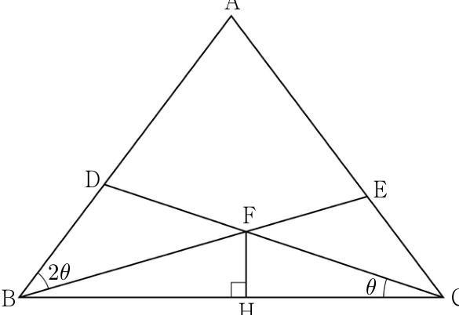
원본 정답 43
원본 풀이 (내부용)[출제의도] 삼각함수를 활용하여 문제해결하기
\(
\sin\theta=\frac{\sqrt{10}}{10}\text{이므로 }\tan\theta=\frac13
\)
\(
\tan2\theta=\tan(\theta+\theta)=\frac{2\tan\theta}{1-\tan^2\theta}=\frac34
\)
\(\angle CBA=\alpha\)라 하면 이등변삼각형 ABC에 의하여
\(
\tan\alpha=\frac43
\)
\(\angle CBE=\beta\)라 하면
\(
\beta=\alpha-2\theta\text{이므로 }\tan\beta
=\frac{\tan\alpha-\tan2\theta}{1+\tan\alpha\tan2\theta}
=\frac7{24}
\)
\(
\overline{BH}=\frac{\overline{FH}}{\tan\beta},\quad
\overline{CH}=\frac{\overline{FH}}{\tan\theta},\quad
\overline{BH}+\overline{CH}=12
\)
\(
\overline{FH}\left(\frac1{\tan\beta}+\frac1{\tan\theta}\right)=12\text{에서 }
\overline{FH}=\frac{28}{15}
\)
따라서 \(p=15,\ q=28\)이므로 \(p+q=43\)
쌍둥이 1/6 · 4점 쌍둥이$\overline{\mathrm{AB}}=\overline{\mathrm{AC}}=17$, $\overline{\mathrm{BC}}=16$인 이등변삼각형 $\mathrm{ABC}$가 있습니다. 선분 $\mathrm{AB}$ 위에 $\angle\mathrm{DCB}=\theta$, $\sin\theta=\frac{\sqrt{17}}{17}$이 되도록 점 $\mathrm{D}$를 잡고, 선분 $\mathrm{AC}$ 위에 $\angle\mathrm{EBA}=3\theta$가 되도록 점 $\mathrm{E}$를 잡습니다. 선분 $\mathrm{BE}$와 선분 $\mathrm{CD}$가 만나는 점을 $\mathrm{F}$, 점 $\mathrm{F}$에서 선분 $\mathrm{BC}$에 내린 수선의 발을 $\mathrm{H}$라 할 때, 선분 $\mathrm{FH}$의 길이는 $\frac{q}{p}$입니다. $p+q$의 값을 구하세요. (단, $p$, $q$는 서로소인 자연수입니다.)
쌍둥이 2/6 · 4점 쌍둥이그림과 같이 $\overline{AB}=\overline{AC}=10$, $\overline{BC}=12$인 이등변삼각형 $ABC$가 있습니다. 선분 $AB$ 위에 $\angle DCB=\theta$, $\tan\theta=\dfrac{1}{4}$이 되도록 점 $D$를 잡고, 선분 $AC$ 위에 $\angle EBA=3\theta$가 되도록 점 $E$를 잡습니다. 선분 $BE$와 선분 $CD$가 만나는 점을 $F$, 점 $F$에서 선분 $BC$에 내린 수선의 발을 $H$라 할 때, 선분 $FH$의 길이는 $\dfrac{q}{p}$입니다. $p+q$의 값을 구하세요. (단, $p$, $q$는 서로소인 자연수입니다.)
① $115$② $116$③ $117$④ $118$⑤ $119$
정답④ $118$ $B(-6,0)$, $C(6,0)$, $A(0,8)$로 놓으면 $\tan(\angle ABC)=\dfrac{4}{3}$이고, $t=\tan\theta=\dfrac{1}{4}$이므로 $\tan3\theta=\dfrac{3t-t^3}{1-3t^2}=\dfrac{47}{52}$입니다. $\tan(\angle EBC)=\tan(\angle ABC-3\theta)=\dfrac{67}{344}$입니다. 직선 $CD$는 $y=\dfrac{1}{4}(6-x)$, 직선 $BE$는 $y=\dfrac{67}{344}(x+6)$이므로 두 식을 연립하면 $x=\dfrac{38}{51}$, $\overline{FH}=y=\dfrac{67}{51}$입니다. 따라서 $p+q=118$입니다.
숫자: 원본 10 12 10 10 2 2 → 쌍둥이 10 12 1 4 3 · 같은 수: 10 12
쌍둥이 3/6 · 4점 쌍둥이그림과 같이 $\overline{AB}=\overline{AC}=20$, $\overline{BC}=24$인 이등변삼각형 $ABC$가 있습니다. 선분 $AB$ 위에 $\angle DCB=\theta$, $\tan\theta=\dfrac{1}{7}$이 되도록 점 $D$를 잡고, 선분 $AC$ 위에 $\angle EBA=3\theta$가 되도록 점 $E$를 잡습니다. 선분 $BE$와 선분 $CD$가 만나는 점을 $F$, 점 $F$에서 선분 $BC$에 내린 수선의 발을 $H$라 할 때, 선분 $FH$의 길이는 $\dfrac{q}{p}$입니다. $p+q$의 값을 구하세요. (단, $p$, $q$는 서로소인 자연수입니다.)
① $90$② $91$③ $92$④ $93$⑤ $94$
정답④ $93$ $B(-12,0)$, $C(12,0)$, $A(0,16)$로 놓으면 $\tan(\angle ABC)=\dfrac{4}{3}$이고, $t=\tan\theta=\dfrac{1}{7}$이므로 $\tan3\theta=\dfrac{3t-t^3}{1-3t^2}=\dfrac{73}{161}$입니다. $\tan(\angle EBC)=\tan(\angle ABC-3\theta)=\dfrac{17}{31}$입니다. 직선 $CD$는 $y=\dfrac{1}{7}(12-x)$, 직선 $BE$는 $y=\dfrac{17}{31}(x+12)$이므로 두 식을 연립하면 $x=-\dfrac{176}{25}$, $\overline{FH}=y=\dfrac{68}{25}$입니다. 따라서 $p+q=93$입니다.
숫자: 원본 10 12 10 10 2 2 → 쌍둥이 20 24 1 7 3
쌍둥이 4/6 · 4점 쌍둥이그림과 같이 $\overline{AB}=\overline{AC}=5$, $\overline{BC}=6$인 이등변삼각형 $ABC$가 있습니다. 선분 $AB$ 위에 $\angle DCB=\theta$, $\tan\theta=\dfrac{1}{5}$이 되도록 점 $D$를 잡고, 선분 $AC$ 위에 $\angle EBA=3\theta$가 되도록 점 $E$를 잡습니다. 선분 $BE$와 선분 $CD$가 만나는 점을 $F$, 점 $F$에서 선분 $BC$에 내린 수선의 발을 $H$라 할 때, 선분 $FH$의 길이는 $\dfrac{q}{p}$입니다. $p+q$의 값을 구하세요. (단, $p$, $q$는 서로소인 자연수입니다.)
① $249$② $250$③ $251$④ $252$⑤ $253$
정답④ $252$ $B(-3,0)$, $C(3,0)$, $A(0,4)$로 놓으면 $\tan(\angle ABC)=\dfrac{4}{3}$이고, $t=\tan\theta=\dfrac{1}{5}$이므로 $\tan3\theta=\dfrac{3t-t^3}{1-3t^2}=\dfrac{37}{55}$입니다. $\tan(\angle EBC)=\tan(\angle ABC-3\theta)=\dfrac{109}{313}$입니다. 직선 $CD$는 $y=\dfrac{1}{5}(3-x)$, 직선 $BE$는 $y=\dfrac{109}{313}(x+3)$이므로 두 식을 연립하면 $x=-\dfrac{116}{143}$, $\overline{FH}=y=\dfrac{109}{143}$입니다. 따라서 $p+q=252$입니다.
숫자: 원본 10 12 10 10 2 2 → 쌍둥이 5 6 1 5 3
쌍둥이 5/6 · 4점 쌍둥이그림과 같이 $\overline{AB}=\overline{AC}=15$, $\overline{BC}=18$인 이등변삼각형 $ABC$가 있습니다. 선분 $AB$ 위에 $\angle DCB=\theta$, $\tan\theta=\dfrac{1}{6}$이 되도록 점 $D$를 잡고, 선분 $AC$ 위에 $\angle EBA=3\theta$가 되도록 점 $E$를 잡습니다. 선분 $BE$와 선분 $CD$가 만나는 점을 $F$, 점 $F$에서 선분 $BC$에 내린 수선의 발을 $H$라 할 때, 선분 $FH$의 길이는 $\dfrac{q}{p}$입니다. $p+q$의 값을 구하세요. (단, $p$, $q$는 서로소인 자연수입니다.)
① $6159$② $6160$③ $6161$④ $6162$⑤ $6163$
정답⑤ $6163$ $B(-9,0)$, $C(9,0)$, $A(0,12)$로 놓으면 $\tan(\angle ABC)=\dfrac{4}{3}$이고, $t=\tan\theta=\dfrac{1}{6}$이므로 $\tan3\theta=\dfrac{3t-t^3}{1-3t^2}=\dfrac{107}{198}$입니다. $\tan(\angle EBC)=\tan(\angle ABC-3\theta)=\dfrac{471}{1022}$입니다. 직선 $CD$는 $y=\dfrac{1}{6}(9-x)$, 직선 $BE$는 $y=\dfrac{471}{1022}(x+9)$이므로 두 식을 연립하면 $x=-\dfrac{4059}{962}$, $\overline{FH}=y=\dfrac{4239}{1924}$입니다. 따라서 $p+q=6163$입니다.
숫자: 원본 10 12 10 10 2 2 → 쌍둥이 15 18 1 6 3
쌍둥이 6/6 · 4점 쌍둥이$\overline{\mathrm{AB}}=\overline{\mathrm{AC}}=13$, $\overline{\mathrm{BC}}=10$인 이등변삼각형 $\mathrm{ABC}$가 있습니다. 선분 $\mathrm{AB}$ 위에 $\angle\mathrm{DCB}=\theta$, $\sin\theta=\frac{\sqrt{17}}{17}$이 되도록 점 $\mathrm{D}$를 잡고, 선분 $\mathrm{AC}$ 위에 $\angle\mathrm{EBA}=3\theta$가 되도록 점 $\mathrm{E}$를 잡습니다. 선분 $\mathrm{BE}$와 선분 $\mathrm{CD}$가 만나는 점을 $\mathrm{F}$, 점 $\mathrm{F}$에서 선분 $\mathrm{BC}$에 내린 수선의 발을 $\mathrm{H}$라 할 때, 선분 $\mathrm{FH}$의 길이는 $\frac{q}{p}$입니다. $p+q$의 값을 구하세요. (단, $p$, $q$는 서로소인 자연수입니다.)
숫자: 원본 10 12 10 10 2 2 → 쌍둥이 13 10 17 17 3 · 같은 수: 10
5. 2019년 6월 가형 3번 · 2점 · 수학Ⅰ 삼각함수 · G2M1-02#13
원본 (내부용)반지름의 길이가 $6$이고 중심각의 크기가 $\frac{5}{6} \pi$인 부채꼴의 호의 길이는? [2점]
① $\pi$② $2\pi$③ $3\pi$④ $4\pi$⑤ $5\pi$
원본 정답 ⑤
원본 풀이 (내부용)[출제의도] 부채꼴의 호의 길이 계산하기
\(
r=6,\quad \theta=\frac{5\pi}{6}
\)
이고 \(l=r\theta\)이므로
\(
l=6\times\frac{5\pi}{6}=5\pi
\)
생성기 숫자판 1/6 · G2M1-02#13반지름의 길이가 $4$, 중심각의 크기가 $\frac{\pi}{3}$인 부채꼴의 호의 길이로 옳은 것을 고르세요.
① $\frac{2}{3}\pi$② $\pi$③ $\frac{4}{3}\pi$④ $\frac{5}{3}\pi$⑤ $2\pi$
정답③ $\frac{4}{3}\pi$ 호의 길이는 $l=r\theta=4\times \frac{\pi}{3}=\frac{4}{3}\pi$
숫자: 원본 6 5 6 → 쌍둥이 4 3
생성기 숫자판 2/6 · G2M1-02#13반지름의 길이가 $7$, 중심각의 크기가 $\frac{\pi}{3}$인 부채꼴의 호의 길이로 옳은 것을 고르세요.
① $\frac{5}{3}\pi$② $2\pi$③ $\frac{7}{3}\pi$④ $\frac{8}{3}\pi$⑤ $3\pi$
정답③ $\frac{7}{3}\pi$ 호의 길이는 $l=r\theta=7\times \frac{\pi}{3}=\frac{7}{3}\pi$
숫자: 원본 6 5 6 → 쌍둥이 7 3
생성기 숫자판 3/6 · G2M1-02#13반지름의 길이가 $7$, 중심각의 크기가 $\frac{\pi}{6}$인 부채꼴의 호의 길이로 옳은 것을 고르세요.
① $\frac{\pi}{2}$② $\frac{5}{6}\pi$③ $\frac{7}{6}\pi$④ $\frac{3}{2}\pi$⑤ $\frac{11}{6}\pi$
정답③ $\frac{7}{6}\pi$ 호의 길이는 $l=r\theta=7\times \frac{\pi}{6}=\frac{7}{6}\pi$
숫자: 원본 6 5 6 → 쌍둥이 7 6 · 같은 수: 6
생성기 숫자판 4/6 · G2M1-02#13반지름의 길이가 $9$, 중심각의 크기가 $\frac{\pi}{2}$인 부채꼴의 호의 길이로 옳은 것을 고르세요.
① $\frac{23}{6}\pi$② $\frac{25}{6}\pi$③ $\frac{9}{2}\pi$④ $\frac{29}{6}\pi$⑤ $\frac{31}{6}\pi$
정답③ $\frac{9}{2}\pi$ 호의 길이는 $l=r\theta=9\times \frac{\pi}{2}=\frac{9}{2}\pi$
숫자: 원본 6 5 6 → 쌍둥이 9 2
생성기 숫자판 5/6 · G2M1-02#13반지름의 길이가 $7$, 중심각의 크기가 $\frac{\pi}{4}$인 부채꼴의 호의 길이로 옳은 것을 고르세요.
① $\frac{13}{12}\pi$② $\frac{17}{12}\pi$③ $\frac{7}{4}\pi$④ $\frac{25}{12}\pi$⑤ $\frac{29}{12}\pi$
정답③ $\frac{7}{4}\pi$ 호의 길이는 $l=r\theta=7\times \frac{\pi}{4}=\frac{7}{4}\pi$
숫자: 원본 6 5 6 → 쌍둥이 7 4
생성기 숫자판 6/6 · G2M1-02#13반지름의 길이가 $2$, 중심각의 크기가 $\frac{\pi}{6}$인 부채꼴의 호의 길이로 옳은 것을 고르세요.
① $\frac{\pi}{3}$② $\frac{2}{3}\pi$③ $\pi$④ $\frac{4}{3}\pi$⑤ $\frac{5}{3}\pi$
정답① $\frac{\pi}{3}$ 호의 길이는 $l=r\theta=2\times \frac{\pi}{6}=\frac{\pi}{3}$
숫자: 원본 6 5 6 → 쌍둥이 2 6 · 같은 수: 6
6. 2019년 6월 가형 5번 · 3점 · 수학Ⅰ 삼각함수 · G2M1-02#8
원본 (내부용)$0 \le x \le 2 \pi$일 때, 방정식 $2\cos x - 1=0$ 의 모든 해의 합은? [3점]
① $\pi$② $\frac{3}{2} \pi$③ $2\pi$④ $\frac{5}{2} \pi$⑤ $3\pi$
원본 정답 ③
원본 풀이 (내부용)[출제의도] 삼각함수의 그래프를 이용하여 삼각함수가 포함된 방정식 이해하기
\(
2\cos x-1=0
\)
을 정리하면 \(\cos x=\frac12\)이므로 이 방정식의 해는 함수 \(y=\cos x\)의 그래프와 직선 \(y=\frac12\)이 만나는 점의 \(x\)좌표와 같다.
그러므로 구하는 해는
\(
x=\frac{\pi}{3}\quad\text{또는}\quad x=\frac{5\pi}{3}
\)
이다.
따라서 모든 해의 합은 \(2\pi\)이다.
생성기 숫자판 1/6 · G2M1-02#8$0\le x\le 2\pi$일 때, 방정식 $\sqrt{2}\cos x+1=0$의 모든 해의 합으로 옳은 것을 고르세요.
① $\pi$② $\frac{3}{2}\pi$③ $2\pi$④ $\frac{5}{2}\pi$⑤ $3\pi$
정답③ $2\pi$ $\sqrt{2}\cos x+1=0$에서 $\cos x=-\frac{\sqrt{2}}{2}$ $0\le x\le 2\pi$에서 $x=\frac{3}{4}\pi$ 또는 $x=\frac{5}{4}\pi$ 따라서 모든 해의 합은 $2\pi$
숫자: 원본 0 2 2 1 0 → 쌍둥이 0 2 2 1 0 · 같은 수: 0 1 2
생성기 숫자판 2/6 · G2M1-02#8$0\le x\le 2\pi$일 때, 방정식 $2\cos x-1=0$의 모든 해의 합으로 옳은 것을 고르세요.
① $\pi$② $\frac{3}{2}\pi$③ $2\pi$④ $\frac{5}{2}\pi$⑤ $3\pi$
정답③ $2\pi$ $2\cos x-1=0$에서 $\cos x=\frac{1}{2}$ $0\le x\le 2\pi$에서 $x=\frac{\pi}{3}$ 또는 $x=\frac{5}{3}\pi$ 따라서 모든 해의 합은 $2\pi$
숫자: 원본 0 2 2 1 0 → 쌍둥이 0 2 2 1 0 · 같은 수: 0 1 2
생성기 숫자판 3/6 · G2M1-02#8$0\le x\le 3\pi$일 때, 방정식 $\sqrt{2}\sin x-1=0$의 모든 해의 합으로 옳은 것을 고르세요.
① $5\pi$② $\frac{11}{2}\pi$③ $6\pi$④ $\frac{13}{2}\pi$⑤ $7\pi$
정답③ $6\pi$ $\sqrt{2}\sin x-1=0$에서 $\sin x=\frac{\sqrt{2}}{2}$ $0\le x\le 3\pi$에서 $x=\frac{\pi}{4}$ 또는 $x=\frac{3}{4}\pi$ 또는 $x=\frac{9}{4}\pi$ 또는 $x=\frac{11}{4}\pi$ 따라서 모든 해의 합은 $6\pi$
숫자: 원본 0 2 2 1 0 → 쌍둥이 0 3 2 1 0 · 같은 수: 0 1 2
생성기 숫자판 4/6 · G2M1-02#8$0\le x\le 3\pi$일 때, 방정식 $\sqrt{2}\sin x+1=0$의 모든 해의 합으로 옳은 것을 고르세요.
① $2\pi$② $\frac{5}{2}\pi$③ $3\pi$④ $\frac{7}{2}\pi$⑤ $4\pi$
정답③ $3\pi$ $\sqrt{2}\sin x+1=0$에서 $\sin x=-\frac{\sqrt{2}}{2}$ $0\le x\le 3\pi$에서 $x=\frac{5}{4}\pi$ 또는 $x=\frac{7}{4}\pi$ 따라서 모든 해의 합은 $3\pi$
숫자: 원본 0 2 2 1 0 → 쌍둥이 0 3 2 1 0 · 같은 수: 0 1 2
생성기 숫자판 5/6 · G2M1-02#8$0\le x\le 3\pi$일 때, 방정식 $2\sin x+1=0$의 모든 해의 합으로 옳은 것을 고르세요.
① $2\pi$② $\frac{5}{2}\pi$③ $3\pi$④ $\frac{7}{2}\pi$⑤ $4\pi$
정답③ $3\pi$ $2\sin x+1=0$에서 $\sin x=-\frac{1}{2}$ $0\le x\le 3\pi$에서 $x=\frac{7}{6}\pi$ 또는 $x=\frac{11}{6}\pi$ 따라서 모든 해의 합은 $3\pi$
숫자: 원본 0 2 2 1 0 → 쌍둥이 0 3 2 1 0 · 같은 수: 0 1 2
생성기 숫자판 6/6 · G2M1-02#8$0\le x\le 3\pi$일 때, 방정식 $\sqrt{2}\cos x-1=0$의 모든 해의 합으로 옳은 것을 고르세요.
① $\frac{13}{4}\pi$② $\frac{15}{4}\pi$③ $\frac{17}{4}\pi$④ $\frac{19}{4}\pi$⑤ $\frac{21}{4}\pi$
정답③ $\frac{17}{4}\pi$ $\sqrt{2}\cos x-1=0$에서 $\cos x=\frac{\sqrt{2}}{2}$ $0\le x\le 3\pi$에서 $x=\frac{\pi}{4}$ 또는 $x=\frac{7}{4}\pi$ 또는 $x=\frac{9}{4}\pi$ 따라서 모든 해의 합은 $\frac{17}{4}\pi$
숫자: 원본 0 2 2 1 0 → 쌍둥이 0 3 2 1 0 · 같은 수: 0 1 2
7. 2019년 6월 가형 8번 · 3점 · 수학Ⅰ 삼각함수 · G2M1-02b#5
원본 (내부용)좌표평면 위의 원점 $\mathrm{O}$에서 $x$축의 양의 방향으로 시초선을 잡을 때, 원점 $\mathrm{O}$와 점 $\mathrm{P} ( 5,12 )$를 지나는 동경 $\mathrm{OP}$가 나타내는 각의 크기를 $\theta$라 하자. $\sin ( \frac{3}{2} \pi + \theta )$의 값은? [3점]
① $- \frac{12}{13}$② $- \frac{7}{13}$③ $- \frac{5}{13}$④ $\frac{5}{13}$⑤ $\frac{7}{13}$
원본 정답 ③
원본 풀이 (내부용)[출제의도] 삼각함수의 일반각 이해하기
\(
\sin\left(\frac32\pi+\theta\right)=-\cos\theta
\)
이다.
원점 \(O\)와 점 \(P(5,12)\)를 지나는 동경 \(OP\)가 나타내는 각의 크기를 \(\theta\)라 하면
\(
\cos\theta=\frac5{13}
\)
이다.
따라서
\(
\sin\left(\frac32\pi+\theta\right)
=-\cos\theta=-\frac5{13}
\)
이다.
생성기 숫자판 1/6 · G2M1-02b#5좌표평면 위의 점 $\mathrm{P}\left(6,\ 8\right)$에 대하여 동경 $\mathrm{OP}$가 나타내는 각의 크기를 $\theta$라 할 때, $3\sin\left(\frac{\pi}{2}-\theta\right)$의 값으로 옳은 것을 고르세요. (단, $\mathrm{O}$는 원점이고, $x$축의 양의 방향을 시초선으로 합니다.)
① $\frac{9}{5}$② $2$③ $\frac{11}{5}$④ $\frac{12}{5}$⑤ $\frac{13}{5}$
생성기 숫자판 2/6 · G2M1-02b#5좌표평면 위의 점 $\mathrm{P}\left(4,\ -3\right)$에 대하여 동경 $\mathrm{OP}$가 나타내는 각의 크기를 $\theta$라 할 때, $3\cos\left(\frac{\pi}{2}+\theta\right)-2\sin\left(\pi-\theta\right)$의 값으로 옳은 것을 고르세요. (단, $\mathrm{O}$는 원점이고, $x$축의 양의 방향을 시초선으로 합니다.)
생성기 숫자판 3/6 · G2M1-02b#5좌표평면 위의 점 $\mathrm{P}\left(-3,\ -4\right)$에 대하여 동경 $\mathrm{OP}$가 나타내는 각의 크기를 $\theta$라 할 때, $\sin\left(-\theta\right)-2\sin\left(\frac{3}{2}\pi-\theta\right)$의 값으로 옳은 것을 고르세요. (단, $\mathrm{O}$는 원점이고, $x$축의 양의 방향을 시초선으로 합니다.)
① $-\frac{3}{5}$② $-\frac{2}{5}$③ $-\frac{1}{5}$④ $0$⑤ $\frac{1}{5}$
생성기 숫자판 4/6 · G2M1-02b#5좌표평면 위의 점 $\mathrm{P}\left(4,\ -3\right)$에 대하여 동경 $\mathrm{OP}$가 나타내는 각의 크기를 $\theta$라 할 때, $\cos\left(\pi-\theta\right)$의 값으로 옳은 것을 고르세요. (단, $\mathrm{O}$는 원점이고, $x$축의 양의 방향을 시초선으로 합니다.)
① $-\frac{4}{5}$② $-\frac{3}{5}$③ $-\frac{2}{5}$④ $-\frac{1}{5}$⑤ $0$
생성기 숫자판 5/6 · G2M1-02b#5좌표평면 위의 점 $\mathrm{P}\left(4,\ 3\right)$에 대하여 동경 $\mathrm{OP}$가 나타내는 각의 크기를 $\theta$라 할 때, $3\sin\left(\frac{\pi}{2}+\theta\right)-\sin\left(\frac{\pi}{2}-\theta\right)$의 값으로 옳은 것을 고르세요. (단, $\mathrm{O}$는 원점이고, $x$축의 양의 방향을 시초선으로 합니다.)
① $\frac{6}{5}$② $\frac{7}{5}$③ $\frac{8}{5}$④ $\frac{9}{5}$⑤ $2$
생성기 숫자판 6/6 · G2M1-02b#5좌표평면 위의 점 $\mathrm{P}\left(-5,\ -12\right)$에 대하여 동경 $\mathrm{OP}$가 나타내는 각의 크기를 $\theta$라 할 때, $2\cos\left(\frac{\pi}{2}+\theta\right)$의 값으로 옳은 것을 고르세요. (단, $\mathrm{O}$는 원점이고, $x$축의 양의 방향을 시초선으로 합니다.)
① $\frac{21}{13}$② $\frac{22}{13}$③ $\frac{23}{13}$④ $\frac{24}{13}$⑤ $\frac{25}{13}$
원본 (내부용)세 양수 $a$, $b$, $c$에 대하여 함수 $y=acosbx+c$의 그래프가 그림과 같을 때, $2a+b+c$의 값은? [3점] $\mathrm{O}$ $4$ $y$ $x$ $\pi$ $-\pi$ $-2$ $y=acosbx+c$
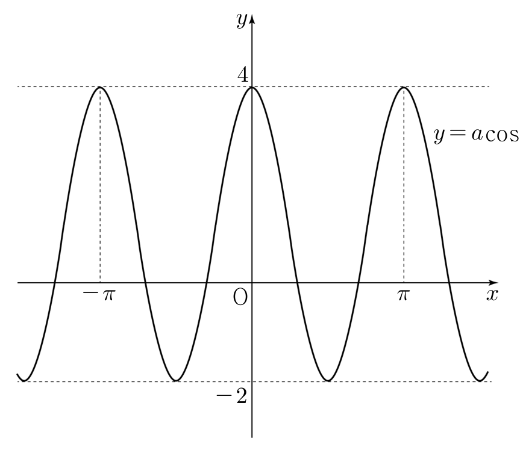
① $7$② $8$③ $9$④ $10$⑤ $11$
원본 정답 ③
원본 풀이 (내부용)[출제의도] 삼각함수의 그래프 이해하기
주어진 삼각함수의 주기가
\(
\frac{2\pi}{b}=\pi
\)
이므로 \(b=2\)이다. 이 함수의 최댓값이 \(4\), 최솟값이 \(-2\)이므로
\(
a+c=4,\quad -a+c=-2
\)
에서 \(a=3,\ c=1\)이다.
따라서 \(2a+b+c=9\)이다.
생성기 숫자판 1/6 · G2f-11#1세 양수 $a$, $b$, $c$에 대하여 함수 $y=a\cos bx+c$의 그래프가 그림과 같을 때, 주기는 $\frac{1}{3}\pi$이고 최솟값은 $-2$이고 최댓값은 $8$이다. $3a+b+c$의 값으로 옳은 것을 고르세요.
① $22$② $23$③ $24$④ $25$⑤ $26$
정답③ $24$ 그래프에서 최댓값이 $8$, 최솟값이 $-2$이고 $a>0$이므로 $a+c=8$, $-a+c=-2$ 두 식을 연립하면 $a=5$, $c=3$ $x=0$에서 최대이고 다음 최대가 $x=\frac{2\pi}{6}$이므로 주기는 $\frac{2\pi}{6}$ $b>0$이므로 $\frac{2\pi}{b}=\frac{2\pi}{6}$에서 $b=6$ 따라서 $3a+b+c=3\times 5+6+3=24$
숫자: 원본 2 4 2 → 쌍둥이 1 3 2 8 3 · 같은 수: 2
생성기 숫자판 2/6 · G2f-11#1세 양수 $a$, $b$, $c$에 대하여 함수 $y=a\cos bx+c$의 그래프가 그림과 같을 때, 주기는 $\frac{2}{5}\pi$이고 최솟값은 $-1$이고 최댓값은 $3$이다. $3a+b+c$의 값으로 옳은 것을 고르세요.
① $10$② $11$③ $12$④ $13$⑤ $14$
정답③ $12$ 그래프에서 최댓값이 $3$, 최솟값이 $-1$이고 $a>0$이므로 $a+c=3$, $-a+c=-1$ 두 식을 연립하면 $a=2$, $c=1$ $x=0$에서 최대이고 다음 최대가 $x=\frac{2\pi}{5}$이므로 주기는 $\frac{2\pi}{5}$ $b>0$이므로 $\frac{2\pi}{b}=\frac{2\pi}{5}$에서 $b=5$ 따라서 $3a+b+c=3\times 2+5+1=12$
숫자: 원본 2 4 2 → 쌍둥이 2 5 1 3 3 · 같은 수: 2
생성기 숫자판 3/6 · G2f-11#1세 양수 $a$, $b$, $c$에 대하여 함수 $y=a\cos bx+c$의 그래프가 그림과 같을 때, 주기는 $1\pi$이고 최솟값은 $-2$이고 최댓값은 $6$이다. $3a+b+c$의 값으로 옳은 것을 고르세요.
① $14$② $15$③ $16$④ $17$⑤ $18$
정답③ $16$ 그래프에서 최댓값이 $6$, 최솟값이 $-2$이고 $a>0$이므로 $a+c=6$, $-a+c=-2$ 두 식을 연립하면 $a=4$, $c=2$ $x=0$에서 최대이고 다음 최대가 $x=\pi$이므로 주기는 $\pi$ $b>0$이므로 $\frac{2\pi}{b}=\pi$에서 $b=2$ 따라서 $3a+b+c=3\times 4+2+2=16$
숫자: 원본 2 4 2 → 쌍둥이 1 2 6 3 · 같은 수: 2
생성기 숫자판 4/6 · G2f-11#1세 양수 $a$, $b$, $c$에 대하여 함수 $y=a\cos bx+c$의 그래프가 그림과 같을 때, 주기는 $\frac{1}{3}\pi$이고 최솟값은 $-1$이고 최댓값은 $3$이다. $3a+b+c$의 값으로 옳은 것을 고르세요.
① $11$② $12$③ $13$④ $14$⑤ $15$
정답③ $13$ 그래프에서 최댓값이 $3$, 최솟값이 $-1$이고 $a>0$이므로 $a+c=3$, $-a+c=-1$ 두 식을 연립하면 $a=2$, $c=1$ $x=0$에서 최대이고 다음 최대가 $x=\frac{2\pi}{6}$이므로 주기는 $\frac{2\pi}{6}$ $b>0$이므로 $\frac{2\pi}{b}=\frac{2\pi}{6}$에서 $b=6$ 따라서 $3a+b+c=3\times 2+6+1=13$
숫자: 원본 2 4 2 → 쌍둥이 1 3 1 3 3
생성기 숫자판 5/6 · G2f-11#1세 양수 $a$, $b$, $c$에 대하여 함수 $y=a\cos bx+c$의 그래프가 그림과 같을 때, 주기는 $\frac{2}{5}\pi$이고 최솟값은 $-1$이고 최댓값은 $7$이다. $3a+b+c$의 값으로 옳은 것을 고르세요.
① $18$② $19$③ $20$④ $21$⑤ $22$
정답③ $20$ 그래프에서 최댓값이 $7$, 최솟값이 $-1$이고 $a>0$이므로 $a+c=7$, $-a+c=-1$ 두 식을 연립하면 $a=4$, $c=3$ $x=0$에서 최대이고 다음 최대가 $x=\frac{2\pi}{5}$이므로 주기는 $\frac{2\pi}{5}$ $b>0$이므로 $\frac{2\pi}{b}=\frac{2\pi}{5}$에서 $b=5$ 따라서 $3a+b+c=3\times 4+5+3=20$
숫자: 원본 2 4 2 → 쌍둥이 2 5 1 7 3 · 같은 수: 2
생성기 숫자판 6/6 · G2f-11#1세 양수 $a$, $b$, $c$에 대하여 함수 $y=a\cos bx+c$의 그래프가 그림과 같을 때, 주기는 $\frac{2}{5}\pi$이고 최솟값은 $-1$이고 최댓값은 $5$이다. $3a+b+c$의 값으로 옳은 것을 고르세요.
① $14$② $15$③ $16$④ $17$⑤ $18$
정답③ $16$ 그래프에서 최댓값이 $5$, 최솟값이 $-1$이고 $a>0$이므로 $a+c=5$, $-a+c=-1$ 두 식을 연립하면 $a=3$, $c=2$ $x=0$에서 최대이고 다음 최대가 $x=\frac{2\pi}{5}$이므로 주기는 $\frac{2\pi}{5}$ $b>0$이므로 $\frac{2\pi}{b}=\frac{2\pi}{5}$에서 $b=5$ 따라서 $3a+b+c=3\times 3+5+2=16$
숫자: 원본 2 4 2 → 쌍둥이 2 5 1 5 3 · 같은 수: 2
9. 2019년 6월 가형 16번 · 4점 · 수학Ⅰ 삼각함수 · 4점 쌍둥이
원본 (내부용)다음은 $0< \theta <2 \pi$에서 $3+2\sin^{2} \theta + \frac{1}{3-2\cos^{2} \theta }$의 최솟값을 구하는 과정이다. $3+2\sin^{2} \theta =t$로 놓으면 $3+2\sin^{2} \theta + \frac{1}{3-2\cos^{2} \theta } =t+ \frac{1}{{\boxed{\text{(가)}}}}$ 이다. $0< \theta <2 \pi$에서 $t \ge 3$이므로 ${\boxed{\text{(가)}}}$$>0$이다. $t+ \frac{1}{{\boxed{\text{(가)}}}} =t-2+ \frac{1}{{\boxed{\text{(가)}}}} +2 \ge 4$ 이다. (단, 등호는 $t=$${\boxed{\text{(나)}}}$일 때 성립한다.) 따라서 $3+2\sin^{2} \theta + \frac{1}{3-2\cos^{2} \theta }$은 $\theta =$${\boxed{\text{(다)}}}$에서 최솟값 $4$를 갖는다. 위의 (가)에 알맞은 식을 $f(t)$, (나)와 (다)에 알맞은 수를 각각 $p$, $q$라 할 때, $f ( p ) +\tan^{2} ( q+ \frac{\pi }{3} )$의 값은? [4점]
① $4$② $5$③ $6$④ $7$⑤ $8$
원본 정답 ①
원본 풀이 (내부용)[출제의도] 삼각함수의 성질을 이용하여 추론하기
\(
3+2\sin^2\theta=t
\)
로 놓으면
\(
3+2\sin^2\theta+\frac1{3-2\cos^2\theta}
=t+\frac1{t-2}
\)
이다. \(0<\theta<2\pi\)에서 \(t\ge3\)이므로
\(
t-2>0
\)
이다.
\(
t+\frac1{t-2}
=t-2+\frac1{t-2}+2\ge4
\)
이다. (단, 등호는 \(t-2=\frac1{t-2}\)에서 \(t=3\)일 때 성립한다.)
따라서 \(3+2\sin^2\theta=t=3\)일 때 \(\theta=\pi\)이고, 이때
\(
3+2\sin^2\theta+\frac1{3-2\cos^2\theta}
\)
은 최솟값 4를 갖는다.
\(
f(t)=t-2,\quad p=3,\quad q=\pi
\)
이므로
\(
f(p)+\tan^2\left(q+\frac\pi3\right)
=f(3)+\tan^2\left(\pi+\frac\pi3\right)
=1+3=4
\)
이다.
쌍둥이 1/5 · 4점 쌍둥이다음은 $0<\theta<2\pi$에서 $2+\sin^{2}\theta+\frac{1}{2-\cos^{2}\theta}$의 최솟값을 구하는 과정입니다. $2+\sin^{2}\theta=t$로 놓으면 $2+\sin^{2}\theta+\frac{1}{2-\cos^{2}\theta}=t+\frac{1}{\boxed{\text{(가)}}}$입니다. $0<\theta<2\pi$에서 $t\ge2$이므로 $\boxed{\text{(가)}}>0$이고 $t+\frac{1}{\boxed{\text{(가)}}}=t-1+\frac{1}{\boxed{\text{(가)}}}+1\ge3$입니다. (단, 등호는 $t=\boxed{\text{(나)}}$일 때 성립합니다.) 따라서 주어진 식은 $\theta=\boxed{\text{(다)}}$에서 최솟값 $3$을 갖습니다. 위의 (가)에 알맞은 식을 $f(t)$, (나)와 (다)에 알맞은 수를 각각 $p$, $q$라 할 때, $f(2p)+\tan^{2}\left(q+\frac{\pi}{4}\right)$의 값으로 옳은 것을 고르세요.
쌍둥이 2/5 · 4점 쌍둥이다음은 $0<\theta<2\pi$에서 $4+3\sin^{2}\theta+\frac{1}{4-3\cos^{2}\theta}$의 최솟값을 구하는 과정입니다. $4+3\sin^{2}\theta=t$로 놓으면 $4+3\sin^{2}\theta+\frac{1}{4-3\cos^{2}\theta}=t+\frac{1}{\boxed{\text{(가)}}}$입니다. $0<\theta<2\pi$에서 $t\ge4$이므로 $\boxed{\text{(가)}}>0$이고 $t+\frac{1}{\boxed{\text{(가)}}}=t-3+\frac{1}{\boxed{\text{(가)}}}+3\ge5$입니다. (단, 등호는 $t=\boxed{\text{(나)}}$일 때 성립합니다.) 따라서 주어진 식은 $\theta=\boxed{\text{(다)}}$에서 최솟값 $5$를 갖습니다. 위의 (가)에 알맞은 식을 $f(t)$, (나)와 (다)에 알맞은 수를 각각 $p$, $q$라 할 때, $f(p)+\tan^{2}\left(q+\frac{\pi}{4}\right)$의 값으로 옳은 것을 고르세요.
쌍둥이 3/5 · 4점 쌍둥이다음은 $0<\theta<2\pi$에서 $5+4\sin^{2}\theta+\frac{1}{5-4\cos^{2}\theta}$의 최솟값을 구하는 과정입니다. $5+4\sin^{2}\theta=t$로 놓으면 $5+4\sin^{2}\theta+\frac{1}{5-4\cos^{2}\theta}=t+\frac{1}{\boxed{\text{(가)}}}$입니다. $0<\theta<2\pi$에서 $t\ge5$이므로 $\boxed{\text{(가)}}>0$이고 $t+\frac{1}{\boxed{\text{(가)}}}=t-4+\frac{1}{\boxed{\text{(가)}}}+4\ge6$입니다. (단, 등호는 $t=\boxed{\text{(나)}}$일 때 성립합니다.) 따라서 주어진 식은 $\theta=\boxed{\text{(다)}}$에서 최솟값 $6$을 갖습니다. 위의 (가)에 알맞은 식을 $f(t)$, (나)와 (다)에 알맞은 수를 각각 $p$, $q$라 할 때, $f(p)+\tan^{2}\left(q+\frac{\pi}{6}\right)$의 값으로 옳은 것을 고르세요.
① $1$② $\frac{4}{3}$③ $\frac{5}{3}$④ $2$⑤ $\frac{7}{3}$
쌍둥이 4/5 · 4점 쌍둥이$0<\theta<2\pi$에서 $4+3\sin^2\theta+\frac1{4-3\cos^2\theta}$의 최솟값을 구하는 과정입니다. $4+3\sin^2\theta=t$라 하면 식은 $t+1/f(t)$ 꼴입니다. 등호가 성립하는 $t=p$, 최솟값을 얻는 각 $\theta=q$에 대해 $f(p)+\tan^2(q+\pi/4)$를 구하세요.
① $1$② $2$③ $3$④ $4$⑤ $5$
정답② $2$ $4-3\cos^2\theta=1+3\sin^2\theta=t-3$이므로 $f(t)=t-3$입니다. $u=t-3\ge1$라 두면 원래 식은 $u+3+1/u\ge5$이고 등호는 $u=1$, 즉 $t=4$일 때 성립합니다. 따라서 $p=4$, $q=\pi$이고 $f(p)=1$, $\tan^2(5\pi/4)=1$이므로 합은 2입니다.
쌍둥이 5/5 · 4점 쌍둥이$0<\theta<2\pi$에서 $2+\sin^2\theta+\frac1{2-\cos^2\theta}$의 최솟값을 구하는 과정입니다. $2+\sin^2\theta=t$라 하면 식은 $t+1/f(t)$ 꼴입니다. 등호가 성립하는 $t=p$, 최솟값을 얻는 각 $\theta=q$에 대해 $f(2p)+\tan^2(q+\pi/6)$을 구하세요.
① $3$② $10/3$③ $11/3$④ $4$⑤ $13/3$
정답② $10/3$ $2-\cos^2\theta=1+\sin^2\theta=t-1$이므로 $f(t)=t-1$입니다. $u=t-1\ge1$라 두면 식은 $u+1+1/u\ge3$이고 등호는 $u=1$, 즉 $t=2$일 때입니다. 등호가 성립하는 각은 $q=\pi$입니다. $f(2p)=f(4)=3$이고 $\tan^2(7\pi/6)=1/3$이므로 합은 $10/3$입니다.
원본 (내부용)그림과 같이 반지름의 길이가 $4$이고 중심각의 크기가 $\frac{\pi }{6}$인 부채꼴 $\mathrm{OAB}$가 있다. 선분 $\mathrm{OA}$ 위의 점 $\mathrm{P}$에 대하여 선분 $\mathrm{PA}$를 지름으로 하고 선분 $\mathrm{OB}$에 접하는 반원을 $C$라 할 때, 부채꼴 $\mathrm{OAB}$의 넓이를 $S_1$, 반원 $C$의 넓이를 $S_2$라 하자. $S_1 -S_2$의 값은? [4점] $4$ $\mathrm{O}$ $\mathrm{P}$ $\mathrm{A}$ $\mathrm{B}$ $C$ $\frac{\pi }{6}$
원본 풀이 (내부용)[출제의도] 삼각함수를 이용하여 도형의 넓이 문제 해결하기
반원 \(C\)의 중심을 \(Q\), 반지름의 길이를 \(r\)라 하면
\(
OA=4,\quad OQ=4-r
\)
이다. 선분 \(OB\)와 반원 \(C\)의 접점을 \(H\)라 하면 \(QH=r\)이다.
부채꼴의 중심각의 크기가 \(\frac\pi6\)이므로
\(
\sin\frac\pi6=\frac{r}{4-r}=\frac12
\)
에서 \(r=\frac43\)이다.
따라서
\(
S_1=\frac12\times4^2\times\frac\pi6=\frac43\pi,
\)
\(
S_2=\frac12\times\pi\times\left(\frac43\right)^2=\frac89\pi
\)
이므로
\(
S_1-S_2=\frac49\pi
\)
이다.
쌍둥이 1/5 · 4점 쌍둥이반지름이 8이고 중심각이 $\pi/6$인 부채꼴 $OAB$에서 $P$는 $OA$ 위에 있습니다. $PA$를 지름으로 하며 $OB$에 접하는 반원의 넓이를 $S_2$, 부채꼴의 넓이를 $S_1$이라 할 때 $S_1-S_2$를 구하세요.
① $14\pi/9$② $15\pi/9$③ $16\pi/9$④ $17\pi/9$⑤ $18\pi/9$
정답③ $16\pi/9$ 반원의 지름 길이를 $d=PA$라 하면 그 중심은 $OA$ 위에서 $O$로부터 $8-d/2$만큼 떨어져 있습니다. $OB$까지의 거리는 $(8-d/2)\sin(\pi/6)$입니다. 접선 조건에서 $(8-d/2)/2=d/2$이므로 $d=16/3$입니다. $S_1=\frac12\cdot8^2\cdot\pi/6=16\pi/3$, $S_2=\pi d^2/8=32\pi/9$이므로 차는 $16\pi/9$입니다.
쌍둥이 2/5 · 4점 쌍둥이반지름의 길이가 $6$이고 중심각의 크기가 $\frac{\pi}{6}$인 부채꼴 $\mathrm{OAB}$가 있습니다. 선분 $\mathrm{OA}$ 위의 점 $\mathrm{P}$에 대하여 선분 $\mathrm{PA}$를 지름으로 하고 선분 $\mathrm{OB}$에 접하는 반원을 $C$라 할 때, 부채꼴 $\mathrm{OAB}$의 넓이를 $S_{1}$, 반원 $C$의 넓이를 $S_{2}$라 합니다. $S_{1}-S_{2}$의 값으로 옳은 것을 고르세요.
① $\frac{\pi}{3}$② $\frac{2 \pi}{3}$③ $\pi$④ $\frac{4 \pi}{3}$⑤ $\frac{5 \pi}{3}$
정답③ $\pi$ 반원의 중심을 $\mathrm{M}$, 반지름을 $r$라 하면 $\overline{\mathrm{OM}}=6-r$이고, 선분 $\mathrm{OB}$에 접하므로 $(6-r)\sin\frac{\pi}{6}=r$ $\frac{6-r}{2}=r$에서 $r=2$ $S_{1}=\frac{1}{2}\times6^{2}\times\frac{\pi}{6}=3 \pi$, $S_{2}=\frac{1}{2}\pi\times\left(2\right)^{2}=2 \pi$ $S_{1}-S_{2}=\pi$
쌍둥이 3/5 · 4점 쌍둥이반지름의 길이가 $3$이고 중심각의 크기가 $\frac{\pi}{6}$인 부채꼴 $\mathrm{OAB}$가 있습니다. 선분 $\mathrm{OA}$ 위의 점 $\mathrm{P}$에 대하여 선분 $\mathrm{PA}$를 지름으로 하고 선분 $\mathrm{OB}$에 접하는 반원을 $C$라 할 때, 부채꼴 $\mathrm{OAB}$의 넓이를 $S_{1}$, 반원 $C$의 넓이를 $S_{2}$라 합니다. $S_{1}-S_{2}$의 값으로 옳은 것을 고르세요.
① $\frac{\pi}{16}$② $\frac{\pi}{8}$③ $\frac{3 \pi}{16}$④ $\frac{\pi}{4}$⑤ $\frac{5 \pi}{16}$
정답④ $\frac{\pi}{4}$ 반원의 중심을 $\mathrm{M}$, 반지름을 $r$라 하면 $\overline{\mathrm{OM}}=3-r$이고, 선분 $\mathrm{OB}$에 접하므로 $(3-r)\sin\frac{\pi}{6}=r$ $\frac{3-r}{2}=r$에서 $r=1$ $S_{1}=\frac{1}{2}\times3^{2}\times\frac{\pi}{6}=\frac{3 \pi}{4}$, $S_{2}=\frac{1}{2}\pi\times\left(1\right)^{2}=\frac{\pi}{2}$ $S_{1}-S_{2}=\frac{\pi}{4}$
쌍둥이 4/5 · 4점 쌍둥이반지름의 길이가 $9$이고 중심각의 크기가 $\frac{\pi}{6}$인 부채꼴 $\mathrm{OAB}$가 있습니다. 선분 $\mathrm{OA}$ 위의 점 $\mathrm{P}$에 대하여 선분 $\mathrm{PA}$를 지름으로 하고 선분 $\mathrm{OB}$에 접하는 반원을 $C$라 할 때, 부채꼴 $\mathrm{OAB}$의 넓이를 $S_{1}$, 반원 $C$의 넓이를 $S_{2}$라 합니다. $S_{1}-S_{2}$의 값으로 옳은 것을 고르세요.
쌍둥이 5/5 · 4점 쌍둥이반지름이 9이고 중심각이 $\pi/6$인 부채꼴 $OAB$에서 $P$는 $OA$ 위에 있습니다. $PA$를 지름으로 하며 $OB$에 접하는 반원의 넓이를 $S_2$, 부채꼴의 넓이를 $S_1$이라 할 때 $S_1-S_2$를 구하세요.
① $17\pi/8$② $18\pi/8$③ $19\pi/8$④ $20\pi/8$⑤ $21\pi/8$
정답② $18\pi/8$ 접하는 반원의 지름을 $d$라 하면 반원 중심에서 $OB$까지의 거리는 $(9-d/2)\sin(\pi/6)$입니다. 접선이므로 이 거리는 $d/2$입니다. $(9-d/2)/2=d/2$에서 $d=6$입니다. $S_1=81\pi/12=27\pi/4$, $S_2=\pi\cdot6^2/8=9\pi/2$이므로 $S_1-S_2=9\pi/4=18\pi/8$입니다.
① $0$② $\frac{\pi }{6}$③ $\frac{\pi }{4}$④ $\frac{\pi }{3}$⑤ $\frac{\pi }{2}$
원본 정답 ④
원본 풀이 (내부용)[출제의도] 삼각함수가 포함된 방정식 계산하기
\(
0\le x\le\frac{\pi}{2}
\)
이므로
\(
-\frac{\pi}{6}\le x-\frac{\pi}{6}\le\frac{\pi}{3}
\)
이다.
\(
\sin\left(x-\frac{\pi}{6}\right)=\frac12
\)
에서
\(
x-\frac{\pi}{6}=\frac{\pi}{6}
\)
이므로
\(
x=\frac{\pi}{3}
\)
이다.
생성기 숫자판 1/6 · G2M1-02b#0방정식 $\cos 2x=0$의 해로 옳은 것을 고르세요. (단, $0\le x\le \frac{2}{3}\pi$)
① $\frac{\pi}{12}$② $\frac{\pi}{9}$③ $\frac{\pi}{6}$④ $\frac{\pi}{4}$⑤ $\frac{\pi}{3}$
정답④ $\frac{\pi}{4}$ $0\le x\le \frac{2}{3}\pi$에서 $2x$의 값의 범위는 $0$ 이상 $\frac{4}{3}\pi$ 이하 이 범위에서 $\cos t=0$인 $t$는 $t=\frac{\pi}{2}$뿐입니다. $2x=\frac{\pi}{2}$에서 $x=\frac{\pi}{4}$
숫자: 원본 6 1 2 0 2 → 쌍둥이 2 0 0 2 3 · 같은 수: 0 2
생성기 숫자판 2/6 · G2M1-02b#0방정식 $\cos 3x=\frac{1}{2}$의 해로 옳은 것을 고르세요. (단, $0\le x\le \frac{\pi}{3}$)
① $0$② $\frac{\pi}{18}$③ $\frac{\pi}{12}$④ $\frac{\pi}{9}$⑤ $\frac{\pi}{6}$
정답④ $\frac{\pi}{9}$ $0\le x\le \frac{\pi}{3}$에서 $3x$의 값의 범위는 $0$ 이상 $\pi$ 이하 이 범위에서 $\cos t=\frac{1}{2}$인 $t$는 $t=\frac{\pi}{3}$뿐입니다. $3x=\frac{\pi}{3}$에서 $x=\frac{\pi}{9}$
숫자: 원본 6 1 2 0 2 → 쌍둥이 3 1 2 0 3 · 같은 수: 0 1 2
생성기 숫자판 3/6 · G2M1-02b#0방정식 $\sin\left(x-\frac{\pi}{4}\right)=0$의 해로 옳은 것을 고르세요. (단, $0\le x\le \pi$)
① $\frac{\pi}{12}$② $\frac{\pi}{9}$③ $\frac{\pi}{6}$④ $\frac{\pi}{4}$⑤ $\frac{\pi}{3}$
정답④ $\frac{\pi}{4}$ $0\le x\le \pi$에서 $x-\frac{\pi}{4}$의 값의 범위는 $-\frac{\pi}{4}$ 이상 $\frac{3}{4}\pi$ 이하 이 범위에서 $\sin t=0$인 $t$는 $t=0$뿐입니다. $x-\frac{\pi}{4}=0$에서 $x=\frac{\pi}{4}$
숫자: 원본 6 1 2 0 2 → 쌍둥이 4 0 0 · 같은 수: 0
생성기 숫자판 4/6 · G2M1-02b#0방정식 $\cos\left(x-\frac{\pi}{6}\right)=1$의 해로 옳은 것을 고르세요. (단, $0\le x\le \pi$)
① $\frac{\pi}{18}$② $\frac{\pi}{12}$③ $\frac{\pi}{9}$④ $\frac{\pi}{6}$⑤ $\frac{\pi}{4}$
정답④ $\frac{\pi}{6}$ $0\le x\le \pi$에서 $x-\frac{\pi}{6}$의 값의 범위는 $-\frac{\pi}{6}$ 이상 $\frac{5}{6}\pi$ 이하 이 범위에서 $\cos t=1$인 $t$는 $t=0$뿐입니다. $x-\frac{\pi}{6}=0$에서 $x=\frac{\pi}{6}$
숫자: 원본 6 1 2 0 2 → 쌍둥이 6 1 0 · 같은 수: 0 1 6
생성기 숫자판 5/6 · G2M1-02b#0방정식 $\cos\left(x-\frac{\pi}{3}\right)=1$의 해로 옳은 것을 고르세요. (단, $0\le x\le \frac{\pi}{2}$)
① $\frac{\pi}{6}$② $\frac{\pi}{4}$③ $\frac{\pi}{3}$④ $\frac{5}{12}\pi$⑤ $\frac{\pi}{2}$
정답③ $\frac{\pi}{3}$ $0\le x\le \frac{\pi}{2}$에서 $x-\frac{\pi}{3}$의 값의 범위는 $-\frac{\pi}{3}$ 이상 $\frac{\pi}{6}$ 이하 이 범위에서 $\cos t=1$인 $t$는 $t=0$뿐입니다. $x-\frac{\pi}{3}=0$에서 $x=\frac{\pi}{3}$
숫자: 원본 6 1 2 0 2 → 쌍둥이 3 1 0 2 · 같은 수: 0 1 2
생성기 숫자판 6/6 · G2M1-02b#0방정식 $\sin\left(x-\frac{\pi}{3}\right)=\frac{\sqrt{2}}{2}$의 해로 옳은 것을 고르세요. (단, $0\le x\le \pi$)
① $\frac{5}{12}\pi$② $\frac{\pi}{2}$③ $\frac{7}{12}\pi$④ $\frac{2}{3}\pi$⑤ $\frac{3}{4}\pi$
정답③ $\frac{7}{12}\pi$ $0\le x\le \pi$에서 $x-\frac{\pi}{3}$의 값의 범위는 $-\frac{\pi}{3}$ 이상 $\frac{2}{3}\pi$ 이하 이 범위에서 $\sin t=\frac{\sqrt{2}}{2}$인 $t$는 $t=\frac{\pi}{4}$뿐입니다. $x-\frac{\pi}{3}=\frac{\pi}{4}$에서 $x=\frac{7}{12}\pi$
원본 풀이 (내부용)[출제의도] 삼각함수 이해하기
\(
\sin^2\theta+\cos^2\theta=1
\)
이므로
\(
\sin^2\theta=1-\cos^2\theta
=1-\frac19
=\frac89
\)
이다. \(\pi<\theta<\frac32\pi\)에서 \(\sin\theta<0\)이므로
\(
\sin\theta=-\frac{2\sqrt2}{3}
\)
이다.
\(
\tan\theta=\frac{\sin\theta}{\cos\theta}
=\frac{-\frac{2\sqrt2}{3}}{-\frac13}
=2\sqrt2
\)
이다. 따라서
\(
\tan\theta-\sin\theta
=2\sqrt2-\left(-\frac{2\sqrt2}{3}\right)
=\frac{8\sqrt2}{3}
\)
이다.
생성기 숫자판 1/6 · G2M1-02b#1$\frac{\pi}{2}<\theta<\pi$인 $\theta$에 대하여 $\cos\theta=-\frac{1}{3}$일 때, $\tan\theta-\sin\theta$의 값으로 옳은 것을 고르세요.
① $-\frac{11\sqrt{2}}{3}$② $-\frac{10\sqrt{2}}{3}$③ $-3\sqrt{2}$④ $-\frac{8\sqrt{2}}{3}$⑤ $-\frac{7\sqrt{2}}{3}$
정답④ $-\frac{8\sqrt{2}}{3}$ $\frac{\pi}{2}<\theta<\pi$이므로 $\sin\theta>0$ $\sin\theta=\sqrt{1-\left(-\frac{1}{3}\right)^{2}}=\frac{2\sqrt{2}}{3}$ $\tan\theta=\frac{\sin\theta}{\cos\theta}=-2\sqrt{2}$ 따라서 $\tan\theta-\sin\theta=-2\sqrt{2}-\frac{2\sqrt{2}}{3}=-\frac{8\sqrt{2}}{3}$
숫자: 원본 1 3 3 2 → 쌍둥이 2 1 3 · 같은 수: 1 2 3
생성기 숫자판 2/6 · G2M1-02b#1$\frac{3}{2}\pi<\theta<2\pi$인 $\theta$에 대하여 $\sin\theta=-\frac{2}{3}$일 때, $\tan\theta-\sin\theta$의 값으로 옳은 것을 고르세요.
① $\frac{4}{3}-\frac{4\sqrt{5}}{5}$② $\frac{2}{3}-\frac{2\sqrt{5}}{5}$③ $0$④ $-\frac{2}{3}+\frac{2\sqrt{5}}{5}$⑤ $-\frac{4}{3}+\frac{4\sqrt{5}}{5}$
정답② $\frac{2}{3}-\frac{2\sqrt{5}}{5}$ $\frac{3}{2}\pi<\theta<2\pi$이므로 $\cos\theta>0$ $\cos\theta=\sqrt{1-\left(-\frac{2}{3}\right)^{2}}=\frac{\sqrt{5}}{3}$ $\tan\theta=\frac{\sin\theta}{\cos\theta}=-\frac{2\sqrt{5}}{5}$ 따라서 $\tan\theta-\sin\theta=-\frac{2\sqrt{5}}{5}-\left(-\frac{2}{3}\right)=\frac{2}{3}-\frac{2\sqrt{5}}{5}$
숫자: 원본 1 3 3 2 → 쌍둥이 3 2 2 2 3 · 같은 수: 2 3
생성기 숫자판 3/6 · G2M1-02b#1$\frac{\pi}{2}<\theta<\pi$인 $\theta$에 대하여 $\sin\theta=\frac{3}{5}$일 때, $\tan\theta-\sin\theta$의 값으로 옳은 것을 고르세요.
① $-\frac{27}{20}$② $-\frac{13}{10}$③ $-\frac{5}{4}$④ $-\frac{6}{5}$⑤ $-\frac{23}{20}$
정답① $-\frac{27}{20}$ $\frac{\pi}{2}<\theta<\pi$이므로 $\cos\theta<0$ $\cos\theta=-\sqrt{1-\left(\frac{3}{5}\right)^{2}}=-\frac{4}{5}$ $\tan\theta=\frac{\sin\theta}{\cos\theta}=-\frac{3}{4}$ 따라서 $\tan\theta-\sin\theta=-\frac{3}{4}-\frac{3}{5}=-\frac{27}{20}$
숫자: 원본 1 3 3 2 → 쌍둥이 2 3 5 · 같은 수: 2 3
생성기 숫자판 4/6 · G2M1-02b#1$\frac{\pi}{2}<\theta<\pi$인 $\theta$에 대하여 $\sin\theta=\frac{12}{13}$일 때, $\tan\theta-\sin\theta$의 값으로 옳은 것을 고르세요.
① $-\frac{44}{13}$② $-\frac{219}{65}$③ $-\frac{218}{65}$④ $-\frac{217}{65}$⑤ $-\frac{216}{65}$
정답⑤ $-\frac{216}{65}$ $\frac{\pi}{2}<\theta<\pi$이므로 $\cos\theta<0$ $\cos\theta=-\sqrt{1-\left(\frac{12}{13}\right)^{2}}=-\frac{5}{13}$ $\tan\theta=\frac{\sin\theta}{\cos\theta}=-\frac{12}{5}$ 따라서 $\tan\theta-\sin\theta=-\frac{12}{5}-\frac{12}{13}=-\frac{216}{65}$
숫자: 원본 1 3 3 2 → 쌍둥이 2 12 13 · 같은 수: 2
생성기 숫자판 5/6 · G2M1-02b#1$\frac{\pi}{2}<\theta<\pi$인 $\theta$에 대하여 $\cos\theta=-\frac{5}{13}$일 때, $\tan\theta-\sin\theta$의 값으로 옳은 것을 고르세요.
① $-\frac{217}{65}$② $-\frac{216}{65}$③ $-\frac{43}{13}$④ $-\frac{214}{65}$⑤ $-\frac{213}{65}$
정답② $-\frac{216}{65}$ $\frac{\pi}{2}<\theta<\pi$이므로 $\sin\theta>0$ $\sin\theta=\sqrt{1-\left(-\frac{5}{13}\right)^{2}}=\frac{12}{13}$ $\tan\theta=\frac{\sin\theta}{\cos\theta}=-\frac{12}{5}$ 따라서 $\tan\theta-\sin\theta=-\frac{12}{5}-\frac{12}{13}=-\frac{216}{65}$
숫자: 원본 1 3 3 2 → 쌍둥이 2 5 13 · 같은 수: 2
생성기 숫자판 6/6 · G2M1-02b#1$\frac{\pi}{2}<\theta<\pi$인 $\theta$에 대하여 $\sin\theta=\frac{2}{3}$일 때, $\tan\theta-\sin\theta$의 값으로 옳은 것을 고르세요.
① $-\frac{4\sqrt{5}}{5}-\frac{4}{3}$② $-\frac{2\sqrt{5}}{5}-\frac{2}{3}$③ $0$④ $\frac{2}{3}+\frac{2\sqrt{5}}{5}$⑤ $\frac{4}{3}+\frac{4\sqrt{5}}{5}$
정답② $-\frac{2\sqrt{5}}{5}-\frac{2}{3}$ $\frac{\pi}{2}<\theta<\pi$이므로 $\cos\theta<0$ $\cos\theta=-\sqrt{1-\left(\frac{2}{3}\right)^{2}}=-\frac{\sqrt{5}}{3}$ $\tan\theta=\frac{\sin\theta}{\cos\theta}=-\frac{2\sqrt{5}}{5}$ 따라서 $\tan\theta-\sin\theta=-\frac{2\sqrt{5}}{5}-\frac{2}{3}=-\frac{2\sqrt{5}}{5}-\frac{2}{3}$
숫자: 원본 1 3 3 2 → 쌍둥이 2 2 3 · 같은 수: 2 3
15. 2019년 6월 나형 14번 · 4점 · 수학Ⅰ 삼각함수 · 4점 쌍둥이
원본 (내부용)함수 $y=asinbx+c$의 그래프가 그림과 같을 때, 세 상수 $a$, $b$, $c$에 대하여 $2a+b+c$의 값은? (단, $a>0$, $b>0$) [4점] $x$ $y$ $\mathrm{O}$ $y=asinbx+c$ $2$ $-4$ $\frac{ \pi }{4 }$ $\frac{3}{4} \pi$ $\frac{5}{4} \pi$
① $1$② $3$③ $5$④ $7$⑤ $9$
원본 정답 ④
원본 풀이 (내부용)[출제의도] 삼각함수의 그래프 이해하기
함수 \(y=a\sin bx+c\)의 그래프에서 최댓값과 최솟값이 각각 \(2,-4\)이고 \(a>0\)이므로
\(
a+c=2,\qquad -a+c=-4
\)
에서 \(a=3,\ c=-1\)이다.
함수 \(y=a\sin bx+c\)의 주기는 \(\pi\)이고 \(b>0\)이므로
\(
\frac{2\pi}{b}=\pi
\)
에서 \(b=2\)이다. 따라서
\(
2a+b+c=6+2+(-1)=7
\)
이다.
쌍둥이 1/5 · 4점 쌍둥이함수 $y=a\sin bx+c$의 그래프가 그림과 같을 때, 세 상수 $a,b,c$에 대하여 $a+2b-c$의 값을 구하시오. (단, $a>0$, $b>0$) [4점]
① $9$② $11$③ $13$④ $15$⑤ $17$
정답③ $13$ 그래프의 최댓값은 $1$, 최솟값은 $-7$이므로 $a=\frac{1-(-7)}{2}=4$, $c=\frac{1+(-7)}{2}=-3$이다. 연속한 두 최댓값의 $x$좌표는 $\frac{\pi}{6}$, $\frac{5 \pi}{6}$이므로 주기는 $\frac{2 \pi}{3}=\frac{2\pi}{b}$에서 $b=3$이다. 따라서 $a+2b-c=4+2\times3-(-3)=13$이다.
원본 (내부용)다음은 $0< \theta <2 \pi$에서 $3+2\sin^{2} \theta + \frac{1}{3-2\cos^{2} \theta }$의 최솟값을 구하는 과정이다. $3+2\sin^{2} \theta =t$로 놓으면 $3+2\sin^{2} \theta + \frac{1}{3-2\cos^{2} \theta } =t+ \frac{1}{{\boxed{\text{(가)}}}}$ 이다. $0< \theta <2 \pi$에서 $t \ge 3$이므로 ${\boxed{\text{(가)}}}$$>0$이다. $t+ \frac{1}{{\boxed{\text{(가)}}}} =t-2+ \frac{1}{{\boxed{\text{(가)}}}} +2 \ge 4$ 이다. (단, 등호는 $t=$${\boxed{\text{(나)}}}$일 때 성립한다.) 따라서 $3+2\sin^{2} \theta + \frac{1}{3-2\cos^{2} \theta }$은 $\theta =$${\boxed{\text{(다)}}}$에서 최솟값 $4$를 갖는다. 위의 (가)에 알맞은 식을 $f(t)$, (나)와 (다)에 알맞은 수를 각각 $p$, $q$라 할 때, $f(p)+\tan^{2} ( q+ \frac{\pi }{3} )$의 값은? [4점]
① $4$② $5$③ $6$④ $7$⑤ $8$
원본 정답 ①
원본 풀이 (내부용)[출제의도] 삼각함수의 성질을 이용하여 추론하기
\(
3+2\sin^2\theta=t
\)
라 놓으면
\(
3+2\sin^2\theta+\frac1{3-2\cos^2\theta}
=t+\frac1{t-2}
\)
이다. \(0<\theta<2\pi\)에서 \(t\ge3\)이므로
\(
t-2>0
\)
이다.
\(
t+\frac1{t-2}
=t-2+\frac1{t-2}+2\ge4
\)
이다. (단, 등호는 \(t-2=\frac1{t-2}\)에서 \(t=3\)일 때 성립한다.)
따라서 \(3+2\sin^2\theta=t=3\)일 때 \(\theta=\pi\)이고, 이때
\(
3+2\sin^2\theta+\frac1{3-2\cos^2\theta}
\)
은 최솟값 4를 갖는다.
\(
f(t)=t-2,\quad p=3,\quad q=\pi
\)
이므로
\(
\begin{aligned}
f(p)+\tan^2\left(q+\frac{\pi}{3}\right)
&=f(3)+\tan^2\left(\pi+\frac{\pi}{3}\right)\\
&=1+3=4
\end{aligned}
\)
이다.
쌍둥이 1/5 · 4점 쌍둥이다음은 $0<\theta<2\pi$에서 $4+3\sin^{2}\theta+\frac{1}{4-3\cos^{2}\theta}$의 최솟값을 구하는 과정입니다. $4+3\sin^{2}\theta=t$로 놓으면 $4+3\sin^{2}\theta+\frac{1}{4-3\cos^{2}\theta}=t+\frac{1}{\boxed{\text{(가)}}}$입니다. $0<\theta<2\pi$에서 $t\ge4$이므로 $\boxed{\text{(가)}}>0$이고 $t+\frac{1}{\boxed{\text{(가)}}}=t-3+\frac{1}{\boxed{\text{(가)}}}+3\ge5$입니다. (단, 등호는 $t=\boxed{\text{(나)}}$일 때 성립합니다.) 따라서 주어진 식은 $\theta=\boxed{\text{(다)}}$에서 최솟값 $5$를 갖습니다. 위의 (가)에 알맞은 식을 $f(t)$, (나)와 (다)에 알맞은 수를 각각 $p$, $q$라 할 때, $f(p)+\tan^{2}\left(q+\frac{\pi}{4}\right)$의 값으로 옳은 것을 고르세요.
쌍둥이 2/5 · 4점 쌍둥이다음은 $0<\theta<2\pi$에서 $5+4\sin^{2}\theta+\frac{1}{5-4\cos^{2}\theta}$의 최솟값을 구하는 과정입니다. $5+4\sin^{2}\theta=t$로 놓으면 $5+4\sin^{2}\theta+\frac{1}{5-4\cos^{2}\theta}=t+\frac{1}{\boxed{\text{(가)}}}$입니다. $0<\theta<2\pi$에서 $t\ge5$이므로 $\boxed{\text{(가)}}>0$이고 $t+\frac{1}{\boxed{\text{(가)}}}=t-4+\frac{1}{\boxed{\text{(가)}}}+4\ge6$입니다. (단, 등호는 $t=\boxed{\text{(나)}}$일 때 성립합니다.) 따라서 주어진 식은 $\theta=\boxed{\text{(다)}}$에서 최솟값 $6$을 갖습니다. 위의 (가)에 알맞은 식을 $f(t)$, (나)와 (다)에 알맞은 수를 각각 $p$, $q$라 할 때, $f(p)+\tan^{2}\left(q+\frac{\pi}{6}\right)$의 값으로 옳은 것을 고르세요.
① $1$② $\frac{4}{3}$③ $\frac{5}{3}$④ $2$⑤ $\frac{7}{3}$
쌍둥이 3/5 · 4점 쌍둥이다음은 $0<\theta<2\pi$에서 $2+\sin^{2}\theta+\frac{1}{2-\cos^{2}\theta}$의 최솟값을 구하는 과정입니다. $2+\sin^{2}\theta=t$로 놓으면 $2+\sin^{2}\theta+\frac{1}{2-\cos^{2}\theta}=t+\frac{1}{\boxed{\text{(가)}}}$입니다. $0<\theta<2\pi$에서 $t\ge2$이므로 $\boxed{\text{(가)}}>0$이고 $t+\frac{1}{\boxed{\text{(가)}}}=t-1+\frac{1}{\boxed{\text{(가)}}}+1\ge3$입니다. (단, 등호는 $t=\boxed{\text{(나)}}$일 때 성립합니다.) 따라서 주어진 식은 $\theta=\boxed{\text{(다)}}$에서 최솟값 $3$을 갖습니다. 위의 (가)에 알맞은 식을 $f(t)$, (나)와 (다)에 알맞은 수를 각각 $p$, $q$라 할 때, $f(2p)+\tan^{2}\left(q+\frac{\pi}{4}\right)$의 값으로 옳은 것을 고르세요.
쌍둥이 4/5 · 4점 쌍둥이$0<\theta<2\pi$에서 $5+4\sin^2\theta+\frac1{5-4\cos^2\theta}$의 최솟값을 구하는 과정입니다. $5+4\sin^2\theta=t$로 놓고, 등호가 성립하는 $t=p$, 최소가 되는 각 $\theta=q$라 할 때 $f(p)+\tan^2(q+\pi/3)$을 구하세요. 여기서 식은 $t+1/f(t)$ 꼴입니다.
① $3$② $4$③ $5$④ $6$⑤ $7$
정답② $4$ $5-4\cos^2\theta=1+4\sin^2\theta=t-4$이므로 $f(t)=t-4$입니다. $u=t-4\ge1$라 두면 식은 $u+4+1/u\ge6$이고 등호는 $u=1$, 즉 $t=5$일 때입니다. 각은 $q=\pi$이므로 $f(p)=1$ 및 $\tan^2(4\pi/3)=3$입니다. 합은 4입니다.
쌍둥이 5/5 · 4점 쌍둥이$0<\theta<2\pi$에서 $3+2\sin^2\theta+\frac1{3-2\cos^2\theta}$의 최솟값을 구하는 과정입니다. $3+2\sin^2\theta=t$로 놓고, 등호가 성립하는 $t=p$, 최소가 되는 각 $\theta=q$라 할 때 $f(2p)+\tan^2(q+\pi/6)$을 구하세요. 여기서 식은 $t+1/f(t)$ 꼴입니다.
① $4$② $13/3$③ $14/3$④ $5$⑤ $16/3$
정답② $13/3$ $3-2\cos^2\theta=1+2\sin^2\theta=t-2$이므로 $f(t)=t-2$입니다. $u=t-2\ge1$라 두면 식은 $u+2+1/u\ge4$이고 등호는 $u=1$, 즉 $t=3$에서입니다. 등호가 되는 각은 $q=\pi$입니다. $f(2p)=f(6)=4$이고 $\tan^2(7\pi/6)=1/3$이므로 답은 $13/3$입니다.
원본 풀이 (내부용)[출제의도] 삼각함수의 그래프 문제 해결하기
직선
\(
y=-\frac1{5\pi}x+1
\)
과 함수 \(y=\sin x\)의 그래프는 그림과 같다.
그림에는 \(y=1,\ y=-1,\ x=0,\ 5\pi,\ 10\pi\)가 표시되어 있다. \(y=\sin x\)의 그래프와 직선 \(y=-\frac1{5\pi}x+1\)의 교점 개수는 11이다.
## 해설 — 정답·교사용 자료
쌍둥이 1/5 · 4점 쌍둥이직선 $y=-\frac{1}{4\pi}x+1$과 함수 $y=\sin x$의 그래프의 교점의 개수로 옳은 것을 고르세요.
① $7$② $8$③ $9$④ $10$⑤ $11$
정답③ $9$ 직선은 두 점 $\left(0,\ 1\right)$, $\left(8\pi,\ -1\right)$을 지나므로 교점은 $0\le x\le 8\pi$에만 있습니다. 직선과 $y=\sin x$의 그래프는 모두 점 $\left(4\pi,\ 0\right)$에 대하여 대칭이고, 이 점은 교점입니다. $0<x<4\pi$에서 직선의 $y$좌표는 $0$과 $1$ 사이이므로 $\sin x>0$인 구간 $\left(0,\ \pi\right)$, $\left(2\pi,\ 3\pi\right)$에서만 만납니다. 각 구간에서 $2$개씩 만나므로 교점은 $4$개 대칭이므로 $4\pi<x<8\pi$에서도 교점은 $4$개 교점의 개수는 $4+4+1=9$
숫자: 원본 1 5 1 → 쌍둥이 1 4 1 · 같은 수: 1
쌍둥이 2/5 · 4점 쌍둥이직선 $y=-\frac{1}{3\pi}x+1$과 함수 $y=\sin x$의 그래프의 교점의 개수로 옳은 것을 고르세요.
① $7$② $8$③ $9$④ $10$⑤ $11$
정답① $7$ 직선은 두 점 $\left(0,\ 1\right)$, $\left(6\pi,\ -1\right)$을 지나므로 교점은 $0\le x\le 6\pi$에만 있습니다. 직선과 $y=\sin x$의 그래프는 모두 점 $\left(3\pi,\ 0\right)$에 대하여 대칭이고, 이 점은 교점입니다. $0<x<3\pi$에서 직선의 $y$좌표는 $0$과 $1$ 사이이므로 $\sin x>0$인 구간 $\left(0,\ \pi\right)$, $\left(2\pi,\ 3\pi\right)$에서만 만납니다. 마지막 구간은 끝점 $x=3\pi$가 대칭점이므로 그 안에서 $1$개, 나머지 구간에서 $2$개씩 만나 교점은 $3$개 대칭이므로 $3\pi<x<6\pi$에서도 교점은 $3$개 교점의 개수는 $3+3+1=7$
숫자: 원본 1 5 1 → 쌍둥이 1 3 1 · 같은 수: 1
쌍둥이 3/5 · 4점 쌍둥이직선 $y=-\frac{1}{6\pi}x+1$과 함수 $y=\sin x$의 그래프의 교점의 개수로 옳은 것을 고르세요.
① $10$② $11$③ $12$④ $13$⑤ $14$
정답④ $13$ 직선은 두 점 $\left(0,\ 1\right)$, $\left(12\pi,\ -1\right)$을 지나므로 교점은 $0\le x\le 12\pi$에만 있습니다. 직선과 $y=\sin x$의 그래프는 모두 점 $\left(6\pi,\ 0\right)$에 대하여 대칭이고, 이 점은 교점입니다. $0<x<6\pi$에서 직선의 $y$좌표는 $0$과 $1$ 사이이므로 $\sin x>0$인 구간 $\left(0,\ \pi\right)$, $\left(2\pi,\ 3\pi\right)$, $\left(4\pi,\ 5\pi\right)$에서만 만납니다. 각 구간에서 $2$개씩 만나므로 교점은 $6$개 대칭이므로 $6\pi<x<12\pi$에서도 교점은 $6$개 교점의 개수는 $6+6+1=13$
숫자: 원본 1 5 1 → 쌍둥이 1 6 1 · 같은 수: 1
쌍둥이 4/5 · 4점 쌍둥이양의 정수 $n$에 대하여 직선 $y=-\frac{x}{n\pi}+1$과 함수 $y=\sin x$의 그래프의 교점의 개수가 $11$일 때, $n$의 값은?
① $3$② $4$③ $5$④ $6$⑤ $7$
정답③ $5$ 직선은 $x=0$에서 $1$이고 $x=2n\pi$에서 $-1$이다. $x<0$에서는 직선의 값이 $1$보다 커 교점이 없고, $x>2n\pi$에서는 직선의 값이 $-1$보다 작아 교점이 없다. $x=0$에서 한 교점이 있다. $0<x<2n\pi$에서는 사인 그래프의 반파와 직선의 위치를 끝점과 극값에서 비교하면 교점이 $2n$개이다. 따라서 전체 교점 수는 $2n+1$이다. $2n+1=11$에서 $n=5$이다.
숫자: 원본 1 5 1 → 쌍둥이 1 11 · 같은 수: 1
쌍둥이 5/5 · 4점 쌍둥이양의 정수 $n$에 대하여 직선 $y=-\frac{x}{n\pi}+1$과 함수 $y=\sin x$의 그래프의 교점의 개수가 $15$일 때, $n$의 값은?
① $5$② $6$③ $7$④ $8$⑤ $9$
정답③ $7$ 직선은 $x=0$에서 $1$이고 $x=2n\pi$에서 $-1$이다. $x<0$에서는 직선의 값이 $1$보다 커 교점이 없고, $x>2n\pi$에서는 직선의 값이 $-1$보다 작아 교점이 없다. $x=0$에서 한 교점이 있다. $0<x<2n\pi$에서는 사인 그래프의 반파와 직선의 위치를 끝점과 극값에서 비교하면 교점이 $2n$개이다. 따라서 전체 교점 수는 $2n+1$이다. $2n+1=15$에서 $n=7$이다.
숫자: 원본 1 5 1 → 쌍둥이 1 15 · 같은 수: 1
18. 2019년 6월 나형 21번 · 4점 · 수학Ⅰ 삼각함수 · 4점 쌍둥이
원본 (내부용)음이 아닌 세 정수 $a$, $b$, $n$에 대하여 $( a^{2} +b^{2} +2ab-4 ) \cos \frac{n}{4} \pi + ( b^{2} +ab+2 ) \tan \frac{2n+1}{4} \pi =0$ 일 때, $a+b+\sin^{2} \frac{n}{8} \pi$의 값은? (단, $a \ge b$) [4점]
① $4$② $\frac{19}{4}$③ $\frac{11}{2}$④ $\frac{25}{4}$⑤ $7$
그림·참고 단답형 ① $4$ ② $\frac{19}{4}$ ③ $\frac{11}{2}$ ④ $\frac{25}{4}$ ⑤ $7$ 단답형
원본 정답 ①
원본 풀이 (내부용)[출제의도] 삼각함수의 그래프를 이용하여 추론하기
함수
\(
y=\cos\frac{n\pi x}{4}
\)
의 주기가 8이고 함수
\(
y=\tan\frac{(2x+1)\pi}{4}
\)
의 주기가 2이므로 다음과 같이 8가지 경우로 나눌 수 있다.
(i) \(n=8k\) (\(k\)는 음이 아닌 정수)일 때
\(
\cos\frac n4\pi=\cos2k\pi=1
\)
이고
\(
\tan\frac{2n+1}{4}\pi
=\tan\left(4k+\frac14\right)\pi=1
\)
이다.
\(
(a^2+b^2+2ab-4)+(b^2+ab+2)=0
\)
이므로
\(
a^2+2b^2+3ab-2=0
\)
이다. 따라서
\(
(a+b)(a+2b)=2
\)
이고 \(a+b\le a+2b\)이므로
\(
a+b=1,\quad a+2b=2
\)
이다. 그러므로 \(a=0,\ b=1\)인데, 이것은 \(a\ge b\)라는 조건에 맞지 않는다.
(ii) \(n=8k+1\) (\(k\)는 음이 아닌 정수)일 때
\(
\cos\frac n4\pi=\cos\left(2k+\frac14\right)\pi=\frac{\sqrt2}{2}
\)
이고
\(
\tan\frac{2n+1}{4}\pi
=\tan\left(4k+\frac34\right)\pi=-1
\)
이므로
\(
a^2+b^2+2ab-4=0,\quad b^2+ab+2=0
\)
이다.
\(b^2+ab+2=0\)을 만족시키는 음이 아닌 정수 \(a,b\)는 존재하지 않는다.
(iii) \(n=8k+2\) (\(k\)는 음이 아닌 정수)일 때
\(
\cos\frac n4\pi=\cos\left(2k+\frac12\right)\pi=0
\)
이고
\(
\tan\frac{2n+1}{4}\pi
=\tan\left(4k+\frac54\right)\pi=1
\)
이므로
\(
b^2+ab+2=0
\)
이다. \(b^2+ab+2=0\)을 만족시키는 음이 아닌 정수 \(a,b\)는 존재하지 않는다.
(iv) \(n=8k+3\) (\(k\)는 음이 아닌 정수)일 때
\(
\cos\frac n4\pi=\cos\left(2k+\frac34\right)\pi=-\frac{\sqrt2}{2}
\)
이고
\(
\tan\frac{2n+1}{4}\pi
=\tan\left(4k+\frac74\right)\pi=-1
\)
이므로
\(
a^2+b^2+2ab-4=0,\quad b^2+ab+2=0
\)
이다.
\(b^2+ab+2=0\)을 만족시키는 음이 아닌 정수 \(a,b\)는 존재하지 않는다.
(v) \(n=8k+4\) (\(k\)는 음이 아닌 정수)일 때
\(
\cos\frac n4\pi=\cos(2k+1)\pi=-1
\)
이고
\(
\tan\frac{2n+1}{4}\pi
=\tan\left(4k+\frac94\right)\pi=1
\)
이다.
\(
-(a^2+b^2+2ab-4)+(b^2+ab+2)=0
\)
이므로
\(
a^2+ab-6=0
\)
이다. 따라서 \(a(a+b)=6\)이고 \(a\le a+b\)이므로
\(
a=1,\ a+b=6
\)
또는
\(
a=2,\ a+b=3
\)
이다. 그러므로 \(a=1,\ b=5\) 또는 \(a=2,\ b=1\)이다. \(a\ge b\)이므로 \(a=2,\ b=1\)이다.
(vi) \(n=8k+5\) (\(k\)는 음이 아닌 정수)일 때
\(
\cos\frac n4\pi=\cos\left(2k+\frac54\right)\pi=-\frac{\sqrt2}{2}
\)
이고
\(
\tan\frac{2n+1}{4}\pi
=\tan\left(4k+\frac{11}{4}\right)\pi=-1
\)
이므로
\(
a^2+b^2+2ab-4=0,\quad b^2+ab+2=0
\)
이다.
\(b^2+ab+2=0\)을 만족시키는 음이 아닌 정수 \(a,b\)는 존재하지 않는다.
(vii) \(n=8k+6\) (\(k\)는 음이 아닌 정수)일 때
\(
\cos\frac n4\pi=\cos\left(2k+\frac32\right)\pi=0
\)
이고
\(
\tan\frac{2n+1}{4}\pi
=\tan\left(4k+\frac{13}{4}\right)\pi=1
\)
이므로
\(
b^2+ab+2=0
\)
이다. \(b^2+ab+2=0\)을 만족시키는 음이 아닌 정수 \(a,b\)는 존재하지 않는다.
(viii) \(n=8k+7\) (\(k\)는 음이 아닌 정수)일 때
\(
\cos\frac n4\pi=\cos\left(2k+\frac74\right)\pi=\frac{\sqrt2}{2}
\)
이고
\(
\tan\frac{2n+1}{4}\pi
=\tan\left(4k+\frac{15}{4}\right)\pi=-1
\)
이므로
\(
a^2+b^2+2ab-4=0,\quad b^2+ab+2=0
\)
이다.
\(b^2+ab+2=0\)을 만족시키는 음이 아닌 정수 \(a,b\)는 존재하지 않는다.
따라서 \(n=8k+4,\ a=2,\ b=1\)이다. 그러므로
\(
a+b+\sin^2\frac n8\pi
=2+1+\sin^2\left(k+\frac12\right)\pi=4
\)
이다.
쌍둥이 1/5 · 4점 쌍둥이음이 아닌 세 정수 $a,b,n$ ($a\ge b$)에 대하여 $(a^2+b^2+3ab-3)\cos\frac{n\pi}{4}+(b^2+ab+5)\tan\left(\frac{n\pi}{2}+\frac{\pi}{4}\right)=0$일 때, $a+b+\sin^2\frac{n\pi}{8}$의 값을 구하세요.
① $2$② $3$③ $4$④ $5$⑤ $6$
정답③ $4$ $n$이 홀수이면 코사인 항은 무리수 성분을 가지지만 $b^2+ab+5>0$은 정수이므로 등식이 성립하지 않습니다. $n$이 짝수이면 탄젠트 값은 $1$입니다. $\cos(n\pi/4)=1$일 때 좌변은 $a^2+2b^2+4ab+2$로 양수이고, 코사인 값이 $0$일 때도 $b^2+ab+5>0$이므로 불가능합니다. $\cos(n\pi/4)=-1$일 때는 $a^2+2ab=8$입니다. $a\ge b\ge0$에서 가능한 정수쌍은 $(2,1)$뿐이므로 $n\equiv4\pmod8$이고 $\sin^2(n\pi/8)=1$. 따라서 구하는 값은 $2+1+1=4$입니다.
쌍둥이 2/5 · 4점 쌍둥이음이 아닌 세 정수 $a,b,n$ ($a\ge b$)에 대하여 $(a^2+b^2+3ab-0)\cos\frac{n\pi}{4}+(b^2+ab+1)\tan\left(\frac{n\pi}{2}+\frac{\pi}{4}\right)=0$일 때, $a+b+\sin^2\frac{n\pi}{8}$의 값을 구하세요.
① $0$② $1$③ $2$④ $3$⑤ $4$
정답③ $2$ $n$이 홀수이면 코사인 항은 무리수 성분을 가지지만 $b^2+ab+1>0$은 정수이므로 등식이 성립하지 않습니다. $n$이 짝수이면 탄젠트 값은 $1$입니다. $\cos(n\pi/4)=1$일 때 좌변은 $a^2+2b^2+4ab+1$로 양수이고, 코사인 값이 $0$일 때도 $b^2+ab+1>0$이므로 불가능합니다. $\cos(n\pi/4)=-1$일 때는 $a^2+2ab=1$입니다. $a\ge b\ge0$에서 가능한 정수쌍은 $(1,0)$뿐이므로 $n\equiv4\pmod8$이고 $\sin^2(n\pi/8)=1$. 따라서 구하는 값은 $1+0+1=2$입니다.
쌍둥이 3/5 · 4점 쌍둥이음이 아닌 세 정수 $a,b,n$ ($a\ge b$)에 대하여 $(a^2+b^2+3ab-1)\cos\frac{n\pi}{4}+(b^2+ab+3)\tan\left(\frac{n\pi}{2}+\frac{\pi}{4}\right)=0$일 때, $a+b+\sin^2\frac{n\pi}{8}$의 값을 구하세요.
① $1$② $2$③ $3$④ $4$⑤ $5$
정답③ $3$ $n$이 홀수이면 코사인 항은 무리수 성분을 가지지만 $b^2+ab+3>0$은 정수이므로 등식이 성립하지 않습니다. $n$이 짝수이면 탄젠트 값은 $1$입니다. $\cos(n\pi/4)=1$일 때 좌변은 $a^2+2b^2+4ab+2$로 양수이고, 코사인 값이 $0$일 때도 $b^2+ab+3>0$이므로 불가능합니다. $\cos(n\pi/4)=-1$일 때는 $a^2+2ab=4$입니다. $a\ge b\ge0$에서 가능한 정수쌍은 $(2,0)$뿐이므로 $n\equiv4\pmod8$이고 $\sin^2(n\pi/8)=1$. 따라서 구하는 값은 $2+0+1=3$입니다.
쌍둥이 4/5 · 4점 쌍둥이음이 아닌 세 정수 $a,b,n$ ($a\ge b$)에 대하여 $(a^2+b^2+3ab-5)\cos\frac{n\pi}{4}+(b^2+ab+10)\tan\left(\frac{n\pi}{2}+\frac{\pi}{4}\right)=0$일 때, $a+b+\sin^2\frac{n\pi}{8}$의 값을 구하세요.
① $3$② $4$③ $5$④ $6$⑤ $7$
정답③ $5$ $n$이 홀수이면 코사인 항은 무리수 성분을 가지지만 $b^2+ab+10>0$은 정수이므로 등식이 성립하지 않습니다. $n$이 짝수이면 탄젠트 값은 $1$입니다. $\cos(n\pi/4)=1$일 때 좌변은 $a^2+2b^2+4ab+5$로 양수이고, 코사인 값이 $0$일 때도 $b^2+ab+10>0$이므로 불가능합니다. $\cos(n\pi/4)=-1$일 때는 $a^2+2ab=15$입니다. $a\ge b\ge0$에서 가능한 정수쌍은 $(3,1)$뿐이므로 $n\equiv4\pmod8$이고 $\sin^2(n\pi/8)=1$. 따라서 구하는 값은 $3+1+1=5$입니다.
쌍둥이 5/5 · 4점 쌍둥이음이 아닌 세 정수 $a,b,n$ ($a\ge b$)에 대하여 $(a^2+b^2+3ab-8)\cos\frac{n\pi}{4}+(b^2+ab+13)\tan\left(\frac{n\pi}{2}+\frac{\pi}{4}\right)=0$일 때, $a+b+\sin^2\frac{n\pi}{8}$의 값을 구하세요.
① $4$② $5$③ $6$④ $7$⑤ $8$
정답③ $6$ $n$이 홀수이면 코사인 항은 무리수 성분을 가지지만 $b^2+ab+13>0$은 정수이므로 등식이 성립하지 않습니다. $n$이 짝수이면 탄젠트 값은 $1$입니다. $\cos(n\pi/4)=1$일 때 좌변은 $a^2+2b^2+4ab+5$로 양수이고, 코사인 값이 $0$일 때도 $b^2+ab+13>0$이므로 불가능합니다. $\cos(n\pi/4)=-1$일 때는 $a^2+2ab=21$입니다. $a\ge b\ge0$에서 가능한 정수쌍은 $(3,2)$뿐이므로 $n\equiv4\pmod8$이고 $\sin^2(n\pi/8)=1$. 따라서 구하는 값은 $3+2+1=6$입니다.
원본 (내부용)$\sin \theta -\cos \theta = \frac{1}{2}$일 때, $8\sin \theta \cos \theta$의 값을 구하시오. [3점]
원본 정답 ③
원본 풀이 (내부용)[출제의도] 삼각함수의 성질 이해하기
\(
\sin\theta-\cos\theta=\frac12
\)
의 양변을 제곱하면
\(
\sin^2\theta-2\sin\theta\cos\theta+\cos^2\theta=\frac14
\)
이다. \(\sin^2\theta+\cos^2\theta=1\)이므로
\(
1-2\sin\theta\cos\theta=\frac14
\)
이고
\(
2\sin\theta\cos\theta=\frac34
\)
이다. 따라서
\(
8\sin\theta\cos\theta=\frac34\times4=3
\)
이다.
생성기 숫자판 1/6 · G2M1-02#11$\sin\theta-\cos\theta=\frac{1}{3}$일 때, $18\sin\theta\cos\theta$의 값을 구하세요.
정답$8$ 양변을 제곱하면 $\sin^{2}\theta-2\sin\theta\cos\theta+\cos^{2}\theta=\frac{1}{9}$ $1-2\sin\theta\cos\theta=\frac{1}{9}$이므로 $\sin\theta\cos\theta=\frac{4}{9}$ 따라서 $18\sin\theta\cos\theta=8$
숫자: 원본 1 2 8 → 쌍둥이 1 3 18 · 같은 수: 1
생성기 숫자판 2/6 · G2M1-02#11$\sin\theta-\cos\theta=\frac{2}{3}$일 때, $18\sin\theta\cos\theta$의 값을 구하세요.
정답$5$ 양변을 제곱하면 $\sin^{2}\theta-2\sin\theta\cos\theta+\cos^{2}\theta=\frac{4}{9}$ $1-2\sin\theta\cos\theta=\frac{4}{9}$이므로 $\sin\theta\cos\theta=\frac{5}{18}$ 따라서 $18\sin\theta\cos\theta=5$
숫자: 원본 1 2 8 → 쌍둥이 2 3 18 · 같은 수: 2
생성기 숫자판 3/6 · G2M1-02#11$\sin\theta+\cos\theta=\frac{\sqrt{30}}{5}$일 때, $20\sin\theta\cos\theta$의 값을 구하세요.
정답$2$ 양변을 제곱하면 $\sin^{2}\theta+2\sin\theta\cos\theta+\cos^{2}\theta=\frac{6}{5}$ $1+2\sin\theta\cos\theta=\frac{6}{5}$이므로 $\sin\theta\cos\theta=\frac{1}{10}$ 따라서 $20\sin\theta\cos\theta=2$
숫자: 원본 1 2 8 → 쌍둥이 30 5 20
생성기 숫자판 4/6 · G2M1-02#11$\sin\theta-\cos\theta=\frac{1}{4}$일 때, $64\sin\theta\cos\theta$의 값을 구하세요.
정답$30$ 양변을 제곱하면 $\sin^{2}\theta-2\sin\theta\cos\theta+\cos^{2}\theta=\frac{1}{16}$ $1-2\sin\theta\cos\theta=\frac{1}{16}$이므로 $\sin\theta\cos\theta=\frac{15}{32}$ 따라서 $64\sin\theta\cos\theta=30$
숫자: 원본 1 2 8 → 쌍둥이 1 4 64 · 같은 수: 1
생성기 숫자판 5/6 · G2M1-02#11$\sin\theta+\cos\theta=\frac{\sqrt{5}}{2}$일 때, $8\sin\theta\cos\theta$의 값을 구하세요.
정답$1$ 양변을 제곱하면 $\sin^{2}\theta+2\sin\theta\cos\theta+\cos^{2}\theta=\frac{5}{4}$ $1+2\sin\theta\cos\theta=\frac{5}{4}$이므로 $\sin\theta\cos\theta=\frac{1}{8}$ 따라서 $8\sin\theta\cos\theta=1$
숫자: 원본 1 2 8 → 쌍둥이 5 2 8 · 같은 수: 2 8
생성기 숫자판 6/6 · G2M1-02#11$\sin\theta-\cos\theta=\frac{1}{2}$일 때, $16\sin\theta\cos\theta$의 값을 구하세요.
정답$6$ 양변을 제곱하면 $\sin^{2}\theta-2\sin\theta\cos\theta+\cos^{2}\theta=\frac{1}{4}$ $1-2\sin\theta\cos\theta=\frac{1}{4}$이므로 $\sin\theta\cos\theta=\frac{3}{8}$ 따라서 $16\sin\theta\cos\theta=6$
숫자: 원본 1 2 8 → 쌍둥이 1 2 16 · 같은 수: 1 2
20. 2019년 6월 나형 25번 · 3점 · 수학Ⅰ 삼각함수 · G2M1-02b#2
원본 (내부용)상수 $k$에 대하여 함수 $f ( x ) =2 \sqrt{3} tanx+k$의 그래프가 점 $( \frac{\pi }{6} ,7 )$을 지날 때, $f ( \frac{\pi }{3} )$의 값을 구하시오. [3점]
원본 정답 11
원본 풀이 (내부용)[출제의도] 삼각함수 이해하기
\(
f\left(\frac{\pi}{6}\right)
=2\sqrt3\tan\frac{\pi}{6}+k
=2+k=7
\)
이므로 \(k=5\)이다.
따라서
\(
f\left(\frac{\pi}{3}\right)
=2\sqrt3\tan\frac{\pi}{3}+5
=6+5=11
\)
이다.
생성기 숫자판 1/6 · G2M1-02b#2상수 $k$에 대하여 함수 $f\left(x\right)=6\tan x+k$의 그래프가 점 $\left(\frac{\pi}{4},\ -1\right)$을 지날 때, $f\left(-\frac{\pi}{4}\right)$의 값을 구하세요.
생성기 숫자판 2/6 · G2M1-02b#2상수 $k$에 대하여 함수 $f\left(x\right)=9\tan x+k$의 그래프가 점 $\left(\frac{\pi}{4},\ 10\right)$을 지날 때, $f\left(\frac{3}{4}\pi\right)$의 값을 구하세요.
생성기 숫자판 3/6 · G2M1-02b#2상수 $k$에 대하여 함수 $f\left(x\right)=6\sqrt{3}\tan x+k$의 그래프가 점 $\left(\frac{\pi}{6},\ 4\right)$를 지날 때, $f\left(-\frac{\pi}{6}\right)$의 값을 구하세요.
생성기 숫자판 4/6 · G2M1-02b#2상수 $k$에 대하여 함수 $f\left(x\right)=6\sqrt{3}\tan x+k$의 그래프가 점 $\left(\frac{\pi}{6},\ 1\right)$을 지날 때, $f\left(-\frac{\pi}{6}\right)$의 값을 구하세요.
생성기 숫자판 5/6 · G2M1-02b#2상수 $k$에 대하여 함수 $f\left(x\right)=4\sqrt{3}\tan x+k$의 그래프가 점 $\left(\frac{\pi}{6},\ -9\right)$를 지날 때, $f\left(-\frac{\pi}{6}\right)$의 값을 구하세요.
생성기 숫자판 6/6 · G2M1-02b#2상수 $k$에 대하여 함수 $f\left(x\right)=6\tan x+k$의 그래프가 점 $\left(-\frac{\pi}{4},\ 9\right)$를 지날 때, $f\left(\frac{\pi}{4}\right)$의 값을 구하세요.
원본 (내부용)함수 $y=ksin ( 2x+ \frac{\pi }{3} ) +k^{2} -6$의 그래프가 제$1$사분면을 지나지 않도록 하는 모든 정수 $k$의 개수를 구하시오. [4점]
원본 정답 ⑤
원본 풀이 (내부용)[출제의도] 삼각함수의 그래프 문제 해결하기
함수
\(
y=k\sin\left(2x+\frac{\pi}{3}\right)+k^2-6
\)
의 그래프에서
(i) \(k=0\)일 때
\(
y=-6
\)
이므로 함수의 그래프는 제1사분면을 지나지 않는다.
(ii) \(k>0\)일 때
\(
y=k\sin\left(2x+\frac{\pi}{3}\right)+k^2-6
\)
의 최댓값은
\(
k+(k^2-6)
\)
이고, 함수의 그래프가 제1사분면을 지나지 않으려면 최댓값이 0보다 작거나 같아야 한다.
\(
\begin{aligned}
k+(k^2-6)&\le0\\
k^2+k-6&\le0\\
(k-2)(k+3)&\le0\\
-3\le k&\le2
\end{aligned}
\)
따라서
\(
0<k\le2
\)
이다.
(iii) \(k<0\)일 때
\(
y=k\sin\left(2x+\frac{\pi}{3}\right)+k^2-6
\)
의 최댓값은
\(
-k+(k^2-6)
\)
이고, 함수의 그래프가 제1사분면을 지나지 않으려면 최댓값이 0보다 작거나 같아야 한다.
\(
\begin{aligned}
-k+(k^2-6)&\le0\\
k^2-k-6&\le0\\
(k+2)(k-3)&\le0\\
-2\le k&\le3
\end{aligned}
\)
따라서
\(
-2\le k<0
\)
이다.
그러므로
\(
-2\le k\le2
\)
이고 모든 정수 \(k\)의 개수는 5이다.
쌍둥이 1/5 · 4점 쌍둥이함수 $y=k\sin(4x+\frac{\pi}{7})+k^2-12$의 그래프가 제$1$사분면을 지나지 않도록 하는 모든 정수 $k$의 개수를 구하세요.
정답$7$ $x>0$에서 사인 함수는 $-1$부터 $1$까지의 모든 값을 가지므로 함수의 최댓값은 $k^2+|k|-12$입니다. 제$1$사분면을 지나지 않을 필요충분조건은 $k^2+|k|\le 12$입니다. $t=|k|$라 두면 $t$는 음이 아닌 정수이고 $t(t+1)\le 3(3+1)$이므로 $0\le t\le 3$입니다. 가능한 정수 $k$는 $-3$부터 $3$까지이므로 개수는 $2\cdot3+1=7$입니다.
숫자: 원본 2 3 6 1 → 쌍둥이 4 7 12 1 · 같은 수: 1
쌍둥이 2/5 · 4점 쌍둥이함수 $y=k\sin(3x+\frac{\pi}{5})+k^2-6$의 그래프가 제$1$사분면을 지나지 않도록 하는 모든 정수 $k$의 개수를 구하세요.
정답$5$ $x>0$에서 사인 함수는 $-1$부터 $1$까지의 모든 값을 가지므로 함수의 최댓값은 $k^2+|k|-6$입니다. 제$1$사분면을 지나지 않을 필요충분조건은 $k^2+|k|\le 6$입니다. $t=|k|$라 두면 $t$는 음이 아닌 정수이고 $t(t+1)\le 2(2+1)$이므로 $0\le t\le 2$입니다. 가능한 정수 $k$는 $-2$부터 $2$까지이므로 개수는 $2\cdot2+1=5$입니다.
숫자: 원본 2 3 6 1 → 쌍둥이 3 5 6 1 · 같은 수: 1 3 6
쌍둥이 3/5 · 4점 쌍둥이함수 $y=k\sin(5x+\frac{\pi}{8})+k^2-20$의 그래프가 제$1$사분면을 지나지 않도록 하는 모든 정수 $k$의 개수를 구하세요.
정답$9$ $x>0$에서 사인 함수는 $-1$부터 $1$까지의 모든 값을 가지므로 함수의 최댓값은 $k^2+|k|-20$입니다. 제$1$사분면을 지나지 않을 필요충분조건은 $k^2+|k|\le 20$입니다. $t=|k|$라 두면 $t$는 음이 아닌 정수이고 $t(t+1)\le 4(4+1)$이므로 $0\le t\le 4$입니다. 가능한 정수 $k$는 $-4$부터 $4$까지이므로 개수는 $2\cdot4+1=9$입니다.
숫자: 원본 2 3 6 1 → 쌍둥이 5 8 20 1 · 같은 수: 1
쌍둥이 4/5 · 4점 쌍둥이함수 $y=k\sin(6x+\frac{\pi}{9})+k^2-30$의 그래프가 제$1$사분면을 지나지 않도록 하는 모든 정수 $k$의 개수를 구하세요.
정답$11$ $x>0$에서 사인 함수는 $-1$부터 $1$까지의 모든 값을 가지므로 함수의 최댓값은 $k^2+|k|-30$입니다. 제$1$사분면을 지나지 않을 필요충분조건은 $k^2+|k|\le 30$입니다. $t=|k|$라 두면 $t$는 음이 아닌 정수이고 $t(t+1)\le 5(5+1)$이므로 $0\le t\le 5$입니다. 가능한 정수 $k$는 $-5$부터 $5$까지이므로 개수는 $2\cdot5+1=11$입니다.
숫자: 원본 2 3 6 1 → 쌍둥이 6 9 30 1 · 같은 수: 1 6
쌍둥이 5/5 · 4점 쌍둥이함수 $y=k\sin(7x+\frac{\pi}{10})+k^2-42$의 그래프가 제$1$사분면을 지나지 않도록 하는 모든 정수 $k$의 개수를 구하세요.
정답$13$ $x>0$에서 사인 함수는 $-1$부터 $1$까지의 모든 값을 가지므로 함수의 최댓값은 $k^2+|k|-42$입니다. 제$1$사분면을 지나지 않을 필요충분조건은 $k^2+|k|\le 42$입니다. $t=|k|$라 두면 $t$는 음이 아닌 정수이고 $t(t+1)\le 6(6+1)$이므로 $0\le t\le 6$입니다. 가능한 정수 $k$는 $-6$부터 $6$까지이므로 개수는 $2\cdot6+1=13$입니다.
숫자: 원본 2 3 6 1 → 쌍둥이 7 10 42 1 · 같은 수: 1
22. 2019년 9월 가형 4번 · 3점 · 수학Ⅰ 삼각함수 · G2M1-02#13
원본 (내부용)반지름의 길이가 $4$, 중심각의 크기가 $\frac{\pi }{6}$인 부채꼴의 호의 길이는? [$3$점]
① $\frac{\pi }{3}$② $\frac{\pi }{2}$③ $\frac{2}{3} \pi$④ $\frac{5}{6} \pi$⑤ $\pi$
원본 정답 ③
원본 풀이 (내부용)[출제의도] 부채꼴의 호의 길이 이해하기
반지름의 길이 \(r=4\), 중심각의 크기 \(\theta=\frac{\pi}{6}\)
부채꼴의 호의 길이 \(r\theta=4\times\frac{\pi}{6}=\frac23\pi\)
생성기 숫자판 1/6 · G2M1-02#13반지름의 길이가 $8$, 중심각의 크기가 $\frac{\pi}{3}$인 부채꼴의 호의 길이로 옳은 것을 고르세요.
① $2\pi$② $\frac{7}{3}\pi$③ $\frac{8}{3}\pi$④ $3\pi$⑤ $\frac{10}{3}\pi$
정답③ $\frac{8}{3}\pi$ 호의 길이는 $l=r\theta=8\times \frac{\pi}{3}=\frac{8}{3}\pi$
숫자: 원본 4 6 3 → 쌍둥이 8 3 · 같은 수: 3
생성기 숫자판 2/6 · G2M1-02#13반지름의 길이가 $9$, 중심각의 크기가 $\frac{\pi}{2}$인 부채꼴의 호의 길이로 옳은 것을 고르세요.
① $\frac{23}{6}\pi$② $\frac{25}{6}\pi$③ $\frac{9}{2}\pi$④ $\frac{29}{6}\pi$⑤ $\frac{31}{6}\pi$
정답③ $\frac{9}{2}\pi$ 호의 길이는 $l=r\theta=9\times \frac{\pi}{2}=\frac{9}{2}\pi$
숫자: 원본 4 6 3 → 쌍둥이 9 2
생성기 숫자판 3/6 · G2M1-02#13반지름의 길이가 $5$, 중심각의 크기가 $\frac{\pi}{3}$인 부채꼴의 호의 길이로 옳은 것을 고르세요.
① $\pi$② $\frac{4}{3}\pi$③ $\frac{5}{3}\pi$④ $2\pi$⑤ $\frac{7}{3}\pi$
정답③ $\frac{5}{3}\pi$ 호의 길이는 $l=r\theta=5\times \frac{\pi}{3}=\frac{5}{3}\pi$
숫자: 원본 4 6 3 → 쌍둥이 5 3 · 같은 수: 3
생성기 숫자판 4/6 · G2M1-02#13반지름의 길이가 $4$, 중심각의 크기가 $\frac{\pi}{2}$인 부채꼴의 호의 길이로 옳은 것을 고르세요.
① $\frac{4}{3}\pi$② $\frac{5}{3}\pi$③ $2\pi$④ $\frac{7}{3}\pi$⑤ $\frac{8}{3}\pi$
정답③ $2\pi$ 호의 길이는 $l=r\theta=4\times \frac{\pi}{2}=2\pi$
숫자: 원본 4 6 3 → 쌍둥이 4 2 · 같은 수: 4
생성기 숫자판 5/6 · G2M1-02#13반지름의 길이가 $2$, 중심각의 크기가 $\frac{\pi}{6}$인 부채꼴의 호의 길이로 옳은 것을 고르세요.
① $\frac{\pi}{3}$② $\frac{2}{3}\pi$③ $\pi$④ $\frac{4}{3}\pi$⑤ $\frac{5}{3}\pi$
정답① $\frac{\pi}{3}$ 호의 길이는 $l=r\theta=2\times \frac{\pi}{6}=\frac{\pi}{3}$
숫자: 원본 4 6 3 → 쌍둥이 2 6 · 같은 수: 6
생성기 숫자판 6/6 · G2M1-02#13반지름의 길이가 $9$, 중심각의 크기가 $\frac{\pi}{4}$인 부채꼴의 호의 길이로 옳은 것을 고르세요.
① $\frac{19}{12}\pi$② $\frac{23}{12}\pi$③ $\frac{9}{4}\pi$④ $\frac{31}{12}\pi$⑤ $\frac{35}{12}\pi$
정답③ $\frac{9}{4}\pi$ 호의 길이는 $l=r\theta=9\times \frac{\pi}{4}=\frac{9}{4}\pi$
숫자: 원본 4 6 3 → 쌍둥이 9 4 · 같은 수: 4
23. 2019년 9월 가형 7번 · 3점 · 수학Ⅰ 삼각함수 · G2M1-02#15
원본 (내부용)반지름의 길이가 $5$인 원에 내접하는 삼각형 $\mathrm{ABC}$에 대하여 $\angle \mathrm{BAC}= \frac{\pi }{4}$일 때, 선분 $\mathrm{BC}$의 길이는? [$3$점]
① $\frac{6}{5}$② $\frac{7}{5}$③ $\frac{8}{5}$④ $\frac{9}{5}$⑤ $2$
원본 정답 ④
원본 풀이 (내부용)[출제의도] 삼각함수 사이의 관계 이해하기
\(
\tan\theta=\frac35\quad(0<\theta<\frac{\pi}{2})
\)
이므로 \(\sin\theta=\frac35\).
\(
\cos(\frac{\pi}{2}-\theta)+2\sin(\pi-\theta)
=\sin\theta+2\sin\theta
=3\sin\theta=\frac95
\)
생성기 숫자판 1/6 · G2M1-02b#3$\frac{\pi}{2}<\theta<\pi$인 $\theta$에 대하여 $\tan\theta=-\frac{5}{12}$일 때, $2\sin\left(-\theta\right)+\sin\left(\frac{\pi}{2}+\theta\right)$의 값으로 옳은 것을 고르세요.
① $-\frac{22}{13}$② $-\frac{21}{13}$③ $-\frac{20}{13}$④ $-\frac{19}{13}$⑤ $-\frac{18}{13}$
생성기 숫자판 2/6 · G2M1-02b#3$0<\theta<\frac{\pi}{2}$인 $\theta$에 대하여 $\tan\theta=\frac{12}{5}$일 때, $\cos\left(-\theta\right)-\cos\left(\pi+\theta\right)$의 값으로 옳은 것을 고르세요.
① $-\frac{10}{13}$② $-\frac{5}{13}$③ $0$④ $\frac{5}{13}$⑤ $\frac{10}{13}$
생성기 숫자판 3/6 · G2M1-02b#3$\frac{3}{2}\pi<\theta<2\pi$인 $\theta$에 대하여 $\tan\theta=-\frac{3}{4}$일 때, $5\cos\left(2\pi-\theta\right)+2\sin\left(\frac{3}{2}\pi-\theta\right)$의 값으로 옳은 것을 고르세요.
① $\frac{8}{5}$② $\frac{9}{5}$③ $2$④ $\frac{11}{5}$⑤ $\frac{12}{5}$
생성기 숫자판 4/6 · G2M1-02b#3$\pi<\theta<\frac{3}{2}\pi$인 $\theta$에 대하여 $\tan\theta=\frac{4}{3}$일 때, $2\cos\left(\pi-\theta\right)+3\cos\left(\frac{3}{2}\pi+\theta\right)$의 값으로 옳은 것을 고르세요.
① $-\frac{7}{5}$② $-\frac{6}{5}$③ $-1$④ $-\frac{4}{5}$⑤ $-\frac{3}{5}$
생성기 숫자판 6/6 · G2M1-02b#3$\pi<\theta<\frac{3}{2}\pi$인 $\theta$에 대하여 $\tan\theta=\frac{5}{12}$일 때, $5\sin\left(\frac{3}{2}\pi-\theta\right)$의 값으로 옳은 것을 고르세요.
① $\frac{60}{13}$② $\frac{61}{13}$③ $\frac{62}{13}$④ $\frac{63}{13}$⑤ $\frac{64}{13}$
원본 (내부용)그림과 같이 두 양수 $a$, $b$에 대하여 함수 $f(x)=asinbx$ $( 0 \le x \le \frac{ \pi }{b} )$ 의 그래프가 직선 $y=a$와 만나는 점을 $\mathrm{A}$, $x$축과 만나는 점 중에서 원점이 아닌 점을 $\mathrm{B}$라 하자. $\angle \mathrm{OAB} = \frac{\pi }{2}$인 삼각형 $\mathrm{OAB}$의 넓이가 $4$일 때, $a+b$의 값은? (단, $\mathrm{O}$는 원점이다.) [$4$점] $y=f(x)$ $\mathrm{O}$ $\mathrm{A}$ $\mathrm{B}$ $x$ $y$ $y=a$
원본 풀이 (내부용)[출제의도] 삼각함수의 그래프 이해하기
함수 \(f(x)=a\sin bx\)의 주기가 \(\frac{2\pi}{b}\)이므로 두 점 \(A,B\)의 좌표는
\(
A\left(\frac{\pi}{2b},a\right),\quad
B\left(\frac{\pi}{b},0\right).
\)
점 \(A\)에서 \(x\)축에 내린 수선의 발을 \(H\)라 하자.
\(
\overline{OH}=\overline{BH}=\overline{AH}=a
\)
이므로 \(\frac{\pi}{b}=2a\).
삼각형 \(OAB\)의 넓이는 4이므로
\(
\frac12\times2a\times a=4,\quad a=2
\)
\(
b=\frac{\pi}{2a}=\frac{\pi}{4}
\)
따라서
\(
a+b=2+\frac{\pi}{4}
\)
쌍둥이 1/5 · 4점 쌍둥이양수 $a,b$에 대하여 $f(x)=a\sin bx$ ($0\le x\le\pi/b$)의 그래프가 $y=a$와 만나는 점을 $A$, 원점이 아닌 $x$축 교점을 $B$라 합니다. $\angle OAB=\pi/2$이고 삼각형 $OAB$의 넓이가 16일 때 $a+b$를 구하세요.
① $4+\pi/8$② $4+\pi/6$③ $4+\pi/4$④ $5+\pi/8$⑤ $5+\pi/6$
정답① $4+\pi/8$ $A=(\pi/(2b),a)$, $B=(\pi/b,0)$입니다. 직각 조건은 $\overrightarrow{AO}\cdot\overrightarrow{AB}=0$에서 $a=\pi/(2b)$를 줍니다. 삼각형 넓이는 $\pi a/(2b)=16$입니다. 대입하면 $a^2=16$, 따라서 $a=4$이고 $b=\pi/8$입니다. 그러므로 $a+b=4+\pi/8$입니다.
숫자: 원본 0 2 4 4 → 쌍둥이 0 2 16 · 같은 수: 0 2
쌍둥이 2/5 · 4점 쌍둥이두 양수 $a$, $b$에 대하여 함수 $f(x)=a\sin bx\ \left(0\le x\le\frac{\pi}{b}\right)$의 그래프가 직선 $y=a$와 만나는 점을 $\mathrm{A}$, $x$축과 만나는 점 중에서 원점이 아닌 점을 $\mathrm{B}$라 합니다. $\angle\mathrm{OAB}=\frac{\pi}{2}$인 삼각형 $\mathrm{OAB}$의 넓이가 $9$일 때, $a+b$의 값으로 옳은 것을 고르세요. (단, $\mathrm{O}$는 원점입니다.)
정답$\frac{\pi}{6}+3$ $\mathrm{A}\left(\frac{\pi}{2b},\ a\right)$, $\mathrm{B}\left(\frac{\pi}{b},\ 0\right)$이고 삼각형 $\mathrm{OAB}$는 $\overline{\mathrm{OA}}=\overline{\mathrm{AB}}$인 이등변삼각형입니다 $\angle\mathrm{OAB}=\frac{\pi}{2}$이면 점 $\mathrm{A}$에서 $x$축까지의 거리가 $\overline{\mathrm{OB}}$의 절반이므로 $a=\frac{\pi}{2b}$ 넓이는 $\frac{1}{2}\times\frac{\pi}{b}\times a=a^{2}=9$이므로 $a=3$, $b=\frac{\pi}{6}$ $a+b=3+\frac{\pi}{6}$
숫자: 원본 0 2 4 4 → 쌍둥이 0 2 9 · 같은 수: 0 2
쌍둥이 3/5 · 4점 쌍둥이두 양수 $a$, $b$에 대하여 함수 $f(x)=a\sin bx\ \left(0\le x\le\frac{\pi}{b}\right)$의 그래프가 직선 $y=a$와 만나는 점을 $\mathrm{A}$, $x$축과 만나는 점 중에서 원점이 아닌 점을 $\mathrm{B}$라 합니다. $\angle\mathrm{OAB}=\frac{\pi}{2}$인 삼각형 $\mathrm{OAB}$의 넓이가 $16$일 때, $a+b$의 값으로 옳은 것을 고르세요. (단, $\mathrm{O}$는 원점입니다.)
정답$\frac{\pi}{8}+4$ $\mathrm{A}\left(\frac{\pi}{2b},\ a\right)$, $\mathrm{B}\left(\frac{\pi}{b},\ 0\right)$이고 삼각형 $\mathrm{OAB}$는 $\overline{\mathrm{OA}}=\overline{\mathrm{AB}}$인 이등변삼각형입니다 $\angle\mathrm{OAB}=\frac{\pi}{2}$이면 점 $\mathrm{A}$에서 $x$축까지의 거리가 $\overline{\mathrm{OB}}$의 절반이므로 $a=\frac{\pi}{2b}$ 넓이는 $\frac{1}{2}\times\frac{\pi}{b}\times a=a^{2}=16$이므로 $a=4$, $b=\frac{\pi}{8}$ $a+b=4+\frac{\pi}{8}$
숫자: 원본 0 2 4 4 → 쌍둥이 0 2 16 · 같은 수: 0 2
쌍둥이 4/5 · 4점 쌍둥이두 양수 $a$, $b$에 대하여 함수 $f(x)=a\sin bx\ \left(0\le x\le\frac{\pi}{b}\right)$의 그래프가 직선 $y=a$와 만나는 점을 $\mathrm{A}$, $x$축과 만나는 점 중에서 원점이 아닌 점을 $\mathrm{B}$라 합니다. $\angle\mathrm{OAB}=\frac{\pi}{2}$인 삼각형 $\mathrm{OAB}$의 넓이가 $25$일 때, $a+b$의 값으로 옳은 것을 고르세요. (단, $\mathrm{O}$는 원점입니다.)
정답$\frac{\pi}{10}+5$ $\mathrm{A}\left(\frac{\pi}{2b},\ a\right)$, $\mathrm{B}\left(\frac{\pi}{b},\ 0\right)$이고 삼각형 $\mathrm{OAB}$는 $\overline{\mathrm{OA}}=\overline{\mathrm{AB}}$인 이등변삼각형입니다 $\angle\mathrm{OAB}=\frac{\pi}{2}$이면 점 $\mathrm{A}$에서 $x$축까지의 거리가 $\overline{\mathrm{OB}}$의 절반이므로 $a=\frac{\pi}{2b}$ 넓이는 $\frac{1}{2}\times\frac{\pi}{b}\times a=a^{2}=25$이므로 $a=5$, $b=\frac{\pi}{10}$ $a+b=5+\frac{\pi}{10}$
숫자: 원본 0 2 4 4 → 쌍둥이 0 2 25 · 같은 수: 0 2
쌍둥이 5/5 · 4점 쌍둥이양수 $a,b$에 대하여 $f(x)=a\sin bx$ ($0\le x\le\pi/b$)의 그래프가 $y=a$와 만나는 점을 $A$, 원점이 아닌 $x$축 교점을 $B$라 합니다. $\angle OAB=\pi/2$이고 삼각형 $OAB$의 넓이가 36일 때 $a+b$를 구하세요.
① $6+\pi/16$② $6+\pi/14$③ $6+\pi/12$④ $7+\pi/12$⑤ $7+\pi/10$
정답③ $6+\pi/12$ 두 점은 $A=(\pi/(2b),a)$, $B=(\pi/b,0)$입니다. 내적이 0이어야 하므로 $a=\pi/(2b)$입니다. 넓이는 $\pi a/(2b)=36$입니다. 위 관계를 대입하면 $a^2=36$, 즉 $a=6$, $b=\pi/12$입니다. 따라서 $a+b=6+\pi/12$입니다.
쌍둥이 2/5 · 4점 쌍둥이방정식 $2\sin\left(x+\frac{\pi}{4}\right)-\frac{1}{2}=0$의 모든 실근의 합이 $\frac{q}{p}\pi$일 때, $p+q$의 값을 구하세요. (단, $0\le x\le 2\pi$이고, $p$와 $q$는 서로소인 자연수입니다.)
정답$7$ $x+\frac{\pi}{4}=t$라 하면 $\frac{\pi}{4}\le t\le \frac{9}{4}\pi$이고 $\sin t=\frac{1}{4}$ $0<\frac{1}{4}<\sin \frac{\pi}{4}$이므로 $\sin t=\frac{1}{4}$의 해 중 가장 작은 양수 $\gamma$는 $0<\gamma<\frac{\pi}{4}$ 범위 안의 해는 $t=\pi-\gamma$, $t=2\pi+\gamma$이므로 두 해의 합은 $3\pi$ $x$의 합은 $3\pi-2\times \frac{\pi}{4}=\frac{5}{2}\pi$이므로 $p+q=7$
쌍둥이 3/5 · 4점 쌍둥이방정식 $4\sin\left(x+\frac{\pi}{3}\right)-3=0$의 모든 실근의 합이 $\frac{q}{p}\pi$일 때, $p+q$의 값을 구하세요. (단, $0\le x\le 2\pi$이고, $p$와 $q$는 서로소인 자연수입니다.)
정답$10$ $x+\frac{\pi}{3}=t$라 하면 $\frac{\pi}{3}\le t\le \frac{7}{3}\pi$이고 $\sin t=\frac{3}{4}$ $0<\frac{3}{4}<\sin \frac{\pi}{3}$이므로 $\sin t=\frac{3}{4}$의 해 중 가장 작은 양수 $\gamma$는 $0<\gamma<\frac{\pi}{3}$ 범위 안의 해는 $t=\pi-\gamma$, $t=2\pi+\gamma$이므로 두 해의 합은 $3\pi$ $x$의 합은 $3\pi-2\times \frac{\pi}{3}=\frac{7}{3}\pi$이므로 $p+q=10$
쌍둥이 4/5 · 4점 쌍둥이방정식 $3\sin\left(x+\frac{\pi}{6}\right)-1=0$의 모든 실근의 합이 $\frac{q}{p}\pi$일 때, $p+q$의 값을 구하세요. (단, $0\le x\le 2\pi$이고, $p$와 $q$는 서로소인 자연수입니다.)
정답$11$ $x+\frac{\pi}{6}=t$라 하면 $\frac{\pi}{6}\le t\le \frac{13}{6}\pi$이고 $\sin t=\frac{1}{3}$ $0<\frac{1}{3}<\sin \frac{\pi}{6}$이므로 $\sin t=\frac{1}{3}$의 해 중 가장 작은 양수 $\gamma$는 $0<\gamma<\frac{\pi}{6}$ 범위 안의 해는 $t=\pi-\gamma$, $t=2\pi+\gamma$이므로 두 해의 합은 $3\pi$ $x$의 합은 $3\pi-2\times \frac{\pi}{6}=\frac{8}{3}\pi$이므로 $p+q=11$
원본 풀이 (내부용)[출제의도] 삼각함수의 그래프 이해하기
모든 실수 \(x\)에 대하여 \(-1\le\cos x\le1\)
\(
-1\le\cos\left(x+\frac\pi2\right)\le1
\)
\(
-2\le2\cos\left(x+\frac\pi2\right)\le2
\)
\(
1\le2\cos\left(x+\frac\pi2\right)+3\le5
\)
이므로 함수
\(
f(x)=2\cos\left(x+\frac\pi2\right)+3
\)
의 최솟값은 \(1\).
생성기 숫자판 1/6 · G2M1-02#10함수 $f\left(x\right)=4\cos\left(x+\frac{\pi}{3}\right)+2$의 최솟값으로 옳은 것을 고르세요.
원본 (내부용)$0 \le x \le \pi$일 때, 방정식 $2sinx-1=0$ 의 모든 해의 합은? [$3$점]
① $\frac{\pi }{2}$② $\pi$③ $\frac{3}{2} \pi$④ $2\pi$⑤ $\frac{5}{2} \pi$
원본 정답 ②
원본 풀이 (내부용)[출제의도] 삼각함수의 그래프 이해하기
\(
\sin x=\frac12\quad(0\le x\le\pi)
\)
이므로
\(
x=\frac\pi6\quad\text{또는}\quad x=\frac{5\pi}{6}
\)
따라서 모든 해의 합은
\(
\frac\pi6+\frac{5\pi}{6}=\pi
\)
생성기 숫자판 1/6 · G2M1-02#8$0\le x\le \pi$일 때, 방정식 $2\sin x-1=0$의 모든 해의 합으로 옳은 것을 고르세요.
① $\frac{\pi}{2}$② $\pi$③ $\frac{3}{2}\pi$④ $2\pi$⑤ $\frac{5}{2}\pi$
정답② $\pi$ $2\sin x-1=0$에서 $\sin x=\frac{1}{2}$ $0\le x\le \pi$에서 $x=\frac{\pi}{6}$ 또는 $x=\frac{5}{6}\pi$ 따라서 모든 해의 합은 $\pi$
숫자: 원본 0 2 1 0 3 → 쌍둥이 0 2 1 0 · 같은 수: 0 1 2
생성기 숫자판 2/6 · G2M1-02#8$0\le x\le 3\pi$일 때, 방정식 $2\cos x-1=0$의 모든 해의 합으로 옳은 것을 고르세요.
① $\frac{10}{3}\pi$② $\frac{23}{6}\pi$③ $\frac{13}{3}\pi$④ $\frac{29}{6}\pi$⑤ $\frac{16}{3}\pi$
정답③ $\frac{13}{3}\pi$ $2\cos x-1=0$에서 $\cos x=\frac{1}{2}$ $0\le x\le 3\pi$에서 $x=\frac{\pi}{3}$ 또는 $x=\frac{5}{3}\pi$ 또는 $x=\frac{7}{3}\pi$ 따라서 모든 해의 합은 $\frac{13}{3}\pi$
숫자: 원본 0 2 1 0 3 → 쌍둥이 0 3 2 1 0 · 같은 수: 0 1 2 3
생성기 숫자판 3/6 · G2M1-02#8$0\le x\le 3\pi$일 때, 방정식 $2\cos x+1=0$의 모든 해의 합으로 옳은 것을 고르세요.
① $\frac{11}{3}\pi$② $\frac{25}{6}\pi$③ $\frac{14}{3}\pi$④ $\frac{31}{6}\pi$⑤ $\frac{17}{3}\pi$
정답③ $\frac{14}{3}\pi$ $2\cos x+1=0$에서 $\cos x=-\frac{1}{2}$ $0\le x\le 3\pi$에서 $x=\frac{2}{3}\pi$ 또는 $x=\frac{4}{3}\pi$ 또는 $x=\frac{8}{3}\pi$ 따라서 모든 해의 합은 $\frac{14}{3}\pi$
숫자: 원본 0 2 1 0 3 → 쌍둥이 0 3 2 1 0 · 같은 수: 0 1 2 3
생성기 숫자판 4/6 · G2M1-02#8$0\le x\le 3\pi$일 때, 방정식 $\sqrt{2}\cos x+1=0$의 모든 해의 합으로 옳은 것을 고르세요.
① $\frac{15}{4}\pi$② $\frac{17}{4}\pi$③ $\frac{19}{4}\pi$④ $\frac{21}{4}\pi$⑤ $\frac{23}{4}\pi$
정답③ $\frac{19}{4}\pi$ $\sqrt{2}\cos x+1=0$에서 $\cos x=-\frac{\sqrt{2}}{2}$ $0\le x\le 3\pi$에서 $x=\frac{3}{4}\pi$ 또는 $x=\frac{5}{4}\pi$ 또는 $x=\frac{11}{4}\pi$ 따라서 모든 해의 합은 $\frac{19}{4}\pi$
숫자: 원본 0 2 1 0 3 → 쌍둥이 0 3 2 1 0 · 같은 수: 0 1 2 3
생성기 숫자판 5/6 · G2M1-02#8$0\le x\le 2\pi$일 때, 방정식 $\sqrt{2}\cos x+1=0$의 모든 해의 합으로 옳은 것을 고르세요.
① $\pi$② $\frac{3}{2}\pi$③ $2\pi$④ $\frac{5}{2}\pi$⑤ $3\pi$
정답③ $2\pi$ $\sqrt{2}\cos x+1=0$에서 $\cos x=-\frac{\sqrt{2}}{2}$ $0\le x\le 2\pi$에서 $x=\frac{3}{4}\pi$ 또는 $x=\frac{5}{4}\pi$ 따라서 모든 해의 합은 $2\pi$
숫자: 원본 0 2 1 0 3 → 쌍둥이 0 2 2 1 0 · 같은 수: 0 1 2
생성기 숫자판 6/6 · G2M1-02#8$0\le x\le 2\pi$일 때, 방정식 $2\sin x+1=0$의 모든 해의 합으로 옳은 것을 고르세요.
① $2\pi$② $\frac{5}{2}\pi$③ $3\pi$④ $\frac{7}{2}\pi$⑤ $4\pi$
정답③ $3\pi$ $2\sin x+1=0$에서 $\sin x=-\frac{1}{2}$ $0\le x\le 2\pi$에서 $x=\frac{7}{6}\pi$ 또는 $x=\frac{11}{6}\pi$ 따라서 모든 해의 합은 $3\pi$
숫자: 원본 0 2 1 0 3 → 쌍둥이 0 2 2 1 0 · 같은 수: 0 1 2
32. 2019년 9월 나형 12번 · 3점 · 수학Ⅰ 삼각함수 · G2M1-02#14
원본 (내부용)선분 $\mathrm{BC}$의 길이가 $5$이고, $\angle \mathrm{BAC}= \frac{\pi }{6}$인 삼각형 $\mathrm{ABC}$의 외접원의 반지름의 길이는? [$3$점]
① $3$② $\frac{7}{2}$③ $4$④ $\frac{9}{2}$⑤ $5$
원본 정답 ⑤
원본 풀이 (내부용)[출제의도] 사인법칙을 활용하여 문제 해결하기
외접원의 반지름의 길이를 \(R\)라 하면 사인법칙에 의하여
\(
\frac{5}{\sin\frac\pi6}=2R
\)
이므로 \(R=5\).
생성기 숫자판 1/6 · G2M1-02#14선분 $\mathrm{BC}$의 길이가 $3$이고 $\angle \mathrm{BAC}=\frac{5}{6}\pi$인 삼각형 $\mathrm{ABC}$의 외접원의 반지름의 길이로 옳은 것을 고르세요.
① $\frac{3}{2}$② $2$③ $3$④ $4$⑤ $6$
정답③ $3$ 사인법칙에 의하여 $\frac{3}{\sin\frac{5}{6}\pi}=2R$ $2R=\frac{3}{\frac{1}{2}}$ $R=3$
숫자: 원본 5 6 3 → 쌍둥이 3 5 6 · 같은 수: 3 5 6
생성기 숫자판 2/6 · G2M1-02#14선분 $\mathrm{BC}$의 길이가 $11$이고 $\angle \mathrm{BAC}=\frac{\pi}{2}$인 삼각형 $\mathrm{ABC}$의 외접원의 반지름의 길이로 옳은 것을 고르세요.
① $\frac{11}{4}$② $\frac{9}{2}$③ $\frac{11}{2}$④ $\frac{13}{2}$⑤ $11$
정답③ $\frac{11}{2}$ 사인법칙에 의하여 $\frac{11}{\sin\frac{\pi}{2}}=2R$ $2R=\frac{11}{1}$ $R=\frac{11}{2}$
숫자: 원본 5 6 3 → 쌍둥이 11 2
생성기 숫자판 3/6 · G2M1-02#14선분 $\mathrm{BC}$의 길이가 $3$이고 $\angle \mathrm{BAC}=\frac{\pi}{2}$인 삼각형 $\mathrm{ABC}$의 외접원의 반지름의 길이로 옳은 것을 고르세요.
① $\frac{3}{2}$② $\frac{9}{4}$③ $\frac{5}{2}$④ $3$⑤ $\frac{7}{2}$
정답① $\frac{3}{2}$ 사인법칙에 의하여 $\frac{3}{\sin\frac{\pi}{2}}=2R$ $2R=\frac{3}{1}$ $R=\frac{3}{2}$
숫자: 원본 5 6 3 → 쌍둥이 3 2 · 같은 수: 3
생성기 숫자판 4/6 · G2M1-02#14선분 $\mathrm{BC}$의 길이가 $8$이고 $\angle \mathrm{BAC}=\frac{5}{6}\pi$인 삼각형 $\mathrm{ABC}$의 외접원의 반지름의 길이로 옳은 것을 고르세요.
① $7$② $8$③ $9$④ $10$⑤ $16$
정답② $8$ 사인법칙에 의하여 $\frac{8}{\sin\frac{5}{6}\pi}=2R$ $2R=\frac{8}{\frac{1}{2}}$ $R=8$
숫자: 원본 5 6 3 → 쌍둥이 8 5 6 · 같은 수: 5 6
생성기 숫자판 5/6 · G2M1-02#14선분 $\mathrm{BC}$의 길이가 $6$이고 $\angle \mathrm{BAC}=\frac{\pi}{6}$인 삼각형 $\mathrm{ABC}$의 외접원의 반지름의 길이로 옳은 것을 고르세요.
① $3$② $4$③ $5$④ $6$⑤ $7$
정답④ $6$ 사인법칙에 의하여 $\frac{6}{\sin\frac{\pi}{6}}=2R$ $2R=\frac{6}{\frac{1}{2}}$ $R=6$
숫자: 원본 5 6 3 → 쌍둥이 6 6 · 같은 수: 6
생성기 숫자판 6/6 · G2M1-02#14선분 $\mathrm{BC}$의 길이가 $5$이고 $\angle \mathrm{BAC}=\frac{\pi}{6}$인 삼각형 $\mathrm{ABC}$의 외접원의 반지름의 길이로 옳은 것을 고르세요.
① $5$② $6$③ $7$④ $8$⑤ $10$
정답① $5$ 사인법칙에 의하여 $\frac{5}{\sin\frac{\pi}{6}}=2R$ $2R=\frac{5}{\frac{1}{2}}$ $R=5$
숫자: 원본 5 6 3 → 쌍둥이 5 6 · 같은 수: 5 6
33. 2019년 9월 나형 20번 · 4점 · 수학Ⅰ 삼각함수 · 4점 쌍둥이
원본 (내부용)그림과 같이 길이가 $2$인 선분 $\mathrm{AB}$를 지름으로 하고 중심이 $\mathrm{O}$인 반원이 있다. 호 $\mathrm{AB}$ 위에 점 $\mathrm{P}$를 $\cos ( \angle \mathrm{BAP} ) = \frac{4}{5}$가 되도록 잡는다. 부채꼴 $\mathrm{OBP}$에 내접하는 원의 반지름의 길이가 $r_{1}$, 호 $\mathrm{AP}$를 이등분하는 점과 선분 $\mathrm{AP}$의 중점을 지름의 양 끝점으로 하는 원의 반지름의 길이가 $r_{2}$일 때, $r_{1} r_{2}$의 값은? [$4$점] $\mathrm{A}$ $\mathrm{B}$ $\mathrm{O}$ $\mathrm{P}$ $r_{1}$ $r_{2}$
① $\frac{3}{40}$② $\frac{1}{10}$③ $\frac{1}{8}$④ $\frac{3}{20}$⑤ $\frac{7}{40}$
원본 정답 ①
원본 풀이 (내부용)[출제의도] 삼각함수를 활용하여 문제 해결하기
반지름의 길이가 \(r_1\)인 원의 중심을 \(C\), 선분 \(AP\) 중점을 \(D\)라 하자.
\(\angle BAP=\theta\)라 할 때,
\(
\cos\theta=\frac45
\)
이므로
\(
\sin\theta=\frac35\quad\left(0<\theta<\frac\pi2\right)
\)
(i) \(\angle BOP=2\theta\)이므로 \(\angle BOC=\theta\)
\(
r_1+OC=r_1+\frac{r_1}{\sin\theta}=1
\)
\(
r_1=\frac{\sin\theta}{1+\sin\theta}=\frac38
\)
(ii)
\(
2r_2+OD=2r_2+\sin\theta=1
\)
\(
r_2=\frac{1-\sin\theta}{2}=\frac15
\)
따라서
\(
r_1r_2=\frac3{40}
\)
쌍둥이 1/6 · 4점 쌍둥이길이가 $4$인 선분 $\mathrm{AB}$를 지름으로 하고 중심이 $\mathrm{O}$인 반원이 있습니다. 호 $\mathrm{AB}$ 위에 점 $\mathrm{P}$를 $\cos(\angle\mathrm{BAP})=\frac{20}{29}$가 되도록 잡습니다. 부채꼴 $\mathrm{OBP}$에 내접하는 원의 반지름의 길이가 $r_{1}$, 호 $\mathrm{AP}$를 이등분하는 점과 선분 $\mathrm{AP}$의 중점을 지름의 양 끝점으로 하는 원의 반지름의 길이가 $r_{2}$일 때, $r_{1}r_{2}$의 값으로 옳은 것을 고르세요.
① $\frac{84}{725}$② $\frac{126}{725}$③ $\frac{168}{725}$④ $\frac{42}{145}$⑤ $\frac{252}{725}$
정답③ $\frac{168}{725}$ $\angle\mathrm{BAP}=\alpha$라 하면 $\sin\alpha=\frac{21}{29}$이고 $\angle\mathrm{BOP}=2\alpha$ 부채꼴 $\mathrm{OBP}$에 내접하는 원: $r_{1}=\frac{R\sin\alpha}{1+\sin\alpha}=\frac{21}{25}$ (반지름 $R=2$) 호 $\mathrm{AP}$의 중점과 현 $\mathrm{AP}$의 중점 사이 거리는 $R(1-\sin\alpha)$이므로 $r_{2}=\frac{8}{29}$ 따라서 $r_{1}r_{2}=\frac{168}{725}$
쌍둥이 2/6 · 4점 쌍둥이길이가 $10$인 선분 $\mathrm{AB}$를 지름으로 하고 중심이 $\mathrm{O}$인 반원이 있습니다. 호 $\mathrm{AB}$ 위에 점 $\mathrm{P}$를 $\cos(\angle\mathrm{BAP})=\frac{12}{13}$가 되도록 잡습니다. 부채꼴 $\mathrm{OBP}$에 내접하는 원의 반지름의 길이가 $r_{1}$, 호 $\mathrm{AP}$를 이등분하는 점과 선분 $\mathrm{AP}$의 중점을 지름의 양 끝점으로 하는 원의 반지름의 길이가 $r_{2}$일 때, $r_{1}r_{2}$의 값으로 옳은 것을 고르세요.
① $\frac{125}{78}$② $\frac{250}{117}$③ $\frac{625}{234}$④ $\frac{125}{39}$⑤ $\frac{875}{234}$
정답② $\frac{250}{117}$ $\angle\mathrm{BAP}=\alpha$라 하면 $\sin\alpha=\frac{5}{13}$이고 $\angle\mathrm{BOP}=2\alpha$ 부채꼴 $\mathrm{OBP}$에 내접하는 원: $r_{1}=\frac{R\sin\alpha}{1+\sin\alpha}=\frac{25}{18}$ (반지름 $R=5$) 호 $\mathrm{AP}$의 중점과 현 $\mathrm{AP}$의 중점 사이 거리는 $R(1-\sin\alpha)$이므로 $r_{2}=\frac{20}{13}$ 따라서 $r_{1}r_{2}=\frac{250}{117}$
쌍둥이 3/6 · 4점 쌍둥이길이가 $4$인 선분 $\mathrm{AB}$를 지름으로 하고 중심이 $\mathrm{O}$인 반원이 있습니다. 호 $\mathrm{AB}$ 위에 점 $\mathrm{P}$를 $\cos(\angle\mathrm{BAP})=\frac{12}{13}$가 되도록 잡습니다. 부채꼴 $\mathrm{OBP}$에 내접하는 원의 반지름의 길이가 $r_{1}$, 호 $\mathrm{AP}$를 이등분하는 점과 선분 $\mathrm{AP}$의 중점을 지름의 양 끝점으로 하는 원의 반지름의 길이가 $r_{2}$일 때, $r_{1}r_{2}$의 값으로 옳은 것을 고르세요.
① $\frac{40}{117}$② $\frac{50}{117}$③ $\frac{20}{39}$④ $\frac{70}{117}$⑤ $\frac{80}{117}$
정답① $\frac{40}{117}$ $\angle\mathrm{BAP}=\alpha$라 하면 $\sin\alpha=\frac{5}{13}$이고 $\angle\mathrm{BOP}=2\alpha$ 부채꼴 $\mathrm{OBP}$에 내접하는 원: $r_{1}=\frac{R\sin\alpha}{1+\sin\alpha}=\frac{5}{9}$ (반지름 $R=2$) 호 $\mathrm{AP}$의 중점과 현 $\mathrm{AP}$의 중점 사이 거리는 $R(1-\sin\alpha)$이므로 $r_{2}=\frac{8}{13}$ 따라서 $r_{1}r_{2}=\frac{40}{117}$
쌍둥이 4/6 · 4점 쌍둥이길이가 $4$인 선분 $\mathrm{AB}$를 지름으로 하고 중심이 $\mathrm{O}$인 반원이 있습니다. 호 $\mathrm{AB}$ 위에 점 $\mathrm{P}$를 $\cos(\angle\mathrm{BAP})=\frac{21}{29}$가 되도록 잡습니다. 부채꼴 $\mathrm{OBP}$에 내접하는 원의 반지름의 길이가 $r_{1}$, 호 $\mathrm{AP}$를 이등분하는 점과 선분 $\mathrm{AP}$의 중점을 지름의 양 끝점으로 하는 원의 반지름의 길이가 $r_{2}$일 때, $r_{1}r_{2}$의 값으로 옳은 것을 고르세요.
① $\frac{90}{1421}$② $\frac{180}{1421}$③ $\frac{270}{1421}$④ $\frac{360}{1421}$⑤ $\frac{450}{1421}$
정답④ $\frac{360}{1421}$ $\angle\mathrm{BAP}=\alpha$라 하면 $\sin\alpha=\frac{20}{29}$이고 $\angle\mathrm{BOP}=2\alpha$ 부채꼴 $\mathrm{OBP}$에 내접하는 원: $r_{1}=\frac{R\sin\alpha}{1+\sin\alpha}=\frac{40}{49}$ (반지름 $R=2$) 호 $\mathrm{AP}$의 중점과 현 $\mathrm{AP}$의 중점 사이 거리는 $R(1-\sin\alpha)$이므로 $r_{2}=\frac{9}{29}$ 따라서 $r_{1}r_{2}=\frac{360}{1421}$
쌍둥이 5/6 · 4점 쌍둥이길이가 $2$인 선분 $\mathrm{AB}$를 지름으로 하고 중심이 $\mathrm{O}$인 반원이 있습니다. 호 $\mathrm{AB}$ 위에 점 $\mathrm{P}$를 $\cos(\angle\mathrm{BAP})=\frac{20}{29}$가 되도록 잡습니다. 부채꼴 $\mathrm{OBP}$에 내접하는 원의 반지름의 길이가 $r_{1}$, 호 $\mathrm{AP}$를 이등분하는 점과 선분 $\mathrm{AP}$의 중점을 지름의 양 끝점으로 하는 원의 반지름의 길이가 $r_{2}$일 때, $r_{1}r_{2}$의 값으로 옳은 것을 고르세요.
① $\frac{21}{725}$② $\frac{63}{1450}$③ $\frac{42}{725}$④ $\frac{21}{290}$⑤ $\frac{63}{725}$
정답③ $\frac{42}{725}$ $\angle\mathrm{BAP}=\alpha$라 하면 $\sin\alpha=\frac{21}{29}$이고 $\angle\mathrm{BOP}=2\alpha$ 부채꼴 $\mathrm{OBP}$에 내접하는 원: $r_{1}=\frac{R\sin\alpha}{1+\sin\alpha}=\frac{21}{50}$ (반지름 $R=1$) 호 $\mathrm{AP}$의 중점과 현 $\mathrm{AP}$의 중점 사이 거리는 $R(1-\sin\alpha)$이므로 $r_{2}=\frac{4}{29}$ 따라서 $r_{1}r_{2}=\frac{42}{725}$
쌍둥이 6/6 · 4점 쌍둥이길이가 $10$인 선분 $\mathrm{AB}$를 지름으로 하고 중심이 $\mathrm{O}$인 반원이 있습니다. 호 $\mathrm{AB}$ 위에 점 $\mathrm{P}$를 $\cos(\angle\mathrm{BAP})=\frac{15}{17}$가 되도록 잡습니다. 부채꼴 $\mathrm{OBP}$에 내접하는 원의 반지름의 길이가 $r_{1}$, 호 $\mathrm{AP}$를 이등분하는 점과 선분 $\mathrm{AP}$의 중점을 지름의 양 끝점으로 하는 원의 반지름의 길이가 $r_{2}$일 때, $r_{1}r_{2}$의 값으로 옳은 것을 고르세요.
① $\frac{18}{17}$② $\frac{27}{17}$③ $\frac{36}{17}$④ $\frac{45}{17}$⑤ $\frac{54}{17}$
정답③ $\frac{36}{17}$ $\angle\mathrm{BAP}=\alpha$라 하면 $\sin\alpha=\frac{8}{17}$이고 $\angle\mathrm{BOP}=2\alpha$ 부채꼴 $\mathrm{OBP}$에 내접하는 원: $r_{1}=\frac{R\sin\alpha}{1+\sin\alpha}=\frac{8}{5}$ (반지름 $R=5$) 호 $\mathrm{AP}$의 중점과 현 $\mathrm{AP}$의 중점 사이 거리는 $R(1-\sin\alpha)$이므로 $r_{2}=\frac{45}{34}$ 따라서 $r_{1}r_{2}=\frac{36}{17}$
쌍둥이 2/5 · 4점 쌍둥이$\overline{\mathrm{AB}}=4$, $\overline{\mathrm{BC}}=8$인 직사각형 $\mathrm{ABCD}$에서 선분 $\mathrm{BC}$를 $1:3$으로 내분하는 점을 $\mathrm{E}$라 합니다. $\angle\mathrm{EAC}=\theta$라 할 때, $50\sin\theta\cos\theta$의 값을 구하세요.
쌍둥이 3/5 · 4점 쌍둥이$\overline{\mathrm{AB}}=2$, $\overline{\mathrm{BC}}=6$인 직사각형 $\mathrm{ABCD}$에서 선분 $\mathrm{BC}$를 $1:2$로 내분하는 점을 $\mathrm{E}$라 합니다. $\angle\mathrm{EAC}=\theta$라 할 때, $25\sin\theta\cos\theta$의 값을 구하세요.
쌍둥이 4/5 · 4점 쌍둥이$\overline{\mathrm{AB}}=6$, $\overline{\mathrm{BC}}=4$인 직사각형 $\mathrm{ABCD}$에서 선분 $\mathrm{BC}$를 $1:1$로 내분하는 점을 $\mathrm{E}$라 합니다. $\angle\mathrm{EAC}=\theta$라 할 때, $130\sin\theta\cos\theta$의 값을 구하세요.
쌍둥이 5/5 · 4점 쌍둥이$\overline{\mathrm{AB}}=2$, $\overline{\mathrm{BC}}=4$인 직사각형 $\mathrm{ABCD}$에서 $\mathrm{E}$는 $\overline{\mathrm{BC}}$를 $1:2$로 내분합니다. $\angle\mathrm{EAC}=\theta$일 때 $65\sin\theta\cos\theta$의 값을 구하세요.
① $26$② $27$③ $28$④ $29$⑤ $30$
정답③ $28$ $BE:EC=1:2$이므로 $E=(2,4/3)$로 둘 수 있습니다. $\tan\theta=(2-2/3)/(1+2(2/3))=4/7$입니다. $\sin\theta\cos\theta=28/65$이므로 곱은 $28$입니다.
숫자: 원본 3 6 1 5 50 4 → 쌍둥이 2 4 1 2 65 · 같은 수: 1 4
35. 2019년 9월 나형 29번 · 4점 · 수학Ⅰ 삼각함수 · 4점 쌍둥이
원본 (내부용)그림과 같이 반지름의 길이가 $6$인 원 $O_1$이 있다. 원 $O_{1}$ 위에 서로 다른 두 점 $\mathrm{A}$, $\mathrm{B}$를 $\overline{AB} =6 \sqrt{2}$가 되도록 잡고, 원 $O_{1}$의 내부에 점 $\mathrm{C}$를 삼각형 $\mathrm{ACB}$가 정삼각형이 되도록 잡는다. 정삼각형 $\mathrm{ACB}$의 외접원을 $O_{2}$라 할 때, 원 $O_{1}$과 원 $O_{2}$의 공통부분의 넓이는 $p+q \sqrt{3} +r \pi$이다. $p+q+r$의 값을 구하시오. (단, $p$, $q$, $r$는 유리수이다.) [$4$점] $\mathrm{A}$ $\mathrm{B}$ $\mathrm{C}$ $O_{1}$ $O_{2}$
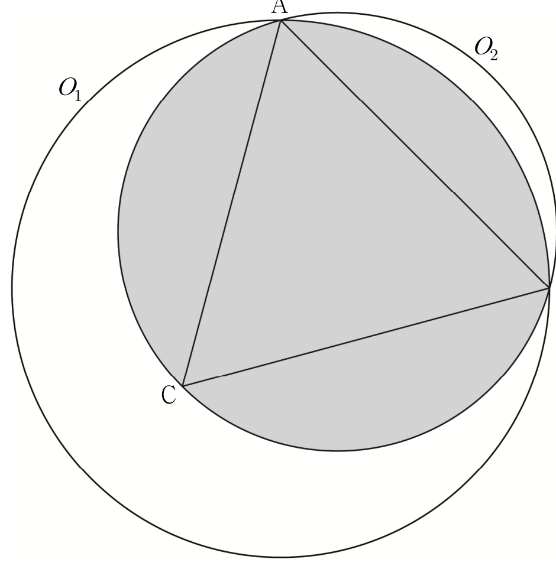
원본 정답 13
원본 풀이 (내부용)[출제의도] 삼각함수를 활용하여 문제 해결하기
원 \(O_1\)의 중심을 \(O_1\), 원 \(O_2\)의 중심을 \(O_2\), 직선 \(O_1O_2\)가 선분 \(AB\)와 만나는 점을 \(M\)이라 하고, 직선 \(O_1O_2\)가 원 \(O_1\)과 만나는 두 점 중 점 \(M\)에 가까운 점을 \(N\)이라 하자.
\(
\overline{O_1A}=6,\qquad \overline{AM}=3\sqrt2
\)
\(
\overline{O_1A}:\overline{AM}=\sqrt2:1
\)
이므로
\(
\angle MO_1A=\frac\pi4
\)
원 \(O_1\)에서 점 \(B\)를 포함하지 않는 부채꼴 \(O_1NA\)의 넓이는
\(
\frac12\times6^2\times\frac\pi4=\frac92\pi
\qquad\cdots\cdots\text{㉠}
\)
\(
\angle MO_2A=\frac\pi3
\)
이므로
\(
\overline{O_2A}=2\sqrt6
\)
원 \(O_2\)에서 점 \(B\)를 포함하지 않는 부채꼴 \(O_2AC\)의 넓이는
\(
\frac12\times(2\sqrt6)^2\times\frac23\pi=8\pi
\qquad\cdots\cdots\text{㉡}
\)
\(
\overline{O_1O_2}=\overline{O_1M}-\overline{O_2M}=3\sqrt2-\sqrt6
\)
이므로 삼각형 \(AO_1O_2\)의 넓이는
\(
\frac12\times6\times(3\sqrt2-\sqrt6)\times\sin\frac\pi4
=9-3\sqrt3
\qquad\cdots\cdots\text{㉢}
\)
㉠, ㉡, ㉢에 의하여
\(
\begin{aligned}
p+q\sqrt3+r\pi
&=2\times\left\{\frac92\pi+8\pi-(9-3\sqrt3)\right\}\\
&=-18+6\sqrt3+25\pi
\end{aligned}
\)
따라서 \(p+q+r=13\)
쌍둥이 1/5 · 4점 쌍둥이반지름이 $36$인 원 $O_1$ 위의 두 점 $A,B$가 $\overline{AB}=36\sqrt2$를 만족합니다. 원 내부의 점 $C$를 $\triangle ACB$가 정삼각형이 되도록 잡고, 이 정삼각형의 외접원을 $O_2$라 합니다. 두 원의 공통부분 넓이가 $p+q\sqrt3+r\pi$일 때 $p+q+r$을 구하세요. ($p,q,r$은 유리수입니다.)
① $456$② $462$③ $468$④ $474$⑤ $480$
정답③ $468$ 닮음에 따라 공통부분의 넓이는 $R^2$에 비례하며 계수 합은 반지름 $6$일 때 $13$입니다. 따라서 $p+q+r=13R^2/36$입니다. $R=36$이면 $13\cdot1296/36=468$입니다.
쌍둥이 2/5 · 4점 쌍둥이반지름의 길이가 $12$인 원 $O_{1}$이 있습니다. 원 $O_{1}$ 위에 서로 다른 두 점 $\mathrm{A}$, $\mathrm{B}$를 $\overline{\mathrm{AB}}=12\sqrt{2}$가 되도록 잡고, 원 $O_{1}$의 내부에 점 $\mathrm{C}$를 삼각형 $\mathrm{ACB}$가 정삼각형이 되도록 잡습니다. 정삼각형 $\mathrm{ACB}$의 외접원을 $O_{2}$라 할 때, 원 $O_{1}$과 원 $O_{2}$의 공통부분의 넓이는 $p+q\sqrt{3}+r\pi$입니다. $p+q+r$의 값을 구하세요. (단, $p$, $q$, $r$은 유리수입니다.)
정답$52$ $\overline{\mathrm{AB}}=12\sqrt{2}$이므로 원 $O_{1}$에서 현 $\mathrm{AB}$에 대한 중심각은 $90^{\circ}$이고, 원 $O_{2}$의 반지름은 $\frac{12\sqrt{2}}{\sqrt{3}}=4\sqrt{6}$, 중심각은 $120^{\circ}$ 공통부분은 원 $O_{2}$에서 현 $\mathrm{AB}$의 점 $\mathrm{C}$ 쪽 큰 활꼴과 원 $O_{1}$에서 반대쪽 작은 활꼴을 합한 것입니다 원 $O_{2}$의 큰 활꼴: $\frac{2}{3}\pi\times96+\frac{1}{2}\times96\times\sin120^{\circ}=24\sqrt{3} + 64 \pi$ 원 $O_{1}$의 작은 활꼴: $\frac{1}{2}\times144\times\frac{\pi}{2}-\frac{1}{2}\times144\times\sin90^{\circ}=-72+36 \pi$ 합은 $24\sqrt{3}-72 + 100 \pi$이므로 $p=-72$, $q=24$, $r=100$이고 $p+q+r=52$
쌍둥이 3/5 · 4점 쌍둥이반지름의 길이가 $18$인 원 $O_{1}$이 있습니다. 원 $O_{1}$ 위에 서로 다른 두 점 $\mathrm{A}$, $\mathrm{B}$를 $\overline{\mathrm{AB}}=18\sqrt{2}$가 되도록 잡고, 원 $O_{1}$의 내부에 점 $\mathrm{C}$를 삼각형 $\mathrm{ACB}$가 정삼각형이 되도록 잡습니다. 정삼각형 $\mathrm{ACB}$의 외접원을 $O_{2}$라 할 때, 원 $O_{1}$과 원 $O_{2}$의 공통부분의 넓이는 $p+q\sqrt{3}+r\pi$입니다. $p+q+r$의 값을 구하세요. (단, $p$, $q$, $r$은 유리수입니다.)
정답$117$ $\overline{\mathrm{AB}}=18\sqrt{2}$이므로 원 $O_{1}$에서 현 $\mathrm{AB}$에 대한 중심각은 $90^{\circ}$이고, 원 $O_{2}$의 반지름은 $\frac{18\sqrt{2}}{\sqrt{3}}=6\sqrt{6}$, 중심각은 $120^{\circ}$ 공통부분은 원 $O_{2}$에서 현 $\mathrm{AB}$의 점 $\mathrm{C}$ 쪽 큰 활꼴과 원 $O_{1}$에서 반대쪽 작은 활꼴을 합한 것입니다 원 $O_{2}$의 큰 활꼴: $\frac{2}{3}\pi\times216+\frac{1}{2}\times216\times\sin120^{\circ}=54\sqrt{3} + 144 \pi$ 원 $O_{1}$의 작은 활꼴: $\frac{1}{2}\times324\times\frac{\pi}{2}-\frac{1}{2}\times324\times\sin90^{\circ}=-162+81 \pi$ 합은 $54\sqrt{3}-162 + 225 \pi$이므로 $p=-162$, $q=54$, $r=225$이고 $p+q+r=117$
쌍둥이 4/5 · 4점 쌍둥이반지름의 길이가 $24$인 원 $O_{1}$이 있습니다. 원 $O_{1}$ 위에 서로 다른 두 점 $\mathrm{A}$, $\mathrm{B}$를 $\overline{\mathrm{AB}}=24\sqrt{2}$가 되도록 잡고, 원 $O_{1}$의 내부에 점 $\mathrm{C}$를 삼각형 $\mathrm{ACB}$가 정삼각형이 되도록 잡습니다. 정삼각형 $\mathrm{ACB}$의 외접원을 $O_{2}$라 할 때, 원 $O_{1}$과 원 $O_{2}$의 공통부분의 넓이는 $p+q\sqrt{3}+r\pi$입니다. $p+q+r$의 값을 구하세요. (단, $p$, $q$, $r$은 유리수입니다.)
정답$208$ $\overline{\mathrm{AB}}=24\sqrt{2}$이므로 원 $O_{1}$에서 현 $\mathrm{AB}$에 대한 중심각은 $90^{\circ}$이고, 원 $O_{2}$의 반지름은 $\frac{24\sqrt{2}}{\sqrt{3}}=8\sqrt{6}$, 중심각은 $120^{\circ}$ 공통부분은 원 $O_{2}$에서 현 $\mathrm{AB}$의 점 $\mathrm{C}$ 쪽 큰 활꼴과 원 $O_{1}$에서 반대쪽 작은 활꼴을 합한 것입니다 원 $O_{2}$의 큰 활꼴: $\frac{2}{3}\pi\times384+\frac{1}{2}\times384\times\sin120^{\circ}=96\sqrt{3} + 256 \pi$ 원 $O_{1}$의 작은 활꼴: $\frac{1}{2}\times576\times\frac{\pi}{2}-\frac{1}{2}\times576\times\sin90^{\circ}=-288+144 \pi$ 합은 $96\sqrt{3}-288 + 400 \pi$이므로 $p=-288$, $q=96$, $r=400$이고 $p+q+r=208$
쌍둥이 5/5 · 4점 쌍둥이반지름이 $30$인 원 $O_1$ 위의 두 점 $A,B$가 $\overline{AB}=30\sqrt2$를 만족합니다. 원 내부의 점 $C$를 $\triangle ACB$가 정삼각형이 되도록 잡고, 이 정삼각형의 외접원을 $O_2$라 합니다. 두 원의 공통부분 넓이가 $p+q\sqrt3+r\pi$일 때 $p+q+r$을 구하세요. ($p,q,r$은 유리수입니다.)
① $315$② $320$③ $325$④ $330$⑤ $335$
정답③ $325$ 모든 길이는 반지름에 비례하고 넓이는 반지름의 제곱에 비례합니다. 반지름 $6$인 경우 공통부분 넓이의 계수 합은 $13$이므로 일반적으로 $p+q+r=13R^2/36$입니다. $R=30$을 대입하면 $13\cdot900/36=325$입니다.
원본 (내부용)좌표평면 위의 점 \(P\)에 대하여 동경 \(OP\)가 나타내는 각의 크기 중 하나를 \(\theta\left(\frac{\pi}{2}<\theta<\pi\right)\)라 하자. 각의 크기 \(6\theta\)를 나타내는 동경이 동경 \(OP\)와 일치할 때, \(\theta\)의 값은? (단, \(O\)는 원점이고, \(x\)축의 양의 방향을 시초선으로 한다.) [3점]
① \(\frac35\pi\)② \(\frac23\pi\)③ \(\frac{11}{15}\pi\)④ \(\frac45\pi\)⑤ \(\frac{13}{15}\pi\)
원본 정답 ④
원본 풀이 (내부용)[출제의도] 일반각과 호도법 이해하기
각 \(\theta\)를 나타내는 동경과 각 \(6\theta\)를 나타내는 동경이 일치하므로
\(
6\theta-\theta=2n\pi\quad(n\text{은 정수}),\qquad
\theta=\frac{2n}{5}\pi
\)
\(
\frac{\pi}{2}<\theta<\pi
\)
이므로 \(n=2\)일 때, \(\theta=\frac45\pi\)
생성기 숫자판 1/5 · G2M1-02b#15좌표평면 위의 점 $\mathrm{P}$에 대하여 동경 $\mathrm{OP}$가 나타내는 각의 크기 중 하나를 $\theta\ \left(0<\theta<\frac{\pi}{2}\right)$라 합시다. 각의 크기 $6\theta$를 나타내는 동경이 동경 $\mathrm{OP}$와 일치할 때, $\theta$의 값으로 옳은 것을 고르세요. (단, $\mathrm{O}$는 원점이고, $x$축의 양의 방향을 시초선으로 합니다.)
① $\frac{\pi}{5}$② $\frac{4}{15}\pi$③ $\frac{\pi}{3}$④ $\frac{2}{5}\pi$⑤ $\frac{7}{15}\pi$
정답④ $\frac{2}{5}\pi$ 두 동경이 일치하므로 $6\theta-\theta=2n\pi$ ($n$은 정수), $\theta=\frac{2n\pi}{5}$ $0<\frac{2n\pi}{5}<\frac{\pi}{2}$를 만족시키는 정수 $n$은 $1$ 따라서 $\theta=\frac{2}{5}\pi$
숫자: 원본 2 6 → 쌍둥이 0 2 6 · 같은 수: 2 6
생성기 숫자판 2/5 · G2M1-02b#15좌표평면 위의 점 $\mathrm{P}$에 대하여 동경 $\mathrm{OP}$가 나타내는 각의 크기 중 하나를 $\theta\ \left(\pi<\theta<\frac{3}{2}\pi\right)$라 합시다. 각의 크기 $9\theta$를 나타내는 동경이 동경 $\mathrm{OP}$와 일치할 때, $\theta$의 값으로 옳은 것을 고르세요. (단, $\mathrm{O}$는 원점이고, $x$축의 양의 방향을 시초선으로 합니다.)
① $\frac{7}{6}\pi$② $\frac{29}{24}\pi$③ $\frac{5}{4}\pi$④ $\frac{31}{24}\pi$⑤ $\frac{4}{3}\pi$
정답③ $\frac{5}{4}\pi$ 두 동경이 일치하므로 $9\theta-\theta=2n\pi$ ($n$은 정수), $\theta=\frac{2n\pi}{8}$ $\pi<\frac{2n\pi}{8}<\frac{3}{2}\pi$를 만족시키는 정수 $n$은 $5$ 따라서 $\theta=\frac{5}{4}\pi$
숫자: 원본 2 6 → 쌍둥이 3 2 9 · 같은 수: 2
생성기 숫자판 3/5 · G2M1-02b#15좌표평면 위의 점 $\mathrm{P}$에 대하여 동경 $\mathrm{OP}$가 나타내는 각의 크기 중 하나를 $\theta\ \left(0<\theta<\frac{\pi}{2}\right)$라 합시다. 각의 크기 $9\theta$를 나타내는 동경이 동경 $\mathrm{OP}$와 일치할 때, $\theta$의 값으로 옳은 것을 고르세요. (단, $\mathrm{O}$는 원점이고, $x$축의 양의 방향을 시초선으로 합니다.)
① $\frac{\pi}{6}$② $\frac{5}{24}\pi$③ $\frac{\pi}{4}$④ $\frac{7}{24}\pi$⑤ $\frac{\pi}{3}$
정답③ $\frac{\pi}{4}$ 두 동경이 일치하므로 $9\theta-\theta=2n\pi$ ($n$은 정수), $\theta=\frac{2n\pi}{8}$ $0<\frac{2n\pi}{8}<\frac{\pi}{2}$를 만족시키는 정수 $n$은 $1$ 따라서 $\theta=\frac{\pi}{4}$
숫자: 원본 2 6 → 쌍둥이 0 2 9 · 같은 수: 2
생성기 숫자판 4/5 · G2M1-02b#15좌표평면 위의 점 $\mathrm{P}$에 대하여 동경 $\mathrm{OP}$가 나타내는 각의 크기 중 하나를 $\theta\ \left(\pi<\theta<\frac{3}{2}\pi\right)$라 합시다. 각의 크기 $6\theta$를 나타내는 동경이 동경 $\mathrm{OP}$와 일치할 때, $\theta$의 값으로 옳은 것을 고르세요. (단, $\mathrm{O}$는 원점이고, $x$축의 양의 방향을 시초선으로 합니다.)
① $\frac{16}{15}\pi$② $\frac{17}{15}\pi$③ $\frac{6}{5}\pi$④ $\frac{19}{15}\pi$⑤ $\frac{4}{3}\pi$
정답③ $\frac{6}{5}\pi$ 두 동경이 일치하므로 $6\theta-\theta=2n\pi$ ($n$은 정수), $\theta=\frac{2n\pi}{5}$ $\pi<\frac{2n\pi}{5}<\frac{3}{2}\pi$를 만족시키는 정수 $n$은 $3$ 따라서 $\theta=\frac{6}{5}\pi$
숫자: 원본 2 6 → 쌍둥이 3 2 6 · 같은 수: 2 6
생성기 숫자판 5/5 · G2M1-02b#15좌표평면 위의 점 $\mathrm{P}$에 대하여 동경 $\mathrm{OP}$가 나타내는 각의 크기 중 하나를 $\theta\ \left(\frac{3}{2}\pi<\theta<2\pi\right)$라 합시다. 각의 크기 $8\theta$를 나타내는 동경이 동경 $\mathrm{OP}$와 일치할 때, $\theta$의 값으로 옳은 것을 고르세요. (단, $\mathrm{O}$는 원점이고, $x$축의 양의 방향을 시초선으로 합니다.)
① $\frac{34}{21}\pi$② $\frac{5}{3}\pi$③ $\frac{12}{7}\pi$④ $\frac{37}{21}\pi$⑤ $\frac{38}{21}\pi$
정답③ $\frac{12}{7}\pi$ 두 동경이 일치하므로 $8\theta-\theta=2n\pi$ ($n$은 정수), $\theta=\frac{2n\pi}{7}$ $\frac{3}{2}\pi<\frac{2n\pi}{7}<2\pi$를 만족시키는 정수 $n$은 $6$ 따라서 $\theta=\frac{12}{7}\pi$
숫자: 원본 2 6 → 쌍둥이 3 2 2 8 · 같은 수: 2
39. 2019년 11월 가형 10번 · 3점 · 수학Ⅰ 삼각함수 · G2M10-02#8
원본 (내부용)그림과 같이 중심각의 크기가 \(\frac{\pi}{3}\)인 부채꼴 \(OAB\)의 호의 길이가 \(\pi\)일 때, 삼각형 \(OAB\)의 넓이는? [3점] 도형 설명: \(O\)를 중심으로 한 부채꼴의 반지름은 \(OA\), \(OB\)이고, \(\angle AOB=\frac{\pi}{3}\)이다. 호 \(AB\)의 길이가 \(\pi\)로 표시되어 있다.
① \(2\sqrt3\)② \(\frac{9\sqrt3}{4}\)③ \(\frac{5\sqrt3}{2}\)④ \(\frac{11\sqrt3}{4}\)⑤ \(3\sqrt3\)
원본 정답 ②
원본 풀이 (내부용)[출제의도] 삼각함수를 활용하여 문제해결하기
부채꼴 \(OAB\)의 반지름의 길이를 \(r\)라 하면
\(
\pi=r\times\frac{\pi}{3}\text{에서 }r=3
\)
따라서 삼각형 \(OAB\)의 넓이는
\(
\frac12\times3^2\times\sin\frac{\pi}{3}
=\frac{9\sqrt3}{4}
\)
생성기 숫자판 1/6 · G2M10-02#8중심각의 크기가 $\frac{\pi}{4}$인 부채꼴 $\mathrm{OAB}$의 호의 길이가 $\frac{3\pi}{4}$일 때, 삼각형 $\mathrm{OAB}$의 넓이로 옳은 것을 고르세요.
① $\frac{7\sqrt{2}}{4}$② $2\sqrt{2}$③ $\frac{9\sqrt{2}}{4}$④ $\frac{5\sqrt{2}}{2}$⑤ $\frac{11\sqrt{2}}{4}$
정답③ $\frac{9\sqrt{2}}{4}$ 부채꼴의 반지름의 길이를 $r$라 하면 $r\times \frac{\pi}{4}=\frac{3\pi}{4}$이므로 $r=3$ 삼각형 $\mathrm{OAB}$의 넓이는 $\frac{1}{2}\times 3\times 3\times\sin \frac{\pi}{4}=\frac{1}{2}\times 9\times \frac{\sqrt{2}}{2}=\frac{9\sqrt{2}}{4}$
숫자: 원본 3 3 → 쌍둥이 4 3 4 · 같은 수: 3
생성기 숫자판 2/6 · G2M10-02#8중심각의 크기가 $\frac{2\pi}{3}$인 부채꼴 $\mathrm{OAB}$의 호의 길이가 $4\pi$일 때, 삼각형 $\mathrm{OAB}$의 넓이로 옳은 것을 고르세요.
① $\frac{17\sqrt{3}}{2}$② $\frac{35\sqrt{3}}{4}$③ $9\sqrt{3}$④ $\frac{37\sqrt{3}}{4}$⑤ $\frac{19\sqrt{3}}{2}$
정답③ $9\sqrt{3}$ 부채꼴의 반지름의 길이를 $r$라 하면 $r\times \frac{2\pi}{3}=4\pi$이므로 $r=6$ 삼각형 $\mathrm{OAB}$의 넓이는 $\frac{1}{2}\times 6\times 6\times\sin \frac{2\pi}{3}=\frac{1}{2}\times 36\times \frac{\sqrt{3}}{2}=9\sqrt{3}$
숫자: 원본 3 3 → 쌍둥이 2 3 4 · 같은 수: 3
생성기 숫자판 3/6 · G2M10-02#8중심각의 크기가 $\frac{\pi}{4}$인 부채꼴 $\mathrm{OAB}$의 호의 길이가 $\pi$일 때, 삼각형 $\mathrm{OAB}$의 넓이로 옳은 것을 고르세요.
① $\frac{7\sqrt{2}}{2}$② $\frac{15\sqrt{2}}{4}$③ $4\sqrt{2}$④ $\frac{17\sqrt{2}}{4}$⑤ $\frac{9\sqrt{2}}{2}$
정답③ $4\sqrt{2}$ 부채꼴의 반지름의 길이를 $r$라 하면 $r\times \frac{\pi}{4}=\pi$이므로 $r=4$ 삼각형 $\mathrm{OAB}$의 넓이는 $\frac{1}{2}\times 4\times 4\times\sin \frac{\pi}{4}=\frac{1}{2}\times 16\times \frac{\sqrt{2}}{2}=4\sqrt{2}$
숫자: 원본 3 3 → 쌍둥이 4
생성기 숫자판 4/6 · G2M10-02#8중심각의 크기가 $\frac{\pi}{4}$인 부채꼴 $\mathrm{OAB}$의 호의 길이가 $\frac{3\pi}{2}$일 때, 삼각형 $\mathrm{OAB}$의 넓이로 옳은 것을 고르세요.
① $\frac{17\sqrt{2}}{2}$② $\frac{35\sqrt{2}}{4}$③ $9\sqrt{2}$④ $\frac{37\sqrt{2}}{4}$⑤ $\frac{19\sqrt{2}}{2}$
정답③ $9\sqrt{2}$ 부채꼴의 반지름의 길이를 $r$라 하면 $r\times \frac{\pi}{4}=\frac{3\pi}{2}$이므로 $r=6$ 삼각형 $\mathrm{OAB}$의 넓이는 $\frac{1}{2}\times 6\times 6\times\sin \frac{\pi}{4}=\frac{1}{2}\times 36\times \frac{\sqrt{2}}{2}=9\sqrt{2}$
숫자: 원본 3 3 → 쌍둥이 4 3 2 · 같은 수: 3
생성기 숫자판 5/6 · G2M10-02#8중심각의 크기가 $\frac{\pi}{4}$인 부채꼴 $\mathrm{OAB}$의 호의 길이가 $\frac{5\pi}{4}$일 때, 삼각형 $\mathrm{OAB}$의 넓이로 옳은 것을 고르세요.
① $\frac{23\sqrt{2}}{4}$② $6\sqrt{2}$③ $\frac{25\sqrt{2}}{4}$④ $\frac{13\sqrt{2}}{2}$⑤ $\frac{27\sqrt{2}}{4}$
정답③ $\frac{25\sqrt{2}}{4}$ 부채꼴의 반지름의 길이를 $r$라 하면 $r\times \frac{\pi}{4}=\frac{5\pi}{4}$이므로 $r=5$ 삼각형 $\mathrm{OAB}$의 넓이는 $\frac{1}{2}\times 5\times 5\times\sin \frac{\pi}{4}=\frac{1}{2}\times 25\times \frac{\sqrt{2}}{2}=\frac{25\sqrt{2}}{4}$
숫자: 원본 3 3 → 쌍둥이 4 5 4
생성기 숫자판 6/6 · G2M10-02#8중심각의 크기가 $\frac{\pi}{3}$인 부채꼴 $\mathrm{OAB}$의 호의 길이가 $2\pi$일 때, 삼각형 $\mathrm{OAB}$의 넓이로 옳은 것을 고르세요.
① $\frac{17\sqrt{3}}{2}$② $\frac{35\sqrt{3}}{4}$③ $9\sqrt{3}$④ $\frac{37\sqrt{3}}{4}$⑤ $\frac{19\sqrt{3}}{2}$
정답③ $9\sqrt{3}$ 부채꼴의 반지름의 길이를 $r$라 하면 $r\times \frac{\pi}{3}=2\pi$이므로 $r=6$ 삼각형 $\mathrm{OAB}$의 넓이는 $\frac{1}{2}\times 6\times 6\times\sin \frac{\pi}{3}=\frac{1}{2}\times 36\times \frac{\sqrt{3}}{2}=9\sqrt{3}$
숫자: 원본 3 3 → 쌍둥이 3 2 · 같은 수: 3
40. 2019년 11월 가형 16번 · 4점 · 수학Ⅰ 삼각함수 · 4점 쌍둥이
원본 (내부용)\(0\le t\le3\)인 실수 \(t\)와 상수 \(k\)에 대하여 \(t\le x\le t+1\)에서 방정식 \(\sin\frac{\pi}{2}x=k\)의 모든 해의 개수를 \(f(t)\)라 하자. 함수 \(f(t)\)가 \( f(t)= \begin{cases} 1 &(0\le t<a\text{ 또는 }a<t\le b)\\ 2 &(t=a)\\ 0 &(b<t\le3) \end{cases} \) 일 때, \(a^2+b^2+k^2\)의 값은? (단, \(a,b\)는 \(0<a<b<3\)인 상수이다.) [4점]
① 2② \(\frac52\)③ 3④ \(\frac72\)⑤ 4
원본 정답 ③
원본 풀이 (내부용)[출제의도] 삼각함수의 그래프를 이용하여 추론하기
함수 \(y=\sin\frac{\pi}{2}x\)의 치역은 \(\{y\mid -1\le y\le1\}\)이고, 주기가 4이다.
따라서 \(0\le x\le4\)에서 함수 \(y=\sin\frac{\pi}{2}x\)의 그래프가 직선 \(y=k\)와 두 점에서 만나려면
\(
-1<k<1
\)
이어야 한다.
\(0\le x\le4\)에서 함수 \(y=\sin\frac{\pi}{2}x\)의 그래프가 직선 \(y=k\)와 만나는 두 점의 \(x\)좌표를 각각 \(\alpha,\beta\;(\alpha<\beta)\)라 하면
\(
\beta-\alpha>1\text{일 때,}
\)
\(f(t)=2\)를 만족시키는 \(t\)의 값은 존재하지 않고,
\(
\beta-\alpha<1\text{일 때,}
\)
\(f(t)=2\)를 만족시키는 \(t\)의 값이 유일하지 않다.
\(
\beta-\alpha=1\text{일 때,}
\)
\(f(0)=1\text{이므로 }\alpha=\frac12,\;\beta=\frac32
\)
\(
0\le t<\frac12,\quad \frac12<t\le\frac32\text{일 때, }f(t)=1
\)
\(
t=\frac12\text{일 때, }f(t)=2
\)
\(
\frac32<t\le3\text{일 때, }f(t)=0
\)
따라서 \(a=\frac12,\;b=\frac32,\;k=\frac{\sqrt2}{2}\)이므로
\(
a^2+b^2+k^2
=\left(\frac12\right)^2+\left(\frac32\right)^2+\left(\frac{\sqrt2}{2}\right)^2
=3
\)
쌍둥이 1/5 · 4점 쌍둥이$0\le t\le4$인 실수 $t$와 상수 $k$에 대하여 $[t,t+\frac65]$에서 방정식 $\sin\frac{\pi x}{3}=k$의 해 개수를 $F(t)$라 합니다. $F(t)=1$ for $0\le t<a$ 또는 $a<t\le b$, $F(a)=2$, $F(t)=0$ for $b<t\le4$일 때, $a+b+k^2$의 값을 구하세요.
① $\frac{23+\sqrt5}{8}$② $\frac{25+\sqrt5}{8}$③ $\frac{27+\sqrt5}{8}$④ $\frac{29+\sqrt5}{8}$⑤ $\frac{31+\sqrt5}{8}$
정답③ $\frac{27+\sqrt5}{8}$ 양의 수준 $0<k<1$의 해는 $x=\alpha,3-\alpha,6+\alpha,9-\alpha,\ldots$이며 $\alpha=\frac3\pi\arcsin k$. 처음 간격은 $3-2\alpha$. 고립된 두 해가 되는 $t=a$에서 창의 양 끝이 두 연속근이어야 하므로 $6/5=3-2\alpha$, 따라서 $\alpha=9/10$이다. 그러면 $a=\alpha=9/10$, $b=3-\alpha=21/10$이다. 다음 해는 $6+\alpha=69/10$이고 $4+6/5<69/10$이므로 $b<t\le4$에서 해가 없다. 이 해 배열은 주어진 조건을 만족한다. $k=\sin(\pi\alpha/3)=\sin(3\pi/10)$이고 $k^2=(3+\sqrt5)/8$. 따라서 $a+b+k^2=3+(3+\sqrt5)/8=(27+\sqrt5)/8$.
쌍둥이 2/5 · 4점 쌍둥이$0\le t\le4$인 실수 $t$와 상수 $k$에 대하여 $t\le x\le t+1$에서 방정식 $\sin\frac{\pi}{3}x=k$의 모든 해의 개수를 $f(t)$라 합니다. 함수 $f(t)$가 $f(t)=\begin{cases}1 & (0\le t<a\text{ 또는 }a<t\le b)\\ 2 & (t=a)\\ 0 & (b<t\le4)\end{cases}$일 때, $a^{2}+b^{2}+k^{2}$의 값으로 옳은 것을 고르세요. (단, $a$, $b$는 $0<a<b<4$인 상수입니다.)
① $\frac{23}{4}$② $6$③ $\frac{25}{4}$④ $\frac{13}{2}$⑤ $\frac{27}{4}$
정답① $\frac{23}{4}$ $f(t)=2$인 $t$가 $t=a$ 하나뿐이므로 길이 $1$인 구간이 두 해를 동시에 포함하는 경우가 한 번뿐이고, 두 해 사이의 거리가 $1$입니다. $0<x<3$에서 두 해는 $x=\frac{3}{2}$에 대하여 대칭이므로 두 해는 $x=1$, $x=2$이고 $a=1$ $k=\sin\left(\frac{\pi}{3}\times1\right)=\frac{\sqrt{3}}{2}$ $t$가 $2$보다 커지면 구간에 해가 없으므로 $b=2$ $a^{2}+b^{2}+k^{2}=1+4+\frac{3}{4}=\frac{23}{4}$
쌍둥이 3/5 · 4점 쌍둥이$0\le t\le4$인 실수 $t$와 상수 $k$에 대하여 $t\le x\le t+2$에서 방정식 $\sin\frac{\pi}{3}x=k$의 모든 해의 개수를 $f(t)$라 합니다. 함수 $f(t)$가 $f(t)=\begin{cases}1 & (0\le t<a\text{ 또는 }a<t\le b)\\ 2 & (t=a)\\ 0 & (b<t\le4)\end{cases}$일 때, $a^{2}+b^{2}+k^{2}$의 값으로 옳은 것을 고르세요. (단, $a$, $b$는 $0<a<b<4$인 상수입니다.)
① $\frac{13}{2}$② $\frac{27}{4}$③ $7$④ $\frac{29}{4}$⑤ $\frac{15}{2}$
정답② $\frac{27}{4}$ $f(t)=2$인 $t$가 $t=a$ 하나뿐이므로 길이 $2$인 구간이 두 해를 동시에 포함하는 경우가 한 번뿐이고, 두 해 사이의 거리가 $2$입니다. $0<x<3$에서 두 해는 $x=\frac{3}{2}$에 대하여 대칭이므로 두 해는 $x=\frac{1}{2}$, $x=\frac{5}{2}$이고 $a=\frac{1}{2}$ $k=\sin\left(\frac{\pi}{3}\times\frac{1}{2}\right)=\frac{1}{2}$ $t$가 $\frac{5}{2}$보다 커지면 구간에 해가 없으므로 $b=\frac{5}{2}$ $a^{2}+b^{2}+k^{2}=\frac{1}{4}+\frac{25}{4}+\frac{1}{4}=\frac{27}{4}$
쌍둥이 4/5 · 4점 쌍둥이$0\le t\le5$인 실수 $t$와 상수 $k$에 대하여 $t\le x\le t+2$에서 방정식 $\sin\frac{\pi}{4}x=k$의 모든 해의 개수를 $f(t)$라 합니다. 함수 $f(t)$가 $f(t)=\begin{cases}1 & (0\le t<a\text{ 또는 }a<t\le b)\\ 2 & (t=a)\\ 0 & (b<t\le5)\end{cases}$일 때, $a^{2}+b^{2}+k^{2}$의 값으로 옳은 것을 고르세요. (단, $a$, $b$는 $0<a<b<5$인 상수입니다.)
① $\frac{19}{2}$② $10$③ $\frac{21}{2}$④ $11$⑤ $\frac{23}{2}$
정답③ $\frac{21}{2}$ $f(t)=2$인 $t$가 $t=a$ 하나뿐이므로 길이 $2$인 구간이 두 해를 동시에 포함하는 경우가 한 번뿐이고, 두 해 사이의 거리가 $2$입니다. $0<x<4$에서 두 해는 $x=2$에 대하여 대칭이므로 두 해는 $x=1$, $x=3$이고 $a=1$ $k=\sin\left(\frac{\pi}{4}\times1\right)=\frac{\sqrt{2}}{2}$ $t$가 $3$보다 커지면 구간에 해가 없으므로 $b=3$ $a^{2}+b^{2}+k^{2}=1+9+\frac{1}{2}=\frac{21}{2}$
쌍둥이 5/5 · 4점 쌍둥이$0\le t\le5$인 실수 $t$와 상수 $k$에 대하여 $[t,t+\frac85]$에서 $\sin\frac{\pi x}{4}=k$의 해 개수를 $F(t)$라 합니다. $F(t)=1$ for $0\le t<a$ 또는 $a<t\le b$, $F(a)=2$, $F(t)=0$ for $b<t\le5$일 때, $a+b+k^2$의 값을 구하세요.
① $\frac{31+\sqrt5}{8}$② $\frac{33+\sqrt5}{8}$③ $\frac{35+\sqrt5}{8}$④ $\frac{37+\sqrt5}{8}$⑤ $\frac{39+\sqrt5}{8}$
정답③ $\frac{35+\sqrt5}{8}$ 양의 사인 수준에서 해는 $x=\alpha,4-\alpha,8+\alpha,12-\alpha,\ldots$이다. $F(a)=2$가 고립되려면 창의 두 끝이 첫 두 근이어야 하므로 $8/5=4-2\alpha$, 즉 $\alpha=6/5$이다. 따라서 $a=6/5$, $b=4-\alpha=14/5$. 다음 근은 $8+\alpha=46/5$이고 $5+8/5<46/5$이므로 $b<t\le5$에서는 해가 없다. $k=\sin(\pi\alpha/4)=\sin(3\pi/10)$이므로 $k^2=(3+\sqrt5)/8$. 따라서 $a+b+k^2=4+(3+\sqrt5)/8=(35+\sqrt5)/8$.
원본 (내부용)\(x\ge0\)에서 정의된 함수 \(f(x)=a\cos bx+c\)의 최댓값이 3, 최솟값이 \(-1\)이다. 그림과 같이 함수 \(y=f(x)\)의 그래프와 직선 \(y=3\)이 만나는 점 중에서 \(x\)좌표가 가장 작은 점과 두 번째로 작은 점을 각각 \(A,B\)라 하고, 함수 \(y=f(x)\)의 그래프와 \(x\)축이 만나는 점 중에서 \(x\)좌표가 가장 작은 점과 두 번째로 작은 점을 각각 \(C,D\)라 하자. 사각형 \(ACDB\)의 넓이가 \(6\pi\)일 때, \( 0\le x\le4\pi\text{에서 방정식 }f(x)=2 \) 의 모든 해의 합은? (단, \(a,b,c\)는 양수이다.) [4점] 도형 설명: \(y=3\)은 \(A,B\)를 지나고, 곡선 \(y=f(x)\)는 그 사이에서 내려가 \(y=-1\)에 닿은 뒤 다시 올라온다. \(C,D\)는 \(x\)축 위의 연속된 두 교점이며, \(ACDB\)가 음영으로 표시되어 있다.
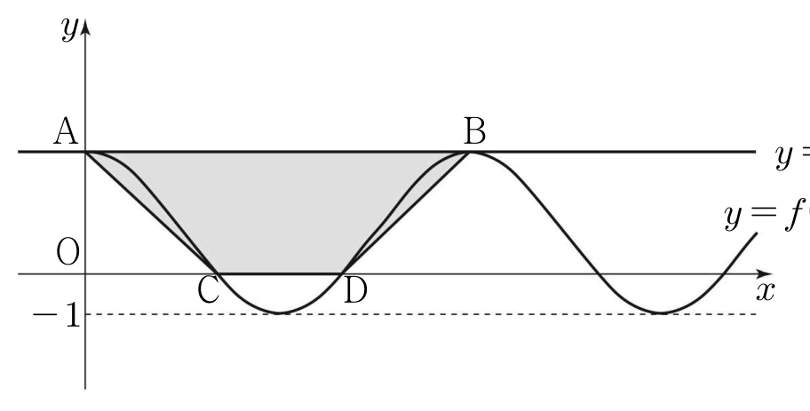
① \(6\pi\)② \(\frac{13}{2}\pi\)③ \(7\pi\)④ \(\frac{15}{2}\pi\)⑤ \(8\pi\)
원본 정답 ②
원본 풀이 (내부용)[출제의도] 삼각함수를 활용하여 문제해결하기
함수 \(f(x)=a\cos bx+c\)의 최댓값이 \(3\), 최솟값이 \(-1\)이고 \(a\)가 양수이므로 \(a=2,\ c=1\).
함수 \(f(x)=2\cos bx+1\)의 주기가 \(\dfrac{2\pi}{b}\)이므로
\(
\overline{AB}=\frac{2\pi}{b}.
\)
\(
0\le x\le \frac{2\pi}{b}
\)
에서 방정식 \(2\cos bx+1=0\)의 해는
\(
x=\frac{2\pi}{3b},\quad x=\frac{4\pi}{3b}
\)
이므로
\(
\overline{CD}=\frac{2\pi}{3b}.
\)
사각형 \(ACDB\)의 넓이는
\(
\frac12\left(\frac{2\pi}{3b}+\frac{2\pi}{b}\right)\times 3=6\pi
\)
이므로 \(b=\dfrac23\).
따라서
\(
f(x)=2\cos\frac23x+1.
\)
\(
0\le x\le 4\pi
\)
에서 방정식 \(f(x)=2\)의 모든 해는
\(
\frac{\pi}{2},\quad \frac{5\pi}{2},\quad \frac{7\pi}{2}
\)
이므로 해의 합은 \(\dfrac{13}{2}\pi\).
쌍둥이 1/5 · 4점 쌍둥이$x\ge0$에서 정의된 함수 $f(x)=a\cos bx+c$의 최댓값이 $3$, 최솟값이 $-1$입니다. 함수 $y=f(x)$의 그래프와 직선 $y=3$이 만나는 점 중에서 $x$좌표가 가장 작은 점과 두 번째로 작은 점을 각각 $\mathrm{A}$, $\mathrm{B}$라 하고, 함수 $y=f(x)$의 그래프와 $x$축이 만나는 점 중에서 $x$좌표가 가장 작은 점과 두 번째로 작은 점을 각각 $\mathrm{C}$, $\mathrm{D}$라 합니다. 사각형 $\mathrm{ACDB}$의 넓이가 $12\pi$일 때, $0\le x\le6\pi$에서 방정식 $f(x)=2$의 모든 해의 합으로 옳은 것을 고르세요. (단, $a$, $b$, $c$는 양수입니다.)
쌍둥이 2/5 · 4점 쌍둥이$x\ge0$에서 정의된 함수 $f(x)=a\cos bx+c$의 최댓값이 $6$, 최솟값이 $-2$입니다. 함수 $y=f(x)$의 그래프와 직선 $y=6$이 만나는 점 중에서 $x$좌표가 가장 작은 점과 두 번째로 작은 점을 각각 $\mathrm{A}$, $\mathrm{B}$라 하고, 함수 $y=f(x)$의 그래프와 $x$축이 만나는 점 중에서 $x$좌표가 가장 작은 점과 두 번째로 작은 점을 각각 $\mathrm{C}$, $\mathrm{D}$라 합니다. 사각형 $\mathrm{ACDB}$의 넓이가 $8\pi$일 때, $0\le x\le4\pi$에서 방정식 $f(x)=4$의 모든 해의 합으로 옳은 것을 고르세요. (단, $a$, $b$, $c$는 양수입니다.)
쌍둥이 3/5 · 4점 쌍둥이$x\ge0$에서 정의된 함수 $f(x)=a\cos bx+c$의 최댓값이 $9$, 최솟값이 $-3$입니다. 함수 $y=f(x)$의 그래프와 직선 $y=9$가 만나는 점 중에서 $x$좌표가 가장 작은 점과 두 번째로 작은 점을 각각 $\mathrm{A}$, $\mathrm{B}$라 하고, 함수 $y=f(x)$의 그래프와 $x$축이 만나는 점 중에서 $x$좌표가 가장 작은 점과 두 번째로 작은 점을 각각 $\mathrm{C}$, $\mathrm{D}$라 합니다. 사각형 $\mathrm{ACDB}$의 넓이가 $12\pi$일 때, $0\le x\le2\pi$에서 방정식 $f(x)=6$의 모든 해의 합으로 옳은 것을 고르세요. (단, $a$, $b$, $c$는 양수입니다.)
① $\pi$② $\frac{3 \pi}{2}$③ $2 \pi$④ $\frac{5 \pi}{2}$⑤ $3 \pi$
쌍둥이 4/5 · 4점 쌍둥이x≥0에서 f(x)=a cos bx+c의 최댓값이 6, 최솟값이 −2이고 a,b,c>0입니다. y=6과 만나는 처음 두 점을 A,B, x축과 만나는 처음 두 점을 C,D라 할 때 사각형 ACDB의 넓이가 4π입니다. 0≤x≤4π에서 f(x)=4의 모든 해의 합은?
① $14\pi$② $15\pi$③ $16\pi$④ $17\pi$⑤ $18\pi$
정답③ $16\pi$ 최댓값·최솟값에서 a=4,c=2이다. y=6의 첫 두 교점은 x=0,2π/b이고 x축의 첫 두 교점은 2π/(3b),4π/(3b)이다. 사각형은 평행한 윗변·아랫변의 길이가 각각 2π/b,2π/(3b), 높이가 6인 사다리꼴이므로 넓이는 8π/b이다. 따라서 b=2이다. f(x)=4이면 cos(2x)=1/2이다. 0≤x≤4π의 해는 각 주기 π마다 jπ+π/6, jπ+5π/6 (j=0,1,2,3)이며 합은 16π이다.
쌍둥이 5/5 · 4점 쌍둥이x≥0에서 f(x)=a cos bx+c의 최댓값이 6, 최솟값이 −2이고 a,b,c>0입니다. y=6과 만나는 처음 두 점을 A,B, x축과 만나는 처음 두 점을 C,D라 할 때 사각형 ACDB의 넓이가 16π입니다. 0≤x≤4π에서 f(x)=4의 모든 해의 합은?
① $3\pi$② $\frac72\pi$③ $4\pi$④ $\frac92\pi$⑤ $5\pi$
정답③ $4\pi$ a=4,c=2이다. 사각형 넓이는 8π/b이므로 b=1/2이다. f(x)=4는 cos(x/2)=1/2와 같다. 구간 안의 해는 2π/3,10π/3이다. 해의 합은 4π이다.
원본 (내부용)그림과 같이 반지름의 길이가 6인 원에 내접하는 사각형 \(ABCD\)에 대하여 \(\overline{AB}=\overline{CD}=3\sqrt3,\ \overline{BD}=8\sqrt2\)일 때, 사각형 \(ABCD\)의 넓이를 \(S\)라 하자. \(\frac{S^2}{13}\)의 값을 구하시오. [4점]
원본 정답 192
원본 풀이 (내부용)[출제의도] 삼각함수를 활용하여 문제해결하기
삼각형 \(ABD\)에서 \(\angle ADB=\alpha\)라 할 때, 삼각형 \(ABD\)의 외접원의 반지름의 길이가 6이므로
\(
\frac{\overline{AB}}{\sin\alpha}=12
\)
\(
\sin\alpha=\frac{3\sqrt3}{12}=\frac{\sqrt3}{4}\text{이므로}
\)
\(
\cos\alpha=\sqrt{1-\left(\frac{\sqrt3}{4}\right)^2}
=\frac{\sqrt{13}}4
\)
\(
\overline{AB}=\overline{CD}\text{이므로 }\angle ADB=\angle CBD
\)
선분 \(AD\)와 선분 \(BC\)는 평행하므로 사각형 \(ABCD\)는 등변사다리꼴이다.
**도형 설명:** 원 위에 사각형 \(ABCD\)가 그려져 있다. \(A,B,C,D\)는 원주 위의 점이고, \(AD\parallel BC\), \(\overline{AB}=\overline{CD}\)이다. \(D\)에서 \(AB\)에 내린 수선의 발은 \(H_1\), \(B\)에서 \(AD\)에 내린 수선의 발은 \(H_2\)로 표시되어 있다. \(\angle ADB=\alpha\)이다.
두 점 \(B,C\)에서 선분 \(AD\)에 내린 수선의 발을 각각 \(H_1,H_2\)라 하면
\(
\overline{DH_1}=\overline{BD}\cos\alpha
=8\sqrt2\times\frac{\sqrt{13}}4=2\sqrt{26}
\)
\(
\overline{BH_1}=\overline{BD}\sin\alpha
=8\sqrt2\times\frac{\sqrt3}{4}=2\sqrt6
\)
\(
\overline{AH_1}=\overline{DH_2}\text{이므로 사각형 }ABCD\text{의 넓이는}
\)
\(
\begin{aligned}
S&=\frac12\times(\overline{AD}+\overline{BC})\times\overline{BH_1}\\
&=\frac12\times\{(\overline{DH_1}+\overline{AH_1})+
(\overline{DH_1}-\overline{DH_2})\}\times\overline{BH_1}\\
&=\overline{DH_1}\times\overline{BH_1}\\
&=2\sqrt{26}\times2\sqrt6=8\sqrt{39}
\end{aligned}
\)
따라서
\(
\frac{S^2}{13}=192
\)
쌍둥이 1/5 · 4점 쌍둥이그림과 같이 반지름의 길이가 $6$인 원에 내접하는 사각형 $ABCD$에 대하여 $\overline{AB}=\overline{CD}=6,\ \overline{BD}=3(\sqrt6+\sqrt2)$일 때, 사각형 $ABCD$의 넓이를 $S$라 하자. $S$의 값을 구하시오. [4점]
정답$27+18\sqrt{3}$ 반지름 $4$인 기준 사각형을 전체 6/4배 확대하면 주어진 변길이를 얻는다. 동형 도형이므로 넓이는 기준 넓이 $12+8\sqrt{3}$의 (6/4)^2배이다. $S=(36/16)(12+8\sqrt{3})=27+18\sqrt{3}$이다.
쌍둥이 2/5 · 4점 쌍둥이그림과 같이 반지름의 길이가 $4$인 원에 내접하는 사각형 $ABCD$에 대하여 $\overline{AB}=\overline{CD}=4,\ \overline{BD}=2(\sqrt6+\sqrt2)$일 때, 사각형 $ABCD$의 넓이를 $S$라 하자. $S$의 값을 구하시오. [4점]
정답$12+8\sqrt3$ 원주각의 중심각을 이용하여 호 $AB$와 호 $CD$의 작은 중심각을 $\theta$라 하고, 호 $BC$와 호 $CD$에 대응하는 중심각의 합을 $\psi$라 한다. $AB=2R\sin(\theta/2)=L$이므로 $\sin\theta=(L/R)\sqrt{1-L^2/(4R^2)}$이다. 대각선 $BD$는 중심각 $\psi$에 대응하므로 $1-\cos\psi=BD^2/(2R^2)$이다. 네 삼각형의 넓이를 합하면 $S=R^2\sin\theta(1-\cos\psi)=(BD^2/2)\sin\theta$이다. 따라서 $S=12+8\sqrt3$이다.
쌍둥이 3/5 · 4점 쌍둥이그림과 같이 반지름의 길이가 $3$인 원에 내접하는 사각형 $ABCD$에 대하여 $\overline{AB}=\overline{CD}=3\sqrt2,\ \overline{BD}=\frac32(\sqrt6+\sqrt2)$일 때, 사각형 $ABCD$의 넓이를 $S$라 하자. $S$의 값을 구하시오. [4점]
정답$9+\frac92\sqrt3$ 원주각의 중심각을 이용하여 호 $AB$와 호 $CD$의 작은 중심각을 $\theta$라 하고, 호 $BC$와 호 $CD$에 대응하는 중심각의 합을 $\psi$라 한다. $AB=2R\sin(\theta/2)=L$이므로 $\sin\theta=(L/R)\sqrt{1-L^2/(4R^2)}$이다. 대각선 $BD$는 중심각 $\psi$에 대응하므로 $1-\cos\psi=BD^2/(2R^2)$이다. 네 삼각형의 넓이를 합하면 $S=R^2\sin\theta(1-\cos\psi)=(BD^2/2)\sin\theta$이다. 따라서 $S=9+\frac92\sqrt3$이다.
쌍둥이 4/5 · 4점 쌍둥이그림과 같이 반지름의 길이가 $2$인 원에 내접하는 사각형 $ABCD$에 대하여 $\overline{AB}=\overline{CD}=2\sqrt{2-\sqrt2},\ \overline{BD}=2\sqrt{2+\sqrt2}$일 때, 사각형 $ABCD$의 넓이를 $S$라 하자. $S$의 값을 구하시오. [4점]
정답$2+2\sqrt2$ 원주각의 중심각을 이용하여 호 $AB$와 호 $CD$의 작은 중심각을 $\theta$라 하고, 호 $BC$와 호 $CD$에 대응하는 중심각의 합을 $\psi$라 한다. $AB=2R\sin(\theta/2)=L$이므로 $\sin\theta=(L/R)\sqrt{1-L^2/(4R^2)}$이다. 대각선 $BD$는 중심각 $\psi$에 대응하므로 $1-\cos\psi=BD^2/(2R^2)$이다. 네 삼각형의 넓이를 합하면 $S=R^2\sin\theta(1-\cos\psi)=(BD^2/2)\sin\theta$이다. 따라서 $S=2+2\sqrt2$이다.
쌍둥이 5/5 · 4점 쌍둥이그림과 같이 반지름의 길이가 $8$인 원에 내접하는 사각형 $ABCD$에 대하여 $\overline{AB}=\overline{CD}=8,\ \overline{BD}=4(\sqrt6+\sqrt2)$일 때, 사각형 $ABCD$의 넓이를 $S$라 하자. $S$의 값을 구하시오. [4점]
정답$48+32\sqrt{3}$ 반지름 $4$인 기준 사각형을 전체 8/4배 확대하면 주어진 변길이를 얻는다. 동형 도형이므로 넓이는 기준 넓이 $12+8\sqrt{3}$의 (8/4)^2배이다. $S=(64/16)(12+8\sqrt{3})=48+32\sqrt{3}$이다.
원본 (내부용)\(0\le x\le\frac{\pi}{3}\)일 때, 방정식 \(\sin 3x=1\)의 해는? [3점]
① \(\frac{\pi}{18}\)② \(\frac{\pi}{15}\)③ \(\frac{\pi}{12}\)④ \(\frac{\pi}{9}\)⑤ \(\frac{\pi}{6}\)
원본 정답 ⑤
원본 풀이 (내부용)[출제의도] 삼각함수를 활용하여 문제해결하기
\(
0\le x\le\frac{\pi}{3},\quad 0\le3x\le\pi
\)
에서 \(\sin\frac{\pi}{2}=1\)이므로 \(\sin3x=1\)에서 \(3x=\frac{\pi}{2}\).
따라서 \(x=\frac{\pi}{6}\).
생성기 숫자판 1/6 · G2M1-02b#0방정식 $\cos\left(x-\frac{\pi}{6}\right)=1$의 해로 옳은 것을 고르세요. (단, $0\le x\le \pi$)
① $\frac{\pi}{18}$② $\frac{\pi}{12}$③ $\frac{\pi}{9}$④ $\frac{\pi}{6}$⑤ $\frac{\pi}{4}$
정답④ $\frac{\pi}{6}$ $0\le x\le \pi$에서 $x-\frac{\pi}{6}$의 값의 범위는 $-\frac{\pi}{6}$ 이상 $\frac{5}{6}\pi$ 이하 이 범위에서 $\cos t=1$인 $t$는 $t=0$뿐입니다. $x-\frac{\pi}{6}=0$에서 $x=\frac{\pi}{6}$
숫자: 원본 0 3 3 1 → 쌍둥이 6 1 0 · 같은 수: 0 1
생성기 숫자판 2/6 · G2M1-02b#0방정식 $\cos\left(x-\frac{\pi}{6}\right)=0$의 해로 옳은 것을 고르세요. (단, $0\le x\le \pi$)
① $\frac{5}{12}\pi$② $\frac{\pi}{2}$③ $\frac{2}{3}\pi$④ $\frac{3}{4}\pi$⑤ $\frac{5}{6}\pi$
정답③ $\frac{2}{3}\pi$ $0\le x\le \pi$에서 $x-\frac{\pi}{6}$의 값의 범위는 $-\frac{\pi}{6}$ 이상 $\frac{5}{6}\pi$ 이하 이 범위에서 $\cos t=0$인 $t$는 $t=\frac{\pi}{2}$뿐입니다. $x-\frac{\pi}{6}=\frac{\pi}{2}$에서 $x=\frac{2}{3}\pi$
숫자: 원본 0 3 3 1 → 쌍둥이 6 0 0 · 같은 수: 0
생성기 숫자판 3/6 · G2M1-02b#0방정식 $\sin\left(x-\frac{\pi}{4}\right)=1$의 해로 옳은 것을 고르세요. (단, $0\le x\le \pi$)
① $\frac{\pi}{2}$② $\frac{2}{3}\pi$③ $\frac{3}{4}\pi$④ $\frac{5}{6}\pi$⑤ $\pi$
정답③ $\frac{3}{4}\pi$ $0\le x\le \pi$에서 $x-\frac{\pi}{4}$의 값의 범위는 $-\frac{\pi}{4}$ 이상 $\frac{3}{4}\pi$ 이하 이 범위에서 $\sin t=1$인 $t$는 $t=\frac{\pi}{2}$뿐입니다. $x-\frac{\pi}{4}=\frac{\pi}{2}$에서 $x=\frac{3}{4}\pi$
숫자: 원본 0 3 3 1 → 쌍둥이 4 1 0 · 같은 수: 0 1
생성기 숫자판 4/6 · G2M1-02b#0방정식 $\cos\left(x-\frac{\pi}{6}\right)=\frac{\sqrt{2}}{2}$의 해로 옳은 것을 고르세요. (단, $0\le x\le \frac{\pi}{2}$)
① $\frac{\pi}{6}$② $\frac{\pi}{4}$③ $\frac{\pi}{3}$④ $\frac{5}{12}\pi$⑤ $\frac{\pi}{2}$
정답④ $\frac{5}{12}\pi$ $0\le x\le \frac{\pi}{2}$에서 $x-\frac{\pi}{6}$의 값의 범위는 $-\frac{\pi}{6}$ 이상 $\frac{\pi}{3}$ 이하 이 범위에서 $\cos t=\frac{\sqrt{2}}{2}$인 $t$는 $t=\frac{\pi}{4}$뿐입니다. $x-\frac{\pi}{6}=\frac{\pi}{4}$에서 $x=\frac{5}{12}\pi$
숫자: 원본 0 3 3 1 → 쌍둥이 6 2 2 0 2 · 같은 수: 0
생성기 숫자판 5/6 · G2M1-02b#0방정식 $\sin 2x=-\frac{1}{2}$의 해로 옳은 것을 고르세요. (단, $0\le x\le \frac{2}{3}\pi$)
① $\frac{\pi}{3}$② $\frac{5}{12}\pi$③ $\frac{\pi}{2}$④ $\frac{7}{12}\pi$⑤ $\frac{2}{3}\pi$
정답④ $\frac{7}{12}\pi$ $0\le x\le \frac{2}{3}\pi$에서 $2x$의 값의 범위는 $0$ 이상 $\frac{4}{3}\pi$ 이하 이 범위에서 $\sin t=-\frac{1}{2}$인 $t$는 $t=\frac{7}{6}\pi$뿐입니다. $2x=\frac{7}{6}\pi$에서 $x=\frac{7}{12}\pi$
숫자: 원본 0 3 3 1 → 쌍둥이 2 1 2 0 2 3 · 같은 수: 0 1 3
생성기 숫자판 6/6 · G2M1-02b#0방정식 $\cos x=1$의 해로 옳은 것을 고르세요. (단, $0\le x\le \pi$)
① $0$② $\frac{\pi}{18}$③ $\frac{\pi}{12}$④ $\frac{\pi}{9}$⑤ $\frac{\pi}{6}$
정답① $0$ $0\le x\le \pi$에서 $x$의 값의 범위는 $0$ 이상 $\pi$ 이하 이 범위에서 $\cos t=1$인 $t$는 $t=0$뿐입니다. $x=0$에서 $x=0$
숫자: 원본 0 3 3 1 → 쌍둥이 1 0 · 같은 수: 0 1
44. 2019년 11월 나형 10번 · 3점 · 수학Ⅰ 삼각함수 · G2M1-02#16
원본 (내부용)\(\overline{AB}=4,\ \overline{BC}=5,\ \overline{CA}=\sqrt{11}\)인 삼각형 \(ABC\)에서 \(\angle ABC=\theta\)라 할 때, \(\cos\theta\)의 값은? [3점]
① \(\frac{2}{3}\)② \(\frac{3}{4}\)③ \(\frac{4}{5}\)④ \(\frac{5}{6}\)⑤ \(\frac{6}{7}\)
그림·참고 *하단 표기: 3 / 12*
원본 정답 ②
원본 풀이 (내부용)[출제의도] 코사인법칙 이해하기
**도형 설명:** 삼각형 \(ABC\)에서 \(A\)는 위쪽, \(B\)는 왼쪽 아래, \(C\)는 오른쪽 아래에 있다. \(AB=4,\ BC=5,\ AC=\sqrt{11}\)이고, \(\theta\)는 \(B\)에서 \(BA\)와 \(BC\)가 이루는 각이다.
\(
\cos\theta
=\frac{4^2+5^2-(\sqrt{11})^2}{2\times4\times5}
=\frac{30}{40}
=\frac34
\)
생성기 숫자판 1/6 · G2M1-02#16$\overline{\mathrm{AB}}=5$, $\overline{\mathrm{BC}}=2$, $\overline{\mathrm{CA}}=\sqrt{44}$인 삼각형 $\mathrm{ABC}$에서 $\angle \mathrm{ABC}=\theta$라 할 때, $\cos\theta$의 값으로 옳은 것을 고르세요.
① $-\frac{3}{4}$② $-\frac{5}{8}$③ $-\frac{1}{2}$④ $-\frac{3}{8}$⑤ $\frac{3}{4}$
정답① $-\frac{3}{4}$ 코사인법칙에 의하여 $\cos\theta=\frac{5^{2}+2^{2}-\left(\sqrt{44}\right)^{2}}{2\times 5\times 2}$ $=\frac{-15}{20}$ $=-\frac{3}{4}$
숫자: 원본 4 5 11 → 쌍둥이 5 2 44 · 같은 수: 5
생성기 숫자판 2/6 · G2M1-02#16$\overline{\mathrm{AB}}=5$, $\overline{\mathrm{BC}}=6$, $\overline{\mathrm{CA}}=\sqrt{21}$인 삼각형 $\mathrm{ABC}$에서 $\angle \mathrm{ABC}=\theta$라 할 때, $\cos\theta$의 값으로 옳은 것을 고르세요.
① $-\frac{2}{3}$② $\frac{5}{12}$③ $\frac{2}{3}$④ $\frac{19}{24}$⑤ $\frac{11}{12}$
정답③ $\frac{2}{3}$ 코사인법칙에 의하여 $\cos\theta=\frac{5^{2}+6^{2}-\left(\sqrt{21}\right)^{2}}{2\times 5\times 6}$ $=\frac{40}{60}$ $=\frac{2}{3}$
숫자: 원본 4 5 11 → 쌍둥이 5 6 21 · 같은 수: 5
생성기 숫자판 3/6 · G2M1-02#16$\overline{\mathrm{AB}}=2$, $\overline{\mathrm{BC}}=4$, $\overline{\mathrm{CA}}=\sqrt{15}$인 삼각형 $\mathrm{ABC}$에서 $\angle \mathrm{ABC}=\theta$라 할 때, $\cos\theta$의 값으로 옳은 것을 고르세요.
① $\frac{1}{16}$② $\frac{5}{16}$③ $\frac{7}{16}$④ $\frac{9}{16}$⑤ $\frac{11}{16}$
정답② $\frac{5}{16}$ 코사인법칙에 의하여 $\cos\theta=\frac{2^{2}+4^{2}-\left(\sqrt{15}\right)^{2}}{2\times 2\times 4}$ $=\frac{5}{16}$
숫자: 원본 4 5 11 → 쌍둥이 2 4 15 · 같은 수: 4
생성기 숫자판 4/6 · G2M1-02#16$\overline{\mathrm{AB}}=3$, $\overline{\mathrm{BC}}=3$, $\overline{\mathrm{CA}}=\sqrt{3}$인 삼각형 $\mathrm{ABC}$에서 $\angle \mathrm{ABC}=\theta$라 할 때, $\cos\theta$의 값으로 옳은 것을 고르세요.
① $\frac{7}{12}$② $\frac{5}{6}$③ $\frac{23}{24}$④ $\frac{13}{12}$⑤ $\frac{29}{24}$
정답② $\frac{5}{6}$ 코사인법칙에 의하여 $\cos\theta=\frac{3^{2}+3^{2}-\left(\sqrt{3}\right)^{2}}{2\times 3\times 3}$ $=\frac{15}{18}$ $=\frac{5}{6}$
숫자: 원본 4 5 11 → 쌍둥이 3 3 3
생성기 숫자판 5/6 · G2M1-02#16$\overline{\mathrm{AB}}=3$, $\overline{\mathrm{BC}}=8$, $\overline{\mathrm{CA}}=\sqrt{101}$인 삼각형 $\mathrm{ABC}$에서 $\angle \mathrm{ABC}=\theta$라 할 때, $\cos\theta$의 값으로 옳은 것을 고르세요.
① $-\frac{5}{6}$② $-\frac{17}{24}$③ $-\frac{7}{12}$④ $-\frac{1}{3}$⑤ $\frac{7}{12}$
정답③ $-\frac{7}{12}$ 코사인법칙에 의하여 $\cos\theta=\frac{3^{2}+8^{2}-\left(\sqrt{101}\right)^{2}}{2\times 3\times 8}$ $=\frac{-28}{48}$ $=-\frac{7}{12}$
숫자: 원본 4 5 11 → 쌍둥이 3 8 101
생성기 숫자판 6/6 · G2M1-02#16$\overline{\mathrm{AB}}=2$, $\overline{\mathrm{BC}}=3$, $\overline{\mathrm{CA}}=\sqrt{11}$인 삼각형 $\mathrm{ABC}$에서 $\angle \mathrm{ABC}=\theta$라 할 때, $\cos\theta$의 값으로 옳은 것을 고르세요.
① $-\frac{1}{12}$② $\frac{1}{6}$③ $\frac{1}{4}$④ $\frac{7}{24}$⑤ $\frac{5}{12}$
정답② $\frac{1}{6}$ 코사인법칙에 의하여 $\cos\theta=\frac{2^{2}+3^{2}-\left(\sqrt{11}\right)^{2}}{2\times 2\times 3}$ $=\frac{2}{12}$ $=\frac{1}{6}$
숫자: 원본 4 5 11 → 쌍둥이 2 3 11 · 같은 수: 11
45. 2019년 11월 나형 15번 · 4점 · 수학Ⅰ 삼각함수 · 4점 쌍둥이
원본 (내부용)그림과 같이 좌표평면에서 직선 \(y=2\)가 두 원 \(x^2+y^2=5,\ x^2+y^2=9\)와 제2사분면에서 만나는 점을 각각 \(A,\ B\)라 하자. 점 \(C(3,0)\)에 대하여 \(\angle COA=\alpha,\ \angle COB=\beta\)라 할 때, \( \sin\alpha\times\cos\beta \) 의 값은? (단, \(O\)는 원점이고, \(\frac{\pi}{2}<\alpha<\beta<\pi\)) [4점] 그림의 표시: 중심이 \(O\)인 두 원 \(x^2+y^2=5,\ x^2+y^2=9\)가 그려져 있다. \(y=2\)와 두 원의 제2사분면 교점 중 안쪽 원의 점은 \(A\), 바깥쪽 원의 점은 \(B\)이다. \(C\)는 양의 \(x\)축 위의 \((3,0)\)에 표시되어 있다. \(OA, OB, OC\) 방향과 각 \(\alpha,\beta\), 좌표축이 표시되어 있다.
① \(\frac{1}{3}\)② \(\frac{1}{12}\)③ \(-\frac{1}{6}\)④ \(-\frac{5}{12}\)⑤ \(-\frac{2}{3}\)
원본 정답 ⑤
원본 풀이 (내부용)[출제의도] 삼각함수의 뜻 이해하기
**도형 설명:** 중심이 \(O\)인 두 원, \(x\)축·\(y\)축, 직선 \(y=2\)가 그려져 있다. 직선 \(y=2\)는 제2사분면에서 안쪽 원과 \(A\), 바깥 원과 \(B\)에서 만나며, 바깥 원은 \(x\)축의 양의 방향에서 \(C\)와 만난다. \(O\)에서 그은 선분과 \(x\)축 사이의 각은 각각 \(\alpha,\beta\)로 표시되어 있다. \(x\)축에는 \(-1\), \(-\sqrt5\)가 표시되어 있다.
직선 \(y=2\)와 원 \(x^2+y^2=5\)의 제2사분면에서 만나는 점 \(A\)의 좌표는 \((-1,2)\)이고,
\(
\overline{OA}=\sqrt5
\)
이므로
\(
\sin\alpha=\frac2{\sqrt5}
\)
직선 \(y=2\)와 원 \(x^2+y^2=9\)의 제2사분면에서 만나는 점 \(B\)의 좌표는 \((-\sqrt5,2)\)이고,
\(
\overline{OB}=3
\)
이므로
\(
\cos\beta=-\frac{\sqrt5}{3}
\)
따라서
\(
\sin\alpha\times\cos\beta
=\frac2{\sqrt5}\times\left(-\frac{\sqrt5}{3}\right)
=-\frac23
\)
쌍둥이 1/5 · 4점 쌍둥이좌표평면에서 y=15인 직선이 원 $x^2+y^2=289$, $x^2+y^2=625$와 제2사분면에서 만나는 점을 A,B라 합니다. O는 원점, C=(2,0), $\angle COA=\alpha$, $\angle COB=\beta$일 때 $\sin\alpha\cos\beta$는?
① $-\frac{14}{17}$② $-\frac{13}{17}$③ $-\frac{12}{17}$④ $-\frac{11}{17}$⑤ $-\frac{10}{17}$
쌍둥이 2/5 · 4점 쌍둥이좌표평면에서 직선 $y=3$이 두 원 $x^{2}+y^{2}=16$, $x^{2}+y^{2}=25$와 제$2$사분면에서 만나는 점을 각각 $\mathrm{A}$, $\mathrm{B}$라 합니다. 점 $\mathrm{C}(3,\ 0)$에 대하여 $\angle\mathrm{COA}=\alpha$, $\angle\mathrm{COB}=\beta$라 할 때, $\sin\alpha\times\cos\beta$의 값으로 옳은 것을 고르세요. (단, $\mathrm{O}$는 원점이고, $\frac{\pi}{2}<\alpha<\beta<\pi$)
① $-\frac{4}{5}$② $-\frac{3}{5}$③ $-\frac{2}{5}$④ $-\frac{1}{5}$⑤ $0$
쌍둥이 3/5 · 4점 쌍둥이좌표평면에서 직선 $y=1$이 두 원 $x^{2}+y^{2}=3$, $x^{2}+y^{2}=4$와 제$2$사분면에서 만나는 점을 각각 $\mathrm{A}$, $\mathrm{B}$라 합니다. 점 $\mathrm{C}(3,\ 0)$에 대하여 $\angle\mathrm{COA}=\alpha$, $\angle\mathrm{COB}=\beta$라 할 때, $\sin\alpha\times\cos\beta$의 값으로 옳은 것을 고르세요. (단, $\mathrm{O}$는 원점이고, $\frac{\pi}{2}<\alpha<\beta<\pi$)
① $-\frac{3}{2}$② $-1$③ $-\frac{1}{2}$④ $0$⑤ $\frac{1}{2}$
쌍둥이 4/5 · 4점 쌍둥이좌표평면에서 직선 $y=5$가 두 원 $x^{2}+y^{2}=39$, $x^{2}+y^{2}=64$와 제$2$사분면에서 만나는 점을 각각 $\mathrm{A}$, $\mathrm{B}$라 합니다. 점 $\mathrm{C}(3,\ 0)$에 대하여 $\angle\mathrm{COA}=\alpha$, $\angle\mathrm{COB}=\beta$라 할 때, $\sin\alpha\times\cos\beta$의 값으로 옳은 것을 고르세요. (단, $\mathrm{O}$는 원점이고, $\frac{\pi}{2}<\alpha<\beta<\pi$)
① $-1$② $-\frac{7}{8}$③ $-\frac{3}{4}$④ $-\frac{5}{8}$⑤ $-\frac{1}{2}$
쌍둥이 5/5 · 4점 쌍둥이좌표평면에서 y=12인 직선이 원 $x^2+y^2=169$, $x^2+y^2=400$과 제2사분면에서 만나는 점을 A,B라 합니다. O는 원점, C=(4,0), $\angle COA=\alpha$, $\angle COB=\beta$일 때 $\sin\alpha\cos\beta$는?
① $-\frac{50}{65}$② $-\frac{48}{65}$③ $-\frac{46}{65}$④ $-\frac{44}{65}$⑤ $-\frac{42}{65}$
정답② $-\frac{48}{65}$ OA=13이고 A의 y좌표가 12이므로 sinα=12/13이다. OB=20이고 B의 x좌표는 −√(400−144)=−16이므로 cosβ=−16/20=−4/5이다. 곱은 −48/65이다.
원본 (내부용)\(\overline{AB}=15\)이고 넓이가 50인 삼각형 \(ABC\)에 대하여 \(\angle ABC=\theta\)라 할 때 \(\cos\theta=\frac{\sqrt{5}}{3}\)이다. 선분 \(BC\)의 길이를 구하시오. [3점]
원본 정답 10
원본 풀이 (내부용)[출제의도] 삼각함수를 활용하여 문제해결하기
삼각형 \(ABC\)에서 \(\cos\theta=\frac{\sqrt5}{3}\)이므로
\(
\sin\theta=\sqrt{1-\cos^2\theta}
=\sqrt{1-\left(\frac{\sqrt5}{3}\right)^2}
=\frac23
\)
\(\overline{AB}=15\)이고 삼각형 \(ABC\)의 넓이가 \(50\)이므로
\(
\begin{aligned}
50
&=\frac12\times\overline{AB}\times\overline{BC}\times\sin\theta\\
&=\frac12\times15\times\overline{BC}\times\frac23\\
&=5\times\overline{BC}
\end{aligned}
\)
따라서 \(\overline{BC}=10\).
생성기 숫자판 1/6 · G2M1-02b#16$\overline{\mathrm{AB}}=5$이고 넓이가 $16$인 삼각형 $\mathrm{ABC}$에 대하여 $\angle\mathrm{ABC}=\theta$라 할 때 $\cos\theta=\frac{3}{5}$입니다. 선분 $\mathrm{BC}$의 길이를 구하세요.
정답$8$ $0<\theta<\pi$이고 $\cos\theta=\frac{3}{5}$이므로 $\sin\theta=\sqrt{1-\left(\frac{3}{5}\right)^{2}}=\frac{4}{5}$ 넓이는 $\frac{1}{2}\times 5\times \overline{\mathrm{BC}}\times \frac{4}{5}=16$ 따라서 $\overline{\mathrm{BC}}=8$
숫자: 원본 15 50 5 3 → 쌍둥이 5 16 3 5 · 같은 수: 3 5
생성기 숫자판 2/6 · G2M1-02b#16$\overline{\mathrm{AB}}=8$이고 넓이가 $16$인 삼각형 $\mathrm{ABC}$에 대하여 $\angle\mathrm{ABC}=\theta$라 할 때 $\cos\theta=\frac{3}{5}$입니다. 선분 $\mathrm{BC}$의 길이를 구하세요.
정답$5$ $0<\theta<\pi$이고 $\cos\theta=\frac{3}{5}$이므로 $\sin\theta=\sqrt{1-\left(\frac{3}{5}\right)^{2}}=\frac{4}{5}$ 넓이는 $\frac{1}{2}\times 8\times \overline{\mathrm{BC}}\times \frac{4}{5}=16$ 따라서 $\overline{\mathrm{BC}}=5$
숫자: 원본 15 50 5 3 → 쌍둥이 8 16 3 5 · 같은 수: 3 5
생성기 숫자판 3/6 · G2M1-02b#16$\overline{\mathrm{AB}}=12$이고 넓이가 $18$인 삼각형 $\mathrm{ABC}$에 대하여 $\angle\mathrm{ABC}=\theta$라 할 때 $\cos\theta=\frac{2\sqrt{2}}{3}$입니다. 선분 $\mathrm{BC}$의 길이를 구하세요.
정답$9$ $0<\theta<\pi$이고 $\cos\theta=\frac{2\sqrt{2}}{3}$이므로 $\sin\theta=\sqrt{1-\left(\frac{2\sqrt{2}}{3}\right)^{2}}=\frac{1}{3}$ 넓이는 $\frac{1}{2}\times 12\times \overline{\mathrm{BC}}\times \frac{1}{3}=18$ 따라서 $\overline{\mathrm{BC}}=9$
숫자: 원본 15 50 5 3 → 쌍둥이 12 18 2 2 3 · 같은 수: 3
생성기 숫자판 4/6 · G2M1-02b#16$\overline{\mathrm{AB}}=3$이고 넓이가 $6$인 삼각형 $\mathrm{ABC}$에 대하여 $\angle\mathrm{ABC}=\theta$라 할 때 $\cos\theta=\frac{\sqrt{5}}{3}$입니다. 선분 $\mathrm{BC}$의 길이를 구하세요.
정답$6$ $0<\theta<\pi$이고 $\cos\theta=\frac{\sqrt{5}}{3}$이므로 $\sin\theta=\sqrt{1-\left(\frac{\sqrt{5}}{3}\right)^{2}}=\frac{2}{3}$ 넓이는 $\frac{1}{2}\times 3\times \overline{\mathrm{BC}}\times \frac{2}{3}=6$ 따라서 $\overline{\mathrm{BC}}=6$
숫자: 원본 15 50 5 3 → 쌍둥이 3 6 5 3 · 같은 수: 3 5
생성기 숫자판 5/6 · G2M1-02b#16$\overline{\mathrm{AB}}=14$이고 넓이가 $28$인 삼각형 $\mathrm{ABC}$에 대하여 $\angle\mathrm{ABC}=\theta$라 할 때 $\cos\theta=\frac{2\sqrt{2}}{3}$입니다. 선분 $\mathrm{BC}$의 길이를 구하세요.
정답$12$ $0<\theta<\pi$이고 $\cos\theta=\frac{2\sqrt{2}}{3}$이므로 $\sin\theta=\sqrt{1-\left(\frac{2\sqrt{2}}{3}\right)^{2}}=\frac{1}{3}$ 넓이는 $\frac{1}{2}\times 14\times \overline{\mathrm{BC}}\times \frac{1}{3}=28$ 따라서 $\overline{\mathrm{BC}}=12$
숫자: 원본 15 50 5 3 → 쌍둥이 14 28 2 2 3 · 같은 수: 3
생성기 숫자판 6/6 · G2M1-02b#16$\overline{\mathrm{AB}}=5$이고 넓이가 $21$인 삼각형 $\mathrm{ABC}$에 대하여 $\angle\mathrm{ABC}=\theta$라 할 때 $\cos\theta=\frac{4}{5}$입니다. 선분 $\mathrm{BC}$의 길이를 구하세요.
정답$14$ $0<\theta<\pi$이고 $\cos\theta=\frac{4}{5}$이므로 $\sin\theta=\sqrt{1-\left(\frac{4}{5}\right)^{2}}=\frac{3}{5}$ 넓이는 $\frac{1}{2}\times 5\times \overline{\mathrm{BC}}\times \frac{3}{5}=21$ 따라서 $\overline{\mathrm{BC}}=14$
숫자: 원본 15 50 5 3 → 쌍둥이 5 21 4 5 · 같은 수: 5
47. 2019년 11월 나형 27번 · 4점 · 수학Ⅰ 삼각함수 · 4점 쌍둥이
원본 (내부용)함수 \(f(x)=3\sin\frac{\pi(x+a)}{2}+b\)의 그래프가 그림과 같다. 두 양수 \(a,\ b\)에 대하여 \(a\times b\)의 최솟값을 구하시오. [4점]
원본 정답 8
원본 풀이 (내부용)[출제의도] 삼각함수 이해하기
함수 \(f(x)=3\sin\frac{\pi(x+a)}2+b\)에서
최댓값은 \(3+b=5\)이고
최솟값은 \(-3+b=-1\)이므로 \(b=2\).
함수 \(f(x)=3\sin\frac{\pi(x+a)}2+2\)의 그래프는 함수 \(y=3\sin\frac{\pi x}2+2\)의 그래프를 \(x\)축의 방향으로 \(-a\)만큼 평행이동한 것이다.
모든 실수 \(x\)에 대하여 \(f(x+p)=f(x)\)를 만족하는 최소의 양수 \(p\)가 \(4\)이므로 함수 \(f(x)\)의 주기는 \(4\)이다.
함수 \(f(x)\)의 그래프는 함수 \(y=3\sin\frac{\pi x}2+2\)의 그래프와 일치하고 함수 \(f(x)\)의 주기는 \(4\)이므로 \(a=4k\) (\(k\)는 정수)이다.
\(a\)가 양수일 때 \(a\)의 최솟값은 \(4\)이므로 \(a\times b\)의 최솟값은 \(8\).
쌍둥이 1/6 · 4점 쌍둥이함수 $f(x)=4\sin\frac{\pi(x+a)}{2}+b$의 그래프는 최댓값이 $7$, 최솟값이 $-1$이고, $x>0$에서 최댓값을 갖는 $x$의 값을 작은 것부터 나열하면 $3,\ 7,\ \cdots$입니다. 두 양수 $a$, $b$에 대하여 $a\times b$의 최솟값을 구하세요.
쌍둥이 2/6 · 4점 쌍둥이함수 $f(x)=4\sin\frac{\pi(x+a)}{3}+b$의 그래프는 최댓값이 $6$, 최솟값이 $-2$이고, $x>0$에서 최댓값을 갖는 $x$의 값을 작은 것부터 나열하면 $1,\ 7,\ \cdots$입니다. 두 양수 $a$, $b$에 대하여 $a\times b$의 최솟값을 구하세요.
쌍둥이 3/6 · 4점 쌍둥이함수 $f(x)=4\sin\frac{\pi(x+a)}{2}+b$의 그래프는 최댓값이 $5$, 최솟값이 $-3$이고, $x>0$에서 최댓값을 갖는 $x$의 값을 작은 것부터 나열하면 $1,\ 5,\ \cdots$입니다. 두 양수 $a$, $b$에 대하여 $a\times b$의 최솟값을 구하세요.
쌍둥이 4/6 · 4점 쌍둥이함수 $f(x)=5\sin\frac{\pi(x+a)}{2}+b$의 그래프는 최댓값이 $7$, 최솟값이 $-3$이고, $x>0$에서 최댓값을 갖는 $x$의 값을 작은 것부터 나열하면 $1,\ 5,\ \cdots$입니다. 두 양수 $a$, $b$에 대하여 $a\times b$의 최솟값을 구하세요.
쌍둥이 5/6 · 4점 쌍둥이함수 $f(x)=5\sin\frac{\pi(x+a)}{4}+b$의 그래프는 최댓값이 $8$, 최솟값이 $-2$이고, $x>0$에서 최댓값을 갖는 $x$의 값을 작은 것부터 나열하면 $1,\ 9,\ \cdots$입니다. 두 양수 $a$, $b$에 대하여 $a\times b$의 최솟값을 구하세요.
쌍둥이 6/6 · 4점 쌍둥이함수 $f(x)=2\sin\frac{\pi(x+a)}{2}+b$의 그래프는 최댓값이 $3$, 최솟값이 $-1$이고, $x>0$에서 최댓값을 갖는 $x$의 값을 작은 것부터 나열하면 $3,\ 7,\ \cdots$입니다. 두 양수 $a$, $b$에 대하여 $a\times b$의 최솟값을 구하세요.
원본 (내부용)그림과 같이 반지름의 길이가 \(6\)인 원에 내접하는 사각형 \(ABCD\)에 대하여 \(\overline{AB}=\overline{CD}=3\sqrt{3},\ \overline{BD}=8\sqrt{2}\)일 때, 사각형 \(ABCD\)의 넓이를 \(S\)라 하자. \(\displaystyle\frac{S^2}{13}\)의 값을 구하시오. [4점]
원본 정답 192
원본 풀이 (내부용)[출제의도] 삼각함수를 활용하여 문제해결하기
삼각형 \(ABD\)에서 \(\angle ADB=\alpha\)라 할 때,
삼각형 \(ABD\)의 외접원의 반지름의 길이가 6이므로
\(
\frac{\overline{AB}}{\sin\alpha}=12
\)
\(
\sin\alpha=\frac{3\sqrt3}{12}=\frac{\sqrt3}{4}
\)
\(
\cos\alpha=\sqrt{1-\left(\frac{\sqrt3}{4}\right)^2}
=\frac{\sqrt{13}}4
\)
\(\overline{AB}=\overline{CD}\)이므로 \(\angle ADB=\angle CBD\).
선분 \(AD\)와 선분 \(BC\)는 평행하므로 사각형 \(ABCD\)는 등변사다리꼴이다.
**도형 설명:** 원 위에 \(A,B,C,D\)가 놓여 있고, 사각형 \(ABCD\)에서 \(AD\parallel BC\), \(\overline{AB}=\overline{CD}\)이다. \(B,C\)에서 \(AD\)에 내린 수선의 발을 각각 \(H_1,H_2\)라 한다. \(D\)의 각 \(\angle ADB\)가 \(\alpha\)로 표시되어 있다.
두 점 \(B,C\)에서 선분 \(AD\)에 내린 수선의 발을 각각 \(H_1,H_2\)라 할 때,
\(
\overline{DH_1}=\overline{BD}\cos\alpha
=8\sqrt2\times\frac{\sqrt{13}}4=2\sqrt{26}
\)
\(
\overline{BH_1}=\overline{BD}\sin\alpha
=8\sqrt2\times\frac{\sqrt3}4=2\sqrt6
\)
\(\overline{AH_1}=\overline{DH_2}\)이므로 사각형 \(ABCD\)의 넓이를 \(S\)라 하면
\(
\begin{aligned}
S
&=\frac12\times(\overline{AD}+\overline{BC})\times\overline{BH_1}\\
&=\frac12\times\{(\overline{DH_1}+\overline{AH_1})+
(\overline{DH_1}-\overline{DH_2})\}\times\overline{BH_1}\\
&=\overline{DH_1}\times\overline{BH_1}\\
&=2\sqrt{26}\times2\sqrt6=8\sqrt{39}
\end{aligned}
\)
따라서 \(\frac{S^2}{13}=192\).
쌍둥이 1/5 · 4점 쌍둥이반지름 $6$인 원에 내접하는 사각형 $ABCD$에서 $\overline{AB}=\overline{CD}=6$, $\overline{BD}=6\sqrt3$입니다. 사각형의 넓이를 구하세요.
① $24\sqrt3$② $26\sqrt3$③ $27\sqrt3$④ $28\sqrt3$⑤ $30\sqrt3$
정답③ $27\sqrt3$ 기준 문항과 같은 현의 배치에서 모든 길이가 $6/5$배입니다. 넓이는 길이비의 제곱만큼 변하므로 $\frac{75\sqrt3}{4}\cdot(6/5)^2$입니다. 넓이는 $27\sqrt3$입니다.
쌍둥이 2/5 · 4점 쌍둥이그림과 같이 반지름의 길이가 $5$인 원에 내접하는 사각형 $ABCD$에 대하여 $\overline{AB}=\overline{CD}=5,\ \overline{BD}=5\sqrt3$일 때, 사각형 $ABCD$의 넓이를 $S$라 하자. $S$의 값을 구하시오. [4점]
정답$\frac{75\sqrt3}{4}$ 원주각의 중심각을 이용하여 호 $AB$와 호 $CD$의 작은 중심각을 $\theta$라 하고, 호 $BC$와 호 $CD$에 대응하는 중심각의 합을 $\psi$라 한다. $AB=2R\sin(\theta/2)=L$이므로 $\sin\theta=(L/R)\sqrt{1-L^2/(4R^2)}$이다. 대각선 $BD$는 중심각 $\psi$에 대응하므로 $1-\cos\psi=BD^2/(2R^2)$이다. 네 삼각형의 넓이를 합하면 $S=R^2\sin\theta(1-\cos\psi)=(BD^2/2)\sin\theta$이다. 따라서 $S=\frac{75\sqrt3}{4}$이다.
쌍둥이 3/5 · 4점 쌍둥이그림과 같이 반지름의 길이가 $4$인 원에 내접하는 사각형 $ABCD$에 대하여 $\overline{AB}=\overline{CD}=4\sqrt2,\ \overline{BD}=8$일 때, 사각형 $ABCD$의 넓이를 $S$라 하자. $S$의 값을 구하시오. [4점]
정답$32$ 원주각의 중심각을 이용하여 호 $AB$와 호 $CD$의 작은 중심각을 $\theta$라 하고, 호 $BC$와 호 $CD$에 대응하는 중심각의 합을 $\psi$라 한다. $AB=2R\sin(\theta/2)=L$이므로 $\sin\theta=(L/R)\sqrt{1-L^2/(4R^2)}$이다. 대각선 $BD$는 중심각 $\psi$에 대응하므로 $1-\cos\psi=BD^2/(2R^2)$이다. 네 삼각형의 넓이를 합하면 $S=R^2\sin\theta(1-\cos\psi)=(BD^2/2)\sin\theta$이다. 따라서 $S=32$이다.
쌍둥이 4/5 · 4점 쌍둥이그림과 같이 반지름의 길이가 $3$인 원에 내접하는 사각형 $ABCD$에 대하여 $\overline{AB}=\overline{CD}=3,\ \overline{BD}=\frac32(\sqrt6+\sqrt2)$일 때, 사각형 $ABCD$의 넓이를 $S$라 하자. $S$의 값을 구하시오. [4점]
정답$\frac{27+18\sqrt3}{4}$ 원주각의 중심각을 이용하여 호 $AB$와 호 $CD$의 작은 중심각을 $\theta$라 하고, 호 $BC$와 호 $CD$에 대응하는 중심각의 합을 $\psi$라 한다. $AB=2R\sin(\theta/2)=L$이므로 $\sin\theta=(L/R)\sqrt{1-L^2/(4R^2)}$이다. 대각선 $BD$는 중심각 $\psi$에 대응하므로 $1-\cos\psi=BD^2/(2R^2)$이다. 네 삼각형의 넓이를 합하면 $S=R^2\sin\theta(1-\cos\psi)=(BD^2/2)\sin\theta$이다. 따라서 $S=\frac{27+18\sqrt3}{4}$이다.
원본 풀이 (내부용)[출제의도] 부채꼴의 중심각의 크기 계산하기
부채꼴의 호의 길이를 \(l\), 반지름의 길이를 \(r\), 중심각의 크기를 \(\theta\)라 하면 \(l=r\theta\)이므로 \(6\pi=8\theta\)이다.
그러므로 \(\theta=\dfrac34\pi\)이다.
생성기 숫자판 1/6 · G2M1-02#18반지름의 길이가 $5$이고 호의 길이가 $\frac{25}{6}\pi$인 부채꼴의 중심각의 크기로 옳은 것을 고르세요.
① $\frac{\pi}{2}$② $\frac{2}{3}\pi$③ $\frac{3}{4}\pi$④ $\frac{5}{6}\pi$⑤ $\pi$
정답④ $\frac{5}{6}\pi$ 중심각의 크기를 $\theta$라 하면 $l=r\theta$이므로 $\frac{25}{6}\pi=5\theta$ $\theta=\frac{5}{6}\pi$
숫자: 원본 8 6 → 쌍둥이 5 25 6 · 같은 수: 6
생성기 숫자판 2/6 · G2M1-02#18반지름의 길이가 $3$이고 호의 길이가 $\frac{\pi}{2}$인 부채꼴의 중심각의 크기로 옳은 것을 고르세요.
① $\frac{\pi}{6}$② $\frac{\pi}{4}$③ $\frac{\pi}{3}$④ $\frac{\pi}{2}$⑤ $\frac{2}{3}\pi$
정답① $\frac{\pi}{6}$ 중심각의 크기를 $\theta$라 하면 $l=r\theta$이므로 $\frac{\pi}{2}=3\theta$ $\theta=\frac{\pi}{6}$
숫자: 원본 8 6 → 쌍둥이 3 2
생성기 숫자판 3/6 · G2M1-02#18반지름의 길이가 $6$이고 호의 길이가 $4\pi$인 부채꼴의 중심각의 크기로 옳은 것을 고르세요.
① $\frac{\pi}{3}$② $\frac{\pi}{2}$③ $\frac{2}{3}\pi$④ $\frac{3}{4}\pi$⑤ $\frac{5}{6}\pi$
정답③ $\frac{2}{3}\pi$ 중심각의 크기를 $\theta$라 하면 $l=r\theta$이므로 $4\pi=6\theta$ $\theta=\frac{2}{3}\pi$
숫자: 원본 8 6 → 쌍둥이 6 4 · 같은 수: 6
생성기 숫자판 4/6 · G2M1-02#18반지름의 길이가 $9$이고 호의 길이가 $\frac{15}{2}\pi$인 부채꼴의 중심각의 크기로 옳은 것을 고르세요.
① $\frac{\pi}{2}$② $\frac{2}{3}\pi$③ $\frac{3}{4}\pi$④ $\frac{5}{6}\pi$⑤ $\pi$
정답④ $\frac{5}{6}\pi$ 중심각의 크기를 $\theta$라 하면 $l=r\theta$이므로 $\frac{15}{2}\pi=9\theta$ $\theta=\frac{5}{6}\pi$
숫자: 원본 8 6 → 쌍둥이 9 15 2
생성기 숫자판 5/6 · G2M1-02#18반지름의 길이가 $4$이고 호의 길이가 $\frac{8}{3}\pi$인 부채꼴의 중심각의 크기로 옳은 것을 고르세요.
① $\frac{\pi}{3}$② $\frac{\pi}{2}$③ $\frac{2}{3}\pi$④ $\frac{3}{4}\pi$⑤ $\frac{5}{6}\pi$
정답③ $\frac{2}{3}\pi$ 중심각의 크기를 $\theta$라 하면 $l=r\theta$이므로 $\frac{8}{3}\pi=4\theta$ $\theta=\frac{2}{3}\pi$
숫자: 원본 8 6 → 쌍둥이 4 8 3 · 같은 수: 8
생성기 숫자판 6/6 · G2M1-02#18반지름의 길이가 $3$이고 호의 길이가 $\frac{9}{4}\pi$인 부채꼴의 중심각의 크기로 옳은 것을 고르세요.
① $\frac{\pi}{2}$② $\frac{2}{3}\pi$③ $\frac{3}{4}\pi$④ $\frac{5}{6}\pi$⑤ $\pi$
정답③ $\frac{3}{4}\pi$ 중심각의 크기를 $\theta$라 하면 $l=r\theta$이므로 $\frac{9}{4}\pi=3\theta$ $\theta=\frac{3}{4}\pi$
숫자: 원본 8 6 → 쌍둥이 3 9 4
50. 2020년 6월 4번 · 3점 · 수학Ⅰ 삼각함수 · G2M1-02#7
원본 (내부용)$\frac{\pi }{2} \le x \le \pi$일 때, 방정식 $sinx= \frac{1}{2}$의 해는? [3점]
원본 풀이 (내부용)[출제의도] 삼각함수의 그래프를 이용하여 삼각함수가 포함된 방정식 이해하기
그림은 \(y=\sin x\)의 그래프와 직선 \(y=\dfrac12\)를 나타낸다. \(x\)축에는 \(0,\dfrac{\pi}{2},\dfrac{5\pi}{6},\pi,2\pi\)가 표시되어 있고, 교점의 \(x\)좌표는 \(\dfrac{5\pi}{6}\)이다.
\(
\sin\frac{\pi}{6}=\frac12
\)
이므로 \(\dfrac{\pi}{2}\le x\le\pi\)일 때 함수 \(y=\sin x\)의 그래프와 직선 \(y=\dfrac12\)이 만나는 점의 \(x\)좌표는 \(\dfrac{5\pi}{6}\)이다. 따라서 방정식 \(\sin x=\dfrac12\)의 해는 \(x=\dfrac{5\pi}{6}\)이다.
생성기 숫자판 1/6 · G2M1-02#7$\pi\le x\le \frac{3}{2}\pi$일 때, 방정식 $\sin x=-\frac{\sqrt{3}}{2}$의 해로 옳은 것을 고르세요.
① $\pi$② $\frac{7}{6}\pi$③ $\frac{5}{4}\pi$④ $\frac{4}{3}\pi$⑤ $\frac{3}{2}\pi$
① $- \frac{5}{4}$② $- \frac{3}{4}$③ $- \frac{1}{4}$④ $\frac{1}{4}$⑤ $\frac{3}{4}$
원본 정답 ⑤
원본 풀이 (내부용)[출제의도] 삼각함수 사이의 관계를 이용하여 함수값 계산하기
\(
\sin^2\theta+\cos^2\theta=1,\qquad \cos\theta=-\frac45
\)
이므로
\(
\sin^2\theta=1-\cos^2\theta=1-\frac{16}{25}=\frac9{25}
\)
이다. \(\pi<\theta<\dfrac32\pi\)이므로 \(\sin\theta=-\dfrac35\)이다. 그러므로
\(
\tan\theta=\frac{\sin\theta}{\cos\theta}=\frac34
\)
이다.
생성기 숫자판 1/6 · G2M1-02#5$\frac{\pi}{2}<\theta<\pi$인 $\theta$에 대하여 $\cos\theta=-\frac{1}{13}$일 때, $\tan\theta$의 값으로 옳은 것을 고르세요.
① $-4\sqrt{42}$② $-2\sqrt{42}-3$③ $-2\sqrt{42}-2$④ $-2\sqrt{42}-1$⑤ $-2\sqrt{42}$
정답⑤ $-2\sqrt{42}$ $\sin^{2}\theta=1-\cos^{2}\theta=1-\frac{1}{169}=\frac{168}{169}$ $\frac{\pi}{2}<\theta<\pi$에서 $\sin\theta>0$이므로 $\sin\theta=\frac{2\sqrt{42}}{13}$ 따라서 $\tan\theta=\frac{\sin\theta}{\cos\theta}=-2\sqrt{42}$
숫자: 원본 3 2 4 5 → 쌍둥이 2 1 13 · 같은 수: 2
생성기 숫자판 2/6 · G2M1-02#5$\pi<\theta<\frac{3}{2}\pi$인 $\theta$에 대하여 $\sin\theta=-\frac{1}{13}$일 때, $\tan\theta$의 값으로 옳은 것을 고르세요.
① $-2\sqrt{42}$② $-\frac{\sqrt{42}}{84}$③ $\frac{\sqrt{42}}{168}$④ $\frac{\sqrt{42}}{84}$⑤ $2\sqrt{42}$
정답④ $\frac{\sqrt{42}}{84}$ $\cos^{2}\theta=1-\sin^{2}\theta=1-\frac{1}{169}=\frac{168}{169}$ $\pi<\theta<\frac{3}{2}\pi$에서 $\cos\theta<0$이므로 $\cos\theta=-\frac{2\sqrt{42}}{13}$ 따라서 $\tan\theta=\frac{\sin\theta}{\cos\theta}=\frac{\sqrt{42}}{84}$
숫자: 원본 3 2 4 5 → 쌍둥이 3 2 1 13 · 같은 수: 2 3
생성기 숫자판 3/6 · G2M1-02#5$\frac{3}{2}\pi<\theta<2\pi$인 $\theta$에 대하여 $\cos\theta=\frac{1}{13}$일 때, $\sin\theta$의 값으로 옳은 것을 고르세요.
① $-\frac{4\sqrt{42}}{13}$② $-\frac{13\sqrt{42}}{84}$③ $-\frac{2\sqrt{42}}{13}$④ $\frac{2\sqrt{42}}{13}$⑤ $\frac{13\sqrt{42}}{84}$
원본 (내부용)$0 \le x \le 2$에서 함수 $y=tanpix$의 그래프와 직선 $y=- \frac{10}{3} x+n$이 서로 다른 세 점에서 만나도록 하는 자연수 $n$의 최댓값은? [4점]
① $2$② $3$③ $4$④ $5$⑤ $6$
원본 정답 ⑤
원본 풀이 (내부용)[출제의도] 삼각함수의 그래프와 직선의 위치 관계를 찾는 문제 해결하기
\(
y=\tan\pi x
\)
의 주기는 \(\dfrac{\pi}{\pi}=1\)이다.
그림에는 \(y=\tan\pi x\)의 그래프와 직선
\(
y=-\frac{10}{3}x+n
\)
이 표시되어 있다. \(x\)축에는 \(0,1,2\)가 표시되어 있고, 탄젠트 그래프의 수직 점근선 및 직선과 그래프의 교점이 나타나 있다. 직선의 \(x\)절편은 \(\dfrac3{10}n\)으로 표시되어 있다.
위의 그림과 같이 \(0\le x\le2\)에서 함수 \(y=\tan\pi x\)의 그래프와 직선 \(y=-\dfrac{10}{3}x+n\)이 서로 다른 세 점에서 만나기 위해서는 직선의 \(x\)절편 \(\dfrac3{10}n\)이 2보다 작거나 같아야 한다. 즉,
\(
\frac3{10}n\le2
\)
이므로 \(n\le\dfrac{20}{3}\)이다. 따라서 자연수 \(n\)의 최댓값은 6이다.
쌍둥이 1/5 · 4점 쌍둥이$0\le x\le2$에서 함수 $y=\tan\pi x$의 그래프와 직선 $y=-\frac{7}{3}x+n$이 서로 다른 세 점에서 만나도록 하는 자연수 $n$의 최댓값으로 옳은 것을 고르세요.
① $4$② $5$③ $6$④ $7$⑤ $8$
정답① $4$ $y=\tan\pi x$의 주기는 $1$이고 점근선은 $x=\frac{1}{2}$, $x=\frac{3}{2}$이므로 $0\le x\le2$에서 그래프는 세 부분 $0\le x<\frac{1}{2}$, $\frac{1}{2}<x<\frac{3}{2}$, $\frac{3}{2}<x\le2$로 나뉩니다. 직선은 기울기가 음수이고 $n>0$이므로 첫째, 둘째 부분과는 항상 한 점씩 만납니다. 셋째 부분에서 $\tan\pi x$는 $-\infty$에서 $0$까지 증가하므로, 만나려면 $x=2$에서 직선의 값이 $0$ 이하여야 합니다: $-\frac{14}{3}+n\le0$ $n\le\frac{14}{3}$이므로 자연수 $n$의 최댓값은 $4$
숫자: 원본 0 2 10 3 → 쌍둥이 0 2 7 3 · 같은 수: 0 2 3
쌍둥이 2/5 · 4점 쌍둥이$0\le x\le2$에서 함수 $y=\tan\pi x$의 그래프와 직선 $y=-\frac{11}{4}x+n$이 서로 다른 세 점에서 만나도록 하는 자연수 $n$의 최댓값으로 옳은 것을 고르세요.
① $2$② $3$③ $4$④ $5$⑤ $6$
정답④ $5$ $y=\tan\pi x$의 주기는 $1$이고 점근선은 $x=\frac{1}{2}$, $x=\frac{3}{2}$이므로 $0\le x\le2$에서 그래프는 세 부분 $0\le x<\frac{1}{2}$, $\frac{1}{2}<x<\frac{3}{2}$, $\frac{3}{2}<x\le2$로 나뉩니다. 직선은 기울기가 음수이고 $n>0$이므로 첫째, 둘째 부분과는 항상 한 점씩 만납니다. 셋째 부분에서 $\tan\pi x$는 $-\infty$에서 $0$까지 증가하므로, 만나려면 $x=2$에서 직선의 값이 $0$ 이하여야 합니다: $-\frac{22}{4}+n\le0$ $n\le\frac{22}{4}$이므로 자연수 $n$의 최댓값은 $5$
숫자: 원본 0 2 10 3 → 쌍둥이 0 2 11 4 · 같은 수: 0 2
쌍둥이 3/5 · 4점 쌍둥이$0\le x\le2$에서 함수 $y=\tan\pi x$의 그래프와 직선 $y=-\frac{13}{3}x+n$이 서로 다른 세 점에서 만나도록 하는 자연수 $n$의 최댓값으로 옳은 것을 고르세요.
① $4$② $5$③ $6$④ $7$⑤ $8$
정답⑤ $8$ $y=\tan\pi x$의 주기는 $1$이고 점근선은 $x=\frac{1}{2}$, $x=\frac{3}{2}$이므로 $0\le x\le2$에서 그래프는 세 부분 $0\le x<\frac{1}{2}$, $\frac{1}{2}<x<\frac{3}{2}$, $\frac{3}{2}<x\le2$로 나뉩니다. 직선은 기울기가 음수이고 $n>0$이므로 첫째, 둘째 부분과는 항상 한 점씩 만납니다. 셋째 부분에서 $\tan\pi x$는 $-\infty$에서 $0$까지 증가하므로, 만나려면 $x=2$에서 직선의 값이 $0$ 이하여야 합니다: $-\frac{26}{3}+n\le0$ $n\le\frac{26}{3}$이므로 자연수 $n$의 최댓값은 $8$
숫자: 원본 0 2 10 3 → 쌍둥이 0 2 13 3 · 같은 수: 0 2 3
쌍둥이 4/5 · 4점 쌍둥이$0\le x\le2$에서 $y=\tan\pi x$의 그래프와 직선 $y=-3x+n$이 서로 다른 세 점에서 만나도록 하는 자연수 $n$의 최댓값을 구하세요.
① $4$② $5$③ $6$④ $7$⑤ $8$
정답③ $6$ tan(pi x)는 점근선 x=1/2,3/2를 가지며 구간별로 증가한다. 첫 두 구간에서는 각각 한 번 교차한다. 마지막 구간에서는 x=2의 직선 값이 n-6이므로, 교차 조건은 n≤6이다. 따라서 최댓값은 n=6이다.
숫자: 원본 0 2 10 3 → 쌍둥이 0 2 3 · 같은 수: 0 2 3
쌍둥이 5/5 · 4점 쌍둥이$0\le x\le2$에서 $y=\tan\pi x$의 그래프와 직선 $y=-\frac{9}{2}x+n$이 서로 다른 세 점에서 만나도록 하는 자연수 $n$의 최댓값을 구하세요.
① $7$② $8$③ $9$④ $10$⑤ $11$
정답③ $9$ tan(pi x)는 점근선 x=1/2,3/2를 가지며 구간별로 증가한다. 첫 두 구간에서는 각각 한 번 교차한다. 마지막 구간에서는 x=2의 직선 값이 n-9이므로, 교차 조건은 n≤9이다. 따라서 최댓값은 n=9이다.
숫자: 원본 0 2 10 3 → 쌍둥이 0 2 9 2 · 같은 수: 0 2
54. 2020년 6월 17번 · 4점 · 수학Ⅰ 삼각함수 · 4점 쌍둥이
원본 (내부용)상수 $k$($0<k<1$)에 대하여 $0 \le x<2 \pi$일 때, 방정식 $sinx=k$의 두 근을 $\alpha$, $\beta$$( \alpha < \beta )$라 하자. $\sin \frac{\beta - \alpha }{2} = \frac{5}{7}$일 때, $k$의 값은? [4점]
① $\frac{2 \sqrt{6}}{7}$② $\frac{\sqrt{26}}{7}$③ $\frac{2 \sqrt{7}}{7}$④ $\frac{\sqrt{30}}{7}$⑤ $\frac{4 \sqrt{2}}{7}$
원본 정답 ①
원본 풀이 (내부용)[출제의도] 삼각함수의 그래프 이해하기
그림은 \(y=\sin x\)의 그래프와 직선 \(y=k\)를 나타낸다. \(x\)축에는 \(0,\alpha,\dfrac{\pi}{2},\beta,\pi,2\pi\)가 표시되어 있다. 그래프는 \(x=\dfrac{\pi}{2}\)에 대하여 대칭이다. 두 교점의 \(x\)좌표는 \(\alpha,\beta\)이며,
\(
\frac{\alpha+\beta}{2}=\frac{\pi}{2},\qquad \alpha+\beta=\pi
\)
이다. 따라서
\(
\frac{\beta-\alpha}{2}
=\frac{(\pi-\alpha)-\alpha}{2}
=\frac{\pi}{2}-\alpha
\)
이다.
인쇄된 PDF 쪽수: **6**
### 17번 풀이 이어짐
\(
\sin\frac{\beta-\alpha}{2}
=\sin\left(\frac{\pi}{2}-\alpha\right)
=\cos\alpha=\frac57
\)
따라서
\(
k^2=\sin^2\alpha=1-\cos^2\alpha
=1-\left(\frac57\right)^2=\frac{24}{49}
\)
이므로 \(k=\dfrac{2\sqrt6}{7}\)이다.
쌍둥이 1/5 · 4점 쌍둥이상수 $k\ \left(0<k<1\right)$에 대하여 $0\le x<2\pi$일 때, 방정식 $\sin x=k$의 두 근을 $\alpha$, $\beta\ \left(\alpha<\beta\right)$라 합시다. $\sin\frac{\beta-\alpha}{2}=\frac{1}{3}$일 때, $k$의 값으로 옳은 것을 고르세요.
① $\frac{2\sqrt{2}}{3}$② $\frac{\sqrt{10}}{3}$③ $\frac{2\sqrt{3}}{3}$④ $\frac{\sqrt{14}}{3}$⑤ $\frac{4}{3}$
정답① $\frac{2\sqrt{2}}{3}$ $y=\sin x$의 그래프는 직선 $x=\frac{\pi}{2}$에 대하여 대칭이므로 $\beta=\pi-\alpha$ $\frac{\beta-\alpha}{2}=\frac{\pi}{2}-\alpha$이므로 $\sin\frac{\beta-\alpha}{2}=\cos\alpha$ $\cos\alpha=\frac{1}{3}$이고 $0<\alpha<\frac{\pi}{2}$이므로 $k=\sin\alpha=\sqrt{1-\left(\frac{1}{3}\right)^{2}}=\frac{2\sqrt{2}}{3}$
쌍둥이 2/5 · 4점 쌍둥이상수 $k\ \left(0<k<1\right)$에 대하여 $0\le x<2\pi$일 때, 방정식 $\sin x=k$의 두 근을 $\alpha$, $\beta\ \left(\alpha<\beta\right)$라 합시다. $\sin\frac{\beta-\alpha}{2}=\frac{3}{5}$일 때, $k$의 값으로 옳은 것을 고르세요.
① $\frac{2\sqrt{2}}{5}$② $\frac{\sqrt{10}}{5}$③ $\frac{2\sqrt{3}}{5}$④ $\frac{\sqrt{14}}{5}$⑤ $\frac{4}{5}$
정답⑤ $\frac{4}{5}$ $y=\sin x$의 그래프는 직선 $x=\frac{\pi}{2}$에 대하여 대칭이므로 $\beta=\pi-\alpha$ $\frac{\beta-\alpha}{2}=\frac{\pi}{2}-\alpha$이므로 $\sin\frac{\beta-\alpha}{2}=\cos\alpha$ $\cos\alpha=\frac{3}{5}$이고 $0<\alpha<\frac{\pi}{2}$이므로 $k=\sin\alpha=\sqrt{1-\left(\frac{3}{5}\right)^{2}}=\frac{4}{5}$
쌍둥이 3/5 · 4점 쌍둥이상수 $k\ \left(0<k<1\right)$에 대하여 $0\le x<2\pi$일 때, 방정식 $\sin x=k$의 두 근을 $\alpha$, $\beta\ \left(\alpha<\beta\right)$라 합시다. $\sin\frac{\beta-\alpha}{2}=\frac{3}{4}$일 때, $k$의 값으로 옳은 것을 고르세요.
① $\frac{\sqrt{3}}{4}$② $\frac{\sqrt{5}}{4}$③ $\frac{\sqrt{7}}{4}$④ $\frac{3}{4}$⑤ $\frac{\sqrt{11}}{4}$
정답③ $\frac{\sqrt{7}}{4}$ $y=\sin x$의 그래프는 직선 $x=\frac{\pi}{2}$에 대하여 대칭이므로 $\beta=\pi-\alpha$ $\frac{\beta-\alpha}{2}=\frac{\pi}{2}-\alpha$이므로 $\sin\frac{\beta-\alpha}{2}=\cos\alpha$ $\cos\alpha=\frac{3}{4}$이고 $0<\alpha<\frac{\pi}{2}$이므로 $k=\sin\alpha=\sqrt{1-\left(\frac{3}{4}\right)^{2}}=\frac{\sqrt{7}}{4}$
쌍둥이 4/5 · 4점 쌍둥이$0<k<1$일 때, $0\le x<2\pi$에서 방정식 $\sin x=k$의 두 근을 $\alpha<\beta$라 하겠습니다. $\sin\frac{\beta-\alpha}{2}=\frac35$일 때, $\cos\alpha$의 값을 구하세요.
① $\frac15$② $\frac25$③ $\frac35$④ $\frac45$⑤ $1$
정답③ $\frac35$ $\alpha$는 제1사분면의 해이고 $\beta=\pi-\alpha$이다. $\sin\frac{\beta-\alpha}{2}=\sin(\frac\pi2-\alpha)=\cos\alpha$ 따라서 $\cos\alpha=\frac35$
쌍둥이 5/5 · 4점 쌍둥이$0<k<1$일 때, $0\le x<2\pi$에서 방정식 $\sin x=k$의 두 근을 $\alpha<\beta$라 하겠습니다. $\sin\frac{\beta-\alpha}{2}=\frac5{13}$일 때, $\cos\alpha$의 값을 구하세요.
① $\frac3{13}$② $\frac4{13}$③ $\frac5{13}$④ $\frac{12}{13}$⑤ $1$
정답③ $\frac5{13}$ $\alpha$는 제1사분면의 해이고 $\beta=\pi-\alpha$이다. $\sin\frac{\beta-\alpha}{2}=\cos\alpha$ 따라서 $\cos\alpha=\frac5{13}$
원본 (내부용)그림과 같이 $\overline{OA} = \overline{OB} =1$, $\angle \mathrm{AOB}= \theta$인 이등변삼각형 $\mathrm{OAB}$가 있다. 선분 $\mathrm{AB}$를 지름으로 하는 반원이 선분 $\mathrm{OA}$와 만나는 점 중 $\mathrm{A}$가 아닌 점을 $\mathrm{P}$, 선분 $\mathrm{OB}$와 만나는 점 중 $\mathrm{B}$가 아닌 점을 $\mathrm{Q}$라 하자. 선분 $\mathrm{AB}$의 중점을 $\mathrm{M}$이라 할 때, 다음은 부채꼴 $\mathrm{MPQ}$의 넓이 $S ( \theta )$를 구하는 과정이다. (단, $0< \theta < \frac{\pi }{2}$) $\mathrm{A}$ $\mathrm{B}$ $\mathrm{P}$ $\mathrm{O}$ $\mathrm{Q}$ $\mathrm{M}$ $\theta$ 삼각형 $\mathrm{OAM}$에서 $\angle \mathrm{OMA}= \frac{\pi }{2}$, $\angle \mathrm{AOM}= \frac{\theta }{2}$이므로 $\overline{MA} = {\boxed{(가)}}$ 이다. 한편, $\angle \mathrm{OAM}= \frac{\pi }{2} - \frac{\theta }{2}$이고 $\overline{MA} = \overline{\mp }$이므로 $\angle \mathrm{AMP}= {\boxed{(나)}}$ 이다. 같은 방법으로 $\angle \mathrm{OBM}= \frac{\pi }{2} - \frac{\theta }{2}$이고 $\overline{MB} = \overline{MQ}$이므로 $\angle \mathrm{BMQ}= {\boxed{(나)}}$ 이다. 따라서 부채꼴 $\mathrm{MPQ}$의 넓이 $S(\theta )$는 $S(\theta )= \frac{1}{2} \times ( {\boxed{(가)}} )^{2} \times {\boxed{(다)}}$ 이다. 위의 (가), (나), (다)에 알맞은 식을 각각 $f( \theta )$, $g( \theta )$, $h( \theta )$라 할 때, $\frac{f ( \frac{\pi }{3} ) \times g ( \frac{\pi }{6} )}{h ( \frac{\pi }{4} )}$의 값은? [4점]
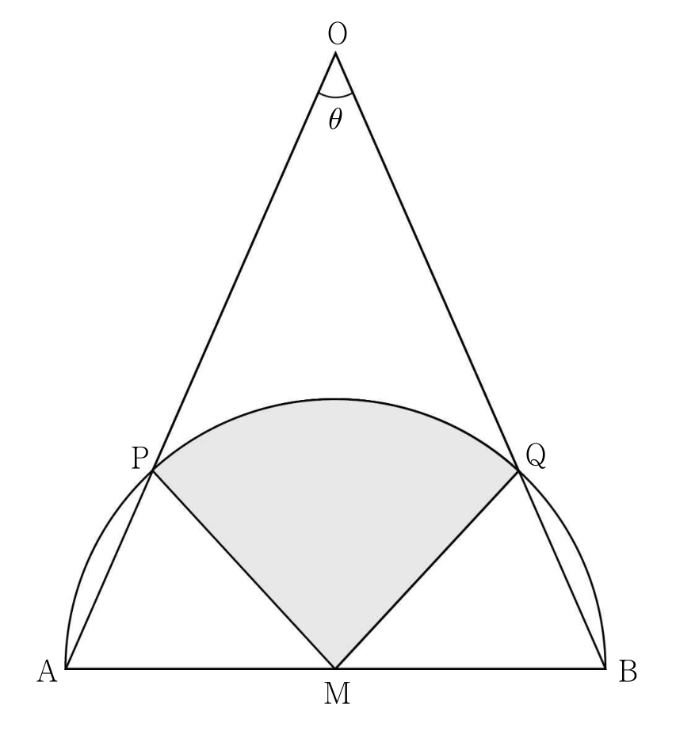
① $\frac{5}{12}$② $\frac{1}{3}$③ $\frac{1}{4}$④ $\frac{1}{6}$⑤ $\frac{1}{12}$
원본 정답 ④
원본 풀이 (내부용)[출제의도] 삼각함수를 이용하여 부채꼴의 넓이 증명하기
삼각형 \(OAM\)에서 \(\angle OMA=\dfrac{\pi}{2}\), \(\angle AOM=\dfrac{\theta}{2}\)이므로
\(
\overline{MA}=\boxed{\sin\frac{\theta}{2}}
\)
이다. 한편, \(\angle OAM=\dfrac{\pi}{2}-\dfrac{\theta}{2}\)이고 \(\overline{MA}=\overline{MP}\)이므로
\(
\angle AMP
=\pi-2\times\left(\frac{\pi}{2}-\frac{\theta}{2}\right)
=\boxed{\theta}
\)
이다. 같은 방법으로 \(\angle OBM=\dfrac{\pi}{2}-\dfrac{\theta}{2}\)이고 \(\overline{MB}=\overline{MQ}\)이므로
\(
\angle BMQ=\boxed{\theta}
\)
이다. 따라서 부채꼴 \(MPQ\)의 넓이 \(S(\theta)\)는
\(
S(\theta)=\frac12\times\left(\sin\frac{\theta}{2}\right)^2\times(\pi-2\theta)
\)
이다.
그림에서 \(A,M,B\)는 수평선 위에 있고 \(M\)은 \(AB\) 위에 있다. \(O\)는 \(M\)의 위쪽에 있으며 \(OM\)은 수직선이다. \(P,Q\)는 각각 \(OA,OB\)와 원호의 교점이고, 부채꼴 \(MPQ\)가 음영으로 표시되어 있다. \(MA=MP,\ MB=MQ\)가 표시되어 있다. 그림에는 \(\frac{\theta}{2},\theta,\frac{\pi}{2}-\frac{\theta}{2},\sin\frac{\theta}{2}\)가 표시되어 있다.
따라서 (가), (나), (다)에 알맞은 식은 각각
\(
f(\theta)=\sin\frac{\theta}{2},\qquad
g(\theta)=\theta,\qquad
h(\theta)=\pi-2\theta
\)
이므로
\(
f\left(\frac{\pi}{3}\right)=\frac12,\quad
g\left(\frac{\pi}{6}\right)=\frac{\pi}{6},\quad
h\left(\frac{\pi}{4}\right)=\pi-\frac{\pi}{2}=\frac{\pi}{2}
\)
이다. 따라서
\(
\frac{f\left(\frac{\pi}{3}\right)\times g\left(\frac{\pi}{6}\right)}
{h\left(\frac{\pi}{4}\right)}
=
\frac{\frac12\times\frac{\pi}{6}}{\frac{\pi}{2}}
=\frac16
\)
이다.
쌍둥이 1/5 · 4점 쌍둥이그림처럼 $\overline{OA}=\overline{OB}=7$, $\angle AOB=\theta$인 이등변삼각형 $OAB$가 있다. $AB$를 지름으로 하는 반원이 $OA,OB$와 다시 만나는 점을 각각 $P,Q$라 하고, $AB$의 중점을 $M$이라 하자. 부채꼴 $MPQ$의 넓이는 $S(\theta)=(\text{(가)})^2\,\text{(다)}/2$로 나타난다. $\overline{MA}=f(\theta)$, $\angle AMP=g(\theta)=\angle BMQ$, $\angle PMQ=h(\theta)$라 할 때, $\frac{f(\pi/3)g(\pi/4)}{h(\pi/6)}$를 구하세요.
① $\frac34$② $\frac{15}{16}$③ $\frac{21}{16}$④ $\frac32$⑤ $\frac{27}{16}$
정답③ $\frac{21}{16}$ 직각삼각형 $OAM$에서 $f(\theta)=7\sin(\theta/2)$. 이등변삼각형 $MAP$의 밑각은 $\pi/2-\theta/2$이므로 $g(\theta)=\theta$이다. $h(\theta)=\pi-2\theta$. 따라서 $f(\pi/3)=7/2$, $g(\pi/4)=\pi/4$, $h(\pi/6)=2\pi/3$이고 비는 $21/16$이다.
쌍둥이 2/5 · 4점 쌍둥이그림처럼 $\overline{OA}=\overline{OB}=6$, $\angle AOB=\theta$인 이등변삼각형 $OAB$가 있다. $AB$를 지름으로 하는 반원이 $OA,OB$와 다시 만나는 점을 각각 $P,Q$라 하고, $AB$의 중점을 $M$이라 하자. 부채꼴 $MPQ$의 넓이는 $S(\theta)=(\text{(가)})^2\,\text{(다)}/2$로 나타난다. $\overline{MA}=f(\theta)$, $\angle AMP=g(\theta)=\angle BMQ$, $\angle PMQ=h(\theta)$라 할 때, $\frac{f(\pi/3)g(\pi/6)}{h(\pi/4)}$을 구하세요.
① $\frac12$② $\frac34$③ $1$④ $\frac54$⑤ $\frac32$
정답③ $1$ 직각삼각형 $OAM$에서 $f(\theta)=6\sin(\theta/2)$. 이등변삼각형 $MAP$의 밑각은 $\pi/2-\theta/2$이므로 $g(\theta)=\theta$이다. $h(\theta)=\pi-2\theta$. 따라서 $f(\pi/3)=3$, $g(\pi/6)=\pi/6$, $h(\pi/4)=\pi/2$이고 비는 $1$이다.
쌍둥이 3/5 · 4점 쌍둥이그림처럼 $\overline{OA}=\overline{OB}=8$, $\angle AOB=\theta$인 이등변삼각형 $OAB$가 있다. $AB$를 지름으로 하는 반원이 $OA,OB$와 다시 만나는 점을 각각 $P,Q$라 하고, $AB$의 중점을 $M$이라 하자. 부채꼴 $MPQ$의 넓이는 $S(\theta)=(\text{(가)})^2\,\text{(다)}/2$로 나타난다. $\overline{MA}=f(\theta)$, $\angle AMP=g(\theta)=\angle BMQ$, $\angle PMQ=h(\theta)$라 할 때, $\frac{f(\pi/3)g(\pi/6)}{h(\pi/3)}$을 구하세요.
① $\frac32$② $\frac74$③ $2$④ $\frac94$⑤ $\frac52$
정답③ $2$ 직각삼각형 $OAM$에서 $f(\theta)=8\sin(\theta/2)$. 이등변삼각형 $MAP$의 밑각은 $\pi/2-\theta/2$이므로 $g(\theta)=\theta$이다. $h(\theta)=\pi-2\theta$. 따라서 $f(\pi/3)=4$, $g(\pi/6)=\pi/6$, $h(\pi/3)=\pi/3$이고 비는 $2$이다.
쌍둥이 4/5 · 4점 쌍둥이그림처럼 $\overline{OA}=\overline{OB}=6$, $\angle AOB=\theta$인 이등변삼각형에서 $AB$를 지름으로 하는 반원과 변 $OA,OB$의 다른 교점을 $P,Q$라 하자. $M$은 $AB$의 중점이다. 부채꼴 $MPQ$의 넓이는 $S(\theta)=(\text{(가)})^2\,\text{(다)}/2$로 나타난다. $\overline{MA}=f(\theta)$, $\angle AMP=g(\theta)=\angle BMQ$, $\angle PMQ=h(\theta)$라 할 때, $\frac{f(\pi/3)h(\pi/4)}{g(\pi/6)}$를 구하세요.
① $5$② $7$③ $9$④ $11$⑤ $13$
정답③ $9$ 직각삼각형과 이등변삼각형의 각 관계에서 $f(\theta)=6\sin(\theta/2)$, $g(\theta)=\theta$, $h(\theta)=\pi-2\theta$이다. $f(\pi/3)=3$, $h(\pi/4)=\pi/2$, $g(\pi/6)=\pi/6$이므로 비는 $3\cdot(\pi/2)/(\pi/6)=9$이다.
쌍둥이 5/5 · 4점 쌍둥이그림과 같이 $\overline{OA}=\overline{OB}=5$, $\angle AOB=\theta$인 이등변삼각형 $OAB$가 있다. 선분 $AB$를 지름으로 하는 반원이 선분 $OA$와 만나는 점 중 $A$가 아닌 점을 $P$, 선분 $OB$와 만나는 점 중 $B$가 아닌 점을 $Q$라 하자. 선분 $AB$의 중점을 $M$이라 할 때 부채꼴 $MPQ$의 넓이를 $S(\theta)$라 한다. (단, $0<\theta<\frac{\pi}{2}$) 삼각형 $OAM$에서 $\overline{MA}=\text{(가)}$, $\angle AMP=\angle BMQ=\text{(나)}$이고 $S(\theta)=\frac12\times(\text{(가)})^2\times\text{(다)}$이다. (가), (나), (다)를 각각 $f(\theta),g(\theta),h(\theta)$라 할 때, $f(\frac{\pi}{3})\,h(\frac{\pi}{6})/g(\frac{\pi}{4})$의 값을 고르시오. [4점]
① $\frac{16}{3}$② $\frac{18}{3}$③ $\frac{20}{3}$④ $\frac{22}{3}$⑤ $\frac{24}{3}$
원본 (내부용)그림과 같이 두 점 $\mathrm{A} ( -1,0 )$, $\mathrm{B} ( 1,0 )$과 원 $x^{2} +y^{2} =1$이 있다. 원 위의 점 $\mathrm{P}$에 대하여 $\angle \mathrm{PAB}= \theta$$( 0<\theta < \frac{ \pi }{ 2} )$라 할 때, 반직선 $\mathrm{PB}$ 위에 $\overline{PQ} =3$인 점 $\mathrm{Q}$를 정한다. 점 $\mathrm{Q}$의 $x$좌표가 최대가 될 때, $\sin^{2} \theta$의 값은? [4점] $x$ $y$ $\mathrm{O}$ $\mathrm{A}$ $\mathrm{P}$ $\mathrm{Q}$ $\mathrm{B}$ $\theta$ $1$ $-1$
① $\frac{7}{16}$② $\frac{1}{2}$③ $\frac{9}{16}$④ $\frac{5}{8}$⑤ $\frac{11}{16}$
원본 정답 ③
원본 풀이 (내부용)[출제의도] 삼각함수의 정의를 이용하여 삼각함수의 값 구하는 문제 해결하기
\(\angle APB=\dfrac{\pi}{2}\)이므로 \(\angle PBA=\dfrac{\pi}{2}-\theta\)이고,
\(
\overline{BF}=2\sin\theta
\)
이므로
\(
\overline{BQ}=3-2\sin\theta
\)
이다. 따라서 점 \(Q\)의 \(x\)좌표는
\(
\begin{aligned}
1+\overline{BQ}\times\cos\left(\frac{\pi}{2}-\theta\right)
&=1+(3-2\sin\theta)\sin\theta\\
&=1+3\sin\theta-2\sin^2\theta\\
&=-2\left(\sin\theta-\frac34\right)^2+\frac{17}{8}
\end{aligned}
\)
이므로 \(\sin\theta=\dfrac34\)일 때 최대이다. 그러므로
\(
\sin^2\theta=\frac9{16}
\)
이다.
그림에서 중심 \(O\), 반지름 1인 원이 좌표축과 함께 그려져 있다. \(A\)는 \(x\)축 위 \(x=-1\), \(B\)는 \(x=1\)에 있고 \(P\)는 원의 위쪽에 있다. \(\angle APB=\frac{\pi}{2}\), \(\angle PBA=\frac{\pi}{2}-\theta\)이다. \(PB\)를 연장한 직선 위에 \(Q\)가 있으며, \(BF=2\sin\theta\), \(BQ=3-2\sin\theta\)가 표시되어 있다.
쌍둥이 1/5 · 4점 쌍둥이그림과 같이 $A(-4,0)$, $B(4,0)$과 원 $x^2+y^2=16$이 있다. 원 위의 점 $P$에 대하여 $\angle PAB=\theta$ ($0<\theta<\frac{\pi}2$)라 할 때, 반직선 $PB$ 위의 점 $Q$가 $\overline{PQ}=7$을 만족한다. 점 $Q$의 $x$좌표가 최대일 때, $\sin^2\theta$의 값으로 옳은 것을 고르시오. [4점]
① $45/256$② $47/256$③ $49/256$④ $51/256$⑤ $53/256$
정답③ $49/256$ $s=\sin\theta$라 두면 $P=(r\cos2\theta,r\sin2\theta)$이고 $PB=2r\sin\theta$이다. 반직선 $PB$의 단위방향벡터의 $x$성분은 $\sin\theta$이므로 $x_Q=r\cos2\theta+7s=4-8rs^2+7s$. 이는 $s$에 대한 아래로 열린 이차식이고 꼭짓점은 $s=7/(4r)=7/16$으로 $0<s<1$이다. 따라서 최대일 때 $\sin^2\theta=s^2=49/256$이다.
쌍둥이 2/5 · 4점 쌍둥이그림과 같이 두 점 $A\left(-1,0\right)$, $B\left(1,0\right)$과 원 $x^{2}+y^{2}=1$이 있습니다. 원 위의 점 $P$에 대하여 $\angle PAB=\theta\left(0<\theta<\frac{\pi}{2}\right)$라 할 때, 반직선 $PB$ 위에 $\overline{PQ}=2$인 점 $Q$를 정합니다. 점 $Q$의 $x$좌표가 최대가 될 때, $\sin^{2}\theta$의 값으로 옳은 것을 고르세요.
① $\frac{1}{8}$② $\frac{3}{16}$③ $\frac{1}{4}$④ $\frac{5}{16}$⑤ $\frac{3}{8}$
정답③ $\frac{1}{4}$ $\overline{AB}$가 지름이므로 $\angle APB=\frac{\pi}{2}$이고 $\overline{AP}=2\cos\theta$, 점 $P$의 좌표는 $\left(1\cos 2\theta,1\sin 2\theta\right)$ 반직선 $PB$의 방향은 $\left(\sin\theta,-\cos\theta\right)$이므로 점 $Q$의 $x$좌표는 $1\cos 2\theta+2\sin\theta=1-2\sin^{2}\theta+2\sin\theta$ $\sin\theta=s$라 하면 $-2s^{2}+2s+1$은 $s=\frac{1}{2}$일 때 최대이고 $0<\frac{1}{2}<1$ 따라서 $\sin^{2}\theta=\frac{1}{4}$
쌍둥이 3/5 · 4점 쌍둥이그림과 같이 두 점 $A\left(-2,0\right)$, $B\left(2,0\right)$과 원 $x^{2}+y^{2}=4$가 있습니다. 원 위의 점 $P$에 대하여 $\angle PAB=\theta\left(0<\theta<\frac{\pi}{2}\right)$라 할 때, 반직선 $PB$ 위에 $\overline{PQ}=5$인 점 $Q$를 정합니다. 점 $Q$의 $x$좌표가 최대가 될 때, $\sin^{2}\theta$의 값으로 옳은 것을 고르세요.
① $\frac{23}{64}$② $\frac{3}{8}$③ $\frac{25}{64}$④ $\frac{13}{32}$⑤ $\frac{27}{64}$
정답③ $\frac{25}{64}$ $\overline{AB}$가 지름이므로 $\angle APB=\frac{\pi}{2}$이고 $\overline{AP}=4\cos\theta$, 점 $P$의 좌표는 $\left(2\cos 2\theta,2\sin 2\theta\right)$ 반직선 $PB$의 방향은 $\left(\sin\theta,-\cos\theta\right)$이므로 점 $Q$의 $x$좌표는 $2\cos 2\theta+5\sin\theta=2-4\sin^{2}\theta+5\sin\theta$ $\sin\theta=s$라 하면 $-4s^{2}+5s+2$는 $s=\frac{5}{8}$일 때 최대이고 $0<\frac{5}{8}<1$ 따라서 $\sin^{2}\theta=\frac{25}{64}$
쌍둥이 4/5 · 4점 쌍둥이그림과 같이 두 점 $A\left(-3,0\right)$, $B\left(3,0\right)$과 원 $x^{2}+y^{2}=9$가 있습니다. 원 위의 점 $P$에 대하여 $\angle PAB=\theta\left(0<\theta<\frac{\pi}{2}\right)$라 할 때, 반직선 $PB$ 위에 $\overline{PQ}=8$인 점 $Q$를 정합니다. 점 $Q$의 $x$좌표가 최대가 될 때, $\sin^{2}\theta$의 값으로 옳은 것을 고르세요.
① $\frac{2}{9}$② $\frac{1}{3}$③ $\frac{4}{9}$④ $\frac{5}{9}$⑤ $\frac{2}{3}$
정답③ $\frac{4}{9}$ $\overline{AB}$가 지름이므로 $\angle APB=\frac{\pi}{2}$이고 $\overline{AP}=6\cos\theta$, 점 $P$의 좌표는 $\left(3\cos 2\theta,3\sin 2\theta\right)$ 반직선 $PB$의 방향은 $\left(\sin\theta,-\cos\theta\right)$이므로 점 $Q$의 $x$좌표는 $3\cos 2\theta+8\sin\theta=3-6\sin^{2}\theta+8\sin\theta$ $\sin\theta=s$라 하면 $-6s^{2}+8s+3$은 $s=\frac{2}{3}$일 때 최대이고 $0<\frac{2}{3}<1$ 따라서 $\sin^{2}\theta=\frac{4}{9}$
쌍둥이 5/5 · 4점 쌍둥이그림과 같이 $A(-5,0)$, $B(5,0)$과 원 $x^2+y^2=25$가 있다. 원 위의 점 $P$에 대하여 $\angle PAB=\theta$ ($0<\theta<\frac{\pi}2$)라 할 때, 반직선 $PB$ 위의 점 $Q$가 $\overline{PQ}=9$를 만족한다. 점 $Q$의 $x$좌표가 최대일 때, $\sin^2\theta$의 값으로 옳은 것을 고르시오. [4점]
① $77/400$② $79/400$③ $81/400$④ $83/400$⑤ $17/80$
정답③ $81/400$ $s=\sin\theta$라 두면 $P=(r\cos2\theta,r\sin2\theta)$이고 $PB=2r\sin\theta$이다. 반직선 $PB$의 단위방향벡터의 $x$성분은 $\sin\theta$이므로 $x_Q=r\cos2\theta+9s=5-10rs^2+9s$. 이는 $s$에 대한 아래로 열린 이차식이고 꼭짓점은 $s=9/(4r)=9/20$으로 $0<s<1$이다. 따라서 최대일 때 $\sin^2\theta=s^2=81/400$이다.
원본 (내부용)자연수 $n$에 대하여 $0<x< \frac{n}{12} \pi$일 때, 방정식 $\sin^{2} ( 4x ) -1=0$ 의 실근의 개수를 $f ( n )$이라 하자. $f ( n ) =33$이 되도록 하는 모든 $n$의 값의 합은? [4점]
① $295$② $297$③ $299$④ $301$⑤ $303$
그림·참고 단답형 ① $295$ ② $297$ ③ $299$ ④ $301$ ⑤ $303$ 단답형
원본 정답 ②
원본 풀이 (내부용)[출제의도] 삼각함수의 그래프를 이용하여 방정식의 실근의 개수 추측하기
방정식 \(\sin^2(4x)-1=0\)에서 \(\sin4x=1\) 또는 \(\sin4x=-1\)이다. 따라서 \(0<x<\dfrac{n}{12}\pi\)에서 함수 \(y=\sin4x\)의 그래프가 두 직선 \(y=1,\ y=-1\)과 만나는 점의 개수가 33이어야 한다.
함수 \(y=\sin4x\)의 주기는 \(\dfrac{2\pi}{4}=\dfrac{\pi}{2}\)이다.
\(
0<x\leq\frac{\pi}{4}
\)
에서 함수 \(y=\sin4x\)의 그래프와 직선 \(y=1\)이 만나는 점의 개수가 1이고,
\(
\frac{\pi}{4}<x\leq\frac{\pi}{2}
\)
에서 함수 \(y=\sin4x\)의 그래프와 직선 \(y=-1\)이 만나는 점의 개수가 1이므로,
\(
0<x\leq\frac{\pi}{2}
\)
에서 함수 \(y=\sin4x\)의 그래프가 직선 \(y=1\) 또는 직선 \(y=-1\)과 만나는 점의 개수가 2이다.
그러므로 \(0<x\leq\frac{\pi}{2}\times16\)에서 함수 \(y=\sin4x\)의 그래프가 직선 \(y=1\) 또는 직선 \(y=-1\)과 만나는 점의 개수는 \(2\times16=32\)이다.
그러므로 \(0<x<\frac{n}{12}\pi\)에서 방정식 \(\sin^2(4x)-1=0\)의 실근의 개수가 33이기 위해 \(8\pi<x<\frac{n}{12}\pi\)에서 함수 \(y=\sin4x\)의 그래프가 두 직선 \(y=1,\ y=-1\)과 만나는 점의 개수가 각각 1, 0이어야 한다.
따라서
\(
8\pi+\frac{\pi}{8}<\frac{n}{12}\pi\leq8\pi+\frac{3}{8}\pi
\)
이고,
\(\)
쌍둥이 1/5 · 4점 쌍둥이자연수 n에 대하여 $0<x<\frac{n\pi}{10}$일 때 $\sin^2(3x)-1=0$의 실근 수를 f(n)이라 합니다. f(n)=16가 되도록 하는 모든 n의 합은?
① $745$② $747$③ $749$④ $751$⑤ $753$
정답③ $749$ 실근은 x=π/6+kπ/3이고 10+20k<3n이다. 정확히 16개이려면 k=0,…,15는 포함되어 310<3n이고 k=16은 제외되어 3n≤330이다. n=104,…,110이므로 합은 749이다.
쌍둥이 2/5 · 4점 쌍둥이자연수 $n$에 대하여 $0<x<\frac{n}{10}\pi$일 때, 방정식 $\sin^{2}(3x)-1=0$의 실근의 개수를 $f(n)$이라 합니다. $f(n)=20$이 되도록 하는 모든 $n$의 값의 합으로 옳은 것을 고르세요.
① $198$② $201$③ $204$④ $207$⑤ $210$
정답② $201$ $\sin^{2}(3x)=1$에서 $\sin3x=1$ 또는 $\sin3x=-1$이므로 $3x=\frac{\pi}{2}+k\pi$ ($k$는 $0$ 이상의 정수), 즉 $x=\frac{(2k+1)\pi}{6}$ $0<x<\frac{n}{10}\pi$에서 $\frac{2k+1}{6}<\frac{n}{10}$인 $k$의 개수가 $f(n)$입니다. $f(n)=20$이려면 $k=0,\ 1,\ \cdots,\ 19$는 되고 $k=20$은 안 되어야 하므로 $\frac{39}{6}<\frac{n}{10}\le\frac{41}{6}$, 즉 $65<n\le\frac{205}{3}$ 자연수 $n$은 66, 67, 68이므로 합은 $201$
쌍둥이 3/5 · 4점 쌍둥이자연수 $n$에 대하여 $0<x<\frac{n}{9}\pi$일 때, 방정식 $\sin^{2}(2x)-1=0$의 실근의 개수를 $f(n)$이라 합니다. $f(n)=15$가 되도록 하는 모든 $n$의 값의 합으로 옳은 것을 고르세요.
① $264$② $267$③ $270$④ $273$⑤ $276$
정답③ $270$ $\sin^{2}(2x)=1$에서 $\sin2x=1$ 또는 $\sin2x=-1$이므로 $2x=\frac{\pi}{2}+k\pi$ ($k$는 $0$ 이상의 정수), 즉 $x=\frac{(2k+1)\pi}{4}$ $0<x<\frac{n}{9}\pi$에서 $\frac{2k+1}{4}<\frac{n}{9}$인 $k$의 개수가 $f(n)$입니다. $f(n)=15$이려면 $k=0,\ 1,\ \cdots,\ 14$는 되고 $k=15$는 안 되어야 하므로 $\frac{29}{4}<\frac{n}{9}\le\frac{31}{4}$, 즉 $\frac{261}{4}<n\le\frac{279}{4}$ 자연수 $n$은 66, 67, 68, 69이므로 합은 $270$
쌍둥이 4/5 · 4점 쌍둥이자연수 $n$에 대하여 $0<x<\frac{n}{8}\pi$일 때, 방정식 $\sin^{2}(5x)-1=0$의 실근의 개수를 $f(n)$이라 합니다. $f(n)=24$가 되도록 하는 모든 $n$의 값의 합으로 옳은 것을 고르세요.
① $68$② $71$③ $74$④ $77$⑤ $80$
정답④ $77$ $\sin^{2}(5x)=1$에서 $\sin5x=1$ 또는 $\sin5x=-1$이므로 $5x=\frac{\pi}{2}+k\pi$ ($k$는 $0$ 이상의 정수), 즉 $x=\frac{(2k+1)\pi}{10}$ $0<x<\frac{n}{8}\pi$에서 $\frac{2k+1}{10}<\frac{n}{8}$인 $k$의 개수가 $f(n)$입니다. $f(n)=24$이려면 $k=0,\ 1,\ \cdots,\ 23$은 되고 $k=24$는 안 되어야 하므로 $\frac{47}{10}<\frac{n}{8}\le\frac{49}{10}$, 즉 $\frac{188}{5}<n\le\frac{196}{5}$ 자연수 $n$은 38, 39이므로 합은 $77$
원본 (내부용)$2\cos^{2} \theta -\sin^{2} \theta =1$일 때, $60\sin^{2} \theta$의 값을 구하시오. [3점]
원본 정답 20
원본 풀이 (내부용)[출제의도] 삼각함수 사이의 관계를 이용하여 함수값 계산하기
\(
\sin^2\theta+\cos^2\theta=1
\)
이므로 \(\cos^2\theta=1-\sin^2\theta\)를 대입하면 주어진 방정식은
\(
\begin{aligned}
2\cos^2\theta-\sin^2\theta
&=2(1-\sin^2\theta)-\sin^2\theta\\
&=2-3\sin^2\theta=1
\end{aligned}
\)
이다. 따라서 \(\sin^2\theta=\dfrac13\)이므로 \(60\sin^2\theta=20\)이다.
생성기 숫자판 1/6 · G2M1-02b#7$3\cos^{2}\theta-3\sin^{2}\theta=0$일 때, $46\sin^{2}\theta$의 값을 구하세요.
정답$23$ $\cos^{2}\theta=1-\sin^{2}\theta$이므로 $3\left(1-\sin^{2}\theta\right)-3\sin^{2}\theta=0$ $3-6\sin^{2}\theta=0$, $\sin^{2}\theta=\frac{1}{2}$ 따라서 $46\sin^{2}\theta=46\times \frac{1}{2}=23$
숫자: 원본 2 1 60 → 쌍둥이 3 3 0 46
생성기 숫자판 2/6 · G2M1-02b#7$3\cos^{2}\theta-3\sin^{2}\theta=0$일 때, $14\sin^{2}\theta$의 값을 구하세요.
정답$7$ $\cos^{2}\theta=1-\sin^{2}\theta$이므로 $3\left(1-\sin^{2}\theta\right)-3\sin^{2}\theta=0$ $3-6\sin^{2}\theta=0$, $\sin^{2}\theta=\frac{1}{2}$ 따라서 $14\sin^{2}\theta=14\times \frac{1}{2}=7$
숫자: 원본 2 1 60 → 쌍둥이 3 3 0 14
생성기 숫자판 3/6 · G2M1-02b#7$3\cos^{2}\theta-3\sin^{2}\theta=0$일 때, $24\sin^{2}\theta$의 값을 구하세요.
정답$12$ $\cos^{2}\theta=1-\sin^{2}\theta$이므로 $3\left(1-\sin^{2}\theta\right)-3\sin^{2}\theta=0$ $3-6\sin^{2}\theta=0$, $\sin^{2}\theta=\frac{1}{2}$ 따라서 $24\sin^{2}\theta=24\times \frac{1}{2}=12$
숫자: 원본 2 1 60 → 쌍둥이 3 3 0 24
생성기 숫자판 4/6 · G2M1-02b#7$3\cos^{2}\theta-3\sin^{2}\theta=0$일 때, $22\sin^{2}\theta$의 값을 구하세요.
정답$11$ $\cos^{2}\theta=1-\sin^{2}\theta$이므로 $3\left(1-\sin^{2}\theta\right)-3\sin^{2}\theta=0$ $3-6\sin^{2}\theta=0$, $\sin^{2}\theta=\frac{1}{2}$ 따라서 $22\sin^{2}\theta=22\times \frac{1}{2}=11$
숫자: 원본 2 1 60 → 쌍둥이 3 3 0 22
생성기 숫자판 5/6 · G2M1-02b#7$3\cos^{2}\theta-3\sin^{2}\theta=0$일 때, $32\sin^{2}\theta$의 값을 구하세요.
정답$16$ $\cos^{2}\theta=1-\sin^{2}\theta$이므로 $3\left(1-\sin^{2}\theta\right)-3\sin^{2}\theta=0$ $3-6\sin^{2}\theta=0$, $\sin^{2}\theta=\frac{1}{2}$ 따라서 $32\sin^{2}\theta=32\times \frac{1}{2}=16$
숫자: 원본 2 1 60 → 쌍둥이 3 3 0 32
생성기 숫자판 6/6 · G2M1-02b#7$3\cos^{2}\theta-3\sin^{2}\theta=0$일 때, $18\sin^{2}\theta$의 값을 구하세요.
정답$9$ $\cos^{2}\theta=1-\sin^{2}\theta$이므로 $3\left(1-\sin^{2}\theta\right)-3\sin^{2}\theta=0$ $3-6\sin^{2}\theta=0$, $\sin^{2}\theta=\frac{1}{2}$ 따라서 $18\sin^{2}\theta=18\times \frac{1}{2}=9$
숫자: 원본 2 1 60 → 쌍둥이 3 3 0 18
59. 2020년 6월 25번 · 3점 · 수학Ⅰ 삼각함수 · G2M1-02b#18
원본 (내부용)함수 $y=ksin ( x+ \frac{\pi }{2} ) +10$의 그래프가 점 $( \frac{\pi }{3} ,14 )$를 지날 때, 상수 $k$의 값을 구하시오. [3점]
원본 정답 8
원본 풀이 (내부용)[출제의도] 삼각함수의 그래프 이해하기
함수
\(
y=k\sin\left(x+\frac{\pi}{2}\right)+10
=k\cos x+10
\)
의 그래프가 점 \(\left(\frac{\pi}{3},14\right)\)를 지나므로
\(
14=k\cos\frac{\pi}{3}+10,\qquad
14=\frac12k+10
\)
이다. 따라서 \(k=8\)이다.
생성기 숫자판 1/6 · G2M1-02b#18함수 $y=k\sin\left(x+\frac{\pi}{2}\right)+11$의 그래프가 점 $\left(0,\ 9\right)$를 지날 때, 상수 $k$의 값을 구하세요.
정답$-2$ $k\sin\left(x+\frac{\pi}{2}\right)=k\cos x$이므로 $y=k\cos x+11$ $x=0$일 때 $y=9$이므로 $k\cos 0+11=9$, $k=-2$ 따라서 $k=-2$
숫자: 원본 2 10 3 14 → 쌍둥이 2 11 0 9 · 같은 수: 2
생성기 숫자판 2/6 · G2M1-02b#18함수 $y=k\sin\left(x+\frac{\pi}{2}\right)+3$의 그래프가 점 $\left(\frac{2}{3}\pi,\ 2\right)$를 지날 때, 상수 $k$의 값을 구하세요.
정답$2$ $k\sin\left(x+\frac{\pi}{2}\right)=k\cos x$이므로 $y=k\cos x+3$ $x=\frac{2}{3}\pi$일 때 $y=2$이므로 $k\cos \frac{2}{3}\pi+3=2$, $-\frac{1}{2}k=-1$ 따라서 $k=2$
숫자: 원본 2 10 3 14 → 쌍둥이 2 3 2 3 2 · 같은 수: 2 3
생성기 숫자판 3/6 · G2M1-02b#18함수 $y=k\cos\left(x-\frac{\pi}{2}\right)+4$의 그래프가 점 $\left(\frac{\pi}{6},\ 8\right)$을 지날 때, 상수 $k$의 값을 구하세요.
정답$8$ $k\cos\left(x-\frac{\pi}{2}\right)=k\sin x$이므로 $y=k\sin x+4$ $x=\frac{\pi}{6}$일 때 $y=8$이므로 $k\sin \frac{\pi}{6}+4=8$, $\frac{1}{2}k=4$ 따라서 $k=8$
숫자: 원본 2 10 3 14 → 쌍둥이 2 4 6 8 · 같은 수: 2
생성기 숫자판 4/6 · G2M1-02b#18함수 $y=k\sin\left(x+\frac{\pi}{2}\right)+6$의 그래프가 점 $\left(\pi,\ 10\right)$을 지날 때, 상수 $k$의 값을 구하세요.
정답$-4$ $k\sin\left(x+\frac{\pi}{2}\right)=k\cos x$이므로 $y=k\cos x+6$ $x=\pi$일 때 $y=10$이므로 $k\cos \pi+6=10$, $-k=4$ 따라서 $k=-4$
숫자: 원본 2 10 3 14 → 쌍둥이 2 6 10 · 같은 수: 2 10
생성기 숫자판 5/6 · G2M1-02b#18함수 $y=k\sin\left(x+\frac{\pi}{2}\right)+8$의 그래프가 점 $\left(0,\ 16\right)$을 지날 때, 상수 $k$의 값을 구하세요.
정답$8$ $k\sin\left(x+\frac{\pi}{2}\right)=k\cos x$이므로 $y=k\cos x+8$ $x=0$일 때 $y=16$이므로 $k\cos 0+8=16$, $k=8$ 따라서 $k=8$
숫자: 원본 2 10 3 14 → 쌍둥이 2 8 0 16 · 같은 수: 2
생성기 숫자판 6/6 · G2M1-02b#18함수 $y=k\sin\left(x+\frac{\pi}{2}\right)+11$의 그래프가 점 $\left(\pi,\ 10\right)$을 지날 때, 상수 $k$의 값을 구하세요.
정답$1$ $k\sin\left(x+\frac{\pi}{2}\right)=k\cos x$이므로 $y=k\cos x+11$ $x=\pi$일 때 $y=10$이므로 $k\cos \pi+11=10$, $-k=-1$ 따라서 $k=1$
숫자: 원본 2 10 3 14 → 쌍둥이 2 11 10 · 같은 수: 2 10
60. 2020년 6월 30번 · 4점 · 수학Ⅰ 삼각함수 · 4점 쌍둥이
원본 (내부용)두 실수 $a$$( 0<a<2 \pi )$와 $k$에 대하여 $0 \le x \le 2 \pi$에서 정의된 함수 $f ( x )$는 $f ( x ) = \begin{cases} sinx- \frac{1}{2} & ( 0 \le x<a ) \\ ksinx- \frac{1}{2} & ( a \le x \le 2 \pi )\end{cases}$ 이고, 다음 조건을 만족시킨다. (가) 함수 $| f ( x ) |$의 최댓값은 $\frac{1}{2}$이다. (나) 방정식 $f ( x ) =0$의 실근의 개수는 $3$이다. 방정식 $| f ( x ) | = \frac{1}{4}$의 모든 실근의 합을 $S$라 할 때, $20 ( \frac{a+S}{\pi } +k )$의 값을 구하시오. [4점] ＊확인 사항 ◦답안지의 해당란에 필요한 내용을 정확히 기입(표기)했는지 확인하시오.
원본 정답 110
원본 풀이 (내부용)[출제의도] 삼각함수의 그래프를 이용해서 삼각함수 추측하기
\(\pi<a<2\pi\)라 하면 함수 \(y=\sin x-\dfrac12\)의 그래프에서 \(\pi<x<a\)일 때 \(\sin x-\dfrac12<-\dfrac12\)이므로
\(
\left|\sin x-\frac12\right|>\frac12
\)
이다. 따라서 조건 (가)를 만족시키지 않는다.
그림에는 \(y=\sin x-\frac12\)의 그래프와 \(x=a\)가 표시되어 있다. \(x\)축에 \(\pi,\ 2\pi\), \(y\)축에 \(\frac12,\ -\frac12\)가 표시되어 있다.
따라서 \(0<a\le\pi\)이다. ……①
(i) \(k>0\)인 경우
\(a\le x\le2\pi\)에서 함수 \(y=k\sin x-\dfrac12\)는 \(x=\dfrac{3\pi}{2}\)일 때 최솟값
\(
k\sin\frac{3\pi}{2}-\frac12=-k-\frac12
\)
을 갖는다. 따라서 함수 \(|f(x)|\)의 최댓값은 \(k+\dfrac12\)이고, \(k+\dfrac12>\dfrac12\)이므로 조건 (가)를 만족시키지 않는다.
그림에는 \(y=f(x)\), \(y=|f(x)|\)의 그래프와 \(x=a\), \(x=\pi\), \(x=2\pi\), \(x=\dfrac{3\pi}{2}\), 수평선 \(y=\dfrac12,\ y=-\dfrac12\)가 표시되어 있다.
(ii) \(k=0\)인 경우
함수는
\(
f(x)=
\begin{cases}
\sin x-\dfrac12 & (0\le x<a)\\(2mm]
-\dfrac12 & (a\le x\le2\pi)
\end{cases}
\)
이고, 방정식 \(f(x)=0\)의 실근의 개수는 2 이하이므로 조건 (나)를 만족시키지 않는다.
그림에는 \(y=f(x)\)의 그래프와 \(x=a,\ \pi,\ 2\pi\), 수평선 \(y=\dfrac12,\ y=-\dfrac12\)가 표시되어 있다.
(iii) \(k<0\)인 경우
\(0<a<\pi\)이면 \(\sin a>0\)이므로
\(
f(a)=k\sin a-\frac12<-\frac12
\)
이다. 따라서 \(|f(a)|>\dfrac12\)이고 조건 (가)를 만족시키지 않는다.
그러므로 ①에 의해 \(a=\pi\)이다.
조건 (나)에 의해 방정식 \(f(x)=0\)의 서로 다른 실근의 개수가 3이므로 \(f\left(\dfrac{3\pi}{2}\right)=0\)이다.
\(
k\times(-1)-\frac12=0
\)
이므로 \(k=-\dfrac12\)이다.
따라서 구하는 함수 \(f(x)\)는
\(
f(x)=
\begin{cases}
\sin x-\dfrac12 & (0\le x<\pi)\\(2mm]
-\dfrac12\sin x-\dfrac12 & (\pi\le x\le2\pi)
\end{cases}
\)
이다.
함수 \(y=|f(x)|\)의 그래프와 직선 \(y=\dfrac14\)이 만나는 점의 \(x\)좌표를 작은 것부터 차례로 \(\alpha_1,\alpha_2,\alpha_3,\alpha_4,\alpha_5,\alpha_6\)이라 하자.
그림에는 \(y=|f(x)|\)의 그래프와 직선 \(y=\dfrac14\)가 표시되어 있고, 교점의 \(x\)좌표는 \(\alpha_1,\ldots,\alpha_6\)로 표시되어 있다. \(x=\dfrac{\pi}{2},\ \dfrac{3\pi}{2}\)도 나타나 있다.
\(
\frac{\alpha_1+\alpha_4}{2}=\frac{\pi}{2},\qquad
\frac{\alpha_2+\alpha_3}{2}=\frac{\pi}{2},\qquad
\frac{\alpha_5+\alpha_6}{2}=\frac{3\pi}{2}
\)
이므로
\(
S=\alpha_1+\alpha_2+\alpha_3+\alpha_4+\alpha_5+\alpha_6
=\pi+\pi+3\pi=5\pi
\)
이다. 따라서
\(
20\left(\frac{a+S}{\pi}+k\right)
=20\left(\frac{\pi+5\pi}{\pi}-\frac12\right)
=20\times\frac{11}{2}=110
\)
이다.
쌍둥이 1/5 · 4점 쌍둥이실수 $k$에 대하여 $0\le x\le2\pi$에서 $f(x)=\begin{cases}\sin x-\frac23 &(0\le x<\pi),\\k\sin x-\frac23 &(\pi\le x\le2\pi)\end{cases}$라 하자. 함수 $|f(x)|$의 최댓값은 $\frac23$이고 $f(x)=0$의 서로 다른 실근은 3개이다. 방정식 $|f(x)|=\frac16$의 모든 실근의 합을 $S$라 할 때 $6\left(\frac{2\pi+S}{\pi}+3k\right)$를 구하시오.
① $26$② $28$③ $30$④ $32$⑤ $34$
정답③ $30$ 첫 구간에서 $\sin x=2/3$의 두 근이 생긴다. 둘째 구간에서 세 번째 영점을 얻고 최댓값을 유지하려면 $k=-2/3$이어야 한다. 실제 둘째 구간의 영점은 $x=3\pi/2$이다. $|f|=1/6$의 첫 구간은 $\sin x=1/2,5/6$의 네 근이며 각 level의 두 근 합은 $\pi$이므로 합은 $2\pi$. 둘째 구간에서는 $\sin x=-3/4$의 두 근으로 합은 $3\pi$; 따라서 $S=5\pi$. $6((2\pi+S)/\pi+3k)=6(7-2)=30$.
쌍둥이 2/5 · 4점 쌍둥이두 실수 $a$ $(0<a<2\pi)$와 $k$에 대하여 $0\le x\le2\pi$에서 정의된 함수 $f(x)$는
$f(x)=\begin{cases}\sin x-\frac{3}{5} &(0\le x<a),\\k\sin x-\frac{3}{5} &(a\le x\le2\pi)\end{cases}$이고, 다음 조건을 만족시킨다.
(가) 함수 $|f(x)|$의 최댓값은 $\frac{3}{5}$이다.
(나) 방정식 $f(x)=0$의 서로 다른 실근의 개수는 $3$이다.
방정식 $|f(x)|=\frac{1}{10}$의 모든 실근의 합을 $S$라 할 때, $5\left(\frac{2a+S}{\pi}+3k\right)$의 값을 구하시오. [4점]
정답$26$ 첫 구간에서 |sin x-c|≤c이면 sin x≥0이어야 하므로 a≤π이다. 만약 a<π이면 둘째 구간에 sin x>0인 곳과 sin x<0인 곳이 모두 포함된다. |k sin x-c|≤c는 각각 k≥0, k≤0을 강제하여 k=0이 된다. 그러면 둘째 구간에는 영점이 없고 첫 구간의 영점은 최대 두 개라 조건 (나)에 모순이다. 따라서 a=π이다. a=π일 때 첫 구간의 영점은 sin x=c의 두 해이다. 둘째 구간의 영점은 k sin x=c이다. 절댓값 최댓값 조건에서 k≤0이고, c∈(1/2,1)이므로 둘째 구간의 해는 |k|>c이면 두 개, |k|=c이면 하나(접점), |k|<c이면 없다. 전체 영점이 3개이므로 k=−c이다. 실제로 첫 구간의 |f| 범위 끝값은 −c, 1−c이고 1−c<c이며, 둘째 구간의 f 범위는 −c에서 0이므로 최댓값 조건도 성립한다. $|f(x)|=\frac{1}{10}$의 첫 구간 해는 sin $x=\frac{1}{2}$, $\frac{7}{10}$의 두 쌍이다. 각각의 두 해의 합은 π이므로 합은 2π이다. 둘째 구간에서는 f=−c sin x−c이고, |f|=d는 sin x=- $\frac{5}{6}$를 주어 두 해의 합은 3π이다. 따라서 S=5π이고, 5((2a+S)/π+3k)=26.
쌍둥이 3/5 · 4점 쌍둥이두 실수 $a$ $(0<a<2\pi)$와 $k$에 대하여 $0\le x\le2\pi$에서 정의된 함수 $f(x)$는
$f(x)=\begin{cases}\sin x-\frac{7}{10} &(0\le x<a),\\k\sin x-\frac{7}{10} &(a\le x\le2\pi)\end{cases}$이고, 다음 조건을 만족시킨다.
(가) 함수 $|f(x)|$의 최댓값은 $\frac{7}{10}$이다.
(나) 방정식 $f(x)=0$의 서로 다른 실근의 개수는 $3$이다.
방정식 $|f(x)|=\frac{1}{5}$의 모든 실근의 합을 $S$라 할 때, $10\left(\frac{2a+S}{\pi}+3k\right)$의 값을 구하시오. [4점]
정답$49$ 첫 구간에서 |sin x-c|≤c이면 sin x≥0이어야 하므로 a≤π이다. 만약 a<π이면 둘째 구간에 sin x>0인 곳과 sin x<0인 곳이 모두 포함된다. |k sin x-c|≤c는 각각 k≥0, k≤0을 강제하여 k=0이 된다. 그러면 둘째 구간에는 영점이 없고 첫 구간의 영점은 최대 두 개라 조건 (나)에 모순이다. 따라서 a=π이다. a=π일 때 첫 구간의 영점은 sin x=c의 두 해이다. 둘째 구간의 영점은 k sin x=c이다. 절댓값 최댓값 조건에서 k≤0이고, c∈(1/2,1)이므로 둘째 구간의 해는 |k|>c이면 두 개, |k|=c이면 하나(접점), |k|<c이면 없다. 전체 영점이 3개이므로 k=−c이다. 실제로 첫 구간의 |f| 범위 끝값은 −c, 1−c이고 1−c<c이며, 둘째 구간의 f 범위는 −c에서 0이므로 최댓값 조건도 성립한다. $|f(x)|=\frac{1}{5}$의 첫 구간 해는 sin $x=\frac{1}{2}$, $\frac{9}{10}$의 두 쌍이다. 각각의 두 해의 합은 π이므로 합은 2π이다. 둘째 구간에서는 f=−c sin x−c이고, |f|=d는 sin x=- $\frac{5}{7}$를 주어 두 해의 합은 3π이다. 따라서 S=5π이고, 10((2a+S)/π+3k)=49.
쌍둥이 4/5 · 4점 쌍둥이두 실수 $a$ $(0<a<2\pi)$와 $k$에 대하여 $0\le x\le2\pi$에서 정의된 함수 $f(x)$는
$f(x)=\begin{cases}\sin x-\frac{4}{5} &(0\le x<a),\\k\sin x-\frac{4}{5} &(a\le x\le2\pi)\end{cases}$이고, 다음 조건을 만족시킨다.
(가) 함수 $|f(x)|$의 최댓값은 $\frac{4}{5}$이다.
(나) 방정식 $f(x)=0$의 서로 다른 실근의 개수는 $3$이다.
방정식 $|f(x)|=\frac{1}{10}$의 모든 실근의 합을 $S$라 할 때, $5\left(\frac{2a+S}{\pi}+3k\right)$의 값을 구하시오. [4점]
정답$23$ 첫 구간에서 |sin x-c|≤c이면 sin x≥0이어야 하므로 a≤π이다. 만약 a<π이면 둘째 구간에 sin x>0인 곳과 sin x<0인 곳이 모두 포함된다. |k sin x-c|≤c는 각각 k≥0, k≤0을 강제하여 k=0이 된다. 그러면 둘째 구간에는 영점이 없고 첫 구간의 영점은 최대 두 개라 조건 (나)에 모순이다. 따라서 a=π이다. a=π일 때 첫 구간의 영점은 sin x=c의 두 해이다. 둘째 구간의 영점은 k sin x=c이다. 절댓값 최댓값 조건에서 k≤0이고, c∈(1/2,1)이므로 둘째 구간의 해는 |k|>c이면 두 개, |k|=c이면 하나(접점), |k|<c이면 없다. 전체 영점이 3개이므로 k=−c이다. 실제로 첫 구간의 |f| 범위 끝값은 −c, 1−c이고 1−c<c이며, 둘째 구간의 f 범위는 −c에서 0이므로 최댓값 조건도 성립한다. $|f(x)|=\frac{1}{10}$의 첫 구간 해는 sin $x=\frac{7}{10}$, $\frac{9}{10}$의 두 쌍이다. 각각의 두 해의 합은 π이므로 합은 2π이다. 둘째 구간에서는 f=−c sin x−c이고, |f|=d는 sin x=- $\frac{7}{8}$를 주어 두 해의 합은 3π이다. 따라서 S=5π이고, 5((2a+S)/π+3k)=23.
쌍둥이 5/5 · 4점 쌍둥이실수 $k$에 대하여 $0\le x\le2\pi$에서 $f(x)=\begin{cases}\sin x-\frac56 &(0\le x<\pi),\\k\sin x-\frac56 &(\pi\le x\le2\pi)\end{cases}$라 하자. 함수 $|f(x)|$의 최댓값은 $\frac56$이고 $f(x)=0$의 서로 다른 실근은 3개이다. 방정식 $|f(x)|=\frac18$의 모든 실근의 합을 $S$라 할 때 $12\left(\frac{2\pi+S}{\pi}+3k\right)$를 구하시오.
① $50$② $52$③ $54$④ $56$⑤ $58$
정답③ $54$ 첫 구간에서 $\sin x=5/6$의 두 근이 생긴다. 둘째 구간에서 세 번째 영점을 얻고 최댓값을 유지하려면 $k=-5/6$이어야 한다. 둘째 구간의 영점은 $x=3\pi/2$이다. $|f|=1/8$의 첫 구간은 $\sin x=17/24,23/24$의 네 근이며 각 level의 두 근 합은 $\pi$이므로 합은 $2\pi$. 둘째 구간에서는 $\sin x=-17/20$의 두 근으로 합은 $3\pi$; 따라서 $S=5\pi$. $12((2\pi+S)/\pi+3k)=12(7-5/2)=54$.
원본 (내부용)중심각의 크기가 \(\frac{\pi}{4}\)이고, 넓이가 \(8\pi\)인 부채꼴의 반지름의 길이는? [3점]
① \(4\)② \(5\)③ \(6\)④ \(7\)⑤ \(8\)
원본 정답 ⑤
원본 풀이 (내부용)[출제의도] 부채꼴의 넓이 계산하기
부채꼴의 반지름의 길이를 \(r\;(r>0)\)이라 하면
\(
\frac12\times r^2\times\frac{\pi}{4}=8\pi,\quad r^2=64
\)
따라서 \(r=8\)
생성기 숫자판 1/6 · G2M8-05#4중심각의 크기가 $\frac{\pi}{4}$이고, 넓이가 $8\pi$인 부채꼴의 반지름의 길이로 옳은 것을 고르세요.
① $4$② $5$③ $6$④ $7$⑤ $8$
정답⑤ $8$ 반지름의 길이를 $r$라 하면 $\frac{1}{2}r^{2}\times \frac{\pi}{4}=8\pi$ $r^{2}=64$ $r>0$이므로 $r=8$
숫자: 원본 4 8 → 쌍둥이 4 8 · 같은 수: 4 8
생성기 숫자판 2/6 · G2M8-05#4중심각의 크기가 $\frac{3}{4}\pi$이고, 넓이가 $6\pi$인 부채꼴의 반지름의 길이로 옳은 것을 고르세요.
① $2$② $3$③ $4$④ $5$⑤ $6$
정답③ $4$ 반지름의 길이를 $r$라 하면 $\frac{1}{2}r^{2}\times \frac{3}{4}\pi=6\pi$ $r^{2}=16$ $r>0$이므로 $r=4$
숫자: 원본 4 8 → 쌍둥이 3 4 6 · 같은 수: 4
생성기 숫자판 3/6 · G2M8-05#4중심각의 크기가 $\frac{2}{3}\pi$이고, 넓이가 $27\pi$인 부채꼴의 반지름의 길이로 옳은 것을 고르세요.
① $9$② $10$③ $11$④ $12$⑤ $13$
정답① $9$ 반지름의 길이를 $r$라 하면 $\frac{1}{2}r^{2}\times \frac{2}{3}\pi=27\pi$ $r^{2}=81$ $r>0$이므로 $r=9$
숫자: 원본 4 8 → 쌍둥이 2 3 27
생성기 숫자판 4/6 · G2M8-05#4중심각의 크기가 $\frac{\pi}{2}$이고, 넓이가 $16\pi$인 부채꼴의 반지름의 길이로 옳은 것을 고르세요.
① $7$② $8$③ $9$④ $10$⑤ $11$
정답② $8$ 반지름의 길이를 $r$라 하면 $\frac{1}{2}r^{2}\times \frac{\pi}{2}=16\pi$ $r^{2}=64$ $r>0$이므로 $r=8$
숫자: 원본 4 8 → 쌍둥이 2 16
생성기 숫자판 5/6 · G2M8-05#4중심각의 크기가 $\frac{3}{4}\pi$이고, 넓이가 $24\pi$인 부채꼴의 반지름의 길이로 옳은 것을 고르세요.
① $8$② $9$③ $10$④ $11$⑤ $12$
정답① $8$ 반지름의 길이를 $r$라 하면 $\frac{1}{2}r^{2}\times \frac{3}{4}\pi=24\pi$ $r^{2}=64$ $r>0$이므로 $r=8$
숫자: 원본 4 8 → 쌍둥이 3 4 24 · 같은 수: 4
생성기 숫자판 6/6 · G2M8-05#4중심각의 크기가 $\frac{\pi}{2}$이고, 넓이가 $4\pi$인 부채꼴의 반지름의 길이로 옳은 것을 고르세요.
① $3$② $4$③ $5$④ $6$⑤ $7$
정답② $4$ 반지름의 길이를 $r$라 하면 $\frac{1}{2}r^{2}\times \frac{\pi}{2}=4\pi$ $r^{2}=16$ $r>0$이므로 $r=4$
숫자: 원본 4 8 → 쌍둥이 2 4 · 같은 수: 4
63. 2020년 9월 10번 · 3점 · 수학Ⅰ 삼각함수 · G2M1-02#17
원본 (내부용)삼각형 \(ABC\)에서 \( \frac{2}{\sin A}=\frac{3}{\sin B}=\frac{4}{\sin C} \) 일 때, \(\cos C\)의 값은? [3점]
① \(-\frac12\)② \(-\frac14\)③ \(0\)④ \(\frac14\)⑤ \(\frac12\)
원본 정답 ②
원본 풀이 (내부용)[출제의도] 사인법칙과 코사인법칙 이해하기
삼각형 \(ABC\)에서
\(
\overline{BC}=a,\quad \overline{CA}=b,\quad \overline{AB}=c
\)
라 하면 사인법칙에 의하여
\(
\frac{a}{\sin A}=\frac{b}{\sin B}=\frac{c}{\sin C}
\)
이므로 \(a:b:c=2:3:4\)
\(
a=2k,\quad b=3k,\quad c=4k\quad(k>0)
\)
라 하면 코사인법칙에 의하여
\(
\cos C=\frac{4k^2+9k^2-16k^2}{12k^2}=-\frac14
\)
생성기 숫자판 1/6 · G2M1-02#17삼각형 $\mathrm{ABC}$에서 $\frac{4}{\sin A}=\frac{6}{\sin B}=\frac{9}{\sin C}$일 때, $\cos C$의 값으로 옳은 것을 고르세요.
① $-\frac{65}{48}$② $-\frac{53}{48}$③ $-\frac{41}{48}$④ $-\frac{29}{48}$⑤ $-\frac{17}{48}$
정답④ $-\frac{29}{48}$ 사인법칙에 의하여 $a:b:c=\sin A:\sin B:\sin C=4:6:9$이므로 $a=4k$, $b=6k$, $c=9k\ \left(k>0\right)$라 하면 $\cos C=\frac{a^{2}+b^{2}-c^{2}}{2ab}=\frac{16k^{2}+36k^{2}-81k^{2}}{48k^{2}}$ $=-\frac{29}{48}$
숫자: 원본 2 3 4 → 쌍둥이 4 6 9 · 같은 수: 4
생성기 숫자판 2/6 · G2M1-02#17삼각형 $\mathrm{ABC}$에서 $\frac{2}{\sin A}=\frac{4}{\sin B}=\frac{5}{\sin C}$일 때, $\cos C$의 값으로 옳은 것을 고르세요.
① $-\frac{17}{16}$② $-\frac{13}{16}$③ $-\frac{9}{16}$④ $-\frac{5}{16}$⑤ $-\frac{1}{16}$
정답④ $-\frac{5}{16}$ 사인법칙에 의하여 $a:b:c=\sin A:\sin B:\sin C=2:4:5$이므로 $a=2k$, $b=4k$, $c=5k\ \left(k>0\right)$라 하면 $\cos C=\frac{a^{2}+b^{2}-c^{2}}{2ab}=\frac{4k^{2}+16k^{2}-25k^{2}}{16k^{2}}$ $=-\frac{5}{16}$
숫자: 원본 2 3 4 → 쌍둥이 2 4 5 · 같은 수: 2 4
생성기 숫자판 3/6 · G2M1-02#17삼각형 $\mathrm{ABC}$에서 $\frac{4}{\sin A}=\frac{2}{\sin B}=\frac{5}{\sin C}$일 때, $\cos C$의 값으로 옳은 것을 고르세요.
① $-\frac{21}{16}$② $-\frac{17}{16}$③ $-\frac{13}{16}$④ $-\frac{9}{16}$⑤ $-\frac{5}{16}$
정답⑤ $-\frac{5}{16}$ 사인법칙에 의하여 $a:b:c=\sin A:\sin B:\sin C=4:2:5$이므로 $a=4k$, $b=2k$, $c=5k\ \left(k>0\right)$라 하면 $\cos C=\frac{a^{2}+b^{2}-c^{2}}{2ab}=\frac{16k^{2}+4k^{2}-25k^{2}}{16k^{2}}$ $=-\frac{5}{16}$
숫자: 원본 2 3 4 → 쌍둥이 4 2 5 · 같은 수: 2 4
생성기 숫자판 4/6 · G2M1-02#17삼각형 $\mathrm{ABC}$에서 $\frac{4}{\sin A}=\frac{5}{\sin B}=\frac{8}{\sin C}$일 때, $\cos C$의 값으로 옳은 것을 고르세요.
① $-\frac{33}{40}$② $-\frac{23}{40}$③ $-\frac{13}{40}$④ $0$⑤ $\frac{23}{40}$
정답② $-\frac{23}{40}$ 사인법칙에 의하여 $a:b:c=\sin A:\sin B:\sin C=4:5:8$이므로 $a=4k$, $b=5k$, $c=8k\ \left(k>0\right)$라 하면 $\cos C=\frac{a^{2}+b^{2}-c^{2}}{2ab}=\frac{16k^{2}+25k^{2}-64k^{2}}{40k^{2}}$ $=-\frac{23}{40}$
숫자: 원본 2 3 4 → 쌍둥이 4 5 8 · 같은 수: 4
생성기 숫자판 5/6 · G2M1-02#17삼각형 $\mathrm{ABC}$에서 $\frac{4}{\sin A}=\frac{5}{\sin B}=\frac{6}{\sin C}$일 때, $\cos C$의 값으로 옳은 것을 고르세요.
① $-\frac{3}{8}$② $-\frac{1}{4}$③ $-\frac{1}{8}$④ $0$⑤ $\frac{1}{8}$
정답⑤ $\frac{1}{8}$ 사인법칙에 의하여 $a:b:c=\sin A:\sin B:\sin C=4:5:6$이므로 $a=4k$, $b=5k$, $c=6k\ \left(k>0\right)$라 하면 $\cos C=\frac{a^{2}+b^{2}-c^{2}}{2ab}=\frac{16k^{2}+25k^{2}-36k^{2}}{40k^{2}}$ $=\frac{1}{8}$
숫자: 원본 2 3 4 → 쌍둥이 4 5 6 · 같은 수: 4
생성기 숫자판 6/6 · G2M1-02#17삼각형 $\mathrm{ABC}$에서 $\frac{3}{\sin A}=\frac{4}{\sin B}=\frac{6}{\sin C}$일 때, $\cos C$의 값으로 옳은 것을 고르세요.
① $-\frac{11}{24}$② $-\frac{5}{24}$③ $0$④ $\frac{1}{24}$⑤ $\frac{11}{24}$
정답① $-\frac{11}{24}$ 사인법칙에 의하여 $a:b:c=\sin A:\sin B:\sin C=3:4:6$이므로 $a=3k$, $b=4k$, $c=6k\ \left(k>0\right)$라 하면 $\cos C=\frac{a^{2}+b^{2}-c^{2}}{2ab}=\frac{9k^{2}+16k^{2}-36k^{2}}{24k^{2}}$ $=-\frac{11}{24}$
숫자: 원본 2 3 4 → 쌍둥이 3 4 6 · 같은 수: 3 4
64. 2020년 9월 12번 · 3점 · 수학Ⅰ 삼각함수 · G2M1-02b#13
원본 (내부용)\(0\le x<2\pi\)일 때, \(x\)에 대한 부등식 \( \sin^2x-4\sin x-5k+5\ge0 \) 이 항상 성립하도록 하는 실수 \(k\)의 최댓값은? [3점]
① \(\frac25\)② \(\frac12\)③ \(\frac35\)④ \(\frac7{10}\)⑤ \(\frac45\)
원본 정답 ①
원본 풀이 (내부용)[출제의도] 삼각함수의 성질을 활용하여 문제 해결하기
\(
\sin^2x-4\sin x-5k+5\ge0
\)
\(\sin x=t\;(-1\le t\le1)\)이라 하면
\(
t^2-4t-5k+5\ge0
\)
\(
(t-2)^2-5k+1\ge0
\)
\(
f(t)=(t-2)^2-5k+1\quad(-1\le t\le1)
\)
이라 하면 함수 \(f(t)\)는 \(t=1\)에서 최솟값을 가지므로
\(
1-5k+1\ge0,\quad k\le\frac25
\)
따라서 \(k\)의 최댓값은 \(\frac25\)
생성기 숫자판 1/6 · G2M1-02b#13$0\le x<2\pi$일 때, $x$에 대한 부등식 $\sin^{2}x-6\sin x-4k+3\ge 0$이 항상 성립하도록 하는 실수 $k$의 최댓값으로 옳은 것을 고르세요.
① $-\frac{1}{2}$② $-\frac{1}{4}$③ $0$④ $\frac{1}{4}$⑤ $\frac{1}{2}$
정답① $-\frac{1}{2}$ $\sin x=t$라 하면 $-1\le t\le 1$이고 $g\left(t\right)=t^{2}-6t-4k+3=\left(t-3\right)^{2}-9-4k+3$ $3\ge 1$이므로 $-1\le t\le 1$에서 $g\left(t\right)$의 최솟값은 $g\left(1\right)=-2-4k$ $-2-4k\ge 0$에서 $k\le -\frac{1}{2}$ 따라서 실수 $k$의 최댓값은 $-\frac{1}{2}$
원본 (내부용)\(0\le x<\pi\)일 때, \(x\)에 대한 방정식 \( \sin nx=\frac15 \qquad(n\text{은 자연수}) \) 의 모든 해의 합을 \(f(n)\)이라 하자. \(f(2)+f(5)\)의 값은? [4점]
① \(\frac32\pi\)② \(2\pi\)③ \(\frac52\pi\)④ \(3\pi\)⑤ \(\frac72\pi\)
원본 정답 ⑤
원본 풀이 (내부용)[출제의도] 삼각함수의 그래프 이해하기
\(y=\sin nx\)의 주기는 \(\dfrac{2\pi}{n}\)
(i) \(n=2\)일 때, \(y=\sin2x\)의 주기는 \(\pi\).
그래프는 \(0\le x<\pi\)에서 \(y=\sin2x\)와 직선 \(y=\frac15\)의 교점에 대해, 직선 \(x=\frac\pi4\)에 대하여 대칭인 해 2개가 있다. 따라서
\(
f(2)=\frac\pi4\times2=\frac\pi2
\)
(ii) \(n=5\)일 때, \(y=\sin5x\)의 주기는 \(\dfrac{2\pi}{5}\).
그래프는 \(0\le x<\pi\)에서 \(y=\sin5x\)와 직선 \(y=\frac15\)의 교점에 대해 세 직선
\(
x=\frac\pi{10},\quad x=\frac\pi2,\quad x=\frac{9\pi}{10}
\)
에 대하여 각각 대칭인 해를 2개씩 가지므로
\(
f(5)=\frac\pi{10}\times2+\frac\pi2\times2+\frac{9\pi}{10}\times2=3\pi
\)
(i), (ii)에 의하여
\(
f(2)+f(5)=\frac72\pi
\)
**그래프 설명:** \(y=\sin5x\) 곡선과 수평선 \(y=\frac15\)의 그래프. \(x\)축에는 \(0,\frac\pi{10},\frac\pi5,\frac{2\pi}5,\frac\pi2,\frac{3\pi}5,\frac{4\pi}5,\frac{9\pi}{10},\pi\)가 표시되어 있다.
쌍둥이 1/5 · 4점 쌍둥이$0\le x<\pi$에서 방정식 $\sin 5x=\frac37$의 해의 개수를 구하세요.
① $4$② $5$③ $6$④ $7$⑤ $8$
정답③ $6$ $y=5x$라 하면 $0\le y<5\pi$이다. 양의 사인값을 갖는 구간 $[0,\pi)$, $[2\pi,3\pi)$, $[4\pi,5\pi)$에서 각각 두 해가 있다. 따라서 해는 $2\cdot3=6$개이다.
숫자: 원본 0 15 2 5 → 쌍둥이 0 5 37 · 같은 수: 0 5
쌍둥이 2/5 · 4점 쌍둥이$0\le x<\pi$일 때, $x$에 대한 방정식 $\sin nx=\frac{1}{3}$ ($n$은 자연수)의 모든 해의 합을 $f\left(n\right)$이라 합시다. $f\left(3\right)+f\left(6\right)$의 값으로 옳은 것을 고르세요.
① $\frac{15}{4}\pi$② $4\pi$③ $\frac{17}{4}\pi$④ $\frac{9}{2}\pi$⑤ $\frac{19}{4}\pi$
정답④ $\frac{9}{2}\pi$ $f\left(3\right)$: $nx=t$라 하면 $0\le t<3\pi$에서 $\sin t=\frac{1}{3}$의 해는 직선 $t=\frac{\pi}{2}+2k\pi$에 대하여 짝을 이루는 $4$개이고 합은 $\pi+5\pi$, 따라서 $f\left(3\right)=2\pi$ $f\left(6\right)$: $nx=t$라 하면 $0\le t<6\pi$에서 $\sin t=\frac{1}{3}$의 해는 직선 $t=\frac{\pi}{2}+2k\pi$에 대하여 짝을 이루는 $6$개이고 합은 $\pi+5\pi+9\pi$, 따라서 $f\left(6\right)=\frac{5}{2}\pi$ $f\left(3\right)+f\left(6\right)=2\pi+\frac{5}{2}\pi=\frac{9}{2}\pi$
숫자: 원본 0 15 2 5 → 쌍둥이 0 1 3 3 6 · 같은 수: 0
쌍둥이 3/5 · 4점 쌍둥이$0\le x<\pi$일 때, $x$에 대한 방정식 $\sin nx=\frac{1}{4}$ ($n$은 자연수)의 모든 해의 합을 $f\left(n\right)$이라 합시다. $f\left(4\right)+f\left(5\right)$의 값으로 옳은 것을 고르세요.
① $\frac{17}{4}\pi$② $\frac{9}{2}\pi$③ $\frac{19}{4}\pi$④ $5\pi$⑤ $\frac{21}{4}\pi$
정답② $\frac{9}{2}\pi$ $f\left(4\right)$: $nx=t$라 하면 $0\le t<4\pi$에서 $\sin t=\frac{1}{4}$의 해는 직선 $t=\frac{\pi}{2}+2k\pi$에 대하여 짝을 이루는 $4$개이고 합은 $\pi+5\pi$, 따라서 $f\left(4\right)=\frac{3}{2}\pi$ $f\left(5\right)$: $nx=t$라 하면 $0\le t<5\pi$에서 $\sin t=\frac{1}{4}$의 해는 직선 $t=\frac{\pi}{2}+2k\pi$에 대하여 짝을 이루는 $6$개이고 합은 $\pi+5\pi+9\pi$, 따라서 $f\left(5\right)=3\pi$ $f\left(4\right)+f\left(5\right)=\frac{3}{2}\pi+3\pi=\frac{9}{2}\pi$
숫자: 원본 0 15 2 5 → 쌍둥이 0 1 4 4 5 · 같은 수: 0 5
쌍둥이 4/5 · 4점 쌍둥이$0\le x<\pi$일 때, $x$에 대한 방정식 $\sin nx=\frac{2}{5}$ ($n$은 자연수)의 모든 해의 합을 $f\left(n\right)$이라 합시다. $f\left(2\right)+f\left(3\right)$의 값으로 옳은 것을 고르세요.
① $\frac{3}{2}\pi$② $\frac{7}{4}\pi$③ $2\pi$④ $\frac{9}{4}\pi$⑤ $\frac{5}{2}\pi$
정답⑤ $\frac{5}{2}\pi$ $f\left(2\right)$: $nx=t$라 하면 $0\le t<2\pi$에서 $\sin t=\frac{2}{5}$의 해는 직선 $t=\frac{\pi}{2}+2k\pi$에 대하여 짝을 이루는 $2$개이고 합은 $\pi$, 따라서 $f\left(2\right)=\frac{\pi}{2}$ $f\left(3\right)$: $nx=t$라 하면 $0\le t<3\pi$에서 $\sin t=\frac{2}{5}$의 해는 직선 $t=\frac{\pi}{2}+2k\pi$에 대하여 짝을 이루는 $4$개이고 합은 $\pi+5\pi$, 따라서 $f\left(3\right)=2\pi$ $f\left(2\right)+f\left(3\right)=\frac{\pi}{2}+2\pi=\frac{5}{2}\pi$
숫자: 원본 0 15 2 5 → 쌍둥이 0 2 5 2 3 · 같은 수: 0 2 5
쌍둥이 5/5 · 4점 쌍둥이$0\le x<\pi$에서 방정식 $\sin 4x=\frac25$의 해의 개수를 구하세요.
① $2$② $3$③ $4$④ $5$⑤ $6$
정답③ $4$ $y=4x$라 하면 $0\le y<4\pi$이다. 각 구간 $[2j\pi,(2j+1)\pi)$ ($j=0,1$)에서 $\sin y=\frac25$는 두 해를 갖고, 나머지 구간에서는 해가 없다. 따라서 해는 $2\cdot2=4$개이다.
숫자: 원본 0 15 2 5 → 쌍둥이 0 4 25 · 같은 수: 0
66. 2020년 9월 25번 · 3점 · 수학Ⅰ 삼각함수 · G2M1-02b#6
원본 (내부용)\(\frac{\pi}{2}<\theta<\pi\)인 \(\theta\)에 대하여 \(\tan\theta=-\frac43\)일 때, \( 5\sin(\pi+\theta)+10\cos\left(\frac{\pi}{2}-\theta\right) \) 의 값을 구하시오. [3점]
원본 정답 ④
원본 풀이 (내부용)[출제의도] 삼각함수 사이의 관계 이해하기
\(
\frac\pi2<\theta<\pi
\)
인 \(\theta\)에 대하여
\(
\tan\theta=-\frac43\text{ 이므로 }\sin\theta=\frac45
\)
\(
\begin{aligned}
5\sin(\pi+\theta)+10\cos\left(\frac\pi2-\theta\right)
&=-5\sin\theta+10\sin\theta\\
&=5\sin\theta=4
\end{aligned}
\)
생성기 숫자판 1/6 · G2M1-02b#6$\frac{\pi}{2}<\theta<\pi$인 $\theta$에 대하여 $\tan\theta=-\frac{3}{4}$일 때, $5\sin\left(\pi-\theta\right)$의 값을 구하세요.
생성기 숫자판 6/6 · G2M1-02b#6$0<\theta<\frac{\pi}{2}$인 $\theta$에 대하여 $\tan\theta=\frac{3}{4}$일 때, $3\sin\left(-\theta\right)+\cos\left(\frac{\pi}{2}+\theta\right)$의 값을 구하세요.
원본 (내부용)그림과 같이 반지름의 길이가 \(2\)이고 중심각의 크기가 \(\frac{3}{2}\pi\)인 부채꼴 \(OBA\)가 있다. 호 \(BA\) 위에 점 \(P\)를 \(\angle BAP=\frac{\pi}{6}\)가 되도록 잡고, 점 \(B\)에서 선분 \(AP\)에 내린 수선의 발을 \(H\)라 할 때, \(\overline{OH}^{\,2}\)의 값은 \(m+n\sqrt{3}\)이다. \(m^2+n^2\)의 값을 구하시오. (단, \(m,n\)은 유리수이다.) [4점]
원본 정답 20
원본 풀이 (내부용)[출제의도] 코사인법칙을 활용하여 문제 해결하기
점 \(O\)에서 선분 \(AB\)에 내린 수선의 발을 \(M\)이라 하면 삼각형 \(OAB\)는 직각이등변삼각형이므로
\(
\overline{AM}=\overline{BM}
\)
삼각형 \(OAM\)에서
\(
\overline{OA}=2,\quad\angle OAM=\frac\pi4
\)
이므로
\(
\overline{AM}=\overline{OM}=\overline{BM}=\sqrt2
\)
삼각형 \(ABH\)에서 \(\angle BAH=\frac\pi6\)이므로 \(\overline{BH}=\sqrt2\).
삼각형 \(BHM\)에서
\(
\overline{BM}=\overline{BH}=\sqrt2,\quad\angle ABH=\frac\pi3
\)
이므로 삼각형 \(BHM\)은 정삼각형.
따라서 \(\overline{HM}=\sqrt2,\quad\angle BMH=\frac\pi3\).
삼각형 \(OMH\)에서
\(
\angle OMH=\frac\pi6,\quad\overline{OM}=\overline{HM}=\sqrt2
\)
이므로 코사인법칙에 의하여
\(
\overline{OH}^{\,2}
=(\sqrt2)^2+(\sqrt2)^2-2\times\sqrt2\times\sqrt2\times\cos\frac\pi6
=4-2\sqrt3
\)
\(
m=4,\quad n=-2
\)
따라서
\(
m^2+n^2=20
\)
쌍둥이 1/5 · 4점 쌍둥이반지름이 $7$이고 중심각이 $\frac{4\pi}{3}$인 부채꼴 $OBA$가 있습니다. 호 $BA$ 위의 점 $P$가 $\angle BAP=\frac{\pi}{4}$를 만족하고, $B$에서 $AP$에 내린 수선의 발을 $H$라 합니다. $\overline{OH}^2=m+n\sqrt3$일 때 $m+n$을 구하세요. ($m,n$은 유리수입니다.)
쌍둥이 2/5 · 4점 쌍둥이그림과 같이 반지름의 길이가 $3$이고 중심각의 크기가 $\frac{4 \pi}{3}$인 부채꼴 $OBA$가 있다. 호 $BA$ 위에 점 $P$를 $\angle BAP=\frac{\pi}{4}$가 되도록 잡고, $B$에서 선분 $AP$에 내린 수선의 발을 $H$라 하자. $\overline{OH}^2=m+n\sqrt{3}$일 때, $m+n$의 값을 구하시오. (단, $m,n$은 유리수이다.) [4점]
정답$\frac{9}{2}$ 좌표를 $A=(R,0)$, $B=(R\cos(2\pi-\alpha),R\sin(2\pi-\alpha))$, $P=(R\cos(2\pi-\alpha+2\beta),R\sin(2\pi-\alpha+2\beta))$로 둔다. $H$는 $AP$ 위의 정사영점이므로 투영 매개변수는 $\lambda=\frac{3}{2} - \frac{\sqrt{3}}{2}$이다. 따라서 $OH^2=9+(- \frac{9}{2})\sqrt3$이므로 $m+n=\frac{9}{2}$이다.
쌍둥이 3/5 · 4점 쌍둥이그림과 같이 반지름의 길이가 $4$이고 중심각의 크기가 $\frac{5 \pi}{3}$인 부채꼴 $OBA$가 있다. 호 $BA$ 위에 점 $P$를 $\angle BAP=\frac{\pi}{3}$가 되도록 잡고, $B$에서 선분 $AP$에 내린 수선의 발을 $H$라 하자. $\overline{OH}^2=m+n\sqrt{3}$일 때, $m+n$의 값을 구하시오. (단, $m,n$은 유리수이다.) [4점]
정답$4$ 좌표를 $A=(R,0)$, $B=(R\cos(2\pi-\alpha),R\sin(2\pi-\alpha))$, $P=(R\cos(2\pi-\alpha+2\beta),R\sin(2\pi-\alpha+2\beta))$로 둔다. $H$는 $AP$ 위의 정사영점이므로 투영 매개변수는 $\lambda=\frac{1}{4}$이다. 따라서 $OH^2=4+(0)\sqrt3$이므로 $m+n=4$이다.
쌍둥이 4/5 · 4점 쌍둥이그림과 같이 반지름의 길이가 $5$이고 중심각의 크기가 $\frac{11 \pi}{6}$인 부채꼴 $OBA$가 있다. 호 $BA$ 위에 점 $P$를 $\angle BAP=\frac{\pi}{6}$가 되도록 잡고, $B$에서 선분 $AP$에 내린 수선의 발을 $H$라 하자. $\overline{OH}^2=m+n\sqrt{3}$일 때, $m+n$의 값을 구하시오. (단, $m,n$은 유리수이다.) [4점]
정답$\frac{75}{4}$ 좌표를 $A=(R,0)$, $B=(R\cos(2\pi-\alpha),R\sin(2\pi-\alpha))$, $P=(R\cos(2\pi-\alpha+2\beta),R\sin(2\pi-\alpha+2\beta))$로 둔다. $H$는 $AP$ 위의 정사영점이므로 투영 매개변수는 $\lambda=\frac{3}{4} - \frac{\sqrt{3}}{4}$이다. 따라서 $OH^2=25+(- \frac{25}{4})\sqrt3$이므로 $m+n=\frac{75}{4}$이다.
쌍둥이 5/5 · 4점 쌍둥이반지름이 $6$이고 중심각이 $\frac{4\pi}{3}$인 부채꼴 $OBA$가 있습니다. 호 $BA$ 위의 점 $P$가 $\angle BAP=\frac{\pi}{4}$를 만족하고, $B$에서 $AP$에 내린 수선의 발을 $H$라 합니다. $\overline{OH}^2=m+n\sqrt3$일 때 $m+n$을 구하세요. ($m,n$은 유리수입니다.)
① $16$② $17$③ $18$④ $19$⑤ $20$
정답③ $18$ 각 조건은 기준 반지름 $3$인 도형과 같고, 반지름이 2배입니다. $OH^2$의 각 계수는 4배이므로 기준 답 $\frac92$를 4배 합니다. $m+n=18$입니다.
원본 (내부용)그림과 같이 반지름의 길이가 4, 호의 길이가 \(\pi\)인 부채꼴 \(OAB\)가 있다. 부채꼴 \(OAB\)의 넓이를 \(S\), 선분 \(OB\) 위의 점 \(P\)에 대하여 삼각형 \(OAP\)의 넓이를 \(T\)라 하자. \(\frac{S}{T}=\pi\)일 때, 선분 \(OP\)의 길이는? (단, 점 \(P\)는 점 \(O\)가 아니다.) [4점] 그림: 부채꼴의 중심은 \(O\), 반지름은 \(OA=OB=4\), 호 \(BA\)의 길이는 \(\pi\)이다. \(P\)는 선분 \(OB\) 위에 있고, 선분 \(OP\)와 \(PA\)가 그려져 있다.
① \(\frac{\sqrt2}{2}\)② \(\frac34\sqrt2\)③ \(\sqrt2\)④ \(\frac54\sqrt2\)⑤ \(\frac32\sqrt2\)
원본 정답 ③
원본 풀이 (내부용)[출제의도] 도형을 활용하여 문제해결하기
부채꼴 \(OAP\)의 중심각의 크기를 \(\theta\)라 하면
\(
\pi=4\theta\text{에서 }\theta=\frac{\pi}{4}
\)
\(
S=\frac12\times4\times\pi=2\pi
\)
\(
T=\frac12\times\overline{OP}\times4\times\sin\frac{\pi}{4}
=\sqrt2\times\overline{OP}
\)
\(
\frac{S}{T}=\pi\text{이므로 }\overline{OP}=\sqrt2
\)
쌍둥이 1/5 · 4점 쌍둥이반지름의 길이가 $6$, 호의 길이가 $2\pi$인 부채꼴 $OAB$가 있습니다. 부채꼴 $OAB$의 넓이를 $S$, 선분 $OB$ 위의 점 $P$에 대하여 삼각형 $OAP$의 넓이를 $T$라 합니다. $\frac{S}{T}=\pi$일 때, 선분 $OP$의 길이로 옳은 것을 고르세요. (단, 점 $P$는 점 $O$가 아닙니다.)
① $\frac{2\sqrt{3}}{3}$② $\sqrt{3}$③ $\frac{4\sqrt{3}}{3}$④ $\frac{5\sqrt{3}}{3}$⑤ $2\sqrt{3}$
쌍둥이 2/5 · 4점 쌍둥이반지름의 길이가 $6$, 호의 길이가 $\pi$인 부채꼴 $OAB$가 있습니다. 부채꼴 $OAB$의 넓이를 $S$, 선분 $OB$ 위의 점 $P$에 대하여 삼각형 $OAP$의 넓이를 $T$라 합니다. $\frac{S}{T}=\pi$일 때, 선분 $OP$의 길이로 옳은 것을 고르세요. (단, 점 $P$는 점 $O$가 아닙니다.)
쌍둥이 3/5 · 4점 쌍둥이반지름의 길이가 $8$, 호의 길이가 $2\pi$인 부채꼴 $OAB$가 있습니다. 부채꼴 $OAB$의 넓이를 $S$, 선분 $OB$ 위의 점 $P$에 대하여 삼각형 $OAP$의 넓이를 $T$라 합니다. $\frac{S}{T}=\pi$일 때, 선분 $OP$의 길이로 옳은 것을 고르세요. (단, 점 $P$는 점 $O$가 아닙니다.)
① $\frac{3\sqrt{2}}{2}$② $2\sqrt{2}$③ $\frac{5\sqrt{2}}{2}$④ $3\sqrt{2}$⑤ $\frac{7\sqrt{2}}{2}$
쌍둥이 1/5 · 4점 쌍둥이$8\sin\theta-15\tan\theta=15$일 때, $\sin\theta+\cos\theta$의 값으로 옳은 것을 고르세요.
① $-\frac{1}{2}$② $-\frac{1}{4}$③ $0$④ $\frac{1}{4}$⑤ $\frac{1}{2}$
정답② $-\frac{1}{4}$ 양변에 $\cos\theta$를 곱하면 $8\sin\theta\cos\theta-15\sin\theta=15\cos\theta$, 즉 $8\sin\theta\cos\theta=15(\sin\theta+\cos\theta)$ $\sin\theta+\cos\theta=t$라 하면 $\sin\theta\cos\theta=\frac{t^{2}-1}{2}$ $8\times\frac{t^{2}-1}{2}=15t$에서 $8t^{2}-30t-8=0$이므로 $t=-\frac{1}{4}$ 또는 $t=4$ $|\sin\theta+\cos\theta|\le\sqrt{2}$이므로 $t=4$는 될 수 없습니다. 따라서 $\sin\theta+\cos\theta=-\frac{1}{4}$
숫자: 원본 3 4 4 → 쌍둥이 8 15 15
쌍둥이 2/5 · 4점 쌍둥이$12\sin\theta-5\tan\theta=5$일 때, $\sin\theta+\cos\theta$의 값으로 옳은 것을 고르세요.
① $-\frac{4}{3}$② $-1$③ $-\frac{2}{3}$④ $-\frac{1}{3}$⑤ $0$
정답③ $-\frac{2}{3}$ 양변에 $\cos\theta$를 곱하면 $12\sin\theta\cos\theta-5\sin\theta=5\cos\theta$, 즉 $12\sin\theta\cos\theta=5(\sin\theta+\cos\theta)$ $\sin\theta+\cos\theta=t$라 하면 $\sin\theta\cos\theta=\frac{t^{2}-1}{2}$ $12\times\frac{t^{2}-1}{2}=5t$에서 $12t^{2}-10t-12=0$이므로 $t=-\frac{2}{3}$ 또는 $t=\frac{3}{2}$ $|\sin\theta+\cos\theta|\le\sqrt{2}$이므로 $t=\frac{3}{2}$은 될 수 없습니다. 따라서 $\sin\theta+\cos\theta=-\frac{2}{3}$
숫자: 원본 3 4 4 → 쌍둥이 12 5 5
쌍둥이 3/5 · 4점 쌍둥이$5\sin\theta-12\tan\theta=12$일 때, $\sin\theta+\cos\theta$의 값으로 옳은 것을 고르세요.
① $-\frac{4}{5}$② $-\frac{3}{5}$③ $-\frac{2}{5}$④ $-\frac{1}{5}$⑤ $0$
정답④ $-\frac{1}{5}$ 양변에 $\cos\theta$를 곱하면 $5\sin\theta\cos\theta-12\sin\theta=12\cos\theta$, 즉 $5\sin\theta\cos\theta=12(\sin\theta+\cos\theta)$ $\sin\theta+\cos\theta=t$라 하면 $\sin\theta\cos\theta=\frac{t^{2}-1}{2}$ $5\times\frac{t^{2}-1}{2}=12t$에서 $5t^{2}-24t-5=0$이므로 $t=-\frac{1}{5}$ 또는 $t=5$ $|\sin\theta+\cos\theta|\le\sqrt{2}$이므로 $t=5$는 될 수 없습니다. 따라서 $\sin\theta+\cos\theta=-\frac{1}{5}$
숫자: 원본 3 4 4 → 쌍둥이 5 12 12
쌍둥이 4/5 · 4점 쌍둥이$7\sin\theta-24\tan\theta=24$일 때, $\sin\theta\cos\theta$의 값을 구하세요.
① $-\frac{25}{49}$② $-\frac{24}{49}$③ $-\frac{21}{49}$④ $-\frac{20}{49}$⑤ $-\frac{18}{49}$
정답② $-\frac{24}{49}$ $u=\sin\theta+\cos\theta$, $v=\sin\theta\cos\theta$라 두고 원식에 $\cos\theta$를 곱하면 $7v=24u$이다. 또 $u^2=1+2v$이므로 $7u^2-48u-7=0$이다. 근은 $u=7,-\frac17$이다. $|u|\le\sqrt2$이므로 $u=-\frac17$이고, $v=\frac{24u}{7}=-\frac{24}{49}$이다.
숫자: 원본 3 4 4 → 쌍둥이 7 24 24
쌍둥이 5/5 · 4점 쌍둥이$20\sin\theta-21\tan\theta=21$일 때, $\sin\theta\cos\theta$의 값을 구하세요.
① $-\frac{24}{50}$② $-\frac{21}{50}$③ $-\frac{20}{50}$④ $-\frac{18}{50}$⑤ $-\frac{16}{50}$
정답② $-\frac{21}{50}$ $u=\sin\theta+\cos\theta$, $v=\sin\theta\cos\theta$라 두고 원식에 $\cos\theta$를 곱하면 $20v=21u$이다. 또 $u^2=1+2v$이므로 $10u^2-21u-10=0$이다. 근은 $u=\frac52,-\frac25$이다. $|u|\le\sqrt2$이므로 $u=-\frac25$이고, $v=\frac{21u}{20}=-\frac{21}{50}$이다.
숫자: 원본 3 4 4 → 쌍둥이 20 21 21
72. 2020년 11월 21번 · 4점 · 수학Ⅰ 삼각함수 · 4점 쌍둥이
원본 (내부용)그림과 같이 한 변의 길이가 1인 정삼각형 \(ABC\)가 있다. 선분 \(AB\) 위의 점 \(P\), 선분 \(BC\) 위의 점 \(Q\), 선분 \(CA\) 위의 점 \(R\)에 대하여 세 점 \(P,\ Q,\ R\)가 \( \overline{AP}+\overline{BQ}+\overline{CR}=1,\qquad \overline{PQ}=\overline{PR} \) 를 만족시킬 때, <보기>에서 옳은 것만을 있는 대로 고른 것은? (단, 세 점 \(P,\ Q,\ R\)는 각각 점 \(A\), 점 \(B\), 점 \(C\)가 아니다.) [4점] 그림: 한 변의 길이가 1인 정삼각형 \(ABC\)에서 \(P\)는 변 \(AB\), \(Q\)는 변 \(BC\), \(R\)은 변 \(CA\) 위에 있다. 선분 \(PQ\), \(PR\)이 그려져 있고, 이 두 선분에는 같은 길이를 나타내는 표시가 있다. ㄱ. \(3\overline{AP}+2\overline{BQ}=2\) ㄴ. \(\overline{QR}=\sqrt3\times\overline{AP}\) ㄷ. 삼각형 \(PBQ\)의 외접원의 넓이가 삼각형 \(CRQ\)의 외접원의 넓이의 2배일 때, \( \overline{AP}=\frac{\sqrt{21}-3}{6} \) 이다.
① ㄱ② ㄴ③ ㄷ④ ㄴ, ㄷ⑤ ㄱ, ㄴ, ㄷ
그림·참고 단답형
원본 정답 ④
원본 풀이 (내부용)[출제의도] 삼각함수의 성질을 이용하여 추론하기
\(\overline{AP}=a,\ \overline{BQ}=b\)라 하면
\(
\overline{CR}=1-a-b
\)
이고
\(
\overline{BP}=1-a,\quad \overline{AR}=a+b
\)
이다.
가. 삼각형 \(APR\)에서 코사인법칙에 의해
\(
\overline{PR}^{\,2}
=a^2+(a+b)^2-2\times a\times(a+b)\times\cos\frac{\pi}{3}
=a^2+ab+b^2
\)
삼각형 \(PBQ\)에서 코사인법칙에 의해
\(
\overline{PQ}^{\,2}
=b^2+(1-a)^2-2\times b\times(1-a)\times\cos\frac{\pi}{3}
=a^2+ab-2a+b^2-b+1\quad\cdots\quad㉠
\)
\(\overline{PR}^{\,2}=\overline{PQ}^{\,2}\)이므로
\(
a^2+ab+b^2=a^2+ab-2a+b^2-b+1
\)
\(
2a+b=1\quad\cdots\quad㉡
\)
그러므로 \(2\overline{AP}+\overline{BQ}=1\)에서 \(4\overline{AP}+2\overline{BQ}=2\)
\(
\overline{AP}>0\text{이므로 }3\overline{AP}+2\overline{BQ}<2\quad(\text{거짓})
\)
나. ㉡에서 \(b=1-2a\)이므로
\(
\overline{CQ}=1-b=1-(1-2a)=2a
\)
\(
\overline{CR}=1-a-(1-2a)=a
\)
삼각형 \(CRQ\)에서 \(\overline{CQ}:\overline{CR}=2:1\)이고
\(
\angle RCQ=\frac{\pi}{3}
\)
이므로 삼각형 \(CRQ\)는 \(\angle QRC=\frac{\pi}{2}\)인 직각삼각형이다.
그러므로
\(
\overline{QR}=\sqrt{\overline{CQ}^{\,2}-\overline{CR}^{\,2}}=\sqrt3a\quad(\text{참})
\)
다. 두 삼각형 \(PBQ,\ CRQ\)의 외접원의 반지름의 길이를 각각 \(R_1,\ R_2\)라 하면
삼각형 \(PBQ\)에서 사인법칙에 의해
\(
\frac{\overline{PQ}}{\sin\frac{\pi}{3}}=2R_1
\)
삼각형 \(CRQ\)에서 사인법칙에 의해
\(
\frac{\overline{QR}}{\sin\frac{\pi}{3}}=2R_2
\)
삼각형 \(PBQ\)의 외접원의 넓이가 삼각형 \(CRQ\)의 외접원의 넓이의 2배이므로 \(R_1=\sqrt2\times R_2\)
\(
\frac{\overline{PQ}}{2\sin\frac{\pi}{3}}
=\sqrt2\times\frac{\overline{QR}}{2\sin\frac{\pi}{3}}
\)
\(
\overline{PQ}^{\,2}=2\times\overline{QR}^{\,2}
\)
㉠, ㉡에 의해 \(\overline{PQ}^{\,2}=3a^2-3a+1\)이고
\(
\overline{QR}^{\,2}=3a^2
\)
이므로
\(
3a^2-3a+1=6a^2,\quad 3a^2+3a-1=0
\)
\(
a=\frac{-3\pm\sqrt{9+12}}{6}
\)
\(a>0\)이므로
\(
a=\frac{\sqrt{21}-3}{6}\quad(\text{참})
\)
따라서 옳은 것은 나, 다.
쌍둥이 1/5 · 4점 쌍둥이한 변의 길이가 $5$인 정삼각형 $ABC$에서 $AP+BQ+CR=5$, $PQ=PR$이다. 다음 명제 중 옳지 않은 것의 개수를 구하시오. ㄱ. $6AP+3BQ=15$ ㄴ. $QR^2=2AP^2$ ㄷ. 넓이비가 $3$일 때 $AP=\frac{5(\sqrt{33}-3)}{12}$이다.
① $0$② $1$③ $2$④ $3$⑤ $4$
정답② $1$ 원래 한 변 2인 구성의 닮음 확대이므로 참거짓은 보존됩니다. 틀린 명제는 하나입니다.
쌍둥이 2/5 · 4점 쌍둥이그림과 같이 한 변의 길이가 $2$인 정삼각형 $ABC$가 있다. $AB$ 위의 점 $P$, $BC$ 위의 점 $Q$, $CA$ 위의 점 $R$에 대하여 $\overline{AP}+\overline{BQ}+\overline{CR}=2$, $\overline{PQ}=\overline{PR}$이고, 세 점은 각각 꼭짓점과 다르다. 다음 명제 중 옳지 않은 것의 개수를 구하시오.
ㄱ. $6\overline{AP}+3\overline{BQ}=6$
ㄴ. $\overline{QR}^{2}=2\overline{AP}^{2}$
ㄷ. 넓이비가 $3$일 때 $\overline{AP}=\frac{\sqrt{33}-3}{6}$이다.
① $0$② $1$③ $2$④ $3$⑤ $4$
정답② $1$ $x=AP$, $y=BQ$, $z=CR$라 놓으면 $x+y+z=S$이고 좌표 계산에서 $PQ^2-PR^2=-(x-z)S$이므로 $x=z$, $y=S-2x$이다. 따라서 $PQ^2=3 x^{2} - 6 x + 4$, $QR^2=3x^2$. 두 삼각형의 끼인각은 60도이므로 외접원 넓이의 비는 $PQ^2:QR^2$이고, 조건은 $- 6 x^{2} - 6 x + 4=0$이다. 이 방정식은 음의 근 하나와 양의 근 하나를 가지며, 양의 근 $AP=- \frac{1}{2} + \frac{\sqrt{33}}{6}$은 $0<AP<S/2$라서 점 조건을 만족한다. 명제의 진릿값은 [True, False, True]; 옳지 않은 명제는 1개이다.
쌍둥이 3/5 · 4점 쌍둥이그림과 같이 한 변의 길이가 $3$인 정삼각형 $ABC$가 있다. $AB$ 위의 점 $P$, $BC$ 위의 점 $Q$, $CA$ 위의 점 $R$에 대하여 $\overline{AP}+\overline{BQ}+\overline{CR}=3$, $\overline{PQ}=\overline{PR}$이고, 세 점은 각각 꼭짓점과 다르다. 다음 명제 중 옳지 않은 것의 개수를 구하시오.
ㄱ. $4\overline{AP}+3\overline{BQ}=5$
ㄴ. $2\overline{QR}^{2}=6\overline{AP}^{2}$
ㄷ. 넓이비가 $4$일 때 $\overline{AP}=\sqrt5-1$이다.
① $0$② $1$③ $2$④ $3$⑤ $4$
정답③ $2$ $x=AP$, $y=BQ$, $z=CR$라 놓으면 $x+y+z=S$이고 좌표 계산에서 $PQ^2-PR^2=-(x-z)S$이므로 $x=z$, $y=S-2x$이다. 따라서 $PQ^2=3 x^{2} - 9 x + 9$, $QR^2=3x^2$. 두 삼각형의 끼인각은 60도이므로 외접원 넓이의 비는 $PQ^2:QR^2$이고, 조건은 $- 9 x^{2} - 9 x + 9=0$이다. 이 방정식은 음의 근 하나와 양의 근 하나를 가지며, 양의 근 $AP=- \frac{1}{2} + \frac{\sqrt{5}}{2}$는 $0<AP<S/2$라서 점 조건을 만족한다. 명제의 진릿값은 [False, True, False]; 옳지 않은 명제는 2개이다.
쌍둥이 4/5 · 4점 쌍둥이그림과 같이 한 변의 길이가 $4$인 정삼각형 $ABC$가 있다. $AB$ 위의 점 $P$, $BC$ 위의 점 $Q$, $CA$ 위의 점 $R$에 대하여 $\overline{AP}+\overline{BQ}+\overline{CR}=4$, $\overline{PQ}=\overline{PR}$이고, 세 점은 각각 꼭짓점과 다르다. 다음 명제 중 옳지 않은 것의 개수를 구하시오.
ㄱ. $8\overline{AP}+4\overline{BQ}=16$
ㄴ. $5\overline{QR}^{2}=15\overline{AP}^{2}$
ㄷ. 넓이비가 $5$일 때 $\overline{AP}=\frac{\sqrt{57}-3}{6}$이다.
① $0$② $1$③ $2$④ $3$⑤ $4$
정답① $0$ $x=AP$, $y=BQ$, $z=CR$라 놓으면 $x+y+z=S$이고 좌표 계산에서 $PQ^2-PR^2=-(x-z)S$이므로 $x=z$, $y=S-2x$이다. 따라서 $PQ^2=3 x^{2} - 12 x + 16$, $QR^2=3x^2$. 두 삼각형의 끼인각은 60도이므로 외접원 넓이의 비는 $PQ^2:QR^2$이고, 조건은 $- 12 x^{2} - 12 x + 16=0$이다. 이 방정식은 음의 근 하나와 양의 근 하나를 가지며, 양의 근 $AP=- \frac{1}{2} + \frac{\sqrt{57}}{6}$은 $0<AP<S/2$라서 점 조건을 만족한다. 명제의 진릿값은 [True, True, True]; 옳지 않은 명제는 0개이다.
쌍둥이 5/5 · 4점 쌍둥이한 변의 길이가 $6$인 정삼각형 $ABC$에서 $AP+BQ+CR=6$, $PQ=PR$이다. 다음 명제 중 옳지 않은 것의 개수를 구하시오. ㄱ. $6AP+3BQ=18$ ㄴ. $QR^2=2AP^2$ ㄷ. 넓이비가 $3$일 때 $AP=\frac{\sqrt{33}-3}{2}$이다.
① $0$② $1$③ $2$④ $3$⑤ $4$
정답② $1$ 모든 길이를 세 배 한 닮음 구성이라 참거짓이 같습니다. 틀린 명제는 하나입니다.
쌍둥이 1/5 · 4점 쌍둥이이차방정식 $x^{2}-k=0$이 서로 다른 두 실근 $3\cos\theta$, $8\tan\theta$를 가질 때, 상수 $k$의 값을 구하세요.
정답$8$ 두 근의 합이 $0$이므로 $3\cos\theta+8\tan\theta=0$, 양변에 $\cos\theta$를 곱하면 $3\cos^{2}\theta+8\sin\theta=0$ $3\left(1-\sin^{2}\theta\right)+8\sin\theta=0$, $3\sin^{2}\theta-8\sin\theta-3=0$이고 $-1<\sin\theta<1$이므로 $\sin\theta=-\frac{1}{3}$ 두 근의 곱이 $-k$이므로 $k=-3\cos\theta\times 8\tan\theta=-24\sin\theta=8$
숫자: 원본 0 6 5 → 쌍둥이 0 3 8 · 같은 수: 0
쌍둥이 2/5 · 4점 쌍둥이이차방정식 $x^{2}-k=0$이 서로 다른 두 실근 $2\cos\theta$, $3\tan\theta$를 가질 때, 상수 $k$의 값을 구하세요.
정답$3$ 두 근의 합이 $0$이므로 $2\cos\theta+3\tan\theta=0$, 양변에 $\cos\theta$를 곱하면 $2\cos^{2}\theta+3\sin\theta=0$ $2\left(1-\sin^{2}\theta\right)+3\sin\theta=0$, $2\sin^{2}\theta-3\sin\theta-2=0$이고 $-1<\sin\theta<1$이므로 $\sin\theta=-\frac{1}{2}$ 두 근의 곱이 $-k$이므로 $k=-2\cos\theta\times 3\tan\theta=-6\sin\theta=3$
숫자: 원본 0 6 5 → 쌍둥이 0 2 3 · 같은 수: 0
쌍둥이 3/5 · 4점 쌍둥이이차방정식 $x^{2}-k=0$이 서로 다른 두 실근 $4\cos\theta$, $15\tan\theta$를 가질 때, 상수 $k$의 값을 구하세요.
정답$15$ 두 근의 합이 $0$이므로 $4\cos\theta+15\tan\theta=0$, 양변에 $\cos\theta$를 곱하면 $4\cos^{2}\theta+15\sin\theta=0$ $4\left(1-\sin^{2}\theta\right)+15\sin\theta=0$, $4\sin^{2}\theta-15\sin\theta-4=0$이고 $-1<\sin\theta<1$이므로 $\sin\theta=-\frac{1}{4}$ 두 근의 곱이 $-k$이므로 $k=-4\cos\theta\times 15\tan\theta=-60\sin\theta=15$
숫자: 원본 0 6 5 → 쌍둥이 0 4 15 · 같은 수: 0
쌍둥이 4/5 · 4점 쌍둥이이차방정식 $x^2-k=0$이 서로 다른 두 실근 $2\cos\theta$, $3\tan\theta$를 가질 때, $\sin\theta$의 값을 구하세요.
① $-1$② $-\frac34$③ $-\frac12$④ $-\frac14$⑤ $0$
정답③ $-\frac12$ 두 근의 합이 $0$이므로 $2\cos\theta+3\tan\theta=0$ 곱하기 $\cos\theta$를 하면 $2\cos^2\theta+3\sin\theta=0$ $s=\sin\theta$라 하면 $2(1-s^2)+3s=0$, 즉 $(2s+1)(s-2)=0$. $|s|\le1$이므로 $s=-\frac12$
숫자: 원본 0 6 5 → 쌍둥이 0 2 3 · 같은 수: 0
쌍둥이 5/5 · 4점 쌍둥이이차방정식 $x^2-k=0$이 서로 다른 두 실근 $3\cos\theta$, $8\tan\theta$를 가질 때, $\cos^2\theta$의 값을 구하세요.
① $\frac79$② $\frac89$③ $1$④ $\frac{10}{9}$⑤ $\frac{11}{9}$
정답② $\frac89$ 두 근의 합이 $0$이므로 $3\cos\theta+8\tan\theta=0$ $s=\sin\theta$라 하면 $3(1-s^2)+8s=0$, 즉 $(3s+1)(s-3)=0$ $|s|\le1$이므로 $s=-\frac13$, 따라서 $\cos^2\theta=1-s^2=\frac89$
숫자: 원본 0 6 5 → 쌍둥이 0 3 8 · 같은 수: 0
74. 2020년 11월 30번 · 4점 · 수학Ⅰ 삼각함수 · 4점 쌍둥이
원본 (내부용)두 실수 \(a\) (\(a\ne0\)), \(b\)에 대하여 함수 \(f(x)\)를 \( f(x)=a\sin\frac{\pi}{6}(x-1)+b \) 라 하고, 양수 \(t\)에 대하여 \(0<x<t\)에서 함수 \(y=|f(x)|\)의 그래프가 직선 \(y=4\)와 만나는 점의 개수를 \(g(t)\)라 하자. \(f(0)=8\), \(g(18)=5\)일 때, \(g(a)=|a-b|\)를 만족시키는 양수 \(a\)의 최댓값을 구하시오. [4점] ※ 확인 사항 답안지의 해당란에 필요한 내용을 정확히 기입(표기)했는지 확인하시오.
원본 정답 49
원본 풀이 (내부용)[출제의도] 삼각함수의 그래프를 이용하여 추론하기
함수 \(f(x)\)의 주기는
\(
\frac{2\pi}{\left|\frac{\pi}{6}\right|}=12
\)
이고,
\(
f(0)=-\frac12a+b=8\quad\therefore\quad a=2b-16
\)
\(g(t)\)의 값은 \(0<x<t\)에서 함수 \(y=|f(x)|\)의 그래프가 직선 \(y=4\)와 만나는 점의 개수이므로, \(g(t)\)의 값은 \(0<x<t\)에서 함수 \(y=f(x)\)의 그래프가 직선 \(y=4\)와 만나는 점의 개수와 \(0<x<t\)에서 함수 \(y=f(x)\)의 그래프가 직선 \(y=-4\)와 만나는 점의 개수의 합과 같다.
(i) \(a>0\)일 때
\(b>8\)이므로 \(f(18)=2b-8>8\)이고, 함수 \(f(x)\)의 주기는 12이므로 함수 \(y=f(x)\)의 그래프의 개형은 그림과 같다.
〔그림: \(y=f(x)\)는 주기적인 사인 곡선. \(y=4\)와 \(y=-4\) 수평선, \(x=0\), \(x=18\) 표시. 그래프의 최솟값은 \(-b+16\).〕
그러므로 함수 \(f(x)\)의 최솟값은 \(-b+16\)이고 \(-4\)보다 작을 때 \(g(18)\)의 값은 최대이고 그 값은 4이다.
따라서 \(a>0\)일 때 \(g(18)=5\)를 만족시키는 \(b\)는 존재하지 않는다.
(ii) \(a<0\)일 때
\(b<8\)이고, 함수 \(f(x)\)의 최솟값은 \(3b-16\)이므로 \(g(18)\)의 값은 다음과 같다.
(a) \(4<3b-16<8\)일 때 \(g(18)=0\)
〔그래프: 곡선 \(y=f(x)\)가 \(y=4\) 위에서 진동하며, \(y=4\), \(y=-4\), \(3b-16\), \(x=18\) 표시.〕
(b) \(3b-16=4\)일 때 \(g(18)=2\)
〔그래프: 곡선이 \(y=4\)에 두 번 접하고, \(y=4\), \(y=-4\), \(x=18\) 표시.〕
(c) \(2<3b-16<4\)일 때 \(f(18)>4\)이므로 \(g(18)=4\)
〔그래프: 곡선의 최솟값 \(3b-16\)이 \(y=4\)와 \(y=-4\) 사이에 놓이며, \(x=18\) 표시.〕
(d) \(-4<3b-16\le2\)일 때
\(
0<f(18)\le4\text{이므로 }g(18)=3
\)
〔그래프: 곡선이 \(y=4\) 및 \(y=-4\)와 교차하며, \(3b-16\), \(x=18\) 표시.〕
(e) \(3b-16=-4\)일 때
\(
f(18)=0\text{이므로 }g(18)=5
\)
〔그래프: 곡선이 \(y=-4\)에 닿고, \(y=4\), \(y=-4\), \(x=18\) 표시.〕
(f) \(-10<3b-16<-4\)일 때
\(
-4<f(18)<0\text{이므로 }g(18)=7
\)
〔그래프: 곡선의 최솟값이 \(y=-4\) 아래에 있으며, \(y=4\), \(y=-4\), \(x=18\) 표시.〕
(g) \(3b-16\le-10\)일 때
\(
f(18)\le-4\text{이므로 }g(18)=6
\)
〔그래프: 곡선의 최솟값이 \(y=-4\)보다 아래에 있으며, \(y=4\), \(y=-4\), \(x=18\) 표시.〕
(i), (ii)에서
\(
3b-16=-4,\text{ 즉 }a=-8,\ b=4
\)
이면 \(g(18)=5\)이다.
그러므로
\(
f(x)=-8\sin\frac{\pi}{6}(x-1)+4
\)
이고, 함수 \(y=f(x)\)의 그래프는 그림과 같다.
〔그래프: 사인 곡선 \(y=f(x)\), \(y=4\), \(y=-4\) 수평선. \(x=1,4,7,13,16,19\) 지점 표기. \(f(1)=f(7)=f(13)=4,\ f(4)=f(16)=-4\).〕
\(
7<p\le13
\)
인 실수 \(p\)에 대하여 \(0<x<p\)에서 함수 \(y=f(x)\)의 그래프가 두 직선 \(y=4,\ y=-4\)와 만나는 점의 개수는 각각 \(2,1\)이다.
그러므로
\(
g(p)=|a-b|=12,\quad \text{즉 }0<p<\alpha\text{에서}
\)
쌍둥이 1/5 · 4점 쌍둥이두 실수 $a$ $(a\ne0)$, $b$에 대하여 함수 $f(x)=a\sin\frac{\pi}{6}(x-1)+b$라 하고, 양수 $t$에 대하여 $0<x<t$에서 함수 $y=|f(x)|$의 그래프가 직선 $y=5$와 만나는 점의 개수를 $g(t)$라 합니다. $f(0)=10$, $g(17)=5$일 때, $g(s)=|a-b|$를 만족시키는 양수 $s$의 최댓값을 구하세요.
정답$61$ $f(0)=a\sin\left(-\frac{\pi}{6}\right)+b=-\frac{a}{2}+b=10$이고 $f(x)$의 주기는 $12$입니다. $|f(x)|=5$와 만나는 점은 한 주기에 보통 $2$개 또는 $4$개씩 생기므로, 한 주기 반인 $0<x<17$에서 $5$개가 되려면 $y=f(x)$가 직선 $y=5$ 또는 $y=-5$에 접해야 합니다. $a>0$이면 접하는 경우($a=30$, $b=25$)에도 점이 $5$개가 되지 않고, $a<0$일 때 최솟값 $b+a=-5$로 접하면 $b=10+\frac{a}{2}$에서 $a=-10$, $b=5$입니다. 이때 $f(x)=5$는 $\sin\frac{\pi}{6}(x-1)=0$일 때입니다. $a<0$이므로 $a=-10$, $b=5$이고 $|a-b|=15$ $f(x)=5$인 점은 $x=1,\ 7,\ 13,\ \cdots$, $f(x)=-5$인 점은 $x=4,\ 16,\ 28,\ \cdots$이므로 점을 차례로 세면 1, 4, 7, 13, 16, 19, 25, 28, 31, 37, 40, 43, 49, 52, 55, 61 $g(s)=15$이려면 $55<s\le61$이므로 최댓값은 $61$
쌍둥이 2/5 · 4점 쌍둥이두 실수 $a$ $(a\ne0)$, $b$에 대하여 함수 $f(x)=a\sin\frac{\pi}{6}(x-1)+b$라 하고, 양수 $t$에 대하여 $0<x<t$에서 함수 $y=|f(x)|$의 그래프가 직선 $y=2$와 만나는 점의 개수를 $g(t)$라 합니다. $f(0)=4$, $g(17)=5$일 때, $g(s)=|a-b|$를 만족시키는 양수 $s$의 최댓값을 구하세요.
정답$25$ $f(0)=a\sin\left(-\frac{\pi}{6}\right)+b=-\frac{a}{2}+b=4$이고 $f(x)$의 주기는 $12$입니다. $|f(x)|=2$와 만나는 점은 한 주기에 보통 $2$개 또는 $4$개씩 생기므로, 한 주기 반인 $0<x<17$에서 $5$개가 되려면 $y=f(x)$가 직선 $y=2$ 또는 $y=-2$에 접해야 합니다. $a>0$이면 접하는 경우($a=12$, $b=10$)에도 점이 $5$개가 되지 않고, $a<0$일 때 최솟값 $b+a=-2$로 접하면 $b=4+\frac{a}{2}$에서 $a=-4$, $b=2$입니다. 이때 $f(x)=2$는 $\sin\frac{\pi}{6}(x-1)=0$일 때입니다. $a<0$이므로 $a=-4$, $b=2$이고 $|a-b|=6$ $f(x)=2$인 점은 $x=1,\ 7,\ 13,\ \cdots$, $f(x)=-2$인 점은 $x=4,\ 16,\ 28,\ \cdots$이므로 점을 차례로 세면 1, 4, 7, 13, 16, 19, 25 $g(s)=6$이려면 $19<s\le25$이므로 최댓값은 $25$
쌍둥이 3/5 · 4점 쌍둥이두 실수 $a$ $(a\ne0)$, $b$에 대하여 함수 $f(x)=a\sin\frac{\pi}{6}(x-1)+b$라 하고, 양수 $t$에 대하여 $0<x<t$에서 함수 $y=|f(x)|$의 그래프가 직선 $y=3$과 만나는 점의 개수를 $g(t)$라 합니다. $f(0)=6$, $g(19)=5$일 때, $g(s)=|a-b|$를 만족시키는 양수 $s$의 최댓값을 구하세요.
정답$37$ $f(0)=a\sin\left(-\frac{\pi}{6}\right)+b=-\frac{a}{2}+b=6$이고 $f(x)$의 주기는 $12$입니다. $|f(x)|=3$과 만나는 점은 한 주기에 보통 $2$개 또는 $4$개씩 생기므로, 한 주기 반인 $0<x<19$에서 $5$개가 되려면 $y=f(x)$가 직선 $y=3$ 또는 $y=-3$에 접해야 합니다. $a>0$이면 접하는 경우($a=18$, $b=15$)에도 점이 $5$개가 되지 않고, $a<0$일 때 최솟값 $b+a=-3$으로 접하면 $b=6+\frac{a}{2}$에서 $a=-6$, $b=3$입니다. 이때 $f(x)=3$은 $\sin\frac{\pi}{6}(x-1)=0$일 때입니다. $a<0$이므로 $a=-6$, $b=3$이고 $|a-b|=9$ $f(x)=3$인 점은 $x=1,\ 7,\ 13,\ \cdots$, $f(x)=-3$인 점은 $x=4,\ 16,\ 28,\ \cdots$이므로 점을 차례로 세면 1, 4, 7, 13, 16, 19, 25, 28, 31, 37 $g(s)=9$이려면 $31<s\le37$이므로 최댓값은 $37$
쌍둥이 4/5 · 4점 쌍둥이두 실수 $a>0,b$에 대하여 $f(x)=a\sin\frac{\pi}{6}(x-1)+b$라 합니다. $g(t)$를 $0<x<t$에서 $y=|f(x)|$와 $y=4$의 교점 개수라 할 때, $f(0)=8$, $g(60)=5$입니다. $a+b$의 값을 구하세요.
① $14$② $17$③ $20$④ $23$⑤ $26$
정답③ $20$ $f(0)=8$에서 $b=8+a/2$이다. 방정식 $|f(x)|=4$는 사인값 $r_+=(4-b)/a=-4/a-1/2$ 또는 $r_-=(-4-b)/a=-12/a-1/2$를 준다. 구간 $0<x<60$은 사인함수의 정확히 다섯 주기이다. 내부의 사인 수준은 각각 $10$개의 교점을, 수준 $\pm1$은 $5$개를 준다. 총 $5$개가 되려면 한 수준은 끝값이고 다른 하나는 범위 밖이어야 한다. $a>0$에서 $r_+=-1$이면 $a=8$이며 $r_-=-2$로 유효하다. $r_-=-1$이면 $a=24$지만 $r_+=-2/3$도 내부라 총 $15$개이다. 따라서 $a=8$이다. 그러므로 $b=12$이고 $a+b=20$이다.
쌍둥이 5/5 · 4점 쌍둥이두 실수 $a>0,b$에 대하여 $f(x)=a\sin\frac{\pi}{6}(x-1)+b$라 합니다. $g(t)$를 $0<x<t$에서 $y=|f(x)|$와 $y=5$의 교점 개수라 할 때, $f(0)=10$, $g(60)=5$입니다. $a+b$의 값을 구하세요.
① $19$② $22$③ $25$④ $28$⑤ $31$
정답③ $25$ $f(0)=10$에서 $b=10+a/2$. 두 수준은 $r_+=(5-b)/a=-5/a-1/2$, $r_-=(-5-b)/a=-15/a-1/2$이다. 길이 $60$의 구간은 정확히 다섯 주기이므로 내부 사인값 하나는 교점 열 개, 끝값 $\pm1$은 다섯 개를 만든다. 총 다섯 개가 되려면 한 수준이 $\pm1$, 다른 하나는 범위 밖이어야 한다. $r_+=-1$이면 $a=10$, 다른 수준은 $-2$이다. $r_-=-1$이면 $a=30$이지만 $r_+=-2/3$라 추가로 열 개가 생긴다. 따라서 $a=10$이다. 이에 $b=15$이고 $a+b=25$이다.
원본 (내부용)반지름의 길이가 \(6\)이고 넓이가 \(15\pi\)인 부채꼴의 중심각의 크기는? [2점]
① \(\frac{\pi}{6}\)② \(\frac{\pi}{3}\)③ \(\frac{\pi}{2}\)④ \(\frac{2}{3}\pi\)⑤ \(\frac{5}{6}\pi\)
원본 정답 ⑤
원본 풀이 (내부용)[출제의도] 부채꼴의 중심각의 크기 계산하기
부채꼴의 넓이를 \(S\), 중심각의 크기를 \(\theta\), 반지름의 길이를 \(r\)라 하면
\(
S=\frac12 r^2\theta
\)
이므로
\(
15\pi=\frac12\times6^2\times\theta
\)
이다. 따라서
\(
\theta=\frac56\pi
\)
생성기 숫자판 1/6 · G2M1-02#19반지름의 길이가 $6$이고 넓이가 $\frac{27}{2}\pi$인 부채꼴의 중심각의 크기로 옳은 것을 고르세요.
① $\frac{\pi}{2}$② $\frac{2}{3}\pi$③ $\frac{3}{4}\pi$④ $\frac{5}{6}\pi$⑤ $\pi$
원본 (내부용)세 양수 \(a,b,c\)에 대하여 함수 \(y=a\tan bx+c\)의 그래프가 그림과 같을 때, \(a\times b\times c\)의 값은? [3점]
① \(1\)② \(2\)③ \(3\)④ \(4\)⑤ \(5\)
그림·참고 도식: \(y=a\tan bx+c\)의 그래프가 증가하는 탄젠트 곡선 세 구간으로 그려져 있고, 수직 점근선은 \(x=-\pi\), \(x=\pi\), \(x=3\pi\)에 있다. 가운데 구간의 그래프는 \(y\)-축과 \(y=2\)에서 만나고, \(x=\frac{\pi}{2}\)일 때 \(y=5\)이다.
원본 정답 ③
원본 풀이 (내부용)[출제의도] 삼각함수의 그래프 이해하기
함수 \(y=a\tan bx+c\)의 주기가 \(2\pi\)이고 \(b>0\)이므로
\(
\frac{\pi}{b}=2\pi
\)
에서 \(b=\frac12\)이다.
함수 \(y=a\tan\frac{x}{2}+c\)의 그래프가 점 \((0,2)\)를 지나므로
\(
2=a\tan0+c
\)
에서 \(c=2\)이다.
함수 \(y=a\tan\frac{x}{2}+2\)의 그래프가 점 \(\left(\frac{\pi}{2},5\right)\)를 지나므로
\(
5=a\tan\frac{\pi}{4}+2
\)
에서 \(a=3\)이다.
따라서 \(a\times b\times c=3\).
생성기 숫자판 1/5 · G2f-12#0세 양수 $a$, $b$, $c$에 대하여 함수 $y=a\tan bx+c$의 그래프가 그림과 같을 때, 주기는 $6\pi$이고 $y$절편은 $5$, 그래프의 기울기 계수는 $a=18$이다. $a\times b\times c$의 값으로 옳은 것을 고르세요.
① $14$② $15$③ $16$④ $17$⑤ $18$
정답② $15$ 이웃한 두 점근선 $x=-3\pi$, $x=3\pi$ 사이의 거리가 주기이므로 주기는 $6\pi$ $b>0$이므로 $\frac{\pi}{b}=6\pi$에서 $b=\frac{1}{6}$ $y$절편이 $5$이므로 $c=5$ $x=\frac{3\pi}{2}$일 때 $y=23$이므로 $a\tan\frac{\pi}{4}+5=23$, $a=18$ 따라서 $a\times b\times c=18\times \frac{1}{6}\times 5=15$
숫자: 원본 - → 쌍둥이 6 5 18
생성기 숫자판 2/5 · G2f-12#0세 양수 $a$, $b$, $c$에 대하여 함수 $y=a\tan bx+c$의 그래프가 그림과 같을 때, 주기는 $4\pi$이고 $y$절편은 $3$, 그래프의 기울기 계수는 $a=4$이다. $a\times b\times c$의 값으로 옳은 것을 고르세요.
① $2$② $3$③ $4$④ $5$⑤ $6$
정답② $3$ 이웃한 두 점근선 $x=-2\pi$, $x=2\pi$ 사이의 거리가 주기이므로 주기는 $4\pi$ $b>0$이므로 $\frac{\pi}{b}=4\pi$에서 $b=\frac{1}{4}$ $y$절편이 $3$이므로 $c=3$ $x=\pi$일 때 $y=7$이므로 $a\tan\frac{\pi}{4}+3=7$, $a=4$ 따라서 $a\times b\times c=4\times \frac{1}{4}\times 3=3$
숫자: 원본 - → 쌍둥이 4 3 4
생성기 숫자판 3/5 · G2f-12#0세 양수 $a$, $b$, $c$에 대하여 함수 $y=a\tan bx+c$의 그래프가 그림과 같을 때, 주기는 $1\pi$이고 $y$절편은 $6$, 그래프의 기울기 계수는 $a=3$이다. $a\times b\times c$의 값으로 옳은 것을 고르세요.
① $16$② $17$③ $18$④ $19$⑤ $20$
정답③ $18$ 이웃한 두 점근선 $x=-\frac{\pi}{2}$, $x=\frac{\pi}{2}$ 사이의 거리가 주기이므로 주기는 $\pi$ $b>0$이므로 $\frac{\pi}{b}=\pi$에서 $b=1$ $y$절편이 $6$이므로 $c=6$ $x=\frac{\pi}{4}$일 때 $y=9$이므로 $a\tan\frac{\pi}{4}+6=9$, $a=3$ 따라서 $a\times b\times c=3\times 1\times 6=18$
숫자: 원본 - → 쌍둥이 1 6 3
생성기 숫자판 4/5 · G2f-12#0세 양수 $a$, $b$, $c$에 대하여 함수 $y=a\tan bx+c$의 그래프가 그림과 같을 때, 주기는 $4\pi$이고 $y$절편은 $5$, 그래프의 기울기 계수는 $a=8$이다. $a\times b\times c$의 값으로 옳은 것을 고르세요.
① $7$② $8$③ $9$④ $10$⑤ $11$
정답④ $10$ 이웃한 두 점근선 $x=-2\pi$, $x=2\pi$ 사이의 거리가 주기이므로 주기는 $4\pi$ $b>0$이므로 $\frac{\pi}{b}=4\pi$에서 $b=\frac{1}{4}$ $y$절편이 $5$이므로 $c=5$ $x=\pi$일 때 $y=13$이므로 $a\tan\frac{\pi}{4}+5=13$, $a=8$ 따라서 $a\times b\times c=8\times \frac{1}{4}\times 5=10$
숫자: 원본 - → 쌍둥이 4 5 8
생성기 숫자판 5/5 · G2f-12#0세 양수 $a$, $b$, $c$에 대하여 함수 $y=a\tan bx+c$의 그래프가 그림과 같을 때, 주기는 $2\pi$이고 $y$절편은 $6$, 그래프의 기울기 계수는 $a=2$이다. $a\times b\times c$의 값으로 옳은 것을 고르세요.
① $2$② $3$③ $4$④ $5$⑤ $6$
정답⑤ $6$ 이웃한 두 점근선 $x=-\pi$, $x=\pi$ 사이의 거리가 주기이므로 주기는 $2\pi$ $b>0$이므로 $\frac{\pi}{b}=2\pi$에서 $b=\frac{1}{2}$ $y$절편이 $6$이므로 $c=6$ $x=\frac{\pi}{2}$일 때 $y=8$이므로 $a\tan\frac{\pi}{4}+6=8$, $a=2$ 따라서 $a\times b\times c=2\times \frac{1}{2}\times 6=6$
숫자: 원본 - → 쌍둥이 2 6 2
79. 2021년 6월 13번 · 3점 · 수학Ⅰ 삼각함수 · G2M1-02b#14
원본 (내부용)\(0\le x<2\pi\)일 때, 부등식 \(3\sin x-2>0\)의 해가 \(\alpha<x<\beta\)이다. \(\cos(\alpha+\beta)\)의 값은? [3점]
① \(-1\)② \(-\frac{1}{2}\)③ \(0\)④ \(\frac{1}{2}\)⑤ \(1\)
원본 정답 ①
원본 풀이 (내부용)[출제의도] 삼각함수의 그래프를 이용하여 문제 해결하기
\(
3\sin x-2>0
\)
에서
\(
\sin x>\frac23
\)
이다.
\(0\leq x<2\pi\)에서 함수 \(y=\sin x\)의 그래프와 직선 \(y=\frac23\)의 그래프는 그림과 같다.
**그림 정보:** \(y=\sin x\) 곡선은 \(x=0\)에서 시작해 \(x=\frac{\pi}{2}\)에서 \(1\), \(x=\pi\)에서 \(0\), \(x=\frac{3\pi}{2}\)에서 \(-1\), \(x=2\pi\)에서 \(0\)을 지난다. 직선 \(y=\frac23\)과의 교점의 \(x\)좌표는 \(\alpha,\beta\)이며, \(\alpha<\frac{\pi}{2}<\beta\).
\(0\leq x<2\pi\)일 때, 부등식 \(3\sin x-2>0\)의 해가
\(
\alpha<x<\beta
\)
이므로 함수 \(y=\sin x\)의 그래프와 직선 \(y=\frac23\)가 만나는 두 점의 \(x\)좌표는 각각 \(\alpha,\ \beta\ (0<\alpha<\beta<\pi)\)이다.
\(
\frac{\pi}{2}-\alpha=\beta-\frac{\pi}{2}
\)
이므로 \(\alpha+\beta=\pi\)이다.
따라서
\(
\cos(\alpha+\beta)=\cos\pi=-1
\)
생성기 숫자판 1/6 · G2M1-02b#14$0\le x<2\pi$일 때, 부등식 $9\sin x+5>9$의 해가 $\alpha<x<\beta$입니다. $\cos\left(\alpha+\beta\right)$의 값으로 옳은 것을 고르세요.
① $-1$② $-\frac{1}{2}$③ $0$④ $\frac{1}{2}$⑤ $1$
정답① $-1$ 부등식은 $\sin x>\frac{4}{9}$ $y=\sin x$의 그래프는 직선 $x=\frac{\pi}{2}$에 대하여 대칭이므로 해 $\alpha<x<\beta$에서 $\frac{\alpha+\beta}{2}=\frac{\pi}{2}$ $\alpha+\beta=\pi$이므로 $\cos\left(\alpha+\beta\right)=-1$
숫자: 원본 0 2 3 2 0 → 쌍둥이 0 2 9 5 9 · 같은 수: 0 2
생성기 숫자판 2/6 · G2M1-02b#14$0\le x<2\pi$일 때, 부등식 $8\sin x+6>7$의 해가 $\alpha<x<\beta$입니다. $\cos\left(\alpha+\beta\right)$의 값으로 옳은 것을 고르세요.
① $-1$② $-\frac{1}{2}$③ $0$④ $\frac{1}{2}$⑤ $1$
정답① $-1$ 부등식은 $\sin x>\frac{1}{8}$ $y=\sin x$의 그래프는 직선 $x=\frac{\pi}{2}$에 대하여 대칭이므로 해 $\alpha<x<\beta$에서 $\frac{\alpha+\beta}{2}=\frac{\pi}{2}$ $\alpha+\beta=\pi$이므로 $\cos\left(\alpha+\beta\right)=-1$
숫자: 원본 0 2 3 2 0 → 쌍둥이 0 2 8 6 7 · 같은 수: 0 2
생성기 숫자판 3/6 · G2M1-02b#14$0\le x<2\pi$일 때, 부등식 $9\sin x+4>7$의 해가 $\alpha<x<\beta$입니다. $\cos\left(\alpha+\beta\right)$의 값으로 옳은 것을 고르세요.
① $-1$② $-\frac{1}{2}$③ $0$④ $\frac{1}{2}$⑤ $1$
정답① $-1$ 부등식은 $\sin x>\frac{3}{9}$ $y=\sin x$의 그래프는 직선 $x=\frac{\pi}{2}$에 대하여 대칭이므로 해 $\alpha<x<\beta$에서 $\frac{\alpha+\beta}{2}=\frac{\pi}{2}$ $\alpha+\beta=\pi$이므로 $\cos\left(\alpha+\beta\right)=-1$
숫자: 원본 0 2 3 2 0 → 쌍둥이 0 2 9 4 7 · 같은 수: 0 2
생성기 숫자판 4/6 · G2M1-02b#14$0\le x<2\pi$일 때, 부등식 $8\sin x+4>7$의 해가 $\alpha<x<\beta$입니다. $\cos\left(\alpha+\beta\right)$의 값으로 옳은 것을 고르세요.
① $-1$② $-\frac{1}{2}$③ $0$④ $\frac{1}{2}$⑤ $1$
정답① $-1$ 부등식은 $\sin x>\frac{3}{8}$ $y=\sin x$의 그래프는 직선 $x=\frac{\pi}{2}$에 대하여 대칭이므로 해 $\alpha<x<\beta$에서 $\frac{\alpha+\beta}{2}=\frac{\pi}{2}$ $\alpha+\beta=\pi$이므로 $\cos\left(\alpha+\beta\right)=-1$
숫자: 원본 0 2 3 2 0 → 쌍둥이 0 2 8 4 7 · 같은 수: 0 2
생성기 숫자판 5/6 · G2M1-02b#14$0\le x<2\pi$일 때, 부등식 $8\sin x+6>8$의 해가 $\alpha<x<\beta$입니다. $\cos\left(\alpha+\beta\right)$의 값으로 옳은 것을 고르세요.
① $-1$② $-\frac{1}{2}$③ $0$④ $\frac{1}{2}$⑤ $1$
정답① $-1$ 부등식은 $\sin x>\frac{2}{8}$ $y=\sin x$의 그래프는 직선 $x=\frac{\pi}{2}$에 대하여 대칭이므로 해 $\alpha<x<\beta$에서 $\frac{\alpha+\beta}{2}=\frac{\pi}{2}$ $\alpha+\beta=\pi$이므로 $\cos\left(\alpha+\beta\right)=-1$
숫자: 원본 0 2 3 2 0 → 쌍둥이 0 2 8 6 8 · 같은 수: 0 2
생성기 숫자판 6/6 · G2M1-02b#14$0\le x<2\pi$일 때, 부등식 $9\sin x+6>8$의 해가 $\alpha<x<\beta$입니다. $\cos\left(\alpha+\beta\right)$의 값으로 옳은 것을 고르세요.
① $-1$② $-\frac{1}{2}$③ $0$④ $\frac{1}{2}$⑤ $1$
정답① $-1$ 부등식은 $\sin x>\frac{2}{9}$ $y=\sin x$의 그래프는 직선 $x=\frac{\pi}{2}$에 대하여 대칭이므로 해 $\alpha<x<\beta$에서 $\frac{\alpha+\beta}{2}=\frac{\pi}{2}$ $\alpha+\beta=\pi$이므로 $\cos\left(\alpha+\beta\right)=-1$
숫자: 원본 0 2 3 2 0 → 쌍둥이 0 2 9 6 8 · 같은 수: 0 2
80. 2021년 6월 15번 · 4점 · 수학Ⅰ 삼각함수 · 4점 쌍둥이
원본 (내부용)그림과 같이 \(\overline{AB}=3\), \(\overline{AC}=1\)이고 \(\angle BAC=\frac{\pi}{3}\)인 삼각형 \(ABC\)가 있다. \(\angle BAC\)의 이등분선이 선분 \(BC\)와 만나는 점을 \(P\)라 할 때, 삼각형 \(APC\)의 외접원의 넓이는? [4점]
① \(\frac{\pi}{4}\)② \(\frac{5}{16}\pi\)③ \(\frac{3}{8}\pi\)④ \(\frac{7}{16}\pi\)⑤ \(\frac{\pi}{2}\)
그림·참고 도식: 삼각형 \(ABC\)에서 \(B,P,C\)는 밑변 \(BC\) 위에 순서대로 놓여 있다. \(AB=3\), \(AC=1\), \(\angle BAC=\frac{\pi}{3}\)이고, \(AP\)는 \(\angle BAC\)의 이등분선이다.
원본 정답 ④
원본 풀이 (내부용)[출제의도] 삼각함수의 활용 문제 해결하기
선분 \(AP\)가 \(\angle BAC\)의 이등분선이고
\(
AB:AC=3:1
\)
이므로 \(BP:PC=3:1\)이다.
\(PC=k\)라 하면 \(BP=3k\)이다.
삼각형 \(ABC\)에서 코사인법칙에 의하여
\(
\cos\frac{\pi}{3}
=\frac{3^2+1^2-(4k)^2}{2\times3\times1}
\)
이므로 \(k=\frac{\sqrt7}{4}\)이다.
삼각형 \(APC\)의 외접원의 반지름의 길이를 \(R\)라 하면 사인법칙에 의하여
\(
\frac{k}{\sin\frac{\pi}{6}}=2R
\)
이므로 \(R=\frac{\sqrt7}{4}\)이다.
따라서 삼각형 \(APC\)의 외접원의 넓이는
\(
\frac{7}{16}\pi
\)
쌍둥이 1/5 · 4점 쌍둥이$\overline{AB}=5$, $\overline{AC}=2$이고 $\angle BAC=\frac{\pi}{3}$인 삼각형 $ABC$가 있습니다. $\angle BAC$의 이등분선이 선분 $BC$와 만나는 점을 $P$라 할 때, 삼각형 $APC$의 외접원의 넓이로 옳은 것을 고르세요.
① $\frac{73\pi}{49}$② $\frac{74\pi}{49}$③ $\frac{75\pi}{49}$④ $\frac{76\pi}{49}$⑤ $\frac{11\pi}{7}$
정답④ $\frac{76\pi}{49}$ 코사인법칙에서 $\overline{BC}^{2}=25+4-2\times5\times2\times\frac{1}{2}=19$ 각의 이등분선의 성질에서 $\overline{BP}:\overline{PC}=5:2$이므로 $\overline{PC}=\frac{2}{7}\sqrt{19}$ 삼각형 $APC$에서 $\angle PAC=\frac{\pi}{6}$이므로 사인법칙에서 $2r=\frac{\overline{PC}}{\sin\frac{\pi}{6}}=2\overline{PC}$, 즉 $r=\overline{PC}$ 외접원의 넓이는 $\pi\times\overline{PC}^{2}=\frac{76\pi}{49}$
숫자: 원본 3 1 3 → 쌍둥이 5 2 3 · 같은 수: 3
쌍둥이 2/5 · 4점 쌍둥이$\overline{AB}=4$, $\overline{AC}=1$이고 $\angle BAC=\frac{\pi}{3}$인 삼각형 $ABC$가 있습니다. $\angle BAC$의 이등분선이 선분 $BC$와 만나는 점을 $P$라 할 때, 삼각형 $APC$의 외접원의 넓이로 옳은 것을 고르세요.
① $\frac{11\pi}{25}$② $\frac{12\pi}{25}$③ $\frac{13\pi}{25}$④ $\frac{14\pi}{25}$⑤ $\frac{3\pi}{5}$
정답③ $\frac{13\pi}{25}$ 코사인법칙에서 $\overline{BC}^{2}=16+1-2\times4\times1\times\frac{1}{2}=13$ 각의 이등분선의 성질에서 $\overline{BP}:\overline{PC}=4:1$이므로 $\overline{PC}=\frac{1}{5}\sqrt{13}$ 삼각형 $APC$에서 $\angle PAC=\frac{\pi}{6}$이므로 사인법칙에서 $2r=\frac{\overline{PC}}{\sin\frac{\pi}{6}}=2\overline{PC}$, 즉 $r=\overline{PC}$ 외접원의 넓이는 $\pi\times\overline{PC}^{2}=\frac{13\pi}{25}$
숫자: 원본 3 1 3 → 쌍둥이 4 1 3 · 같은 수: 1 3
쌍둥이 3/5 · 4점 쌍둥이$\overline{AB}=4$, $\overline{AC}=3$이고 $\angle BAC=\frac{\pi}{3}$인 삼각형 $ABC$가 있습니다. $\angle BAC$의 이등분선이 선분 $BC$와 만나는 점을 $P$라 할 때, 삼각형 $APC$의 외접원의 넓이로 옳은 것을 고르세요.
① $\frac{113\pi}{49}$② $\frac{114\pi}{49}$③ $\frac{115\pi}{49}$④ $\frac{116\pi}{49}$⑤ $\frac{117\pi}{49}$
정답⑤ $\frac{117\pi}{49}$ 코사인법칙에서 $\overline{BC}^{2}=16+9-2\times4\times3\times\frac{1}{2}=13$ 각의 이등분선의 성질에서 $\overline{BP}:\overline{PC}=4:3$이므로 $\overline{PC}=\frac{3}{7}\sqrt{13}$ 삼각형 $APC$에서 $\angle PAC=\frac{\pi}{6}$이므로 사인법칙에서 $2r=\frac{\overline{PC}}{\sin\frac{\pi}{6}}=2\overline{PC}$, 즉 $r=\overline{PC}$ 외접원의 넓이는 $\pi\times\overline{PC}^{2}=\frac{117\pi}{49}$
숫자: 원본 3 1 3 → 쌍둥이 4 3 3 · 같은 수: 3
쌍둥이 4/5 · 4점 쌍둥이삼각형 ABC에서 AB=8, AC=2, ∠BAC=π/3입니다. 각 A의 이등분선이 BC와 만나는 점을 P라 할 때 삼각형 APC의 외접원 넓이는?
① $\frac{48\pi}{25}$② $\frac{50\pi}{25}$③ $\frac{52\pi}{25}$④ $\frac{54\pi}{25}$⑤ $\frac{56\pi}{25}$
정답③ $\frac{52\pi}{25}$ 이는 원래 AB=4, AC=1인 구성의 길이를 2배 확대한 것이다. 닮음에 따라 외접원의 반지름도 2배가 된다. 원래 외접원 넓이는 13π/25이므로 새 넓이는 4·13π/25=52π/25이다.
숫자: 원본 3 1 3 → 쌍둥이 8 2 3 · 같은 수: 3
쌍둥이 5/5 · 4점 쌍둥이삼각형 ABC에서 AB=12, AC=3, ∠BAC=π/3입니다. 각 A의 이등분선이 BC와 만나는 점을 P라 할 때 삼각형 APC의 외접원 넓이는?
① $\frac{111\pi}{25}$② $\frac{114\pi}{25}$③ $\frac{117\pi}{25}$④ $\frac{120\pi}{25}$⑤ $\frac{123\pi}{25}$
정답③ $\frac{117\pi}{25}$ 이 구성은 원래 길이의 3배 확대이므로 외접원 넓이는 9배가 된다. 9·13π/25=117π/25이다.
숫자: 원본 3 1 3 → 쌍둥이 12 3 3 · 같은 수: 3
81. 2021년 6월 17번 · 4점 · 수학Ⅰ 삼각함수 · 4점 쌍둥이
원본 (내부용)\(0<\theta<\frac{\pi}{4}\)인 임의의 실수 \(\theta\)에 대하여 그림과 같이 \(\overline{AB}=3\), \(\angle ABC=\theta\), \(\angle CAB=3\theta\)인 삼각형 \(ABC\)가 있다. 선분 \(BC\) 위에 점 \(D\)를 \(\angle DAC=\theta\)가 되도록 잡고, 선분 \(AC\) 위에 점 \(E\)를 \(\angle EDC=\theta\)가 되도록 잡는다. 다음은 삼각형 \(ADE\)의 넓이 \(S(\theta)\)를 구하는 과정이다. \( \angle ABC=\theta,\quad \angle DAB=2\theta \) 이므로 \( \angle BDA=\pi-3\theta \) 이다. 삼각형 \(ABD\)에서 사인법칙에 의하여 \( \frac{\overline{AD}}{\sin\theta} = \frac{\overline{AB}}{\sin(\text{ㄱ})} \) 이므로 \( \overline{AD}=\frac{3\sin\theta}{\sin(\text{ㄱ})} \) 이다. 또한 \(\angle ADE=2\theta\)이므로 \( \overline{DE}=(\text{ㄴ})\times\overline{AD}^{\,2} \) 이다. 따라서 삼각형 \(ADE\)의 넓이 \(S(\theta)\)는 \( S(\theta)=\frac{9}{2}\times\left(\frac{\sin\theta}{\sin3\theta}\right)^3\times(\text{ㄷ}) \) 이다. 위의 (ㄱ), (ㄷ)에 알맞은 식을 각각 \(f(\theta),g(\theta)\)라 하고, (ㄴ)에 알맞은 수를 \(p\)라 할 때, \(p\times f\left(\frac{\pi}{6}\right)\times g\left(\frac{\pi}{12}\right)\)의 값은? [4점]
① \(\frac{1}{12}\)② \(\frac{1}{6}\)③ \(\frac{1}{4}\)④ \(\frac{1}{3}\)⑤ \(\frac{5}{12}\)
그림·참고 도식: 삼각형 \(ABC\)에서 \(D\)는 \(BC\) 위, \(E\)는 \(AC\) 위에 있다. \(AB=3\), \(\angle ABC=\theta\), \(\angle CAB=3\theta\), \(\angle DAC=\theta\), \(\angle EDC=\theta\). 삼각형 \(ADE\) 영역이 음영으로 표시되어 있다.
원본 정답 ②
원본 풀이 (내부용)[출제의도] 사인법칙을 이용하여 삼각형의 넓이 추론하기
\(
\angle ABC=\theta,\quad \angle DAB=2\theta
\)
이므로
\(
\angle BDA=\pi-3\theta
\)
이다.
삼각형 \(ABD\)에서 사인법칙에 의하여
\(
\frac{AD}{\sin\theta}
=\frac{AB}{\sin(\pi-3\theta)}
\)
이므로
\(
AD=\frac{3\sin\theta}{\sin(\pi-3\theta)}
\)
이다.
또한 \(\angle EAD=\theta\)이고 \(\angle ADE=2\theta\)이므로 \(\angle DEA=\pi-3\theta\)이다.
삼각형 \(ADE\)에서 사인법칙에 의하여
\(
\frac{DE}{\sin\theta}
=\frac{AD}{\sin(\pi-3\theta)}
\)
이므로
\(
DE=\frac{\sin\theta}{\sin(\pi-3\theta)}\times AD
=\frac13\times AD^2
\)
이다.
따라서 삼각형 \(ADE\)의 넓이 \(S(\theta)\)는
\(
\begin{aligned}
S(\theta)
&=\frac12\times AD\times DE\times\sin(\angle ADE)\\
&=\frac16\times
\left(\frac{3\sin\theta}{\sin(\pi-3\theta)}\right)^3
\times\sin2\theta\\
&=\frac92\times
\left(\frac{\sin\theta}{\sin3\theta}\right)^3
\times\sin2\theta
\end{aligned}
\)
이다.
\(
f(\theta)=\sin(\pi-3\theta),\quad
g(\theta)=\sin2\theta,\quad p=\frac13
\)
이므로
\(
p\times f\left(\frac{\pi}{6}\right)\times
g\left(\frac{\pi}{12}\right)
=\frac13\times\sin\frac{\pi}{2}\times\sin\frac{\pi}{6}
=\frac16
\)
2021학년도 6월
## 수학 영역
쌍둥이 1/5 · 4점 쌍둥이$0<\theta<\frac{\pi}{7}$이고 $\overline{AB}=6$, $\angle ABC=\theta$, $\angle CAB=6\theta$인 삼각형 $ABC$가 있다. $D$는 선분 $BC$ 위의 점으로 $\angle DAC=\theta$이고, $E$는 선분 $AC$ 위의 점으로 $\angle EDC=\theta$이다. 다음은 삼각형 $ADE$의 넓이 $S(\theta)$를 구하는 과정이다.
$\angle ABC=\theta$, $\angle DAB=5\theta$이므로 $\angle BDA=\pi-6\theta$이다. 삼각형 $ABD$에서 사인법칙에 의하여
$\frac{\overline{AD}}{\sin\theta}=\frac{\overline{AB}}{\sin(\boxed{\text{(가)}})}$이다.
또한 $\angle ADE=5\theta$이므로 $\overline{DE}=\boxed{\text{(나)}}\,\overline{AD}^2$이다.
따라서 $S(\theta)=\frac{36}2\left(\frac{\sin\theta}{\sin(6\theta)}\right)^3\boxed{\text{(다)}}$이다.
(가)에 들어갈 식을 $u(\theta)$라 하고 $f(\theta)=\sin u(\theta)$라 하자. (다)에 알맞은 식을 $g(\theta)$, (나)에 알맞은 수를 $p$라 할 때, $p f\left(\frac{\pi}{12}\right)+g\left(\frac{\pi}{10}\right)$의 값을 구하시오.
① ① $1$② ② $\frac76$③ ③ $\frac43$④ ④ $\frac32$⑤ ⑤ $\frac53$
정답② ② $\frac76$ 삼각형 $ABD$에서 $\angle BDA=\pi-6\theta$이므로 (가)는 $\pi-6\theta$이고, $f(\theta)=\sin(\pi-6\theta)=\sin(6\theta)$. 따라서 $AD=6\sin\theta/\sin(6\theta)$이다. 삼각형 $ADE$의 각은 $\theta,(5)\theta,\pi-6\theta$이다. 사인법칙으로 $DE/AD=\sin\theta/\sin(6\theta)$이므로 (나)는 $1/6$이다. 넓이는 $36/2(\sin\theta/\sin(6\theta))^3\sin((5)\theta)$이므로 (다)는 $\sin((5)\theta)$이다. 두 대입값에서 $f=1$, $g=1$이므로 구하는 값은 $1+1/6=\frac{7}{6}$이다.
쌍둥이 2/5 · 4점 쌍둥이$0<\theta<\frac{\pi}{5}$이고 $\overline{AB}=4$, $\angle ABC=\theta$, $\angle CAB=4\theta$인 삼각형 $ABC$가 있다. $D$는 선분 $BC$ 위의 점으로 $\angle DAC=\theta$이고, $E$는 선분 $AC$ 위의 점으로 $\angle EDC=\theta$이다. 다음은 삼각형 $ADE$의 넓이 $S(\theta)$를 구하는 과정이다.
$\angle ABC=\theta$, $\angle DAB=3\theta$이므로 $\angle BDA=\pi-4\theta$이다. 삼각형 $ABD$에서 사인법칙에 의하여
$\frac{\overline{AD}}{\sin\theta}=\frac{\overline{AB}}{\sin(\boxed{\text{(가)}})}$이다.
또한 $\angle ADE=3\theta$이므로 $\overline{DE}=\boxed{\text{(나)}}\,\overline{AD}^2$이다.
따라서 $S(\theta)=\frac{16}2\left(\frac{\sin\theta}{\sin(4\theta)}\right)^3\boxed{\text{(다)}}$이다.
(가)에 들어갈 식을 $u(\theta)$라 하고 $f(\theta)=\sin u(\theta)$라 하자. (다)에 알맞은 식을 $g(\theta)$, (나)에 알맞은 수를 $p$라 할 때, $p f\left(\frac{\pi}{8}\right)+g\left(\frac{\pi}{6}\right)$의 값을 구하시오.
① ① $1$② ② $\frac65$③ ③ $\frac54$④ ④ $\frac32$⑤ ⑤ $\frac74$
정답③ ③ $\frac54$ 삼각형 $ABD$에서 $\angle BDA=\pi-4\theta$이므로 (가)는 $\pi-4\theta$이고, $f(\theta)=\sin(\pi-4\theta)=\sin(4\theta)$. 따라서 $AD=4\sin\theta/\sin(4\theta)$이다. 삼각형 $ADE$의 각은 $\theta,(3)\theta,\pi-4\theta$이다. 사인법칙으로 $DE/AD=\sin\theta/\sin(4\theta)$이므로 (나)는 $1/4$이다. 넓이는 $16/2(\sin\theta/\sin(4\theta))^3\sin((3)\theta)$이므로 (다)는 $\sin((3)\theta)$이다. 두 대입값에서 $f=1$, $g=1$이므로 구하는 값은 $1+1/4=\frac{5}{4}$이다.
쌍둥이 3/5 · 4점 쌍둥이$0<\theta<\frac{\pi}{6}$이고 $\overline{AB}=5$, $\angle ABC=\theta$, $\angle CAB=5\theta$인 삼각형 $ABC$가 있다. $D$는 선분 $BC$ 위의 점으로 $\angle DAC=\theta$이고, $E$는 선분 $AC$ 위의 점으로 $\angle EDC=\theta$이다. 다음은 삼각형 $ADE$의 넓이 $S(\theta)$를 구하는 과정이다.
$\angle ABC=\theta$, $\angle DAB=4\theta$이므로 $\angle BDA=\pi-5\theta$이다. 삼각형 $ABD$에서 사인법칙에 의하여
$\frac{\overline{AD}}{\sin\theta}=\frac{\overline{AB}}{\sin(\boxed{\text{(가)}})}$이다.
또한 $\angle ADE=4\theta$이므로 $\overline{DE}=\boxed{\text{(나)}}\,\overline{AD}^2$이다.
따라서 $S(\theta)=\frac{25}2\left(\frac{\sin\theta}{\sin(5\theta)}\right)^3\boxed{\text{(다)}}$이다.
(가)에 들어갈 식을 $u(\theta)$라 하고 $f(\theta)=\sin u(\theta)$라 하자. (다)에 알맞은 식을 $g(\theta)$, (나)에 알맞은 수를 $p$라 할 때, $p f\left(\frac{\pi}{10}\right)+g\left(\frac{\pi}{8}\right)$의 값을 구하시오.
① ① $1$② ② $\frac65$③ ③ $\frac75$④ ④ $\frac85$⑤ ⑤ $2$
정답② ② $\frac65$ 삼각형 $ABD$에서 $\angle BDA=\pi-5\theta$이므로 (가)는 $\pi-5\theta$이고, $f(\theta)=\sin(\pi-5\theta)=\sin(5\theta)$. 따라서 $AD=5\sin\theta/\sin(5\theta)$이다. 삼각형 $ADE$의 각은 $\theta,(4)\theta,\pi-5\theta$이다. 사인법칙으로 $DE/AD=\sin\theta/\sin(5\theta)$이므로 (나)는 $1/5$이다. 넓이는 $25/2(\sin\theta/\sin(5\theta))^3\sin((4)\theta)$이므로 (다)는 $\sin((4)\theta)$이다. 두 대입값에서 $f=1$, $g=1$이므로 구하는 값은 $1+1/5=\frac{6}{5}$이다.
쌍둥이 4/5 · 4점 쌍둥이$0<\theta<\frac{\pi}{6}$이고 $AB=7$, $\angle ABC=\theta$, $\angle CAB=5\theta$인 삼각형 $ABC$가 있다. $D$는 $BC$ 위에서 $\angle DAC=\theta$, $E$는 $AC$ 위에서 $\angle EDC=\theta$가 되게 잡는다. $[ADE]=S(\theta)$일 때 $\lim_{\theta\to0+}S(\theta)/\theta$를 구하시오.
① $94/125$② $96/125$③ $98/125$④ $100/125$⑤ $102/125$
정답③ $98/125$ 사인법칙으로 $AD=L\sin\theta/\sin(n\theta)$, $DE=AD\sin\theta/\sin(n\theta)$입니다. 따라서 $S=\frac{L^2}{2}(\sin\theta/\sin(n\theta))^3\sin((n-1)\theta)$이고 극한은 $L^2(n-1)/(2n^3)=98/125$입니다.
쌍둥이 5/5 · 4점 쌍둥이$0<\theta<\frac{\pi}{7}$이고 $AB=8$, $\angle ABC=\theta$, $\angle CAB=6\theta$인 삼각형 $ABC$가 있다. $D$는 $BC$ 위에서 $\angle DAC=\theta$, $E$는 $AC$ 위에서 $\angle EDC=\theta$가 되게 잡는다. $[ADE]=S(\theta)$일 때 $\lim_{\theta\to0+}S(\theta)/\theta$를 구하시오.
① $18/27$② $19/27$③ $20/27$④ $21/27$⑤ $22/27$
정답③ $20/27$ 같은 식에서 $L=8,n=6$을 대입하면 $64\cdot5/(2\cdot216)=20/27$입니다.
원본 (내부용)반지름의 길이가 \(\frac{4\sqrt{3}}{3}\)인 원이 삼각형 \(ABC\)에 내접하고 있다. 원이 선분 \(BC\)와 만나는 점을 \(D\)라 하고 \(\overline{BD}=12,\ \overline{DC}=4\)일 때, 삼각형 \(ABC\)의 둘레의 길이는? [4점]
① \(\frac{71}{2}\)② \(36\)③ \(\frac{73}{2}\)④ \(37\)⑤ \(\frac{75}{2}\)
그림·참고 도식: 원이 삼각형 \(ABC\)에 내접하고 밑변 \(BC\)에 \(D\)에서 접한다. \(BD=12,\ DC=4\)이며, 원의 반지름은 \(\frac{4\sqrt3}{3}\)이다.
원본 정답 ②
원본 풀이 (내부용)[출제의도] 삼각함수의 정의를 이용하여 삼각함수 문제 해결하기
그림과 같이 원의 중심을 \(O\)라 하고, 원과 두 선분 \(AB, AC\)가 만나는 점을 각각 \(E,F\)라 하자.
\(
\tan(\angle OCD)=\frac{\sqrt3}{3}\text{ 이므로 }\angle OCD=\frac{\pi}{6}.
\)
\(
\angle ACB=\frac{\pi}{3}\text{ 이다. }AE=a\text{라 하면 }AF=a\text{이고}
\)
\(
\begin{aligned}
(\text{삼각형 }ABC\text{의 넓이})
&=\frac12\times16\times(a+4)\times\sin\frac{\pi}{3}\\
&=4\sqrt3(a+4)
\end{aligned}
\)
\(
\begin{aligned}
&(\text{삼각형 }OAB\text{의 넓이})\\
&+(\text{삼각형 }OBC\text{의 넓이})\\
&+(\text{삼각형 }OCA\text{의 넓이})\\
&=\frac12\times\frac{4\sqrt3}{3}\times\{(a+12)+16+(a+4)\}\\
&=\frac{4\sqrt3}{3}(a+16)\text{이다.}
\end{aligned}
\)
그러므로 \(4\sqrt3(a+4)=\frac{4\sqrt3}{3}(a+16)\)에서 \(a=2\)이다. 따라서 삼각형 \(ABC\)의 둘레의 길이는
\(
2\times(12+4+2)=36
\)
**[다른 풀이]**
삼각형 \(BCA\)에서 코사인법칙에 의하여
\(
\cos\frac{\pi}{3}
=\frac{16^2+(a+4)^2-(a+12)^2}{2\times16\times(a+4)}
\)
이므로 \(a=2\)이다.
쌍둥이 1/5 · 4점 쌍둥이반지름의 길이가 $\sqrt{15}$인 원이 삼각형 $ABC$에 내접하고 있습니다. 원이 선분 $BC$와 만나는 점을 $D$라 하고 $\overline{BD}=15$, $\overline{DC}=5$일 때, 삼각형 $ABC$의 둘레의 길이로 옳은 것을 고르세요.
① $47$② $48$③ $49$④ $50$⑤ $51$
정답④ $50$ 점 $A$에서 원에 그은 접선의 길이를 $x$라 하면 세 변의 길이는 $x+15$, $x+5$, $20$이고, $s=x+20$입니다. 넓이를 두 가지로 나타내면 $rs=\sqrt{s\times x\times15\times5}$이므로 $r^2 s=75x$, 즉 $15(x+20)=75x$ $x=5$ 둘레의 길이는 $2s=2\times(5+20)=50$
숫자: 원본 4 3 3 12 4 → 쌍둥이 15 15 5
쌍둥이 2/5 · 4점 쌍둥이반지름의 길이가 $\frac{2\sqrt{3}}{3}$인 원이 삼각형 $ABC$에 내접하고 있습니다. 원이 선분 $BC$와 만나는 점을 $D$라 하고 $\overline{BD}=6$, $\overline{DC}=2$일 때, 삼각형 $ABC$의 둘레의 길이로 옳은 것을 고르세요.
① $16$② $17$③ $18$④ $19$⑤ $20$
정답③ $18$ 점 $A$에서 원에 그은 접선의 길이를 $x$라 하면 세 변의 길이는 $x+6$, $x+2$, $8$이고, $s=x+8$입니다. 넓이를 두 가지로 나타내면 $rs=\sqrt{s\times x\times6\times2}$이므로 $r^2 s=12x$, 즉 $\frac{4}{3}(x+8)=12x$ $x=1$ 둘레의 길이는 $2s=2\times(1+8)=18$
숫자: 원본 4 3 3 12 4 → 쌍둥이 2 3 3 6 2 · 같은 수: 3
쌍둥이 3/5 · 4점 쌍둥이반지름의 길이가 $2\sqrt{3}$인 원이 삼각형 $ABC$에 내접하고 있습니다. 원이 선분 $BC$와 만나는 점을 $D$라 하고 $\overline{BD}=18$, $\overline{DC}=6$일 때, 삼각형 $ABC$의 둘레의 길이로 옳은 것을 고르세요.
① $52$② $53$③ $54$④ $55$⑤ $56$
정답③ $54$ 점 $A$에서 원에 그은 접선의 길이를 $x$라 하면 세 변의 길이는 $x+18$, $x+6$, $24$이고, $s=x+24$입니다. 넓이를 두 가지로 나타내면 $rs=\sqrt{s\times x\times18\times6}$이므로 $r^2 s=108x$, 즉 $12(x+24)=108x$ $x=3$ 둘레의 길이는 $2s=2\times(3+24)=54$
숫자: 원본 4 3 3 12 4 → 쌍둥이 2 3 18 6 · 같은 수: 3
쌍둥이 4/5 · 4점 쌍둥이반지름의 길이가 $\sqrt{5}$인 원이 삼각형 $ABC$에 내접하고 있습니다. 원이 선분 $BC$와 만나는 점을 $D$라 하고 $\overline{BD}=10$, $\overline{DC}=4$일 때, 삼각형 $ABC$의 둘레의 길이로 옳은 것을 고르세요.
① $29$② $30$③ $31$④ $32$⑤ $33$
정답④ $32$ 점 $A$에서 원에 그은 접선의 길이를 $x$라 하면 세 변의 길이는 $x+10$, $x+4$, $14$이고, $s=x+14$입니다. 넓이를 두 가지로 나타내면 $rs=\sqrt{s\times x\times10\times4}$이므로 $r^2 s=40x$, 즉 $5(x+14)=40x$ $x=2$ 둘레의 길이는 $2s=2\times(2+14)=32$
숫자: 원본 4 3 3 12 4 → 쌍둥이 5 10 4 · 같은 수: 4
쌍둥이 5/5 · 4점 쌍둥이반지름의 길이가 $\sqrt{3}$인 원이 삼각형 $ABC$에 내접하고 있습니다. 원이 선분 $BC$와 만나는 점을 $D$라 하고 $\overline{BD}=9$, $\overline{DC}=3$일 때, 삼각형 $ABC$의 둘레의 길이로 옳은 것을 고르세요.
① $24$② $25$③ $26$④ $27$⑤ $28$
정답④ $27$ 점 $A$에서 원에 그은 접선의 길이를 $x$라 하면 세 변의 길이는 $x+9$, $x+3$, $12$이고, $s=x+12$입니다. 넓이를 두 가지로 나타내면 $rs=\sqrt{s\times x\times9\times3}$이므로 $r^2 s=27x$, 즉 $3(x+12)=27x$ $x=\frac{3}{2}$ 둘레의 길이는 $2s=2\times(\frac{3}{2}+12)=27$
숫자: 원본 4 3 3 12 4 → 쌍둥이 3 9 3 · 같은 수: 3
83. 2021년 6월 24번 · 3점 · 수학Ⅰ 삼각함수 · G2M1-02#6
원본 (내부용)\(\tan\theta=\frac{1}{3}\)일 때, \(50\cos^2\theta\)의 값을 구하시오. [3점]
원본 정답 45
원본 풀이 (내부용)[출제의도] 삼각함수 사이의 관계 이해하기
\(
\tan\theta=\frac{\sin\theta}{\cos\theta}\text{이므로 }\frac{\sin\theta}{\cos\theta}=\frac13\text{이다.}
\)
\(
\sin\theta=\frac{\cos\theta}{3}\text{이고 }\sin^2\theta+\cos^2\theta=1\text{이므로}
\)
\(
\cos^2\theta=\frac9{10}\text{이다.}
\)
따라서 \(50\cos^2\theta=45\)
생성기 숫자판 1/6 · G2M1-02#6$\tan\theta=\frac{3}{4}$일 때, $25\cos^{2}\theta$의 값을 구하세요.
정답$16$ $1+\tan^{2}\theta=\frac{1}{\cos^{2}\theta}$이므로 $\frac{1}{\cos^{2}\theta}=1+\frac{9}{16}=\frac{25}{16}$ $\cos^{2}\theta=\frac{16}{25}$ 따라서 $25\cos^{2}\theta=25\times \frac{16}{25}=16$
숫자: 원본 1 3 50 → 쌍둥이 3 4 25 · 같은 수: 3
생성기 숫자판 2/6 · G2M1-02#6$\sin^{2}\theta=\frac{9}{25}$일 때, $25\cos^{2}\theta$의 값을 구하세요.
정답$16$ $\cos^{2}\theta=1-\sin^{2}\theta=1-\frac{9}{25}=\frac{16}{25}$ 따라서 $25\cos^{2}\theta=25\times \frac{16}{25}=16$
숫자: 원본 1 3 50 → 쌍둥이 9 25 25
생성기 숫자판 3/6 · G2M1-02#6$\tan\theta=\frac{1}{4}$일 때, $34\cos^{2}\theta$의 값을 구하세요.
정답$32$ $1+\tan^{2}\theta=\frac{1}{\cos^{2}\theta}$이므로 $\frac{1}{\cos^{2}\theta}=1+\frac{1}{16}=\frac{17}{16}$ $\cos^{2}\theta=\frac{16}{17}$ 따라서 $34\cos^{2}\theta=34\times \frac{16}{17}=32$
숫자: 원본 1 3 50 → 쌍둥이 1 4 34 · 같은 수: 1
생성기 숫자판 4/6 · G2M1-02#6$\tan\theta=\frac{2}{3}$일 때, $26\cos^{2}\theta$의 값을 구하세요.
정답$18$ $1+\tan^{2}\theta=\frac{1}{\cos^{2}\theta}$이므로 $\frac{1}{\cos^{2}\theta}=1+\frac{4}{9}=\frac{13}{9}$ $\cos^{2}\theta=\frac{9}{13}$ 따라서 $26\cos^{2}\theta=26\times \frac{9}{13}=18$
숫자: 원본 1 3 50 → 쌍둥이 2 3 26 · 같은 수: 3
생성기 숫자판 5/6 · G2M1-02#6$\sin^{2}\theta=\frac{36}{49}$일 때, $49\cos^{2}\theta$의 값을 구하세요.
정답$13$ $\cos^{2}\theta=1-\sin^{2}\theta=1-\frac{36}{49}=\frac{13}{49}$ 따라서 $49\cos^{2}\theta=49\times \frac{13}{49}=13$
숫자: 원본 1 3 50 → 쌍둥이 36 49 49
생성기 숫자판 6/6 · G2M1-02#6$\tan\theta=\frac{1}{4}$일 때, $17\cos^{2}\theta$의 값을 구하세요.
정답$16$ $1+\tan^{2}\theta=\frac{1}{\cos^{2}\theta}$이므로 $\frac{1}{\cos^{2}\theta}=1+\frac{1}{16}=\frac{17}{16}$ $\cos^{2}\theta=\frac{16}{17}$ 따라서 $17\cos^{2}\theta=17\times \frac{16}{17}=16$
숫자: 원본 1 3 50 → 쌍둥이 1 4 17 · 같은 수: 1
84. 2021년 6월 25번 · 3점 · 수학Ⅰ 삼각함수 · G2M1-02#9
원본 (내부용)함수 \(y=2\sin\left(x-\frac{\pi}{3}\right)+k\)의 그래프가 점 \(\left(\frac{\pi}{6},2\right)\)를 지날 때, 상수 \(k\)의 값을 구하시오. [3점]
원본 정답 ③
원본 풀이 (내부용)[출제의도] 삼각함수의 그래프 이해하기
함수 \(y=2\sin\left(x-\frac{\pi}{3}\right)+k\)의 그래프가 점 \(\left(\frac{\pi}{6},2\right)\)를 지나므로
\(
2=2\sin\left(\frac{\pi}{6}-\frac{\pi}{3}\right)+k
\)
이다.
따라서
\(
2=2\sin\left(-\frac{\pi}{6}\right)+k\text{에서 }k=3
\)
생성기 숫자판 1/6 · G2M1-02#9함수 $y=6\cos\left(x-\frac{\pi}{3}\right)+k$의 그래프가 점 $\left(\frac{\pi}{3},\ 13\right)$을 지날 때, 상수 $k$의 값을 구하세요.
정답$7$ 점 $\left(\frac{\pi}{3},\ 13\right)$을 지나므로 $13=6\cos\left(\frac{\pi}{3}-\frac{\pi}{3}\right)+k$ $=6\cos0+k$ $=6+k$ 따라서 $k=7$
숫자: 원본 2 3 6 2 → 쌍둥이 6 3 3 13 · 같은 수: 3 6
생성기 숫자판 2/6 · G2M1-02#9함수 $y=2\cos\left(x+\frac{\pi}{6}\right)+k$의 그래프가 점 $\left(\frac{\pi}{6},\ 8\right)$을 지날 때, 상수 $k$의 값을 구하세요.
정답$7$ 점 $\left(\frac{\pi}{6},\ 8\right)$을 지나므로 $8=2\cos\left(\frac{\pi}{6}+\frac{\pi}{6}\right)+k$ $=2\cos\frac{\pi}{3}+k$ $=1+k$ 따라서 $k=7$
숫자: 원본 2 3 6 2 → 쌍둥이 2 6 6 8 · 같은 수: 2 6
생성기 숫자판 3/6 · G2M1-02#9함수 $y=6\cos\left(x-\frac{\pi}{6}\right)+k$의 그래프가 점 $\left(\frac{\pi}{6},\ 13\right)$을 지날 때, 상수 $k$의 값을 구하세요.
정답$7$ 점 $\left(\frac{\pi}{6},\ 13\right)$을 지나므로 $13=6\cos\left(\frac{\pi}{6}-\frac{\pi}{6}\right)+k$ $=6\cos0+k$ $=6+k$ 따라서 $k=7$
숫자: 원본 2 3 6 2 → 쌍둥이 6 6 6 13 · 같은 수: 6
생성기 숫자판 4/6 · G2M1-02#9함수 $y=6\sin\left(x+\frac{\pi}{6}\right)+k$의 그래프가 점 $\left(\frac{\pi}{3},\ 12\right)$를 지날 때, 상수 $k$의 값을 구하세요.
정답$6$ 점 $\left(\frac{\pi}{3},\ 12\right)$를 지나므로 $12=6\sin\left(\frac{\pi}{3}+\frac{\pi}{6}\right)+k$ $=6\sin\frac{\pi}{2}+k$ $=6+k$ 따라서 $k=6$
숫자: 원본 2 3 6 2 → 쌍둥이 6 6 3 12 · 같은 수: 3 6
생성기 숫자판 5/6 · G2M1-02#9함수 $y=4\cos\left(x-\frac{\pi}{6}\right)+k$의 그래프가 점 $\left(\frac{\pi}{6},\ 4\right)$를 지날 때, 상수 $k$의 값을 구하세요.
정답$0$ 점 $\left(\frac{\pi}{6},\ 4\right)$를 지나므로 $4=4\cos\left(\frac{\pi}{6}-\frac{\pi}{6}\right)+k$ $=4\cos0+k$ $=4+k$ 따라서 $k=0$
숫자: 원본 2 3 6 2 → 쌍둥이 4 6 6 4 · 같은 수: 6
생성기 숫자판 6/6 · G2M1-02#9함수 $y=3\sin\left(x-\frac{\pi}{3}\right)+k$의 그래프가 점 $\left(\frac{\pi}{2},\ \frac{17}{2}\right)$을 지날 때, 상수 $k$의 값을 구하세요.
정답$7$ 점 $\left(\frac{\pi}{2},\ \frac{17}{2}\right)$을 지나므로 $\frac{17}{2}=3\sin\left(\frac{\pi}{2}-\frac{\pi}{3}\right)+k$ $=3\sin\frac{\pi}{6}+k$ $=\frac{3}{2}+k$ 따라서 $k=7$
숫자: 원본 2 3 6 2 → 쌍둥이 3 3 2 17 2 · 같은 수: 2 3
85. 2021년 6월 29번 · 4점 · 수학Ⅰ 삼각함수 · 4점 쌍둥이
원본 (내부용)\(\overline{DA}=2\overline{AB}\), \(\angle DAB=\frac{2}{3}\pi\)이고 반지름의 길이가 1인 원에 내접하는 사각형 \(ABCD\)가 있다. 두 대각선 \(AC, BD\)의 교점을 \(E\)라 할 때, 점 \(E\)는 선분 \(BD\)를 \(3:4\)로 내분한다. 사각형 \(ABCD\)의 넓이가 \(\frac{q}{p}\sqrt{3}\)일 때, \(p+q\)의 값을 구하시오. (단, \(p\)와 \(q\)는 서로소인 자연수이다.) [4점] 그림: 원 위에 점 \(A, B, C, D\)가 순서대로 놓인 내접 사각형 \(ABCD\). 선분 \(AC\)와 \(BD\)가 내부의 점 \(E\)에서 교차한다. 선분 \(AB, AD, DC, CB\)와 두 대각선 \(AC, BD\)가 표시되어 있다.
원본 정답 13
원본 풀이 (내부용)[출제의도] 삼각함수의 활용 문제 해결하기
\(\overline{AB}=a\)라 하면 \(\overline{DA}=2a\)이다.
삼각형 \(DAB\)에서 코사인법칙에 의하여
\(
\overline{BD}^{\,2}=a^2+(2a)^2-2\times a\times2a\times\cos\frac{\pi}{3}=7a^2
\)
이므로 \(\overline{BD}=\sqrt7a\)이다.
\(\overline{BE}:\overline{ED}=3:4\)이므로
(삼각형 \(ABC\)의 넓이):(삼각형 \(ADC\)의 넓이)
\(
=3:4
\)
이다.
\(\angle ABC=\theta\)라 할 때,
\(
\text{(삼각형 $ABC$의 넓이)}
=\frac12\times\overline{BA}\times\overline{BC}\times\sin\theta
\)
\(
\text{(삼각형 $ADC$의 넓이)}
=\frac12\times\overline{DA}\times\overline{DC}\times\sin(\pi-\theta)
\)
이고
\(
\text{(삼각형 $ABC$의 넓이)}:\text{(삼각형 $ADC$의 넓이)}
=\overline{BA}\times\overline{BC}:\overline{DA}\times\overline{DC}=3:4
\)
이므로 \(\overline{BC}=\frac32\overline{DC}\)이다.
\(\overline{DC}=k\)라 하면 \(\overline{BC}=\frac{3k}{2}\)이고 \(\overline{BD}=\sqrt7a,\ \angle BCD=\frac{\pi}{3}\)이므로, 삼각형 \(BCD\)에서 코사인법칙에 의하여
\(
\cos\frac{\pi}{3}
=\frac{\left(\frac{3k}{2}\right)^2+k^2-(\sqrt7a)^2}
{2\times\frac{3k}{2}\times k}
\)
이므로 \(k=2a\)이고 \(\overline{BC}=3a,\ \overline{DC}=2a\)이다.
삼각형 \(DAB\)의 외접원의 반지름의 길이가 1이므로 사인법칙에 의하여
\(
\frac{\sqrt7a}{\sin\frac{\pi}{3}}=2
\)
이므로 \(a=\frac{\sqrt{21}}7\)이다.
(삼각형 \(ABD\)의 넓이)
\(
=\frac12\times\frac{\sqrt{21}}7\times\frac{2\sqrt{21}}7\times\sin\frac{\pi}{3}
=\frac{3\sqrt3}{14}
\)
(삼각형 \(BCD\)의 넓이)
\(
=\frac12\times\frac{3\sqrt{21}}7\times\frac{2\sqrt{21}}7\times\sin\frac{\pi}{3}
=\frac{9\sqrt3}{14}
\)
이므로 사각형 \(ABCD\)의 넓이는
\(
\frac{3\sqrt3}{14}+\frac{9\sqrt3}{14}=\frac{6\sqrt3}{7}
\)
이다. 따라서 \(p+q=13\)이다.
쌍둥이 1/5 · 4점 쌍둥이반지름이 5인 원에 내접하는 사각형 $ABCD$에서 $\angle DAB=\frac{\pi}{2}$, $\overline{DA}=6\overline{AB}$이다. 두 대각선 $AC$, $BD$의 교점을 $E$라 하고 $BE:ED=1:6$라 하자. 사각형 $ABCD$의 넓이가 $\frac{q}{p}$일 때, 서로소인 자연수 $p,q$에 대하여 $p+q$를 구하세요.
정답$1262$ $\angle DAB=\frac{\pi}{2}$이므로 $BD$는 원의 지름이고 $BD=2\times5=10$입니다. $AB=x$라 두면 직각삼각형 $ABD$에서 $x^2+(6x)^2=(10)^2$이므로 $x^2=\frac{100}{37}$. 따라서 $[ABD]=\frac12\cdot x\cdot6x=300/37$입니다. 또 $[ABC]/[ADC]=BE/ED=1/6$이고, 원에 내접하므로 $\sin\angle ABC=\sin\angle ADC$입니다. 이에 따라 $BC/(r\,DC)=1/6$, 즉 $BC=DC$입니다. $\angle BCD=\frac{\pi}{2}$이므로 직각삼각형 $BCD$는 빗변 $BD=10$이고 두 직각변이 같습니다. 따라서 $BC=DC=\sqrt2\,5$, $[BCD]=25$입니다. 사각형의 넓이는 $[ABD]+[BCD]=1225/37$이므로 $q=1225$, $p=37$, 따라서 $p+q=1262$입니다.
숫자: 원본 2 2 3 1 3 4 3 → 쌍둥이 5 2 6 1 6 · 같은 수: 1 2
쌍둥이 2/5 · 4점 쌍둥이반지름이 2인 원에 내접하는 사각형 $ABCD$에서 $\angle DAB=\frac{\pi}{2}$, $\overline{DA}=3\overline{AB}$이다. 두 대각선 $AC$, $BD$의 교점을 $E$라 하고 $BE:ED=1:3$라 하자. 사각형 $ABCD$의 넓이가 $\frac{q}{p}$일 때, 서로소인 자연수 $p,q$에 대하여 $p+q$를 구하세요.
정답$37$ $\angle DAB=\frac{\pi}{2}$이므로 $BD$는 원의 지름이고 $BD=2\times2=4$입니다. $AB=x$라 두면 직각삼각형 $ABD$에서 $x^2+(3x)^2=(4)^2$이므로 $x^2=\frac{16}{10}$. 따라서 $[ABD]=\frac12\cdot x\cdot3x=12/5$입니다. 또 $[ABC]/[ADC]=BE/ED=1/3$이고, 원에 내접하므로 $\sin\angle ABC=\sin\angle ADC$입니다. 이에 따라 $BC/(r\,DC)=1/3$, 즉 $BC=DC$입니다. $\angle BCD=\frac{\pi}{2}$이므로 직각삼각형 $BCD$는 빗변 $BD=4$이고 두 직각변이 같습니다. 따라서 $BC=DC=\sqrt2\,2$, $[BCD]=4$입니다. 사각형의 넓이는 $[ABD]+[BCD]=32/5$이므로 $q=32$, $p=5$, 따라서 $p+q=37$입니다.
쌍둥이 3/5 · 4점 쌍둥이반지름이 3인 원에 내접하는 사각형 $ABCD$에서 $\angle DAB=\frac{\pi}{2}$, $\overline{DA}=4\overline{AB}$이다. 두 대각선 $AC$, $BD$의 교점을 $E$라 하고 $BE:ED=1:4$라 하자. 사각형 $ABCD$의 넓이가 $\frac{q}{p}$일 때, 서로소인 자연수 $p,q$에 대하여 $p+q$를 구하세요.
정답$242$ $\angle DAB=\frac{\pi}{2}$이므로 $BD$는 원의 지름이고 $BD=2\times3=6$입니다. $AB=x$라 두면 직각삼각형 $ABD$에서 $x^2+(4x)^2=(6)^2$이므로 $x^2=\frac{36}{17}$. 따라서 $[ABD]=\frac12\cdot x\cdot4x=72/17$입니다. 또 $[ABC]/[ADC]=BE/ED=1/4$이고, 원에 내접하므로 $\sin\angle ABC=\sin\angle ADC$입니다. 이에 따라 $BC/(r\,DC)=1/4$, 즉 $BC=DC$입니다. $\angle BCD=\frac{\pi}{2}$이므로 직각삼각형 $BCD$는 빗변 $BD=6$이고 두 직각변이 같습니다. 따라서 $BC=DC=\sqrt2\,3$, $[BCD]=9$입니다. 사각형의 넓이는 $[ABD]+[BCD]=225/17$이므로 $q=225$, $p=17$, 따라서 $p+q=242$입니다.
쌍둥이 4/5 · 4점 쌍둥이반지름이 4인 원에 내접하는 사각형 $ABCD$에서 $\angle DAB=\frac{\pi}{2}$, $\overline{DA}=5\overline{AB}$이다. 두 대각선 $AC$, $BD$의 교점을 $E$라 하고 $BE:ED=1:5$라 하자. 사각형 $ABCD$의 넓이가 $\frac{q}{p}$일 때, 서로소인 자연수 $p,q$에 대하여 $p+q$를 구하세요.
정답$301$ $\angle DAB=\frac{\pi}{2}$이므로 $BD$는 원의 지름이고 $BD=2\times4=8$입니다. $AB=x$라 두면 직각삼각형 $ABD$에서 $x^2+(5x)^2=(8)^2$이므로 $x^2=\frac{64}{26}$. 따라서 $[ABD]=\frac12\cdot x\cdot5x=80/13$입니다. 또 $[ABC]/[ADC]=BE/ED=1/5$이고, 원에 내접하므로 $\sin\angle ABC=\sin\angle ADC$입니다. 이에 따라 $BC/(r\,DC)=1/5$, 즉 $BC=DC$입니다. $\angle BCD=\frac{\pi}{2}$이므로 직각삼각형 $BCD$는 빗변 $BD=8$이고 두 직각변이 같습니다. 따라서 $BC=DC=\sqrt2\,4$, $[BCD]=16$입니다. 사각형의 넓이는 $[ABD]+[BCD]=288/13$이므로 $q=288$, $p=13$, 따라서 $p+q=301$입니다.
쌍둥이 5/5 · 4점 쌍둥이반지름이 6인 원에 내접하는 사각형 $ABCD$에서 $\angle DAB=\frac{\pi}{2}$, $\overline{DA}=7\overline{AB}$이다. 두 대각선 $AC$, $BD$의 교점을 $E$라 하고 $BE:ED=1:7$라 하자. 사각형 $ABCD$의 넓이가 $\frac{q}{p}$일 때, 서로소인 자연수 $p,q$에 대하여 $p+q$를 구하세요.
정답$1177$ $\angle DAB=\frac{\pi}{2}$이므로 $BD$는 원의 지름이고 $BD=2\times6=12$입니다. $AB=x$라 두면 직각삼각형 $ABD$에서 $x^2+(7x)^2=(12)^2$이므로 $x^2=\frac{144}{50}$. 따라서 $[ABD]=\frac12\cdot x\cdot7x=252/25$입니다. 또 $[ABC]/[ADC]=BE/ED=1/7$이고, 원에 내접하므로 $\sin\angle ABC=\sin\angle ADC$입니다. 이에 따라 $BC/(r\,DC)=1/7$, 즉 $BC=DC$입니다. $\angle BCD=\frac{\pi}{2}$이므로 직각삼각형 $BCD$는 빗변 $BD=12$이고 두 직각변이 같습니다. 따라서 $BC=DC=\sqrt2\,6$, $[BCD]=36$입니다. 사각형의 넓이는 $[ABD]+[BCD]=1152/25$이므로 $q=1152$, $p=25$, 따라서 $p+q=1177$입니다.
숫자: 원본 2 2 3 1 3 4 3 → 쌍둥이 6 2 7 1 7 · 같은 수: 1 2
86. 2021년 6월 30번 · 4점 · 수학Ⅰ 삼각함수 · 4점 쌍둥이
원본 (내부용)두 자연수 \(a, b\)에 대하여 세 함수 \( f(x)=\cos \pi x,\quad g(x)=\sin \pi x,\quad h(x)=ax+b \) 가 다음 조건을 만족시킨다. (가) \(0\le x\le 4\)일 때, 방정식 \((f\circ h)(x)=(h\circ g)\left(\frac{3}{2}\right)\)의 서로 다른 실근의 개수는 홀수이다. (나) \(0\le x\le 4\)일 때, 방정식 \((f\circ h)(x)=(h\circ g)(t)\)의 서로 다른 모든 실근의 합이 56이 되도록 하는 실수 \(t\)가 존재한다. \( \frac{a\times b}{\cos^2\pi t} \) 의 값을 구하시오. [4점] * 확인 사항 ○ 답안지의 해당란에 필요한 내용을 정확히 기입(표기)했는지 확인하시오.
원본 정답 686
원본 풀이 (내부용)[출제의도] 삼각함수의 그래프를 이용하여 방정식의 해 추론하기
\(
(f\circ h)(x)=\cos(ax+b\pi)
=\begin{cases}
\cos a\pi x & (b\text{는 짝수})\\
-\cos a\pi x & (b\text{는 홀수})
\end{cases}
\)
이고 \((h\circ g)(x)=a\sin\pi x+b\)이다.
두 자연수 \(a,b\)에 대하여
\(
(h\circ g)\left(\frac32\right)=a\sin\frac{3\pi}{2}+b=-a+b
\)
는 정수이므로 조건 (가)의 방정식의 실근이 존재하기 위한 \(-a+b\)의 값은 \(-1\) 또는 \(0\) 또는 \(1\)이다.
\((f\circ h)(x)\)의 그래프는 주기가 \(\frac2a\)이다.
#### (i) \(b\)가 짝수인 경우
그래프는 \(y=\cos a\pi x\)이다.
- ① \(-a+b=1\)일 때 두 함수 \(y=(f\circ h)(x)=\cos a\pi x\)와 \(y=-a+b\)의 그래프의 교점의 개수는 \(2a+1\).
- ② \(-a+b=0\)일 때 두 함수의 그래프의 교점의 개수는 \(4a\).
- ③ \(-a+b=-1\)일 때 두 함수의 그래프의 교점의 개수는 \(2a\).
따라서 두 함수 \(y=(f\circ h)(x)=\cos a\pi x\)와 \(y=-a+b\)의 그래프의 교점의 개수가 홀수이려면 \(-a+b=1\)이어야 하므로 \(b=a+1\)이다. 이는 \(a\)가 홀수이다.
**그래프 설명:** 가로축 \(x\), 세로축 \(y\)인 좌표평면에 \(y=\cos a\pi x\)가 \(y=1\)과 \(y=-1\) 사이에서 진동하는 곡선으로 그려져 있다. \(x=0\)에서 시작해 \(x=4\)까지 반복되며, 주기 표시는 \(\frac2a\)이다.
#### (ii) \(b\)가 홀수인 경우
그래프는 \(y=-\cos a\pi x\)이다.
- ① \(-a+b=1\)일 때 두 함수 \(y=(f\circ h)(x)=-\cos a\pi x\)와 \(y=-a+b\)의 그래프의 교점의 개수는 \(2a\).
- ② \(-a+b=0\)일 때 두 함수의 그래프의 교점의 개수는 \(4a\).
- ③ \(-a+b=-1\)일 때 두 함수의 그래프의 교점의 개수는 \(2a+1\).
따라서 두 함수 \(y=(f\circ h)(x)=-\cos a\pi x\)와 \(y=-a+b\)의 그래프의 교점의 개수가 홀수이려면 \(-a+b=-1\)이어야 하므로 \(b=a-1\)이다. 이는 \(a\)가 홀수이다.
조건 (나)에서 방정식
\(
(f\circ h)(x)=(h\circ g)(t)
\)
의 해는
① \(a\)가 홀수, \(b\)가 짝수인 경우
\(b=a+1\)이므로 (나)의 방정식은
\(
\cos a\pi x=a\sin\pi t+(a+1)=a(\sin\pi t+1)+1
\)
이다. \(a(\sin\pi t+1)+1\ge1\)이므로 \(\cos a\pi x=1\)이다.
\(0\le x\le4\)일 때, 서로 다른 실근의 개수는 \(2a+1\)이고 함수 \(y=\cos a\pi x\)의 그래프는 직선 \(x=2\)에 대하여 대칭이다.
따라서 \(0\le x\le4\)일 때, 서로 다른 모든 실근의 합은
\(
(2a+1)\times2=4a+2=56
\)
이 되어 자연수 \(a\)는 존재하지 않는다.
② \(a\)가 홀수, \(b\)가 홀수인 경우
\(b=a-1\)이므로 (나)의 방정식은
\(
-\cos a\pi x=a\sin\pi t+(a-1)=a(\sin\pi t+1)-1
\)
이고 \(a(\sin\pi t+1)-1\ge-1\)이므로 서로 다른 실근의 개수에 따라 다음과 같이 세 가지 경우로 나눌 수 있다.
① \(a\sin\pi t+(a-1)=-1\)인 경우
\(0\le x\le4\)일 때, \(-\cos a\pi x=-1\)의 서로 다른 실근의 개수는 \(2a+1\)이고 함수 \(y=-\cos a\pi x\)의 그래프는 직선 \(x=2\)에 대하여 대칭이다.
따라서 서로 다른 모든 실근의 합은
\(
(2a+1)\times2=4a+2=56
\)
이 되어 자연수 \(a\)는 존재하지 않는다.
② \(-1<a\sin\pi t+(a-1)<1\)인 경우
\(0\le x\le4\)일 때, \(-\cos a\pi x=a\sin\pi t+(a-1)\)의 서로 다른 실근의 개수는 \(4a\)이므로 합
\(
4a\times2=8a=56
\)
이 되어 짝수 \(a\)는 존재하지 않는다.
③ \(a\sin\pi t+(a-1)=1\)인 경우
\(0\le x\le4\)일 때, \(-\cos a\pi x=1\)의 서로 다른 실근의 개수는 \(2a\)이고 함수 \(y=-\cos a\pi x\)의 그래프는 직선 \(x=2\)에 대하여 대칭이다.
따라서 서로 다른 모든 실근의 합은
\(
2a\times2=4a=56
\)
이다. 그러므로 \(a=14,\ b=13\)이다.
\(
(h\circ g)(t)=a\sin\pi t+b=14\sin\pi t+13=1
\)
에서 방정식 \((f\circ h)(x)=(h\circ g)(t)\)의 서로 다른 모든 실근의 합이 56이 되도록 하는 실수 \(t\)는
\(
\sin\pi t=\frac67
\)
을 만족시키므로 \(\cos^2\pi t=\frac{13}{49}\)이다.
따라서
\(
\frac{a\times b}{\cos^2\pi t}
=\frac{14\times13}{13/49}=686
\)
이다.
**그래프 설명:** \(y=-\cos a\pi x\)가 \(y=1\)과 \(y=-1\) 사이에서 진동하는 곡선으로 그려져 있다. 가로축은 \(x\), 세로축은 \(y\)이며, 곡선은 \(x=0\)에서 시작해 \(x=4\)까지 반복되고 주기 표시는 \(\frac2a\)이다.
쌍둥이 1/5 · 4점 쌍둥이자연수 $a,b$에 대하여 $f(x)=\cos\pi x$, $g(x)=\sin\pi x$, $H(x)=ax+b$라 하자. $0\le x\le6$에서 $(f\circ H)(x)=(H\circ g)(\frac{11}{2})$의 서로 다른 실근의 개수는 홀수이다. 또한 어떤 실수 $t$에 대하여 $(f\circ H)(x)=(H\circ g)(t)$의 서로 다른 모든 실근의 합은 66이다. $a^2\cos^2\pi t$의 값을 구하시오.
① $20$② $22$③ $24$④ $26$⑤ $28$
정답③ $24$ 첫 식의 오른쪽은 $-a+b$이다. 홀수 근수 조건은 level $+1$ 또는 $-1$에서만 가능하고, 정수 $a,b$를 넣으면 $b=a-1$이다. 구간 $[0,6]$에서 level $-1,+1$, 내부 수준의 근합은 각각 $9a,9a+3,18a$이다. 근합 66은 유일하게 $a=7,b=6$의 level $+1$에 해당한다. $7\sin\pi t+6=1$이므로 $\sin\pi t=-5/7$, 따라서 $a^2\cos^2\pi t=49(24/49)=24$.
쌍둥이 2/5 · 4점 쌍둥이자연수 $a,b$에 대하여 $f(x)=\cos\pi x$, $g(x)=\sin\pi x$, $H(x)=ax+b$라 하자. $0\le x\le 8$에서 $(f\circ H)(x)=(H\circ g)(\frac{11}{2})$의 서로 다른 실근의 개수는 홀수이다. 또한 어떤 실수 $t$에 대하여 $(f\circ H)(x)=(H\circ g)(t)$의 서로 다른 모든 실근의 합은 160이다. $\frac{a^2}{2}\cos^2\pi t$의 값을 구하시오.
① $18$② $14$③ $21$④ $26$⑤ $30$
정답① $18$ $N=4$이고 구간은 $[0,2N]$이다. $\cos(a\pi x)=1,-1$의 근 개수는 각각 $aN+1,aN$이고 내부 수준의 근 개수는 $2aN$이다. 대칭축 $x=N$에 대한 근의 합은 각각 $N(aN+1),aN^2,2aN^2$이다. $b$가 짝수이면 $f\circ H=\cos(a\pi x)$이고 홀수 근 조건은 수준 $1$을 강제한다. 따라서 $b-a=1$, $b=a+1$, $a$는 홀수이다. 두 번째 수준 $a\sin\pi t+b=a(\sin\pi t+1)+1$은 $1$ 이상이므로 반드시 $1$이다. 근의 합 식 $N(aN+1)=160$은 $a=10-1/4$를 준다. $a=10-1/4$이면 정수가 아니므로 불가능하다. $b$가 홀수이면 $f\circ H=-\cos(a\pi x)$이고 첫 조건은 수준 $-1$을 강제한다. 따라서 $b-a=-1$, $b=a-1$, $a$는 짝수이다. 두 번째 수준에서 $-1$, 내부, $1$일 때 근의 합은 각각 $N(aN+1),2aN^2,aN^2$이다. 이를 $S=160$과 같게 하면 $a=10-1/4$, $a=10/2=5$, $a=10$이다. 첫 경우는 비정수이고 둘째는 $10\equiv2\pmod4$에서 홀수여서 탈락한다. 마지막만 가능하여 $a=10,b=9$로 유일하다. $H\circ g(t)=1$이므로 $\sin\pi t=-(10-2)/10$이고 $\cos^2\pi t=\frac{9}{25}$이다. 따라서 $\frac{a^2}{2}\cos^2\pi t=(50)(\frac{9}{25})=18$이다.
쌍둥이 3/5 · 4점 쌍둥이자연수 $a,b$에 대하여 $f(x)=\cos\pi x$, $g(x)=\sin\pi x$, $H(x)=ax+b$라 하자. $0\le x\le 12$에서 $(f\circ H)(x)=(H\circ g)(\frac{15}{2})$의 서로 다른 실근의 개수는 홀수이다. 또한 어떤 실수 $t$에 대하여 $(f\circ H)(x)=(H\circ g)(t)$의 서로 다른 모든 실근의 합은 648이다. $\frac{a^2}{2}\cos^2\pi t$의 값을 구하시오.
① $27$② $31$③ $34$④ $38$⑤ $43$
정답③ $34$ $N=6$이고 구간은 $[0,2N]$이다. $\cos(a\pi x)=1,-1$의 근 개수는 각각 $aN+1,aN$이고 내부 수준의 근 개수는 $2aN$이다. 대칭축 $x=N$에 대한 근의 합은 각각 $N(aN+1),aN^2,2aN^2$이다. $b$가 짝수이면 $f\circ H=\cos(a\pi x)$이고 홀수 근 조건은 수준 $1$을 강제한다. 따라서 $b-a=1$, $b=a+1$, $a$는 홀수이다. 두 번째 수준 $a\sin\pi t+b=a(\sin\pi t+1)+1$은 $1$ 이상이므로 반드시 $1$이다. 근의 합 식 $N(aN+1)=648$은 $a=18-1/6$을 준다. $a=18-1/6$이면 정수가 아니므로 불가능하다. $b$가 홀수이면 $f\circ H=-\cos(a\pi x)$이고 첫 조건은 수준 $-1$을 강제한다. 따라서 $b-a=-1$, $b=a-1$, $a$는 짝수이다. 두 번째 수준에서 $-1$, 내부, $1$일 때 근의 합은 각각 $N(aN+1),2aN^2,aN^2$이다. 이를 $S=648$과 같게 하면 $a=18-1/6$, $a=18/2=9$, $a=18$이다. 첫 경우는 비정수이고 둘째는 $18\equiv2\pmod4$에서 홀수여서 탈락한다. 마지막만 가능하여 $a=18,b=17$로 유일하다. $H\circ g(t)=1$이므로 $\sin\pi t=-(18-2)/18$이고 $\cos^2\pi t=\frac{17}{81}$이다. 따라서 $\frac{a^2}{2}\cos^2\pi t=(162)(\frac{17}{81})=34$이다.
쌍둥이 4/5 · 4점 쌍둥이자연수 $a,b$에 대하여 $f(x)=\cos\pi x$, $g(x)=\sin\pi x$, $H(x)=ax+b$라 하자. $0\le x\le 16$에서 $(f\circ H)(x)=(H\circ g)(\frac{19}{2})$의 서로 다른 실근의 개수는 홀수이다. 또한 어떤 실수 $t$에 대하여 $(f\circ H)(x)=(H\circ g)(t)$의 서로 다른 모든 실근의 합은 1408이다. $\frac{a^2}{2}\cos^2\pi t$의 값을 구하시오.
① $33$② $37$③ $44$④ $42$⑤ $48$
정답④ $42$ $N=8$이고 구간은 $[0,2N]$이다. $\cos(a\pi x)=1,-1$의 근 개수는 각각 $aN+1,aN$이고 내부 수준의 근 개수는 $2aN$이다. 대칭축 $x=N$에 대한 근의 합은 각각 $N(aN+1),aN^2,2aN^2$이다. $b$가 짝수이면 $f\circ H=\cos(a\pi x)$이고 홀수 근 조건은 수준 $1$을 강제한다. 따라서 $b-a=1$, $b=a+1$, $a$는 홀수이다. 두 번째 수준 $a\sin\pi t+b=a(\sin\pi t+1)+1$은 $1$ 이상이므로 반드시 $1$이다. 근의 합 식 $N(aN+1)=1408$은 $a=22-1/8$을 준다. $a=22-1/8$이면 정수가 아니므로 불가능하다. $b$가 홀수이면 $f\circ H=-\cos(a\pi x)$이고 첫 조건은 수준 $-1$을 강제한다. 따라서 $b-a=-1$, $b=a-1$, $a$는 짝수이다. 두 번째 수준에서 $-1$, 내부, $1$일 때 근의 합은 각각 $N(aN+1),2aN^2,aN^2$이다. 이를 $S=1408$과 같게 하면 $a=22-1/8$, $a=22/2=11$, $a=22$이다. 첫 경우는 비정수이고 둘째는 $22\equiv2\pmod4$에서 홀수여서 탈락한다. 마지막만 가능하여 $a=22,b=21$로 유일하다. $H\circ g(t)=1$이므로 $\sin\pi t=-(22-2)/22$이고 $\cos^2\pi t=\frac{21}{121}$이다. 따라서 $\frac{a^2}{2}\cos^2\pi t=(242)(\frac{21}{121})=42$이다.
쌍둥이 5/5 · 4점 쌍둥이자연수 $a,b$에 대하여 $f(x)=\cos\pi x$, $g(x)=\sin\pi x$, $H(x)=ax+b$라 하자. $0\le x\le6$에서 $(f\circ H)(x)=(H\circ g)(\frac{11}{2})$의 서로 다른 실근의 개수는 홀수이다. 또한 어떤 실수 $t$에 대하여 $(f\circ H)(x)=(H\circ g)(t)$의 서로 다른 모든 실근의 합은 48이다. $a^2\cos^2\pi t$의 값을 구하시오.
① $12$② $14$③ $16$④ $18$⑤ $20$
정답③ $16$ 첫 식의 오른쪽은 $-a+b$이다. 홀수 근수 조건은 $b=a-1$을 준다. 구간 $[0,6]$에서 level $-1,+1$, 내부 수준의 근합은 각각 $9a,9a+3,18a$이다. 합이 48인 것은 유일하게 $a=5,b=4$의 level $+1$이다. $5\sin\pi t+4=1$이므로 $\sin\pi t=-3/5$, 따라서 $a^2\cos^2\pi t=25(16/25)=16$.
원본 (내부용)\(\overline{AB}=\overline{AC}=2\)인 삼각형 \(ABC\)에서 \(\angle BAC=\theta\ (0<\theta<\pi)\)라 하자. 삼각형 \(ABC\)의 넓이가 \(1\)보다 크도록 하는 모든 \(\theta\)의 값의 범위가 \(\alpha<\theta<\beta\)일 때, \(2\alpha+\beta\)의 값은? [3점]
① \(\frac76\pi\)② \(\frac43\pi\)③ \(\frac32\pi\)④ \(\frac53\pi\)⑤ \(\frac{11}{6}\pi\)
원본 정답 ①
원본 풀이 (내부용)[출제의도] 삼각함수의 그래프 이해하기
삼각형 \(ABC\)의 넓이는
\(
\frac12\times2\times2\times\sin\theta=2\sin\theta
\)
삼각형 \(ABC\)의 넓이가 1보다 크므로 \(\sin\theta>\frac12\)
곡선 \(y=\sin\theta\ (0<\theta<\pi)\)와 직선 \(y=\frac12\)의 개형은 다음과 같다.
\(
0<\theta<\pi\text{에서 }\sin\theta>\frac12\text{가 되는 }
\frac{\pi}{6}<\theta<\frac{5\pi}{6}
\)
\(
\alpha=\frac{\pi}{6},\quad \beta=\frac{5\pi}{6}
\)
따라서
\(
2\alpha+\beta
=2\times\frac{\pi}{6}+\frac{5\pi}{6}
=\frac76\pi
\)
생성기 숫자판 1/6 · G2M8-05#1$\overline{\mathrm{AB}}=\overline{\mathrm{AC}}=16$인 삼각형 $\mathrm{ABC}$에서 $\angle\mathrm{BAC}=\theta\ \left(0<\theta<\pi\right)$라 합시다. 삼각형 $\mathrm{ABC}$의 넓이가 $64\sqrt{3}$보다 크도록 하는 모든 $\theta$의 값의 범위가 $\alpha<\theta<\beta$일 때, $3\alpha+\beta$의 값으로 옳은 것을 고르세요.
① $\pi$② $\frac{4}{3}\pi$③ $\frac{5}{3}\pi$④ $2\pi$⑤ $\frac{7}{3}\pi$
정답③ $\frac{5}{3}\pi$ 삼각형 $\mathrm{ABC}$의 넓이는 $\frac{1}{2}\times 16\times 16\times\sin\theta=128\sin\theta$ $128\sin\theta>64\sqrt{3}$이므로 $\sin\theta>\frac{\sqrt{3}}{2}$ $0<\theta<\pi$이고 $\frac{\pi}{3}<\theta<\frac{2}{3}\pi$이므로 $\alpha=\frac{\pi}{3}$, $\beta=\frac{2}{3}\pi$ $3\alpha+\beta=\pi+\frac{2}{3}\pi=\frac{5}{3}\pi$
숫자: 원본 2 0 1 2 → 쌍둥이 16 0 64 3 3 · 같은 수: 0
생성기 숫자판 2/6 · G2M8-05#1$\overline{\mathrm{AB}}=\overline{\mathrm{AC}}=30$인 삼각형 $\mathrm{ABC}$에서 $\angle\mathrm{BAC}=\theta\ \left(0<\theta<\pi\right)$라 합시다. 삼각형 $\mathrm{ABC}$의 넓이가 $225\sqrt{3}$보다 크도록 하는 모든 $\theta$의 값의 범위가 $\alpha<\theta<\beta$일 때, $3\alpha+\beta$의 값으로 옳은 것을 고르세요.
① $\frac{\pi}{3}$② $\frac{2}{3}\pi$③ $\pi$④ $\frac{4}{3}\pi$⑤ $\frac{5}{3}\pi$
정답⑤ $\frac{5}{3}\pi$ 삼각형 $\mathrm{ABC}$의 넓이는 $\frac{1}{2}\times 30\times 30\times\sin\theta=450\sin\theta$ $450\sin\theta>225\sqrt{3}$이므로 $\sin\theta>\frac{\sqrt{3}}{2}$ $0<\theta<\pi$이고 $\frac{\pi}{3}<\theta<\frac{2}{3}\pi$이므로 $\alpha=\frac{\pi}{3}$, $\beta=\frac{2}{3}\pi$ $3\alpha+\beta=\pi+\frac{2}{3}\pi=\frac{5}{3}\pi$
숫자: 원본 2 0 1 2 → 쌍둥이 30 0 225 3 3 · 같은 수: 0
생성기 숫자판 3/6 · G2M8-05#1$\overline{\mathrm{AB}}=\overline{\mathrm{AC}}=12$인 삼각형 $\mathrm{ABC}$에서 $\angle\mathrm{BAC}=\theta\ \left(0<\theta<\pi\right)$라 합시다. 삼각형 $\mathrm{ABC}$의 넓이가 $36\sqrt{3}$보다 크도록 하는 모든 $\theta$의 값의 범위가 $\alpha<\theta<\beta$일 때, $3\alpha+\beta$의 값으로 옳은 것을 고르세요.
① $\pi$② $\frac{4}{3}\pi$③ $\frac{5}{3}\pi$④ $2\pi$⑤ $\frac{7}{3}\pi$
정답③ $\frac{5}{3}\pi$ 삼각형 $\mathrm{ABC}$의 넓이는 $\frac{1}{2}\times 12\times 12\times\sin\theta=72\sin\theta$ $72\sin\theta>36\sqrt{3}$이므로 $\sin\theta>\frac{\sqrt{3}}{2}$ $0<\theta<\pi$이고 $\frac{\pi}{3}<\theta<\frac{2}{3}\pi$이므로 $\alpha=\frac{\pi}{3}$, $\beta=\frac{2}{3}\pi$ $3\alpha+\beta=\pi+\frac{2}{3}\pi=\frac{5}{3}\pi$
숫자: 원본 2 0 1 2 → 쌍둥이 12 0 36 3 3 · 같은 수: 0
생성기 숫자판 4/6 · G2M8-05#1$\overline{\mathrm{AB}}=\overline{\mathrm{AC}}=42$인 삼각형 $\mathrm{ABC}$에서 $\angle\mathrm{BAC}=\theta\ \left(0<\theta<\pi\right)$라 합시다. 삼각형 $\mathrm{ABC}$의 넓이가 $441\sqrt{3}$보다 크도록 하는 모든 $\theta$의 값의 범위가 $\alpha<\theta<\beta$일 때, $3\alpha+\beta$의 값으로 옳은 것을 고르세요.
① $\frac{5}{3}\pi$② $2\pi$③ $\frac{7}{3}\pi$④ $\frac{8}{3}\pi$⑤ $3\pi$
정답① $\frac{5}{3}\pi$ 삼각형 $\mathrm{ABC}$의 넓이는 $\frac{1}{2}\times 42\times 42\times\sin\theta=882\sin\theta$ $882\sin\theta>441\sqrt{3}$이므로 $\sin\theta>\frac{\sqrt{3}}{2}$ $0<\theta<\pi$이고 $\frac{\pi}{3}<\theta<\frac{2}{3}\pi$이므로 $\alpha=\frac{\pi}{3}$, $\beta=\frac{2}{3}\pi$ $3\alpha+\beta=\pi+\frac{2}{3}\pi=\frac{5}{3}\pi$
숫자: 원본 2 0 1 2 → 쌍둥이 42 0 441 3 3 · 같은 수: 0
생성기 숫자판 5/6 · G2M8-05#1$\overline{\mathrm{AB}}=\overline{\mathrm{AC}}=50$인 삼각형 $\mathrm{ABC}$에서 $\angle\mathrm{BAC}=\theta\ \left(0<\theta<\pi\right)$라 합시다. 삼각형 $\mathrm{ABC}$의 넓이가 $625$보다 크도록 하는 모든 $\theta$의 값의 범위가 $\alpha<\theta<\beta$일 때, $3\alpha+\beta$의 값으로 옳은 것을 고르세요.
① $\frac{\pi}{3}$② $\frac{2}{3}\pi$③ $\pi$④ $\frac{4}{3}\pi$⑤ $\frac{5}{3}\pi$
정답④ $\frac{4}{3}\pi$ 삼각형 $\mathrm{ABC}$의 넓이는 $\frac{1}{2}\times 50\times 50\times\sin\theta=1250\sin\theta$ $1250\sin\theta>625$이므로 $\sin\theta>\frac{1}{2}$ $0<\theta<\pi$이고 $\frac{\pi}{6}<\theta<\frac{5}{6}\pi$이므로 $\alpha=\frac{\pi}{6}$, $\beta=\frac{5}{6}\pi$ $3\alpha+\beta=\frac{\pi}{2}+\frac{5}{6}\pi=\frac{4}{3}\pi$
숫자: 원본 2 0 1 2 → 쌍둥이 50 0 625 3 · 같은 수: 0
생성기 숫자판 6/6 · G2M8-05#1$\overline{\mathrm{AB}}=\overline{\mathrm{AC}}=14$인 삼각형 $\mathrm{ABC}$에서 $\angle\mathrm{BAC}=\theta\ \left(0<\theta<\pi\right)$라 합시다. 삼각형 $\mathrm{ABC}$의 넓이가 $49\sqrt{3}$보다 크도록 하는 모든 $\theta$의 값의 범위가 $\alpha<\theta<\beta$일 때, $3\alpha+\beta$의 값으로 옳은 것을 고르세요.
① $\pi$② $\frac{4}{3}\pi$③ $\frac{5}{3}\pi$④ $2\pi$⑤ $\frac{7}{3}\pi$
정답③ $\frac{5}{3}\pi$ 삼각형 $\mathrm{ABC}$의 넓이는 $\frac{1}{2}\times 14\times 14\times\sin\theta=98\sin\theta$ $98\sin\theta>49\sqrt{3}$이므로 $\sin\theta>\frac{\sqrt{3}}{2}$ $0<\theta<\pi$이고 $\frac{\pi}{3}<\theta<\frac{2}{3}\pi$이므로 $\alpha=\frac{\pi}{3}$, $\beta=\frac{2}{3}\pi$ $3\alpha+\beta=\pi+\frac{2}{3}\pi=\frac{5}{3}\pi$
숫자: 원본 2 0 1 2 → 쌍둥이 14 0 49 3 3 · 같은 수: 0
90. 2021년 9월 13번 · 3점 · 수학Ⅰ 삼각함수 · G2M8-05#2
원본 (내부용)반지름의 길이가 \(2\)이고 중심각의 크기가 \(\theta\)인 부채꼴이 있다. \(\theta\)가 다음 조건을 만족시킬 때, 이 부채꼴의 넓이는? [3점] (가) \(0<\theta<\frac{\pi}{2}\) (나) 각의 크기 \(\theta\)를 나타내는 동경과 각의 크기 \(8\theta\)를 나타내는 동경이 일치한다.
① \(\frac37\pi\)② \(\frac{\pi}{2}\)③ \(\frac47\pi\)④ \(\frac9{14}\pi\)⑤ \(\frac57\pi\)
원본 정답 ③
원본 풀이 (내부용)[출제의도] 일반각과 호도법 이해하기
\(
8\theta-\theta=2n\pi\ (n\text{은 정수}),\quad
\theta=\frac{2n}{7}\pi
\)
\(
0<\theta<\frac{\pi}{2}\text{이므로 }
0<\frac{2n}{7}\pi<\frac{\pi}{2},\quad 0<n<\frac74
\)
\(n\)은 정수이므로 \(n=1,\ \theta=\frac27\pi\)
따라서 부채꼴의 넓이는
\(
\frac12\times2^2\times\frac27\pi=\frac47\pi
\)
---
### 16번 해설 계속
따라서 \(n=m+1\)일 때도 (★)이 성립한다.
(i), (ii)에 의하여 모든 자연수 \(n\)에 대하여
\(
a_1+2a_2+3a_3+\cdots+na_n
=\frac{n(n+1)}4(2a_n-1)
\)
이 성립한다.
\(
p=\frac12,\quad f(m)=\frac m2,\quad g(m)=\frac1{m+2}
\)
따라서
\(
p+\frac{f(5)}{g(3)}=13
\)
생성기 숫자판 1/6 · G2M8-05#2반지름의 길이가 $10$이고 중심각의 크기가 $\theta$인 부채꼴이 있습니다. $\theta$가 다음 조건을 만족시킬 때, 이 부채꼴의 넓이로 옳은 것을 고르세요.
(가) $0<\theta<\frac{\pi}{3}$
(나) 각의 크기 $\theta$를 나타내는 동경과 각의 크기 $9\theta$를 나타내는 동경이 일치합니다.
① $\frac{197}{16}\pi$② $\frac{99}{8}\pi$③ $\frac{199}{16}\pi$④ $\frac{25}{2}\pi$⑤ $\frac{201}{16}\pi$
정답④ $\frac{25}{2}\pi$ 두 동경이 일치하므로 $9\theta-\theta=2n\pi$ ($n$은 정수), $\theta=\frac{2n\pi}{8}$ $0<\theta<\frac{\pi}{3}$이고 $0<\frac{2n}{8}<\frac{1}{3}$이므로 $n=1$, $\theta=\frac{\pi}{4}$ 부채꼴의 넓이는 $\frac{1}{2}\times 10^{2}\times \frac{\pi}{4}=\frac{25}{2}\pi$
숫자: 원본 2 0 2 8 → 쌍둥이 10 0 3 9 · 같은 수: 0
생성기 숫자판 2/6 · G2M8-05#2반지름의 길이가 $5$이고 중심각의 크기가 $\theta$인 부채꼴이 있습니다. $\theta$가 다음 조건을 만족시킬 때, 이 부채꼴의 넓이로 옳은 것을 고르세요.
(가) $0<\theta<\frac{\pi}{3}$
(나) 각의 크기 $\theta$를 나타내는 동경과 각의 크기 $13\theta$를 나타내는 동경이 일치합니다.
① $\frac{23}{12}\pi$② $\frac{47}{24}\pi$③ $2\pi$④ $\frac{49}{24}\pi$⑤ $\frac{25}{12}\pi$
정답⑤ $\frac{25}{12}\pi$ 두 동경이 일치하므로 $13\theta-\theta=2n\pi$ ($n$은 정수), $\theta=\frac{2n\pi}{12}$ $0<\theta<\frac{\pi}{3}$이고 $0<\frac{2n}{12}<\frac{1}{3}$이므로 $n=1$, $\theta=\frac{\pi}{6}$ 부채꼴의 넓이는 $\frac{1}{2}\times 5^{2}\times \frac{\pi}{6}=\frac{25}{12}\pi$
숫자: 원본 2 0 2 8 → 쌍둥이 5 0 3 13 · 같은 수: 0
생성기 숫자판 3/6 · G2M8-05#2반지름의 길이가 $3$이고 중심각의 크기가 $\theta$인 부채꼴이 있습니다. $\theta$가 다음 조건을 만족시킬 때, 이 부채꼴의 넓이로 옳은 것을 고르세요.
(가) $0<\theta<\frac{\pi}{3}$
(나) 각의 크기 $\theta$를 나타내는 동경과 각의 크기 $9\theta$를 나타내는 동경이 일치합니다.
① $\frac{17}{16}\pi$② $\frac{9}{8}\pi$③ $\frac{19}{16}\pi$④ $\frac{5}{4}\pi$⑤ $\frac{21}{16}\pi$
정답② $\frac{9}{8}\pi$ 두 동경이 일치하므로 $9\theta-\theta=2n\pi$ ($n$은 정수), $\theta=\frac{2n\pi}{8}$ $0<\theta<\frac{\pi}{3}$이고 $0<\frac{2n}{8}<\frac{1}{3}$이므로 $n=1$, $\theta=\frac{\pi}{4}$ 부채꼴의 넓이는 $\frac{1}{2}\times 3^{2}\times \frac{\pi}{4}=\frac{9}{8}\pi$
숫자: 원본 2 0 2 8 → 쌍둥이 3 0 3 9 · 같은 수: 0
생성기 숫자판 4/6 · G2M8-05#2반지름의 길이가 $3$이고 중심각의 크기가 $\theta$인 부채꼴이 있습니다. $\theta$가 다음 조건을 만족시킬 때, 이 부채꼴의 넓이로 옳은 것을 고르세요.
(가) $0<\theta<\frac{\pi}{3}$
(나) 각의 크기 $\theta$를 나타내는 동경과 각의 크기 $12\theta$를 나타내는 동경이 일치합니다.
① $\frac{8}{11}\pi$② $\frac{17}{22}\pi$③ $\frac{9}{11}\pi$④ $\frac{19}{22}\pi$⑤ $\frac{10}{11}\pi$
정답③ $\frac{9}{11}\pi$ 두 동경이 일치하므로 $12\theta-\theta=2n\pi$ ($n$은 정수), $\theta=\frac{2n\pi}{11}$ $0<\theta<\frac{\pi}{3}$이고 $0<\frac{2n}{11}<\frac{1}{3}$이므로 $n=1$, $\theta=\frac{2}{11}\pi$ 부채꼴의 넓이는 $\frac{1}{2}\times 3^{2}\times \frac{2}{11}\pi=\frac{9}{11}\pi$
숫자: 원본 2 0 2 8 → 쌍둥이 3 0 3 12 · 같은 수: 0
생성기 숫자판 5/6 · G2M8-05#2반지름의 길이가 $3$이고 중심각의 크기가 $\theta$인 부채꼴이 있습니다. $\theta$가 다음 조건을 만족시킬 때, 이 부채꼴의 넓이로 옳은 것을 고르세요.
(가) $0<\theta<\frac{\pi}{3}$
(나) 각의 크기 $\theta$를 나타내는 동경과 각의 크기 $10\theta$를 나타내는 동경이 일치합니다.
① $\frac{8}{9}\pi$② $\frac{17}{18}\pi$③ $\pi$④ $\frac{19}{18}\pi$⑤ $\frac{10}{9}\pi$
정답③ $\pi$ 두 동경이 일치하므로 $10\theta-\theta=2n\pi$ ($n$은 정수), $\theta=\frac{2n\pi}{9}$ $0<\theta<\frac{\pi}{3}$이고 $0<\frac{2n}{9}<\frac{1}{3}$이므로 $n=1$, $\theta=\frac{2}{9}\pi$ 부채꼴의 넓이는 $\frac{1}{2}\times 3^{2}\times \frac{2}{9}\pi=\pi$
숫자: 원본 2 0 2 8 → 쌍둥이 3 0 3 10 · 같은 수: 0
생성기 숫자판 6/6 · G2M8-05#2반지름의 길이가 $3$이고 중심각의 크기가 $\theta$인 부채꼴이 있습니다. $\theta$가 다음 조건을 만족시킬 때, 이 부채꼴의 넓이로 옳은 것을 고르세요.
(가) $0<\theta<\frac{\pi}{3}$
(나) 각의 크기 $\theta$를 나타내는 동경과 각의 크기 $8\theta$를 나타내는 동경이 일치합니다.
① $\pi$② $\frac{15}{14}\pi$③ $\frac{8}{7}\pi$④ $\frac{17}{14}\pi$⑤ $\frac{9}{7}\pi$
정답⑤ $\frac{9}{7}\pi$ 두 동경이 일치하므로 $8\theta-\theta=2n\pi$ ($n$은 정수), $\theta=\frac{2n\pi}{7}$ $0<\theta<\frac{\pi}{3}$이고 $0<\frac{2n}{7}<\frac{1}{3}$이므로 $n=1$, $\theta=\frac{2}{7}\pi$ 부채꼴의 넓이는 $\frac{1}{2}\times 3^{2}\times \frac{2}{7}\pi=\frac{9}{7}\pi$
숫자: 원본 2 0 2 8 → 쌍둥이 3 0 3 8 · 같은 수: 0 8
91. 2021년 9월 19번 · 4점 · 수학Ⅰ 삼각함수 · 4점 쌍둥이
원본 (내부용)중심이 \(O\)이고 길이가 \(10\)인 선분 \(AB\)를 지름으로 하는 반원의 호 위에 점 \(P\)가 있다. 그림과 같이 선분 \(PB\)의 연장선 위에 \(\overline{PA}=\overline{PC}\)인 점 \(C\)를 잡고, 선분 \(PO\)의 연장선 위에 \(\overline{PA}=\overline{PD}\)인 점 \(D\)를 잡는다. \(\angle PAB=\theta\)에 대하여 \(4\sin\theta=3\cos\theta\)일 때, 삼각형 \(ADC\)의 넓이는? [4점]
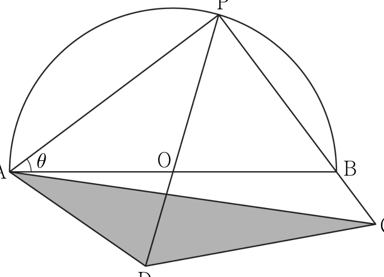
① \(\frac{63}{5}\)② \(\frac{127}{10}\)③ \(\frac{64}{5}\)④ \(\frac{129}{10}\)⑤ \(13\)
쌍둥이 1/5 · 4점 쌍둥이중심이 $O$이고 길이가 $13$인 선분 $AB$를 지름으로 하는 반원의 호 위에 점 $P$가 있습니다. 선분 $PB$의 연장선 위에 $\overline{PA}=\overline{PC}$인 점 $C$를 잡고, 선분 $PO$의 연장선 위에 $\overline{PA}=\overline{PD}$인 점 $D$를 잡습니다. $\angle PAB=\theta$에 대하여 $12\sin\theta=5\cos\theta$일 때, 삼각형 $ADC$의 넓이로 옳은 것을 고르세요.
① $\frac{287}{13}$② $\frac{288}{13}$③ $\frac{289}{13}$④ $\frac{290}{13}$⑤ $\frac{291}{13}$
쌍둥이 2/5 · 4점 쌍둥이중심이 $O$이고 길이가 $17$인 선분 $AB$를 지름으로 하는 반원의 호 위에 점 $P$가 있습니다. 선분 $PB$의 연장선 위에 $\overline{PA}=\overline{PC}$인 점 $C$를 잡고, 선분 $PO$의 연장선 위에 $\overline{PA}=\overline{PD}$인 점 $D$를 잡습니다. $\angle PAB=\theta$에 대하여 $15\sin\theta=8\cos\theta$일 때, 삼각형 $ADC$의 넓이로 옳은 것을 고르세요.
① $\frac{673}{17}$② $\frac{674}{17}$③ $\frac{675}{17}$④ $\frac{676}{17}$⑤ $\frac{677}{17}$
쌍둥이 3/5 · 4점 쌍둥이중심이 $O$이고 길이가 $25$인 선분 $AB$를 지름으로 하는 반원의 호 위에 점 $P$가 있습니다. 선분 $PB$의 연장선 위에 $\overline{PA}=\overline{PC}$인 점 $C$를 잡고, 선분 $PO$의 연장선 위에 $\overline{PA}=\overline{PD}$인 점 $D$를 잡습니다. $\angle PAB=\theta$에 대하여 $24\sin\theta=7\cos\theta$일 때, 삼각형 $ADC$의 넓이로 옳은 것을 고르세요.
① $69$② $\frac{1726}{25}$③ $\frac{1727}{25}$④ $\frac{1728}{25}$⑤ $\frac{1729}{25}$
쌍둥이 4/5 · 4점 쌍둥이길이 26인 선분 AB를 지름으로 하는 반원 위 P가 있고 ∠PAB=θ, $12\sinθ=5\cosθ$입니다. PB 연장선 위 C와 PO 연장선 위 D를 $PA=PC=PD$가 되게 잡을 때 △ADC의 넓이는?
① $\frac{1088}{13}$② $\frac{1120}{13}$③ $\frac{1152}{13}$④ $\frac{1184}{13}$⑤ $\frac{1216}{13}$
정답③ $\frac{1152}{13}$ sinθ=5/13, cosθ=12/13이므로 PA=24, PB=10이다. 원래 길이 13인 경우의 모든 길이가 2배가 된다. 삼각형 넓이는 길이 제곱에 비례하므로 원래 넓이 288/13의 4배이다. 따라서 넓이는 1152/13이다.
숫자: 원본 10 4 3 → 쌍둥이 26 12 5
쌍둥이 5/5 · 4점 쌍둥이길이 39인 선분 AB를 지름으로 하는 반원 위 P가 있고 같은 각 조건에서 PA=PC=PD로 둡니다. 삼각형 ADC의 넓이는?
① $\frac{2496}{13}$② $\frac{2544}{13}$③ $\frac{2592}{13}$④ $\frac{2640}{13}$⑤ $\frac{2688}{13}$
정답③ $\frac{2592}{13}$ 원래 지름 13인 구성에 비해 길이 배율은 3이다. 넓이는 길이 배율의 제곱만큼 커지므로 9·288/13=2592/13이다.
원본 (내부용)그림과 같이 \(\overline{AB}=3,\ \overline{AC}=4\)인 예각삼각형 \(ABC\)가 있다. 점 \(B\)에서 변 \(AC\)에 내린 수선의 발을 \(D\), 점 \(C\)에서 변 \(AB\)에 내린 수선의 발을 \(E\)라 하고, 두 선분 \(BD,\ CE\)의 교점을 \(P\)라 하자. 삼각형 \(ABC\)의 외접원의 넓이와 삼각형 \(ADE\)의 외접원의 넓이의 차가 \(4\pi\)일 때, 삼각형 \(PDE\)의 외접원의 넓이는 \(a\pi\)이다. \(55a\)의 값을 구하시오. (단, \(a\)는 상수이다.) [4점]
원본 정답 36
원본 풀이 (내부용)[출제의도] 사인법칙과 코사인법칙을 활용하여 문제 해결하기
\(
\angle BAC=\theta\quad\left(0<\theta<\frac{\pi}{2}\right)\text{라 하면}
\)
삼각형 \(ABC\)에서 코사인법칙에 의하여
\(
\overline{BC}^{\,2}
=3^2+4^2-2\times3\times4\cos\theta
=25-24\cos\theta
\)
\(
\overline{BC}=\sqrt{25-24\cos\theta}
\)
삼각형 \(ABC\)의 외접원의 반지름의 길이를 \(R_1\)이라 하면 사인법칙에 의하여
\(
\frac{\overline{BC}}{\sin\theta}=2R_1,\quad
R_1=\frac{\sqrt{25-24\cos\theta}}{2\sin\theta}
\)
직각삼각형 \(ABD\)에서
\(
\overline{AD}=\overline{AB}\cos\theta=3\cos\theta
\)
직각삼각형 \(ACE\)에서
\(
\overline{AE}=\overline{AC}\cos\theta=4\cos\theta
\)
삼각형 \(ADE\)에서 코사인법칙에 의하여
\(
\begin{aligned}
\overline{DE}^{\,2}
&=(3\cos\theta)^2+(4\cos\theta)^2
-2\times3\cos\theta\times4\cos\theta\times\cos\theta\\
&=25\cos^2\theta-24\cos^3\theta\\
&=\cos^2\theta(25-24\cos\theta)
\end{aligned}
\)
\(
\overline{DE}=\cos\theta\sqrt{25-24\cos\theta}
\)
삼각형 \(ADE\)의 외접원의 반지름의 길이를 \(R_2\)라 하면 사인법칙에 의하여
\(
\frac{\overline{DE}}{\sin\theta}=2R_2,\quad
R_2=\frac{\cos\theta\sqrt{25-24\cos\theta}}{2\sin\theta}
\)
삼각형 \(ABC\)의 외접원의 넓이와 삼각형 \(ADE\)의 외접원의 넓이의 차가 \(4\pi\)이므로
\(
\begin{aligned}
4\pi
&=\pi R_1^2-\pi R_2^2\\
&=\pi\times\frac{(1-\cos^2\theta)(25-24\cos\theta)}{4\sin^2\theta}\\
&=\pi\times\frac{25-24\cos\theta}{4}
\end{aligned}
\)
\(
\cos\theta=\frac38,\quad
\sin\theta=\sqrt{1-\cos^2\theta}=\frac{\sqrt{55}}8
\)
사각형 \(AEPD\)에서 \(\angle AEP=\angle ADP=\frac{\pi}{2}\)이므로 네 점 \(A,E,P,D\)는 선분 \(AP\)를 지름으로 하는 한 원 위에 있고 삼각형 \(PDE\)의 외접원은 삼각형 \(ADE\)의 외접원과 일치한다.
삼각형 \(PDE\)의 외접원의 넓이는 \(\pi R_2^2\)
\(
R_2=
\frac{\frac38\times\sqrt{25-24\times\frac38}}
{2\times\frac{\sqrt{55}}8}
=\frac6{\sqrt{55}}
\)
\(
\pi R_2^2=\pi\left(\frac6{\sqrt{55}}\right)^2=\frac{36}{55}\pi
\)
따라서 \(a=\frac{36}{55},\quad 55a=36\)
[참고]
두 삼각형 \(ABC,\ ADE\)는 서로 닮음이고 닮음비가 \(1:\cos\theta\)이므로
\(
\overline{DE}=\overline{BC}\times\cos\theta,\quad R_2=R_1\times\cos\theta
\)
---
쌍둥이 1/5 · 4점 쌍둥이$\overline{AB}=4$, $\overline{AC}=5$인 예각삼각형 $ABC$가 있습니다. 점 $B$에서 변 $AC$에 내린 수선의 발을 $D$, 점 $C$에서 변 $AB$에 내린 수선의 발을 $E$라 하고, 두 선분 $BD$, $CE$의 교점을 $P$라 합니다. 삼각형 $ABC$의 외접원의 넓이와 삼각형 $ADE$의 외접원의 넓이의 차가 $4\pi$일 때, 삼각형 $PDE$의 외접원의 넓이는 $a\pi$입니다. $39a$의 값을 구하세요. (단, $a$는 상수입니다.)
정답$100$ $\angle ADP=\angle AEP=\frac{\pi}{2}$이므로 네 점 $A$, $D$, $P$, $E$는 $\overline{AP}$를 지름으로 하는 한 원 위에 있고, 이 원이 두 삼각형 $ADE$, $PDE$의 외접원입니다. 삼각형 $ADE$와 $ABC$는 닮음비가 $\cos A$인 닮은 도형이므로 삼각형 $ABC$의 외접원의 반지름을 $R$라 하면 삼각형 $ADE$의 외접원의 반지름은 $R\cos A$ $\pi R^{2}-\pi R^{2}\cos^{2}A=\pi R^{2}\sin^{2}A=4\pi$이므로 $R\sin A=2$, 사인법칙에서 $\overline{BC}=2R\sin A=4$ $\cos A=\frac{25+16-16}{2\times5\times4}=\frac{5}{8}$, $\sin A=\frac{\sqrt{39}}{8}$, $R=\frac{4}{2\sin A}=\frac{16\sqrt{39}}{39}$ $a=R^{2}\cos^{2}A=\frac{100}{39}$이므로 $39a=100$
숫자: 원본 3 4 4 55 → 쌍둥이 4 5 4 39 · 같은 수: 4
쌍둥이 2/5 · 4점 쌍둥이$\overline{AB}=5$, $\overline{AC}=6$인 예각삼각형 $ABC$가 있습니다. 점 $B$에서 변 $AC$에 내린 수선의 발을 $D$, 점 $C$에서 변 $AB$에 내린 수선의 발을 $E$라 하고, 두 선분 $BD$, $CE$의 교점을 $P$라 합니다. 삼각형 $ABC$의 외접원의 넓이와 삼각형 $ADE$의 외접원의 넓이의 차가 $9\pi$일 때, 삼각형 $PDE$의 외접원의 넓이는 $a\pi$입니다. $119a$의 값을 구하세요. (단, $a$는 상수입니다.)
정답$225$ $\angle ADP=\angle AEP=\frac{\pi}{2}$이므로 네 점 $A$, $D$, $P$, $E$는 $\overline{AP}$를 지름으로 하는 한 원 위에 있고, 이 원이 두 삼각형 $ADE$, $PDE$의 외접원입니다. 삼각형 $ADE$와 $ABC$는 닮음비가 $\cos A$인 닮은 도형이므로 삼각형 $ABC$의 외접원의 반지름을 $R$라 하면 삼각형 $ADE$의 외접원의 반지름은 $R\cos A$ $\pi R^{2}-\pi R^{2}\cos^{2}A=\pi R^{2}\sin^{2}A=9\pi$이므로 $R\sin A=3$, 사인법칙에서 $\overline{BC}=2R\sin A=6$ $\cos A=\frac{36+25-36}{2\times6\times5}=\frac{5}{12}$, $\sin A=\frac{\sqrt{119}}{12}$, $R=\frac{6}{2\sin A}=\frac{36\sqrt{119}}{119}$ $a=R^{2}\cos^{2}A=\frac{225}{119}$이므로 $119a=225$
숫자: 원본 3 4 4 55 → 쌍둥이 5 6 9 119
쌍둥이 3/5 · 4점 쌍둥이$\overline{AB}=5$, $\overline{AC}=5$인 예각삼각형 $ABC$가 있습니다. 점 $B$에서 변 $AC$에 내린 수선의 발을 $D$, 점 $C$에서 변 $AB$에 내린 수선의 발을 $E$라 하고, 두 선분 $BD$, $CE$의 교점을 $P$라 합니다. 삼각형 $ABC$의 외접원의 넓이와 삼각형 $ADE$의 외접원의 넓이의 차가 $9\pi$일 때, 삼각형 $PDE$의 외접원의 넓이는 $a\pi$입니다. $64a$의 값을 구하세요. (단, $a$는 상수입니다.)
정답$49$ $\angle ADP=\angle AEP=\frac{\pi}{2}$이므로 네 점 $A$, $D$, $P$, $E$는 $\overline{AP}$를 지름으로 하는 한 원 위에 있고, 이 원이 두 삼각형 $ADE$, $PDE$의 외접원입니다. 삼각형 $ADE$와 $ABC$는 닮음비가 $\cos A$인 닮은 도형이므로 삼각형 $ABC$의 외접원의 반지름을 $R$라 하면 삼각형 $ADE$의 외접원의 반지름은 $R\cos A$ $\pi R^{2}-\pi R^{2}\cos^{2}A=\pi R^{2}\sin^{2}A=9\pi$이므로 $R\sin A=3$, 사인법칙에서 $\overline{BC}=2R\sin A=6$ $\cos A=\frac{25+25-36}{2\times5\times5}=\frac{7}{25}$, $\sin A=\frac{24}{25}$, $R=\frac{6}{2\sin A}=\frac{25}{8}$ $a=R^{2}\cos^{2}A=\frac{49}{64}$이므로 $64a=49$
숫자: 원본 3 4 4 55 → 쌍둥이 5 5 9 64
쌍둥이 4/5 · 4점 쌍둥이예각삼각형 ABC에서 AB=5, AC=7입니다. B,C에서 각각 AC,AB에 내린 수선의 발을 D,E, 두 수선의 교점을 P라 합니다. △ABC와 △ADE 외접원 넓이 차가 9π이고 △PDE 외접원 넓이는 aπ일 때 96a는?
① $353$② $357$③ $361$④ $365$⑤ $369$
정답③ $361$ △ADE는 △ABC와 닮음비 cosA이다. 외접반지름을 R라 하면 넓이 차 πR²sin²A=π(BC/2)²=9π이므로 BC=6이다. cosA=(25+49−36)/(2·5·7)=19/35, sin²A=864/1225이다. R=BC/(2sinA)=3/sinA이다. △PDE의 외접반지름은 R cosA이므로 a=R²cos²A=9·361/864=361/96. 따라서 96a=361이다.
숫자: 원본 3 4 4 55 → 쌍둥이 5 7 9 96
쌍둥이 5/5 · 4점 쌍둥이예각삼각형 ABC에서 AB=3, AC=5입니다. 같은 수선의 발 D,E와 교점 P에 대해 △ABC와 △ADE 외접원 넓이 차가 4π이고 △PDE 외접원 넓이는 aπ일 때 4a는?
원본 (내부용)좌표평면 위의 점 \(P(4,-3)\)에 대하여 동경 \(OP\)가 나타내는 각의 크기를 \(\theta\)라 할 때, \(\sin\left(\frac{\pi}{2}+\theta\right)-\sin\theta\)의 값은? (단, \(O\)는 원점이고, \(x\)축의 양의 방향을 시초선으로 한다.) [3점]
① \(-1\)② \(-\frac{2}{5}\)③ \(\frac{1}{5}\)④ \(\frac{4}{5}\)⑤ \(\frac{7}{5}\)
생성기 숫자판 1/6 · G2M1-02b#5좌표평면 위의 점 $\mathrm{P}\left(-6,\ 8\right)$에 대하여 동경 $\mathrm{OP}$가 나타내는 각의 크기를 $\theta$라 할 때, $5\sin\left(\pi-\theta\right)$의 값으로 옳은 것을 고르세요. (단, $\mathrm{O}$는 원점이고, $x$축의 양의 방향을 시초선으로 합니다.)
생성기 숫자판 2/6 · G2M1-02b#5좌표평면 위의 점 $\mathrm{P}\left(12,\ 5\right)$에 대하여 동경 $\mathrm{OP}$가 나타내는 각의 크기를 $\theta$라 할 때, $\sin\left(\frac{3}{2}\pi+\theta\right)$의 값으로 옳은 것을 고르세요. (단, $\mathrm{O}$는 원점이고, $x$축의 양의 방향을 시초선으로 합니다.)
① $-1$② $-\frac{12}{13}$③ $-\frac{11}{13}$④ $-\frac{10}{13}$⑤ $-\frac{9}{13}$
생성기 숫자판 3/6 · G2M1-02b#5좌표평면 위의 점 $\mathrm{P}\left(-12,\ -5\right)$에 대하여 동경 $\mathrm{OP}$가 나타내는 각의 크기를 $\theta$라 할 때, $2\cos\left(\pi-\theta\right)+5\sin\left(\pi-\theta\right)$의 값으로 옳은 것을 고르세요. (단, $\mathrm{O}$는 원점이고, $x$축의 양의 방향을 시초선으로 합니다.)
① $-\frac{3}{13}$② $-\frac{2}{13}$③ $-\frac{1}{13}$④ $0$⑤ $\frac{1}{13}$
생성기 숫자판 4/6 · G2M1-02b#5좌표평면 위의 점 $\mathrm{P}\left(-6,\ -8\right)$에 대하여 동경 $\mathrm{OP}$가 나타내는 각의 크기를 $\theta$라 할 때, $2\sin\left(\frac{3}{2}\pi-\theta\right)+3\cos\left(\frac{\pi}{2}+\theta\right)$의 값으로 옳은 것을 고르세요. (단, $\mathrm{O}$는 원점이고, $x$축의 양의 방향을 시초선으로 합니다.)
① $\frac{14}{5}$② $3$③ $\frac{16}{5}$④ $\frac{17}{5}$⑤ $\frac{18}{5}$
생성기 숫자판 5/6 · G2M1-02b#5좌표평면 위의 점 $\mathrm{P}\left(-4,\ 3\right)$에 대하여 동경 $\mathrm{OP}$가 나타내는 각의 크기를 $\theta$라 할 때, $3\cos\left(\frac{\pi}{2}-\theta\right)-2\cos\left(\pi-\theta\right)$의 값으로 옳은 것을 고르세요. (단, $\mathrm{O}$는 원점이고, $x$축의 양의 방향을 시초선으로 합니다.)
① $\frac{1}{5}$② $\frac{3}{10}$③ $\frac{2}{5}$④ $\frac{1}{2}$⑤ $\frac{3}{5}$
생성기 숫자판 6/6 · G2M1-02b#5좌표평면 위의 점 $\mathrm{P}\left(-5,\ -12\right)$에 대하여 동경 $\mathrm{OP}$가 나타내는 각의 크기를 $\theta$라 할 때, $3\cos\left(\pi-\theta\right)-2\cos\left(\frac{\pi}{2}+\theta\right)$의 값으로 옳은 것을 고르세요. (단, $\mathrm{O}$는 원점이고, $x$축의 양의 방향을 시초선으로 합니다.)
① $-\frac{12}{13}$② $-\frac{11}{13}$③ $-\frac{10}{13}$④ $-\frac{9}{13}$⑤ $-\frac{8}{13}$
쌍둥이 1/5 · 4점 쌍둥이$0\le x<2\pi$에서 $x$에 대한 부등식 $\frac{a}{3}\cos x-a\sin^{2}x+a+1<0$의 해가 존재하도록 하는 자연수 $a$의 최솟값을 구하세요.
정답$37$ $c=\cos x$, $-1\le c\le1$: $F(c)=ac^2+\frac{a}{3}c+1=a(c+\frac16)^2+1-\frac{a}{36}$. $c=-\frac16$ is in $[-1,1]$ and $\min F=1-\frac{a}{36}$. $F(c)<0$ for some $c$ iff $a>36$. $a_{min}=37$.
쌍둥이 2/5 · 4점 쌍둥이$0\le x<2\pi$에서 $x$에 대한 부등식 $\frac{a}{3}\cos x-a\sin^{2}x+a+2<0$의 해가 존재하도록 하는 자연수 $a$의 최솟값을 구하세요.
정답$73$ $c=\cos x$, $-1\le c\le1$: $F(c)=ac^2+\frac{a}{3}c+2=a(c+\frac16)^2+2-\frac{a}{36}$. $c=-\frac16$ is in $[-1,1]$ and $\min F=2-\frac{a}{36}$. $F(c)<0$ for some $c$ iff $a>72$. $a_{min}=73$.
쌍둥이 3/5 · 4점 쌍둥이$0\le x<2\pi$에서 $x$에 대한 부등식 $\frac{a}{3}\cos x-a\sin^{2}x+a+3<0$의 해가 존재하도록 하는 자연수 $a$의 최솟값을 구하세요.
정답$109$ $c=\cos x$, $-1\le c\le1$: $F(c)=ac^2+\frac{a}{3}c+3=a(c+\frac16)^2+3-\frac{a}{36}$. $c=-\frac16$ is in $[-1,1]$ and $\min F=3-\frac{a}{36}$. $F(c)<0$ for some $c$ iff $a>108$. $a_{min}=109$.
쌍둥이 4/5 · 4점 쌍둥이$0\le x<2\pi$에서 부등식 $\frac{a}{3}\cos x-a\sin^{2}x+a+3<0$에서 $a=144$일 때, 해가 되는 $x$에 대하여 $\cos x$가 가질 수 있는 값의 범위를 구하세요.
① $(-\frac14,-\frac1{12})$② $[-\frac14,-\frac1{12})$③ $(-\frac14,-\frac1{12}]$④ $[-\frac14,-\frac1{12}]$⑤ $[-1,-\frac1{12})$
정답① $(-\frac14,-\frac1{12})$ $c=\cos x$, $F(c)=144c^2+48c+3=144(c+\frac16)^2-1$. $F(c)<0$ iff $(c+\frac16)^2<\frac1{144}$, so $-\frac14<c<-\frac1{12}$. $[-1,1]$ contains this interval, so the range is $(-\frac14,-\frac1{12})$.
원본 (내부용)삼각형 \(ABC\)가 다음 조건을 만족시킨다. \( \begin{cases} \text{(가)}\ \cos A=-\dfrac14\\ \text{(나)}\ \sin B+\sin C=\dfrac98 \end{cases} \) 삼각형 \(ABC\)의 넓이가 \(\sqrt{15}\)일 때, 삼각형 \(ABC\)의 외접원의 넓이는 \(\dfrac{q}{p}\pi\)이다. \(p+q\)의 값을 구하시오. (단, \(p\)와 \(q\)는 서로소인 자연수이다.) [4점]
원본 정답 71
원본 풀이 (내부용)[출제의도] 삼각함수를 활용하여 문제해결하기
삼각형 \(ABC\)에서 \(\overline{BC}=a,\;\overline{CA}=b,\;\overline{AB}=c\)라 하고 삼각형 \(ABC\)의 외접원의 반지름의 길이를 \(R\)라 하자.
삼각형 \(ABC\)에서 사인법칙에 의해
\(
a=2R\sin A,\quad b=2R\sin B,\quad c=2R\sin C
\)
조건 (가)에 의해
\(
\sin A=\sqrt{1-\left(-\frac14\right)^2}=\frac{\sqrt{15}}4
\)
이므로
\(
a=\frac{\sqrt{15}}2R\quad\cdots\text{㉠}
\)
조건 (나)에 의해
\(
b+c=2R(\sin B+\sin C)=2R\times\frac98=\frac94R\quad\cdots\text{㉡}
\)
삼각형 \(ABC\)의 넓이가 \(\sqrt{15}\)이므로
\(
\frac12bc\sin A=\frac12bc\times\frac{\sqrt{15}}4
=\sqrt{15}\text{에서 }bc=8\quad\cdots\text{㉢}
\)
삼각형 \(ABC\)에서 코사인법칙에 의해
\(
a^2=b^2+c^2-2bc\cos A
\)
\(
=b^2+c^2+\frac12bc
\)
\(
=(b+c)^2-\frac32bc
\)
㉠, ㉡, ㉢에 의해
\(
\left(\frac{\sqrt{15}}2R\right)^2
=\left(\frac94R\right)^2-\frac32\times8
\)
\(
R^2=\frac{64}{7}\text{이므로}
\)
삼각형 \(ABC\)의 외접원의 넓이는 \(\frac{64}{7}\pi\).
따라서 \(p=7,\;q=64\)이며 \(p+q=71\).
쌍둥이 1/5 · 4점 쌍둥이삼각형 $ABC$에서 $\cos A=\frac{7}{25}$, $\sin B+\sin C=\frac{6}{5}$이고 삼각형 $ABC$의 넓이가 $\frac{1236}{625}$일 때, 이 삼각형의 외접원의 반지름의 제곱 $R^2$의 값은?
① $1$② $2$③ $3$④ $4$⑤ $5$
정답② $2$ $D=\frac{|B-C|}{2}$라 하면 $\cos\frac A2=\frac45$이고, $\sin B+\sin C=2\cos\frac A2\cos D$이므로 $\cos D=\frac34$이다. $\sin B\sin C=\frac{\cos(B-C)-\cos(B+C)}2=\frac{\frac34+\frac7{25}}2=\frac{103}{200}$이다. 또한 $\sin A=\frac{24}{25}$이다. 넓이 공식 $K=2R^2\sin A\sin B\sin C$에 대입하면 $\frac{1236}{625}=2R^2\cdot\frac{24}{25}\cdot\frac{103}{200}$이므로 $R^2=2$이다.
숫자: 원본 14 98 15 → 쌍둥이 7 25 6 5 1236 625
쌍둥이 2/5 · 4점 쌍둥이삼각형 $ABC$가 다음 조건을 만족시킵니다. (가) $\cos A=\frac{1}{3}$ (나) $\sin B+\sin C=\frac{4}{3}$ 삼각형 $ABC$의 넓이가 $\sqrt{2}$일 때, 삼각형 $ABC$의 외접원의 넓이는 $\frac{q}{p}\pi$입니다. $p+q$의 값을 구하세요. (단, $p$와 $q$는 서로소인 자연수입니다.)
쌍둥이 3/5 · 4점 쌍둥이삼각형 $ABC$가 다음 조건을 만족시킵니다. (가) $\cos A=-\frac{1}{3}$ (나) $\sin B+\sin C=\frac{10}{9}$ 삼각형 $ABC$의 넓이가 $\frac{7 \sqrt{2}}{3}$일 때, 삼각형 $ABC$의 외접원의 넓이는 $\frac{q}{p}\pi$입니다. $p+q$의 값을 구하세요. (단, $p$와 $q$는 서로소인 자연수입니다.)
쌍둥이 4/5 · 4점 쌍둥이삼각형 $ABC$가 다음 조건을 만족시킵니다. (가) $\cos A=\frac{1}{4}$ (나) $\sin B+\sin C=\frac{3}{2}$ 삼각형 $ABC$의 넓이가 $\frac{3 \sqrt{15}}{4}$일 때, 삼각형 $ABC$의 외접원의 넓이는 $\frac{q}{p}\pi$입니다. $p+q$의 값을 구하세요. (단, $p$와 $q$는 서로소인 자연수입니다.)
원본 (내부용)\(0\)이 아닌 상수 \(a\)에 대하여 함수 \(y=a\sin\frac{x}{a}+2\)의 최댓값과 최솟값의 차가 \(4\)일 때, 이 함수의 주기는? [3점]
① \(\frac{\pi}{4}\)② \(\frac{\pi}{2}\)③ \(\pi\)④ \(2\pi\)⑤ \(4\pi\)
원본 정답 ⑤
원본 풀이 (내부용)이해 능력 – 삼각함수 정답 ⑤
\(
-1\leq \sin\frac{x}{a}\leq1
\)
이므로 함수 \(y=a\sin\frac{x}{a}+2\)의 최댓값은 \(|a|+2\), 최솟값은 \(-|a|+2\)이다. 주어진 조건에 의하여
\(
|a|+2-(-|a|+2)=4
\)
이므로 \(2|a|=4\), 즉 \(|a|=2\)이다.
따라서 함수 \(y=a\sin\frac{x}{a}+2\)의 주기는
\(
|a|\times2\pi=4\pi
\)
이다.
생성기 숫자판 1/5 · G2M1-02b#11$0$이 아닌 상수 $a$에 대하여 함수 $y=a\sin\frac{x}{a}+2$의 최댓값과 최솟값의 차가 $2$일 때, 이 함수의 주기로 옳은 것을 고르세요.
① $\frac{\pi}{4}$② $\frac{\pi}{2}$③ $\pi$④ $2\pi$⑤ $3\pi$
정답④ $2\pi$ 최댓값은 $\left|a\right|+2$, 최솟값은 $-\left|a\right|+2$이므로 차는 $2\left|a\right|=2$, $\left|a\right|=1$ 주기는 $\frac{2\pi}{\left|\frac{1}{a}\right|}=2\pi\left|a\right|=2\pi$
숫자: 원본 0 2 4 → 쌍둥이 0 2 2 · 같은 수: 0 2
생성기 숫자판 2/5 · G2M1-02b#11$0$이 아닌 상수 $a$에 대하여 함수 $y=a\sin\frac{x}{a}+1$의 최댓값과 최솟값의 차가 $6$일 때, 이 함수의 주기로 옳은 것을 고르세요.
① $2\pi$② $3\pi$③ $4\pi$④ $6\pi$⑤ $8\pi$
정답④ $6\pi$ 최댓값은 $\left|a\right|+1$, 최솟값은 $-\left|a\right|+1$이므로 차는 $2\left|a\right|=6$, $\left|a\right|=3$ 주기는 $\frac{2\pi}{\left|\frac{1}{a}\right|}=2\pi\left|a\right|=6\pi$
숫자: 원본 0 2 4 → 쌍둥이 0 1 6 · 같은 수: 0
생성기 숫자판 3/5 · G2M1-02b#11$0$이 아닌 상수 $a$에 대하여 함수 $y=a\sin\frac{x}{a}+4$의 최댓값과 최솟값의 차가 $4$일 때, 이 함수의 주기로 옳은 것을 고르세요.
① $\pi$② $2\pi$③ $3\pi$④ $4\pi$⑤ $6\pi$
정답④ $4\pi$ 최댓값은 $\left|a\right|+4$, 최솟값은 $-\left|a\right|+4$이므로 차는 $2\left|a\right|=4$, $\left|a\right|=2$ 주기는 $\frac{2\pi}{\left|\frac{1}{a}\right|}=2\pi\left|a\right|=4\pi$
숫자: 원본 0 2 4 → 쌍둥이 0 4 4 · 같은 수: 0 4
생성기 숫자판 4/5 · G2M1-02b#11$0$이 아닌 상수 $a$에 대하여 함수 $y=a\cos\frac{x}{a}+3$의 최댓값과 최솟값의 차가 $8$일 때, 이 함수의 주기로 옳은 것을 고르세요.
① $4\pi$② $6\pi$③ $8\pi$④ $10\pi$⑤ $12\pi$
정답③ $8\pi$ 최댓값은 $\left|a\right|+3$, 최솟값은 $-\left|a\right|+3$이므로 차는 $2\left|a\right|=8$, $\left|a\right|=4$ 주기는 $\frac{2\pi}{\left|\frac{1}{a}\right|}=2\pi\left|a\right|=8\pi$
숫자: 원본 0 2 4 → 쌍둥이 0 3 8 · 같은 수: 0
생성기 숫자판 5/5 · G2M1-02b#11$0$이 아닌 상수 $a$에 대하여 함수 $y=a\cos\frac{x}{a}+4$의 최댓값과 최솟값의 차가 $6$일 때, 이 함수의 주기로 옳은 것을 고르세요.
① $2\pi$② $3\pi$③ $4\pi$④ $6\pi$⑤ $8\pi$
정답④ $6\pi$ 최댓값은 $\left|a\right|+4$, 최솟값은 $-\left|a\right|+4$이므로 차는 $2\left|a\right|=6$, $\left|a\right|=3$ 주기는 $\frac{2\pi}{\left|\frac{1}{a}\right|}=2\pi\left|a\right|=6\pi$
숫자: 원본 0 2 4 → 쌍둥이 0 4 6 · 같은 수: 0 4
102. 2022년 5월 7번 · 3점 · 수학Ⅰ 삼각함수 · G2M10-03#4
원본 (내부용)\(\frac{\pi}{2}<\theta<\pi\)이고 \(|\tan\theta|=3\)일 때, \(\cos(\pi-\theta)\)의 값은? [3점]
① \(-\frac{2\sqrt2}{3}\)② \(-\frac{\sqrt{10}}{10}\)③ \(\frac{1}{10}\)④ \(\frac{\sqrt{10}}{10}\)⑤ \(\frac{2\sqrt2}{3}\)
원본 정답 ④
원본 풀이 (내부용)이해 능력 – 삼각함수 정답 ④
\(
\frac{\pi}{2}<\theta<\pi
\)
에서 \(\tan\theta<0\)이므로 \(|\tan\theta|=3\)에서
\(
\tan\theta=\frac{\sin\theta}{\cos\theta}=-3
\)
따라서 \(\sin\theta=-3\cos\theta\)이므로 양변을 제곱하면
\(
\sin^2\theta=9\cos^2\theta
\)
\(
1-\cos^2\theta=9\cos^2\theta
\)
따라서
\(
\cos^2\theta=\frac1{10}
\)
\(
\frac{\pi}{2}<\theta<\pi
\)
에서 \(\cos\theta<0\)이므로
\(
\cos\theta=-\frac1{\sqrt{10}}=-\frac{\sqrt{10}}{10}
\)
따라서
\(
\cos(\pi-\theta)=-\cos\theta=\frac{\sqrt{10}}{10}
\)
생성기 숫자판 1/6 · G2M10-03#4$\frac{\pi}{2}<\theta<\pi$이고 $\left|\tan\theta\right|=\frac{1}{2}$일 때, $\cos\left(\pi-\theta\right)$의 값으로 옳은 것을 고르세요.
① $-\frac{2\sqrt{5}}{5}$② $-\frac{\sqrt{5}}{5}$③ $\frac{\sqrt{5}}{5}$④ $\frac{4}{5}$⑤ $\frac{2\sqrt{5}}{5}$
원본 (내부용)실수 전체의 집합에서 정의된 함수 \( f(x)=-\sin^2x+6\sin x+1 \) 의 최댓값과 최솟값의 합은? [3점]
① \(-3\)② \(-\frac32\)③ \(0\)④ \(\frac32\)⑤ \(3\)
원본 정답 ③
원본 풀이 (내부용)이해 능력 – 삼각함수 정답 ③
\(
f(x)=-\sin^2x+6\sin x+1
\)
\(
=-(\sin x-3)^2+10
\)
이고 \(-1\leq\sin x\leq1\)이므로 함수 \(f(x)\)는 \(\sin x=-1\)일 때 최솟값 \(-16+10=-6\)을 갖고, \(\sin x=1\)일 때 최댓값 \(-4+10=6\)을 갖는다.
따라서 최솟값과 최댓값의 합은 0이다.
생성기 숫자판 1/6 · G2M1-02b#12실수 전체의 집합에서 정의된 함수 $f\left(x\right)=-\sin^{2}x+7\sin x-2$의 최댓값과 최솟값의 합으로 옳은 것을 고르세요.
① $-6$② $-5$③ $-4$④ $-3$⑤ $-2$
정답③ $-4$ $\sin x=t$라 하면 $-1\le t\le 1$이고 $f\left(x\right)=-t^{2}+7t-2$ $f\left(x\right)$의 도함수는 $-2t+7\ge 5>0$이므로 $t$가 커질수록 값이 커집니다. $t=1$일 때 최댓값은 $5$, $t=-1$일 때 최솟값은 $-9$ 따라서 합은 $5+\left(-9\right)=-4$
숫자: 원본 6 1 → 쌍둥이 7 2
생성기 숫자판 2/6 · G2M1-02b#12실수 전체의 집합에서 정의된 함수 $f\left(x\right)=-\sin^{2}x+5\sin x-3$의 최댓값과 최솟값의 합으로 옳은 것을 고르세요.
① $-8$② $-7$③ $-6$④ $-5$⑤ $-4$
정답③ $-6$ $\sin x=t$라 하면 $-1\le t\le 1$이고 $f\left(x\right)=-t^{2}+5t-3$ $f\left(x\right)$의 도함수는 $-2t+5\ge 3>0$이므로 $t$가 커질수록 값이 커집니다. $t=1$일 때 최댓값은 $2$, $t=-1$일 때 최솟값은 $-8$ 따라서 합은 $2+\left(-8\right)=-6$
숫자: 원본 6 1 → 쌍둥이 5 3
생성기 숫자판 3/6 · G2M1-02b#12실수 전체의 집합에서 정의된 함수 $f\left(x\right)=-\sin^{2}x+7\sin x+5$의 최댓값과 최솟값의 합으로 옳은 것을 고르세요.
① $8$② $9$③ $10$④ $11$⑤ $12$
정답③ $10$ $\sin x=t$라 하면 $-1\le t\le 1$이고 $f\left(x\right)=-t^{2}+7t5$ $f\left(x\right)$의 도함수는 $-2t+7\ge 5>0$이므로 $t$가 커질수록 값이 커집니다. $t=1$일 때 최댓값은 $12$, $t=-1$일 때 최솟값은 $-2$ 따라서 합은 $12+\left(-2\right)=10$
숫자: 원본 6 1 → 쌍둥이 7 5
생성기 숫자판 4/6 · G2M1-02b#12실수 전체의 집합에서 정의된 함수 $f\left(x\right)=-\sin^{2}x+5\sin x+4$의 최댓값과 최솟값의 합으로 옳은 것을 고르세요.
① $6$② $7$③ $8$④ $9$⑤ $10$
정답③ $8$ $\sin x=t$라 하면 $-1\le t\le 1$이고 $f\left(x\right)=-t^{2}+5t4$ $f\left(x\right)$의 도함수는 $-2t+5\ge 3>0$이므로 $t$가 커질수록 값이 커집니다. $t=1$일 때 최댓값은 $9$, $t=-1$일 때 최솟값은 $-1$ 따라서 합은 $9+\left(-1\right)=8$
숫자: 원본 6 1 → 쌍둥이 5 4
생성기 숫자판 5/6 · G2M1-02b#12실수 전체의 집합에서 정의된 함수 $f\left(x\right)=-\sin^{2}x+4\sin x+3$의 최댓값과 최솟값의 합으로 옳은 것을 고르세요.
① $4$② $5$③ $6$④ $7$⑤ $8$
정답③ $6$ $\sin x=t$라 하면 $-1\le t\le 1$이고 $f\left(x\right)=-t^{2}+4t3$ $f\left(x\right)$의 도함수는 $-2t+4\ge 2>0$이므로 $t$가 커질수록 값이 커집니다. $t=1$일 때 최댓값은 $7$, $t=-1$일 때 최솟값은 $-1$ 따라서 합은 $7+\left(-1\right)=6$
숫자: 원본 6 1 → 쌍둥이 4 3
생성기 숫자판 6/6 · G2M1-02b#12실수 전체의 집합에서 정의된 함수 $f\left(x\right)=-\sin^{2}x+4\sin x-4$의 최댓값과 최솟값의 합으로 옳은 것을 고르세요.
① $-10$② $-9$③ $-8$④ $-7$⑤ $-6$
정답③ $-8$ $\sin x=t$라 하면 $-1\le t\le 1$이고 $f\left(x\right)=-t^{2}+4t-4$ $f\left(x\right)$의 도함수는 $-2t+4\ge 2>0$이므로 $t$가 커질수록 값이 커집니다. $t=1$일 때 최댓값은 $0$, $t=-1$일 때 최솟값은 $-8$ 따라서 합은 $0+\left(-8\right)=-8$
숫자: 원본 6 1 → 쌍둥이 4 4
104. 2022년 5월 9번 · 3점 · 수학Ⅰ 삼각함수 · G2M8-05#0
원본 (내부용)\(0\le x<10\)일 때, 방정식 \( \sin\frac{\pi}{5}x=\sqrt3\cos\frac{\pi}{5}x \) 의 모든 실근의 합은? [3점]
① \(\frac{23}{3}\)② \(8\)③ \(\frac{25}{3}\)④ \(\frac{26}{3}\)⑤ \(9\)
원본 정답 ③
원본 풀이 (내부용)이해 능력 – 삼각함수 정답 ③
방정식
\(
\sin\frac{\pi}{5}x=\sqrt3\cos\frac{\pi}{5}x
\)
에서 \(\cos\frac{\pi}{5}x=0\)이면 \(\sin\frac{\pi}{5}x=\pm1\)이므로 등식이 성립하지 않는다.
따라서 이 등식의 양변을 \(\cos\frac{\pi}{5}x\)로 나누면
\(
\tan\frac{\pi}{5}x=\sqrt3 \qquad \cdots\text{①}
\)
\(0\leq x<10\)일 때 \(0\leq\frac{\pi}{5}x<2\pi\)이므로 ①에서
\(
\frac{\pi}{5}x=\frac{\pi}{3},\ \frac{4\pi}{3}
\)
즉,
\(
x=\frac53,\ \frac{20}{3}
\)
이다.
따라서 모든 실근의 합은
\(
\frac53+\frac{20}{3}=\frac{25}{3}
\)
이다.
생성기 숫자판 1/6 · G2M8-05#0$0\le x<4$일 때, 방정식 $\sin\frac{\pi}{2}x=\sqrt{3}\cos\frac{\pi}{2}x$의 모든 실근의 합으로 옳은 것을 고르세요.
① $\frac{10}{3}$② $\frac{11}{3}$③ $4$④ $\frac{13}{3}$⑤ $\frac{14}{3}$
정답① $\frac{10}{3}$ $\cos\frac{\pi}{2}x=0$이면 $\sin\frac{\pi}{2}x=\pm1$이 되어 등식이 성립하지 않으므로 양변을 $\cos\frac{\pi}{2}x$로 나누면 $\tan\frac{\pi}{2}x=\sqrt{3}$ $0\le x<4$에서 $0\le\frac{\pi}{2}x<2\pi$이므로 $\frac{\pi}{2}x=\frac{\pi}{3},\ \frac{4}{3}\pi$ $x=\frac{2}{3},\ \frac{8}{3}$ 따라서 모든 실근의 합은 $\frac{2}{3}+\frac{8}{3}=\frac{10}{3}$
숫자: 원본 0 10 5 3 5 → 쌍둥이 0 4 2 3 2 · 같은 수: 0 3
생성기 숫자판 2/6 · G2M8-05#0$0\le x<12$일 때, 방정식 $\sin\frac{\pi}{4}x=\cos\frac{\pi}{4}x$의 모든 실근의 합으로 옳은 것을 고르세요.
① $15$② $16$③ $17$④ $18$⑤ $19$
정답① $15$ $\cos\frac{\pi}{4}x=0$이면 $\sin\frac{\pi}{4}x=\pm1$이 되어 등식이 성립하지 않으므로 양변을 $\cos\frac{\pi}{4}x$로 나누면 $\tan\frac{\pi}{4}x=1$ $0\le x<12$에서 $0\le\frac{\pi}{4}x<3\pi$이므로 $\frac{\pi}{4}x=\frac{\pi}{4},\ \frac{5}{4}\pi,\ \frac{9}{4}\pi$ $x=1,\ 5,\ 9$ 따라서 모든 실근의 합은 $1+5+9=15$
숫자: 원본 0 10 5 3 5 → 쌍둥이 0 12 4 4 · 같은 수: 0
생성기 숫자판 3/6 · G2M8-05#0$0\le x<18$일 때, 방정식 $\sin\frac{\pi}{6}x=\cos\frac{\pi}{6}x$의 모든 실근의 합으로 옳은 것을 고르세요.
① $22$② $\frac{45}{2}$③ $23$④ $\frac{47}{2}$⑤ $24$
정답② $\frac{45}{2}$ $\cos\frac{\pi}{6}x=0$이면 $\sin\frac{\pi}{6}x=\pm1$이 되어 등식이 성립하지 않으므로 양변을 $\cos\frac{\pi}{6}x$로 나누면 $\tan\frac{\pi}{6}x=1$ $0\le x<18$에서 $0\le\frac{\pi}{6}x<3\pi$이므로 $\frac{\pi}{6}x=\frac{\pi}{4},\ \frac{5}{4}\pi,\ \frac{9}{4}\pi$ $x=\frac{3}{2},\ \frac{15}{2},\ \frac{27}{2}$ 따라서 모든 실근의 합은 $\frac{3}{2}+\frac{15}{2}+\frac{27}{2}=\frac{45}{2}$
숫자: 원본 0 10 5 3 5 → 쌍둥이 0 18 6 6 · 같은 수: 0
생성기 숫자판 4/6 · G2M8-05#0$0\le x<12$일 때, 방정식 $\sin\frac{\pi}{6}x=\cos\frac{\pi}{6}x$의 모든 실근의 합으로 옳은 것을 고르세요.
① $5$② $6$③ $7$④ $8$⑤ $9$
정답⑤ $9$ $\cos\frac{\pi}{6}x=0$이면 $\sin\frac{\pi}{6}x=\pm1$이 되어 등식이 성립하지 않으므로 양변을 $\cos\frac{\pi}{6}x$로 나누면 $\tan\frac{\pi}{6}x=1$ $0\le x<12$에서 $0\le\frac{\pi}{6}x<2\pi$이므로 $\frac{\pi}{6}x=\frac{\pi}{4},\ \frac{5}{4}\pi$ $x=\frac{3}{2},\ \frac{15}{2}$ 따라서 모든 실근의 합은 $\frac{3}{2}+\frac{15}{2}=9$
숫자: 원본 0 10 5 3 5 → 쌍둥이 0 12 6 6 · 같은 수: 0
생성기 숫자판 5/6 · G2M8-05#0$0\le x<15$일 때, 방정식 $\sin\frac{\pi}{5}x=\sqrt{3}\cos\frac{\pi}{5}x$의 모든 실근의 합으로 옳은 것을 고르세요.
① $16$② $17$③ $18$④ $19$⑤ $20$
정답⑤ $20$ $\cos\frac{\pi}{5}x=0$이면 $\sin\frac{\pi}{5}x=\pm1$이 되어 등식이 성립하지 않으므로 양변을 $\cos\frac{\pi}{5}x$로 나누면 $\tan\frac{\pi}{5}x=\sqrt{3}$ $0\le x<15$에서 $0\le\frac{\pi}{5}x<3\pi$이므로 $\frac{\pi}{5}x=\frac{\pi}{3},\ \frac{4}{3}\pi,\ \frac{7}{3}\pi$ $x=\frac{5}{3},\ \frac{20}{3},\ \frac{35}{3}$ 따라서 모든 실근의 합은 $\frac{5}{3}+\frac{20}{3}+\frac{35}{3}=20$
숫자: 원본 0 10 5 3 5 → 쌍둥이 0 15 5 3 5 · 같은 수: 0 3 5
생성기 숫자판 6/6 · G2M8-05#0$0\le x<9$일 때, 방정식 $\sin\frac{\pi}{3}x=\cos\frac{\pi}{3}x$의 모든 실근의 합으로 옳은 것을 고르세요.
① $11$② $\frac{45}{4}$③ $\frac{23}{2}$④ $\frac{47}{4}$⑤ $12$
정답② $\frac{45}{4}$ $\cos\frac{\pi}{3}x=0$이면 $\sin\frac{\pi}{3}x=\pm1$이 되어 등식이 성립하지 않으므로 양변을 $\cos\frac{\pi}{3}x$로 나누면 $\tan\frac{\pi}{3}x=1$ $0\le x<9$에서 $0\le\frac{\pi}{3}x<3\pi$이므로 $\frac{\pi}{3}x=\frac{\pi}{4},\ \frac{5}{4}\pi,\ \frac{9}{4}\pi$ $x=\frac{3}{4},\ \frac{15}{4},\ \frac{27}{4}$ 따라서 모든 실근의 합은 $\frac{3}{4}+\frac{15}{4}+\frac{27}{4}=\frac{45}{4}$
숫자: 원본 0 10 5 3 5 → 쌍둥이 0 9 3 3 · 같은 수: 0 3
105. 2022년 5월 12번 · 3점 · 수학Ⅰ 삼각함수 · G2M10-03#5
원본 (내부용)일정한 속력으로 회전하는 물레방아가 있다. 이 물레방아의 어느 한 지점 \(P\)의 시간 \(t\)(초)에서의 지면으로부터의 높이를 \(h(t)\)라 하면 관계식 \( h(t)=2-a\sin bt\quad(a,\ b\text{는 양의 상수}) \) 가 성립한다고 한다. 지점 \(P\)의 지면으로부터의 높이의 최솟값이 \(\frac15\)이고 이 물레방아가 한 번 회전하는 데 걸리는 시간이 \(6\)초일 때, \(ab\)의 값은? (단, 높이의 단위는 m이다.) [3점]
① \(\frac{\pi}{2}\)② \(\frac35\pi\)③ \(\frac7{10}\pi\)④ \(\frac45\pi\)⑤ \(\frac9{10}\pi\)
원본 정답 ②
원본 풀이 (내부용)문제해결 능력 – 삼각함수 정답 ②
지점 \(P\)의 지면으로부터의 높이의 최솟값이 \(\frac15\)이므로 함수 \(h(t)=2-a\sin bt\)의 최솟값은 \(\frac15\)이다.
또한 이 물레방아가 한 번 회전하는 데 걸리는 시간은 6초이므로 함수 \(h(t)=2-a\sin bt\)의 주기는 6이다.
한편, \(a>0,\ b>0\)이므로 함수 \(h(t)=2-a\sin bt\)의 최솟값은 \(2-a\)이고 주기는 \(\frac{2\pi}{b}\)이다.
따라서 \(2-a=\frac15\)에서
\(
a=2-\frac15=\frac95
\)
이고,
\(
\frac{2\pi}{b}=6
\)
에서
\(
b=\frac{2\pi}{6}=\frac{\pi}{3}
\)
이므로
\(
ab=\frac95\times\frac{\pi}{3}=\frac35\pi
\)
생성기 숫자판 1/6 · G2M10-03#5일정한 속력으로 회전하는 물레방아가 있습니다. 이 물레방아의 어느 한 지점 $\mathrm{P}$의 시간 $t$(초)에서의 지면으로부터의 높이를 $h\left(t\right)$라 하면 관계식 $h\left(t\right)=8-a\sin bt$ ($a$, $b$는 양의 상수)가 성립한다고 합니다. 지점 $\mathrm{P}$의 지면으로부터의 높이의 최솟값이 $\frac{1}{8}$이고 이 물레방아가 한 번 회전하는 데 걸리는 시간이 $9$초일 때, $ab$의 값으로 옳은 것을 고르세요. (단, 높이의 단위는 $\mathrm{m}$입니다.)
① $\frac{31}{20}\pi$② $\frac{7}{4}\pi$③ $\frac{39}{20}\pi$④ $\frac{43}{20}\pi$⑤ $\frac{9}{4}\pi$
생성기 숫자판 2/6 · G2M10-03#5일정한 속력으로 회전하는 물레방아가 있습니다. 이 물레방아의 어느 한 지점 $\mathrm{P}$의 시간 $t$(초)에서의 지면으로부터의 높이를 $h\left(t\right)$라 하면 관계식 $h\left(t\right)=4-a\sin bt$ ($a$, $b$는 양의 상수)가 성립한다고 합니다. 지점 $\mathrm{P}$의 지면으로부터의 높이의 최솟값이 $\frac{1}{4}$이고 이 물레방아가 한 번 회전하는 데 걸리는 시간이 $7$초일 때, $ab$의 값으로 옳은 것을 고르세요. (단, 높이의 단위는 $\mathrm{m}$입니다.)
① $\frac{61}{70}\pi$② $\frac{15}{14}\pi$③ $\frac{89}{70}\pi$④ $\frac{103}{70}\pi$⑤ $\frac{11}{7}\pi$
생성기 숫자판 3/6 · G2M10-03#5일정한 속력으로 회전하는 물레방아가 있습니다. 이 물레방아의 어느 한 지점 $\mathrm{P}$의 시간 $t$(초)에서의 지면으로부터의 높이를 $h\left(t\right)$라 하면 관계식 $h\left(t\right)=3-a\sin bt$ ($a$, $b$는 양의 상수)가 성립한다고 합니다. 지점 $\mathrm{P}$의 지면으로부터의 높이의 최솟값이 $\frac{1}{3}$이고 이 물레방아가 한 번 회전하는 데 걸리는 시간이 $4$초일 때, $ab$의 값으로 옳은 것을 고르세요. (단, 높이의 단위는 $\mathrm{m}$입니다.)
① $\frac{17}{15}\pi$② $\frac{4}{3}\pi$③ $\frac{23}{15}\pi$④ $\frac{26}{15}\pi$⑤ $\frac{11}{6}\pi$
생성기 숫자판 4/6 · G2M10-03#5일정한 속력으로 회전하는 물레방아가 있습니다. 이 물레방아의 어느 한 지점 $\mathrm{P}$의 시간 $t$(초)에서의 지면으로부터의 높이를 $h\left(t\right)$라 하면 관계식 $h\left(t\right)=4-a\sin bt$ ($a$, $b$는 양의 상수)가 성립한다고 합니다. 지점 $\mathrm{P}$의 지면으로부터의 높이의 최솟값이 $\frac{1}{4}$이고 이 물레방아가 한 번 회전하는 데 걸리는 시간이 $15$초일 때, $ab$의 값으로 옳은 것을 고르세요. (단, 높이의 단위는 $\mathrm{m}$입니다.)
① $\frac{3}{10}\pi$② $\frac{1}{2}\pi$③ $\frac{7}{10}\pi$④ $\frac{9}{10}\pi$⑤ $1\pi$
생성기 숫자판 5/6 · G2M10-03#5일정한 속력으로 회전하는 물레방아가 있습니다. 이 물레방아의 어느 한 지점 $\mathrm{P}$의 시간 $t$(초)에서의 지면으로부터의 높이를 $h\left(t\right)$라 하면 관계식 $h\left(t\right)=4-a\sin bt$ ($a$, $b$는 양의 상수)가 성립한다고 합니다. 지점 $\mathrm{P}$의 지면으로부터의 높이의 최솟값이 $\frac{1}{4}$이고 이 물레방아가 한 번 회전하는 데 걸리는 시간이 $11$초일 때, $ab$의 값으로 옳은 것을 고르세요. (단, 높이의 단위는 $\mathrm{m}$입니다.)
① $\frac{53}{110}\pi$② $\frac{15}{22}\pi$③ $\frac{97}{110}\pi$④ $\frac{119}{110}\pi$⑤ $\frac{13}{11}\pi$
생성기 숫자판 6/6 · G2M10-03#5일정한 속력으로 회전하는 물레방아가 있습니다. 이 물레방아의 어느 한 지점 $\mathrm{P}$의 시간 $t$(초)에서의 지면으로부터의 높이를 $h\left(t\right)$라 하면 관계식 $h\left(t\right)=3-a\sin bt$ ($a$, $b$는 양의 상수)가 성립한다고 합니다. 지점 $\mathrm{P}$의 지면으로부터의 높이의 최솟값이 $\frac{1}{3}$이고 이 물레방아가 한 번 회전하는 데 걸리는 시간이 $10$초일 때, $ab$의 값으로 옳은 것을 고르세요. (단, 높이의 단위는 $\mathrm{m}$입니다.)
① $\frac{1}{3}\pi$② $\frac{8}{15}\pi$③ $\frac{11}{15}\pi$④ $\frac{14}{15}\pi$⑤ $\frac{31}{30}\pi$
106. 2022년 5월 13번 · 3점 · 수학Ⅰ 삼각함수 · 4점 쌍둥이 수정됨 — 다시 확인해 주세요 (지난 사유: 답안 숫자가 너무크다)
원본 (내부용)그림과 같이 \(\angle BAC=90^\circ,\ \overline{BC}=3,\ \overline{AC}=1\)인 직각삼각형 \(ABC\)가 있다. 선분 \(BC\)를 \(1:2\)로 내분하는 점을 \(D\)라 할 때, 선분 \(AD\)의 길이는? [3점]
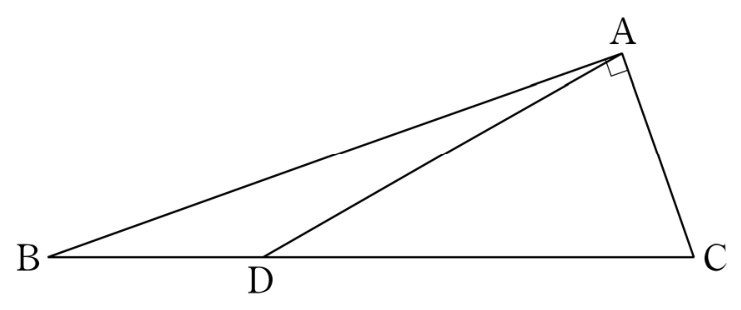
① \(\frac{\sqrt{30}}{3}\)② \(\frac{\sqrt{33}}{3}\)③ \(2\)④ \(\frac{\sqrt{39}}{3}\)⑤ \(\frac{\sqrt{42}}{3}\)
그림·참고 그림 설명(13번): 직각삼각형 \(ABC\)에서 직각은 \(A\)에 있고, \(B\)와 \(C\)는 밑변 \(\overline{BC}\)의 양 끝점이다. \(D\)는 \(\overline{BC}\) 위에 있으며, 선분 \(\overline{AD}\)가 그려져 있다. \(\overline{BC}=3,\ \overline{AC}=1\).
원본 정답 ②
원본 풀이 (내부용)이해 능력 – 삼각함수 정답 ②
직각삼각형 \(ABC\)에서
\(
\cos(\angle ACB)=\frac13
\)
점 \(D\)는 선분 \(BC\)를 \(1:2\)로 내분하는 점이므로
\(
\overline{CD}=\frac23\overline{BC}=2
\)
삼각형 \(ADC\)에서 코사인법칙에 의하여
\(
\overline{AD}^{\,2}
=1^2+2^2-2\times1\times2\times\cos(\angle ACB)
\)
\(
=5-\frac43=\frac{11}{3}
\)
\(
\therefore\ \overline{AD}=\sqrt{\frac{11}{3}}=\frac{\sqrt{33}}{3}
\)
**원본 PDF 페이지 번호: 9**
## 교사/정답 자료 — 풀이
쌍둥이 1/5 · 4점 쌍둥이그림과 같이 $\angle \mathrm{BAC}=90^{\circ}$, $\overline{\mathrm{BC}}=8$, $\overline{\mathrm{AC}}=6$인 직각삼각형 $\mathrm{ABC}$가 있습니다. 선분 $\mathrm{BC}$를 $1:3$으로 내분하는 점을 $\mathrm{D}$라 할 때, 선분 $\mathrm{AD}$의 길이로 옳은 것을 고르세요.
① $\sqrt{17}$② $\frac{\sqrt{69}}{2}$③ $\frac{\sqrt{70}}{2}$④ $\frac{\sqrt{71}}{2}$⑤ $3 \sqrt{2}$
정답⑤ $3 \sqrt{2}$ $\overline{\mathrm{AB}}=\sqrt{8^{2}-6^{2}}=2 \sqrt{7}$ 점 $\mathrm{A}$를 원점, 직선 $\mathrm{AC}$를 $x$축, 직선 $\mathrm{AB}$를 $y$축으로 하면 $\mathrm{C}\left(6,\ 0\right)$, $\mathrm{B}\left(0,\ 2 \sqrt{7}\right)$ 선분 $\mathrm{BC}$를 $1:3$으로 내분하는 점은 $\mathrm{D}\left(\frac{3}{2},\ \frac{3 \sqrt{7}}{2}\right)$ 따라서 $\overline{\mathrm{AD}}=\sqrt{\frac{9}{4}+\frac{63}{4}}=3 \sqrt{2}$
숫자: 원본 90 3 1 1 2 → 쌍둥이 90 8 6 1 3 · 같은 수: 1 3 90
쌍둥이 2/5 · 4점 쌍둥이그림과 같이 $\angle \mathrm{BAC}=90^{\circ}$, $\overline{\mathrm{BC}}=3$, $\overline{\mathrm{AC}}=2$인 직각삼각형 $\mathrm{ABC}$가 있습니다. 선분 $\mathrm{BC}$를 $1:2$로 내분하는 점을 $\mathrm{D}$라 할 때, 선분 $\mathrm{AD}$의 길이로 옳은 것을 고르세요.
① $\sqrt{2}$② $\frac{\sqrt{21}}{3}$③ $\frac{2 \sqrt{6}}{3}$④ $\sqrt{3}$⑤ $\frac{\sqrt{30}}{3}$
정답③ $\frac{2 \sqrt{6}}{3}$ $\overline{\mathrm{AB}}=\sqrt{3^{2}-2^{2}}=\sqrt{5}$ 점 $\mathrm{A}$를 원점, 직선 $\mathrm{AC}$를 $x$축, 직선 $\mathrm{AB}$를 $y$축으로 하면 $\mathrm{C}\left(2,\ 0\right)$, $\mathrm{B}\left(0,\ \sqrt{5}\right)$ 선분 $\mathrm{BC}$를 $1:2$로 내분하는 점은 $\mathrm{D}\left(\frac{2}{3},\ \frac{2 \sqrt{5}}{3}\right)$ 따라서 $\overline{\mathrm{AD}}=\sqrt{\frac{4}{9}+\frac{20}{9}}=\frac{2 \sqrt{6}}{3}$
쌍둥이 3/5 · 4점 쌍둥이그림과 같이 $\angle \mathrm{BAC}=90^{\circ}$, $\overline{\mathrm{BC}}=6$, $\overline{\mathrm{AC}}=4$인 직각삼각형 $\mathrm{ABC}$가 있습니다. 선분 $\mathrm{BC}$를 $1:3$으로 내분하는 점을 $\mathrm{D}$라 할 때, 선분 $\mathrm{AD}$의 길이로 옳은 것을 고르세요.
① $2 \sqrt{3}$② $\frac{7}{2}$③ $\frac{5 \sqrt{2}}{2}$④ $\frac{\sqrt{51}}{2}$⑤ $\sqrt{13}$
정답② $\frac{7}{2}$ $\overline{\mathrm{AB}}=\sqrt{6^{2}-4^{2}}=2 \sqrt{5}$ 점 $\mathrm{A}$를 원점, 직선 $\mathrm{AC}$를 $x$축, 직선 $\mathrm{AB}$를 $y$축으로 하면 $\mathrm{C}\left(4,\ 0\right)$, $\mathrm{B}\left(0,\ 2 \sqrt{5}\right)$ 선분 $\mathrm{BC}$를 $1:3$으로 내분하는 점은 $\mathrm{D}\left(1,\ \frac{3 \sqrt{5}}{2}\right)$ 따라서 $\overline{\mathrm{AD}}=\sqrt{1+\frac{45}{4}}=\frac{7}{2}$
숫자: 원본 90 3 1 1 2 → 쌍둥이 90 6 4 1 3 · 같은 수: 1 3 90
쌍둥이 4/5 · 4점 쌍둥이그림과 같이 $\angle \mathrm{BAC}=90^{\circ}$, $\overline{\mathrm{BC}}=5$, $\overline{\mathrm{AC}}=3$인 직각삼각형 $\mathrm{ABC}$가 있습니다. 선분 $\mathrm{BC}$를 $2:3$으로 내분하는 점을 $\mathrm{D}$라 할 때, 선분 $\mathrm{AD}$의 길이로 옳은 것을 고르세요.
① $\frac{\sqrt{165}}{5}$② $\frac{\sqrt{170}}{5}$③ $\sqrt{7}$④ $\frac{6 \sqrt{5}}{5}$⑤ $\frac{\sqrt{185}}{5}$
정답④ $\frac{6 \sqrt{5}}{5}$ $\overline{\mathrm{AB}}=\sqrt{5^{2}-3^{2}}=4$ 점 $\mathrm{A}$를 원점, 직선 $\mathrm{AC}$를 $x$축, 직선 $\mathrm{AB}$를 $y$축으로 하면 $\mathrm{C}\left(3,\ 0\right)$, $\mathrm{B}\left(0,\ 4\right)$ 선분 $\mathrm{BC}$를 $2:3$으로 내분하는 점은 $\mathrm{D}\left(\frac{6}{5},\ \frac{12}{5}\right)$ 따라서 $\overline{\mathrm{AD}}=\sqrt{\frac{36}{25}+\frac{144}{25}}=\frac{6 \sqrt{5}}{5}$
숫자: 원본 90 3 1 1 2 → 쌍둥이 90 5 3 2 3 · 같은 수: 2 3 90
쌍둥이 5/5 · 4점 쌍둥이그림과 같이 $\angle \mathrm{BAC}=90^{\circ}$, $\overline{\mathrm{BC}}=5$, $\overline{\mathrm{AC}}=4$인 직각삼각형 $\mathrm{ABC}$가 있습니다. 선분 $\mathrm{BC}$를 $1:4$로 내분하는 점을 $\mathrm{D}$라 할 때, 선분 $\mathrm{AD}$의 길이로 옳은 것을 고르세요.
① $\frac{4 \sqrt{10}}{5}$② $\frac{\sqrt{165}}{5}$③ $\frac{\sqrt{170}}{5}$④ $\sqrt{7}$⑤ $\frac{6 \sqrt{5}}{5}$
정답① $\frac{4 \sqrt{10}}{5}$ $\overline{\mathrm{AB}}=\sqrt{5^{2}-4^{2}}=3$ 점 $\mathrm{A}$를 원점, 직선 $\mathrm{AC}$를 $x$축, 직선 $\mathrm{AB}$를 $y$축으로 하면 $\mathrm{C}\left(4,\ 0\right)$, $\mathrm{B}\left(0,\ 3\right)$ 선분 $\mathrm{BC}$를 $1:4$로 내분하는 점은 $\mathrm{D}\left(\frac{4}{5},\ \frac{12}{5}\right)$ 따라서 $\overline{\mathrm{AD}}=\sqrt{\frac{16}{25}+\frac{144}{25}}=\frac{4 \sqrt{10}}{5}$
숫자: 원본 90 3 1 1 2 → 쌍둥이 90 5 4 1 4 · 같은 수: 1 90
107. 2022년 5월 15번 · 4점 · 수학Ⅰ 삼각함수 · 4점 쌍둥이
원본 (내부용)삼각형 \(ABC\)에서 \( \sin A:\sin B:\sin C=4:5:6 \) 일 때, \(\cos(A+B)\)의 값은? [4점]
① \(-\frac12\)② \(-\frac14\)③ \(-\frac18\)④ \(\frac18\)⑤ \(\frac14\)
원본 정답 ③
원본 풀이 (내부용)이해 능력 – 삼각함수 정답 ③
\(
\overline{BC}=a,\quad \overline{AC}=b,\quad \overline{AB}=c
\)
라 하고 삼각형 \(ABC\)의 외접원의 반지름의 길이를 \(R\)라 하면 사인법칙에 의하여
\(
\sin A=\frac{a}{2R},\quad
\sin B=\frac{b}{2R},\quad
\sin C=\frac{c}{2R}
\)
이때 \(\sin A:\sin B:\sin C=4:5:6\)이므로
\(
a:b:c=4:5:6
\)
\(a=4k,\ b=5k,\ c=6k\)라 하면 코사인법칙에 의하여
\(
\cos C=\frac{a^2+b^2-c^2}{2ab}
=\frac{16k^2+25k^2-36k^2}{2\times4k\times5k}
=\frac18
\)
이므로
\(
\cos(A+B)=\cos(\pi-C)=-\cos C=-\frac18
\)
쌍둥이 1/5 · 4점 쌍둥이삼각형 $ABC$에서 $\sin A:\sin B:\sin C=4:5:7$일 때, $\cos(A+B)$의 값으로 옳은 것을 고르세요.
① $\frac{1}{5}$② $\frac{2}{5}$③ $\frac{3}{5}$④ $\frac{4}{5}$⑤ $1$
쌍둥이 4/5 · 4점 쌍둥이삼각형 $ABC$에서 $\sin A:\sin B:\sin C=4:5:6$일 때, $\cos C$의 값으로 옳은 것을 고르세요.
① $\frac{1}{10}$② $\frac18$③ $\frac16$④ $\frac15$⑤ $\frac14$
정답② $\frac18$ 사인 법칙에 따라 변의 길이의 비는 $a:b:c=4:5:6$이다. 코사인 법칙에서 $\cos C=\frac{a^2+b^2-c^2}{2ab}=\frac{16+25-36}{2\cdot4\cdot5}=\frac18$이다.
숫자: 원본 4 5 6 → 쌍둥이 4 5 6 · 같은 수: 4 5 6
쌍둥이 5/5 · 4점 쌍둥이삼각형 $ABC$에서 $\sin A:\sin B:\sin C=5:7:8$일 때, $\cos C$의 값으로 옳은 것을 고르세요.
① $\frac{1}{10}$② $\frac18$③ $\frac17$④ $\frac16$⑤ $\frac15$
정답③ $\frac17$ 사인 법칙에 따라 변의 길이의 비는 $a:b:c=5:7:8$이다. 코사인 법칙에서 $\cos C=\frac{a^2+b^2-c^2}{2ab}=\frac{25+49-64}{2\cdot5\cdot7}=\frac17$이다.
숫자: 원본 4 5 6 → 쌍둥이 5 7 8 · 같은 수: 5
108. 2022년 5월 16번 · 4점 · 수학Ⅰ 삼각함수 · 4점 쌍둥이
원본 (내부용)한 변의 길이가 \(2\)인 정사각형 \(ABCD\)와 정삼각형 \(EBC\)가 있다. 그림과 같이 점 \(E\)가 정사각형 \(ABCD\)의 내부에 있을 때, 두 선분 \(AC,\ BE\)의 교점을 \(F\)라 하자. 다음은 삼각형 \(EFC\)의 외접원의 반지름의 길이를 구하는 과정이다. 점 \(F\)에서 선분 \(BC\)에 내린 수선의 발을 \(H\)라 하고, \( \overline{BH}=x \) 라 하면 \( \overline{CH}=2-x \) 이다. 이때, 삼각형 \(CHF\)는 직각이등변삼각형이므로 \( \overline{FH}=\overline{CH}=2-x \) 이고 직각삼각형 \(BHF\)에서 \(\angle FBH=60^\circ\)이므로 \( \overline{BF}=2x \) 이다. 따라서 피타고라스 정리에 의하여 \( x=\boxed{(\text{가})} \) 이다. 한편, 삼각형 \(EFC\)의 외접원의 반지름의 길이를 \(R\)라 하면 사인법칙에 의하여 \( \frac{\overline{CF}}{\sin(\angle FEC)}=2R \) 이고, 정삼각형 \(EBC\)에서 \(\angle BEC=60^\circ\)이므로 \( R=\boxed{(\text{나})} \) 이다. 위의 (가), (나)에 알맞은 수를 각각 \(p,q\)라 할 때, \(q(p+2)\)의 값은? [4점]
① \(\sqrt2\)② \(\sqrt3\)③ \(2\sqrt2\)④ \(2\sqrt3\)⑤ \(4\sqrt2\)
그림·참고 그림 설명(16번): 정사각형의 꼭짓점은 \(A\)(왼쪽 위), \(D\)(오른쪽 위), \(B\)(왼쪽 아래), \(C\)(오른쪽 아래)이다. 대각선 \(AC\)와 삼각형 \(EBC\)의 변 \(BE\)가 \(F\)에서 교차한다. \(E\)는 정사각형 내부에 있다. \(F\)에서 \(BC\)에 내린 수선의 발이 \(H\)이며, \(FH\perp BC\)이다. \(BC=2\), \(EBC\)는 정삼각형이고, \(ABCD\)는 정사각형이다.
원본 정답 ③
원본 풀이 (내부용)추론 능력 – 삼각함수 정답 ③
점 \(F\)에서 선분 \(BC\)에 내린 수선의 발을 \(H\)라 하고, \(\overline{BH}=x\ (x>0)\)라 하면 \(\overline{CH}=2-x\)이다.
이때 삼각형 \(CHF\)는 직각이등변삼각형이므로
\(
\overline{FH}=\overline{CH}=2-x
\)
이고, 직각삼각형 \(BHF\)에서 \(\angle FBH=60^\circ\)이므로
\(
\overline{BF}=2x
\)
이다.
따라서 직각삼각형 \(BHF\)에서 피타고라스 정리에 의하여
\(
(2x)^2=x^2+(2-x)^2
\)
\(
4x^2=2x^2-4x+4
\)
\(
x^2+2x-2=0
\)
\(
\therefore\ x=-1+\sqrt3\qquad(\because x>0)
\)
따라서
\(
\overline{CF}=\sqrt2(2-x)=\sqrt2(3-\sqrt3)=3\sqrt2-\sqrt6
\)
이다. 한편, 삼각형 \(EFC\)의 외접원의 반지름의 길이를 \(R\)라 하면 사인법칙에 의하여
\(
\frac{\overline{CF}}{\sin(\angle FEC)}=2R
\)
이고, 정삼각형 \(EBC\)에서 \(\angle BEC=60^\circ\)이므로
\(
\frac{3\sqrt2-\sqrt6}{\frac{\sqrt3}{2}}=2R
\)
에서 \(R=\sqrt6-\sqrt2\)이다.
따라서 \(p=-1+\sqrt3,\ q=\sqrt6-\sqrt2\)이므로
\(
q(p+2)=\sqrt2(\sqrt3-1)(\sqrt3+1)=2\sqrt2
\)
쌍둥이 1/5 · 4점 쌍둥이한 변이 8인 정사각형 ABCD와 정삼각형 EBC가 있고 E는 정사각형 내부에 있습니다. AC와 BE의 교점 F에 대해 BH=x, H는 F에서 BC에 내린 수선의 발입니다. 외접원 반지름 R인 △EFC에서 p=x, q=R일 때 q(p+8)은?
① $28\sqrt2$② $30\sqrt2$③ $32\sqrt2$④ $34\sqrt2$⑤ $36\sqrt2$
정답③ $32\sqrt2$ 모든 길이를 원래 한 변 4인 구성의 2배로 확대했다. 따라서 p와 q가 각각 2배, 곱 q(p+L)의 값은 4배가 된다. 원래 값 8√2의 4배는 32√2이다.
숫자: 원본 2 2 2 60 2 2 60 2 → 쌍둥이 8 8
쌍둥이 2/5 · 4점 쌍둥이한 변의 길이가 7인 정사각형 ABCD와 정삼각형 EBC에서 E는 정사각형 내부에 있다. AC와 BE의 교점을 F라 하고, H는 F에서 BC에 내린 수선의 발이다. p=BH, q는 삼각형 EFC의 외접원 반지름일 때 q(p+7)을 구하시오.
① $\frac{45\sqrt{2}}{2}$② $\frac{47\sqrt{2}}{2}$③ $\frac{49\sqrt{2}}{2}$④ $\frac{51\sqrt{2}}{2}$⑤ $\frac{53\sqrt{2}}{2}$
쌍둥이 5/5 · 4점 쌍둥이한 변의 길이가 10인 정사각형 ABCD와 정삼각형 EBC에서 E는 정사각형 내부에 있다. AC와 BE의 교점을 F라 하고, H는 F에서 BC에 내린 수선의 발이다. p=BH, q는 삼각형 EFC의 외접원 반지름일 때 q(p+10)를 구하시오.
① $46\sqrt2$② $48\sqrt2$③ $50\sqrt2$④ $52\sqrt2$⑤ $54\sqrt2$
원본 (내부용)반지름의 길이가 \(6\)이고 중심각의 크기가 \(\frac{\pi}{2}\)인 부채꼴의 넓이는 \(k\pi\)이다. \(k\)의 값을 구하시오. [3점]
원본 정답 9
원본 풀이 (내부용)계산 능력 – 삼각함수 정답 9
부채꼴의 넓이를 \(S\)라 하면
\(
S=\frac12\times6^2\times\frac{\pi}{2}=9\pi
\)
이므로 \(k=9\)이다.
생성기 숫자판 1/6 · G2M1-02#20반지름의 길이가 $8$이고 중심각의 크기가 $\frac{\pi}{4}$인 부채꼴의 넓이가 $k\pi$일 때, $k$의 값을 구하세요.
정답$8$ 부채꼴의 넓이는 $\frac{1}{2}\times 8^{2}\times \frac{\pi}{4}=8\pi$이므로 $k=8$
숫자: 원본 6 2 → 쌍둥이 8 4
생성기 숫자판 2/6 · G2M1-02#20반지름의 길이가 $8$이고 중심각의 크기가 $\frac{3}{4}\pi$인 부채꼴의 넓이가 $k\pi$일 때, $k$의 값을 구하세요.
정답$24$ 부채꼴의 넓이는 $\frac{1}{2}\times 8^{2}\times \frac{3}{4}\pi=24\pi$이므로 $k=24$
숫자: 원본 6 2 → 쌍둥이 8 3 4
생성기 숫자판 3/6 · G2M1-02#20반지름의 길이가 $6$이고 중심각의 크기가 $\frac{\pi}{3}$인 부채꼴의 넓이가 $k\pi$일 때, $k$의 값을 구하세요.
정답$6$ 부채꼴의 넓이는 $\frac{1}{2}\times 6^{2}\times \frac{\pi}{3}=6\pi$이므로 $k=6$
숫자: 원본 6 2 → 쌍둥이 6 3 · 같은 수: 6
생성기 숫자판 4/6 · G2M1-02#20반지름의 길이가 $2$이고 중심각의 크기가 $\frac{\pi}{2}$인 부채꼴의 넓이가 $k\pi$일 때, $k$의 값을 구하세요.
정답$1$ 부채꼴의 넓이는 $\frac{1}{2}\times 2^{2}\times \frac{\pi}{2}=\pi$이므로 $k=1$
숫자: 원본 6 2 → 쌍둥이 2 2 · 같은 수: 2
생성기 숫자판 5/6 · G2M1-02#20반지름의 길이가 $10$이고 중심각의 크기가 $\frac{\pi}{2}$인 부채꼴의 넓이가 $k\pi$일 때, $k$의 값을 구하세요.
정답$25$ 부채꼴의 넓이는 $\frac{1}{2}\times 10^{2}\times \frac{\pi}{2}=25\pi$이므로 $k=25$
숫자: 원본 6 2 → 쌍둥이 10 2 · 같은 수: 2
생성기 숫자판 6/6 · G2M1-02#20반지름의 길이가 $6$이고 중심각의 크기가 $\frac{2}{3}\pi$인 부채꼴의 넓이가 $k\pi$일 때, $k$의 값을 구하세요.
정답$12$ 부채꼴의 넓이는 $\frac{1}{2}\times 6^{2}\times \frac{2}{3}\pi=12\pi$이므로 $k=12$
숫자: 원본 6 2 → 쌍둥이 6 2 3 · 같은 수: 2 6
110. 2022년 5월 28번 · 4점 · 수학Ⅰ 삼각함수 · 4점 쌍둥이
원본 (내부용)그림과 같이 \(\overline{AB}=3\)이고 \(\angle ACB=\dfrac{\pi}{2}\)인 삼각형 \(ABC\)와 \(\overline{BC}=\overline{BD}\)이고 \(\angle BDC=\angle ABC\)인 삼각형 \(CBD\)가 있다. \(\cos(\angle ACD)=-\dfrac{1}{3}\)일 때, 사각형 \(ABDC\)의 넓이는 \(\dfrac{q}{p}\sqrt{2}\)이다. \(p+q\)의 값을 구하시오. (단, \(p\)와 \(q\)는 서로소인 자연수이다.) [4점] -
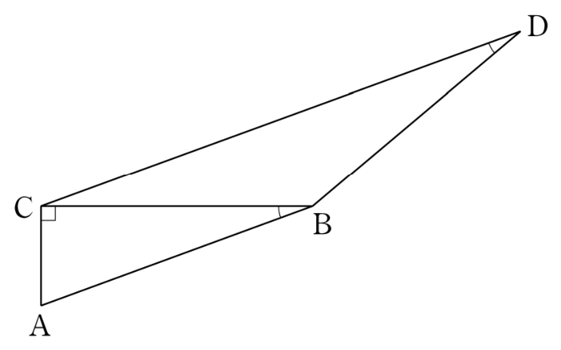
원본 정답 34
원본 풀이 (내부용)이해 능력 – 삼각함수 정답 34
\(
\angle BCD=\theta\text{라 하면 }\overline{BC}=\overline{BD}\text{이고}
\)
\(
\angle BDC=\angle ABC\text{이므로}
\)
\(
\angle ABC=\angle BDC=\angle BCD=\theta
\)
\(
\cos(\angle ACD)=-\frac13\text{에서 }
\cos\left(\frac{\pi}{2}+\theta\right)=-\frac13,
\)
즉,
\(
-\sin\theta=-\frac13\text{이므로 }\sin\theta=\frac13
\)
이때 \(0<\theta<\frac{\pi}{2}\)이므로
\(
\cos\theta=\sqrt{1-\sin^2\theta}
=\sqrt{1-\left(\frac13\right)^2}
=\frac{2\sqrt2}{3}
\)
직각삼각형 \(ABC\)에서
\(
\sin\theta=\frac{\overline{AC}}{\overline{AB}}
=\frac{\overline{AC}}{3}=\frac13
\)
이므로
\(
\overline{AC}=1,\quad \overline{BC}=2\sqrt2
\)
따라서 직각삼각형 \(ABC\)의 넓이는
\(
\frac12\times\overline{AC}\times\overline{BC}
=\frac12\times1\times2\sqrt2
=\sqrt2
\qquad\cdots\text{㉠}
\)
한편, 점 \(B\)에서 선분 \(CD\)에 내린 수선의 발을 \(H\)라 하면 삼각형 \(BCD\)는 이등변삼각형이므로 점 \(H\)는 선분 \(CD\)의 중점이다.
이때 직각삼각형 \(BHC\)에서
\(
\cos\theta=\frac{\overline{CH}}{\overline{BC}}\text{이므로}
\)
\(
\frac{2\sqrt2}{3}=\frac{\overline{CH}}{2\sqrt2},
\quad\text{즉 }\overline{CH}=\frac83
\)
따라서 \(\overline{CD}=2\overline{CH}=\frac{16}{3}\)이므로 삼각형 \(BCD\)의 넓이는
\(
\begin{aligned}
\frac12\times\overline{BC}\times\overline{CD}\times\sin\theta
&=\frac12\times2\sqrt2\times\frac{16}{3}\times\frac13\\
&=\frac{16\sqrt2}{9}
\end{aligned}
\qquad\cdots\text{㉡}
\)
㉠, ㉡에서 사각형 \(ABDC\)의 넓이는
\(
\sqrt2+\frac{16\sqrt2}{9}
=\frac{25\sqrt2}{9}
\)
이므로 \(p+q=9+25=34\)이다.
쌍둥이 1/5 · 4점 쌍둥이$\overline{AB}=3$이고 $\angle ACB=\frac{\pi}{2}$인 삼각형 $ABC$와 $\overline{BC}=\overline{BD}$이고 $\angle BDC=\angle ABC$인 삼각형 $CBD$가 있습니다. (단, 두 점 $A$, $D$는 직선 $BC$에 대하여 서로 반대쪽에 있습니다.) $\cos(\angle ACD)=-\frac{2}{3}$일 때, 사각형 $ABDC$의 넓이는 $\frac{q}{p}\sqrt{5}$입니다. $p+q$의 값을 구하세요. (단, $p$와 $q$는 서로소인 자연수입니다.)
정답$28$ $\angle ABC=\beta$라 하면 삼각형 $CBD$는 $\overline{BC}=\overline{BD}$인 이등변삼각형이므로 $\angle BCD=\angle BDC=\beta$, $\angle CBD=\pi-2\beta$ $\angle ACD=\frac{\pi}{2}+\beta$이므로 $\cos(\angle ACD)=-\sin\beta=-\frac{2}{3}$, $\sin\beta=\frac{2}{3}$, $\cos\beta=\frac{\sqrt{5}}{3}$ $\overline{AC}=3\sin\beta=2$, $\overline{BC}=3\cos\beta=\sqrt{5}$이므로 삼각형 $ABC$의 넓이는 $\sqrt{5}$ 삼각형 $CBD$의 넓이는 $\frac{1}{2}\times\overline{BC}^{2}\times\sin(\pi-2\beta)=\frac{1}{2}\times5\times2\sin\beta\cos\beta=\frac{10\sqrt{5}}{9}$ 사각형의 넓이는 $\frac{19\sqrt{5}}{9}$이므로 $p+q=9+19=28$
쌍둥이 2/5 · 4점 쌍둥이$\overline{AB}=2$이고 $\angle ACB=\frac{\pi}{2}$인 삼각형 $ABC$와 $\overline{BC}=\overline{BD}$이고 $\angle BDC=\angle ABC$인 삼각형 $CBD$가 있습니다. (단, 두 점 $A$, $D$는 직선 $BC$에 대하여 서로 반대쪽에 있습니다.) $\cos(\angle ACD)=-\frac{1}{2}$일 때, 사각형 $ABDC$의 넓이는 $\frac{q}{p}\sqrt{3}$입니다. $p+q$의 값을 구하세요. (단, $p$와 $q$는 서로소인 자연수입니다.)
정답$9$ $\angle ABC=\beta$라 하면 삼각형 $CBD$는 $\overline{BC}=\overline{BD}$인 이등변삼각형이므로 $\angle BCD=\angle BDC=\beta$, $\angle CBD=\pi-2\beta$ $\angle ACD=\frac{\pi}{2}+\beta$이므로 $\cos(\angle ACD)=-\sin\beta=-\frac{1}{2}$, $\sin\beta=\frac{1}{2}$, $\cos\beta=\frac{\sqrt{3}}{2}$ $\overline{AC}=2\sin\beta=1$, $\overline{BC}=2\cos\beta=\sqrt{3}$이므로 삼각형 $ABC$의 넓이는 $\frac{\sqrt{3}}{2}$ 삼각형 $CBD$의 넓이는 $\frac{1}{2}\times\overline{BC}^{2}\times\sin(\pi-2\beta)=\frac{1}{2}\times3\times2\sin\beta\cos\beta=\frac{3\sqrt{3}}{4}$ 사각형의 넓이는 $\frac{5\sqrt{3}}{4}$이므로 $p+q=4+5=9$
쌍둥이 3/5 · 4점 쌍둥이$\overline{AB}=4$이고 $\angle ACB=\frac{\pi}{2}$인 삼각형 $ABC$와 $\overline{BC}=\overline{BD}$이고 $\angle BDC=\angle ABC$인 삼각형 $CBD$가 있습니다. (단, 두 점 $A$, $D$는 직선 $BC$에 대하여 서로 반대쪽에 있습니다.) $\cos(\angle ACD)=-\frac{3}{4}$일 때, 사각형 $ABDC$의 넓이는 $\frac{q}{p}\sqrt{7}$입니다. $p+q$의 값을 구하세요. (단, $p$와 $q$는 서로소인 자연수입니다.)
정답$61$ $\angle ABC=\beta$라 하면 삼각형 $CBD$는 $\overline{BC}=\overline{BD}$인 이등변삼각형이므로 $\angle BCD=\angle BDC=\beta$, $\angle CBD=\pi-2\beta$ $\angle ACD=\frac{\pi}{2}+\beta$이므로 $\cos(\angle ACD)=-\sin\beta=-\frac{3}{4}$, $\sin\beta=\frac{3}{4}$, $\cos\beta=\frac{\sqrt{7}}{4}$ $\overline{AC}=4\sin\beta=3$, $\overline{BC}=4\cos\beta=\sqrt{7}$이므로 삼각형 $ABC$의 넓이는 $\frac{3\sqrt{7}}{2}$ 삼각형 $CBD$의 넓이는 $\frac{1}{2}\times\overline{BC}^{2}\times\sin(\pi-2\beta)=\frac{1}{2}\times7\times2\sin\beta\cos\beta=\frac{21\sqrt{7}}{16}$ 사각형의 넓이는 $\frac{45\sqrt{7}}{16}$이므로 $p+q=16+45=61$
원본 (내부용)그림과 같이 \(\overline{CA}=3,\ \angle ABC=90^\circ\)인 직각삼각형 \(ABC\)가 있다. 변 \(CA\)를 \(2:1\)로 내분하는 점을 \(D\), 각 \(BDC\)의 이등분선이 변 \(BC\)와 만나는 점을 \(E\)라 하고 \(\angle DCE=\theta\ \left(0<\theta<\dfrac{\pi}{2}\right)\)라 하자. \(\overline{BE}=\dfrac{9\sin\theta\cos\theta}{1+3\sin\theta}\)일 때, \(\dfrac{1}{\sin^2\theta}\)의 값을 구하시오. [4점] -
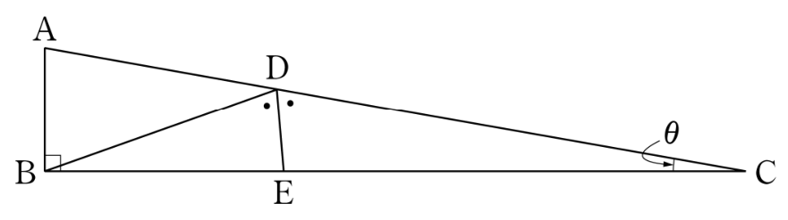
원본 정답 33
원본 풀이 (내부용)문제해결 능력 – 삼각함수 정답 33
직각삼각형 \(ABC\)에서 \(\overline{CA}=3\)이고 \(\angle ACB=\theta\)이므로
\(
\overline{AB}=3\sin\theta,\quad
\overline{BC}=3\cos\theta
\)
이때 점 \(D\)는 변 \(CA\)를 \(2:1\)로 내분하는 점이므로 점 \(D\)에서 선분 \(AB\)에 내린 수선의 발을 \(F\)라 하면
\(
\overline{AF}=\sin\theta,\quad
\overline{DF}=\cos\theta,\quad
\overline{BF}=\overline{AB}-\overline{AF}=2\sin\theta
\)
따라서 직각삼각형 \(BFD\)에서
\(
\begin{aligned}
\overline{BD}
&=\sqrt{\overline{BF}^{\,2}+\overline{DF}^{\,2}}\\
&=\sqrt{(2\sin\theta)^2+(\cos\theta)^2}\\
&=\sqrt{4\sin^2\theta+\cos^2\theta}\\
&=\sqrt{3\sin^2\theta+1}
\quad(\because \sin^2\theta+\cos^2\theta=1)
\end{aligned}
\)
한편, 점 \(E\)는 각 \(BDC\)의 이등분선과 변 \(BC\)와 만나는 점이므로 삼각형의 각의 이등분선의 성질에 의하여
\(
\overline{BD}:\overline{CD}
=\overline{BE}:\overline{CE}
\)
즉,
\(
\sqrt{3\sin^2\theta+1}:2
=\overline{BE}:\overline{CE}
\)
이때 \(\overline{BE}+\overline{CE}=\overline{BC}=3\cos\theta\)이므로
\(
\overline{BE}
=\overline{BC}\times
\frac{\sqrt{3\sin^2\theta+1}}
{\sqrt{3\sin^2\theta+1}+2}
\)
\(
=3\cos\theta\times
\frac{\sqrt{3\sin^2\theta+1}}
{\sqrt{3\sin^2\theta+1}+2}
\)
주어진 조건에 의하여
\(
3\cos\theta\times
\frac{\sqrt{3\sin^2\theta+1}}
{\sqrt{3\sin^2\theta+1}+2}
=\frac{9\sin\theta\cos\theta}{1+3\sin\theta}
\)
\(
\frac{\sqrt{3\sin^2\theta+1}}
{\sqrt{3\sin^2\theta+1}+2}
=\frac{3\sin\theta}{1+3\sin\theta}
\)
\(
(1+3\sin\theta)\sqrt{3\sin^2\theta+1}
=3\sin\theta\bigl(\sqrt{3\sin^2\theta+1}+2\bigr)
\)
\(
\sqrt{3\sin^2\theta+1}=6\sin\theta
\)
\(
3\sin^2\theta+1=36\sin^2\theta
\)
\(
33\sin^2\theta=1
\)
\(
\therefore\quad \frac{1}{\sin^2\theta}=33
\)
**다른 풀이**
직각삼각형 \(ABC\)에서 \(\overline{CA}=3\)이고 \(\angle ACB=\theta\)이므로
\(
\overline{BC}=3\cos\theta
\)
이때 점 \(E\)는 각 \(BDC\)의 이등분선이 변 \(BC\)와 만나는 점이므로 삼각형의 각의 이등분선의 성질에 의하여
\(
\overline{BD}:\overline{CD}=\overline{BE}:\overline{CE}
\)
주어진 조건에 의하여
\(
\overline{BE}
=\frac{9\sin\theta\cos\theta}{1+3\sin\theta}
\)
이므로
\(
\begin{aligned}
\overline{BD}:2
&=\frac{9\sin\theta\cos\theta}{1+3\sin\theta}:
\left(3\cos\theta-\frac{9\sin\theta\cos\theta}{1+3\sin\theta}\right)\\
&\Rightarrow \overline{BD}:2
=\frac{9\sin\theta\cos\theta}{1+3\sin\theta}:
\frac{3\cos\theta(1+3\sin\theta)-9\sin\theta\cos\theta}
{1+3\sin\theta}\\
&\Rightarrow \overline{BD}:2
=9\sin\theta\cos\theta:3\cos\theta\\
&\Rightarrow \overline{BD}:2=3\sin\theta:1
\end{aligned}
\)
\(
\therefore\quad \overline{BD}=6\sin\theta
\)
삼각형 \(DBC\)에서 코사인법칙에 의하여
\(
36\sin^2\theta=4+9\cos^2\theta-12\cos^2\theta
\)
\(
36\sin^2\theta+3\cos^2\theta=4
\)
\(
33\sin^2\theta=1\quad(\because\sin^2\theta+\cos^2\theta=1)
\)
\(
\therefore\quad \frac{1}{\sin^2\theta}=33
\)
쌍둥이 1/5 · 4점 쌍둥이$\overline{CA}=4$, $\angle ABC=90^{\circ}$인 직각삼각형 $ABC$가 있습니다. 변 $CA$를 $3:1$로 내분하는 점을 $D$, 각 $BDC$의 이등분선이 변 $BC$와 만나는 점을 $E$라 하고 $\angle DCE=\theta$ $\left(0<\theta<\frac{\pi}{2}\right)$라 합니다. $\overline{BE}=\frac{8\sin\theta\cos\theta}{1+2\sin\theta}$일 때, $\frac{1}{\sin^{2}\theta}$의 값을 구하세요.
정답$28$ $\overline{BC}=4\cos\theta$, $\overline{CD}=3$이고, $B$를 원점, $C(4\cos\theta,\ 0)$, $A(0,\ 4\sin\theta)$로 놓으면 $D\left(\cos\theta,\ 3\sin\theta\right)$ 각의 이등분선의 성질에서 $\overline{BE}:\overline{EC}=\overline{DB}:\overline{DC}$이므로 $\overline{BE}=\frac{4\cos\theta\times\overline{DB}}{\overline{DB}+3}$ 주어진 식과 비교하면 $4\,\overline{DB}(1+2\sin\theta)=8\sin\theta(\overline{DB}+3)$에서 $\overline{DB}=6\sin\theta$ $\overline{DB}^{2}=1\cos^{2}\theta+9\sin^{2}\theta=36\sin^{2}\theta$에 $\cos^{2}\theta=1-\sin^{2}\theta$를 넣어 정리하면 $\frac{1}{\sin^{2}\theta}=28$
쌍둥이 2/5 · 4점 쌍둥이$\overline{CA}=6$, $\angle ABC=90^{\circ}$인 직각삼각형 $ABC$가 있습니다. 변 $CA$를 $2:1$로 내분하는 점을 $D$, 각 $BDC$의 이등분선이 변 $BC$와 만나는 점을 $E$라 하고 $\angle DCE=\theta$ $\left(0<\theta<\frac{\pi}{2}\right)$라 합니다. $\overline{BE}=\frac{24\sin\theta\cos\theta}{1+4\sin\theta}$일 때, $\frac{1}{\sin^{2}\theta}$의 값을 구하세요.
정답$61$ $\overline{BC}=6\cos\theta$, $\overline{CD}=4$이고, $B$를 원점, $C(6\cos\theta,\ 0)$, $A(0,\ 6\sin\theta)$로 놓으면 $D\left(2\cos\theta,\ 4\sin\theta\right)$ 각의 이등분선의 성질에서 $\overline{BE}:\overline{EC}=\overline{DB}:\overline{DC}$이므로 $\overline{BE}=\frac{6\cos\theta\times\overline{DB}}{\overline{DB}+4}$ 주어진 식과 비교하면 $6\,\overline{DB}(1+4\sin\theta)=24\sin\theta(\overline{DB}+4)$에서 $\overline{DB}=16\sin\theta$ $\overline{DB}^{2}=4\cos^{2}\theta+16\sin^{2}\theta=256\sin^{2}\theta$에 $\cos^{2}\theta=1-\sin^{2}\theta$를 넣어 정리하면 $\frac{1}{\sin^{2}\theta}=61$
쌍둥이 3/5 · 4점 쌍둥이$\overline{CA}=4$, $\angle ABC=90^{\circ}$인 직각삼각형 $ABC$가 있습니다. 변 $CA$를 $3:1$로 내분하는 점을 $D$, 각 $BDC$의 이등분선이 변 $BC$와 만나는 점을 $E$라 하고 $\angle DCE=\theta$ $\left(0<\theta<\frac{\pi}{2}\right)$라 합니다. $\overline{BE}=\frac{12\sin\theta\cos\theta}{1+3\sin\theta}$일 때, $\frac{1}{\sin^{2}\theta}$의 값을 구하세요.
정답$73$ $\overline{BC}=4\cos\theta$, $\overline{CD}=3$이고, $B$를 원점, $C(4\cos\theta,\ 0)$, $A(0,\ 4\sin\theta)$로 놓으면 $D\left(\cos\theta,\ 3\sin\theta\right)$ 각의 이등분선의 성질에서 $\overline{BE}:\overline{EC}=\overline{DB}:\overline{DC}$이므로 $\overline{BE}=\frac{4\cos\theta\times\overline{DB}}{\overline{DB}+3}$ 주어진 식과 비교하면 $4\,\overline{DB}(1+3\sin\theta)=12\sin\theta(\overline{DB}+3)$에서 $\overline{DB}=9\sin\theta$ $\overline{DB}^{2}=1\cos^{2}\theta+9\sin^{2}\theta=81\sin^{2}\theta$에 $\cos^{2}\theta=1-\sin^{2}\theta$를 넣어 정리하면 $\frac{1}{\sin^{2}\theta}=73$
쌍둥이 4/5 · 4점 쌍둥이CA=6, ∠ABC=90°인 직각삼각형 ABC에서 D는 CA를 CD:DA=2:1로 내분합니다. ∠BDC의 이등분선이 BC와 만나는 점을 E, ∠DCE=θ라 합니다. $BE=\frac{12\sinθ\cosθ}{2\sinθ+1}$일 때 $1/\sin²θ$는?
쌍둥이 5/5 · 4점 쌍둥이CA=8, ∠ABC=90°인 직각삼각형 ABC에서 D는 CA를 CD:DA=2:1로 내분합니다. ∠BDC의 이등분선이 BC와 만나는 점을 E, ∠DCE=θ라 합니다. $BE=\frac{72\sinθ\cosθ}{9\sinθ+4}$일 때 $1/\sin²θ$는?
① $\frac{65}{4}$② $\frac{67}{4}$③ $\frac{69}{4}$④ $\frac{71}{4}$⑤ $\frac{73}{4}$
원본 (내부용)반지름의 길이가 \(6\)이고 호의 길이가 \(4\pi\)인 부채꼴의 중심각의 크기는? [2점]
① \(\frac{\pi}{6}\)② \(\frac{\pi}{3}\)③ \(\frac{\pi}{2}\)④ \(\frac{2}{3}\pi\)⑤ \(\frac{5}{6}\pi\)
원본 정답 ④
원본 풀이 (내부용)[출제의도] 부채꼴의 중심각의 크기 계산하기
부채꼴의 반지름의 길이를 \(r\), 호의 길이를 \(l\), 중심각의 크기를 \(\theta\)라 하면
\(
r=6,\quad l=4\pi
\)
이고 \(l=r\theta\)이므로
\(
\theta=\frac{4\pi}{6}=\frac{2}{3}\pi
\)
생성기 숫자판 1/6 · G2M1-02#18반지름의 길이가 $2$이고 호의 길이가 $\frac{3}{2}\pi$인 부채꼴의 중심각의 크기로 옳은 것을 고르세요.
① $\frac{\pi}{2}$② $\frac{2}{3}\pi$③ $\frac{3}{4}\pi$④ $\frac{5}{6}\pi$⑤ $\pi$
정답③ $\frac{3}{4}\pi$ 중심각의 크기를 $\theta$라 하면 $l=r\theta$이므로 $\frac{3}{2}\pi=2\theta$ $\theta=\frac{3}{4}\pi$
숫자: 원본 6 4 → 쌍둥이 2 3 2
생성기 숫자판 2/6 · G2M1-02#18반지름의 길이가 $2$이고 호의 길이가 $\frac{2}{3}\pi$인 부채꼴의 중심각의 크기로 옳은 것을 고르세요.
① $\frac{\pi}{6}$② $\frac{\pi}{4}$③ $\frac{\pi}{3}$④ $\frac{\pi}{2}$⑤ $\frac{2}{3}\pi$
정답③ $\frac{\pi}{3}$ 중심각의 크기를 $\theta$라 하면 $l=r\theta$이므로 $\frac{2}{3}\pi=2\theta$ $\theta=\frac{\pi}{3}$
숫자: 원본 6 4 → 쌍둥이 2 2 3
생성기 숫자판 3/6 · G2M1-02#18반지름의 길이가 $5$이고 호의 길이가 $\frac{25}{6}\pi$인 부채꼴의 중심각의 크기로 옳은 것을 고르세요.
① $\frac{\pi}{2}$② $\frac{2}{3}\pi$③ $\frac{3}{4}\pi$④ $\frac{5}{6}\pi$⑤ $\pi$
정답④ $\frac{5}{6}\pi$ 중심각의 크기를 $\theta$라 하면 $l=r\theta$이므로 $\frac{25}{6}\pi=5\theta$ $\theta=\frac{5}{6}\pi$
숫자: 원본 6 4 → 쌍둥이 5 25 6 · 같은 수: 6
생성기 숫자판 4/6 · G2M1-02#18반지름의 길이가 $3$이고 호의 길이가 $\frac{\pi}{2}$인 부채꼴의 중심각의 크기로 옳은 것을 고르세요.
① $\frac{\pi}{6}$② $\frac{\pi}{4}$③ $\frac{\pi}{3}$④ $\frac{\pi}{2}$⑤ $\frac{2}{3}\pi$
정답① $\frac{\pi}{6}$ 중심각의 크기를 $\theta$라 하면 $l=r\theta$이므로 $\frac{\pi}{2}=3\theta$ $\theta=\frac{\pi}{6}$
숫자: 원본 6 4 → 쌍둥이 3 2
생성기 숫자판 5/6 · G2M1-02#18반지름의 길이가 $3$이고 호의 길이가 $\frac{9}{4}\pi$인 부채꼴의 중심각의 크기로 옳은 것을 고르세요.
① $\frac{\pi}{2}$② $\frac{2}{3}\pi$③ $\frac{3}{4}\pi$④ $\frac{5}{6}\pi$⑤ $\pi$
정답③ $\frac{3}{4}\pi$ 중심각의 크기를 $\theta$라 하면 $l=r\theta$이므로 $\frac{9}{4}\pi=3\theta$ $\theta=\frac{3}{4}\pi$
숫자: 원본 6 4 → 쌍둥이 3 9 4 · 같은 수: 4
생성기 숫자판 6/6 · G2M1-02#18반지름의 길이가 $3$이고 호의 길이가 $\frac{5}{2}\pi$인 부채꼴의 중심각의 크기로 옳은 것을 고르세요.
① $\frac{\pi}{2}$② $\frac{2}{3}\pi$③ $\frac{3}{4}\pi$④ $\frac{5}{6}\pi$⑤ $\pi$
정답④ $\frac{5}{6}\pi$ 중심각의 크기를 $\theta$라 하면 $l=r\theta$이므로 $\frac{5}{2}\pi=3\theta$ $\theta=\frac{5}{6}\pi$
숫자: 원본 6 4 → 쌍둥이 3 5 2
113. 2022년 6월 4번 · 3점 · 수학Ⅰ 삼각함수 · G2M1-02#21
원본 (내부용)\(\frac{\pi}{2}<x<\frac{3}{2}\pi\)일 때, 방정식 \(\tan x=1\)의 해는? [3점]
① \(\frac{2}{3}\pi\)② \(\frac{3}{4}\pi\)③ \(\frac{5}{6}\pi\)④ \(\frac{5}{4}\pi\)⑤ \(\frac{4}{3}\pi\)
원본 정답 ④
원본 풀이 (내부용)[출제의도] 삼각함수의 그래프를 이용하여 삼각함수가 포함된 방정식 이해하기
그림에는 \(y=\tan x\)의 그래프와 직선 \(y=1\)이 나타나 있다. \(x\)축에 \(\frac{\pi}{4},\frac{\pi}{2},\pi,\frac{5\pi}{4},\frac{3\pi}{2}\)가 표시되어 있고, \(y=1\)과 그래프의 교점 위치가 점선으로 표시되어 있다.
방정식 \(\tan x=1\)의 해는 함수 \(y=\tan x\)의 그래프와 직선 \(y=1\)이 만나는 점의 \(x\)좌표와 같다.
\(
\tan\frac{\pi}{4}=1
\)
이고 함수 \(y=\tan x\)의 주기가 \(\pi\)이므로 구하는 해는
\(
x=\frac54\pi
\)
생성기 숫자판 1/6 · G2M1-02#21$\pi<x<2\pi$일 때, 방정식 $\tan x=\sqrt{3}$의 해로 옳은 것을 고르세요.
① $\frac{7}{6}\pi$② $\frac{5}{4}\pi$③ $\frac{4}{3}\pi$④ $\frac{3}{2}\pi$⑤ $\frac{5}{3}\pi$
생성기 숫자판 6/6 · G2M1-02#5$\frac{\pi}{2}<\theta<\pi$인 $\theta$에 대하여 $\cos\theta=-\frac{5}{13}$일 때, $\tan\theta$의 값으로 옳은 것을 고르세요.
① $-\frac{24}{5}$② $-\frac{12}{5}$③ $-\frac{5}{12}$④ $\frac{5}{12}$⑤ $\frac{12}{5}$
정답② $-\frac{12}{5}$ $\sin^{2}\theta=1-\cos^{2}\theta=1-\frac{25}{169}=\frac{144}{169}$ $\frac{\pi}{2}<\theta<\pi$에서 $\sin\theta>0$이므로 $\sin\theta=\frac{12}{13}$ 따라서 $\tan\theta=\frac{\sin\theta}{\cos\theta}=-\frac{12}{5}$
숫자: 원본 2 2 3 → 쌍둥이 2 5 13 · 같은 수: 2
115. 2022년 6월 10번 · 3점 · 수학Ⅰ 삼각함수 · G2f-11#0
원본 (내부용)세 상수 \(a,b,c\)에 대하여 함수 \(y=a\cos bx+c\)의 그래프가 그림과 같을 때, \(a\times b\times c\)의 값은? (단, \(a>0,\ b>0\)) [3점]
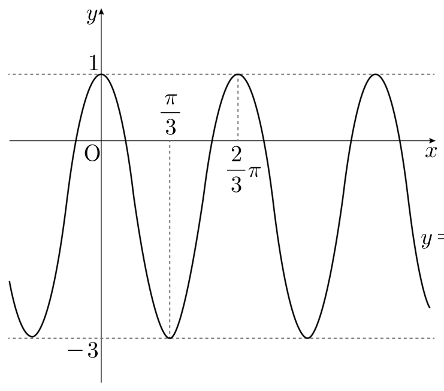
① \(-10\)② \(-8\)③ \(-6\)④ \(-4\)⑤ \(-2\)
원본 정답 ③
원본 풀이 (내부용)[출제의도] 삼각함수의 그래프 이해하기
주어진 삼각함수
\(
y=a\cos bx+c\quad(a>0,\ b>0)
\)
의 최댓값이 \(a+c\), 최솟값이 \(-a+c\)이므로
\(
a+c=1,\quad -a+c=-3
\)
에서 \(a=2,\ c=-1\)이다.
한편, 주어진 그래프에서 삼각함수의 주기가 \(\frac23\pi\)이므로
\(
\frac{2\pi}{b}=\frac23\pi
\)
즉, \(b=3\)이다.
따라서 \(a\times b\times c=-6\)
생성기 숫자판 1/6 · G2f-11#0세 상수 $a$, $b$, $c$에 대하여 함수 $y=a\cos bx+c$의 그래프가 그림과 같을 때, 주기는 $2\pi/5$, 최솟값은 $-5$, 최댓값은 $1$이다. $a\times b\times c$의 값으로 옳은 것을 고르세요. (단, $a>0$, $b>0$)
① $-32$② $-31$③ $-30$④ $-29$⑤ $-28$
정답③ $-30$ 그래프에서 최댓값이 $1$, 최솟값이 $-5$이고 $a>0$이므로 $a+c=1$, $-a+c=-5$ 두 식을 연립하면 $a=3$, $c=-2$ $x=0$에서 최대이고 다음 최대가 $x=\frac{2\pi}{5}$이므로 주기는 $\frac{2\pi}{5}$ $b>0$이므로 $\frac{2\pi}{b}=\frac{2\pi}{5}$에서 $b=5$ 따라서 $a\times b\times c=3\times 5\times \left(-2\right)=-30$
원본 (내부용)좌표평면 위의 원점 \(O\)에서 \(x\)축의 양의 방향으로 시초선을 잡을 때, 원점 \(O\)와 점 \(P(5,a)\)를 지나는 동경 \(OP\)가 나타내는 각의 크기를 \(\theta\), 선분 \(OP\)의 길이를 \(r\)라 하자. \(\sin\theta+2\cos\theta=1\)일 때, \(a+r\)의 값은? (단, \(a\)는 상수이다.) [4점]
① \(\frac{5}{2}\)② \(3\)③ \(\frac{7}{2}\)④ \(4\)⑤ \(\frac{9}{2}\)
원본 정답 ①
원본 풀이 (내부용)[출제의도] 삼각함수의 정의를 이용하여 식의 값 구하는 문제 해결하기
동경 \(OP\)가 나타내는 각의 크기가 \(\theta\)이고 \(\overline{OP}=r\)이므로
\(
\sin\theta=\frac ar,\quad \cos\theta=\frac5r
\)
이다.
\(
\sin\theta+2\cos\theta=1
\)
에서
\(
\frac ar+\frac{10}{r}=1
\)
즉 \(r=a+10\)이다. …… ㉠
\(
\sin^2\theta+\cos^2\theta=1
\)
에서
\(
\left(\frac ar\right)^2+\left(\frac5r\right)^2=1
\)
이므로
\(
a^2+25=r^2
\)
이다. …… ㉡
㉠, ㉡에 의하여 \(a=-\frac{15}{4}\)이고 \(r=\frac{25}{4}\)이다.
따라서
\(
a+r=\frac52
\)
쌍둥이 1/5 · 4점 쌍둥이좌표평면에서 원점 $O$와 점 $P(4,a)$를 지나는 동경 $OP$가 나타내는 각의 크기를 $\theta$, 선분 $OP$의 길이를 $r$라 합니다. $\sin\theta+5\cos\theta=1$일 때, $\cos\theta$의 값은? (단, $a$는 상수입니다.)
① $\frac3{5}$② $\frac4{5}$③ $\frac5{13}$④ $\frac{12}{13}$⑤ $\frac{13}{5}$
정답③ $\frac5{13}$ $\sin\theta=\frac ar$, $\cos\theta=\frac4r$이므로 $\frac{a+20}{r}=1$, 즉 $r=a+20$이다. $r^2=a^2+16$이므로 $(a+20)^2=a^2+16$에서 $40a+384=0$, 따라서 $a=-\frac{48}{5}$이고 $r=\frac{52}{5}$이다. 따라서 $\cos\theta=\frac4r=\frac5{13}$이다.
숫자: 원본 5 2 1 → 쌍둥이 4 5 1 · 같은 수: 1 5
쌍둥이 2/5 · 4점 쌍둥이좌표평면 위의 원점 $O$에서 $x$축의 양의 방향으로 시초선을 잡을 때, 원점 $O$와 점 $P(6,\ a)$를 지나는 동경 $OP$가 나타내는 각의 크기를 $\theta$, 선분 $OP$의 길이를 $r$라 합니다. $\sin\theta+3\cos\theta=1$일 때, $a+r$의 값으로 옳은 것을 고르세요. (단, $a$는 상수입니다.)
쌍둥이 3/5 · 4점 쌍둥이좌표평면 위의 원점 $O$에서 $x$축의 양의 방향으로 시초선을 잡을 때, 원점 $O$와 점 $P(3,\ a)$를 지나는 동경 $OP$가 나타내는 각의 크기를 $\theta$, 선분 $OP$의 길이를 $r$라 합니다. $\sin\theta+4\cos\theta=1$일 때, $a+r$의 값으로 옳은 것을 고르세요. (단, $a$는 상수입니다.)
① $\frac{1}{2}$② $\frac{3}{4}$③ $1$④ $\frac{5}{4}$⑤ $\frac{3}{2}$
쌍둥이 4/5 · 4점 쌍둥이좌표평면 위의 원점 $O$에서 $x$축의 양의 방향으로 시초선을 잡을 때, 원점 $O$와 점 $P(8,\ a)$를 지나는 동경 $OP$가 나타내는 각의 크기를 $\theta$, 선분 $OP$의 길이를 $r$라 합니다. $\sin\theta+3\cos\theta=1$일 때, $a+r$의 값으로 옳은 것을 고르세요. (단, $a$는 상수입니다.)
① $2$② $\frac{7}{3}$③ $\frac{8}{3}$④ $3$⑤ $\frac{10}{3}$
쌍둥이 5/5 · 4점 쌍둥이좌표평면에서 원점 $O$와 점 $P(7,a)$를 지나는 동경 $OP$가 나타내는 각의 크기를 $\theta$, 선분 $OP$의 길이를 $r$라 합니다. $\sin\theta+2\cos\theta=1$일 때, $\cos\theta$의 값은? (단, $a$는 상수입니다.)
① $\frac35$② $\frac45$③ $\frac5{13}$④ $\frac{12}{13}$⑤ $\frac{13}{5}$
정답② $\frac45$ $\sin\theta=\frac ar$, $\cos\theta=\frac7r$이므로 $\frac{a+14}{r}=1$, 즉 $r=a+14$이다. 또한 $r^2=a^2+49$이므로 $(a+14)^2=a^2+49$에서 $28a+147=0$, 따라서 $a=-\frac{21}{4}$이고 $r=\frac{35}{4}$이다. 따라서 $\cos\theta=\frac7r=\frac45$이다.
숫자: 원본 5 2 1 → 쌍둥이 7 2 1 · 같은 수: 1 2
117. 2022년 6월 16번 · 4점 · 수학Ⅰ 삼각함수 · 4점 쌍둥이
원본 (내부용)그림과 같이 반지름의 길이가 \(2\)이고 중심각의 크기가 \(\frac{\pi}{2}\)인 부채꼴 \(OAB\)가 있다. 호 \(AB\) 위에 점 \(C\)를 \(\overline{AC}=1\)이 되도록 잡는다. 선분 \(OC\) 위의 점 \(O\)가 아닌 점 \(D\)에 대하여 삼각형 \(BOD\)의 넓이가 \(\frac{7}{6}\)일 때, 선분 \(OD\)의 길이는? [4점]
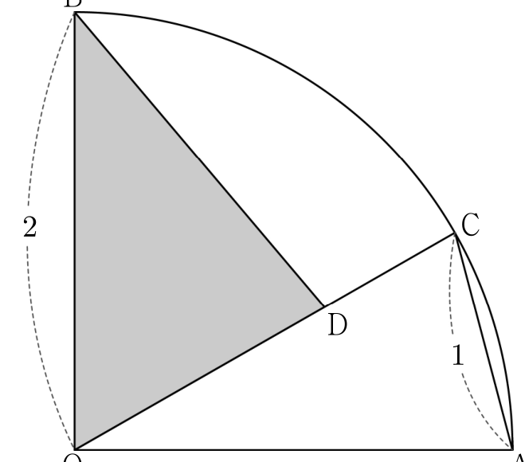
① \(\frac{5}{4}\)② \(\frac{31}{24}\)③ \(\frac{4}{3}\)④ \(\frac{11}{8}\)⑤ \(\frac{17}{12}\)
원본 정답 ③
원본 풀이 (내부용)[출제의도] 코사인법칙을 이용하여 선분의 길이 구하는 문제 해결하기
\(\angle COA=\theta\)라 하면 삼각형 COA에서 코사인법칙에 의하여
\(
\cos\theta=\frac{2^2+2^2-1^2}{2\times2\times2}=\frac78
\)
이다.
삼각형 BOD에서
\(
\angle BOD=\frac{\pi}{2}-\theta
\)
이고 삼각형 BOD의 넓이가 \(\frac76\)이므로 \(\overline{OD}=x\)라 놓으면
\(
\frac12\times2\times x\times\sin\left(\frac{\pi}{2}-\theta\right)=\frac76
\)
이다.
한편,
\(
\sin\left(\frac{\pi}{2}-\theta\right)=\cos\theta=\frac78
\)
이므로
\(
\frac78x=\frac76,\quad x=\frac43
\)
이다. 따라서 \(\overline{OD}=\frac43\)
쌍둥이 1/5 · 4점 쌍둥이반지름 12, 중심각 π/2인 부채꼴 OAB에서 호 AB 위 C를 호 길이 AC=2π가 되도록 잡습니다. D는 OC 위의 점이고 △BOD의 넓이가 $6\sqrt3$일 때 OD는?
① $1$② $\frac32$③ $2$④ $\frac52$⑤ $3$
정답③ $2$ ∠AOC=(2π)/12=π/6이므로 ∠BOD=π/3이다. 삼각형 넓이는 (1/2)·12·OD·sin(π/3)=3√3·OD이다. 3√3·OD=6√3에서 OD=2이다.
쌍둥이 2/5 · 4점 쌍둥이반지름의 길이가 $3$이고 중심각의 크기가 $\frac{\pi}{2}$인 부채꼴 $OAB$가 있습니다. 호 $AB$ 위에 점 $C$를 $\overline{AC}=2$가 되도록 잡습니다. 선분 $OC$ 위의 점 $O$가 아닌 점 $D$에 대하여 삼각형 $BOD$의 넓이가 $\frac{7}{4}$일 때, 선분 $OD$의 길이로 옳은 것을 고르세요.
① $\frac{3}{2}$② $2$③ $\frac{5}{2}$④ $3$⑤ $\frac{7}{2}$
정답① $\frac{3}{2}$ $\angle AOC=\alpha$라 하면 삼각형 $OAC$에서 코사인법칙으로 $4=9+9-2\times3\times3\cos\alpha$, $\cos\alpha=\frac{7}{9}$ $\angle BOD=\frac{\pi}{2}-\alpha$이므로 삼각형 $BOD$의 넓이는 $\frac{1}{2}\times3\times\overline{OD}\times\sin\left(\frac{\pi}{2}-\alpha\right)=\frac{3}{2}\times\frac{7}{9}\times\overline{OD}$ $\frac{7}{6}\,\overline{OD}=\frac{7}{4}$에서 $\overline{OD}=\frac{3}{2}$
쌍둥이 3/5 · 4점 쌍둥이반지름의 길이가 $5$이고 중심각의 크기가 $\frac{\pi}{2}$인 부채꼴 $OAB$가 있습니다. 호 $AB$ 위에 점 $C$를 $\overline{AC}=2$가 되도록 잡습니다. 선분 $OC$ 위의 점 $O$가 아닌 점 $D$에 대하여 삼각형 $BOD$의 넓이가 $\frac{23}{4}$일 때, 선분 $OD$의 길이로 옳은 것을 고르세요.
① $\frac{1}{2}$② $1$③ $\frac{3}{2}$④ $2$⑤ $\frac{5}{2}$
정답⑤ $\frac{5}{2}$ $\angle AOC=\alpha$라 하면 삼각형 $OAC$에서 코사인법칙으로 $4=25+25-2\times5\times5\cos\alpha$, $\cos\alpha=\frac{23}{25}$ $\angle BOD=\frac{\pi}{2}-\alpha$이므로 삼각형 $BOD$의 넓이는 $\frac{1}{2}\times5\times\overline{OD}\times\sin\left(\frac{\pi}{2}-\alpha\right)=\frac{5}{2}\times\frac{23}{25}\times\overline{OD}$ $\frac{23}{10}\,\overline{OD}=\frac{23}{4}$에서 $\overline{OD}=\frac{5}{2}$
쌍둥이 4/5 · 4점 쌍둥이반지름의 길이가 $4$이고 중심각의 크기가 $\frac{\pi}{2}$인 부채꼴 $OAB$가 있습니다. 호 $AB$ 위에 점 $C$를 $\overline{AC}=3$이 되도록 잡습니다. 선분 $OC$ 위의 점 $O$가 아닌 점 $D$에 대하여 삼각형 $BOD$의 넓이가 $\frac{23}{8}$일 때, 선분 $OD$의 길이로 옳은 것을 고르세요.
① $2$② $3$③ $4$④ $5$⑤ $6$
정답① $2$ $\angle AOC=\alpha$라 하면 삼각형 $OAC$에서 코사인법칙으로 $9=16+16-2\times4\times4\cos\alpha$, $\cos\alpha=\frac{23}{32}$ $\angle BOD=\frac{\pi}{2}-\alpha$이므로 삼각형 $BOD$의 넓이는 $\frac{1}{2}\times4\times\overline{OD}\times\sin\left(\frac{\pi}{2}-\alpha\right)=\frac{4}{2}\times\frac{23}{32}\times\overline{OD}$ $\frac{23}{16}\,\overline{OD}=\frac{23}{8}$에서 $\overline{OD}=2$
원본 (내부용)자연수 \(n\)에 대하여 \(-\frac{\pi}{2n}<x<\frac{\pi}{2n}\)에서 정의된 함수 \(f(x)=3\sin 2nx\)가 있다. 원점 \(O\)를 지나고 기울기가 양수인 직선과 함수 \(y=f(x)\)의 그래프가 서로 다른 세 점 \(O,\ A,\ B\)에서 만날 때, 점 \(C\left(\frac{\pi}{2n},0\right)\)에 대하여 넓이가 \(\frac{\pi}{12}\)인 삼각형 \(ABC\)가 존재하도록 하는 \(n\)의 최댓값은? [4점]
① \(12\)② \(14\)③ \(16\)④ \(18\)⑤ \(20\)
원본 정답 ④
원본 풀이 (내부용)[출제의도] 삼각함수의 그래프를 이용하여 자연수의 최댓값 구하는 문제 해결하기
그림에는 함수 \(y=3\sin 2nx\)의 그래프와 삼각형 \(ABC\)가 나타나 있다. \(x\)축에는 \(-\frac{\pi}{2n},\frac{\pi}{2n}\)가 표시되어 있고, 점 \(O\)는 원점, \(A\)와 \(B\)는 원점에 대해 대칭인 그래프상의 점, \(C\)는 양의 \(x\)축 위의 점으로 표시되어 있다.
함수 \(y=3\sin 2nx\)의 주기는 \(\frac{2\pi}{2n}=\frac{\pi}{n}\)이다.
원점을 지나고 기울기가 양수인 직선이
\(
-\frac{\pi}{2n}<x<\frac{\pi}{2n}
\)
에서 함수 \(y=3\sin2nx\)의 그래프와 만나는 원점이 아닌 두 점 A와 B는 원점에 대하여
## 해설
쌍둥이 1/5 · 4점 쌍둥이자연수 $n$에 대하여 $-\frac{\pi}{5n}<x<\frac{\pi}{5n}$에서 함수 $f(x)=4\sin5nx$를 정의합니다. 원점을 지나고 기울기가 양수인 직선과 $y=f(x)$가 서로 다른 세 점 $O,A_1,B_1$에서 만날 때, $C\left(\frac{\pi}{5n},0\right)$에 대하여 삼각형 $A_1B_1C$의 넓이가 $\frac{\pi}{7}$가 되도록 하는 자연수 $n$의 최댓값을 구하세요.
① $1$② $3$③ $5$④ $7$⑤ $9$
정답③ $5$ 그래프는 원점에 대하여 대칭이므로 두 비원점 교점을 $A_1=(s,f(s))$, $B_1=(-s,-f(s))$라 둘 수 있다. $0<s<\frac{\pi}{5n}$이고 $0<f(s)\le 4$이다. 삼각형 $A_1B_1C$의 넓이는 $\frac{\pi}{5n}f(s)$이다. 따라서 넓이의 최댓값은 $\frac{4\pi}{5n}$이다. $\frac{4\pi}{5n}\ge\frac{\pi}{7}$에서 $n\le\frac{7\cdot 4}{5}=28/5$이다. 가능한 자연수의 최댓값은 $5$이다.
쌍둥이 2/5 · 4점 쌍둥이자연수 $n$에 대하여 $-\frac{\pi}{5n}<x<\frac{\pi}{5n}$에서 함수 $f(x)=5\sin5nx$를 정의합니다. 원점을 지나고 기울기가 양수인 직선과 $y=f(x)$가 서로 다른 세 점 $O,A_1,B_1$에서 만날 때, $C\left(\frac{\pi}{5n},0\right)$에 대하여 삼각형 $A_1B_1C$의 넓이가 $\frac{\pi}{7}$가 되도록 하는 자연수 $n$의 최댓값을 구하세요.
① $3$② $5$③ $7$④ $9$⑤ $11$
정답③ $7$ 그래프는 원점에 대하여 대칭이므로 두 비원점 교점을 $A_1=(s,f(s))$, $B_1=(-s,-f(s))$라 둘 수 있다. $0<s<\frac{\pi}{5n}$이고 $0<f(s)\le 5$이다. 삼각형 $A_1B_1C$의 넓이는 $\frac{\pi}{5n}f(s)$이다. 따라서 넓이의 최댓값은 $\frac{5\pi}{5n}$이다. $\frac{5\pi}{5n}\ge\frac{\pi}{7}$에서 $n\le\frac{7\cdot 5}{5}=35/5$이다. 가능한 자연수의 최댓값은 $7$이다.
쌍둥이 3/5 · 4점 쌍둥이자연수 $n$에 대하여 $-\frac{\pi}{5n}<x<\frac{\pi}{5n}$에서 함수 $f(x)=6\sin5nx$를 정의합니다. 원점을 지나고 기울기가 양수인 직선과 $y=f(x)$가 서로 다른 세 점 $O,A_1,B_1$에서 만날 때, $C\left(\frac{\pi}{5n},0\right)$에 대하여 삼각형 $A_1B_1C$의 넓이가 $\frac{\pi}{7}$가 되도록 하는 자연수 $n$의 최댓값을 구하세요.
① $4$② $6$③ $8$④ $10$⑤ $12$
정답③ $8$ 그래프는 원점에 대하여 대칭이므로 두 비원점 교점을 $A_1=(s,f(s))$, $B_1=(-s,-f(s))$라 둘 수 있다. $0<s<\frac{\pi}{5n}$이고 $0<f(s)\le 6$이다. 삼각형 $A_1B_1C$의 넓이는 $\frac{\pi}{5n}f(s)$이다. 따라서 넓이의 최댓값은 $\frac{6\pi}{5n}$이다. $\frac{6\pi}{5n}\ge\frac{\pi}{7}$에서 $n\le\frac{7\cdot 6}{5}=42/5$이다. 가능한 자연수의 최댓값은 $8$이다.
쌍둥이 4/5 · 4점 쌍둥이자연수 $n$에 대하여 $-\frac{\pi}{5n}<x<\frac{\pi}{5n}$에서 함수 $f(x)=7\sin5nx$를 정의합니다. 원점을 지나고 기울기가 양수인 직선과 $y=f(x)$가 서로 다른 세 점 $O,A_1,B_1$에서 만날 때, $C\left(\frac{\pi}{5n},0\right)$에 대하여 삼각형 $A_1B_1C$의 넓이가 $\frac{\pi}{7}$가 되도록 하는 자연수 $n$의 최댓값을 구하세요.
① $5$② $7$③ $9$④ $11$⑤ $13$
정답③ $9$ 그래프는 원점에 대하여 대칭이므로 두 비원점 교점을 $A_1=(s,f(s))$, $B_1=(-s,-f(s))$라 둘 수 있다. $0<s<\frac{\pi}{5n}$이고 $0<f(s)\le 7$이다. 삼각형 $A_1B_1C$의 넓이는 $\frac{\pi}{5n}f(s)$이다. 따라서 넓이의 최댓값은 $\frac{7\pi}{5n}$이다. $\frac{7\pi}{5n}\ge\frac{\pi}{7}$에서 $n\le\frac{7\cdot 7}{5}=49/5$이다. 가능한 자연수의 최댓값은 $9$이다.
쌍둥이 5/5 · 4점 쌍둥이자연수 $n$에 대하여 $-\frac{\pi}{5n}<x<\frac{\pi}{5n}$에서 함수 $f(x)=8\sin5nx$를 정의합니다. 원점을 지나고 기울기가 양수인 직선과 $y=f(x)$가 서로 다른 세 점 $O,A_1,B_1$에서 만날 때, $C\left(\frac{\pi}{5n},0\right)$에 대하여 삼각형 $A_1B_1C$의 넓이가 $\frac{\pi}{7}$가 되도록 하는 자연수 $n$의 최댓값을 구하세요.
① $7$② $9$③ $11$④ $13$⑤ $15$
정답③ $11$ 그래프는 원점에 대하여 대칭이므로 두 비원점 교점을 $A_1=(s,f(s))$, $B_1=(-s,-f(s))$라 둘 수 있다. $0<s<\frac{\pi}{5n}$이고 $0<f(s)\le 8$이다. 삼각형 $A_1B_1C$의 넓이는 $\frac{\pi}{5n}f(s)$이다. 따라서 넓이의 최댓값은 $\frac{8\pi}{5n}$이다. $\frac{8\pi}{5n}\ge\frac{\pi}{7}$에서 $n\le\frac{7\cdot 8}{5}=56/5$이다. 가능한 자연수의 최댓값은 $11$이다.
원본 (내부용)그림과 같이 중심이 \(O\), 반지름의 길이가 \(1\)이고 중심각의 크기가 \(\theta\)인 부채꼴 \(OAB\)가 있다. 호 \(AB\)의 삼등분점 중 점 \(A\)에 가까운 점을 \(C\)라 하고, 직선 \(OA\)와 직선 \(BC\)가 만나는 점을 \(D\)라 하자. 다음은 두 선분 \(AD,\ CD\)와 호 \(AC\)로 둘러싸인 부분의 넓이 \(S(\theta)\)를 구하는 과정이다. (단, \(0<\theta<\frac{3}{4}\pi\)) 점 \(C\)가 호 \(AB\)의 삼등분점 중 점 \(A\)에 가까운 점이므로 \( \angle BOC=(가) \) 이다. 또한, 삼각형 \(BOC\)에서 \( \angle OBC=\angle OCB=\frac12\bigl(\pi-(가)\bigr) \) 이다. 한편, 삼각형 \(BOD\)에서 사인법칙에 의하여 \( \overline{OD}=\frac{\cos\frac{\theta}{3}}{(나)} \) 이다. \(S(\theta)\)는 삼각형 \(COD\)의 넓이에서 부채꼴 \(OAC\)의 넓이를 뺀 값이므로 \( S(\theta)=\frac12\times\frac{\cos\frac{\theta}{3}}{(나)}\times\sin\frac{\theta}{3}-(다) \) 이다. 위의 (가), (나), (다)에 알맞은 식을 각각 \(f(\theta),\ g(\theta),\ h(\theta)\)라 할 때, \( \frac{f\left(\frac{\pi}{2}\right)\times g\left(\frac{\pi}{4}\right)} {h\left(\frac{\pi}{8}\right)} \) 의 값은? [4점]
① \(8\sqrt3\)② \(\frac{17\sqrt3}{2}\)③ \(9\sqrt3\)④ \(\frac{19\sqrt3}{2}\)⑤ \(10\sqrt3\)
원본 정답 ①
원본 풀이 (내부용)[출제의도] 삼각함수를 이용하여 도형의 넓이 추론하기
점 C가 호 AB의 삼등분점 중 점 A에 가까운 점이므로
\(
\angle BOC=\frac23\theta
\)
이다. 또한, 삼각형 BOC에서
\(
\angle OBC=\angle OCB=\frac12\left(\pi-\frac23\theta\right)
\)
이다.
한편, 삼각형 BOD에서
\(
\angle BDO=\pi-\theta-\left(\frac{\pi}{2}-\frac23\theta\right)
=\frac{\pi}{2}-\frac13\theta
\)
이다. 따라서 삼각형 BOD에서 사인법칙에 의하여
\(
\frac{\overline{OD}}{\sin\left(\frac{\pi}{2}-\frac13\theta\right)}
=
\frac{\overline{OB}}{\sin\left(\frac{\pi}{2}-\frac23\theta\right)}
\)
\(
\overline{OD}=\frac{\cos\frac{\theta}{3}}{\cos\frac{2\theta}{3}}
\)
이다.
한편, 부채꼴 OAC의 넓이는
\(
\frac12\times1^2\times\frac{\theta}{3}=\frac{\theta}{6}
\)
이다.
\(S(\theta)\)는 삼각형 COD의 넓이에서 부채꼴 OAC의 넓이를 뺀 값이므로
\(
S(\theta)=\frac12\times1\times
\frac{\cos\frac{\theta}{3}}{\cos\frac{2\theta}{3}}
\times\sin\frac{\theta}{3}-\frac{\theta}{6}
\)
이다.
따라서
\(
f(\theta)=\frac23\theta,\quad
g(\theta)=\cos\frac{2\theta}{3},\quad
h(\theta)=\frac{\theta}{6}
\)
이므로
\(
f\left(\frac{\pi}{2}\right)=\frac{\pi}{3},\quad
g\left(\frac{\pi}{4}\right)=\frac{\sqrt3}{2},\quad
h\left(\frac{\pi}{8}\right)=\frac{\pi}{48}
\)
이다.
그러므로
\(
\frac{f\left(\frac{\pi}{2}\right)\times
g\left(\frac{\pi}{4}\right)}
{h\left(\frac{\pi}{8}\right)}
=8\sqrt3
\)
쌍둥이 1/5 · 4점 쌍둥이중심이 $O$, 반지름의 길이가 $1$이고 중심각이 $\theta$인 부채꼴 $OAB$에서 호 $AB$를 4등분한 점 중 $A$에 가장 가까운 점을 $C$라 하자. 직선 $OA$와 $BC$의 교점을 $D$라 하고, $AD$, $CD$와 호 $AC$로 둘러싸인 부분의 넓이를 $S(\theta)$라 하자. $2S(\theta)=g(\theta)\sin(\theta/4)-h(\theta)$라 하고, $f(\theta)=\angle BOC$, $g(\theta)=\overline{OD}$, $h(\theta)=\theta/4$로 둔다. $\frac{f(\frac{\pi}{3})g(\frac{8\pi}{15})}{h(\frac{\pi}{2})}$의 값을 고르세요.
① $2\cos(\frac{\pi}{5})$② $4\cos(\frac{\pi}{5})$③ $4\sin(\frac{\pi}{5})$④ $8\cos(\frac{\pi}{5})$⑤ $2\sqrt{2}\cos(\frac{\pi}{5})$
정답② $4\cos(\frac{\pi}{5})$ 호의 등분으로 $\angle AOC=\theta/4$이므로 $f(\theta)=\angle BOC=3\theta/4$. 현 $BC$와 $OA$의 교점에서 $g(\theta)=\overline{OD}=\frac{\cos((3)\theta/8)}{\cos((5)\theta/8)}$. 삼각형 $OCD$의 두 배 넓이는 $g(\theta)\sin(\theta/4)$이고 부채꼴 $OAC$의 두 배 넓이는 $\theta/4$이므로 $h(\theta)=\theta/4$. 대입하면 $f(\frac{\pi}{3})$와 $g(\frac{8\pi}{15})$, $h(\frac{\pi}{2})$의 값은 각각 계산한 대로이며 비는 $4\cos(\frac{\pi}{5})$이다.
쌍둥이 2/5 · 4점 쌍둥이중심이 $O$, 반지름의 길이가 $1$이고 중심각이 $\theta$인 부채꼴 $OAB$에서 호 $AB$를 5등분한 점 중 $A$에 가장 가까운 점을 $C$라 하자. 직선 $OA$와 $BC$의 교점을 $D$라 하고, $AD$, $CD$와 호 $AC$로 둘러싸인 부분의 넓이를 $S(\theta)$라 하자. $2S(\theta)=g(\theta)\sin(\theta/5)-h(\theta)$라 하고, $f(\theta)=\angle BOC$, $g(\theta)=\overline{OD}$, $h(\theta)=\theta/5$로 둔다. $\frac{f(\frac{5\pi}{8})g(\frac{5\pi}{18})}{h(\frac{\pi}{4})}$의 값을 고르세요.
① $\frac{40\sqrt{3}}{3}\cos(\frac{\pi}{9})$② $\frac{20\sqrt{3}}{3}\cos(\frac{\pi}{9})$③ $\frac{40}{3}\cos(\frac{\pi}{9})$④ $\frac{40\sqrt{3}}{3}\sin(\frac{\pi}{9})$⑤ $\frac{80\sqrt{3}}{3}\cos(\frac{\pi}{9})$
정답① $\frac{40\sqrt{3}}{3}\cos(\frac{\pi}{9})$ 호의 등분으로 $\angle AOC=\theta/5$이므로 $f(\theta)=\angle BOC=4\theta/5$. 현 $BC$와 $OA$의 교점에서 $g(\theta)=\overline{OD}=\frac{\cos((4)\theta/10)}{\cos((6)\theta/10)}$. 삼각형 $OCD$의 두 배 넓이는 $g(\theta)\sin(\theta/5)$이고 부채꼴 $OAC$의 두 배 넓이는 $\theta/5$이므로 $h(\theta)=\theta/5$. 대입하면 $f(\frac{5\pi}{8})$와 $g(\frac{5\pi}{18})$, $h(\frac{\pi}{4})$의 값은 각각 계산한 대로이며 비는 $\frac{40\sqrt{3}}{3}\cos(\frac{\pi}{9})$이다.
쌍둥이 3/5 · 4점 쌍둥이중심이 $O$, 반지름의 길이가 $1$이고 중심각이 $\theta$인 부채꼴 $OAB$에서 호 $AB$를 4등분한 점 중 $A$에 가장 가까운 점을 $C$라 하자. 직선 $OA$와 $BC$의 교점을 $D$라 하고, $AD$, $CD$와 호 $AC$로 둘러싸인 부분의 넓이를 $S(\theta)$라 하자. $2S(\theta)=g(\theta)\sin(\theta/4)-h(\theta)$라 하고, $f(\theta)=\angle BOC$, $g(\theta)=\overline{OD}$, $h(\theta)=\theta/4$로 둔다. $\frac{f(\frac{2\pi}{3})g(\frac{4\pi}{15})}{h(\frac{\pi}{3})}$의 값을 고르세요.
① $2\sqrt{3}\cos(\frac{\pi}{10})$② $4\sqrt{3}\cos(\frac{\pi}{10})$③ $4\cos(\frac{\pi}{10})$④ $4\sqrt{3}\sin(\frac{\pi}{10})$⑤ $8\sqrt{3}\cos(\frac{\pi}{10})$
정답② $4\sqrt{3}\cos(\frac{\pi}{10})$ 호의 등분으로 $\angle AOC=\theta/4$이므로 $f(\theta)=\angle BOC=3\theta/4$. 현 $BC$와 $OA$의 교점에서 $g(\theta)=\overline{OD}=\frac{\cos((3)\theta/8)}{\cos((5)\theta/8)}$. 삼각형 $OCD$의 두 배 넓이는 $g(\theta)\sin(\theta/4)$이고 부채꼴 $OAC$의 두 배 넓이는 $\theta/4$이므로 $h(\theta)=\theta/4$. 대입하면 $f(\frac{2\pi}{3})$와 $g(\frac{4\pi}{15})$, $h(\frac{\pi}{3})$의 값은 각각 계산한 대로이며 비는 $4\sqrt{3}\cos(\frac{\pi}{10})$이다.
쌍둥이 4/5 · 4점 쌍둥이중심이 $O$, 반지름이 $1$이고 중심각이 $\theta$인 부채꼴 $OAB$에서 호 $AB$를 8등분한 점 중 $A$에 가장 가까운 점을 $C$라 하자. 직선 $OA$와 $BC$의 교점을 $D$라 하고, $AD$, $CD$와 호 $AC$로 둘러싸인 부분의 넓이를 $S(\theta)$라 하자. ($0<\theta<8\pi/9$) $2S(\theta)=g(\theta)\sin(\theta/8)-h(\theta)$라 하고, $f(\theta)=\angle BOC$, $g(\theta)=\overline{OD}$, $h(\theta)=\theta/8$로 둔다. $\frac{f(\frac{\pi}{2})g(\frac{4\pi}{9})}{h(\pi/8)}$의 값을 고르시오.
① $14\sqrt{2}\cos(\frac{7\pi}{36})$② $28\cos(\frac{7\pi}{36})$③ $28\sqrt{2}\cos(\frac{7\pi}{36})$④ $56\sqrt{2}\cos(\frac{7\pi}{36})$⑤ $28\sqrt{2}\sin(\frac{7\pi}{36})$
정답③ $28\sqrt{2}\cos(\frac{7\pi}{36})$ 호의 등분에서 $\angle AOC=\theta/8$, 따라서 $f(\theta)=\angle BOC=7\theta/8$. 현 $BC$와 $OA$의 교점에서 $g(\theta)=\overline{OD}=\frac{\cos((7)\theta/16)}{\cos((9)\theta/16)}$. 삼각형 $OCD$의 두 변은 $OD$와 $CD$이고 그 높이는 $\sin(\theta/8)$이므로 두 배 넓이는 $g(\theta)\sin(\theta/8)$이다. 부채꼴 $OAC$의 두 배 넓이는 $\theta/8$이므로 $h(\theta)=\theta/8$. $f(\frac{\pi}{2})=\frac{7\pi}{16}$, $g(\frac{4\pi}{9})=\frac{\cos(7\pi/36)}{\cos(\pi/4)}$, $h(\frac{\pi}{8})=\frac{\pi}{64}$. 따라서 비는 $28\sqrt{2}\cos(\frac{7\pi}{36})$이다.
쌍둥이 5/5 · 4점 쌍둥이중심이 $O$, 반지름이 $1$이고 중심각이 $\theta$인 부채꼴 $OAB$에서 호 $AB$를 9등분한 점 중 $A$에 가장 가까운 점을 $C$라 하자. 직선 $OA$와 $BC$의 교점을 $D$라 하고, $AD$, $CD$와 호 $AC$로 둘러싸인 부분의 넓이를 $S(\theta)$라 하자. ($0<\theta<9\pi/10$) $2S(\theta)=g(\theta)\sin(\theta/9)-h(\theta)$라 하고, $f(\theta)=\angle BOC$, $g(\theta)=\overline{OD}$, $h(\theta)=\theta/9$로 둔다. $\frac{f(\frac{\pi}{2})g(\frac{9\pi}{20})}{h(\pi/9)}$의 값을 고르시오.
① $18\sqrt{2}\cos(\frac{\pi}{5})$② $36\cos(\frac{\pi}{5})$③ $36\sqrt{2}\cos(\frac{\pi}{5})$④ $72\sqrt{2}\cos(\frac{\pi}{5})$⑤ $36\sqrt{2}\sin(\frac{\pi}{5})$
정답③ $36\sqrt{2}\cos(\frac{\pi}{5})$ 호의 등분에서 $\angle AOC=\theta/9$, 따라서 $f(\theta)=\angle BOC=8\theta/9$. 현 $BC$와 $OA$의 교점에서 $g(\theta)=\overline{OD}=\frac{\cos((8)\theta/18)}{\cos((10)\theta/18)}$. 삼각형 $OCD$의 두 변은 $OD$와 $CD$이고 그 높이는 $\sin(\theta/9)$이므로 두 배 넓이는 $g(\theta)\sin(\theta/9)$이다. 부채꼴 $OAC$의 두 배 넓이는 $\theta/9$이므로 $h(\theta)=\theta/9$. $f(\frac{\pi}{2})=8\pi/18$, $g(\frac{9\pi}{20})=\frac{\cos((8)\frac{9\pi}{20}/18)}{\cos((10)\frac{9\pi}{20}/18)}$, $h(\pi/9)=\pi/81$. 대입하면 주어진 선택값은 $36\sqrt{2}\cos(\frac{\pi}{5})$이다.
원본 (내부용)자연수 \(k\ (1<k<12)\)에 대하여 \(0\le x\le12\)에서 정의된 함수 \(f(x)\)를 \( f(x)= \begin{cases} \frac12\sin\pi x & (0\le x<k)\\ \left(\frac23\right)^{x-k}-1 & (k\le x\le12) \end{cases} \) 라 하자. 실수 \(a\ (0<a\le\frac12)\)에 대하여 방정식 \( f(x)+a=0 \) 의 모든 실근의 합이 \(46\)일 때, \(\frac{k}{a}\)의 값은? [4점]
① \(24\)② \(27\)③ \(30\)④ \(33\)⑤ \(36\)
원본 정답 ②
정답 의심: 2022_6_21 원본 숫자로 다시 풀면 k=9, a=1/3(음수 구간 근의 합 3+7+11+15=36, 지수 조각 근 x=10), k/a=27(②) / 정답표 ③(30)
원본 풀이 (내부용)[출제의도] 지수함수와 삼각함수의 그래프를 이용하여 식의 값 구하는 문제 해결하기
\(
0\le x<k
\)
에서
\(
-\frac12\le f(x)\le\frac12
\)
이고 함수 \(y=\frac12\sin\pi x\)의 주기는 2이다.
\(
f(k)=\left(\frac23\right)^{k-12}-1=0
\)
이므로 함수 \(y=f(x)\)의 그래프가 점 \((k,0)\)을 지난다. 방정식 \(f(x)+a=0\)의 실근은 함수 \(y=f(x)\)의 그래프와 직선 \(y=-a\)의 교점의 \(x\)좌표와 같다.
\(
0\le x\le12
\)
에서 방정식 \(f(x)+a=0\)의 실근의 최댓값이 12이므로 모든 실근의 합이 46이기 위하여 실근의 개수는 4 이상이어야 한다.
#### (i) \(a=\frac12\)인 경우
그림에는 \(y=f(x)\)의 그래프와 직선 \(y=-\frac12\)가 표시되어 있다. \(x\)축에 \(0,2,\frac72,\frac{11}{2},\frac{15}{2},\frac{19}{2},12\)가 표시되어 있다.
\(k=10\)일 때 방정식 \(f(x)+a=0\)의 모든 실근의 합이 최대이다.
\(
0\le x<10
\)
에서 모든 실근의 합은
\(
\frac32+\frac72+\frac{11}{2}+\frac{15}{2}+\frac{19}{2}
=\frac{55}{2}=27.5
\)
이고
\(
f(12)=\left(\frac23\right)^{12-10}-1
=\frac49-1=-\frac59<-\frac12
\)
이므로 \(10\le x\le12\)에서 방정식 \(f(x)+a=0\)은 오직 하나의 실근을 갖고 그 값은 12보다 작다.
따라서 방정식 \(f(x)+a=0\)의 모든 실근의 합은 39.5보다 작으므로 조건을 만족시키지 않는다.
#### (ii) \(0<a<\frac12\)인 경우
그림에는 함수 \(y=f(x)\)의 그래프와 직선 \(y=-a\)가 표시되어 있고 \(x\)축에 \(0,2,k,12\)가 표시되어 있다.
\(
k\le x\le12
\)
에서 방정식
\(
\left(\frac23\right)^{x-k}-1+a=0
\)
의 실근의 개수는 최대 1이고 그 값은 12 이하이다.
\(
0\le x\le12
\)
에서 방정식 \(f(x)+a=0\)의 모든 실근의 합이 46이기 위하여
\(
0\le x<k
\)
에서 방정식 \(\frac12\sin\pi x+a=0\)의 모든 실근의 합은 34 이상이어야 한다.
\(
0\le x<2
\)
에서 함수 \(y=\frac12\sin\pi x\)의 그래프와 직선 \(y=-a\)가 만나는 두 점의 \(x\)좌표를 각각 \(\alpha_1,\alpha_2\)라 할 때,
\(
\frac{\alpha_1+\alpha_2}{2}=\frac32
\)
즉, \(\alpha_1+\alpha_2=3\)이다.
또한, 함수 \(y=\frac12\sin\pi x\)의 주기가 2이므로
\(
2\le x<4
\)
에서 방정식 \(\frac12\sin\pi x+a=0\)의 모든 실근의 합은 7,
\(
4\le x<6
\)
에서 방정식 \(\frac12\sin\pi x+a=0\)의 모든 실근의 합은 11,
\(
6\le x<8
\)
에서 방정식 \(\frac12\sin\pi x+a=0\)의 모든 실근의 합은 15,
\(
8\le x<10
\)
에서 방정식 \(\frac12\sin\pi x+a=0\)의 모든 실근의 합은 19이다.
\(
10\le x<11
\)
에서 방정식 \(\frac12\sin\pi x+a=0\)은 실근을 갖지 않는다.
따라서 다음 세 가지 경우로 나누어 생각할 수 있다.
① \(k\le7\)일 때
\(
0\le x<k
\)
에서 방정식 \(\frac12\sin\pi x+a=0\)의 모든 실근의 합이 34 미만이므로 조건을 만족시키지 않는다.
② \(k=8\) 또는 \(k=9\)일 때
\(
0\le x<k
\)
에서 방정식 \(\frac12\sin\pi x+a=0\)의 모든 실근의 합은
\(
3+7+11+15=36
\)
이므로 \(k\le x\le12\)에서 실근이 10인 조건을 만족시킨다.
\(k=8\)이면
\(
f(10)+a=\left(\frac23\right)^{10-8}-1+a=0
\)
에서 \(a=\frac59\)이므로 \(0<a<\frac12\)에 모순이다.
\(k=9\)이면
\(
f(10)+a=\left(\frac23\right)^{10-9}-1+a=0
\)
에서 \(a=\frac13\)이므로 \(0<a<\frac12\)를 만족시킨다.
③ \(k=10\) 또는 \(k=11\)일 때
\(
0\le x<k
\)
에서 모든 실근의 합은
\(
3+7+11+15+19=55>46
\)
이므로 조건을 만족시키지 않는다.
(i), (ii)에 의하여 \(a=\frac13,\ k=9\)이다.
따라서
\(
\frac{k}{a}=27
\)
쌍둥이 1/5 · 4점 쌍둥이자연수 $k$에 대하여 $1<k<10$이고, $0\le x\le 10$에서 정의된 함수 $f(x)$를 $f(x)=\begin{cases}{\frac{7}{9}\sin \pi x}&(0\le x<k)\\{\left(\frac{1}{3}\right)^{x-k}-1}&(k\le x\le 10)\end{cases}$라 하자. 실수 $a$가 $0<a\le 7/9$를 만족시키고 방정식 $f(x)+a=0$의 모든 실근의 합이 $46$일 때, $k-a$의 값을 구하시오. [4점]
① $8$② $\frac{25}{3}$③ $\frac{26}{3}$④ $9$⑤ $\frac{28}{3}$
정답② $\frac{25}{3}$ $x<k$의 음의 반주기 수는 $m=\lfloor k/2\rfloor=4$개이고, 각 구간의 두 근의 합은 $4j+3$ ($j=0,\ldots,3$)이다. 따라서 삼각함수 쪽 근의 합은 $3+7+\cdots+15=36$이다. $x\ge k$에서 지수식의 근은 $x=k+u$이고 $a=1-(1/3)^u$. 합 조건에서 $u=46-36-9=1$이므로 $a=\frac{2}{3}$이다. 다른 정수 $k$를 대입하면 $u=46-[2\lfloor k/2\rfloor^2+\lfloor k/2\rfloor]-k$이고, 허용 범위에서는 원하는 $u=1$ 외에 $u\ge2$이다. 이때 $a\ge1-q^2>7/9$라서 탈락한다. 따라서 $k=9$, $a=1-q$이고 $k-a$=$\frac{25}{3}$이다.
쌍둥이 2/5 · 4점 쌍둥이자연수 $k$에 대하여 $1<k<4$이고, $0\le x\le 4$에서 정의된 함수 $f(x)$를 $f(x)=\begin{cases}{\frac{5}{8}\sin \pi x}& (0\le x<k)\\{(\frac{1}{2})^{x-k}-1}& (k\le x\le 4)\end{cases}$라 하자. 실수 $a$가 $0<a\le \frac{5}{8}$를 만족시키고 방정식 $f(x)+a=0$의 모든 실근의 합이 $7$일 때, $k+a$의 값을 구하시오.
정답$\frac{7}{2}$ $x<k$에서 음의 반주기는 $j=0,1,\ldots,0$의 구간에 있다. 각 구간의 두 근은 대칭이므로 합은 $4j+3$이고, 첫 구간 근의 합은 $3$이다. $x\ge k$에서는 $q^{x-k}=1-a=q$이므로 근은 $x=k+1$이다. 따라서 $k$에서 요구되는 근의 합은 $3+3+1=7$이고 $a=1-q=\frac{1}{2}$이다. 다른 정수 $k$는 근 합 조건에서 $a=1-q^u$ ($u=7-S(k)-k$)를 요구한다. 다른 $k$에서는 $u\le0$이면 $a\le0$, $u>0$이면 $u\ge2$이고 $1-q^u>\frac{5}{8}$라 상한에 어긋난다. 따라서 가능한 $k$는 $3$뿐이다. 따라서 $k+a=\frac{7}{2}$.
쌍둥이 3/5 · 4점 쌍둥이자연수 $k$에 대하여 $1<k<6$이고, $0\le x\le 6$에서 정의된 함수 $f(x)$를 $f(x)=\begin{cases}{\frac{7}{9}\sin \pi x}& (0\le x<k)\\{(\frac{1}{3})^{x-k}-1}& (k\le x\le 6)\end{cases}$라 하자. 실수 $a$가 $0<a\le \frac{7}{9}$을 만족시키고 방정식 $f(x)+a=0$의 모든 실근의 합이 $16$일 때, $k\cdot a$의 값을 구하시오.
정답$\frac{10}{3}$ $x<k$에서 음의 반주기는 $j=0,1,\ldots,1$의 구간에 있다. 각 구간의 두 근은 대칭이므로 합은 $4j+3$이고, 첫 구간 근의 합은 $10$이다. $x\ge k$에서는 $q^{x-k}=1-a=q$이므로 근은 $x=k+1$이다. 따라서 $k$에서 요구되는 근의 합은 $10+5+1=16$이고 $a=1-q=\frac{2}{3}$이다. 다른 정수 $k$는 근 합 조건에서 $a=1-q^u$ ($u=16-S(k)-k$)를 요구한다. 다른 $k$에서는 $u\le0$이면 $a\le0$, $u>0$이면 $u\ge2$이고 $1-q^u>\frac{7}{9}$라 상한에 어긋난다. 따라서 가능한 $k$는 $5$뿐이다. 따라서 $k\cdot a=\frac{10}{3}$.
쌍둥이 4/5 · 4점 쌍둥이자연수 $k$에 대하여 $1<k<8$이고, $0\le x\le 8$에서 정의된 함수 $f(x)$를 $f(x)=\begin{cases}{\frac{18}{25}\sin \pi x}& (0\le x<k)\\{(\frac{2}{5})^{x-k}-1}& (k\le x\le 8)\end{cases}$라 하자. 실수 $a$가 $0<a\le \frac{18}{25}$을 만족시키고 방정식 $f(x)+a=0$의 모든 실근의 합이 $29$일 때, $1/a$의 값을 구하시오.
정답$\frac{5}{3}$ $x<k$에서 음의 반주기는 $j=0,1,\ldots,2$의 구간에 있다. 각 구간의 두 근은 대칭이므로 합은 $4j+3$이고, 첫 구간 근의 합은 $21$이다. $x\ge k$에서는 $q^{x-k}=1-a=q$이므로 근은 $x=k+1$이다. 따라서 $k$에서 요구되는 근의 합은 $21+7+1=29$이고 $a=1-q=\frac{3}{5}$이다. 다른 정수 $k$는 근 합 조건에서 $a=1-q^u$ ($u=29-S(k)-k$)를 요구한다. 다른 $k$에서는 $u\le0$이면 $a\le0$, $u>0$이면 $u\ge2$이고 $1-q^u>\frac{18}{25}$라 상한에 어긋난다. 따라서 가능한 $k$는 $7$뿐이다. 따라서 $1/a=\frac{5}{3}$.
쌍둥이 5/5 · 4점 쌍둥이자연수 $k$에 대하여 $1<k<12$이고, $0\le x\le 12$에서 정의된 함수 $f(x)$를 $f(x)=\begin{cases}{\frac{7}{8}\sin \pi x}&(0\le x<k)\\{\left(\frac{1}{4}\right)^{x-k}-1}&(k\le x\le 12)\end{cases}$라 하자. 실수 $a$가 $0<a\le 7/8$을 만족시키고 방정식 $f(x)+a=0$의 모든 실근의 합이 $67$일 때, $k+2a$의 값을 구하시오. [4점]
① $12$② $\frac{49}{4}$③ $\frac{25}{2}$④ $\frac{51}{4}$⑤ $13$
정답③ $\frac{25}{2}$ $x<k$의 음의 반주기 수는 $m=\lfloor k/2\rfloor=5$개이고, 각 구간의 두 근의 합은 $4j+3$ ($j=0,\ldots,4$)이다. 따라서 삼각함수 쪽 근의 합은 $3+7+\cdots+19=55$이다. $x\ge k$에서 지수식의 근은 $x=k+u$이고 $a=1-(1/4)^u$. 합 조건에서 $u=67-55-11=1$이므로 $a=\frac{3}{4}$이다. 다른 정수 $k$를 대입하면 $u=67-[2\lfloor k/2\rfloor^2+\lfloor k/2\rfloor]-k$이고, 허용 범위에서는 원하는 $u=1$ 외에 $u\ge2$이다. 이때 $a\ge1-q^2>7/8$라서 탈락한다. 따라서 $k=11$, $a=1-q$이고 $k+2a$=$\frac{25}{2}$이다.
원본 (내부용)함수 \(y=3\sin(x+\pi)+k\)의 그래프가 점 \(\left(\frac{\pi}{6},\frac52\right)\)을 지날 때, 상수 \(k\)의 값을 구하시오. [3점]
원본 정답 ④
원본 풀이 (내부용)[출제의도] 삼각함수의 그래프 이해하기
함수
\(
y=3\sin(x+\pi)+k
\)
의 그래프가 점 \(\left(\frac{\pi}{6},\frac52\right)\)을 지나므로
\(
\frac52=3\sin\left(\frac{\pi}{6}+\pi\right)+k
=3\times\left(-\sin\frac{\pi}{6}\right)+k
\)
이다. 따라서
\(
-\frac32+k=\frac52
\)
즉 \(k=4\)
생성기 숫자판 1/6 · G2M1-02#9함수 $y=6\cos\left(x+\frac{\pi}{2}\right)+k$의 그래프가 점 $\left(\frac{\pi}{2},\ -5\right)$를 지날 때, 상수 $k$의 값을 구하세요.
정답$1$ 점 $\left(\frac{\pi}{2},\ -5\right)$를 지나므로 $-5=6\cos\left(\frac{\pi}{2}+\frac{\pi}{2}\right)+k$ $=6\cos\pi+k$ $=-6+k$ 따라서 $k=1$
숫자: 원본 3 6 52 → 쌍둥이 6 2 2 5 · 같은 수: 6
생성기 숫자판 2/6 · G2M1-02#9함수 $y=4\cos\left(x-\frac{\pi}{6}\right)+k$의 그래프가 점 $\left(\frac{\pi}{6},\ 11\right)$을 지날 때, 상수 $k$의 값을 구하세요.
정답$7$ 점 $\left(\frac{\pi}{6},\ 11\right)$을 지나므로 $11=4\cos\left(\frac{\pi}{6}-\frac{\pi}{6}\right)+k$ $=4\cos0+k$ $=4+k$ 따라서 $k=7$
숫자: 원본 3 6 52 → 쌍둥이 4 6 6 11 · 같은 수: 6
생성기 숫자판 3/6 · G2M1-02#9함수 $y=2\cos\left(x-\frac{\pi}{6}\right)+k$의 그래프가 점 $\left(\frac{\pi}{2},\ 7\right)$을 지날 때, 상수 $k$의 값을 구하세요.
정답$6$ 점 $\left(\frac{\pi}{2},\ 7\right)$을 지나므로 $7=2\cos\left(\frac{\pi}{2}-\frac{\pi}{6}\right)+k$ $=2\cos\frac{\pi}{3}+k$ $=1+k$ 따라서 $k=6$
숫자: 원본 3 6 52 → 쌍둥이 2 6 2 7 · 같은 수: 6
생성기 숫자판 4/6 · G2M1-02#9함수 $y=2\sin\left(x-\frac{\pi}{3}\right)+k$의 그래프가 점 $\left(\frac{\pi}{3},\ 2\right)$를 지날 때, 상수 $k$의 값을 구하세요.
정답$2$ 점 $\left(\frac{\pi}{3},\ 2\right)$를 지나므로 $2=2\sin\left(\frac{\pi}{3}-\frac{\pi}{3}\right)+k$ $=2\sin0+k$ $=0+k$ 따라서 $k=2$
숫자: 원본 3 6 52 → 쌍둥이 2 3 3 2 · 같은 수: 3
생성기 숫자판 5/6 · G2M1-02#9함수 $y=3\sin\left(x-\frac{\pi}{3}\right)+k$의 그래프가 점 $\left(\frac{\pi}{2},\ \frac{17}{2}\right)$을 지날 때, 상수 $k$의 값을 구하세요.
정답$7$ 점 $\left(\frac{\pi}{2},\ \frac{17}{2}\right)$을 지나므로 $\frac{17}{2}=3\sin\left(\frac{\pi}{2}-\frac{\pi}{3}\right)+k$ $=3\sin\frac{\pi}{6}+k$ $=\frac{3}{2}+k$ 따라서 $k=7$
숫자: 원본 3 6 52 → 쌍둥이 3 3 2 17 2 · 같은 수: 3
생성기 숫자판 6/6 · G2M1-02#9함수 $y=6\cos\left(x-\frac{\pi}{6}\right)+k$의 그래프가 점 $\left(\frac{\pi}{6},\ 13\right)$을 지날 때, 상수 $k$의 값을 구하세요.
정답$7$ 점 $\left(\frac{\pi}{6},\ 13\right)$을 지나므로 $13=6\cos\left(\frac{\pi}{6}-\frac{\pi}{6}\right)+k$ $=6\cos0+k$ $=6+k$ 따라서 $k=7$
숫자: 원본 3 6 52 → 쌍둥이 6 6 6 13 · 같은 수: 6
122. 2022년 6월 28번 · 4점 · 수학Ⅰ 삼각함수 · 4점 쌍둥이
원본 (내부용)\(\angle ABC=\dfrac{\pi}{3},\ \overline{BC}=6\)인 삼각형 \(ABC\)가 있다. 선분 \(BC\) 위에 점 \(B\)와 점 \(C\)가 아닌 점 \(D\)를 잡고, 삼각형 \(ABD\)의 외접원의 반지름의 길이를 \(r_1\), 삼각형 \(ACD\)의 외접원의 반지름의 길이를 \(r_2\)라 하자. \(\dfrac{r_2}{r_1}=\dfrac{\sqrt{13}}{3}\)일 때, 선분 \(AB\)의 길이는 \(\dfrac{q}{p}\)이다. \(p+q\)의 값을 구하시오. (단, \(p\)와 \(q\)는 서로소인 자연수이다.) [4점] -
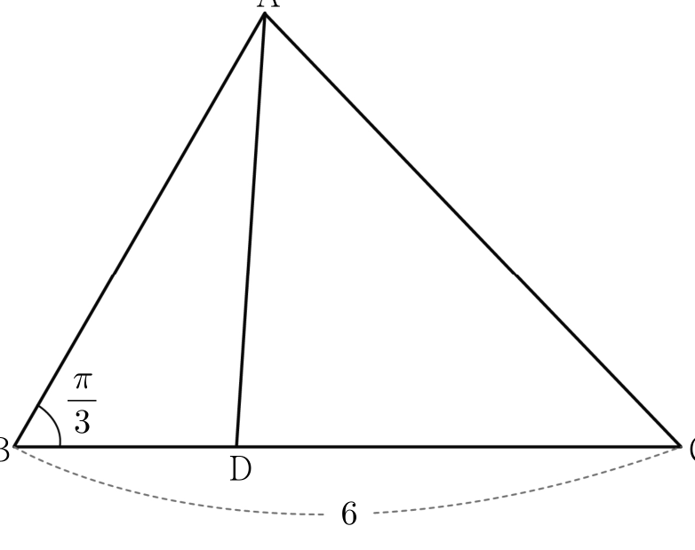
원본 정답 11
원본 풀이 (내부용)[출제의도] 사인법칙과 코사인법칙을 이용하여 선분의 길이 구하는 문제 해결하기
삼각형 ABD에서 \(\angle ADB=\theta\)라 하자.
삼각형 ABD에서 사인법칙에 의하여
\(
\frac{\overline{AB}}{\sin\theta}=2r_1
\)
이고, 삼각형 ADC에서 사인법칙에 의하여
\(
\frac{\overline{AC}}{\sin(\pi-\theta)}
=\frac{\overline{AC}}{\sin\theta}=2r_2
\)
이다.
\(
\frac{r_2}{r_1}=\frac{\overline{AC}}{\overline{AB}}
=\frac{\sqrt{13}}{3}
\)
이므로
\(
t>0
\)
인 실수 \(t\)에 대하여 \(\overline{AB}=3t,\ \overline{AC}=\sqrt{13}t\)라 하면 삼각형 ABC에서 코사인법칙에 의하여
\(
13t^2=9t^2+36-2\times3t\times6\times\cos\frac{\pi}{3}
\)
\(
2t^2+9t-18=0
\)
이므로 \(t=\frac32\) 또는 \(t=-6\)이다.
따라서 \(t=\frac32\)이고 \(\overline{AB}=3t=\frac92\)이므로
\(
p=2,\quad q=9
\)
이다. 그러므로 \(p+q=11\)
쌍둥이 1/5 · 4점 쌍둥이$\angle ABC=\frac{\pi}{3}$, $\overline{BC}=8$인 삼각형 $ABC$가 있습니다. 선분 $BC$ 위에 점 $B$와 점 $C$가 아닌 점 $D$를 잡고, 삼각형 $ABD$의 외접원의 반지름의 길이를 $r_{1}$, 삼각형 $ACD$의 외접원의 반지름의 길이를 $r_{2}$라 합니다. $\frac{r_{2}}{r_{1}}=\frac{\sqrt{31}}{5}$일 때, 선분 $AB$의 길이는 $\frac{q}{p}$입니다. $p+q$의 값을 구하세요. (단, $p$와 $q$는 서로소인 자연수입니다.)
정답$23$ 두 삼각형 $ABD$, $ACD$에서 사인법칙으로 $r_{1}=\frac{\overline{AD}}{2\sin B}$, $r_{2}=\frac{\overline{AD}}{2\sin C}$이므로 $\frac{r_{2}}{r_{1}}=\frac{\sin B}{\sin C}=\frac{\overline{AC}}{\overline{AB}}$ $\overline{AB}=c$라 하면 $\overline{AC}=\frac{\sqrt{31}}{5}c$이고, 코사인법칙에서 $\overline{AC}^{2}=64+c^{2}-8c$ $\frac{31}{25}c^{2}=64+c^{2}-8c$를 정리하면 $\frac{6}{25}c^{2}+8c-64=0$이므로 $c>0$에서 $c=\frac{20}{3}$ $p+q=23$
쌍둥이 2/5 · 4점 쌍둥이$\angle ABC=\frac{\pi}{3}$, $\overline{BC}=5$인 삼각형 $ABC$가 있습니다. 선분 $BC$ 위에 점 $B$와 점 $C$가 아닌 점 $D$를 잡고, 삼각형 $ABD$의 외접원의 반지름의 길이를 $r_{1}$, 삼각형 $ACD$의 외접원의 반지름의 길이를 $r_{2}$라 합니다. $\frac{r_{2}}{r_{1}}=\frac{\sqrt{7}}{2}$일 때, 선분 $AB$의 길이는 $\frac{q}{p}$입니다. $p+q$의 값을 구하세요. (단, $p$와 $q$는 서로소인 자연수입니다.)
정답$13$ 두 삼각형 $ABD$, $ACD$에서 사인법칙으로 $r_{1}=\frac{\overline{AD}}{2\sin B}$, $r_{2}=\frac{\overline{AD}}{2\sin C}$이므로 $\frac{r_{2}}{r_{1}}=\frac{\sin B}{\sin C}=\frac{\overline{AC}}{\overline{AB}}$ $\overline{AB}=c$라 하면 $\overline{AC}=\frac{\sqrt{7}}{2}c$이고, 코사인법칙에서 $\overline{AC}^{2}=25+c^{2}-5c$ $\frac{7}{4}c^{2}=25+c^{2}-5c$를 정리하면 $\frac{3}{4}c^{2}+5c-25=0$이므로 $c>0$에서 $c=\frac{10}{3}$ $p+q=13$
쌍둥이 3/5 · 4점 쌍둥이$\angle ABC=\frac{\pi}{3}$, $\overline{BC}=7$인 삼각형 $ABC$가 있습니다. 선분 $BC$ 위에 점 $B$와 점 $C$가 아닌 점 $D$를 잡고, 삼각형 $ABD$의 외접원의 반지름의 길이를 $r_{1}$, 삼각형 $ACD$의 외접원의 반지름의 길이를 $r_{2}$라 합니다. $\frac{r_{2}}{r_{1}}=\frac{\sqrt{21}}{4}$일 때, 선분 $AB$의 길이는 $\frac{q}{p}$입니다. $p+q$의 값을 구하세요. (단, $p$와 $q$는 서로소인 자연수입니다.)
정답$33$ 두 삼각형 $ABD$, $ACD$에서 사인법칙으로 $r_{1}=\frac{\overline{AD}}{2\sin B}$, $r_{2}=\frac{\overline{AD}}{2\sin C}$이므로 $\frac{r_{2}}{r_{1}}=\frac{\sin B}{\sin C}=\frac{\overline{AC}}{\overline{AB}}$ $\overline{AB}=c$라 하면 $\overline{AC}=\frac{\sqrt{21}}{4}c$이고, 코사인법칙에서 $\overline{AC}^{2}=49+c^{2}-7c$ $\frac{21}{16}c^{2}=49+c^{2}-7c$를 정리하면 $\frac{5}{16}c^{2}+7c-49=0$이므로 $c>0$에서 $c=\frac{28}{5}$ $p+q=33$
원본 (내부용)두 실수 \(a,\ b\)와 두 함수 \( f(x)=\sin x,\qquad g(x)=a\cos x+b \) 에 대하여 \(0\le x\le2\pi\)에서 정의된 함수 \( h(x)=\frac{|f(x)-g(x)|+f(x)+g(x)}{2} \) 가 다음 조건을 만족시킨다. \( \begin{array}{ll} \text{(가)} & \text{함수 }h(x)\text{의 최솟값은 }-\dfrac{\sqrt3}{2}\text{이다.}\\[4pt] \text{(나)} & 0<c<\dfrac{\pi}{2}\text{인 어떤 실수 }c\text{에 대하여}\\ & h(c)=h(c+\pi)=\dfrac12\text{이다.} \end{array} \) 상수 \(k\ (k>\dfrac12)\)에 대하여 방정식 \(h(x)=k\)가 서로 다른 세 실근을 가질 때, \(a+20\left(\dfrac{k}{b}\right)^2\)의 값을 구하시오. [4점] *확인 사항* ○ 답안지의 해당란에 필요한 내용을 정확히 기입(표기)했는지 확인하시오.
원본 정답 59
원본 풀이 (내부용)[출제의도] 삼각함수의 그래프를 이용하여 삼각함수 추론하기
\(
f(x)=\sin x,\quad g(x)=a\cos x+b
\)
라 하고
\(
h(x)=
\begin{cases}
g(x)&(f(x)<g(x))\\
f(x)&(f(x)>g(x))
\end{cases}
\)
라 하자.
조건 (나)에서 \(0<c<\frac{\pi}{2}\)인 어떤 실수 \(c\)에 대하여
\(
h(c)=h(c+\pi)=\frac12
\)
이므로
\(
f(c)=\frac12\quad\text{또는}\quad g(c)=\frac12
\)
이고
\(
f(c+\pi)=\frac12\quad\text{또는}\quad g(c+\pi)=\frac12
\)
이다.
한편, \(0<c<\frac{\pi}{2}\)이면
\(
f(c+\pi)=\sin(c+\pi)=-\sin c<0
\)
이므로 \(f(c+\pi)\ne\frac12\)이다.
따라서 \(g(c+\pi)=\frac12\)이다. …… ㉠
함수 \(y=g(x)\)의 그래프는 직선 \(x=\pi\)에 대하여 대칭이므로 \(g(\pi-c)=\frac12\)이다. …… ㉡
\(
0\le x\le2\pi
\)
에서 방정식 \(g(x)=\frac12\)의 실근의 개수는 최대 2이므로 ㉠, ㉡에 의하여 \(g(c)=\frac12\)이다.
따라서 \(f(c)=\frac12\)이고 \(\sin c=\frac12\)에서 \(c=\frac{\pi}{6}\)이다.
㉠에 의하여
\(
g\left(\frac{7\pi}{6}\right)=\frac12
\)
이다. …… ㉢
#### (i) \(a>0\)인 경우
함수 \(h(x)\)의 최솟값이 \(-\frac{\sqrt3}{2}\)이 되기 위하여 함수 \(y=g(x)\)의 그래프가 점 \(\left(\frac{4\pi}{3},-\frac{\sqrt3}{2}\right)\)을 지나야 한다.
그림에는 함수 \(f(x)=\sin x\)와 \(g(x)=a\cos x+b\)의 그래프가 그려져 있으며, \(x\)축에 \(\frac{7\pi}{6},\frac{4\pi}{3},\pi\)가 표시되어 있다.
\(
g\left(\frac{4\pi}{3}\right)=-\frac{\sqrt3}{2}
\)
이고 \(a>0\)일 때
\(
g\left(\frac{4\pi}{3}\right)>g\left(\frac{7\pi}{6}\right)
\)
이므로
\(
g\left(\frac{7\pi}{6}\right)<-\frac{\sqrt3}{2}
\)
이다. 이는 ㉢과 모순이다.
#### (ii) \(a=0\)인 경우
\(
g(x)=b
\)
이다.
그림에는 \(y=g(x)\)의 그래프가 \(y=-\frac{\sqrt3}{2}\)인 수평선으로 나타나 있고, 곡선 \(y=f(x)\)와의 교점 및 \(x\)축의 표시 \(\frac{7\pi}{6},\frac{4\pi}{3}\)가 나타나 있다.
함수 \(h(x)\)의 최솟값이 \(-\frac{\sqrt3}{2}\)이 되기 위하여 함수 \(y=g(x)\)의 그래프가 점 \(\left(\frac{4\pi}{3},-\frac{\sqrt3}{2}\right)\)을 지나야 하므로 \(g(x)=-\frac{\sqrt3}{2}\)이다. 함수 \(g(x)\)가 상수함수이므로
\(
g\left(\frac{7\pi}{6}\right)=-\frac{\sqrt3}{2}
\)
이다. 이는 ㉢과 모순이다.
#### (iii) \(a<0\)인 경우
그림에는 함수 \(f(x)=\sin x\) 및 \(g(x)=a\cos x+b\)의 그래프가 나타나 있으며, \(x\)축에 \(\frac{\pi}{6},\frac{7\pi}{6},\frac{5\pi}{3}\), \(y\)축에 \(-\frac{\sqrt3}{2}\)가 표시되어 있다.
함수 \(h(x)\)의 최솟값이 \(-\frac{\sqrt3}{2}\)이 되기 위하여 함수 \(y=g(x)\)의 그래프가 점 \(\left(\frac{5\pi}{3},-\frac{\sqrt3}{2}\right)\)을 지나야 한다. 즉 \(g\left(\frac{5\pi}{3}\right)=-\frac{\sqrt3}{2}\)이다. …… ㉣
㉢, ㉣에 의하여 연립방정식
\(
\begin{cases}
a\cos\left(\frac{7\pi}{6}\right)+b=\frac12\\
a\cos\left(\frac{5\pi}{3}\right)+b=-\frac{\sqrt3}{2}
\end{cases}
\)
을 풀면 \(a=-1,\ b=\frac{1-\sqrt3}{2}\)이다.
따라서
\(
g(x)=-\cos x+\frac{1-\sqrt3}{2}
\)
이다.
(i), (ii), (iii)에 의하여 방정식 \(h(x)=k\ (k>\frac12)\)가 서로 다른 세 실근을 가지는 경우는 그림과 같이 직선 \(y=k\)가 점 \((\pi,g(\pi))\)을 지날 때이다.
그림에는 곡선과 직선 \(y=k\), \(y=\frac12\)가 표시되어 있다.
\(
g(\pi)=-\cos\pi+\frac{1-\sqrt3}{2}
=\frac{3-\sqrt3}{2}
\)
즉 \(k=\frac{3-\sqrt3}{2}\)이다. 따라서
\(
\frac{k}{b}
=
\frac{\frac{3-\sqrt3}{2}}{\frac{1-\sqrt3}{2}}
=-\sqrt3
\)
이므로
\(
a+20\left(\frac{k}{b}\right)^2
=-1+20\times3=59
\)
쌍둥이 1/5 · 4점 쌍둥이두 실수 $a,b$와 함수 $f(x)=3\sin x$, $g(x)=a\cos x+b$에 대하여 $0\le x\le2\pi$에서 $h(x)=\frac{|f(x)-g(x)|+f(x)+g(x)}2$라 하자.
(가) $h(x)$의 최솟값은 $-1$이다.
(나) $0<c<\frac{\pi}2$인 실수 $c$가 있어 $h(c)=h(c+\pi)=1$이다.
상수 $k$ ($k>1$)에 대하여 $h(x)=k$가 서로 다른 세 실근을 가질 때, $k^2$의 값을 구하시오. [4점]
① $1/2$② $\frac{9}{8}$③ $3/2$④ $2$⑤ $5/2$
정답② $\frac{9}{8}$ $h(x)=\max(3\sin x,a\cos x+b)$이다. (나)에서 두 번째 함수가 $c+\pi$에서 선택되며, $h(c)=1$은 사인 가지에서 선택되므로 $\sin c=1/3$, $a\cos c=b-1<0$이다. 제4사분면에서 두 가지의 교점은 음의 최솟값 $-1$에서 생긴다. 증가하는 $3\sin x$와 감소하는 $a\cos x+b$를 같게 놓고 (나)의 관계를 대입하면 $b=0$, $a=-\frac{3}{\sqrt{8}}$이 유일하게 정해진다. 따라서 사인 가지의 최대값은 $3$이고 다른 가지의 최대값은 $M=|a|=\frac{3 \sqrt{2}}{4}$. $q<k<M$이면 그래프 교점은 4개, $k=M$이면 코사인 가지의 꼭짓점과 사인 가지의 두 교점으로 정확히 3개, $k>M$이면 2개 이하이다. 따라서 $k=M$이고 $k^2=\frac{9}{8}$이다.
쌍둥이 2/5 · 4점 쌍둥이두 실수 $a,b$와 함수 $f(x)=2\sin x$, $g(x)=a\cos x+b$에 대하여 $0\le x\le2\pi$에서 $h(x)=\frac{|f(x)-g(x)|+f(x)+g(x)}2$라 하자.
(가) $h(x)$의 최솟값은 $-1$이다.
(나) $0<c<\frac{\pi}{2}$인 실수 $c$가 있어 $h(c)=h(c+\pi)=1$이다.
상수 $k$ ($k>1$)에 대하여 $h(x)=k$가 서로 다른 세 실근을 가질 때, $k$의 값을 구하시오.
정답$\frac{2 \sqrt{3}}{3}$ $h=\max(2\sin x,a\cos x+b)$. $h(c+\pi)=q$에서 $-a\cos c+b=q$. 만약 $g(c)=q$이면 $b=q,a=0$이고 $h$의 최솟값은 음수가 될 수 없으므로, $g(c)<q$이다. 따라서 $2\sin c=q$, $c=\arcsin(q/2)$, $a\cos c=b-q<0$이고 $a<0$. 음의 최솟값은 제4사분면에서만 가능하다. $x=3\pi/2$에서 $h=\max(-2,b)$이다. $b\le -q$이면 그 점에서 $h\le-q$이고 바로 오른쪽에서는 두 함수가 모두 $-q$보다 작아져 최솟값 조건에 모순이므로 $b>-q$. $x=3\pi/2+\delta$에서 $2\sin x=-2\cos\delta$는 증가하고 $g(x)=a\sin\delta+b$는 감소한다. 음의 최솟값이 있으므로 둘은 반드시 만나며, 증가·감소성으로 교점은 하나뿐이고 그곳에서 전역최솟값을 갖는다. $-2\cos\delta=-q$이므로 $\cos\delta=q/2=\sin c$, 따라서 $\sin\delta=\cos c$. 교점 식 $a\sin\delta+b=-q$와 $a\cos c=b-q$에서 $b=0$, $a=-q/\cos c=-\frac{2 \sqrt{3}}{3}$. 따라서 $g(x)=-\frac{2 \sqrt{3}}{3}\cos x$의 최댓값은 $M=\frac{2 \sqrt{3}}{3}$. $q<k<M$이면 두 사인 교점과 두 코사인 교점이 모두 최댓값 그래프 위에 있어 교점은 4개이다. $k=M$이면 $x=\pi$와 $2\sin x=M$의 두 해로 정확히 3개이며, $k>M$이면 3개가 아니다. 답은 $\frac{2 \sqrt{3}}{3}$.
쌍둥이 3/5 · 4점 쌍둥이두 실수 $a,b$와 함수 $f(x)=2\sin x$, $g(x)=a\cos x+b$에 대하여 $0\le x\le2\pi$에서 $h(x)=\frac{|f(x)-g(x)|+f(x)+g(x)}2$라 하자.
(가) $h(x)$의 최솟값은 $- \frac{\sqrt{2}}{2}$이다.
(나) $0<c<\frac{\pi}{2}$인 실수 $c$가 있어 $h(c)=h(c+\pi)=\frac{\sqrt{2}}{2}$이다.
상수 $k$ ($k>\frac{\sqrt{2}}{2}$)에 대하여 $h(x)=k$가 서로 다른 세 실근을 가질 때, $k$의 값을 구하시오.
정답$\frac{2 \sqrt{7}}{7}$ $h=\max(2\sin x,a\cos x+b)$. $h(c+\pi)=q$에서 $-a\cos c+b=q$. 만약 $g(c)=q$이면 $b=q,a=0$이고 $h$의 최솟값은 음수가 될 수 없으므로, $g(c)<q$이다. 따라서 $2\sin c=q$, $c=\arcsin(q/2)$, $a\cos c=b-q<0$이고 $a<0$. 음의 최솟값은 제4사분면에서만 가능하다. $x=3\pi/2$에서 $h=\max(-2,b)$이다. $b\le -q$이면 그 점에서 $h\le-q$이고 바로 오른쪽에서는 두 함수가 모두 $-q$보다 작아져 최솟값 조건에 모순이므로 $b>-q$. $x=3\pi/2+\delta$에서 $2\sin x=-2\cos\delta$는 증가하고 $g(x)=a\sin\delta+b$는 감소한다. 음의 최솟값이 있으므로 둘은 반드시 만나며, 증가·감소성으로 교점은 하나뿐이고 그곳에서 전역최솟값을 갖는다. $-2\cos\delta=-q$이므로 $\cos\delta=q/2=\sin c$, 따라서 $\sin\delta=\cos c$. 교점 식 $a\sin\delta+b=-q$와 $a\cos c=b-q$에서 $b=0$, $a=-q/\cos c=-\frac{2 \sqrt{7}}{7}$. 따라서 $g(x)=-\frac{2 \sqrt{7}}{7}\cos x$의 최댓값은 $M=\frac{2 \sqrt{7}}{7}$. $q<k<M$이면 두 사인 교점과 두 코사인 교점이 모두 최댓값 그래프 위에 있어 교점은 4개이다. $k=M$이면 $x=\pi$와 $2\sin x=M$의 두 해로 정확히 3개이며, $k>M$이면 3개가 아니다. 답은 $\frac{2 \sqrt{7}}{7}$.
쌍둥이 4/5 · 4점 쌍둥이두 실수 $a,b$와 함수 $f(x)=2\sin x$, $g(x)=a\cos x+b$에 대하여 $0\le x\le2\pi$에서 $h(x)=\frac{|f(x)-g(x)|+f(x)+g(x)}2$라 하자.
(가) $h(x)$의 최솟값은 $- \frac{1}{3}$이다.
(나) $0<c<\frac{\pi}{2}$인 실수 $c$가 있어 $h(c)=h(c+\pi)=\frac{1}{3}$이다.
상수 $k$ ($k>\frac{1}{3}$)에 대하여 $h(x)=k$가 서로 다른 세 실근을 가질 때, $k$의 값을 구하시오.
정답$\frac{2 \sqrt{35}}{35}$ $h=\max(2\sin x,a\cos x+b)$. $h(c+\pi)=q$에서 $-a\cos c+b=q$. 만약 $g(c)=q$이면 $b=q,a=0$이고 $h$의 최솟값은 음수가 될 수 없으므로, $g(c)<q$이다. 따라서 $2\sin c=q$, $c=\arcsin(q/2)$, $a\cos c=b-q<0$이고 $a<0$. 음의 최솟값은 제4사분면에서만 가능하다. $x=3\pi/2$에서 $h=\max(-2,b)$이다. $b\le -q$이면 그 점에서 $h\le-q$이고 바로 오른쪽에서는 두 함수가 모두 $-q$보다 작아져 최솟값 조건에 모순이므로 $b>-q$. $x=3\pi/2+\delta$에서 $2\sin x=-2\cos\delta$는 증가하고 $g(x)=a\sin\delta+b$는 감소한다. 음의 최솟값이 있으므로 둘은 반드시 만나며, 증가·감소성으로 교점은 하나뿐이고 그곳에서 전역최솟값을 갖는다. $-2\cos\delta=-q$이므로 $\cos\delta=q/2=\sin c$, 따라서 $\sin\delta=\cos c$. 교점 식 $a\sin\delta+b=-q$와 $a\cos c=b-q$에서 $b=0$, $a=-q/\cos c=-\frac{2 \sqrt{35}}{35}$. 따라서 $g(x)=-\frac{2 \sqrt{35}}{35}\cos x$의 최댓값은 $M=\frac{2 \sqrt{35}}{35}$. $q<k<M$이면 두 사인 교점과 두 코사인 교점이 모두 최댓값 그래프 위에 있어 교점은 4개이다. $k=M$이면 $x=\pi$와 $2\sin x=M$의 두 해로 정확히 3개이며, $k>M$이면 3개가 아니다. 답은 $\frac{2 \sqrt{35}}{35}$.
쌍둥이 5/5 · 4점 쌍둥이두 실수 $a,b$와 함수 $f(x)=4\sin x$, $g(x)=a\cos x+b$에 대하여 $0\le x\le2\pi$에서 $h(x)=\frac{|f(x)-g(x)|+f(x)+g(x)}2$라 하자.
(가) $h(x)$의 최솟값은 $-1/2$이다.
(나) $0<c<\frac{\pi}2$인 실수 $c$가 있어 $h(c)=h(c+\pi)=1/2$이다.
상수 $k$ ($k>1/2$)에 대하여 $h(x)=k$가 서로 다른 세 실근을 가질 때, $k^2$의 값을 구하시오. [4점]
① $1/2$② $\frac{16}{63}$③ $3/2$④ $2$⑤ $5/2$
정답② $\frac{16}{63}$ $h(x)=\max(4\sin x,a\cos x+b)$이다. (나)에서 두 번째 함수가 $c+\pi$에서 선택되며, $h(c)=1/2$는 사인 가지에서 선택되므로 $\sin c=1/2/4$, $a\cos c=b-1/2<0$이다. 제4사분면에서 두 가지의 교점은 음의 최솟값 $-1/2$에서 생긴다. 증가하는 $4\sin x$와 감소하는 $a\cos x+b$를 같게 놓고 (나)의 관계를 대입하면 $b=0$, $a=-\frac{2}{\sqrt{63/4}}$가 유일하게 정해진다. 따라서 사인 가지의 최대값은 $4$이고 다른 가지의 최대값은 $M=|a|=\frac{4 \sqrt{7}}{21}$. $q<k<M$이면 그래프 교점은 4개, $k=M$이면 코사인 가지의 꼭짓점과 사인 가지의 두 교점으로 정확히 3개, $k>M$이면 2개 이하이다. 따라서 $k=M$이고 $k^2=\frac{16}{63}$이다.
원본 (내부용)중심각의 크기가 \(\frac{\pi}{6}\)이고 호의 길이가 \(\pi\)인 부채꼴의 넓이는? [3점]
① \(\pi\)② \(2\pi\)③ \(3\pi\)④ \(4\pi\)⑤ \(5\pi\)
원본 정답 ③
원본 풀이 (내부용)[출제의도] 일반각과 호도법 이해하기
부채꼴의 반지름의 길이를 \(r\), 중심각의 크기를 \(\theta\)라 하자.
\(
\theta=\frac{\pi}{6}
\)
이므로 부채꼴의 호의 길이는
\(
r\theta=r\times\frac{\pi}{6}=\pi,\qquad r=6
\)
따라서 부채꼴의 넓이는
\(
\frac12r^2\theta=\frac12\times36\times\frac{\pi}{6}=3\pi
\)
생성기 숫자판 1/6 · G2M1-02b#17중심각의 크기가 $\frac{\pi}{6}$이고 호의 길이가 $3\pi$인 부채꼴의 넓이로 옳은 것을 고르세요.
① $25\pi$② $26\pi$③ $27\pi$④ $28\pi$⑤ $29\pi$
정답③ $27\pi$ 반지름의 길이를 $r$이라 하면 $r\times \frac{\pi}{6}=3\pi$이므로 $r=18$ 넓이는 $\frac{1}{2}\times 18\times 3\pi=27\pi$
숫자: 원본 6 → 쌍둥이 6 3 · 같은 수: 6
생성기 숫자판 2/6 · G2M1-02b#17중심각의 크기가 $\frac{\pi}{3}$이고 호의 길이가 $\pi$인 부채꼴의 넓이로 옳은 것을 고르세요.
① $\frac{\pi}{2}$② $\frac{3}{2}\pi$③ $\frac{5}{2}\pi$④ $\frac{7}{2}\pi$⑤ $\frac{9}{2}\pi$
정답② $\frac{3}{2}\pi$ 반지름의 길이를 $r$이라 하면 $r\times \frac{\pi}{3}=\pi$이므로 $r=3$ 넓이는 $\frac{1}{2}\times 3\times \pi=\frac{3}{2}\pi$
숫자: 원본 6 → 쌍둥이 3
생성기 숫자판 3/6 · G2M1-02b#17중심각의 크기가 $\frac{\pi}{4}$이고 호의 길이가 $2\pi$인 부채꼴의 넓이로 옳은 것을 고르세요.
① $6\pi$② $7\pi$③ $8\pi$④ $9\pi$⑤ $10\pi$
정답③ $8\pi$ 반지름의 길이를 $r$이라 하면 $r\times \frac{\pi}{4}=2\pi$이므로 $r=8$ 넓이는 $\frac{1}{2}\times 8\times 2\pi=8\pi$
숫자: 원본 6 → 쌍둥이 4 2
생성기 숫자판 4/6 · G2M1-02b#17중심각의 크기가 $\frac{\pi}{2}$이고 호의 길이가 $2\pi$인 부채꼴의 넓이로 옳은 것을 고르세요.
① $2\pi$② $3\pi$③ $4\pi$④ $5\pi$⑤ $6\pi$
정답③ $4\pi$ 반지름의 길이를 $r$이라 하면 $r\times \frac{\pi}{2}=2\pi$이므로 $r=4$ 넓이는 $\frac{1}{2}\times 4\times 2\pi=4\pi$
숫자: 원본 6 → 쌍둥이 2 2
생성기 숫자판 5/6 · G2M1-02b#17중심각의 크기가 $\frac{\pi}{3}$이고 호의 길이가 $3\pi$인 부채꼴의 넓이로 옳은 것을 고르세요.
① $\frac{23}{2}\pi$② $\frac{25}{2}\pi$③ $\frac{27}{2}\pi$④ $\frac{29}{2}\pi$⑤ $\frac{31}{2}\pi$
정답③ $\frac{27}{2}\pi$ 반지름의 길이를 $r$이라 하면 $r\times \frac{\pi}{3}=3\pi$이므로 $r=9$ 넓이는 $\frac{1}{2}\times 9\times 3\pi=\frac{27}{2}\pi$
숫자: 원본 6 → 쌍둥이 3 3
생성기 숫자판 6/6 · G2M1-02b#17중심각의 크기가 $\frac{2}{3}\pi$이고 호의 길이가 $2\pi$인 부채꼴의 넓이로 옳은 것을 고르세요.
① $\pi$② $2\pi$③ $3\pi$④ $4\pi$⑤ $5\pi$
정답③ $3\pi$ 반지름의 길이를 $r$이라 하면 $r\times \frac{2}{3}\pi=2\pi$이므로 $r=3$ 넓이는 $\frac{1}{2}\times 3\times 2\pi=3\pi$
숫자: 원본 6 → 쌍둥이 2 3 2
126. 2022년 9월 9번 · 3점 · 수학Ⅰ 삼각함수 · G2M10-02#7
원본 (내부용)\(\overline{AB}=3,\ \overline{BC}=6\)인 삼각형 \(ABC\)가 있다. \(\angle ABC=\theta\)에 대하여 \(\sin\theta=\frac{2\sqrt{14}}{9}\)일 때, 선분 \(AC\)의 길이는? (단, \(0<\theta<\frac{\pi}{2}\)) [3점]
① 4② \(\frac{13}{3}\)③ \(\frac{14}{3}\)④ 5⑤ \(\frac{16}{3}\)
원본 정답 ④
원본 풀이 (내부용)[출제의도] 코사인법칙 이해하기
\(
\sin\theta=\frac{2\sqrt{14}}9
\)
이므로
\(
\cos^2\theta
=1-\left(\frac{2\sqrt{14}}9\right)^2
=1-\frac{56}{81}
=\frac{25}{81}
\)
\(0<\theta<\frac{\pi}{2}\)에서 \(\cos\theta=\frac59\).
코사인법칙에 의하여
\(
\overline{AC}^{\,2}
=3^2+6^2-2\times3\times6\times\frac59=25
\)
따라서 선분 \(AC\)의 길이는 \(5\).
생성기 숫자판 1/5 · G2M10-02#7$\overline{\mathrm{AB}}=6,\ \overline{\mathrm{BC}}=6$인 삼각형 $\mathrm{ABC}$가 있습니다. $\angle\mathrm{ABC}=\theta$에 대하여 $\sin\theta=\frac{\sqrt{3}}{2}$일 때, 선분 $\mathrm{AC}$의 길이로 옳은 것을 고르세요. (단, $0<\theta<\frac{\pi}{2}$)
① $6$② $\frac{19}{3}$③ $\frac{20}{3}$④ $7$⑤ $\frac{22}{3}$
정답① $6$ $0<\theta<\frac{\pi}{2}$이므로 $\cos\theta=\sqrt{1-\sin^{2}\theta}=\frac{1}{2}$ 코사인법칙에 의하여 $\overline{\mathrm{AC}}^{2}=6^{2}+6^{2}-2\times 6\times 6\times \frac{1}{2}=36$ 따라서 $\overline{\mathrm{AC}}=6$
생성기 숫자판 2/5 · G2M10-02#7$\overline{\mathrm{AB}}=5,\ \overline{\mathrm{BC}}=7$인 삼각형 $\mathrm{ABC}$가 있습니다. $\angle\mathrm{ABC}=\theta$에 대하여 $\sin\theta=\frac{\sqrt{51}}{10}$일 때, 선분 $\mathrm{AC}$의 길이로 옳은 것을 고르세요. (단, $0<\theta<\frac{\pi}{2}$)
① $\frac{14}{3}$② $5$③ $\frac{16}{3}$④ $\frac{17}{3}$⑤ $6$
정답② $5$ $0<\theta<\frac{\pi}{2}$이므로 $\cos\theta=\sqrt{1-\sin^{2}\theta}=\frac{7}{10}$ 코사인법칙에 의하여 $\overline{\mathrm{AC}}^{2}=5^{2}+7^{2}-2\times 5\times 7\times \frac{7}{10}=25$ 따라서 $\overline{\mathrm{AC}}=5$
생성기 숫자판 3/5 · G2M10-02#7$\overline{\mathrm{AB}}=4,\ \overline{\mathrm{BC}}=5$인 삼각형 $\mathrm{ABC}$가 있습니다. $\angle\mathrm{ABC}=\theta$에 대하여 $\sin\theta=\frac{\sqrt{39}}{8}$일 때, 선분 $\mathrm{AC}$의 길이로 옳은 것을 고르세요. (단, $0<\theta<\frac{\pi}{2}$)
① $\frac{10}{3}$② $\frac{11}{3}$③ $4$④ $\frac{13}{3}$⑤ $\frac{14}{3}$
정답③ $4$ $0<\theta<\frac{\pi}{2}$이므로 $\cos\theta=\sqrt{1-\sin^{2}\theta}=\frac{5}{8}$ 코사인법칙에 의하여 $\overline{\mathrm{AC}}^{2}=4^{2}+5^{2}-2\times 4\times 5\times \frac{5}{8}=16$ 따라서 $\overline{\mathrm{AC}}=4$
생성기 숫자판 4/5 · G2M10-02#7$\overline{\mathrm{AB}}=6,\ \overline{\mathrm{BC}}=6$인 삼각형 $\mathrm{ABC}$가 있습니다. $\angle\mathrm{ABC}=\theta$에 대하여 $\sin\theta=\frac{7\sqrt{95}}{72}$일 때, 선분 $\mathrm{AC}$의 길이로 옳은 것을 고르세요. (단, $0<\theta<\frac{\pi}{2}$)
① $6$② $\frac{19}{3}$③ $\frac{20}{3}$④ $7$⑤ $\frac{22}{3}$
정답④ $7$ $0<\theta<\frac{\pi}{2}$이므로 $\cos\theta=\sqrt{1-\sin^{2}\theta}=\frac{23}{72}$ 코사인법칙에 의하여 $\overline{\mathrm{AC}}^{2}=6^{2}+6^{2}-2\times 6\times 6\times \frac{23}{72}=49$ 따라서 $\overline{\mathrm{AC}}=7$
생성기 숫자판 5/5 · G2M10-02#7$\overline{\mathrm{AB}}=3,\ \overline{\mathrm{BC}}=6$인 삼각형 $\mathrm{ABC}$가 있습니다. $\angle\mathrm{ABC}=\theta$에 대하여 $\sin\theta=\frac{\sqrt{15}}{4}$일 때, 선분 $\mathrm{AC}$의 길이로 옳은 것을 고르세요. (단, $0<\theta<\frac{\pi}{2}$)
① $\frac{16}{3}$② $\frac{17}{3}$③ $6$④ $\frac{19}{3}$⑤ $\frac{20}{3}$
정답③ $6$ $0<\theta<\frac{\pi}{2}$이므로 $\cos\theta=\sqrt{1-\sin^{2}\theta}=\frac{1}{4}$ 코사인법칙에 의하여 $\overline{\mathrm{AC}}^{2}=3^{2}+6^{2}-2\times 3\times 6\times \frac{1}{4}=36$ 따라서 $\overline{\mathrm{AC}}=6$
원본 (내부용)그림과 같이 중심이 \(O\)이고 반지름의 길이가 6인 부채꼴 \(OAB\)가 있다. \(\overline{AB}=8\sqrt{2}\)이고 부채꼴 \(OAB\)의 호 \(AB\) 위의 한 점 \(P\)에 대하여 \(\angle BPA>90^\circ,\ \overline{AP}:\overline{BP}=3:1\)일 때, 선분 \(BP\)의 길이는? [4점]
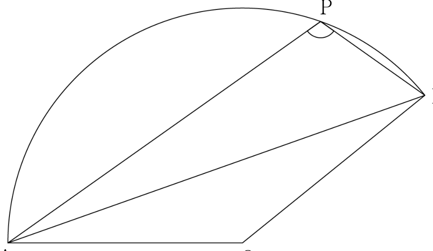
① \(\frac{2\sqrt{6}}{3}\)② \(\frac{5\sqrt{6}}{6}\)③ \(\sqrt{6}\)④ \(\frac{7\sqrt{6}}{6}\)⑤ \(\frac{4\sqrt{6}}{3}\)
원본 정답 ⑤
원본 풀이 (내부용)[출제의도] 사인법칙과 코사인법칙을 활용하여 문제 해결하기
삼각형 \(APB\)의 외접원의 반지름의 길이 \(R\)은 부채꼴 \(OAB\)의 반지름의 길이와 같으므로 \(R=6\).
\(\angle BPA=\theta\;(\theta>\frac{\pi}{2})\)라 할 때, 삼각형 \(APB\)에서 사인법칙에 의하여
\(
\sin\theta=\frac{8\sqrt2}{2\times6}=\frac{2\sqrt2}{3}
\)
\(
\cos^2\theta=1-\left(\frac{2\sqrt2}{3}\right)^2=\frac19
\)
\(\theta>\frac{\pi}{2}\)일 때 \(\cos\theta<0\)이므로 \(\cos\theta=-\frac13\).
\(\overline{BP}=k\)라 하면 \(\overline{AP}:\overline{BP}=3:1\)이므로 \(\overline{AP}=3k\).
삼각형 \(APB\)에서 코사인법칙에 의하여
\(
(3k)^2+k^2-2\times3k\times k\times\left(-\frac13\right)=(8\sqrt2)^2
\)
\(
9k^2+k^2+2k^2=128,\qquad k^2=\frac{32}{3}
\)
따라서 선분 \(BP\)의 길이는 \(\frac{4\sqrt6}{3}\).
쌍둥이 1/5 · 4점 쌍둥이중심이 $O$이고 반지름의 길이가 $5$인 부채꼴 $OAB$가 있습니다. $\overline{AB}=8$이고 부채꼴 $OAB$의 호 $AB$ 위의 한 점 $P$에 대하여 $\angle BPA>90^{\circ}$, $\overline{AP}:\overline{BP}=5:1$일 때, 선분 $BP$의 길이로 옳은 것을 고르세요.
① $\sqrt{2}$② $\frac{7\sqrt{2}}{6}$③ $\frac{4\sqrt{2}}{3}$④ $\frac{3\sqrt{2}}{2}$⑤ $\frac{5\sqrt{2}}{3}$
정답① $\sqrt{2}$ $\angle AOB=\theta$라 하면 $\overline{AB}=2\times5\times\sin\frac{\theta}{2}$이므로 $\sin\frac{\theta}{2}=\frac{4}{5}$, $\cos\frac{\theta}{2}=\frac{3}{5}$ 점 $P$는 호 $AB$ 위에 있으므로 $\angle APB=\pi-\frac{\theta}{2}$, $\cos(\angle APB)=-\frac{3}{5}$ $\overline{BP}=x$라 하면 코사인법칙에서 $64=25x^{2}+x^{2}+2\times5x\times x\times\frac{3}{5}=32x^{2}$ $x^{2}=2$이므로 $\overline{BP}=\sqrt{2}$
쌍둥이 2/5 · 4점 쌍둥이중심이 $O$이고 반지름의 길이가 $7$인 부채꼴 $OAB$가 있습니다. $\overline{AB}=7\sqrt{3}$이고 부채꼴 $OAB$의 호 $AB$ 위의 한 점 $P$에 대하여 $\angle BPA>90^{\circ}$, $\overline{AP}:\overline{BP}=2:1$일 때, 선분 $BP$의 길이로 옳은 것을 고르세요.
① $\frac{\sqrt{21}}{3}$② $\frac{\sqrt{21}}{2}$③ $\frac{2\sqrt{21}}{3}$④ $\frac{5\sqrt{21}}{6}$⑤ $\sqrt{21}$
정답⑤ $\sqrt{21}$ $\angle AOB=\theta$라 하면 $\overline{AB}=2\times7\times\sin\frac{\theta}{2}$이므로 $\sin\frac{\theta}{2}=\frac{\sqrt{3}}{2}$, $\cos\frac{\theta}{2}=\frac{1}{2}$ 점 $P$는 호 $AB$ 위에 있으므로 $\angle APB=\pi-\frac{\theta}{2}$, $\cos(\angle APB)=-\frac{1}{2}$ $\overline{BP}=x$라 하면 코사인법칙에서 $147=4x^{2}+x^{2}+2\times2x\times x\times\frac{1}{2}=7x^{2}$ $x^{2}=21$이므로 $\overline{BP}=\sqrt{21}$
쌍둥이 3/5 · 4점 쌍둥이중심이 $O$이고 반지름의 길이가 $4$인 부채꼴 $OAB$가 있습니다. $\overline{AB}=2\sqrt{15}$이고 부채꼴 $OAB$의 호 $AB$ 위의 한 점 $P$에 대하여 $\angle BPA>90^{\circ}$, $\overline{AP}:\overline{BP}=2:1$일 때, 선분 $BP$의 길이로 옳은 것을 고르세요.
① $\frac{5\sqrt{10}}{6}$② $\sqrt{10}$③ $\frac{7\sqrt{10}}{6}$④ $\frac{4\sqrt{10}}{3}$⑤ $\frac{3\sqrt{10}}{2}$
정답② $\sqrt{10}$ $\angle AOB=\theta$라 하면 $\overline{AB}=2\times4\times\sin\frac{\theta}{2}$이므로 $\sin\frac{\theta}{2}=\frac{\sqrt{15}}{4}$, $\cos\frac{\theta}{2}=\frac{1}{4}$ 점 $P$는 호 $AB$ 위에 있으므로 $\angle APB=\pi-\frac{\theta}{2}$, $\cos(\angle APB)=-\frac{1}{4}$ $\overline{BP}=x$라 하면 코사인법칙에서 $60=4x^{2}+x^{2}+2\times2x\times x\times\frac{1}{4}=6x^{2}$ $x^{2}=10$이므로 $\overline{BP}=\sqrt{10}$
원본 (내부용)집합 \(\{x\mid -4\le x\le4\}\)에서 정의된 함수 \( f(x)=2\sin\frac{\pi x}{4} \) 가 있다. 그림과 같이 함수 \(y=f(x)\)의 그래프가 직선 \(y=\sqrt{2}\)와 만나는 서로 다른 두 점을 \(A,B\)라 하고, 두 점 \(B,O\)를 지나는 직선이 함수 \(y=f(x)\)의 그래프와 만나는 점 중 \(B\)와 \(O\)가 아닌 점을 \(C\)라 하자. \(\angle BAC=\theta\)라 할 때, \(\sin\theta\)의 값은? (단, 점 \(B\)의 \(x\)좌표는 점 \(A\)의 \(x\)좌표보다 크고, \(O\)는 원점이다.) [4점]
① \(\frac{\sqrt{3}}{3}\)② \(\frac{7\sqrt{3}}{18}\)③ \(\frac{4\sqrt{3}}{9}\)④ \(\frac{\sqrt{3}}{2}\)⑤ \(\frac{5\sqrt{3}}{9}\)
원본 정답 ①
원본 풀이 (내부용)[출제의도] 삼각함수의 그래프 이해하기
방정식
\(
\sin\frac{\pi x}{4}=\frac{\sqrt2}{2}\qquad(-4\le x\le4)
\)
에서
\(
\frac{\pi x}{4}=\frac{\pi}{4}\quad\text{또는}\quad
\frac{\pi x}{4}=\frac{3\pi}{4},\qquad x=1\quad\text{또는}\quad x=3
\)
점 \(A\)의 좌표는 \((1,\sqrt2)\), 점 \(B\)의 좌표는 \((3,\sqrt2)\).
점 \(B\)와 점 \(C\)는 원점에 대하여 서로 대칭이므로 점 \(C\)의 좌표는 \((-3,-\sqrt2)\).
점 \(C\)에서 직선 \(y=\sqrt2\)에 내린 수선의 발을 \(H\)라 하면 점 \(H\)의 좌표는 \((-3,\sqrt2)\).
\(
\angle CAH=\pi-\theta,\quad \sin\theta=\sin(\pi-\theta),
\)
\(
\overline{CH}=2\sqrt2,\qquad
\overline{AC}=\sqrt{(-3-1)^2+(-\sqrt2-\sqrt2)^2}=2\sqrt6
\)
이므로 직각삼각형 \(ACH\)에서
\(
\sin(\pi-\theta)=\frac{\overline{CH}}{\overline{AC}}
=\frac{2\sqrt2}{2\sqrt6}=\frac{\sqrt3}{3}
\)
따라서 \(\sin\theta=\frac{\sqrt3}{3}\).
쌍둥이 1/5 · 4점 쌍둥이집합 $\{x\mid-6\le x\le6\}$에서 정의된 함수 $f(x)=4\sin\frac{\pi x}{6}$가 있습니다. 함수 $y=f(x)$의 그래프가 직선 $y=2$와 만나는 서로 다른 두 점을 $A$, $B$라 하고, 두 점 $B$, $O$를 지나는 직선이 함수 $y=f(x)$의 그래프와 만나는 점 중 $B$와 $O$가 아닌 점을 $C$라 합니다. $\angle BAC=\theta$라 할 때, $\sin\theta$의 값으로 옳은 것을 고르세요. (단, 점 $B$의 $x$좌표는 점 $A$의 $x$좌표보다 크고, $O$는 원점입니다.)
① $\frac{4\sqrt{13}}{39}$② $\frac{5\sqrt{13}}{39}$③ $\frac{2\sqrt{13}}{13}$④ $\frac{7\sqrt{13}}{39}$⑤ $\frac{8\sqrt{13}}{39}$
정답③ $\frac{2\sqrt{13}}{13}$ $4\sin\frac{\pi x}{6}=2$에서 $\sin\frac{\pi x}{6}=\frac{1}{2}$이므로 $A\left(1,\ 2\right)$, $B\left(5,\ 2\right)$ $f(x)$는 원점에 대하여 대칭이므로 직선 $BO$가 그래프와 다시 만나는 점은 $C\left(-5,\ -2\right)$ $\overrightarrow{AB}=\left(4,\ 0\right)$, $\overrightarrow{AC}=\left(-6,\ -4\right)$이므로 $\overline{AC}=2\sqrt{13}$ 삼각형 $ABC$의 넓이는 $\frac{1}{2}\times4\times4=\frac{1}{2}\times\overline{AB}\times\overline{AC}\times\sin\theta$ $\sin\theta=\frac{4}{2\sqrt{13}}=\frac{2\sqrt{13}}{13}$
숫자: 원본 4 4 2 4 2 → 쌍둥이 6 6 4 6 2 · 같은 수: 2 4
쌍둥이 2/5 · 4점 쌍둥이집합 $\{x\mid-6\le x\le6\}$에서 정의된 함수 $f(x)=2\sin\frac{\pi x}{6}$가 있습니다. 함수 $y=f(x)$의 그래프가 직선 $y=\sqrt{3}$과 만나는 서로 다른 두 점을 $A$, $B$라 하고, 두 점 $B$, $O$를 지나는 직선이 함수 $y=f(x)$의 그래프와 만나는 점 중 $B$와 $O$가 아닌 점을 $C$라 합니다. $\angle BAC=\theta$라 할 때, $\sin\theta$의 값으로 옳은 것을 고르세요. (단, 점 $B$의 $x$좌표는 점 $A$의 $x$좌표보다 크고, $O$는 원점입니다.)
① $\frac{1}{4}$② $\frac{1}{3}$③ $\frac{5}{12}$④ $\frac{1}{2}$⑤ $\frac{7}{12}$
정답④ $\frac{1}{2}$ $2\sin\frac{\pi x}{6}=\sqrt{3}$에서 $\sin\frac{\pi x}{6}=\frac{\sqrt{3}}{2}$이므로 $A\left(2,\ \sqrt{3}\right)$, $B\left(4,\ \sqrt{3}\right)$ $f(x)$는 원점에 대하여 대칭이므로 직선 $BO$가 그래프와 다시 만나는 점은 $C\left(-4,\ -\sqrt{3}\right)$ $\overrightarrow{AB}=\left(2,\ 0\right)$, $\overrightarrow{AC}=\left(-6,\ -2\sqrt{3}\right)$이므로 $\overline{AC}=4\sqrt{3}$ 삼각형 $ABC$의 넓이는 $\frac{1}{2}\times2\times2\sqrt{3}=\frac{1}{2}\times\overline{AB}\times\overline{AC}\times\sin\theta$ $\sin\theta=\frac{2\sqrt{3}}{4\sqrt{3}}=\frac{1}{2}$
숫자: 원본 4 4 2 4 2 → 쌍둥이 6 6 2 6 3 · 같은 수: 2
쌍둥이 3/5 · 4점 쌍둥이집합 $\{x\mid-4\le x\le4\}$에서 정의된 함수 $f(x)=6\sin\frac{\pi x}{4}$가 있습니다. 함수 $y=f(x)$의 그래프가 직선 $y=3\sqrt{2}$와 만나는 서로 다른 두 점을 $A$, $B$라 하고, 두 점 $B$, $O$를 지나는 직선이 함수 $y=f(x)$의 그래프와 만나는 점 중 $B$와 $O$가 아닌 점을 $C$라 합니다. $\angle BAC=\theta$라 할 때, $\sin\theta$의 값으로 옳은 것을 고르세요. (단, 점 $B$의 $x$좌표는 점 $A$의 $x$좌표보다 크고, $O$는 원점입니다.)
① $\frac{\sqrt{11}}{11}$② $\frac{3\sqrt{11}}{22}$③ $\frac{2\sqrt{11}}{11}$④ $\frac{5\sqrt{11}}{22}$⑤ $\frac{3\sqrt{11}}{11}$
정답⑤ $\frac{3\sqrt{11}}{11}$ $6\sin\frac{\pi x}{4}=3\sqrt{2}$에서 $\sin\frac{\pi x}{4}=\frac{\sqrt{2}}{2}$이므로 $A\left(1,\ 3\sqrt{2}\right)$, $B\left(3,\ 3\sqrt{2}\right)$ $f(x)$는 원점에 대하여 대칭이므로 직선 $BO$가 그래프와 다시 만나는 점은 $C\left(-3,\ -3\sqrt{2}\right)$ $\overrightarrow{AB}=\left(2,\ 0\right)$, $\overrightarrow{AC}=\left(-4,\ -6\sqrt{2}\right)$이므로 $\overline{AC}=2\sqrt{22}$ 삼각형 $ABC$의 넓이는 $\frac{1}{2}\times2\times6\sqrt{2}=\frac{1}{2}\times\overline{AB}\times\overline{AC}\times\sin\theta$ $\sin\theta=\frac{6\sqrt{2}}{2\sqrt{22}}=\frac{3\sqrt{11}}{11}$
숫자: 원본 4 4 2 4 2 → 쌍둥이 4 4 6 4 3 2 · 같은 수: 2 4
쌍둥이 4/5 · 4점 쌍둥이집합 $\{x\mid -10\le x\le 10\}$에서 $f(x)=5\sin(\pi x/10)$라 하자. 그래프와 직선 $y=3$의 두 교점을 $A,B$라 하고 $x_B>x_A$라 한다. 직선 $BO$가 그래프와 다시 만나는 점을 $C$라 할 때, $\sin\angle ABC$의 값을 고르시오. ($O$는 원점.)
① $\frac{3}{\sqrt{34}}$② $\frac12$③ $\frac1{\sqrt5}$④ $\frac2{\sqrt{13}}$⑤ $\frac5{\sqrt{34}}$
정답① $\frac{3}{\sqrt{34}}$ 두 교점의 $x$좌표를 $u$와 $10-u$라 쓰면 $A=(u,3)$, $B=(10-u,3)$이다. 함수는 원점 대칭이므로 $C=(-(10-u),-3)$이고 $BC=\sqrt{136}$이다. $AB=10-2u$이고 삼각형 $ABC$의 넓이는 밑변 $AB$와 높이 $6$을 이용하여 $3(10-2u)$이다. 따라서 $\sin\angle ABC=2[ABC]/(AB\cdot BC)=6/\sqrt{136}=3/\sqrt{34}$.
숫자: 원본 4 4 2 4 2 → 쌍둥이 10 10 5 10 3
쌍둥이 5/5 · 4점 쌍둥이집합 $\{x\mid -8\le x\le 8\}$에서 $f(x)=4\sin(\pi x/8)$라 하자. 그래프와 직선 $y=2$의 두 교점을 $A,B$라 하고 $x_B>x_A$라 한다. 직선 $BO$가 그래프와 다시 만나는 점을 $C$라 할 때, $\sin\angle ABC$의 값을 고르시오. ($O$는 원점.)
① $\frac{1}{\sqrt{5}}$② $\frac12$③ $\frac3{\sqrt{34}}$④ $\frac2{\sqrt{13}}$⑤ $\frac2{\sqrt5}$
정답① $\frac{1}{\sqrt{5}}$ 두 교점의 $x$좌표를 $u$와 $8-u$라 쓰면 $A=(u,2)$, $B=(8-u,2)$이다. 원점 대칭으로 $C=(-(8-u),-2)$이고 $BC=\sqrt{80}$이다. $AB=8-2u$이고 삼각형 $ABC$의 넓이는 밑변 $AB$와 높이 $4$를 이용하여 $2(8-2u)$이다. 따라서 $\sin\angle ABC=2[ABC]/(AB\cdot BC)=4/\sqrt{80}=1/\sqrt{5}$.
숫자: 원본 4 4 2 4 2 → 쌍둥이 8 8 4 8 2 · 같은 수: 2 4
129. 2022년 9월 18번 · 4점 · 수학Ⅰ 삼각함수 · 4점 쌍둥이
원본 (내부용)집합 \(\{x\mid-\pi\le x\le\pi\}\)에서 정의된 함수 \( f(x)=\left|\sin2x+\frac{2}{3}\right| \) 가 있다. 양수 \(k\)에 대하여 함수 \(y=f(x)\)의 그래프가 두 직선 \(y=3k,\ y=k\)와 만나는 서로 다른 점의 개수를 각각 \(m,n\)이라 할 때, \(|m-n|=3\)을 만족시킨다. \(-\pi\le x\le\pi\)일 때, \(x\)에 대한 방정식 \(f(x)=k\)의 모든 실근의 합은? [4점]
① \(\frac{3}{2}\pi\)② \(2\pi\)③ \(\frac{5}{2}\pi\)④ \(3\pi\)⑤ \(\frac{7}{2}\pi\)
원본 정답 ②
원본 풀이 (내부용)[출제의도] 삼각함수의 그래프를 활용하여 문제 해결하기
함수 \(y=f(x)\)의 그래프 개형은 그림과 같다. 그래프에 \(y=\left|\sin2x+\frac23\right|\), \(x=-\pi,0,\pi\), 수평선 \(y=k_0\)가 표시되어 있다. 눈금으로 \(\frac13,\frac23,\frac53\)이 표시되어 있다.
함수 \(y=f(x)\)의 그래프가 직선 \(y=k_0\;(k_0>0)\)와 만나는 서로 다른 점의 개수는
\(
0<k_0<\frac13\text{일 때 }8,\quad
k_0=\frac13\text{일 때 }6,
\)
\(
\frac13<k_0<\frac23\text{일 때 }4,\quad
k_0=\frac23\text{일 때 }5,
\)
\(
\frac23<k_0<\frac53\text{일 때 }4,\quad
k_0=\frac53\text{일 때 }2,\quad
k_0>\frac53\text{일 때 }0
\)
\(3k>k_0\)이므로 \(|m-n|=3\)을 만족시키는 \(m,n\)은 \(m=2,n=5\) 또는 \(m=5,n=8\).
\(m=2\)이면 \(3k=\frac53,\ k=\frac59\).
\(
\frac13<\frac59<\frac23
\)
에서 \(n=4\)이므로 조건을 만족시키지 않는다.
\(m=5\)이면 \(3k=\frac23,\ k=\frac29\).
\(
0<\frac29<\frac13
\)
에서 \(n=8\)이다.
\(-\pi\le x\le\pi\)일 때, 방정식
\(
\left|\sin2x+\frac23\right|=\frac29
\)
의 모든 실근을 크기순으로 나열한 것을 \(\alpha_1,\alpha_2,\alpha_3,\ldots,\alpha_8\)이라 하자.
\(
\alpha_1+\alpha_4=\alpha_2+\alpha_3=2\times\left(-\frac\pi4\right)=-\frac\pi2
\)
\(
\alpha_5+\alpha_8=\alpha_6+\alpha_7=2\times\frac{3\pi}{4}=\frac{3\pi}{2}
\)
따라서
\(
\alpha_1+\alpha_2+\cdots+\alpha_8
=2\times\left(-\frac\pi2\right)+2\times\frac{3\pi}{2}
=2\pi
\)
(참고) 아래 그림은 \(y=\left|\sin2x+\frac23\right|\)의 그래프이며, \(\alpha_1,\ldots,\alpha_8\), \(-\frac\pi4,\frac{3\pi}4\)가 표시되어 있다.
쌍둥이 1/5 · 4점 쌍둥이$f(x)=\left|\sin3x+\frac{1}{5}\right|$이 $[-\pi,\pi]$에서 정의되어 있다. 양수 $k$에 대하여 $y=f(x)$와 두 직선 $y=2k$, $y=k$의 교점 수를 각각 $m,n$이라 하자. $|m-n|=3$을 만족하는 가장 작은 양수 $k$의 값을 고르시오.
① $\frac{1}{5}$② $\frac{2}{5}$③ $\frac{3}{5}$④ $\frac{4}{5}$⑤ $\frac{5}{6}$
정답② $\frac{2}{5}$ $N(y)$를 방정식 $f(x)=y$의 서로 다른 해의 개수라 하자. $0<c<\frac12$일 때, $0<y<1-c$이고 $y\ne c$이면 두 사인값 $y-c$와 $-y-c$가 모두 $(-1,1)$에 있어 $N(y)=12$이다. $y=1-c$에서는 두 사인값이 $1-2c$와 $-1$이다. $1-2c$는 $(-1,1)$ 안쪽이고 $-1$은 극값이므로 $N(1-c)=6+3=9$. 따라서 $k=(1-c)/2$이면 $N(k)=12$, $N(2k)=9$이고 차는 3이다. $0<k<(1-c)/2$에서는 $k$와 $2k$가 모두 $0$과 $1-c$ 사이이다. 특수 높이 $c$에서 한쪽 개수만 1 증가할 수 있어 차는 1이고, 그 밖에는 두 개수가 같다. 그러므로 가장 작은 양수 해는 $k=\frac{2}{5}$이며 정답은 선택지 가운데 하나이다.
숫자: 원본 2 2 3 3 3 → 쌍둥이 3 1 5 2 3 · 같은 수: 2 3
쌍둥이 2/5 · 4점 쌍둥이$f(x)=\left|\sin3x+\frac{1}{4}\right|$이 $[-\pi,\pi]$에서 정의되어 있다. 양수 $k$에 대하여 $y=f(x)$와 두 직선 $y=2k$, $y=k$의 교점 수를 각각 $m,n$이라 하자. $|m-n|=3$을 만족하는 가장 작은 양수 $k$의 값을 고르시오.
① $\frac{1}{8}$② $\frac{1}{4}$③ $\frac{3}{8}$④ $\frac{1}{2}$⑤ $\frac{5}{8}$
정답③ $\frac{3}{8}$ $N(y)$를 방정식 $f(x)=y$의 서로 다른 해의 개수라 하자. $0<c<\frac12$일 때, $0<y<1-c$이고 $y\ne c$이면 두 사인값 $y-c$와 $-y-c$가 모두 $(-1,1)$에 있어 $N(y)=12$이다. $y=1-c$에서는 두 사인값이 $1-2c$와 $-1$이다. $1-2c$는 $(-1,1)$ 안쪽이고 $-1$은 극값이므로 $N(1-c)=6+3=9$. 따라서 $k=(1-c)/2$이면 $N(k)=12$, $N(2k)=9$이고 차는 3이다. $0<k<(1-c)/2$에서는 $k$와 $2k$가 모두 $0$과 $1-c$ 사이이다. 특수 높이 $c$에서 한쪽 개수만 1 증가할 수 있어 차는 1이고, 그 밖에는 두 개수가 같다. 그러므로 가장 작은 양수 해는 $k=\frac{3}{8}$이며 정답은 선택지 가운데 하나이다.
숫자: 원본 2 2 3 3 3 → 쌍둥이 3 1 4 2 3 · 같은 수: 2 3
쌍둥이 3/5 · 4점 쌍둥이$f(x)=\left|\sin3x+\frac{1}{6}\right|$이 $[-\pi,\pi]$에서 정의되어 있다. 양수 $k$에 대하여 $y=f(x)$와 두 직선 $y=4k$, $y=k$의 교점 수를 각각 $m,n$이라 하자. $|m-n|=3$을 만족하는 가장 작은 양수 $k$의 값을 고르시오.
① $\frac{1}{24}$② $\frac{5}{24}$③ $\frac{7}{24}$④ $\frac{11}{24}$⑤ $\frac{13}{24}$
정답② $\frac{5}{24}$ $N(y)$를 방정식 $f(x)=y$의 서로 다른 해의 개수라 하자. $0<c<\frac12$일 때, $0<y<1-c$이고 $y\ne c$이면 두 사인값 $y-c$와 $-y-c$가 모두 $(-1,1)$에 있어 $N(y)=12$이다. $y=1-c$에서는 두 사인값이 $1-2c$와 $-1$이다. $1-2c$는 $(-1,1)$ 안쪽이고 $-1$은 극값이므로 $N(1-c)=6+3=9$. 따라서 $k=(1-c)/4$이면 $N(k)=12$, $N(4k)=9$이고 차는 3이다. $0<k<(1-c)/4$에서는 $k$와 $4k$가 모두 $0$과 $1-c$ 사이이다. 특수 높이 $c$에서 한쪽 개수만 1 증가할 수 있어 차는 1이고, 그 밖에는 두 개수가 같다. 그러므로 가장 작은 양수 해는 $k=\frac{5}{24}$이며 정답은 선택지 가운데 하나이다.
숫자: 원본 2 2 3 3 3 → 쌍둥이 3 1 6 4 3 · 같은 수: 3
쌍둥이 4/5 · 4점 쌍둥이$f(x)=\left|\sin3x+\frac{2}{7}\right|$가 $[-\pi,\pi]$에서 정의되어 있다. 양수 $k$에 대하여 $y=f(x)$와 두 직선 $y=6k$, $y=k$의 교점 수를 각각 $m,n$이라 하자. $|m-n|=3$을 만족하는 가장 작은 양수 $k$의 값을 고르시오.
① $\frac{1}{42}$② $\frac{5}{42}$③ $\frac{11}{42}$④ $\frac{13}{42}$⑤ $\frac{17}{42}$
정답② $\frac{5}{42}$ $N(y)$를 방정식 $f(x)=y$의 서로 다른 해의 개수라 하자. $0<c<\frac12$일 때, $0<y<1-c$이고 $y\ne c$이면 두 사인값 $y-c$와 $-y-c$가 모두 $(-1,1)$에 있어 $N(y)=12$이다. $y=1-c$에서는 두 사인값이 $1-2c$와 $-1$이다. $1-2c$는 $(-1,1)$ 안쪽이고 $-1$은 극값이므로 $N(1-c)=6+3=9$. 따라서 $k=(1-c)/6$이면 $N(k)=12$, $N(6k)=9$이고 차는 3이다. $0<k<(1-c)/6$에서는 $k$와 $6k$가 모두 $0$과 $1-c$ 사이이다. 특수 높이 $c$에서 한쪽 개수만 1 증가할 수 있어 차는 1이고, 그 밖에는 두 개수가 같다. 그러므로 가장 작은 양수 해는 $k=\frac{5}{42}$이며 정답은 선택지 가운데 하나이다.
숫자: 원본 2 2 3 3 3 → 쌍둥이 3 2 7 6 3 · 같은 수: 2 3
쌍둥이 5/5 · 4점 쌍둥이$f(x)=\left|\sin3x+\frac{1}{3}\right|$이 $[-\pi,\pi]$에서 정의되어 있다. 양수 $k$에 대하여 $y=f(x)$와 두 직선 $y=5k$, $y=k$의 교점 수를 각각 $m,n$이라 하자. $|m-n|=3$을 만족하는 가장 작은 양수 $k$의 값을 고르시오.
① $\frac{1}{15}$② $\frac{2}{15}$③ $\frac{4}{15}$④ $\frac{7}{15}$⑤ $\frac{8}{15}$
정답② $\frac{2}{15}$ $N(y)$를 방정식 $f(x)=y$의 서로 다른 해의 개수라 하자. $0<c<\frac12$일 때, $0<y<1-c$이고 $y\ne c$이면 두 사인값 $y-c$와 $-y-c$가 모두 $(-1,1)$에 있어 $N(y)=12$이다. $y=1-c$에서는 두 사인값이 $1-2c$와 $-1$이다. $1-2c$는 $(-1,1)$ 안쪽이고 $-1$은 극값이므로 $N(1-c)=6+3=9$. 따라서 $k=(1-c)/5$이면 $N(k)=12$, $N(5k)=9$이고 차는 3이다. $0<k<(1-c)/5$에서는 $k$와 $5k$가 모두 $0$과 $1-c$ 사이이다. 특수 높이 $c$에서 한쪽 개수만 1 증가할 수 있어 차는 1이고, 그 밖에는 두 개수가 같다. 그러므로 가장 작은 양수 해는 $k=\frac{2}{15}$이며 정답은 선택지 가운데 하나이다.
숫자: 원본 2 2 3 3 3 → 쌍둥이 3 1 3 5 3 · 같은 수: 3
130. 2022년 9월 20번 · 4점 · 수학Ⅰ 삼각함수 · 4점 쌍둥이
원본 (내부용)그림과 같이 양수 \(a\)에 대하여 \(\overline{AB}=4,\ \overline{BC}=a,\ \overline{CA}=8\)인 삼각형 \(ABC\)가 있다. \(\angle BAC\)의 이등분선이 선분 \(BC\)와 만나는 점을 \(P\)라 하자. \(a(\sin B+\sin C)=6\sqrt{3}\)일 때, 선분 \(AP\)의 길이는? (단, \(\angle BAC>90^\circ\)) [4점]
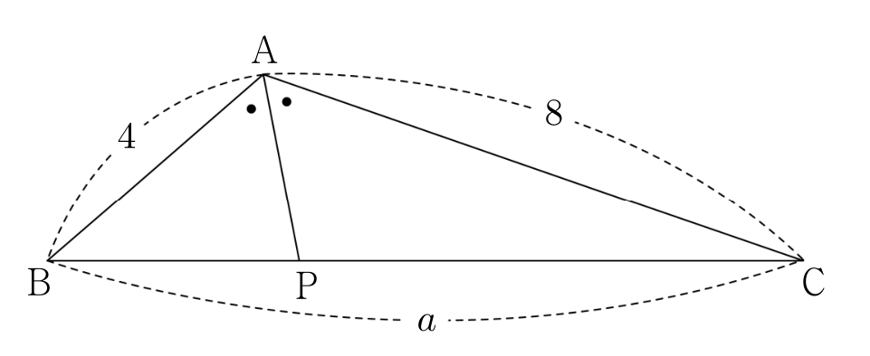
① \(\frac{7}{3}\)② \(\frac{8}{3}\)③ 3④ \(\frac{10}{3}\)⑤ \(\frac{11}{3}\)
원본 정답 ②
원본 풀이 (내부용)[출제의도] 사인법칙을 활용하여 문제 해결하기
삼각형 \(ABC\)의 외접원의 반지름의 길이를 \(R\)이라 하면
\(
\sin(\angle BAC)=\sin A=\frac a{2R},\qquad
\sin B=\frac8{2R},\qquad \sin C=\frac4{2R}
\)
\(
a(\sin B+\sin C)
=a\left(\frac8{2R}+\frac4{2R}\right)
=\frac{6a}{R}=6\sqrt3
\)
\(
\frac aR=\sqrt3,\qquad \sin A=\frac a{2R}=\frac{\sqrt3}{2}
\)
\(\angle BAC>90^\circ\)이므로 \(\angle BAC=\frac{2\pi}{3}\).
선분 \(AP\)가 \(\angle BAC\)를 이등분하므로
\(
\angle PAB=\angle PAC=\frac\pi3,\qquad
BP:PC=4:8=1:2
\)
삼각형 \(ABP\)의 넓이는 삼각형 \(ABC\)의 넓이의 \(\frac13\)배.
\(
\frac12\times4\times\overline{AP}\times\sin\frac\pi3
=
\frac13\left(\frac12\times4\times8\times\sin\frac{2\pi}{3}\right)
\)
따라서 선분 \(AP\)의 길이는 \(\frac83\).
쌍둥이 1/5 · 4점 쌍둥이양수 $a$에 대하여 삼각형 $ABC$의 변 길이가 $AB=8$, $BC=a$, $CA=5$이고 $\angle BAC>90^\circ$이다. $A$의 이등분선과 $BC$의 교점을 $P$라 하자. $a(\sin B+\sin C)=\frac{13\sqrt3}{2}$일 때, $AP$의 길이를 구하시오.
정답$\frac{40}{13}$ 사인법칙으로 $a(\sin B+\sin C)=(b+c)\sin A$. 따라서 $\sin A=\sqrt3/2$이고 둔각 조건에서 $A=120^\circ$. 각 이등분선 길이 공식으로 $AP=\frac{2bc\cos(A/2)}{b+c}=\frac{bc}{b+c}=\frac{40}{13}$.
쌍둥이 2/5 · 4점 쌍둥이양수 $a$에 대하여 $\overline{AB}=3$, $\overline{BC}=a$, $\overline{CA}=6$인 삼각형 $ABC$가 있습니다. $\angle BAC$의 이등분선이 선분 $BC$와 만나는 점을 $P$라 합니다. $a(\sin B+\sin C)=\frac{9\sqrt{3}}{2}$일 때, 선분 $AP$의 길이로 옳은 것을 고르세요. (단, $\angle BAC>90^{\circ}$)
① $2$② $3$③ $4$④ $5$⑤ $6$
정답① $2$ 외접원의 반지름을 $R$라 하면 사인법칙에서 $\sin B=\frac{6}{2R}$, $\sin C=\frac{3}{2R}$이므로 $a(\sin B+\sin C)=\frac{9a}{2R}=\frac{9\sqrt{3}}{2}$ $\frac{a}{2R}=\sin A=\frac{\sqrt{3}}{2}$이고 $\angle BAC>90^{\circ}$이므로 $\angle BAC=\frac{2}{3}\pi$ 삼각형 $ABC$의 넓이는 두 삼각형 $ABP$, $APC$의 넓이의 합이므로 $\frac{1}{2}\times3\times6\sin\frac{2}{3}\pi=\frac{1}{2}\times3\times\overline{AP}\sin\frac{\pi}{3}+\frac{1}{2}\times6\times\overline{AP}\sin\frac{\pi}{3}$ $18=9\,\overline{AP}$이므로 $\overline{AP}=2$
쌍둥이 3/5 · 4점 쌍둥이양수 $a$에 대하여 $\overline{AB}=3$, $\overline{BC}=a$, $\overline{CA}=12$인 삼각형 $ABC$가 있습니다. $\angle BAC$의 이등분선이 선분 $BC$와 만나는 점을 $P$라 합니다. $a(\sin B+\sin C)=\frac{15\sqrt{3}}{2}$일 때, 선분 $AP$의 길이로 옳은 것을 고르세요. (단, $\angle BAC>90^{\circ}$)
① $\frac{11}{5}$② $\frac{12}{5}$③ $\frac{13}{5}$④ $\frac{14}{5}$⑤ $3$
정답② $\frac{12}{5}$ 외접원의 반지름을 $R$라 하면 사인법칙에서 $\sin B=\frac{12}{2R}$, $\sin C=\frac{3}{2R}$이므로 $a(\sin B+\sin C)=\frac{15a}{2R}=\frac{15\sqrt{3}}{2}$ $\frac{a}{2R}=\sin A=\frac{\sqrt{3}}{2}$이고 $\angle BAC>90^{\circ}$이므로 $\angle BAC=\frac{2}{3}\pi$ 삼각형 $ABC$의 넓이는 두 삼각형 $ABP$, $APC$의 넓이의 합이므로 $\frac{1}{2}\times3\times12\sin\frac{2}{3}\pi=\frac{1}{2}\times3\times\overline{AP}\sin\frac{\pi}{3}+\frac{1}{2}\times12\times\overline{AP}\sin\frac{\pi}{3}$ $36=15\,\overline{AP}$이므로 $\overline{AP}=\frac{12}{5}$
숫자: 원본 4 8 6 3 90 → 쌍둥이 3 12 15 3 2 90 · 같은 수: 3 90
쌍둥이 4/5 · 4점 쌍둥이양수 $a$에 대하여 $\overline{AB}=6$, $\overline{BC}=a$, $\overline{CA}=10$인 삼각형 $ABC$가 있습니다. $\angle BAC$의 이등분선이 선분 $BC$와 만나는 점을 $P$라 합니다. $a(\sin B+\sin C)=8\sqrt{3}$일 때, 선분 $AP$의 길이로 옳은 것을 고르세요. (단, $\angle BAC>90^{\circ}$)
① $\frac{13}{4}$② $\frac{7}{2}$③ $\frac{15}{4}$④ $4$⑤ $\frac{17}{4}$
정답③ $\frac{15}{4}$ 외접원의 반지름을 $R$라 하면 사인법칙에서 $\sin B=\frac{10}{2R}$, $\sin C=\frac{6}{2R}$이므로 $a(\sin B+\sin C)=\frac{16a}{2R}=8\sqrt{3}$ $\frac{a}{2R}=\sin A=\frac{\sqrt{3}}{2}$이고 $\angle BAC>90^{\circ}$이므로 $\angle BAC=\frac{2}{3}\pi$ 삼각형 $ABC$의 넓이는 두 삼각형 $ABP$, $APC$의 넓이의 합이므로 $\frac{1}{2}\times6\times10\sin\frac{2}{3}\pi=\frac{1}{2}\times6\times\overline{AP}\sin\frac{\pi}{3}+\frac{1}{2}\times10\times\overline{AP}\sin\frac{\pi}{3}$ $60=16\,\overline{AP}$이므로 $\overline{AP}=\frac{15}{4}$
쌍둥이 5/5 · 4점 쌍둥이양수 $a$에 대하여 삼각형 $ABC$의 변 길이가 $AB=9$, $BC=a$, $CA=4$이고 $\angle BAC>90^\circ$이다. $A$의 이등분선과 $BC$의 교점을 $P$라 하자. $a(\sin B+\sin C)=\frac{13\sqrt3}{2}$일 때, $AP$의 길이를 구하시오.
정답$\frac{36}{13}$ 사인법칙으로 $a(\sin B+\sin C)=(b+c)\sin A$. 따라서 $\sin A=\sqrt3/2$이고 둔각 조건에서 $A=120^\circ$. 각 이등분선 길이 공식으로 $AP=\frac{2bc\cos(A/2)}{b+c}=\frac{bc}{b+c}=\frac{36}{13}$.
생성기 숫자판 1/6 · G2M1-02b#8$\cos\theta=\frac{1}{2}$일 때, $12\sin^{2}\theta$의 값을 구하세요.
정답$9$ $\sin^{2}\theta=1-\cos^{2}\theta=1-\left(\frac{1}{2}\right)^{2}=\frac{3}{4}$ 따라서 $12\sin^{2}\theta=9$
숫자: 원본 13 9 → 쌍둥이 1 2 12
생성기 숫자판 2/6 · G2M1-02b#8$\cos\theta=\frac{1}{3}$일 때, $9\sin^{2}\theta$의 값을 구하세요.
정답$8$ $\sin^{2}\theta=1-\cos^{2}\theta=1-\left(\frac{1}{3}\right)^{2}=\frac{8}{9}$ 따라서 $9\sin^{2}\theta=8$
숫자: 원본 13 9 → 쌍둥이 1 3 9 · 같은 수: 9
생성기 숫자판 3/6 · G2M1-02b#8$\cos\theta=\frac{3}{5}$일 때, $50\sin^{2}\theta$의 값을 구하세요.
정답$32$ $\sin^{2}\theta=1-\cos^{2}\theta=1-\left(\frac{3}{5}\right)^{2}=\frac{16}{25}$ 따라서 $50\sin^{2}\theta=32$
숫자: 원본 13 9 → 쌍둥이 3 5 50
생성기 숫자판 4/6 · G2M1-02b#8$\cos\theta=-\frac{1}{3}$일 때, $27\sin^{2}\theta$의 값을 구하세요.
정답$24$ $\sin^{2}\theta=1-\cos^{2}\theta=1-\left(-\frac{1}{3}\right)^{2}=\frac{8}{9}$ 따라서 $27\sin^{2}\theta=24$
숫자: 원본 13 9 → 쌍둥이 1 3 27
생성기 숫자판 5/6 · G2M1-02b#8$\cos\theta=\frac{2}{3}$일 때, $18\sin^{2}\theta$의 값을 구하세요.
정답$10$ $\sin^{2}\theta=1-\cos^{2}\theta=1-\left(\frac{2}{3}\right)^{2}=\frac{5}{9}$ 따라서 $18\sin^{2}\theta=10$
숫자: 원본 13 9 → 쌍둥이 2 3 18
생성기 숫자판 6/6 · G2M1-02b#8$\cos\theta=\frac{3}{4}$일 때, $16\sin^{2}\theta$의 값을 구하세요.
정답$7$ $\sin^{2}\theta=1-\cos^{2}\theta=1-\left(\frac{3}{4}\right)^{2}=\frac{7}{16}$ 따라서 $16\sin^{2}\theta=7$
숫자: 원본 13 9 → 쌍둥이 3 4 16
132. 2022년 11월 5번 · 3점 · 수학Ⅰ 삼각함수 · G2M1-02#8
원본 (내부용)\(0\le x\le3\pi\)일 때, 방정식 \(\sqrt2\cos x-1=0\)의 모든 해의 합은? [3점]
① \(\frac{15}{4}\pi\)② \(4\pi\)③ \(\frac{17}{4}\pi\)④ \(\frac92\pi\)⑤ \(\frac{19}{4}\pi\)
원본 정답 ③
원본 풀이 (내부용)[출제의도] 삼각방정식을 활용하여 문제해결하기
\(
\sqrt2\cos x-1=0,\qquad \cos x=\frac{\sqrt2}{2}
\)
\(
0\le x\le3\pi
\)
일 때, 방정식 \(\cos x=\frac{\sqrt2}{2}\)의 해는
\(
x=\frac\pi4,\quad x=\frac{7\pi}4,\quad x=\frac{9\pi}4
\)
따라서 모든 해의 합은
\(
\frac{17\pi}4
\)
생성기 숫자판 1/6 · G2M1-02#8$0\le x\le 2\pi$일 때, 방정식 $\sqrt{2}\cos x+1=0$의 모든 해의 합으로 옳은 것을 고르세요.
① $\pi$② $\frac{3}{2}\pi$③ $2\pi$④ $\frac{5}{2}\pi$⑤ $3\pi$
정답③ $2\pi$ $\sqrt{2}\cos x+1=0$에서 $\cos x=-\frac{\sqrt{2}}{2}$ $0\le x\le 2\pi$에서 $x=\frac{3}{4}\pi$ 또는 $x=\frac{5}{4}\pi$ 따라서 모든 해의 합은 $2\pi$
숫자: 원본 0 3 2 1 0 → 쌍둥이 0 2 2 1 0 · 같은 수: 0 1 2
생성기 숫자판 2/6 · G2M1-02#8$0\le x\le \pi$일 때, 방정식 $\sqrt{2}\sin x-1=0$의 모든 해의 합으로 옳은 것을 고르세요.
① $\frac{\pi}{2}$② $\pi$③ $\frac{3}{2}\pi$④ $2\pi$⑤ $\frac{5}{2}\pi$
정답② $\pi$ $\sqrt{2}\sin x-1=0$에서 $\sin x=\frac{\sqrt{2}}{2}$ $0\le x\le \pi$에서 $x=\frac{\pi}{4}$ 또는 $x=\frac{3}{4}\pi$ 따라서 모든 해의 합은 $\pi$
숫자: 원본 0 3 2 1 0 → 쌍둥이 0 2 1 0 · 같은 수: 0 1 2
생성기 숫자판 3/6 · G2M1-02#8$0\le x\le 2\pi$일 때, 방정식 $2\cos x+1=0$의 모든 해의 합으로 옳은 것을 고르세요.
① $\pi$② $\frac{3}{2}\pi$③ $2\pi$④ $\frac{5}{2}\pi$⑤ $3\pi$
정답③ $2\pi$ $2\cos x+1=0$에서 $\cos x=-\frac{1}{2}$ $0\le x\le 2\pi$에서 $x=\frac{2}{3}\pi$ 또는 $x=\frac{4}{3}\pi$ 따라서 모든 해의 합은 $2\pi$
숫자: 원본 0 3 2 1 0 → 쌍둥이 0 2 2 1 0 · 같은 수: 0 1 2
생성기 숫자판 4/6 · G2M1-02#8$0\le x\le \pi$일 때, 방정식 $2\sin x-1=0$의 모든 해의 합으로 옳은 것을 고르세요.
① $\frac{\pi}{2}$② $\pi$③ $\frac{3}{2}\pi$④ $2\pi$⑤ $\frac{5}{2}\pi$
정답② $\pi$ $2\sin x-1=0$에서 $\sin x=\frac{1}{2}$ $0\le x\le \pi$에서 $x=\frac{\pi}{6}$ 또는 $x=\frac{5}{6}\pi$ 따라서 모든 해의 합은 $\pi$
숫자: 원본 0 3 2 1 0 → 쌍둥이 0 2 1 0 · 같은 수: 0 1 2
생성기 숫자판 5/6 · G2M1-02#8$0\le x\le 3\pi$일 때, 방정식 $\sqrt{2}\sin x-1=0$의 모든 해의 합으로 옳은 것을 고르세요.
① $5\pi$② $\frac{11}{2}\pi$③ $6\pi$④ $\frac{13}{2}\pi$⑤ $7\pi$
정답③ $6\pi$ $\sqrt{2}\sin x-1=0$에서 $\sin x=\frac{\sqrt{2}}{2}$ $0\le x\le 3\pi$에서 $x=\frac{\pi}{4}$ 또는 $x=\frac{3}{4}\pi$ 또는 $x=\frac{9}{4}\pi$ 또는 $x=\frac{11}{4}\pi$ 따라서 모든 해의 합은 $6\pi$
숫자: 원본 0 3 2 1 0 → 쌍둥이 0 3 2 1 0 · 같은 수: 0 1 2 3
생성기 숫자판 6/6 · G2M1-02#8$0\le x\le 3\pi$일 때, 방정식 $\sqrt{2}\cos x-1=0$의 모든 해의 합으로 옳은 것을 고르세요.
① $\frac{13}{4}\pi$② $\frac{15}{4}\pi$③ $\frac{17}{4}\pi$④ $\frac{19}{4}\pi$⑤ $\frac{21}{4}\pi$
정답③ $\frac{17}{4}\pi$ $\sqrt{2}\cos x-1=0$에서 $\cos x=\frac{\sqrt{2}}{2}$ $0\le x\le 3\pi$에서 $x=\frac{\pi}{4}$ 또는 $x=\frac{7}{4}\pi$ 또는 $x=\frac{9}{4}\pi$ 따라서 모든 해의 합은 $\frac{17}{4}\pi$
숫자: 원본 0 3 2 1 0 → 쌍둥이 0 3 2 1 0 · 같은 수: 0 1 2 3
133. 2022년 11월 16번 · 4점 · 수학Ⅰ 삼각함수 · 4점 쌍둥이
원본 (내부용)\(3\sin^2\left(\theta+\frac23\pi\right)=8\sin\left(\theta+\frac{\pi}{6}\right)\)일 때, \( \cos\left(\theta-\frac{\pi}{3}\right) \) 의 값은? [4점]
① \(\frac16\)② \(\frac15\)③ \(\frac14\)④ \(\frac13\)⑤ \(\frac12\)
그림·참고 ---
원본 정답 ④
원본 풀이 (내부용)[출제의도] 삼각함수의 성질 이해하기
\(
\theta-\frac\pi3=\alpha
\)
라 하면
\(
3\sin^2\left(\theta+\frac{2\pi}3\right)
=3\sin^2(\pi+\alpha)
=3\sin^2\alpha=3-3\cos^2\alpha
\)
이고
\(
8\sin\left(\theta+\frac\pi6\right)
=8\sin\left(\frac\pi2+\alpha\right)=8\cos\alpha
\)
\(
3-3\cos^2\alpha+8\cos\alpha-3=0
\)
\(
3\cos^2\alpha+8\cos\alpha-3=0
\)
\(
(3\cos\alpha-1)(\cos\alpha+3)=0
\)
\(-1\le\cos\alpha\le1\)이므로 \(\cos\alpha=\frac13\).
따라서
\(
\cos\left(\theta-\frac\pi3\right)=\cos\alpha=\frac13
\)
쌍둥이 1/5 · 4점 쌍둥이$7\sin^{2}\left(\theta+\frac{7\pi}{10}\right)=48\sin\left(\theta+\frac{\pi}{5}\right)$일 때, $\cos\left(\theta-\frac{3\pi}{10}\right)$의 값을 구하세요.
① $\frac{1}{7}$② $\frac{1}{5}$③ $\frac{1}{4}$④ $\frac{1}{3}$⑤ $\frac{1}{2}$
정답① $\frac{1}{7}$ $u=\theta+\frac{\pi}{5}$라 두면 $\sin(\theta+\frac{7\pi}{10})=\cos u$이고 $\cos(\theta-\frac{3\pi}{10})=\sin u$이다. $s=\sin u$라 두면 $7(1-s^2)=48s$, 즉 $7s^2+48s-7=0$이다. 근은 $s=\frac{1}{7},-7$이고 $|s|\le1$이므로 구하는 값은 $\frac{1}{7}$이다.
숫자: 원본 3 23 8 6 3 → 쌍둥이 7 7 10 48 5 3 10 · 같은 수: 3
쌍둥이 2/5 · 4점 쌍둥이$2\sin^{2}\left(\theta+\frac{5}{6}\pi\right)=3\sin\left(\theta+\frac{\pi}{3}\right)$일 때, $\cos\left(\theta-\frac{\pi}{6}\right)$의 값으로 옳은 것을 고르세요.
① $\frac{9}{20}$② $\frac{1}{2}$③ $\frac{11}{20}$④ $\frac{3}{5}$⑤ $\frac{13}{20}$
쌍둥이 3/5 · 4점 쌍둥이$4\sin^{2}\left(\theta+\frac{2}{3}\pi\right)=15\sin\left(\theta+\frac{\pi}{6}\right)$일 때, $\cos\left(\theta-\frac{\pi}{3}\right)$의 값으로 옳은 것을 고르세요.
① $\frac{1}{20}$② $\frac{1}{10}$③ $\frac{3}{20}$④ $\frac{1}{5}$⑤ $\frac{1}{4}$
쌍둥이 4/5 · 4점 쌍둥이$5\sin^{2}\left(\theta+\frac{5}{6}\pi\right)=24\sin\left(\theta+\frac{\pi}{3}\right)$일 때, $\cos\left(\theta-\frac{\pi}{6}\right)$의 값으로 옳은 것을 고르세요.
① $\frac{1}{5}$② $\frac{1}{4}$③ $\frac{3}{10}$④ $\frac{7}{20}$⑤ $\frac{2}{5}$
쌍둥이 5/5 · 4점 쌍둥이$14\sin^{2}\left(\theta+\frac{9\pi}{14}\right)=45\sin\left(\theta+\frac{\pi}{7}\right)$일 때, $\cos\left(\theta-\frac{5\pi}{14}\right)$의 값을 구하세요.
① $\frac{1}{7}$② $\frac{2}{7}$③ $\frac{3}{7}$④ $\frac{4}{7}$⑤ $\frac{5}{7}$
정답② $\frac{2}{7}$ $u=\theta+\frac{\pi}{7}$라 두면 $\sin(\theta+\frac{9\pi}{14})=\cos u$이고 $\cos(\theta-\frac{5\pi}{14})=\sin u$이다. $s=\sin u$라 두면 $14(1-s^2)=45s$, 즉 $14s^2+45s-14=0$이다. 근은 $s=\frac{2}{7},-\frac{7}{2}$이고 $|s|\le1$이므로 구하는 값은 $\frac{2}{7}$이다.
숫자: 원본 3 23 8 6 3 → 쌍둥이 14 9 14 45 7 5 14
134. 2022년 11월 20번 · 4점 · 수학Ⅰ 삼각함수 · 4점 쌍둥이
원본 (내부용)반지름의 길이가 \(\sqrt3\)인 원 \(C\)에 내접하는 삼각형 \(ABC\)에 대하여 \(\angle BAC\)의 이등분선이 원 \(C\)와 만나는 점 중 \(A\)가 아닌 점을 \(D\)라 하고, 두 선분 \(BC,\ AD\)의 교점을 \(E\)라 하자. \(\overline{BD}=\sqrt3\)일 때, <보기>에서 옳은 것만을 있는 대로 고른 것은? [4점] ㄱ. \(\sin(\angle DBE)=\frac12\) ㄴ. \(\overline{AB}^{\,2}+\overline{AC}^{\,2}=\overline{AB}\times\overline{AC}+9\) ㄷ. 삼각형 \(ABC\)의 넓이가 삼각형 \(BDE\)의 넓이의 4배가 되도록 하는 모든 \(\overline{BE}\)의 값의 합은 \(\frac94\)이다.
① ㄱ② ㄷ③ ㄱ, ㄴ④ ㄴ, ㄷ⑤ ㄱ, ㄴ, ㄷ
그림·참고 도형 설명: 원 \(C\) 위에 \(A,B,C,D\)가 놓인 원주 삼각형이 그려져 있다. \(A\)는 왼쪽 아래, \(B\)는 오른쪽 아래, \(C\)는 위쪽, \(D\)는 오른쪽에 있다. 선분 \(AD\)와 \(CB\)가 원 안의 점 \(E\)에서 교차한다. \(A\)에서 나가는 \(AC, AB, AD\)가 표시되어 있으며, \(AD\)는 \(\angle BAC\)의 이등분선이다. ---
원본 정답 ⑤
원본 풀이 (내부용)[출제의도] 삼각함수를 이용하여 추론하기
\(
\angle DAC=\angle BAD=\theta
\)
라 하면 두 각 \(\angle DAC,\angle DBC\)가 모두 호 \(CD\)에 대한 원주각이므로
\(
\angle DBC=\theta
\)
ㄱ. 삼각형 \(ABD\)에서 사인법칙에 의하여
\(
\frac{BD}{\sin(\angle BAD)}=2\sqrt3,\qquad \sin\theta=\frac12
\)
\(
\sin(\angle DBE)=\sin(\angle DBC)=\frac12\quad(\text{참})
\)
ㄴ. \(0<\angle BAC=2\theta<\pi\)에서 \(0<\theta<\frac\pi2\)이고
\(
\sin\theta=\frac12
\)
이므로 \(\theta=\frac\pi6\).
\(
\angle BAC=2\times\frac\pi6=\frac\pi3
\)
삼각형 \(ABC\)에서 사인법칙에 의하여
\(
\frac{BC}{\sin\frac\pi3}=2\sqrt3,\qquad BC=3
\)
삼각형 \(ABC\)에서 코사인법칙에 의하여
\(
BC^2=AB^2+AC^2-2\times AB\times AC\times\cos\frac\pi3
\)
\(
AB^2+AC^2=AB\times AC+9\quad\cdots(*)\ (\text{참})
\)
ㄷ. \(BE=a\ (0<a<3)\)이라 하면
\(
CE=BC-BE=3-a
\)
삼각형 \(ABC\)에서 \(\angle BAE=\angle EAC\)이므로
\(
\overline{AB}:\overline{AC}=\overline{BE}:\overline{CE}
\)
에서
\(
\overline{AB}:\overline{AC}=a:(3-a)
\)
양수 \(k\)에 대하여
\(
\overline{AB}=ak,\quad \overline{AC}=(3-a)k
\)
라 하면 삼각형 \(ABC\)의 넓이는
\(
\frac12\times\overline{AB}\times\overline{AC}\times\sin\frac\pi3
=\frac{\sqrt3}{4}a(3-a)k^2
\)
이고 삼각형 \(BDE\)의 넓이는
\(
\frac12\times\overline{BD}\times\overline{BE}\times\sin\frac\pi6
=\frac{\sqrt3}{4}a
\)
삼각형 \(ABC\)의 넓이가 삼각형 \(BDE\)의 넓이의 4배이어야 하므로
\(
\frac{\sqrt3}{4}a(3-a)k^2
=4\times\frac{\sqrt3}{4}a
\)
\(
(3-a)k^2=4\quad\cdots(**)
\)
(*)에 의하여
\(
(ak)^2+\{(3-a)k\}^2=(ak)(3-a)k+9
\)
\(
k^2(a^2-3a+3)=3
\)
위 식에 (**)를 대입하면
\(
4(a^2-3a+3)=3(3-a)
\)
\(
4a^2-9a+3=0
\)
\(
a=\frac{9+\sqrt{33}}8\quad\text{또는}\quad a=\frac{9-\sqrt{33}}8
\)
그러므로 모든 \(a\)의 값의 합은 \(\frac94\) (참).
따라서 옳은 것은 ㄱ, ㄴ, ㄷ
쌍둥이 1/5 · 4점 쌍둥이반지름의 길이가 $3$인 원 $\mathcal C$에 내접하는 삼각형 $ABC$가 있다. $\angle BAC$의 이등분선과 원 $\mathcal C$의 두 번째 교점을 $D$라 하고, $E=AD\cap BC$라 하자. $\overline{BD}=3$이고, 삼각형 $ABC$의 넓이가 삼각형 $BDE$의 넓이의 $5$배가 되도록 하는 모든 삼각형에 대하여 다음 보기 중 옳지 않은 것만을 있는 대로 고른 것은?
ㄱ. $2\cos\angle DBE=1$
ㄴ. $2\overline{AB}^2+2\overline{AC}^2=2\overline{AB}\times\overline{AC}+54$
ㄷ. 조건을 만족시키는 모든 $\overline{BE}$의 값의 곱은 $\frac{18}{5}$이다.
① ① ㄱ② ② ㄴ③ ③ ㄷ④ ④ ㄱ, ㄴ⑤ ⑤ ㄱ, ㄴ, ㄷ
정답① ① ㄱ 현 $BD=R=2R\sin(\angle BAD)$이고 $AD$는 각의 이등분선이므로 $\angle BAC=60^\circ$. 또한 $D$는 호 $BC$의 중점이어서 $\angle DBE=30^\circ$, $BC=\sqrt3R$이다. $\gamma=\angle ACB$라 하면 $\angle ABC=120^\circ-\gamma$. 넓이비는 $8\sin60^\circ\sin(120^\circ-\gamma)\sin(150^\circ-\gamma)=3+2\sqrt3\sin2\gamma$이다. 비가 5이므로 $\sin2\gamma=1/\sqrt3$이고, $z=\tan\gamma$는 $z^2-2\sqrt3z+1=0$의 두 양근 $\sqrt3\pm\sqrt2$이다. 사인법칙에서 $BE/R=\sin\gamma/\sin(150^\circ-\gamma)=2z/(1+\sqrt3z)$. 두 값의 곱은 $4/[1+\sqrt3(2\sqrt3)+3]=2/5$이므로 모든 $BE$의 곱은 $2R^2/5$이다. ㄱ은 $\cos30^\circ=\sqrt3/2$, ㄴ은 코사인법칙과 $BC^2=3R^2$으로 판정한다.
쌍둥이 2/5 · 4점 쌍둥이반지름의 길이가 $2$인 원 $\mathcal C$에 내접하는 삼각형 $ABC$가 있다. $\angle BAC$의 이등분선과 원 $\mathcal C$의 두 번째 교점을 $D$라 하고, $E=AD\cap BC$라 하자. $\overline{BD}=2$이고, 삼각형 $ABC$의 넓이가 삼각형 $BDE$의 넓이의 $5$배가 되도록 하는 모든 삼각형에 대하여 다음 보기 중 옳지 않은 것만을 있는 대로 고른 것은?
ㄱ. $2\cos\angle DBE=\sqrt3$
ㄴ. $2\overline{AB}^2+2\overline{AC}^2=2\overline{AB}\times\overline{AC}+24$
ㄷ. 조건을 만족시키는 모든 $\overline{BE}$의 값의 곱은 $2$이다.
① ① ㄱ② ② ㄴ③ ③ ㄷ④ ④ ㄱ, ㄴ⑤ ⑤ ㄱ, ㄴ, ㄷ
정답③ ③ ㄷ 현 $BD=R=2R\sin(\angle BAD)$이고 $AD$는 각의 이등분선이므로 $\angle BAC=60^\circ$. 또한 $D$는 호 $BC$의 중점이어서 $\angle DBE=30^\circ$, $BC=\sqrt3R$이다. $\gamma=\angle ACB$라 하면 $\angle ABC=120^\circ-\gamma$. 넓이비는 $8\sin60^\circ\sin(120^\circ-\gamma)\sin(150^\circ-\gamma)=3+2\sqrt3\sin2\gamma$이다. 비가 5이므로 $\sin2\gamma=1/\sqrt3$이고, $z=\tan\gamma$는 $z^2-2\sqrt3z+1=0$의 두 양근 $\sqrt3\pm\sqrt2$이다. 사인법칙에서 $BE/R=\sin\gamma/\sin(150^\circ-\gamma)=2z/(1+\sqrt3z)$. 두 값의 곱은 $4/[1+\sqrt3(2\sqrt3)+3]=2/5$이므로 모든 $BE$의 곱은 $2R^2/5$이다. ㄱ은 $\cos30^\circ=\sqrt3/2$, ㄴ은 코사인법칙과 $BC^2=3R^2$으로 판정한다.
쌍둥이 3/5 · 4점 쌍둥이반지름의 길이가 $4$인 원 $\mathcal C$에 내접하는 삼각형 $ABC$가 있다. $\angle BAC$의 이등분선과 원 $\mathcal C$의 두 번째 교점을 $D$라 하고, $E=AD\cap BC$라 하자. $\overline{BD}=4$이고, 삼각형 $ABC$의 넓이가 삼각형 $BDE$의 넓이의 $5$배가 되도록 하는 모든 삼각형에 대하여 다음 보기 중 옳지 않은 것만을 있는 대로 고른 것은?
ㄱ. $2\cos\angle DBE=\sqrt3$
ㄴ. $2\overline{AB}^2+2\overline{AC}^2=2\overline{AB}\times\overline{AC}+128$
ㄷ. 조건을 만족시키는 모든 $\overline{BE}$의 값의 곱은 $\frac{32}{5}$이다.
① ① ㄱ② ② ㄴ③ ③ ㄷ④ ④ ㄱ, ㄴ⑤ ⑤ ㄱ, ㄴ, ㄷ
정답② ② ㄴ 현 $BD=R=2R\sin(\angle BAD)$이고 $AD$는 각의 이등분선이므로 $\angle BAC=60^\circ$. 또한 $D$는 호 $BC$의 중점이어서 $\angle DBE=30^\circ$, $BC=\sqrt3R$이다. $\gamma=\angle ACB$라 하면 $\angle ABC=120^\circ-\gamma$. 넓이비는 $8\sin60^\circ\sin(120^\circ-\gamma)\sin(150^\circ-\gamma)=3+2\sqrt3\sin2\gamma$이다. 비가 5이므로 $\sin2\gamma=1/\sqrt3$이고, $z=\tan\gamma$는 $z^2-2\sqrt3z+1=0$의 두 양근 $\sqrt3\pm\sqrt2$이다. 사인법칙에서 $BE/R=\sin\gamma/\sin(150^\circ-\gamma)=2z/(1+\sqrt3z)$. 두 값의 곱은 $4/[1+\sqrt3(2\sqrt3)+3]=2/5$이므로 모든 $BE$의 곱은 $2R^2/5$이다. ㄱ은 $\cos30^\circ=\sqrt3/2$, ㄴ은 코사인법칙과 $BC^2=3R^2$으로 판정한다.
쌍둥이 4/5 · 4점 쌍둥이반지름 $5$인 원에 내접하는 삼각형 $ABC$에서 각의 이등분선 $AD$는 원과 두 번째로 $D$에서 만나고 $E=AD\cap BC$이다. $BD=5$, $[ABC]=5[BDE]$일 때 다음 명제 중 옳은 것의 개수를 구하시오. ㄱ. $2\cos\angle DBE=\sqrt3$ ㄴ. $2AB^2+2AC^2=2AB\cdot AC+150$ ㄷ. 모든 가능한 $BE$의 곱은 $25/2$이다.
① $0$② $1$③ $2$④ $3$⑤ $4$
정답③ $2$ 기준 반지름 2인 구성에서 모든 길이를 $5/2$배 했으므로 참거짓이 유지됩니다. 옳은 명제는 두 개입니다.
쌍둥이 5/5 · 4점 쌍둥이반지름 $6$인 원에 내접하는 삼각형 $ABC$에서 각의 이등분선 $AD$는 원과 두 번째로 $D$에서 만나고 $E=AD\cap BC$이다. $BD=6$, $[ABC]=5[BDE]$일 때 다음 명제 중 옳은 것의 개수를 구하시오. ㄱ. $2\cos\angle DBE=\sqrt3$ ㄴ. $2AB^2+2AC^2=2AB\cdot AC+216$ ㄷ. 모든 가능한 $BE$의 곱은 $18$이다.
① $0$② $1$③ $2$④ $3$⑤ $4$
정답③ $2$ 기준 구성의 닮음 확대이며, 참거짓은 바뀌지 않습니다. 옳은 명제는 두 개입니다.
원본 (내부용)선분 \(AB\)를 지름으로 하는 반원의 호 \(AB\) 위에 점 \(C\)가 있다. 선분 \(AB\)의 중점을 \(O\)라 할 때, 호 \(AC\)의 길이가 \(\pi\)이고 부채꼴 \(OBC\)의 넓이가 \(15\pi\)이다. 선분 \(OA\)의 길이를 구하시오. (단, 점 \(C\)는 점 \(A\)도 아니고 점 \(B\)도 아니다.) [3점] 수평 지름 \(AB\)를 밑변으로 하는 윗반원이 그려져 있고 \(O\)는 지름의 중점이다. \(C\)는 반원의 왼쪽 위 호 위에 있으며 선분 \(OC\)가 그려져 있다.
원본 정답 6
원본 풀이 (내부용)[출제의도] 호도법의 정의를 활용하여 문제해결하기
\(
\overline{OA}=r\ (r>0),\quad \angle COA=\theta\ (0<\theta<\pi)
\)
라 하면 호 \(AC\)의 길이가 \(\pi\)이므로
\(
r\theta=\pi
\)
에서
\(
\theta=\frac\pi r
\)
부채꼴 \(OBC\)의 넓이가 \(15\pi\)이므로
\(
15\pi=\frac12r^2(\pi-\theta)
=\frac12r^2\left(\pi-\frac\pi r\right)
=\frac12\pi(r^2-r)
\)
\(
r^2-r-30=0,\quad(r-6)(r+5)=0
\)
에서 \(r=6\).
따라서 선분 \(OA\)의 길이는 6
생성기 숫자판 1/6 · G2M8-05#3선분 $\mathrm{AB}$를 지름으로 하는 반원의 호 $\mathrm{AB}$ 위에 점 $\mathrm{C}$가 있습니다. 선분 $\mathrm{AB}$의 중점을 $\mathrm{O}$라 할 때, 호 $\mathrm{AC}$의 길이가 $\pi$이고 부채꼴 $\mathrm{OBC}$의 넓이가 $10\pi$입니다. 선분 $\mathrm{OA}$의 길이를 구하세요. (단, 점 $\mathrm{C}$는 점 $\mathrm{A}$도 아니고 점 $\mathrm{B}$도 아닙니다.)
정답$5$ $\overline{\mathrm{OA}}=r$라 하면 $\angle\mathrm{AOC}=\theta$에 대하여 $r\theta=\pi$ $\angle\mathrm{BOC}=\pi-\theta$이므로 부채꼴 $\mathrm{OBC}$의 넓이는 $\frac{1}{2}r^{2}\left(\pi-\theta\right)=\frac{1}{2}\left(\pi r^{2}-\pi r\right)$ $\frac{1}{2}\left(\pi r^{2}-\pi r\right)=10\pi$에서 $r^{2}-r-20=0$ $\left(r-5\right)\left(r+4\right)=0$이고 $r>0$이므로 $r=5$
숫자: 원본 15 → 쌍둥이 10
생성기 숫자판 2/6 · G2M8-05#3선분 $\mathrm{AB}$를 지름으로 하는 반원의 호 $\mathrm{AB}$ 위에 점 $\mathrm{C}$가 있습니다. 선분 $\mathrm{AB}$의 중점을 $\mathrm{O}$라 할 때, 호 $\mathrm{AC}$의 길이가 $3\pi$이고 부채꼴 $\mathrm{OBC}$의 넓이가 $14\pi$입니다. 선분 $\mathrm{OA}$의 길이를 구하세요. (단, 점 $\mathrm{C}$는 점 $\mathrm{A}$도 아니고 점 $\mathrm{B}$도 아닙니다.)
정답$7$ $\overline{\mathrm{OA}}=r$라 하면 $\angle\mathrm{AOC}=\theta$에 대하여 $r\theta=3\pi$ $\angle\mathrm{BOC}=\pi-\theta$이므로 부채꼴 $\mathrm{OBC}$의 넓이는 $\frac{1}{2}r^{2}\left(\pi-\theta\right)=\frac{1}{2}\left(\pi r^{2}-3\pi r\right)$ $\frac{1}{2}\left(\pi r^{2}-3\pi r\right)=14\pi$에서 $r^{2}-3r-28=0$ $\left(r-7\right)\left(r+4\right)=0$이고 $r>0$이므로 $r=7$
숫자: 원본 15 → 쌍둥이 3 14
생성기 숫자판 3/6 · G2M8-05#3선분 $\mathrm{AB}$를 지름으로 하는 반원의 호 $\mathrm{AB}$ 위에 점 $\mathrm{C}$가 있습니다. 선분 $\mathrm{AB}$의 중점을 $\mathrm{O}$라 할 때, 호 $\mathrm{AC}$의 길이가 $3\pi$이고 부채꼴 $\mathrm{OBC}$의 넓이가 $54\pi$입니다. 선분 $\mathrm{OA}$의 길이를 구하세요. (단, 점 $\mathrm{C}$는 점 $\mathrm{A}$도 아니고 점 $\mathrm{B}$도 아닙니다.)
정답$12$ $\overline{\mathrm{OA}}=r$라 하면 $\angle\mathrm{AOC}=\theta$에 대하여 $r\theta=3\pi$ $\angle\mathrm{BOC}=\pi-\theta$이므로 부채꼴 $\mathrm{OBC}$의 넓이는 $\frac{1}{2}r^{2}\left(\pi-\theta\right)=\frac{1}{2}\left(\pi r^{2}-3\pi r\right)$ $\frac{1}{2}\left(\pi r^{2}-3\pi r\right)=54\pi$에서 $r^{2}-3r-108=0$ $\left(r-12\right)\left(r+9\right)=0$이고 $r>0$이므로 $r=12$
숫자: 원본 15 → 쌍둥이 3 54
생성기 숫자판 4/6 · G2M8-05#3선분 $\mathrm{AB}$를 지름으로 하는 반원의 호 $\mathrm{AB}$ 위에 점 $\mathrm{C}$가 있습니다. 선분 $\mathrm{AB}$의 중점을 $\mathrm{O}$라 할 때, 호 $\mathrm{AC}$의 길이가 $3\pi$이고 부채꼴 $\mathrm{OBC}$의 넓이가 $44\pi$입니다. 선분 $\mathrm{OA}$의 길이를 구하세요. (단, 점 $\mathrm{C}$는 점 $\mathrm{A}$도 아니고 점 $\mathrm{B}$도 아닙니다.)
정답$11$ $\overline{\mathrm{OA}}=r$라 하면 $\angle\mathrm{AOC}=\theta$에 대하여 $r\theta=3\pi$ $\angle\mathrm{BOC}=\pi-\theta$이므로 부채꼴 $\mathrm{OBC}$의 넓이는 $\frac{1}{2}r^{2}\left(\pi-\theta\right)=\frac{1}{2}\left(\pi r^{2}-3\pi r\right)$ $\frac{1}{2}\left(\pi r^{2}-3\pi r\right)=44\pi$에서 $r^{2}-3r-88=0$ $\left(r-11\right)\left(r+8\right)=0$이고 $r>0$이므로 $r=11$
숫자: 원본 15 → 쌍둥이 3 44
생성기 숫자판 5/6 · G2M8-05#3선분 $\mathrm{AB}$를 지름으로 하는 반원의 호 $\mathrm{AB}$ 위에 점 $\mathrm{C}$가 있습니다. 선분 $\mathrm{AB}$의 중점을 $\mathrm{O}$라 할 때, 호 $\mathrm{AC}$의 길이가 $4\pi$이고 부채꼴 $\mathrm{OBC}$의 넓이가 $16\pi$입니다. 선분 $\mathrm{OA}$의 길이를 구하세요. (단, 점 $\mathrm{C}$는 점 $\mathrm{A}$도 아니고 점 $\mathrm{B}$도 아닙니다.)
정답$8$ $\overline{\mathrm{OA}}=r$라 하면 $\angle\mathrm{AOC}=\theta$에 대하여 $r\theta=4\pi$ $\angle\mathrm{BOC}=\pi-\theta$이므로 부채꼴 $\mathrm{OBC}$의 넓이는 $\frac{1}{2}r^{2}\left(\pi-\theta\right)=\frac{1}{2}\left(\pi r^{2}-4\pi r\right)$ $\frac{1}{2}\left(\pi r^{2}-4\pi r\right)=16\pi$에서 $r^{2}-4r-32=0$ $\left(r-8\right)\left(r+4\right)=0$이고 $r>0$이므로 $r=8$
숫자: 원본 15 → 쌍둥이 4 16
생성기 숫자판 6/6 · G2M8-05#3선분 $\mathrm{AB}$를 지름으로 하는 반원의 호 $\mathrm{AB}$ 위에 점 $\mathrm{C}$가 있습니다. 선분 $\mathrm{AB}$의 중점을 $\mathrm{O}$라 할 때, 호 $\mathrm{AC}$의 길이가 $3\pi$이고 부채꼴 $\mathrm{OBC}$의 넓이가 $90\pi$입니다. 선분 $\mathrm{OA}$의 길이를 구하세요. (단, 점 $\mathrm{C}$는 점 $\mathrm{A}$도 아니고 점 $\mathrm{B}$도 아닙니다.)
정답$15$ $\overline{\mathrm{OA}}=r$라 하면 $\angle\mathrm{AOC}=\theta$에 대하여 $r\theta=3\pi$ $\angle\mathrm{BOC}=\pi-\theta$이므로 부채꼴 $\mathrm{OBC}$의 넓이는 $\frac{1}{2}r^{2}\left(\pi-\theta\right)=\frac{1}{2}\left(\pi r^{2}-3\pi r\right)$ $\frac{1}{2}\left(\pi r^{2}-3\pi r\right)=90\pi$에서 $r^{2}-3r-180=0$ $\left(r-15\right)\left(r+12\right)=0$이고 $r>0$이므로 $r=15$
숫자: 원본 15 → 쌍둥이 3 90
136. 2022년 11월 28번 · 4점 · 수학Ⅰ 삼각함수 · 4점 쌍둥이
원본 (내부용)자연수 \(n\)에 대하여 닫힌구간 \([0,n]\)에서 함수 \( y=2\sin\left\{\frac{\pi}{6}(x+1)\right\} \) 의 최댓값을 \(f(n)\), 최솟값을 \(g(n)\)이라 할 때, 부등식 \(2<f(n)-g(n)<4\)를 만족시키는 모든 \(n\)의 값의 합을 구하시오. [4점] 원본 페이지 표기: 11 (하단 표기: 11/12)
원본 정답 13
원본 풀이 (내부용)[출제의도] 삼각함수의 그래프를 이용하여 추론하기
함수
\(
y=2\sin\left\{\frac\pi6(x+1)\right\}
\)
의 주기는
\(
\frac{2\pi}{\left|\frac\pi6\right|}=12
\)
이고, 최댓값과 최솟값은 각각 \(2,\ -2\)이다.
또한 함수
\(
y=2\sin\left\{\frac\pi6(x+1)\right\}
\)
의 그래프는 함수
\(
y=2\sin\frac\pi6x
\)
의 그래프를 \(x\)축의 방향으로 \(-1\)만큼 평행이동한 그래프이다.
[그래프 설명] 사인곡선 \(y=2\sin\{\frac\pi6(x+1)\}\)이 표시되어 있다. 그래프는 \(x=-1\)에서 \(x\)축을 지나고, \(x=2\)에서 \(y=2\), \(x=5\)에서 \(x\)축, \(x=8\)에서 \(y=-2\), \(x=11\)에서 \(x\)축을 지나며 \(x=12\)에서 \(y=1\)이다. 표시된 축 눈금은 \(x=-1,0,2,4,5,8,12\), \(y=-2,0,1,2\)이다.
(i) \(1\le n\le5\)일 때
\(f(1)=\sqrt3\), \(2\le n\le5\)일 때 \(f(n)=2\)이고,
\(
1\le n\le4\text{일 때 }g(n)=1,\quad g(5)=0
\)
\(
f(1)-g(1)=\sqrt3-1,\quad f(5)-g(5)=2
\)
\(
2\le n\le4\text{일 때 }f(n)-g(n)=1
\)
그러므로 부등식 \(2<f(n)-g(n)<4\)를 만족시키는 자연수 \(n\)은 존재하지 않는다.
(ii) \(n=6,7\)일 때
\(f(n)=2\)이고 \(g(6)=-1,\ g(7)=-\sqrt3\)이므로
\(
f(6)-g(6)=3,\quad f(7)-g(7)=2+\sqrt3
\)
그러므로 부등식 \(2<f(n)-g(n)<4\)를 만족시키는 자연수 \(n\)의 값은 6, 7.
(iii) \(n\ge8\)일 때
\(f(n)=2,\ g(n)=-2\)이므로 \(f(n)-g(n)=4\).
그러므로 부등식 \(2<f(n)-g(n)<4\)를 만족시키는 자연수 \(n\)은 존재하지 않는다.
(i), (ii), (iii)에 의하여 부등식
\(
2<f(n)-g(n)<4
\)
를 만족시키는 모든 자연수 \(n\)의 값의 합은
\(
6+7=13
\)
쌍둥이 1/5 · 4점 쌍둥이자연수 $n$에 대하여 닫힌구간 $\left[0,\ n\right]$에서 함수 $y=3\sin\left\{\frac{1}{4}\pi\left(x+1\right)\right\}$의 최댓값을 $f\left(n\right)$, 최솟값을 $g\left(n\right)$이라 할 때, 부등식 $3<f\left(n\right)-g\left(n\right)<6$을 만족시키는 모든 $n$의 값의 합을 구하세요.
정답$4$ 함수의 주기는 $\frac{2\pi}{\frac{1}{4}\pi}=8$이고, $x=0$일 때 $y=\frac{3\sqrt{2}}{2}$ $n=1,\ 2,\ 3,\ \cdots$에 대하여 $f\left(n\right)-g\left(n\right)$의 값을 차례로 구하면 $3-\frac{3\sqrt{2}}{2}$, $3-\frac{3\sqrt{2}}{2}$, $3$, $\frac{3\sqrt{2}}{2}+3$, $6$, $6$, $6$, $6$, $6$, $6$ 이고, $n$이 더 커지면 $6$입니다. 조건을 만족시키는 $n$은 $4$이므로 합은 $4$
쌍둥이 2/5 · 4점 쌍둥이자연수 $n$에 대하여 닫힌구간 $\left[0,\ n\right]$에서 함수 $y=2\sin\left\{\frac{1}{3}\pi\left(x+1\right)\right\}$의 최댓값을 $f\left(n\right)$, 최솟값을 $g\left(n\right)$이라 할 때, 부등식 $2<f\left(n\right)-g\left(n\right)<4$를 만족시키는 모든 $n$의 값의 합을 구하세요.
정답$3$ 함수의 주기는 $\frac{2\pi}{\frac{1}{3}\pi}=6$이고, $x=0$일 때 $y=\sqrt{3}$ $n=1,\ 2,\ 3,\ \cdots$에 대하여 $f\left(n\right)-g\left(n\right)$의 값을 차례로 구하면 $2-\sqrt{3}$, $2$, $\sqrt{3}+2$, $4$, $4$, $4$, $4$, $4$ 이고, $n$이 더 커지면 $4$입니다. 조건을 만족시키는 $n$은 $3$이므로 합은 $3$
쌍둥이 3/5 · 4점 쌍둥이자연수 $n$에 대하여 닫힌구간 $\left[0,\ n\right]$에서 함수 $y=4\sin\left\{\frac{1}{4}\pi\left(x+2\right)\right\}$의 최댓값을 $f\left(n\right)$, 최솟값을 $g\left(n\right)$이라 할 때, 부등식 $4<f\left(n\right)-g\left(n\right)<8$을 만족시키는 모든 $n$의 값의 합을 구하세요.
정답$3$ 함수의 주기는 $\frac{2\pi}{\frac{1}{4}\pi}=8$이고, $x=0$일 때 $y=4$ $n=1,\ 2,\ 3,\ \cdots$에 대하여 $f\left(n\right)-g\left(n\right)$의 값을 차례로 구하면 $4-2\sqrt{2}$, $4$, $2\sqrt{2}+4$, $8$, $8$, $8$, $8$, $8$, $8$, $8$ 이고, $n$이 더 커지면 $8$입니다. 조건을 만족시키는 $n$은 $3$이므로 합은 $3$
쌍둥이 4/5 · 4점 쌍둥이자연수 $n$에 대하여 닫힌구간 $[0,n]$에서 함수 $y=2\sin\frac{\pi x}{2}$의 최댓값을 $f(n)$, 최솟값을 $g(n)$이라 할 때, $1<f(n)-g(n)<3$을 만족시키는 $n$의 개수를 구하세요.
① $1$② $2$③ $3$④ $4$⑤ $5$
정답② $2$ $n=1,2$일 때 구간에서 최댓값은 $2$, 최솟값은 $0$이므로 차는 $2$이다. $n\ge3$이면 구간 안에 $x=1$과 $x=3$이 포함되어 최댓값 $2$, 최솟값 $-2$를 모두 가지므로 차는 $4$이다. 조건을 만족하는 자연수는 $1,2$이므로 개수는 $2$
원본 (내부용)그림과 같이 \(\angle A=90^\circ,\ \overline{BC}=\sqrt{10},\ \overline{AB}=x,\ \overline{AC}=y\)인 삼각형 \(ABC\)에 대하여 선분 \(AB\) 위에 점 \(P\), 선분 \(BC\) 위에 두 점 \(Q,R\), 선분 \(AC\) 위에 점 \(S\)를 사각형 \(PQRS\)가 정사각형이 되도록 잡는다. \(\overline{PQ}=\dfrac27\sqrt{10}\)일 때, \(x^3-y^3\)의 값은? (단, \(x>y\)) [4점] 그림: 직각삼각형 \(ABC\)에서 직각은 \(A\)에 있다. \(B,C\)는 밑변 \(BC\)의 양 끝점이며, 정사각형 \(PQRS\)가 삼각형 안에 놓여 \(P\)는 \(AB\), \(S\)는 \(AC\), \(Q,R\)는 \(BC\) 위에 있다. 점선 표시는 \(AB=x\), \(AC=y\)를 나타낸다.
① \(12\sqrt2\)② \(13\sqrt2\)③ \(14\sqrt2\)④ \(15\sqrt2\)⑤ \(16\sqrt2\)
원본 정답 ③
원본 풀이 (내부용)[출제의도] 코사인 법칙을 이용하여 식의 값을 구하는 문제를 해결한다.
삼각형 \(ABC\)가 \(\angle A=90^\circ\)인 직각삼각형이므로
\(
\overline{AB}^{2}+\overline{AC}^{2}=\overline{BC}^{2}\text{ 에서 }x^2+y^2=10\quad\cdots\text{①}
\)
삼각형 \(ABC\)와 삼각형 \(APS\)가 서로 닮음이고 닮음비가 \(BC:PS=\sqrt{10}:\frac{2\sqrt{10}}7=7:2\)이므로
\(
AP=\frac27x,\quad AS=\frac27y,\quad SC=\frac57y.
\)
삼각형 \(APS\)와 삼각형 \(RSC\)가 서로 닮음이므로
\(
PS:AP=SC:RS\text{ 에서 }\frac{2\sqrt{10}}7:\frac{2x}7=\frac{5y}7:\frac{2\sqrt{10}}7
\)
\(
10xy=40,\quad xy=4\quad\cdots\text{㉡}
\)
①, ㉡에서
\(
(x-y)^2=x^2+y^2-2xy=10-2\times4=2.
\)
\(x>y\)이므로 \(x-y=\sqrt2\). 따라서
\(
\begin{aligned}
x^3-y^3&=(x-y)^3+3xy(x-y)\\
&=(\sqrt2)^3+3\times4\times\sqrt2\\
&=14\sqrt2.
\end{aligned}
\)
#### [다른 풀이]
\(BQ=\frac{\sqrt{10}}7a\;(0<a<5)\)라 하면
\(
\begin{aligned}
CR&=BC-BQ-QR\\
&=\sqrt{10}-\frac{\sqrt{10}}7a-\frac{2\sqrt{10}}7\\
&=\frac{\sqrt{10}}7(5-a).
\end{aligned}
\)
삼각형 \(QBP\)와 삼각형 \(RSC\)는 서로 닮음이므로
\(
\frac{PQ}{BQ}=\frac{CR}{SR}
\)
에서
\(
\frac{\frac{2\sqrt{10}}7}{\frac{\sqrt{10}}7a}
=\frac{\frac{\sqrt{10}}7(5-a)}{\frac{2\sqrt{10}}7},
\quad \frac2a=\frac{5-a}{2}.
\)
그러므로 \(a^2-5a+4=0\)이고 \((a-1)(a-4)=0\), 즉 \(a=1\) 또는 \(a=4\)이다.
삼각형 \(ABC\)가 \(\angle A=90^\circ\)인 직각삼각형이므로
\(
\overline{AB}^2+\overline{AC}^2=\overline{BC}^2\text{ 에서 }x^2+y^2=10\quad\cdots\text{①}
\)
(i) \(a=1\)일 때
삼각형 \(ABC\)와 삼각형 \(QBP\)는 서로 닮음이므로
\(
\frac{CA}{BA}=\frac{PQ}{BQ}\text{ 에서 }\frac yx=2,\quad y=2x.
\)
\(x>0,\ y>0\)이므로 \(x<y\)가 되어 조건을 만족시키지 않는다.
(ii) \(a=4\)일 때
삼각형 \(ABC\)와 삼각형 \(QBP\)는 서로 닮음이므로
\(
\frac{CA}{BA}=\frac{PQ}{BQ}\text{ 에서 }\frac yx=\frac12,\quad x=2y.
\)
①에 대입하여 \(x,y\)의 값을 구하면
\(
(2y)^2+y^2=10,\quad y^2=2.
\)
\(x>0,\ y>0\)이므로 \(x=2\sqrt2,\ y=\sqrt2\).
\(
x^3-y^3=(2\sqrt2)^3-(\sqrt2)^3=16\sqrt2-2\sqrt2=14\sqrt2.
\)
(i), (ii)에서 \(x^3-y^3=14\sqrt2\).
쌍둥이 1/5 · 4점 쌍둥이그림과 같이 $\angle A=90^{\circ}$, $\overline{BC}=\sqrt{17}$, $\overline{AB}=x$, $\overline{AC}=y$인 삼각형 $ABC$에 대하여 선분 $AB$ 위에 점 $P$, 선분 $BC$ 위에 두 점 $Q$, $R$, 선분 $AC$ 위에 점 $S$를 사각형 $PQRS$가 정사각형이 되도록 잡습니다. $\overline{PQ}=\frac{2}{7}\sqrt{17}$일 때, $x^{3}-y^{3}$의 값으로 옳은 것을 고르세요. (단, $x>y$)
① $\frac{69\sqrt{85}}{25}$② $\frac{94\sqrt{85}}{25}$③ $\frac{119\sqrt{85}}{25}$④ $\frac{144\sqrt{85}}{25}$⑤ $\frac{169\sqrt{85}}{25}$
정답③ $\frac{119\sqrt{85}}{25}$ 점 $A$에서 선분 $BC$에 내린 수선의 길이를 $h$, $\overline{PQ}=a$라 하면 삼각형 $APS$와 삼각형 $ABC$가 닮음이므로 $a:\sqrt{17}=\left(h-a\right):h$, 즉 $a=\frac{\sqrt{17}h}{\sqrt{17}+h}$ $a=\frac{2}{7}\sqrt{17}$을 대입하면 $h=\frac{2\sqrt{17}}{5}$ 삼각형 $ABC$의 넓이에서 $xy=\overline{BC}\times h=34/5$이고, $x^{2}+y^{2}=17$ $\left(x-y\right)^{2}=x^{2}+y^{2}-2xy=17/5$이고 $x>y$이므로 $x-y=\frac{\sqrt{85}}{5}$ 따라서 $x^{3}-y^{3}=\left(x-y\right)\left(x^{2}+xy+y^{2}\right)=\frac{\sqrt{85}}{5}\times119/5=\frac{119\sqrt{85}}{25}$
숫자: 원본 90 10 27 10 → 쌍둥이 90 17 2 7 17 · 같은 수: 90
쌍둥이 2/5 · 4점 쌍둥이그림과 같이 $\angle A=90^{\circ}$, $\overline{BC}=\sqrt{15}$, $\overline{AB}=x$, $\overline{AC}=y$인 삼각형 $ABC$에 대하여 선분 $AB$ 위에 점 $P$, 선분 $BC$ 위에 두 점 $Q$, $R$, 선분 $AC$ 위에 점 $S$를 사각형 $PQRS$가 정사각형이 되도록 잡습니다. $\overline{PQ}=\frac{2}{7}\sqrt{15}$일 때, $x^{3}-y^{3}$의 값으로 옳은 것을 고르세요. (단, $x>y$)
① $19\sqrt{3}$② $20\sqrt{3}$③ $21\sqrt{3}$④ $22\sqrt{3}$⑤ $23\sqrt{3}$
정답③ $21\sqrt{3}$ 점 $A$에서 선분 $BC$에 내린 수선의 길이를 $h$, $\overline{PQ}=a$라 하면 삼각형 $APS$와 삼각형 $ABC$가 닮음이므로 $a:\sqrt{15}=\left(h-a\right):h$, 즉 $a=\frac{\sqrt{15}h}{\sqrt{15}+h}$ $a=\frac{2}{7}\sqrt{15}$를 대입하면 $h=\frac{2\sqrt{15}}{5}$ 삼각형 $ABC$의 넓이에서 $xy=\overline{BC}\times h=6$이고, $x^{2}+y^{2}=15$ $\left(x-y\right)^{2}=x^{2}+y^{2}-2xy=3$이고 $x>y$이므로 $x-y=\sqrt{3}$ 따라서 $x^{3}-y^{3}=\left(x-y\right)\left(x^{2}+xy+y^{2}\right)=\sqrt{3}\times21=21\sqrt{3}$
숫자: 원본 90 10 27 10 → 쌍둥이 90 15 2 7 15 · 같은 수: 90
쌍둥이 3/5 · 4점 쌍둥이그림과 같이 $\angle A=90^{\circ}$, $\overline{BC}=\sqrt{14}$, $\overline{AB}=x$, $\overline{AC}=y$인 삼각형 $ABC$에 대하여 선분 $AB$ 위에 점 $P$, 선분 $BC$ 위에 두 점 $Q$, $R$, 선분 $AC$ 위에 점 $S$를 사각형 $PQRS$가 정사각형이 되도록 잡습니다. $\overline{PQ}=\frac{2}{9}\sqrt{14}$일 때, $x^{3}-y^{3}$의 값으로 옳은 것을 고르세요. (단, $x>y$)
① $16\sqrt{6}$② $17\sqrt{6}$③ $18\sqrt{6}$④ $19\sqrt{6}$⑤ $20\sqrt{6}$
정답③ $18\sqrt{6}$ 점 $A$에서 선분 $BC$에 내린 수선의 길이를 $h$, $\overline{PQ}=a$라 하면 삼각형 $APS$와 삼각형 $ABC$가 닮음이므로 $a:\sqrt{14}=\left(h-a\right):h$, 즉 $a=\frac{\sqrt{14}h}{\sqrt{14}+h}$ $a=\frac{2}{9}\sqrt{14}$를 대입하면 $h=\frac{2\sqrt{14}}{7}$ 삼각형 $ABC$의 넓이에서 $xy=\overline{BC}\times h=4$이고, $x^{2}+y^{2}=14$ $\left(x-y\right)^{2}=x^{2}+y^{2}-2xy=6$이고 $x>y$이므로 $x-y=\sqrt{6}$ 따라서 $x^{3}-y^{3}=\left(x-y\right)\left(x^{2}+xy+y^{2}\right)=\sqrt{6}\times18=18\sqrt{6}$
숫자: 원본 90 10 27 10 → 쌍둥이 90 14 2 9 14 · 같은 수: 90
쌍둥이 4/5 · 4점 쌍둥이그림과 같이 $\angle A=90^{\circ}$, $\overline{BC}=\sqrt{7}$, $\overline{AB}=x$, $\overline{AC}=y$인 삼각형 $ABC$에 대하여 선분 $AB$ 위에 점 $P$, 선분 $BC$ 위에 두 점 $Q$, $R$, 선분 $AC$ 위에 점 $S$를 사각형 $PQRS$가 정사각형이 되도록 잡습니다. $\overline{PQ}=\frac{2}{9}\sqrt{7}$일 때, $x^{3}-y^{3}$의 값으로 옳은 것을 고르세요. (단, $x>y$)
① $7\sqrt{3}$② $8\sqrt{3}$③ $9\sqrt{3}$④ $10\sqrt{3}$⑤ $11\sqrt{3}$
정답③ $9\sqrt{3}$ 점 $A$에서 선분 $BC$에 내린 수선의 길이를 $h$, $\overline{PQ}=a$라 하면 삼각형 $APS$와 삼각형 $ABC$가 닮음이므로 $a:\sqrt{7}=\left(h-a\right):h$, 즉 $a=\frac{\sqrt{7}h}{\sqrt{7}+h}$ $a=\frac{2}{9}\sqrt{7}$을 대입하면 $h=\frac{2\sqrt{7}}{7}$ 삼각형 $ABC$의 넓이에서 $xy=\overline{BC}\times h=2$이고, $x^{2}+y^{2}=7$ $\left(x-y\right)^{2}=x^{2}+y^{2}-2xy=3$이고 $x>y$이므로 $x-y=\sqrt{3}$ 따라서 $x^{3}-y^{3}=\left(x-y\right)\left(x^{2}+xy+y^{2}\right)=\sqrt{3}\times9=9\sqrt{3}$
숫자: 원본 90 10 27 10 → 쌍둥이 90 7 2 9 7 · 같은 수: 90
쌍둥이 5/5 · 4점 쌍둥이그림과 같이 $\angle A=90^{\circ}$, $\overline{BC}=\sqrt{13}$, $\overline{AB}=x$, $\overline{AC}=y$인 삼각형 $ABC$에 대하여 선분 $AB$ 위에 점 $P$, 선분 $BC$ 위에 두 점 $Q$, $R$, 선분 $AC$ 위에 점 $S$를 사각형 $PQRS$가 정사각형이 되도록 잡습니다. $\overline{PQ}=\frac{1}{4}\sqrt{13}$일 때, $x^{3}-y^{3}$의 값으로 옳은 것을 고르세요. (단, $x>y$)
① $\frac{34\sqrt{39}}{9}$② $\frac{43\sqrt{39}}{9}$③ $\frac{52\sqrt{39}}{9}$④ $\frac{61\sqrt{39}}{9}$⑤ $\frac{70\sqrt{39}}{9}$
정답③ $\frac{52\sqrt{39}}{9}$ 점 $A$에서 선분 $BC$에 내린 수선의 길이를 $h$, $\overline{PQ}=a$라 하면 삼각형 $APS$와 삼각형 $ABC$가 닮음이므로 $a:\sqrt{13}=\left(h-a\right):h$, 즉 $a=\frac{\sqrt{13}h}{\sqrt{13}+h}$ $a=\frac{1}{4}\sqrt{13}$을 대입하면 $h=\frac{\sqrt{13}}{3}$ 삼각형 $ABC$의 넓이에서 $xy=\overline{BC}\times h=13/3$이고, $x^{2}+y^{2}=13$ $\left(x-y\right)^{2}=x^{2}+y^{2}-2xy=13/3$이고 $x>y$이므로 $x-y=\frac{\sqrt{39}}{3}$ 따라서 $x^{3}-y^{3}=\left(x-y\right)\left(x^{2}+xy+y^{2}\right)=\frac{\sqrt{39}}{3}\times52/3=\frac{52\sqrt{39}}{9}$
숫자: 원본 90 10 27 10 → 쌍둥이 90 13 1 4 13 · 같은 수: 90
138. 2024년 6월 3번 · 2점 · 수학Ⅰ 삼각함수 · G2M9-03#2
원본 (내부용)중심각의 크기가 \(\frac34\pi\)이고 호의 길이가 \(\frac23\pi\)인 부채꼴의 반지름의 길이는? [2점]
① \(\frac49\)② \(\frac59\)③ \(\frac23\)④ \(\frac79\)⑤ \(\frac89\)
원본 정답 ⑤
원본 풀이 (내부용)[출제의도] 부채꼴의 반지름의 길이 계산하기
부채꼴의 반지름의 길이를 \(r\), 중심각의 크기를 \(\theta\), 호의 길이를 \(l\)이라 하면
\(
l=r\theta
\)
에서 \(\frac23\pi=r\times\frac34\pi\)이므로
\(
r=\frac23\pi\times\frac43\pi=\frac89
\)
생성기 숫자판 1/6 · G2M9-03#2중심각의 크기가 $\frac{\pi}{4}$이고 호의 길이가 $\frac{2}{3}\pi$인 부채꼴의 반지름의 길이로 옳은 것을 고르세요.
① $2$② $\frac{7}{3}$③ $\frac{8}{3}$④ $3$⑤ $\frac{10}{3}$
정답③ $\frac{8}{3}$ 반지름의 길이를 $r$라 하면 $l=r\theta$이므로 $\frac{2}{3}\pi=r\times \frac{\pi}{4}$ 따라서 $r=\frac{8}{3}$
숫자: 원본 34 23 → 쌍둥이 4 2 3
생성기 숫자판 2/6 · G2M9-03#2중심각의 크기가 $\frac{2}{5}\pi$이고 호의 길이가 $\frac{7}{5}\pi$인 부채꼴의 반지름의 길이로 옳은 것을 고르세요.
① $2$② $\frac{5}{2}$③ $3$④ $\frac{7}{2}$⑤ $4$
정답④ $\frac{7}{2}$ 반지름의 길이를 $r$라 하면 $l=r\theta$이므로 $\frac{7}{5}\pi=r\times \frac{2}{5}\pi$ 따라서 $r=\frac{7}{2}$
숫자: 원본 34 23 → 쌍둥이 2 5 7 5
생성기 숫자판 3/6 · G2M9-03#2중심각의 크기가 $\frac{\pi}{5}$이고 호의 길이가 $\frac{\pi}{2}$인 부채꼴의 반지름의 길이로 옳은 것을 고르세요.
① $\frac{1}{2}$② $1$③ $\frac{3}{2}$④ $2$⑤ $\frac{5}{2}$
정답⑤ $\frac{5}{2}$ 반지름의 길이를 $r$라 하면 $l=r\theta$이므로 $\frac{\pi}{2}=r\times \frac{\pi}{5}$ 따라서 $r=\frac{5}{2}$
숫자: 원본 34 23 → 쌍둥이 5 2
생성기 숫자판 4/6 · G2M9-03#2중심각의 크기가 $\frac{\pi}{3}$이고 호의 길이가 $\frac{\pi}{3}$인 부채꼴의 반지름의 길이로 옳은 것을 고르세요.
① $1$② $2$③ $3$④ $4$⑤ $5$
정답① $1$ 반지름의 길이를 $r$라 하면 $l=r\theta$이므로 $\frac{\pi}{3}=r\times \frac{\pi}{3}$ 따라서 $r=1$
숫자: 원본 34 23 → 쌍둥이 3 3
생성기 숫자판 5/6 · G2M9-03#2중심각의 크기가 $\frac{3}{4}\pi$이고 호의 길이가 $3\pi$인 부채꼴의 반지름의 길이로 옳은 것을 고르세요.
① $4$② $5$③ $6$④ $7$⑤ $8$
정답① $4$ 반지름의 길이를 $r$라 하면 $l=r\theta$이므로 $3\pi=r\times \frac{3}{4}\pi$ 따라서 $r=4$
숫자: 원본 34 23 → 쌍둥이 3 4 3
생성기 숫자판 6/6 · G2M9-03#2중심각의 크기가 $\frac{2}{3}\pi$이고 호의 길이가 $\frac{2}{3}\pi$인 부채꼴의 반지름의 길이로 옳은 것을 고르세요.
① $1$② $2$③ $3$④ $4$⑤ $5$
정답① $1$ 반지름의 길이를 $r$라 하면 $l=r\theta$이므로 $\frac{2}{3}\pi=r\times \frac{2}{3}\pi$ 따라서 $r=1$
숫자: 원본 34 23 → 쌍둥이 2 3 2 3
139. 2024년 6월 4번 · 3점 · 수학Ⅰ 삼각함수 · G2M9-03#3
원본 (내부용)\(0\leq x\leq\pi\)일 때, 방정식 \(2\cos x+1=0\)의 해는? [3점]
① \(\frac{\pi}{6}\)② \(\frac{\pi}{4}\)③ \(\frac{\pi}{3}\)④ \(\frac23\pi\)⑤ \(\frac56\pi\)
그림·참고 하단 쪽수 표시: \(1/12\)
원본 정답 ④
원본 풀이 (내부용)[출제의도] 삼각함수가 포함된 방정식 이해하기
\(
2\cos x+1=0\quad\text{에서}\quad\cos x=-\frac12
\)
\(
0\le x\le\pi
\)
에서 방정식 \(\cos x=-\frac12\)의 해는 함수 \(y=\cos x\)의 그래프가 직선 \(y=-\frac12\)과 만나는 점의 \(x\)좌표와 같다.
그림: \(y=\cos x\)와 \(y=-\frac12\)의 교점을 표시한다. \(x\)축에 \(0,\frac\pi2,\frac23\pi,\pi\)가 표시되어 있고, 교점의 \(x\)좌표는 \(\frac23\pi\)이다.
따라서 \(x=\frac23\pi\).
생성기 숫자판 1/6 · G2M9-03#3$0\le x\le \pi$일 때, 방정식 $2\cos x-\sqrt{3}=0$의 해로 옳은 것을 고르세요.
① $0$② $\frac{\pi}{6}$③ $\frac{\pi}{3}$④ $\frac{\pi}{2}$⑤ $\frac{2}{3}\pi$
생성기 숫자판 6/6 · G2M1-02#5$\frac{\pi}{2}<\theta<\pi$인 $\theta$에 대하여 $\cos\theta=-\frac{5}{13}$일 때, $\tan\theta$의 값으로 옳은 것을 고르세요.
① $-\frac{24}{5}$② $-\frac{12}{5}$③ $-\frac{5}{12}$④ $\frac{5}{12}$⑤ $\frac{12}{5}$
정답② $-\frac{12}{5}$ $\sin^{2}\theta=1-\cos^{2}\theta=1-\frac{25}{169}=\frac{144}{169}$ $\frac{\pi}{2}<\theta<\pi$에서 $\sin\theta>0$이므로 $\sin\theta=\frac{12}{13}$ 따라서 $\tan\theta=\frac{\sin\theta}{\cos\theta}=-\frac{12}{5}$
숫자: 원본 2 34 → 쌍둥이 2 5 13 · 같은 수: 2
142. 2024년 6월 9번 · 3점 · 수학Ⅰ 삼각함수 · G2f-05#0
원본 (내부용)함수 \(y=\tan ax+b\)의 그래프가 그림과 같을 때, \(ab\)의 값은? (단, \(a,\ b\)는 상수이다.) [3점]
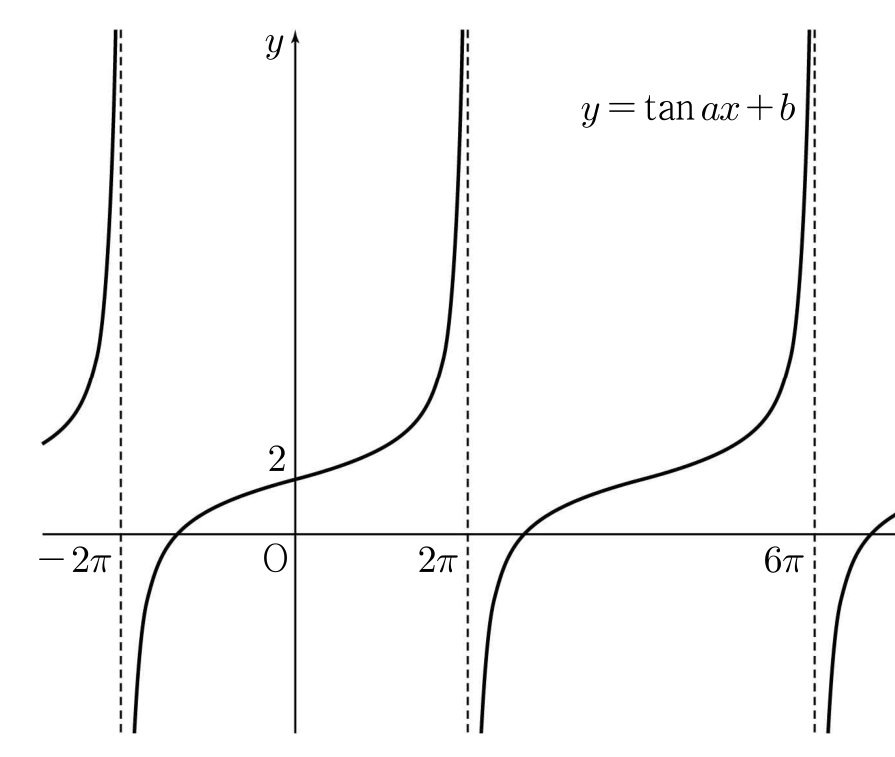
① \(\frac14\)② \(\frac12\)③ \(\frac34\)④ \(1\)⑤ \(\frac54\)
원본 정답 ②
원본 풀이 (내부용)[출제의도] 삼각함수의 그래프 이해하기
함수 \(y=\tan ax+b\)의 그래프가 점 \((0,2)\)를 지나므로 \(b=2\).
\(
0\le x<2\pi
\)
에서 \(x\)의 값이 증가할 때 \(y\)의 값이 증가하므로 \(a>0\).
주기가 \(4\pi\)이므로
\(
\frac\pi a=4\pi,\quad a=\frac14
\)
따라서
\(
ab=\frac14\times2=\frac12
\)
생성기 숫자판 1/6 · G2f-05#0함수 $y=\tan ax+b$의 그래프가 그림과 같고, 이웃한 두 점근선 사이의 거리가 $5\pi$이며 $y$절편이 $2$일 때, $ab$의 값으로 옮은 것을 고르세요. (단, $a$, $b$는 상수입니다.)
① $-\frac{8}{5}$② $-\frac{3}{5}$③ $\frac{2}{5}$④ $\frac{7}{5}$⑤ $\frac{12}{5}$
정답③ $\frac{2}{5}$ 이웃한 두 점근선 사이의 거리가 주기이므로 주기는 $5\pi$ $a>0$이고 $\frac{\pi}{a}=5\pi$이므로 $a=\frac{1}{5}$ $y$절편이 $2$이므로 $b=2$ 따라서 $ab=\frac{1}{5}\times (2)=\frac{2}{5}$
숫자: 원본 2 2 6 2 2 2 6 → 쌍둥이 5 2 · 같은 수: 2
생성기 숫자판 2/6 · G2f-05#0함수 $y=\tan ax+b$의 그래프가 그림과 같고, 이웃한 두 점근선 사이의 거리가 $3\pi$이며 $y$절편이 $2$일 때, $ab$의 값으로 옮은 것을 고르세요. (단, $a$, $b$는 상수입니다.)
① $-\frac{4}{3}$② $-\frac{1}{3}$③ $\frac{2}{3}$④ $\frac{5}{3}$⑤ $\frac{8}{3}$
정답③ $\frac{2}{3}$ 이웃한 두 점근선 사이의 거리가 주기이므로 주기는 $3\pi$ $a>0$이고 $\frac{\pi}{a}=3\pi$이므로 $a=\frac{1}{3}$ $y$절편이 $2$이므로 $b=2$ 따라서 $ab=\frac{1}{3}\times (2)=\frac{2}{3}$
숫자: 원본 2 2 6 2 2 2 6 → 쌍둥이 3 2 · 같은 수: 2
생성기 숫자판 3/6 · G2f-05#0함수 $y=\tan ax+b$의 그래프가 그림과 같고, 이웃한 두 점근선 사이의 거리가 $2\pi$이며 $y$절편이 $1$일 때, $ab$의 값으로 옮은 것을 고르세요. (단, $a$, $b$는 상수입니다.)
① $-\frac{3}{2}$② $-\frac{1}{2}$③ $\frac{1}{2}$④ $\frac{3}{2}$⑤ $\frac{5}{2}$
정답③ $\frac{1}{2}$ 이웃한 두 점근선 사이의 거리가 주기이므로 주기는 $2\pi$ $a>0$이고 $\frac{\pi}{a}=2\pi$이므로 $a=\frac{1}{2}$ $y$절편이 $1$이므로 $b=1$ 따라서 $ab=\frac{1}{2}\times (1)=\frac{1}{2}$
숫자: 원본 2 2 6 2 2 2 6 → 쌍둥이 2 1 · 같은 수: 2
생성기 숫자판 4/6 · G2f-05#0함수 $y=\tan ax+b$의 그래프가 그림과 같고, 이웃한 두 점근선 사이의 거리가 $2\pi$이며 $y$절편이 $3$일 때, $ab$의 값으로 옮은 것을 고르세요. (단, $a$, $b$는 상수입니다.)
① $-\frac{1}{2}$② $\frac{1}{2}$③ $\frac{3}{2}$④ $\frac{5}{2}$⑤ $\frac{7}{2}$
정답③ $\frac{3}{2}$ 이웃한 두 점근선 사이의 거리가 주기이므로 주기는 $2\pi$ $a>0$이고 $\frac{\pi}{a}=2\pi$이므로 $a=\frac{1}{2}$ $y$절편이 $3$이므로 $b=3$ 따라서 $ab=\frac{1}{2}\times (3)=\frac{3}{2}$
숫자: 원본 2 2 6 2 2 2 6 → 쌍둥이 2 3 · 같은 수: 2
생성기 숫자판 5/6 · G2f-05#0함수 $y=\tan ax+b$의 그래프가 그림과 같고, 이웃한 두 점근선 사이의 거리가 $2\pi$이며 $y$절편이 $-3$일 때, $ab$의 값으로 옮은 것을 고르세요. (단, $a$, $b$는 상수입니다.)
① $-\frac{7}{2}$② $-\frac{5}{2}$③ $-\frac{3}{2}$④ $-\frac{1}{2}$⑤ $\frac{1}{2}$
정답③ $-\frac{3}{2}$ 이웃한 두 점근선 사이의 거리가 주기이므로 주기는 $2\pi$ $a>0$이고 $\frac{\pi}{a}=2\pi$이므로 $a=\frac{1}{2}$ $y$절편이 $-3$이므로 $b=-3$ 따라서 $ab=\frac{1}{2}\times (-3)=-\frac{3}{2}$
숫자: 원본 2 2 6 2 2 2 6 → 쌍둥이 2 3 · 같은 수: 2
생성기 숫자판 6/6 · G2f-05#0함수 $y=\tan ax+b$의 그래프가 그림과 같고, 이웃한 두 점근선 사이의 거리가 $6\pi$이며 $y$절편이 $1$일 때, $ab$의 값으로 옮은 것을 고르세요. (단, $a$, $b$는 상수입니다.)
① $-\frac{11}{6}$② $-\frac{5}{6}$③ $\frac{1}{6}$④ $\frac{7}{6}$⑤ $\frac{13}{6}$
정답③ $\frac{1}{6}$ 이웃한 두 점근선 사이의 거리가 주기이므로 주기는 $6\pi$ $a>0$이고 $\frac{\pi}{a}=6\pi$이므로 $a=\frac{1}{6}$ $y$절편이 $1$이므로 $b=1$ 따라서 $ab=\frac{1}{6}\times (1)=\frac{1}{6}$
숫자: 원본 2 2 6 2 2 2 6 → 쌍둥이 6 1 · 같은 수: 6
143. 2024년 6월 12번 · 3점 · 수학Ⅰ 삼각함수 · G2M9-04#0
원본 (내부용)실수 \(k\)에 대하여 함수 \( f(x)=2\cos^2 x+2\sin x+k \) 의 최댓값이 \(\frac{15}{2}\)일 때, 함수 \(f(x)\)의 최솟값은? [3점]
① \(1\)② \(2\)③ \(3\)④ \(4\)⑤ \(5\)
그림·참고 하단 쪽수 표시: \(4/12\)
원본 정답 ③
원본 풀이 (내부용)[출제의도] 삼각함수의 성질을 이용하여 함수의 최솟값 구하는 문제 해결하기
\(
\cos^2x=1-\sin^2x
\)
이므로
\(
\begin{aligned}
f(x)&=2\cos^2x+2\sin x+k\\
&=2(1-\sin^2x)+2\sin x+k\\
&=-2\sin^2x+2\sin x+2+k
\end{aligned}
\)
\(\sin x=t\)라 하면 \(-1\le t\le1\)이고
\(
\begin{aligned}
y&=-2t^2+2t+2+k\\
&=-2\left(t^2-t+\frac14\right)+\frac52+k\\
&=-2\left(t-\frac12\right)^2+\frac52+k
\end{aligned}
\)
함수 \(y=-2(t-\frac12)^2+\frac52+k\)는 \(t=\frac12\)에서 최댓값 \(\frac52+k\)를 갖는다. 따라서
\(
\frac52+k=\frac{15}{2},\quad k=5
\)
그러므로 함수 \(y=-2t^2+2t+7\)은 \(t=-1\)에서 최솟값
\(
-2\times(-1)^2+2\times(-1)+7=3
\)
을 갖는다. 즉 \(f(x)\)의 최솟값은 \(3\)이다.
생성기 숫자판 1/6 · G2M9-04#0실수 $k$에 대하여 함수 $f\left(x\right)=2\cos^{2}x+2\sin x+k$의 최댓값이 $\frac{3}{2}$일 때, 함수 $f\left(x\right)$의 최솟값으로 옳은 것을 고르세요.
① $-7$② $-6$③ $-5$④ $-4$⑤ $-3$
정답⑤ $-3$ $\cos^{2}x=1-\sin^{2}x$이므로 $f\left(x\right)=-2\sin^{2}x+2\sin x+2+k$ $\sin x=t$라 하면 $-1\le t\le 1$이고 $y=-2\left(t-\frac{1}{2}\right)^{2}+\frac{5}{2}+k$ $t=\frac{1}{2}$일 때 최댓값 $\frac{5}{2}+k$를 가지므로 $\frac{5}{2}+k=\frac{3}{2}$, $k=-1$ $t=-1$일 때 최솟값을 가지므로 최솟값은 $-2\times \left(-1\right)^{2}+2\times \left(-1\right)+2+\left(-1\right)=-3$
숫자: 원본 2 2 15 2 → 쌍둥이 2 2 3 2 · 같은 수: 2
생성기 숫자판 2/6 · G2M9-04#0실수 $k$에 대하여 함수 $f\left(x\right)=3\cos^{2}x-4\sin x+k$의 최댓값이 $\frac{25}{3}$일 때, 함수 $f\left(x\right)$의 최솟값으로 옳은 것을 고르세요.
① $-3$② $-2$③ $-1$④ $0$⑤ $1$
정답④ $0$ $\cos^{2}x=1-\sin^{2}x$이므로 $f\left(x\right)=-3\sin^{2}x-4\sin x+3+k$ $\sin x=t$라 하면 $-1\le t\le 1$이고 $y=-3\left(t+\frac{2}{3}\right)^{2}+\frac{13}{3}+k$ $t=-\frac{2}{3}$일 때 최댓값 $\frac{13}{3}+k$를 가지므로 $\frac{13}{3}+k=\frac{25}{3}$, $k=4$ $t=1$일 때 최솟값을 가지므로 최솟값은 $-3\times 1^{2}-4\times 1+3+4=0$
숫자: 원본 2 2 15 2 → 쌍둥이 3 4 25 3
생성기 숫자판 3/6 · G2M9-04#0실수 $k$에 대하여 함수 $f\left(x\right)=\cos^{2}x+\sin x+k$의 최댓값이 $\frac{1}{4}$일 때, 함수 $f\left(x\right)$의 최솟값으로 옳은 것을 고르세요.
① $-6$② $-5$③ $-4$④ $-3$⑤ $-2$
정답⑤ $-2$ $\cos^{2}x=1-\sin^{2}x$이므로 $f\left(x\right)=-\sin^{2}x+\sin x+1+k$ $\sin x=t$라 하면 $-1\le t\le 1$이고 $y=-\left(t-\frac{1}{2}\right)^{2}+\frac{5}{4}+k$ $t=\frac{1}{2}$일 때 최댓값 $\frac{5}{4}+k$를 가지므로 $\frac{5}{4}+k=\frac{1}{4}$, $k=-1$ $t=-1$일 때 최솟값을 가지므로 최솟값은 $-1\times \left(-1\right)^{2}+1\times \left(-1\right)+1+\left(-1\right)=-2$
숫자: 원본 2 2 15 2 → 쌍둥이 1 4
생성기 숫자판 4/6 · G2M9-04#0실수 $k$에 대하여 함수 $f\left(x\right)=3\cos^{2}x-2\sin x+k$의 최댓값이 $\frac{13}{3}$일 때, 함수 $f\left(x\right)$의 최솟값으로 옳은 것을 고르세요.
① $-3$② $-2$③ $-1$④ $0$⑤ $1$
정답③ $-1$ $\cos^{2}x=1-\sin^{2}x$이므로 $f\left(x\right)=-3\sin^{2}x-2\sin x+3+k$ $\sin x=t$라 하면 $-1\le t\le 1$이고 $y=-3\left(t+\frac{1}{3}\right)^{2}+\frac{10}{3}+k$ $t=-\frac{1}{3}$일 때 최댓값 $\frac{10}{3}+k$를 가지므로 $\frac{10}{3}+k=\frac{13}{3}$, $k=1$ $t=1$일 때 최솟값을 가지므로 최솟값은 $-3\times 1^{2}-2\times 1+3+1=-1$
숫자: 원본 2 2 15 2 → 쌍둥이 3 2 13 3 · 같은 수: 2
생성기 숫자판 5/6 · G2M9-04#0실수 $k$에 대하여 함수 $f\left(x\right)=2\cos^{2}x-3\sin x+k$의 최댓값이 $\frac{73}{8}$일 때, 함수 $f\left(x\right)$의 최솟값으로 옳은 것을 고르세요.
① $3$② $4$③ $5$④ $6$⑤ $7$
정답① $3$ $\cos^{2}x=1-\sin^{2}x$이므로 $f\left(x\right)=-2\sin^{2}x-3\sin x+2+k$ $\sin x=t$라 하면 $-1\le t\le 1$이고 $y=-2\left(t+\frac{3}{4}\right)^{2}+\frac{25}{8}+k$ $t=-\frac{3}{4}$일 때 최댓값 $\frac{25}{8}+k$를 가지므로 $\frac{25}{8}+k=\frac{73}{8}$, $k=6$ $t=1$일 때 최솟값을 가지므로 최솟값은 $-2\times 1^{2}-3\times 1+2+6=3$
숫자: 원본 2 2 15 2 → 쌍둥이 2 3 73 8 · 같은 수: 2
생성기 숫자판 6/6 · G2M9-04#0실수 $k$에 대하여 함수 $f\left(x\right)=2\cos^{2}x-3\sin x+k$의 최댓값이 $\frac{17}{8}$일 때, 함수 $f\left(x\right)$의 최솟값으로 옳은 것을 고르세요.
① $-8$② $-7$③ $-6$④ $-5$⑤ $-4$
정답⑤ $-4$ $\cos^{2}x=1-\sin^{2}x$이므로 $f\left(x\right)=-2\sin^{2}x-3\sin x+2+k$ $\sin x=t$라 하면 $-1\le t\le 1$이고 $y=-2\left(t+\frac{3}{4}\right)^{2}+\frac{25}{8}+k$ $t=-\frac{3}{4}$일 때 최댓값 $\frac{25}{8}+k$를 가지므로 $\frac{25}{8}+k=\frac{17}{8}$, $k=-1$ $t=1$일 때 최솟값을 가지므로 최솟값은 $-2\times 1^{2}-3\times 1+2+\left(-1\right)=-4$
숫자: 원본 2 2 15 2 → 쌍둥이 2 3 17 8 · 같은 수: 2
144. 2024년 6월 15번 · 4점 · 수학Ⅰ 삼각함수 · 4점 쌍둥이
원본 (내부용)좌표평면에서 원 \(x^2+y^2=r^2\;(r>2)\)와 직선 \(x=-2\)가 만나는 두 점 중 \(y\)좌표가 양수인 점을 \(A\), \(y\)좌표가 음수인 점을 \(B\)라 하고, 두 동경 \(OA, OB\)가 나타내는 각의 크기를 각각 \(\alpha,\beta\)라 하자. \(2\cos\alpha=3\sin\beta\)일 때, \(r(\sin\alpha+\cos\beta)\)의 값은? (단, \(O\)는 원점이고, \(x\)축의 양의 방향을 시초선으로 한다.) [4점]
① \(-\frac{8}{3}\)② \(-\frac{5}{3}\)③ \(-\frac{2}{3}\)④ \(\frac{1}{3}\)⑤ \(\frac{4}{3}\)
원본 정답 ③
원본 풀이 (내부용)[출제의도] 삼각함수의 정의 이해하기
점 \(A\)의 좌표를 \((-2,a)\;(a>0)\)이라 하면 점 \(B\)의 좌표는 \((-2,-a)\)이고 \(\overline{OA}=\overline{OB}=r\)이므로
\(
\cos\alpha=-\frac2r,\quad \sin\beta=-\frac ar
\)
\(
2\cos\alpha=3\sin\beta
\)
에서
\(
2\times\left(-\frac2r\right)=3\times\left(-\frac ar\right),\quad a=\frac43
\)
한편
\(
\sin\alpha=\frac ar,\quad\cos\beta=-\frac2r
\)
이므로
\(
\begin{aligned}
r(\sin\alpha+\cos\beta)
&=r\left\{\frac ar+\left(-\frac2r\right)\right\}\\
&=a+(-2)=\frac43+(-2)\\
&=-\frac23
\end{aligned}
\)
쌍둥이 1/5 · 4점 쌍둥이좌표평면에서 원 $x^{2}+y^{2}=r^{2}$ $(r>1)$과 직선 $x=-1$이 만나는 두 점 중 $y$좌표가 양수인 점을 $A$, $y$좌표가 음수인 점을 $B$라 하고, 두 동경 $OA$, $OB$가 나타내는 각의 크기를 각각 $\alpha$, $\beta$라 합니다. $3\cos\alpha=4\sin\beta$일 때, $r(\sin\alpha+\cos\beta)$의 값으로 옳은 것을 고르세요. (단, $O$는 원점이고, $x$축의 양의 방향을 시초선으로 합니다.)
① $-\frac{5}{4}$② $-\frac{1}{4}$③ $\frac{3}{4}$④ $\frac{7}{4}$⑤ $\frac{11}{4}$
쌍둥이 2/5 · 4점 쌍둥이좌표평면에서 원 $x^{2}+y^{2}=r^{2}$ $(r>3)$과 직선 $x=-3$이 만나는 두 점 중 $y$좌표가 양수인 점을 $A$, $y$좌표가 음수인 점을 $B$라 하고, 두 동경 $OA$, $OB$가 나타내는 각의 크기를 각각 $\alpha$, $\beta$라 합니다. $\cos\alpha=2\sin\beta$일 때, $r(\sin\alpha+\cos\beta)$의 값으로 옳은 것을 고르세요. (단, $O$는 원점이고, $x$축의 양의 방향을 시초선으로 합니다.)
① $-\frac{3}{2}$② $-\frac{1}{2}$③ $\frac{1}{2}$④ $\frac{3}{2}$⑤ $\frac{5}{2}$
쌍둥이 3/5 · 4점 쌍둥이좌표평면에서 원 $x^{2}+y^{2}=r^{2}$ $(r>4)$와 직선 $x=-4$가 만나는 두 점 중 $y$좌표가 양수인 점을 $A$, $y$좌표가 음수인 점을 $B$라 하고, 두 동경 $OA$, $OB$가 나타내는 각의 크기를 각각 $\alpha$, $\beta$라 합니다. $\cos\alpha=3\sin\beta$일 때, $r(\sin\alpha+\cos\beta)$의 값으로 옳은 것을 고르세요. (단, $O$는 원점이고, $x$축의 양의 방향을 시초선으로 합니다.)
① $-\frac{14}{3}$② $-\frac{11}{3}$③ $-\frac{8}{3}$④ $-\frac{5}{3}$⑤ $-\frac{2}{3}$
쌍둥이 4/5 · 4점 쌍둥이좌표평면에서 원 $x^2+y^2=r^2$ $(r>2)$와 직선 $x=-2$가 만나는 두 점 중 위쪽 점을 $A$, 아래쪽 점을 $B$라 하고, $OA,OB$가 나타내는 각을 각각 $\alpha,\beta$라 합니다. $3\cos\alpha=4\sin\beta$일 때, $r$의 값을 구하세요. ($O$는 원점입니다.)
① $2$② $\frac94$③ $\frac52$④ $\frac{11}{4}$⑤ $3$
정답③ $\frac52$ 교점의 높이 크기를 $y=\sqrt{r^2-4}$라 두면 $\cos\alpha=-2/r$, $\sin\beta=-y/r$이다. 조건에서 $-6/r=-4y/r$이므로 $y=3/2$이다. 따라서 $r^2=4+(3/2)^2=25/4$. $r>0$이므로 $r=5/2$이다.
숫자: 원본 2 2 2 3 → 쌍둥이 2 2 3 4 · 같은 수: 2 3
쌍둥이 5/5 · 4점 쌍둥이좌표평면에서 원 $x^2+y^2=r^2$ $(r>3)$과 직선 $x=-3$이 만나는 두 점 중 위쪽 점을 $A$, 아래쪽 점을 $B$라 하고, 동경 $OA,OB$의 각을 각각 $\alpha,\beta$라 합니다. $5\cos\alpha=12\sin\beta$일 때, $r$의 값을 구하세요. ($O$는 원점입니다.)
① $3$② $\frac{25}{8}$③ $\frac{13}{4}$④ $\frac{27}{8}$⑤ $\frac72$
정답③ $\frac{13}{4}$ 두 교점의 세로좌표 크기를 $y=\sqrt{r^2-9}$라 하면 $\cos\alpha=-3/r$, $\sin\beta=-y/r$이다. 주어진 관계로 $-15/r=-12y/r$이므로 $y=5/4$이다. 따라서 $r^2=9+25/16=169/16$. $r>0$이므로 $r=13/4$이다.
숫자: 원본 2 2 2 3 → 쌍둥이 3 3 5 12 · 같은 수: 3
145. 2024년 6월 16번 · 4점 · 수학Ⅰ 삼각함수 · 4점 쌍둥이
원본 (내부용)그림과 같이 사각형 \(ABCD\)가 한 원에 내접하고 \( \overline{AB}=4,\quad \overline{AD}=5,\quad \overline{BD}=\sqrt{33} \) 이다. 삼각형 \(BCD\)의 넓이가 \(2\sqrt{6}\)일 때, \(\overline{BC}\times\overline{CD}\)의 값은? [4점] 그림: 원에 내접한 사각형 \(ABCD\). \(A\)는 위쪽, \(B\)는 왼쪽, \(D\)는 오른쪽, \(C\)는 아래쪽에 있다. 선분 \(AB, AD, BD, BC, CD\)가 그려져 있다.
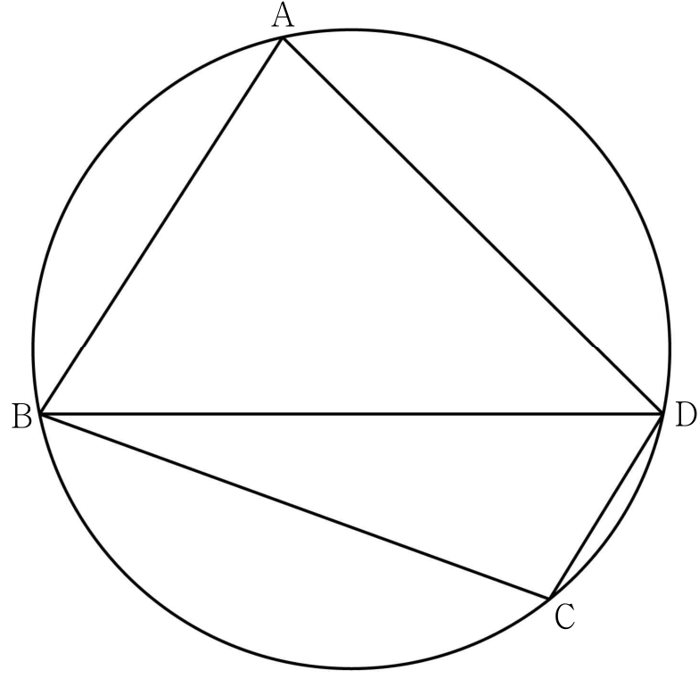
① \(10\)② \(\frac{21}{2}\)③ \(11\)④ \(\frac{23}{2}\)⑤ \(12\)
그림·참고 하단 쪽수 표시: \(6/12\)
원본 정답 ①
원본 풀이 (내부용)[출제의도] 삼각형의 넓이와 코사인법칙을 활용하여 선분의 길이의 곱 구하는 문제 해결하기
\(\angle DAB=\theta\)라 하면 삼각형 \(ABD\)에서 코사인법칙에 의하여
\(
\cos\theta
=\frac{4^2+5^2-(\sqrt{33})^2}{2\times4\times5}
=\frac15
\)
사각형 \(ABCD\)가 한 원에 내접하므로 \(\angle BCD=\pi-\theta\)이다. 따라서
\(
\sin(\angle BCD)=\sin(\pi-\theta)=\sin\theta=\frac{2\sqrt6}{5}
\)
삼각형 \(BCD\)의 넓이가 \(2\sqrt6\)이므로
\(
\frac12\times BC\times CD\times\frac{2\sqrt6}{5}=2\sqrt6
\)
따라서
\(
BC\times CD=10
\)
쌍둥이 1/5 · 4점 쌍둥이그림과 같이 사각형 $ABCD$가 한 원에 내접하고 $\overline{AB}=3$, $\overline{AD}=4$, $\overline{BD}=\sqrt{21}$입니다. 삼각형 $BCD$의 넓이가 $\frac{\sqrt{35}}{2}$일 때, $\overline{BC}\times\overline{CD}$의 값으로 옳은 것을 고르세요.
① $\frac{9}{2}$② $5$③ $\frac{11}{2}$④ $6$⑤ $\frac{13}{2}$
정답④ $6$ 삼각형 $ABD$에서 코사인법칙에 의하여 $\cos A=\frac{3^{2}+4^{2}-21}{2\times3\times4}=\frac{1}{6}$이므로 $\sin A=\frac{\sqrt{35}}{6}$ 사각형 $ABCD$가 원에 내접하므로 $A+C=\pi$이고 $\sin C=\sin A=\frac{\sqrt{35}}{6}$ 삼각형 $BCD$의 넓이는 $\frac{1}{2}\times\overline{BC}\times\overline{CD}\times\sin C=\frac{\sqrt{35}}{2}$ 따라서 $\overline{BC}\times\overline{CD}=\frac{\sqrt{35}}{2}\times 2\div\frac{\sqrt{35}}{6}=6$
숫자: 원본 4 5 33 2 6 → 쌍둥이 3 4 21 35 2 · 같은 수: 2 4
쌍둥이 2/5 · 4점 쌍둥이그림과 같이 사각형 $ABCD$가 한 원에 내접하고 $\overline{AB}=3$, $\overline{AD}=5$, $\overline{BD}=2\sqrt{6}$입니다. 삼각형 $BCD$의 넓이가 $2\sqrt{2}$일 때, $\overline{BC}\times\overline{CD}$의 값으로 옳은 것을 고르세요.
① $\frac{11}{2}$② $6$③ $\frac{13}{2}$④ $7$⑤ $\frac{15}{2}$
정답② $6$ 삼각형 $ABD$에서 코사인법칙에 의하여 $\cos A=\frac{3^{2}+5^{2}-24}{2\times3\times5}=\frac{1}{3}$이므로 $\sin A=\frac{2\sqrt{2}}{3}$ 사각형 $ABCD$가 원에 내접하므로 $A+C=\pi$이고 $\sin C=\sin A=\frac{2\sqrt{2}}{3}$ 삼각형 $BCD$의 넓이는 $\frac{1}{2}\times\overline{BC}\times\overline{CD}\times\sin C=2\sqrt{2}$ 따라서 $\overline{BC}\times\overline{CD}=2\sqrt{2}\times 2\div\frac{2\sqrt{2}}{3}=6$
숫자: 원본 4 5 33 2 6 → 쌍둥이 3 5 2 6 2 2 · 같은 수: 2 5 6
쌍둥이 3/5 · 4점 쌍둥이그림과 같이 사각형 $ABCD$가 한 원에 내접하고 $\overline{AB}=4$, $\overline{AD}=6$, $\overline{BD}=2\sqrt{10}$입니다. 삼각형 $BCD$의 넓이가 $\sqrt{15}$일 때, $\overline{BC}\times\overline{CD}$의 값으로 옳은 것을 고르세요.
① $\frac{13}{2}$② $7$③ $\frac{15}{2}$④ $8$⑤ $\frac{17}{2}$
정답④ $8$ 삼각형 $ABD$에서 코사인법칙에 의하여 $\cos A=\frac{4^{2}+6^{2}-40}{2\times4\times6}=\frac{1}{4}$이므로 $\sin A=\frac{\sqrt{15}}{4}$ 사각형 $ABCD$가 원에 내접하므로 $A+C=\pi$이고 $\sin C=\sin A=\frac{\sqrt{15}}{4}$ 삼각형 $BCD$의 넓이는 $\frac{1}{2}\times\overline{BC}\times\overline{CD}\times\sin C=\sqrt{15}$ 따라서 $\overline{BC}\times\overline{CD}=\sqrt{15}\times 2\div\frac{\sqrt{15}}{4}=8$
숫자: 원본 4 5 33 2 6 → 쌍둥이 4 6 2 10 15 · 같은 수: 2 4 6
쌍둥이 4/5 · 4점 쌍둥이그림과 같이 사각형 $ABCD$가 한 원에 내접하고 $\overline{AB}=5$, $\overline{AD}=7$, $\overline{BD}=8$입니다. 삼각형 $BCD$의 넓이가 $\frac{20\sqrt{3}}{7}$일 때, $\overline{BC}\times\overline{CD}$의 값으로 옳은 것을 고르세요.
① $8$② $\frac{17}{2}$③ $9$④ $\frac{19}{2}$⑤ $10$
정답⑤ $10$ 삼각형 $ABD$에서 코사인법칙에 의하여 $\cos A=\frac{5^{2}+7^{2}-64}{2\times5\times7}=\frac{1}{7}$이므로 $\sin A=\frac{4\sqrt{3}}{7}$ 사각형 $ABCD$가 원에 내접하므로 $A+C=\pi$이고 $\sin C=\sin A=\frac{4\sqrt{3}}{7}$ 삼각형 $BCD$의 넓이는 $\frac{1}{2}\times\overline{BC}\times\overline{CD}\times\sin C=\frac{20\sqrt{3}}{7}$ 따라서 $\overline{BC}\times\overline{CD}=\frac{20\sqrt{3}}{7}\times 2\div\frac{4\sqrt{3}}{7}=10$
숫자: 원본 4 5 33 2 6 → 쌍둥이 5 7 8 20 3 7 · 같은 수: 5
쌍둥이 5/5 · 4점 쌍둥이그림과 같이 사각형 $ABCD$가 한 원에 내접하고 $\overline{AB}=6$, $\overline{AD}=8$, $\overline{BD}=2\sqrt{22}$입니다. 삼각형 $BCD$의 넓이가 $\frac{9\sqrt{7}}{4}$일 때, $\overline{BC}\times\overline{CD}$의 값으로 옳은 것을 고르세요.
① $10$② $\frac{21}{2}$③ $11$④ $\frac{23}{2}$⑤ $12$
정답⑤ $12$ 삼각형 $ABD$에서 코사인법칙에 의하여 $\cos A=\frac{6^{2}+8^{2}-88}{2\times6\times8}=\frac{1}{8}$이므로 $\sin A=\frac{3\sqrt{7}}{8}$ 사각형 $ABCD$가 원에 내접하므로 $A+C=\pi$이고 $\sin C=\sin A=\frac{3\sqrt{7}}{8}$ 삼각형 $BCD$의 넓이는 $\frac{1}{2}\times\overline{BC}\times\overline{CD}\times\sin C=\frac{9\sqrt{7}}{4}$ 따라서 $\overline{BC}\times\overline{CD}=\frac{9\sqrt{7}}{4}\times 2\div\frac{3\sqrt{7}}{8}=12$
원본 (내부용)실수 \(k\;(0\leq k\leq 2\pi)\)에 대하여 \(-\pi\leq x\leq k\)에서 부등식 \( \sin x+\cos\frac{\pi}{8}<0 \) 을 만족시키는 모든 \(x\)의 값의 범위가 \(-\pi-\alpha<x<\alpha\)가 되도록 하는 \(k\)의 최댓값은? [4점]
① \(\frac{5}{8}\pi\)② \(\frac{7}{8}\pi\)③ \(\frac{9}{8}\pi\)④ \(\frac{11}{8}\pi\)⑤ \(\frac{13}{8}\pi\)
그림·참고 하단 쪽수 표시: \(7/12\)
원본 정답 ④
원본 풀이 (내부용)[출제의도] 삼각함수의 그래프를 이용하여 부등식의 해 추론하기
\(
\sin x+\cos\frac\pi8<0
\)
에서
\(
\sin x<-\cos\frac\pi8
\)
이다. 한편
\(
-\cos\frac\pi8
=-\sin\left(\frac\pi2-\frac\pi8\right)
=-\sin\frac{3\pi}{8}
=\sin\left(-\frac{3\pi}{8}\right)
\)
이므로 \(\sin x<\sin(-\frac{3\pi}{8})\)의 해는 \(\sin x<\sin(-\frac{3\pi}{8})\)의 해와 같다.
방정식
\(
\sin x=\sin\left(-\frac{3\pi}{8}\right)
\)
의 해는 함수 \(y=\sin x\)의 그래프가 직선 \(y=\sin(-\frac{3\pi}{8})\)와 만나는 점의 \(x\)좌표와 같다.
그림: \(y=\sin x\)와 수평선 \(y=\sin(-\frac{3\pi}{8})\)를 표시한다. \(x\)축에는 \(-\pi,-\frac{5\pi}{8},-\frac{3\pi}{8},0,\frac{11\pi}{8},\frac{13\pi}{8},2\pi\)가 표시되어 있다.
그러므로 \(-\pi\le x\le2\pi\)에서 방정식 \(\sin x=\sin(-\frac{3\pi}{8})\)의 해는
\(
x=-\frac{5\pi}{8}\quad\text{또는}\quad
x=-\frac{3\pi}{8}\quad\text{또는}\quad
x=\frac{11\pi}{8}\quad\text{또는}\quad
x=\frac{13\pi}{8}
\)
이다.
따라서 \(-\pi\le x\le k\)에서 \(\sin x<\sin(-\frac38\pi)\)를 만족시키는 모든 \(x\)의 값의 범위가 \(-\pi<x<\alpha\)이기 위해서는 \(\alpha=-\frac38\pi\)이고 \(0\le k\le\frac{11}{8}\pi\)이어야 한다.
그러므로 \(k\)의 최댓값은 \(\frac{11}{8}\pi\)이다.
쌍둥이 1/5 · 4점 쌍둥이실수 $k$ $(0\le k\le2\pi)$에 대하여 $-\pi\le x\le k$에서 부등식 $\sin x+\cos\frac{\pi}{7}<0$을 만족시키는 모든 $x$의 범위가 $-\pi-\alpha<x<\alpha$가 되도록 합니다. 이때 $\alpha$의 값을 구하세요.
① $-\frac{3\pi}{7}$② $-\frac{5\pi}{14}$③ $-\frac{2\pi}{7}$④ $-\frac{3\pi}{14}$⑤ $-\frac{\pi}{7}$
정답② $-\frac{5\pi}{14}$ $\sin x<-\cos(\pi/7)=\sin(-5\pi/14)$이다. 구간 $[-\pi,0]$에서 이 부등식의 해는 $(-\pi/2-\pi/7,-\pi/2+\pi/7)$이다. 주어진 모양과 비교하면 오른쪽 끝이 $\alpha=-\pi/2+\pi/7$이고 왼쪽 끝은 $-\pi-\alpha$와 일치한다. 따라서 $\alpha=-5\pi/14$이다.
숫자: 원본 0 2 8 0 → 쌍둥이 0 2 7 0 · 같은 수: 0 2
쌍둥이 2/5 · 4점 쌍둥이실수 $k$ $(0\le k\le2\pi)$에 대하여 $-\pi\le x\le k$에서 부등식 $\sin x+\cos\frac{\pi}{6}<0$을 만족시키는 모든 $x$의 값의 범위가 $-\pi-\alpha<x<\alpha$가 되도록 하는 $k$의 최댓값으로 옳은 것을 고르세요.
정답$\frac{4\pi}{3}$ $\cos\frac{\pi}{6}=\sin\left(\frac{\pi}{2}-\frac{\pi}{6}\right)$이므로 부등식은 $\sin x<-\sin\frac{4\pi}{12}$ $-\pi\le x\le\pi$에서 해는 $- \frac{2 \pi}{3}<x<- \frac{\pi}{3}$이고, 이는 $\alpha=- \frac{\pi}{3}$일 때의 꼴입니다. 다음 해의 구간은 $x>\frac{4 \pi}{3}$에서 시작하므로 $k\le\frac{4 \pi}{3}$이어야 합니다. $k$의 최댓값은 $\frac{4 \pi}{3}$
숫자: 원본 0 2 8 0 → 쌍둥이 0 2 6 0 · 같은 수: 0 2
쌍둥이 3/5 · 4점 쌍둥이실수 $k$ $(0\le k\le2\pi)$에 대하여 $-\pi\le x\le k$에서 부등식 $\sin x+\cos\frac{\pi}{5}<0$을 만족시키는 모든 $x$의 값의 범위가 $-\pi-\alpha<x<\alpha$가 되도록 하는 $k$의 최댓값으로 옳은 것을 고르세요.
정답$\frac{13\pi}{10}$ $\cos\frac{\pi}{5}=\sin\left(\frac{\pi}{2}-\frac{\pi}{5}\right)$이므로 부등식은 $\sin x<-\sin\frac{3\pi}{10}$ $-\pi\le x\le\pi$에서 해는 $- \frac{7 \pi}{10}<x<- \frac{3 \pi}{10}$이고, 이는 $\alpha=- \frac{3 \pi}{10}$일 때의 꼴입니다. 다음 해의 구간은 $x>\frac{13 \pi}{10}$에서 시작하므로 $k\le\frac{13 \pi}{10}$이어야 합니다. $k$의 최댓값은 $\frac{13 \pi}{10}$
숫자: 원본 0 2 8 0 → 쌍둥이 0 2 5 0 · 같은 수: 0 2
쌍둥이 4/5 · 4점 쌍둥이실수 $k$ $(0\le k\le2\pi)$에 대하여 $-\pi\le x\le k$에서 부등식 $\sin x+\cos\frac{\pi}{12}<0$을 만족시키는 모든 $x$의 값의 범위가 $-\pi-\alpha<x<\alpha$가 되도록 하는 $k$의 최댓값으로 옳은 것을 고르세요.
정답$\frac{17\pi}{12}$ $\cos\frac{\pi}{12}=\sin\left(\frac{\pi}{2}-\frac{\pi}{12}\right)$이므로 부등식은 $\sin x<-\sin\frac{10\pi}{24}$ $-\pi\le x\le\pi$에서 해는 $- \frac{7 \pi}{12}<x<- \frac{5 \pi}{12}$이고, 이는 $\alpha=- \frac{5 \pi}{12}$일 때의 꼴입니다. 다음 해의 구간은 $x>\frac{17 \pi}{12}$에서 시작하므로 $k\le\frac{17 \pi}{12}$이어야 합니다. $k$의 최댓값은 $\frac{17 \pi}{12}$
숫자: 원본 0 2 8 0 → 쌍둥이 0 2 12 0 · 같은 수: 0 2
쌍둥이 5/5 · 4점 쌍둥이실수 $k$ $(0\le k\le2\pi)$에 대하여 $-\pi\le x\le k$에서 $\sin x+\cos\frac{\pi}{8}<0$을 만족시키는 모든 $x$의 범위가 $-\pi-\alpha<x<\alpha$가 되도록 합니다. 이때 $\alpha$의 값을 구하세요.
① $-\frac{7\pi}{16}$② $-\frac{3\pi}{8}$③ $-\frac{5\pi}{16}$④ $-\frac{\pi}{4}$⑤ $-\frac{3\pi}{16}$
정답② $-\frac{3\pi}{8}$ $\cos(\pi/8)=\sin(3\pi/8)$이므로 음의 사인 구간은 $(-\pi/2-\pi/8,-\pi/2+\pi/8)$이다. 이 구간의 오른쪽 끝은 $\alpha=-\pi/2+\pi/8$이며 왼쪽 끝은 $-\pi-\alpha$이다. 따라서 $\alpha=-3\pi/8$이다.
숫자: 원본 0 2 8 0 → 쌍둥이 0 2 8 0 · 같은 수: 0 2 8
147. 2024년 6월 20번 · 4점 · 수학Ⅰ 삼각함수 · 4점 쌍둥이
원본 (내부용)그림과 같이 중심이 \(O\)이고 길이가 \(2\)인 선분 \(AB\)를 지름으로 하는 반원이 있다. 호 \(AB\) 위의 세 점 \(C,D,E\)가 \( \overline{DE}=\overline{EB},\qquad \overline{CD}:\overline{DE}=1:\sqrt{2},\qquad \angle COE=\frac{\pi}{2} \) 를 만족시킨다. \(\cos(\angle OBE)\)의 값은? (단, 점 \(D\)는 점 \(B\)가 아니다.) [4점] 그림: 반원의 지름은 수평인 \(AB\)이고 중심은 \(O\)이다. 호 위의 점은 왼쪽부터 \(C,D,E,B\) 순으로 놓여 있다. 선분 \(OC\)와 \(OE\)는 직각을 이루며, 선분 \(CD, DE, EB, OB\)가 그려져 있다.
① \(\frac{\sqrt{14}}{10}\)② \(\frac{2}{5}\)③ \(\frac{3\sqrt{2}}{10}\)④ \(\frac{\sqrt{5}}{5}\)⑤ \(\frac{\sqrt{22}}{10}\)
그림·참고 하단 쪽수 표시: \(8/12\)
원본 정답 ④
원본 풀이 (내부용)[출제의도] 코사인법칙을 활용하여 삼각함수의 값 구하는 문제 해결하기
**그림의 주요 요소:** 원 위에 \(A,B,C,D,E\)가 표시되고 중심은 \(O\)이다. \(OA,OB,OC,OD,OE\)가 그려져 있으며 \(H\)는 \(O\)에서 \(EB\)에 내린 수선의 발이다. \(B\)의 각은 \(\theta\)로 표시되어 있다.
\(
OC=OD=OE=1,\quad\angle COE=\frac\pi2
\)
이므로
\(
CE=\sqrt2,\quad \angle OCD=\angle ODC,\quad \angle ODE=\angle OED
\)
사각형 \(OCED\)에서
\(
\angle OCD+\angle CDE+\angle OED=2\pi-\frac\pi2=\frac32\pi
\)
\(
\angle OCD+\angle OED=\angle CDE
\)
이므로
\(
2\angle CDE=\frac32\pi,\quad \angle CDE=\frac34\pi
\)
한편
\(
CD:DE=1:\sqrt2
\)
이므로 \(CD=a,\ DE=\sqrt2a\;(a>0)\)라 하자.
삼각형 \(DCE\)에서 코사인법칙에 의하여
\(
CE^2=a^2+(\sqrt2a)^2-2\times a\times\sqrt2a\times\cos\frac34\pi
=5a^2
\)
이고
\(
CE=\sqrt5a=\sqrt2,\quad a=\frac{\sqrt{10}}5
\)
\(\angle OBE=\theta\)라 하고 점 \(O\)에서 선분 \(EB\)에 내린 수선의 발을 \(H\)라 하면
\(
EB=DE=\sqrt2a=\frac{2\sqrt5}{5}
\)
삼각형 \(OBE\)에서 코사인법칙에 의하여
\(
\cos\theta
=\frac{1^2+\left(\frac{2\sqrt5}{5}\right)^2-1^2}
{2\times1\times\frac{2\sqrt5}{5}}
=\frac{\sqrt5}{5}
\)
**[다른 풀이]**
\(
OB=OD,\quad EB=ED,\quad OE\text{는 공통이므로}
\)
삼각형 \(OBE\)와 삼각형 \(ODE\)는 합동이다.
\(\angle OBE=\theta\)라 하면
\(
\angle OEB=\angle OED=\angle ODE=\theta
\)
\(
\angle EOB=\angle DOE=\pi-2\theta
\)
\(
\angle COD=\frac\pi2-\angle DOE
=\frac\pi2-(\pi-2\theta)=2\theta-\frac\pi2
\)
\(
\angle ODC=\frac12(\pi-\angle COD)=\frac34\pi-\theta
\)
\(
\angle CDE=\angle ODC+\angle ODE
=\left(\frac34\pi-\theta\right)+\theta=\frac34\pi
\)
한편 \(OC=OE=1,\ \angle COE=\frac\pi2\)이므로 \(CE=\sqrt2\).
\(
CD:DE=1:\sqrt2
\)
이므로 \(CD=a,\ DE=\sqrt2a\;(a>0)\)라 하자. 삼각형 \(DCE\)에서 코사인법칙에 의하여
\(
CE^2=a^2+(\sqrt2a)^2-2\times a\times\sqrt2a\times\cos\frac34\pi
=5a^2
\)
이고
\(
CE=\sqrt5a=\sqrt2,\quad a=\frac{\sqrt{10}}5
\)
\(
EB=DE=\sqrt2a=\frac{2\sqrt5}{5}
\)
삼각형 \(OBE\)에서 코사인법칙에 의하여
\(
\cos\theta
=\frac{1^2+\left(\frac{2\sqrt5}{5}\right)^2-1^2}
{2\times1\times\frac{2\sqrt5}{5}}
=\frac{\sqrt5}{5}
\)
쌍둥이 1/5 · 4점 쌍둥이그림과 같이 중심이 $O$이고 길이가 $2$인 선분 $AB$를 지름으로 하는 반원이 있습니다. 호 $AB$ 위의 세 점 $C$, $D$, $E$가 $\overline{DE}=\overline{EB}$, $\overline{CD}:\overline{DE}=3\sqrt2:8$, $\angle COE=\frac{\pi}{2}$를 만족시킵니다. $\cos\left(\angle OBE\right)$의 값으로 옳은 것을 고르세요. (단, 점 $D$는 점 $B$가 아닙니다.)
① $\frac{2\sqrt{258}}{65}$② $\frac{2\sqrt{259}}{65}$③ $\frac{4\sqrt{65}}{65}$④ $\frac{6\sqrt{29}}{65}$⑤ $\frac{2\sqrt{262}}{65}$
쌍둥이 2/5 · 4점 쌍둥이그림과 같이 중심이 $O$이고 길이가 $2$인 선분 $AB$를 지름으로 하는 반원이 있습니다. 호 $AB$ 위의 세 점 $C$, $D$, $E$가 $\overline{DE}=\overline{EB}$, $\overline{CD}:\overline{DE}=1:2\sqrt{2}$, $\angle COE=\frac{\pi}{2}$를 만족시킵니다. $\cos\left(\angle OBE\right)$의 값으로 옳은 것을 고르세요. (단, 점 $D$는 점 $B$가 아닙니다.)
① $\frac{2\sqrt{11}}{13}$② $\frac{4\sqrt{3}}{13}$③ $\frac{2\sqrt{13}}{13}$④ $\frac{2\sqrt{14}}{13}$⑤ $\frac{2\sqrt{15}}{13}$
쌍둥이 3/5 · 4점 쌍둥이그림과 같이 중심이 $O$이고 길이가 $2$인 선분 $AB$를 지름으로 하는 반원이 있습니다. 호 $AB$ 위의 세 점 $C$, $D$, $E$가 $\overline{DE}=\overline{EB}$, $\overline{CD}:\overline{DE}=\sqrt{2}:1$, $\angle COE=\frac{\pi}{2}$를 만족시킵니다. $\cos\left(\angle OBE\right)$의 값으로 옳은 것을 고르세요. (단, 점 $D$는 점 $B$가 아닙니다.)
① $\frac{\sqrt{6}}{10}$② $\frac{\sqrt{2}}{5}$③ $\frac{\sqrt{10}}{10}$④ $\frac{\sqrt{3}}{5}$⑤ $\frac{\sqrt{14}}{10}$
쌍둥이 4/5 · 4점 쌍둥이그림과 같이 중심이 $O$이고 길이가 $2$인 선분 $AB$를 지름으로 하는 반원이 있습니다. 호 $AB$ 위의 세 점 $C$, $D$, $E$가 $\overline{DE}=\overline{EB}$, $\overline{CD}:\overline{DE}=3:\sqrt{2}$, $\angle COE=\frac{\pi}{2}$를 만족시킵니다. $\cos\left(\angle OBE\right)$의 값으로 옳은 것을 고르세요. (단, 점 $D$는 점 $B$가 아닙니다.)
① $\frac{\sqrt{13}}{17}$② $\frac{\sqrt{15}}{17}$③ $\frac{\sqrt{17}}{17}$④ $\frac{\sqrt{19}}{17}$⑤ $\frac{\sqrt{21}}{17}$
쌍둥이 5/5 · 4점 쌍둥이그림과 같이 중심이 $O$이고 길이가 $2$인 선분 $AB$를 지름으로 하는 반원이 있습니다. 호 $AB$ 위의 세 점 $C$, $D$, $E$가 $\overline{DE}=\overline{EB}$, $\overline{CD}:\overline{DE}=\sqrt2:3$, $\angle COE=\frac{\pi}{2}$를 만족시킵니다. $\cos\left(\angle OBE\right)$의 값으로 옳은 것을 고르세요. (단, 점 $D$는 점 $B$가 아닙니다.)
① $\frac{\sqrt{302}}{34}$② $\frac{2\sqrt{19}}{17}$③ $\frac{3\sqrt{34}}{34}$④ $\frac{\sqrt{77}}{17}$⑤ $\frac{\sqrt{310}}{34}$
원본 (내부용)함수 \( y=6\cos\left(x+\frac{\pi}{2}\right)+k \) 의 그래프가 점 \(\left(\frac{5}{6}\pi,9\right)\)를 지날 때, 상수 \(k\)의 값을 구하시오. [3점]
원본 정답 12
원본 풀이 (내부용)[출제의도] 삼각함수의 그래프 이해하기
\(
y=6\cos\left(x+\frac\pi2\right)+k=-6\sin x+k
\)
이고 이 함수의 그래프가 점 \((\frac56\pi,9)\)를 지나므로
\(
9=-6\sin\frac56\pi+k
\)
\(
9=-3+k,\quad k=12
\)
생성기 숫자판 1/6 · G2M1-02#9함수 $y=2\sin\left(x-\frac{\pi}{6}\right)+k$의 그래프가 점 $\left(\frac{\pi}{3},\ 8\right)$을 지날 때, 상수 $k$의 값을 구하세요.
정답$7$ 점 $\left(\frac{\pi}{3},\ 8\right)$을 지나므로 $8=2\sin\left(\frac{\pi}{3}-\frac{\pi}{6}\right)+k$ $=2\sin\frac{\pi}{6}+k$ $=1+k$ 따라서 $k=7$
숫자: 원본 6 2 5 6 9 → 쌍둥이 2 6 3 8 · 같은 수: 2 6
생성기 숫자판 2/6 · G2M1-02#9함수 $y=4\cos\left(x-\frac{\pi}{3}\right)+k$의 그래프가 점 $\left(\frac{\pi}{3},\ 11\right)$을 지날 때, 상수 $k$의 값을 구하세요.
정답$7$ 점 $\left(\frac{\pi}{3},\ 11\right)$을 지나므로 $11=4\cos\left(\frac{\pi}{3}-\frac{\pi}{3}\right)+k$ $=4\cos0+k$ $=4+k$ 따라서 $k=7$
숫자: 원본 6 2 5 6 9 → 쌍둥이 4 3 3 11
생성기 숫자판 3/6 · G2M1-02#9함수 $y=4\cos\left(x-\frac{\pi}{6}\right)+k$의 그래프가 점 $\left(\frac{\pi}{6},\ 4\right)$를 지날 때, 상수 $k$의 값을 구하세요.
정답$0$ 점 $\left(\frac{\pi}{6},\ 4\right)$를 지나므로 $4=4\cos\left(\frac{\pi}{6}-\frac{\pi}{6}\right)+k$ $=4\cos0+k$ $=4+k$ 따라서 $k=0$
숫자: 원본 6 2 5 6 9 → 쌍둥이 4 6 6 4 · 같은 수: 6
생성기 숫자판 4/6 · G2M1-02#9함수 $y=2\cos\left(x+\frac{\pi}{2}\right)+k$의 그래프가 점 $\left(\frac{\pi}{2},\ -5\right)$를 지날 때, 상수 $k$의 값을 구하세요.
정답$-3$ 점 $\left(\frac{\pi}{2},\ -5\right)$를 지나므로 $-5=2\cos\left(\frac{\pi}{2}+\frac{\pi}{2}\right)+k$ $=2\cos\pi+k$ $=-2+k$ 따라서 $k=-3$
숫자: 원본 6 2 5 6 9 → 쌍둥이 2 2 2 5 · 같은 수: 2 5
생성기 숫자판 5/6 · G2M1-02#9함수 $y=3\sin\left(x-\frac{\pi}{6}\right)+k$의 그래프가 점 $\left(\frac{\pi}{3},\ \frac{13}{2}\right)$을 지날 때, 상수 $k$의 값을 구하세요.
정답$5$ 점 $\left(\frac{\pi}{3},\ \frac{13}{2}\right)$을 지나므로 $\frac{13}{2}=3\sin\left(\frac{\pi}{3}-\frac{\pi}{6}\right)+k$ $=3\sin\frac{\pi}{6}+k$ $=\frac{3}{2}+k$ 따라서 $k=5$
숫자: 원본 6 2 5 6 9 → 쌍둥이 3 6 3 13 2 · 같은 수: 2 6
생성기 숫자판 6/6 · G2M1-02#9함수 $y=4\sin\left(x+\frac{\pi}{6}\right)+k$의 그래프가 점 $\left(\frac{\pi}{3},\ 9\right)$를 지날 때, 상수 $k$의 값을 구하세요.
정답$5$ 점 $\left(\frac{\pi}{3},\ 9\right)$를 지나므로 $9=4\sin\left(\frac{\pi}{3}+\frac{\pi}{6}\right)+k$ $=4\sin\frac{\pi}{2}+k$ $=4+k$ 따라서 $k=5$
숫자: 원본 6 2 5 6 9 → 쌍둥이 4 6 3 9 · 같은 수: 6 9
149. 2024년 6월 29번 · 4점 · 수학Ⅰ 삼각함수 · 4점 쌍둥이
원본 (내부용)그림과 같이 \(\overline{AC}>2\sqrt7\)인 삼각형 \(ABC\)에 대하여 선분 \(AC\) 위의 점 \(D\)가 \( \overline{CD}=2\sqrt7,\qquad \cos(\angle BDA)=\frac{\sqrt7}{4} \) 를 만족시킨다. 삼각형 \(ABC\)와 삼각형 \(ABD\)의 외접원의 반지름의 길이를 각각 \(R_1,R_2\)라 하자. \(R_1:R_2=4:3\)일 때, \(\overline{BC}+\overline{BD}\)의 값을 구하시오. [4점] \(A,D,C\)가 선분 \(AC\) 위에 차례로 놓여 있다. \(A,B,C\)를 꼭짓점으로 하는 삼각형과 \(A,B,D\)를 꼭짓점으로 하는 삼각형이 그려져 있으며, 각각의 외접원이 표시되어 있다.
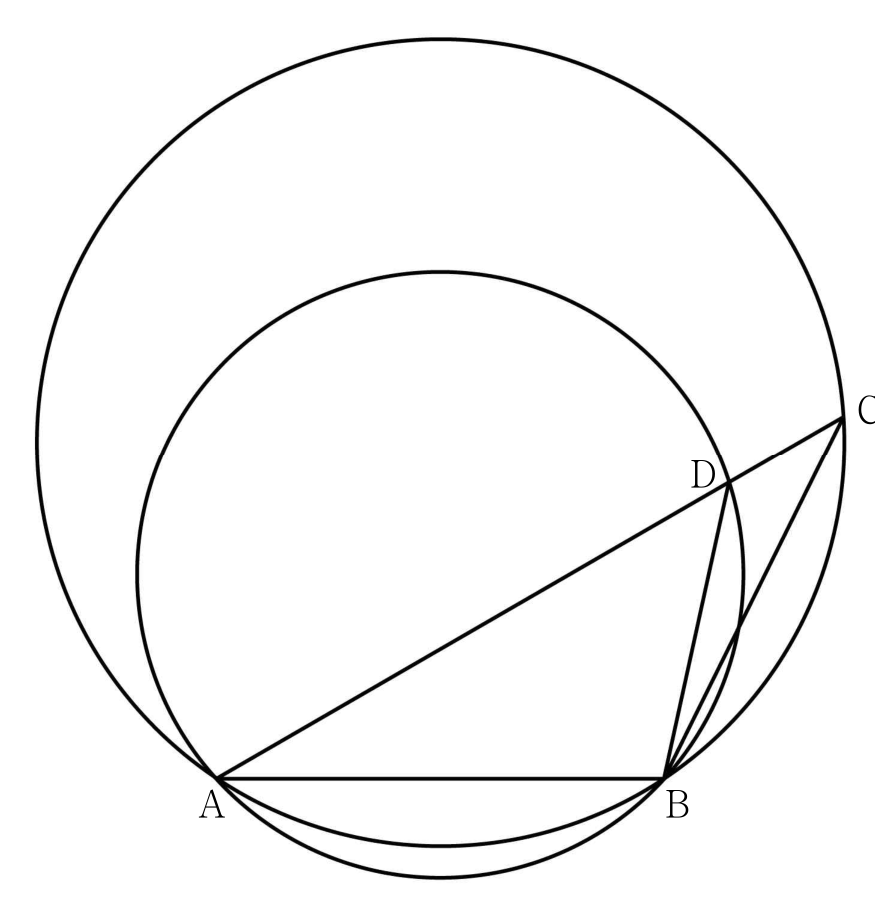
원본 정답 28
원본 풀이 (내부용)[출제의도] 사인법칙과 코사인법칙을 활용하여 선분의 길이의 합 구하는 문제 해결하기
삼각형 \(ABC\)에서 사인법칙에 의하여
\(
\frac{BC}{\sin A}=2R_1,\quad R_1=\frac{BC}{2\sin A}
\)
삼각형 \(ABD\)에서 사인법칙에 의하여
\(
\frac{BD}{\sin A}=2R_2,\quad R_2=\frac{BD}{2\sin A}
\)
\(R_1:R_2=4:3\)이므로
\(
\frac{BC}{2\sin A}:\frac{BD}{2\sin A}=4:3
\)
즉
\(
BC:BD=4:3
\)
\(BC=4k,\ BD=3k\;(k>0)\)라 하면 삼각형 \(BCD\)에서 코사인법칙에 의하여
\(
\cos(\angle CDB)
=\frac{(2\sqrt7)^2+(3k)^2-(4k)^2}
{2\times2\sqrt7\times3k}
=\frac{-7k^2+28}{12\sqrt7k}
\)
한편
\(
\cos(\angle CDB)=\cos(\pi-\angle BDA)
=-\cos(\angle BDA)=-\frac{\sqrt7}{4}
\)
이므로
\(
\frac{-7k^2+28}{12\sqrt7k}=-\frac{\sqrt7}{4}
\)
\(
7k^2-21k-28=0
\)
\(
7(k+1)(k-4)=0
\)
\(k>0\)이므로 \(k=4\).
따라서
\(
BC+BD=4k+3k=28
\)
쌍둥이 1/5 · 4점 쌍둥이그림과 같이 $\overline{AC}>4\sqrt{7}$인 삼각형 $ABC$에 대하여 선분 $AC$ 위의 점 $D$가 $\overline{CD}=4\sqrt{7}$, $\cos\left(\angle BDA\right)=\frac{\sqrt{7}}{4}$을 만족시킵니다. 삼각형 $ABC$와 삼각형 $ABD$의 외접원의 반지름의 길이를 각각 $R_{1}$, $R_{2}$라 합니다. $R_{1}:R_{2}=4:3$일 때, $\overline{BC}+\overline{BD}$의 값을 구하세요.
쌍둥이 2/5 · 4점 쌍둥이그림과 같이 $\overline{AC}>3\sqrt{7}$인 삼각형 $ABC$에 대하여 선분 $AC$ 위의 점 $D$가 $\overline{CD}=3\sqrt{7}$, $\cos\left(\angle BDA\right)=\frac{\sqrt{7}}{4}$을 만족시킵니다. 삼각형 $ABC$와 삼각형 $ABD$의 외접원의 반지름의 길이를 각각 $R_{1}$, $R_{2}$라 합니다. $R_{1}:R_{2}=4:3$일 때, $\overline{BC}\times\overline{BD}$의 값을 구하세요.
쌍둥이 3/5 · 4점 쌍둥이그림과 같이 $\overline{AC}>\sqrt{7}$인 삼각형 $ABC$에 대하여 선분 $AC$ 위의 점 $D$가 $\overline{CD}=\sqrt{7}$, $\cos\left(\angle BDA\right)=\frac{\sqrt{7}}{4}$을 만족시킵니다. 삼각형 $ABC$와 삼각형 $ABD$의 외접원의 반지름의 길이를 각각 $R_{1}$, $R_{2}$라 합니다. $R_{1}:R_{2}=4:3$일 때, $\overline{BC}+\overline{BD}$의 값을 구하세요.
쌍둥이 4/5 · 4점 쌍둥이그림과 같이 $\overline{AC}>6\sqrt{7}$인 삼각형 $ABC$에 대하여 선분 $AC$ 위의 점 $D$가 $\overline{CD}=6\sqrt{7}$, $\cos\left(\angle BDA\right)=\frac{\sqrt{7}}{4}$을 만족시킵니다. 삼각형 $ABC$와 삼각형 $ABD$의 외접원의 반지름의 길이를 각각 $R_{1}$, $R_{2}$라 합니다. $R_{1}:R_{2}=4:3$일 때, $\overline{BC}+\overline{BD}$의 값을 구하세요.
쌍둥이 5/5 · 4점 쌍둥이그림과 같이 $\overline{AC}>5\sqrt{7}$인 삼각형 $ABC$에 대하여 선분 $AC$ 위의 점 $D$가 $\overline{CD}=5\sqrt{7}$, $\cos\left(\angle BDA\right)=\frac{\sqrt{7}}{4}$을 만족시킵니다. 삼각형 $ABC$와 삼각형 $ABD$의 외접원의 반지름의 길이를 각각 $R_{1}$, $R_{2}$라 합니다. $R_{1}:R_{2}=4:3$일 때, $\overline{BC}-\overline{BD}$의 값을 구하세요.
원본 (내부용)1보다 큰 실수 \(k\)에 대하여 함수 \( f(x)=\left|2\sin\frac{\pi}{k}x+\frac12\right| \) 가 다음 조건을 만족시킨다. 실수 \(t\ (0\leq t\leq 2k)\)에 대하여 \(t\leq x\leq t+1\)에서 함수 \(f(x)\)의 최댓값이 \(\frac12\)이 되도록 하는 \(t\)의 값은 \(\alpha\)와 \(\beta\)뿐이다. \(k\alpha+\beta\)의 값을 구하시오. (단, \(\alpha<\beta\)) [4점] ○ 답안지의 해당란에 필요한 내용을 정확히 기입(표기)했는지 확인하시오.
원본 정답 47
원본 풀이 (내부용)[출제의도] 삼각함수의 그래프를 이용하여 조건에 맞는 함수 추론하기
함수
\(
y=2\sin\frac{\pi}{k}x
\)
의 주기가 \(2k\)이고
\(
-2\le2\sin\frac{\pi}{k}x\le2
\)
이므로
\(
-\frac32\le2\sin\frac{\pi}{k}x+\frac12\le\frac52
\)
한편 \(k>1\)이므로 \(3k>2k+1\),
\(
0\le x\le2k+1
\)
에서 함수 \(y=f(x)\)의 그래프는 다음과 같다.
**그림의 주요 요소:** \(y=f(x)\)의 그래프와 수평선 \(y=\frac12\)가 표시되어 있다. \(x\)축에는 \(0,\frac{k}{2},k,\frac76k,\frac32k,\frac{11}{6}k,2k,2k+1\)이 표시되어 있다.
\(
0\le t<k\quad\text{또는}\quad t>2k-1
\)
이면
\(
t\le x\le t+1
\)
에서 \(f(x)>\frac12\)인 \(x\)의 값이 존재하므로 \(f(x)\)의 최댓값은 \(\frac12\)보다 크다.
\(t=\alpha,\ t=\beta\)일 때 \(t\le x\le t+1\)에서 함수 \(f(x)\)의 최댓값이 \(\frac12\)이므로
\(
k\le\alpha<\beta\le2k-1
\)
한편
\(
f(x)=\frac12,\quad\text{즉}\quad
\left|2\sin\frac\pi kx+\frac12\right|=\frac12
\)
에서
\(
\sin\frac\pi kx=0\quad\text{또는}\quad\sin\frac\pi kx=-\frac12
\)
이므로 \(k\le x\le2k\)에서 \(f(x)=\frac12\)인 해는
\(
x=k,\quad x=2k,\quad x=\frac76k,\quad x=\frac{11}{6}k
\)
이다.
따라서 직선 \(y=\frac12\)과 함수 \(y=f(x)\)의 그래프가 만나는 점의 \(x\)좌표는
\(
k,\quad\frac76k,\quad\frac{11}{6}k,\quad2k
\)
이다.
\(
\frac76k-k=2k-\frac{11}{6}k=\frac{k}{6}
\)
이고
\(
t\le x\le t+1
\)
에서 함수 \(f(x)\)의 최댓값이 \(\frac12\)이 되는 경우는 다음과 같은 세 가지 경우로 나눌 수 있다.
(i) \(\frac{k}{6}>1\)일 때,
\(
k\le x\le k+1
\)
에서 \(f(x)\le f(k)=\frac12\),
\(
\frac76k-1\le x\le\frac76k
\)
에서 \(f(x)\le f(\frac76k)=\frac12\),
\(
\frac{11}{6}k\le x\le\frac{11}{6}k+1
\)
에서 \(f(x)\le f(\frac{11}{6}k)=\frac12\),
\(
2k-1\le x\le2k
\)
에서 \(f(x)\le f(2k)=\frac12\).
따라서 \(t\le x\le t+1\)에서 \(f(x)\)의 최댓값이 \(\frac12\)이 되도록 하는 서로 다른 \(t\)의 값은
\(
k,\quad\frac76k-1,\quad\frac{11}{6}k,\quad2k-1
\)
이다. 따라서 조건을 만족시키지 않는다.
(ii) \(\frac{k}{6}=1\)일 때,
\(
k=6,\quad\frac76k=7,\quad\frac{11}{6}k=11,\quad2k=12
\)
이므로
\(
6\le x\le7\text{에서 }f(x)\le f(6)=\frac12
\)
\(
11\le x\le12\text{에서 }f(x)\le f(11)=\frac12
\)
따라서 \(t\le x\le t+1\)에서 \(f(x)\)의 최댓값이 \(\frac12\)이 되도록 하는 모든 \(t\)의 값은 \(6,11\)이다.
(iii) \(\frac{k}{6}<1\)일 때,
\(
k+1>\frac76k,\quad\frac76k-1<k
\)
\(
\frac{11}{6}k+1>2k,\quad2k-1<\frac{11}{6}k
\)
이므로 \(t\le x\le t+1\)에서 \(f(x)\)의 최댓값이 \(\frac12\)가 되도록 하는 \(t\)의 값은 존재하지 않는다. 따라서 조건을 만족시키지 않는다.
(i), (ii), (iii)에 의하여 \(k=6,\ \alpha=6,\ \beta=11\)이므로
\(
k\alpha+\beta=6\times6+11=47
\)
쌍둥이 1/5 · 4점 쌍둥이실수 $k>1$ 및 양수 $r=1$에 대하여 $f(x)=|2\sqrt2\sin(\pi x/(rk))+1|$라 하자. $0\le t\le2rk$이고 구간 $t\le x\le t+3$에서 $f(x)$의 최댓값이 1가 되게 하는 $t$가 정확히 두 개 $\alpha<\beta$일 때, $k\alpha+\beta$를 구하시오.
① $6$② $7$③ $8$④ $9$⑤ $10$
정답③ $8$ $\phi=\pi/4$라 두면 $A\sin\phi=2C$이다. $|A\sin\theta+C|\le C$가 되는 한 주기의 두 닫힌 구간은 각각 길이 $\pi-\phi$이다. 구간 길이가 $L=rk(\pi-\phi)/\pi$이므로 주어진 $L$에서 $k=4$이다. 두 시작점은 $\alpha=rk\phi/\pi=1$, $\beta=rk=4$이다. $k\alpha+\beta=8$이다.
쌍둥이 2/5 · 4점 쌍둥이실수 $k>1$ 및 양수 $r=2$에 대하여 $f(x)=|4\sin(\pi x/(rk))+\sqrt3|$라 하자. $0\le t\le2rk$이고 구간 $t\le x\le t+8$에서 $f(x)$의 최댓값이 $\sqrt3$가 되게 하는 $t$가 정확히 두 개 $\alpha<\beta$일 때, $k\alpha+\beta$를 구하시오.
① $32$② $34$③ $36$④ $38$⑤ $40$
정답③ $36$ $\phi=\pi/3$라 두면 $A\sin\phi=2C$이다. $|A\sin\theta+C|\le C$가 되는 한 주기의 두 닫힌 구간은 각각 길이 $\pi-\phi$이다. 구간 길이가 $L=rk(\pi-\phi)/\pi$이므로 주어진 $L$에서 $k=6$이다. 두 시작점은 $\alpha=rk\phi/\pi=4$, $\beta=rk=12$이다. $k\alpha+\beta=36$이다.
쌍둥이 3/5 · 4점 쌍둥이실수 $k>1$ 및 양수 $r=3$에 대하여 $f(x)=|2\sqrt2\sin(\pi x/(rk))+1|$라 하자. $0\le t\le2rk$이고 구간 $t\le x\le t+9$에서 $f(x)$의 최댓값이 1가 되게 하는 $t$가 정확히 두 개 $\alpha<\beta$일 때, $k\alpha+\beta$를 구하시오.
① $20$② $22$③ $24$④ $26$⑤ $28$
정답③ $24$ $\phi=\pi/4$라 두면 $A\sin\phi=2C$이다. $|A\sin\theta+C|\le C$가 되는 한 주기의 두 닫힌 구간은 각각 길이 $\pi-\phi$이다. 구간 길이가 $L=rk(\pi-\phi)/\pi$이므로 주어진 $L$에서 $k=4$이다. 두 시작점은 $\alpha=rk\phi/\pi=3$, $\beta=rk=12$이다. $k\alpha+\beta=24$이다.
쌍둥이 4/5 · 4점 쌍둥이실수 $k>1$ 및 양수 $r=4$에 대하여 $f(x)=|2\sqrt2\sin(\pi x/(rk))+1|$라 하자. $0\le t\le2rk$이고 구간 $t\le x\le t+12$에서 $f(x)$의 최댓값이 1가 되게 하는 $t$가 정확히 두 개 $\alpha<\beta$일 때, $k\alpha+\beta$를 구하시오.
① $28$② $30$③ $32$④ $34$⑤ $36$
정답③ $32$ $\phi=\pi/4$라 두면 $A\sin\phi=2C$이다. $|A\sin\theta+C|\le C$가 되는 한 주기의 두 닫힌 구간은 각각 길이 $\pi-\phi$이다. 구간 길이가 $L=rk(\pi-\phi)/\pi$이므로 주어진 $L$에서 $k=4$이다. 두 시작점은 $\alpha=rk\phi/\pi=4$, $\beta=rk=16$이다. $k\alpha+\beta=32$이다.
쌍둥이 5/5 · 4점 쌍둥이실수 $k>1$ 및 양수 $r=5$에 대하여 $f(x)=|4\sin(\pi x/(rk))+\sqrt3|$라 하자. $0\le t\le2rk$이고 구간 $t\le x\le t+20$에서 $f(x)$의 최댓값이 $\sqrt3$가 되게 하는 $t$가 정확히 두 개 $\alpha<\beta$일 때, $k\alpha+\beta$를 구하시오.
① $82$② $86$③ $90$④ $94$⑤ $98$
정답③ $90$ $\phi=\pi/3$라 두면 $A\sin\phi=2C$이다. $|A\sin\theta+C|\le C$가 되는 한 주기의 두 닫힌 구간은 각각 길이 $\pi-\phi$이다. 구간 길이가 $L=rk(\pi-\phi)/\pi$이므로 주어진 $L$에서 $k=6$이다. 두 시작점은 $\alpha=rk\phi/\pi=10$, $\beta=rk=30$이다. $k\alpha+\beta=90$이다.
원본 (내부용)\(\frac{\pi}{2}<\theta<\pi\)인 \(\theta\)에 대하여 \(\sin\theta=-3\cos\theta\)일 때, \(\cos\theta\)의 값은? [3점]
① \(-\frac{3\sqrt{10}}{10}\)② \(-\frac{\sqrt{10}}{5}\)③ \(-\frac{\sqrt{10}}{10}\)④ \(\frac{\sqrt{10}}{10}\)⑤ \(\frac{\sqrt{10}}{5}\)
원본 정답 ③
원본 풀이 (내부용)[출제의도] 삼각함수 이해하기
그림에는 \(x,y\)축, 원점 \(O\), 중심이 원점이고 반지름이 \(\sqrt{10}\)인 원호, 각 \(\theta\)를 나타내는 동경이 표시되어 있다. 동경과 원호의 교점은 \(P(-1,3)\), \(P\)에서 \(x\)축으로 내린 수선의 발의 \(x\)좌표는 \(-1\)이고, 원의 왼쪽 \(x\)절편은 \(-\sqrt{10}\)이다.
\(
\sin\theta=-3\cos\theta\text{ 에서 }\frac{\sin\theta}{\cos\theta}=-3,\quad \tan\theta=-3
\)
\(
\frac{\pi}{2}<\theta<\pi
\)
중심이 원점이고 반지름의 길이가 \(\sqrt{10}\)인 원과 각 \(\theta\)를 나타내는 동경이 만나는 점을 \(P\)라 하면 \(P(-1,3)\).
따라서
\(
\cos\theta=-\frac1{\sqrt{10}}=-\frac{\sqrt{10}}{10}
\)
생성기 숫자판 1/6 · G2M9-05#4$\frac{\pi}{2}<\theta<\pi$인 $\theta$에 대하여 $\sin\theta=-2\cos\theta$일 때, $\cos\theta$의 값으로 옳은 것을 고르세요.
① $-\frac{2\sqrt{5}}{5}$② $-\frac{\sqrt{5}}{5}$③ $\frac{\sqrt{5}}{5}$④ $\frac{2\sqrt{5}}{5}$⑤ $\frac{3\sqrt{5}}{5}$
원본 (내부용)중심각의 크기가 \(\frac{\pi}{4}\)이고 넓이가 \(18\pi\)인 부채꼴의 호의 길이는? [3점]
① \(2\pi\)② \(3\pi\)③ \(4\pi\)④ \(5\pi\)⑤ \(6\pi\)
원본 정답 ②
원본 풀이 (내부용)[출제의도] 일반각과 호도법 이해하기
부채꼴의 반지름의 길이를 \(r\), 중심각의 크기를 \(\theta\)라 하자.
\(
\theta=\frac{\pi}{4}
\)
이므로 부채꼴의 넓이는
\(
\frac12r^2\theta=\frac12r^2\times\frac\pi4=18\pi,\quad r=12
\)
따라서 부채꼴의 호의 길이는
\(
r\theta=12\times\frac\pi4=3\pi
\)
생성기 숫자판 1/6 · G2M9-04#6중심각의 크기가 $\frac{2}{3}\pi$이고 넓이가 $\frac{4}{3}\pi$인 부채꼴의 호의 길이로 옳은 것을 고르세요.
① $\frac{\pi}{3}$② $\frac{2}{3}\pi$③ $\pi$④ $\frac{4}{3}\pi$⑤ $\frac{5}{3}\pi$
정답④ $\frac{4}{3}\pi$ 반지름의 길이를 $r$라 하면 $S=\frac{1}{2}r^{2}\theta$이므로 $\frac{4}{3}\pi=\frac{1}{2}\times r^{2}\times \frac{2}{3}\pi$, $r^{2}=4$, $r=2$ 따라서 호의 길이는 $l=r\theta=2\times \frac{2}{3}\pi=\frac{4}{3}\pi$
숫자: 원본 4 18 → 쌍둥이 2 3 4 3 · 같은 수: 4
생성기 숫자판 2/6 · G2M9-04#6중심각의 크기가 $\frac{\pi}{6}$이고 넓이가 $\frac{16}{3}\pi$인 부채꼴의 호의 길이로 옳은 것을 고르세요.
① $\frac{4}{3}\pi$② $\frac{5}{3}\pi$③ $2\pi$④ $\frac{7}{3}\pi$⑤ $\frac{8}{3}\pi$
정답① $\frac{4}{3}\pi$ 반지름의 길이를 $r$라 하면 $S=\frac{1}{2}r^{2}\theta$이므로 $\frac{16}{3}\pi=\frac{1}{2}\times r^{2}\times \frac{\pi}{6}$, $r^{2}=64$, $r=8$ 따라서 호의 길이는 $l=r\theta=8\times \frac{\pi}{6}=\frac{4}{3}\pi$
숫자: 원본 4 18 → 쌍둥이 6 16 3
생성기 숫자판 3/6 · G2M9-04#6중심각의 크기가 $\frac{\pi}{6}$이고 넓이가 $\frac{4}{3}\pi$인 부채꼴의 호의 길이로 옳은 것을 고르세요.
① $\frac{\pi}{3}$② $\frac{2}{3}\pi$③ $\pi$④ $\frac{4}{3}\pi$⑤ $\frac{5}{3}\pi$
정답② $\frac{2}{3}\pi$ 반지름의 길이를 $r$라 하면 $S=\frac{1}{2}r^{2}\theta$이므로 $\frac{4}{3}\pi=\frac{1}{2}\times r^{2}\times \frac{\pi}{6}$, $r^{2}=16$, $r=4$ 따라서 호의 길이는 $l=r\theta=4\times \frac{\pi}{6}=\frac{2}{3}\pi$
숫자: 원본 4 18 → 쌍둥이 6 4 3 · 같은 수: 4
생성기 숫자판 4/6 · G2M9-04#6중심각의 크기가 $\frac{5}{6}\pi$이고 넓이가 $60\pi$인 부채꼴의 호의 길이로 옳은 것을 고르세요.
① $7\pi$② $8\pi$③ $9\pi$④ $10\pi$⑤ $11\pi$
정답④ $10\pi$ 반지름의 길이를 $r$라 하면 $S=\frac{1}{2}r^{2}\theta$이므로 $60\pi=\frac{1}{2}\times r^{2}\times \frac{5}{6}\pi$, $r^{2}=144$, $r=12$ 따라서 호의 길이는 $l=r\theta=12\times \frac{5}{6}\pi=10\pi$
숫자: 원본 4 18 → 쌍둥이 5 6 60
생성기 숫자판 5/6 · G2M9-04#6중심각의 크기가 $\frac{\pi}{3}$이고 넓이가 $\frac{50}{3}\pi$인 부채꼴의 호의 길이로 옳은 것을 고르세요.
① $3\pi$② $\frac{10}{3}\pi$③ $\frac{11}{3}\pi$④ $4\pi$⑤ $\frac{13}{3}\pi$
정답② $\frac{10}{3}\pi$ 반지름의 길이를 $r$라 하면 $S=\frac{1}{2}r^{2}\theta$이므로 $\frac{50}{3}\pi=\frac{1}{2}\times r^{2}\times \frac{\pi}{3}$, $r^{2}=100$, $r=10$ 따라서 호의 길이는 $l=r\theta=10\times \frac{\pi}{3}=\frac{10}{3}\pi$
숫자: 원본 4 18 → 쌍둥이 3 50 3
생성기 숫자판 6/6 · G2M9-04#6중심각의 크기가 $\frac{\pi}{2}$이고 넓이가 $36\pi$인 부채꼴의 호의 길이로 옳은 것을 고르세요.
① $5\pi$② $6\pi$③ $7\pi$④ $8\pi$⑤ $9\pi$
정답② $6\pi$ 반지름의 길이를 $r$라 하면 $S=\frac{1}{2}r^{2}\theta$이므로 $36\pi=\frac{1}{2}\times r^{2}\times \frac{\pi}{2}$, $r^{2}=144$, $r=12$ 따라서 호의 길이는 $l=r\theta=12\times \frac{\pi}{2}=6\pi$
숫자: 원본 4 18 → 쌍둥이 2 36
153. 2024년 9월 8번 · 3점 · 수학Ⅰ 삼각함수 · G2M9-05#6
원본 (내부용)\(0<x\le 2\pi\)일 때, 방정식 \( \cos^2x-1=2\sin x \) 의 모든 해의 합은? [3점]
① \(\frac{3}{2}\pi\)② \(2\pi\)③ \(\frac{5}{2}\pi\)④ \(3\pi\)⑤ \(\frac{7}{2}\pi\)
원본 정답 ④
원본 풀이 (내부용)[출제의도] 삼각함수가 포함된 방정식 이해하기
\(
\sin^2x+\cos^2x=1
\)
이므로 \(\cos^2x-1=2\sin x\)에서
\(
(1-\sin^2x)-1=2\sin x
\)
\(
\sin^2x+2\sin x=0,\quad \sin x(\sin x+2)=0
\)
\(
-1\le\sin x\le1
\)
이므로 \(\sin x=0\).
\(
0<x<2\pi
\)
에서 \(x=\pi\) 또는 \(x=2\pi\).
따라서 모든 해의 합은 \(3\pi\).
생성기 숫자판 1/6 · G2M9-05#6$0\le x< 2\pi$일 때, 방정식 $\cos^{2}x-1=-2\sin x$의 모든 해의 합으로 옳은 것을 고르세요.
① $\frac{\pi}{2}$② $\pi$③ $\frac{3}{2}\pi$④ $2\pi$⑤ $\frac{5}{2}\pi$
정답② $\pi$ $\cos^{2}x-1=-\sin^{2}x$이므로 $-\sin^{2}x=-2\sin x$, $\sin x\left(\sin x-2\right)=0$ $-1\le \sin x\le 1$이므로 $\sin x-2\ne 0$, 곧 $\sin x=0$ $0\le x< 2\pi$에서 $x=0$ 또는 $x=\pi$ 따라서 모든 해의 합은 $\pi$
숫자: 원본 0 2 1 2 → 쌍둥이 0 2 1 2 · 같은 수: 0 1 2
생성기 숫자판 2/6 · G2M9-05#6$0\le x< 2\pi$일 때, 방정식 $\cos^{2}x-1=3\sin x$의 모든 해의 합으로 옳은 것을 고르세요.
① $\frac{\pi}{2}$② $\pi$③ $\frac{3}{2}\pi$④ $2\pi$⑤ $\frac{5}{2}\pi$
정답② $\pi$ $\cos^{2}x-1=-\sin^{2}x$이므로 $-\sin^{2}x=3\sin x$, $\sin x\left(\sin x+3\right)=0$ $-1\le \sin x\le 1$이므로 $\sin x+3\ne 0$, 곧 $\sin x=0$ $0\le x< 2\pi$에서 $x=0$ 또는 $x=\pi$ 따라서 모든 해의 합은 $\pi$
숫자: 원본 0 2 1 2 → 쌍둥이 0 2 1 3 · 같은 수: 0 1 2
생성기 숫자판 3/6 · G2M9-05#6$0< x\le 4\pi$일 때, 방정식 $\cos^{2}x-1=-2\sin x$의 모든 해의 합으로 옳은 것을 고르세요.
① $8\pi$② $\frac{17}{2}\pi$③ $9\pi$④ $\frac{19}{2}\pi$⑤ $10\pi$
정답⑤ $10\pi$ $\cos^{2}x-1=-\sin^{2}x$이므로 $-\sin^{2}x=-2\sin x$, $\sin x\left(\sin x-2\right)=0$ $-1\le \sin x\le 1$이므로 $\sin x-2\ne 0$, 곧 $\sin x=0$ $0< x\le 4\pi$에서 $x=\pi$ 또는 $x=2\pi$ 또는 $x=3\pi$ 또는 $x=4\pi$ 따라서 모든 해의 합은 $10\pi$
숫자: 원본 0 2 1 2 → 쌍둥이 0 4 1 2 · 같은 수: 0 1 2
생성기 숫자판 4/6 · G2M9-05#6$0\le x< 3\pi$일 때, 방정식 $\cos^{2}x-1=-2\sin x$의 모든 해의 합으로 옳은 것을 고르세요.
① $\frac{3}{2}\pi$② $2\pi$③ $\frac{5}{2}\pi$④ $3\pi$⑤ $\frac{7}{2}\pi$
정답④ $3\pi$ $\cos^{2}x-1=-\sin^{2}x$이므로 $-\sin^{2}x=-2\sin x$, $\sin x\left(\sin x-2\right)=0$ $-1\le \sin x\le 1$이므로 $\sin x-2\ne 0$, 곧 $\sin x=0$ $0\le x< 3\pi$에서 $x=0$ 또는 $x=\pi$ 또는 $x=2\pi$ 따라서 모든 해의 합은 $3\pi$
숫자: 원본 0 2 1 2 → 쌍둥이 0 3 1 2 · 같은 수: 0 1 2
생성기 숫자판 5/6 · G2M9-05#6$0< x\le 4\pi$일 때, 방정식 $\cos^{2}x-1=3\sin x$의 모든 해의 합으로 옳은 것을 고르세요.
① $\frac{17}{2}\pi$② $9\pi$③ $\frac{19}{2}\pi$④ $10\pi$⑤ $\frac{21}{2}\pi$
정답④ $10\pi$ $\cos^{2}x-1=-\sin^{2}x$이므로 $-\sin^{2}x=3\sin x$, $\sin x\left(\sin x+3\right)=0$ $-1\le \sin x\le 1$이므로 $\sin x+3\ne 0$, 곧 $\sin x=0$ $0< x\le 4\pi$에서 $x=\pi$ 또는 $x=2\pi$ 또는 $x=3\pi$ 또는 $x=4\pi$ 따라서 모든 해의 합은 $10\pi$
숫자: 원본 0 2 1 2 → 쌍둥이 0 4 1 3 · 같은 수: 0 1
생성기 숫자판 6/6 · G2M9-05#6$0\le x< 2\pi$일 때, 방정식 $\cos^{2}x-1=4\sin x$의 모든 해의 합으로 옳은 것을 고르세요.
① $\frac{\pi}{2}$② $\pi$③ $\frac{3}{2}\pi$④ $2\pi$⑤ $\frac{5}{2}\pi$
정답② $\pi$ $\cos^{2}x-1=-\sin^{2}x$이므로 $-\sin^{2}x=4\sin x$, $\sin x\left(\sin x+4\right)=0$ $-1\le \sin x\le 1$이므로 $\sin x+4\ne 0$, 곧 $\sin x=0$ $0\le x< 2\pi$에서 $x=0$ 또는 $x=\pi$ 따라서 모든 해의 합은 $\pi$
숫자: 원본 0 2 1 2 → 쌍둥이 0 2 1 4 · 같은 수: 0 1 2
154. 2024년 9월 12번 · 3점 · 수학Ⅰ 삼각함수 · G2M9-06#1
원본 (내부용)함수 \(f(x)=a\tan\frac{\pi}{4}x\)에 대하여 함수 \(y=f(x)\)의 그래프 위의 점 \(A(3,-2)\)를 \(x\)축의 방향으로 \(6\)만큼, \(y\)축의 방향으로 \(b\)만큼 평행이동한 점을 \(A'\)이라 하자. 점 \(A'\)이 함수 \(y=f(x)\)의 그래프 위의 점일 때, \(a+b\)의 값은? (단, \(a,b\)는 상수이다.) [3점]
① \(4\)② \(6\)③ \(8\)④ \(10\)⑤ \(12\)
원본 정답 ②
원본 풀이 (내부용)[출제의도] 삼각함수를 활용하여 문제 해결하기
그림에는 \(x,y\)축과 원점 \(O\), \(y=f(x)\)의 주기적인 곡선, 점 \(A(3,-2)\), 점 \(A'(9,-2+b)\)가 표시되어 있다. \(A\)와 \(A'\)의 \(x\)좌표 차는 \(6\)이다.
점 \(A(3,-2)\)는 함수
\(
f(x)=a\tan\frac{\pi}{4}x
\)
의 그래프 위의 점이므로
\(
f(3)=a\tan\frac{3\pi}{4}=-a=-2,\quad a=2
\)
점 \(A(3,-2)\)를 \(x\)축의 방향으로 \(6\)만큼, \(y\)축의 방향으로 \(b\)만큼 평행이동하면 점 \(A'(9,-2+b)\)이다. 점 \(A'(9,-2+b)\)는 함수 \(f(x)=2\tan\frac{\pi}{4}x\)의 그래프 위의 점이므로
\(
\begin{aligned}
f(9)&=2\tan\frac{9\pi}{4}
=2\tan\left(2\pi+\frac\pi4\right)\\
&=2\tan\frac\pi4=2\times1=2=-2+b,\quad b=4
\end{aligned}
\)
따라서 \(a+b=2+4=6\).
생성기 숫자판 1/6 · G2M9-06#1함수 $f\left(x\right)=a\tan\frac{\pi}{8}x$에 대하여 함수 $y=f\left(x\right)$의 그래프 위의 점 $\mathrm{A}\left(10,\ 4\right)$를 $x$축의 방향으로 $4$만큼, $y$축의 방향으로 $b$만큼 평행이동한 점을 $\mathrm{A}^{\prime}$이라 합시다. 점 $\mathrm{A}^{\prime}$이 함수 $y=f\left(x\right)$의 그래프 위의 점일 때, $a+b$의 값으로 옳은 것을 고르세요. (단, $a$, $b$는 상수입니다.)
① $-4$② $-2$③ $0$④ $2$⑤ $4$
정답① $-4$ 점 $\mathrm{A}\left(10,\ 4\right)$가 그래프 위의 점이므로 $f\left(10\right)=a\tan\frac{5}{4}\pi=a=4$, $a=4$ 점 $\mathrm{A}^{\prime}\left(14,\ 4+b\right)$가 함수 $y=4\tan\frac{\pi}{8}x$의 그래프 위의 점이므로 $f\left(14\right)=4\tan\frac{7}{4}\pi=-4=4+b$, $b=-8$ 따라서 $a+b=-4$
숫자: 원본 4 3 2 6 → 쌍둥이 8 10 4 4 · 같은 수: 4
생성기 숫자판 2/6 · G2M9-06#1함수 $f\left(x\right)=a\tan\frac{\pi}{8}x$에 대하여 함수 $y=f\left(x\right)$의 그래프 위의 점 $\mathrm{A}\left(2,\ 3\right)$을 $x$축의 방향으로 $12$만큼, $y$축의 방향으로 $b$만큼 평행이동한 점을 $\mathrm{A}^{\prime}$이라 합시다. 점 $\mathrm{A}^{\prime}$이 함수 $y=f\left(x\right)$의 그래프 위의 점일 때, $a+b$의 값으로 옳은 것을 고르세요. (단, $a$, $b$는 상수입니다.)
① $-3$② $-1$③ $1$④ $3$⑤ $5$
정답① $-3$ 점 $\mathrm{A}\left(2,\ 3\right)$이 그래프 위의 점이므로 $f\left(2\right)=a\tan\frac{\pi}{4}=a=3$, $a=3$ 점 $\mathrm{A}^{\prime}\left(14,\ 3+b\right)$가 함수 $y=3\tan\frac{\pi}{8}x$의 그래프 위의 점이므로 $f\left(14\right)=3\tan\frac{7}{4}\pi=-3=3+b$, $b=-6$ 따라서 $a+b=-3$
숫자: 원본 4 3 2 6 → 쌍둥이 8 2 3 12 · 같은 수: 2 3
생성기 숫자판 3/6 · G2M9-06#1함수 $f\left(x\right)=a\tan\frac{\pi}{8}x$에 대하여 함수 $y=f\left(x\right)$의 그래프 위의 점 $\mathrm{A}\left(14,\ -3\right)$을 $x$축의 방향으로 $12$만큼, $y$축의 방향으로 $b$만큼 평행이동한 점을 $\mathrm{A}^{\prime}$이라 합시다. 점 $\mathrm{A}^{\prime}$이 함수 $y=f\left(x\right)$의 그래프 위의 점일 때, $a+b$의 값으로 옳은 것을 고르세요. (단, $a$, $b$는 상수입니다.)
① $5$② $7$③ $9$④ $11$⑤ $13$
정답③ $9$ 점 $\mathrm{A}\left(14,\ -3\right)$이 그래프 위의 점이므로 $f\left(14\right)=a\tan\frac{7}{4}\pi=-a=-3$, $a=3$ 점 $\mathrm{A}^{\prime}\left(26,\ -3+b\right)$가 함수 $y=3\tan\frac{\pi}{8}x$의 그래프 위의 점이므로 $f\left(26\right)=3\tan\frac{13}{4}\pi=3=-3+b$, $b=6$ 따라서 $a+b=9$
숫자: 원본 4 3 2 6 → 쌍둥이 8 14 3 12 · 같은 수: 3
생성기 숫자판 4/6 · G2M9-06#1함수 $f\left(x\right)=a\tan\frac{\pi}{12}x$에 대하여 함수 $y=f\left(x\right)$의 그래프 위의 점 $\mathrm{A}\left(3,\ 3\right)$을 $x$축의 방향으로 $18$만큼, $y$축의 방향으로 $b$만큼 평행이동한 점을 $\mathrm{A}^{\prime}$이라 합시다. 점 $\mathrm{A}^{\prime}$이 함수 $y=f\left(x\right)$의 그래프 위의 점일 때, $a+b$의 값으로 옳은 것을 고르세요. (단, $a$, $b$는 상수입니다.)
① $-11$② $-9$③ $-7$④ $-5$⑤ $-3$
정답⑤ $-3$ 점 $\mathrm{A}\left(3,\ 3\right)$이 그래프 위의 점이므로 $f\left(3\right)=a\tan\frac{\pi}{4}=a=3$, $a=3$ 점 $\mathrm{A}^{\prime}\left(21,\ 3+b\right)$가 함수 $y=3\tan\frac{\pi}{12}x$의 그래프 위의 점이므로 $f\left(21\right)=3\tan\frac{7}{4}\pi=-3=3+b$, $b=-6$ 따라서 $a+b=-3$
숫자: 원본 4 3 2 6 → 쌍둥이 12 3 3 18 · 같은 수: 3
생성기 숫자판 5/6 · G2M9-06#1함수 $f\left(x\right)=a\tan\frac{\pi}{4}x$에 대하여 함수 $y=f\left(x\right)$의 그래프 위의 점 $\mathrm{A}\left(7,\ -2\right)$를 $x$축의 방향으로 $2$만큼, $y$축의 방향으로 $b$만큼 평행이동한 점을 $\mathrm{A}^{\prime}$이라 합시다. 점 $\mathrm{A}^{\prime}$이 함수 $y=f\left(x\right)$의 그래프 위의 점일 때, $a+b$의 값으로 옳은 것을 고르세요. (단, $a$, $b$는 상수입니다.)
① $4$② $6$③ $8$④ $10$⑤ $12$
정답② $6$ 점 $\mathrm{A}\left(7,\ -2\right)$가 그래프 위의 점이므로 $f\left(7\right)=a\tan\frac{7}{4}\pi=-a=-2$, $a=2$ 점 $\mathrm{A}^{\prime}\left(9,\ -2+b\right)$가 함수 $y=2\tan\frac{\pi}{4}x$의 그래프 위의 점이므로 $f\left(9\right)=2\tan\frac{9}{4}\pi=2=-2+b$, $b=4$ 따라서 $a+b=6$
숫자: 원본 4 3 2 6 → 쌍둥이 4 7 2 2 · 같은 수: 2 4
생성기 숫자판 6/6 · G2M9-06#1함수 $f\left(x\right)=a\tan\frac{\pi}{12}x$에 대하여 함수 $y=f\left(x\right)$의 그래프 위의 점 $\mathrm{A}\left(21,\ -2\right)$를 $x$축의 방향으로 $18$만큼, $y$축의 방향으로 $b$만큼 평행이동한 점을 $\mathrm{A}^{\prime}$이라 합시다. 점 $\mathrm{A}^{\prime}$이 함수 $y=f\left(x\right)$의 그래프 위의 점일 때, $a+b$의 값으로 옳은 것을 고르세요. (단, $a$, $b$는 상수입니다.)
① $4$② $6$③ $8$④ $10$⑤ $12$
정답② $6$ 점 $\mathrm{A}\left(21,\ -2\right)$가 그래프 위의 점이므로 $f\left(21\right)=a\tan\frac{7}{4}\pi=-a=-2$, $a=2$ 점 $\mathrm{A}^{\prime}\left(39,\ -2+b\right)$가 함수 $y=2\tan\frac{\pi}{12}x$의 그래프 위의 점이므로 $f\left(39\right)=2\tan\frac{13}{4}\pi=2=-2+b$, $b=4$ 따라서 $a+b=6$
숫자: 원본 4 3 2 6 → 쌍둥이 12 21 2 18 · 같은 수: 2
155. 2024년 9월 19번 · 4점 · 수학Ⅰ 삼각함수 · 4점 쌍둥이
원본 (내부용)함수 \(f(x)=3\sin\frac{\pi}{2}x\;(0\le x\le 7)\)과 실수 \(t\;(0<t<3)\)에 대하여 한 변의 길이가 \(4\)인 정삼각형 \(ABC\)의 세 꼭짓점 \(A,B,C\)가 다음 조건을 만족시킬 때, \(t\)의 값은? [4점] \( \begin{aligned} \text{(가)}\quad &\text{두 점 }A,B\text{는 곡선 }y=f(x)\text{와 직선 }y=-t\text{가 만나는 점이다.}\\ \text{(나)}\quad &\text{점 }C\text{는 곡선 }y=f(x)\text{ 위의 점이다.} \end{aligned} \)
① \(\frac{\sqrt3}{2}\)② \(\frac{3\sqrt3}{4}\)③ \(\sqrt3\)④ \(\frac{5\sqrt3}{4}\)⑤ \(\frac{3\sqrt3}{2}\)
원본 정답 ③
원본 풀이 (내부용)[출제의도] 삼각함수를 활용하여 문제 해결하기
그림에는 \(y=f(x)\)의 그래프, 직선 \(y=-t\), \(x\)축, 점 \(A,C,B\)와 점 \(H\)가 표시되어 있다. \(A,B\)의 \(x\)좌표는 각각 \(\alpha,\alpha+4\)이며, \(C\)의 \(x\)좌표는 \(\alpha+2\)이다. \(A,B\)의 \(y\)좌표는 \(-t\), \(C\)의 \(y\)좌표는 \(t\)이다.
함수 \(f(x)=3\sin\frac{\pi}{2}x\)의 주기는
\(
\frac{2\pi}{\frac\pi2}=4
\)
곡선 \(y=f(x)\)와 직선 \(y=-t\)가 만나는 점의 \(x\)좌표 중 가장 작은 값을 \(\alpha\;(2<\alpha<3)\)이라 할 때, 두 점 \(A,B\)를
\(
A(\alpha,-t),\quad B(\alpha+4,-t)
\)
라 하자. 점 \(C\)의 \(x\)좌표는
\(
\frac{\alpha+(\alpha+4)}2=\alpha+2
\)
점 \(C\)의 \(y\)좌표는
\(
\begin{aligned}
f(\alpha+2)
&=3\sin\left\{\frac\pi2(\alpha+2)\right\}\\
&=3\sin\left(\frac\pi2\alpha+\pi\right)
=-3\sin\frac\pi2\alpha\\
&=-f(\alpha)=t
\end{aligned}
\)
이므로 점 \(C(\alpha+2,t)\).
삼각형 \(ABC\)는 한 변의 길이가 \(4\)인 정삼각형이다. 점 \(C\)에서 직선 \(AB\)에 내린 수선의 발을 \(H\)라 하면
\(
CH=f(\alpha+2)-(-t)=t-(-t)=2\sqrt3
\)
따라서 \(t=\sqrt3\).
쌍둥이 1/5 · 4점 쌍둥이함수 $f(x)=2\sin\pi x$ $(0\le x\le\frac{7}{2})$과 실수 $t$ $(0<t<2)$에 대하여 한 변의 길이가 $2$인 정삼각형 $ABC$의 세 꼭짓점 $A$, $B$, $C$가 다음 조건을 만족시킬 때, $t$의 값으로 옳은 것을 고르세요. (가) 두 점 $A$, $B$는 곡선 $y=f(x)$와 직선 $y=-t$가 만나는 점입니다. (나) 점 $C$는 곡선 $y=f(x)$ 위의 점입니다.
① $\frac{3 \sqrt{3}}{8}$② $\frac{\sqrt{3}}{2}$③ $\frac{5 \sqrt{3}}{8}$④ $\frac{3 \sqrt{3}}{4}$⑤ $\frac{7 \sqrt{3}}{8}$
정답② $\frac{\sqrt{3}}{2}$ $f(x)$의 주기는 $2$이고, 직선 $y=-t$와 만나는 점 사이의 거리가 $2$가 되려면 $A(s,\ -t)$, $B(s+2,\ -t)$ 꼴입니다. 점 $C$는 선분 $AB$의 수직이등분선 위에 있으므로 $x$좌표가 $s+1$이고, $f(s+1)=-f(s)=t$입니다. 정삼각형의 높이는 $\frac{\sqrt{3}}{2}\times2=\sqrt{3}$이므로 $t-(-t)=\sqrt{3}$ $t=\frac{\sqrt{3}}{2}$
쌍둥이 2/5 · 4점 쌍둥이함수 $f(x)=3\sin\frac{\pi}{3}x$ $(0\le x\le\frac{21}{2})$과 실수 $t$ $(0<t<3)$에 대하여 한 변의 길이가 $6$인 정삼각형 $ABC$의 세 꼭짓점 $A$, $B$, $C$가 다음 조건을 만족시킬 때, $t$의 값으로 옳은 것을 고르세요. (가) 두 점 $A$, $B$는 곡선 $y=f(x)$와 직선 $y=-t$가 만나는 점입니다. (나) 점 $C$는 곡선 $y=f(x)$ 위의 점입니다.
정답$\frac{3\sqrt{3}}{2}$ $f(x)$의 주기는 $6$이고, 직선 $y=-t$와 만나는 점 사이의 거리가 $6$이 되려면 $A(s,\ -t)$, $B(s+6,\ -t)$ 꼴입니다. 점 $C$는 선분 $AB$의 수직이등분선 위에 있으므로 $x$좌표가 $s+3$이고, $f(s+3)=-f(s)=t$입니다. 정삼각형의 높이는 $\frac{\sqrt{3}}{2}\times6=3 \sqrt{3}$이므로 $t-(-t)=3 \sqrt{3}$ $t=\frac{3 \sqrt{3}}{2}$
쌍둥이 3/5 · 4점 쌍둥이함수 $f(x)=4\sin\frac{\pi}{4}x$ $(0\le x\le14)$와 실수 $t$ $(0<t<4)$에 대하여 한 변의 길이가 $8$인 정삼각형 $ABC$의 세 꼭짓점 $A$, $B$, $C$가 다음 조건을 만족시킬 때, $t$의 값으로 옳은 것을 고르세요. (가) 두 점 $A$, $B$는 곡선 $y=f(x)$와 직선 $y=-t$가 만나는 점입니다. (나) 점 $C$는 곡선 $y=f(x)$ 위의 점입니다.
정답$2\sqrt{3}$ $f(x)$의 주기는 $8$이고, 직선 $y=-t$와 만나는 점 사이의 거리가 $8$이 되려면 $A(s,\ -t)$, $B(s+8,\ -t)$ 꼴입니다. 점 $C$는 선분 $AB$의 수직이등분선 위에 있으므로 $x$좌표가 $s+4$이고, $f(s+4)=-f(s)=t$입니다. 정삼각형의 높이는 $\frac{\sqrt{3}}{2}\times8=4 \sqrt{3}$이므로 $t-(-t)=4 \sqrt{3}$ $t=2 \sqrt{3}$
쌍둥이 4/5 · 4점 쌍둥이함수 $f(x)=5\sin\frac{\pi x}{5}$ $(0\le x\le\frac{35}{2})$와 $0<t<5$에 대하여 한 변의 길이가 $10$인 정삼각형 $ABC$가 있습니다. $A,B$는 곡선과 직선 $y=-t$의 교점이고 $C$도 곡선 위에 있을 때, $t^2$의 값을 구하세요.
① $\frac{63}{4}$② $\frac{69}{4}$③ $\frac{75}{4}$④ $\frac{81}{4}$⑤ $\frac{87}{4}$
정답③ $\frac{75}{4}$ $\alpha=\arcsin(t/5)$라 하면 수평선 교점은 $x=5+5\alpha/\pi$, $10-5\alpha/\pi$, $15+5\alpha/\pi$이다. 이 중 거리가 $10$인 쌍은 첫째와 셋째 점뿐이며, 그 중점의 가로좌표는 $10+5\alpha/\pi$이다. 정삼각형 높이는 $5\sqrt3$이므로 위 꼭짓점 $C$의 세로좌표는 $-t+5\sqrt3$이다. 중점의 함수값은 $5\sin(2\pi+\alpha)=t$이므로 $t=-t+5\sqrt3$이다. 따라서 $t=5\sqrt3/2$이고 $t^2=75/4$이다.
쌍둥이 5/5 · 4점 쌍둥이함수 $f(x)=6\sin\frac{\pi x}{6}$ $(0\le x\le21)$과 $0<t<6$에 대하여 한 변의 길이가 $12$인 정삼각형 $ABC$의 두 꼭짓점 $A,B$는 곡선과 직선 $y=-t$의 교점이고, $C$도 곡선 위에 있습니다. $t^2$의 값을 구하세요.
① $23$② $25$③ $27$④ $29$⑤ $31$
정답③ $27$ $\alpha=\arcsin(t/6)$이면 수평선 교점은 $x=6+6\alpha/\pi$, $12-6\alpha/\pi$, $18+6\alpha/\pi$이다. 변의 길이가 $12$인 수평 현은 첫째와 셋째 점을 잇는다. 그 중점의 함수값은 $6\sin(2\pi+\alpha)=t$이다. 정삼각형의 높이는 $6\sqrt3$이므로 위 꼭짓점은 $y=-t+6\sqrt3$에 있다. 곡선 위 조건에서 $t=-t+6\sqrt3$이다. 따라서 $t=3\sqrt3$이고 $t^2=27$이다.
원본 (내부용)\(0<x\le 10\)일 때, 부등식 \( \cos\frac{\pi}{5}x<\sin\frac{\pi}{5}x \) 를 만족시키는 모든 자연수 \(x\)의 값의 합을 구하시오. [3점]
원본 정답 20
원본 풀이 (내부용)[출제의도] 삼각함수가 포함된 부등식 이해하기
그림에는 \(y=\cos\frac{\pi}{5}x\)와 \(y=\sin\frac{\pi}{5}x\)의 그래프가 \(0<x\le10\)에서 그려져 있다. 두 곡선은 \(x=\frac54,\frac{25}{4}\)에서 만난다.
\(
\cos\frac{\pi}{5}x<\sin\frac{\pi}{5}x
\)
를 만족시키는 \(x\)의 범위는
\(
\frac54<x<\frac{25}{4}
\)
따라서 모든 자연수 \(x\)의 값은 \(2,3,4,5,6\)이고 그 합은 20이다.
생성기 숫자판 1/6 · G2M9-06#7$0<x\le 26$일 때, 부등식 $\cos\frac{\pi}{13}x<\sin\frac{\pi}{13}x$를 만족시키는 모든 자연수 $x$의 값의 합을 구하세요.
원본 (내부용)그림과 같이 둘레의 길이가 20이고 \(\cos(\angle ABC)=\frac14\)인 평행사변형 \(ABCD\)가 있다. 삼각형 \(ABC\)의 외접원의 넓이가 \(\frac{32}{3}\pi\)일 때, 삼각형 \(ABD\)의 외접원의 넓이는 \(\frac{q}{p}\pi\)이다. \(p+q\)의 값을 구하시오. (단, \(\overline{AB}<\overline{AD}\)이고, \(p\)와 \(q\)는 서로소인 자연수이다.) [4점] -
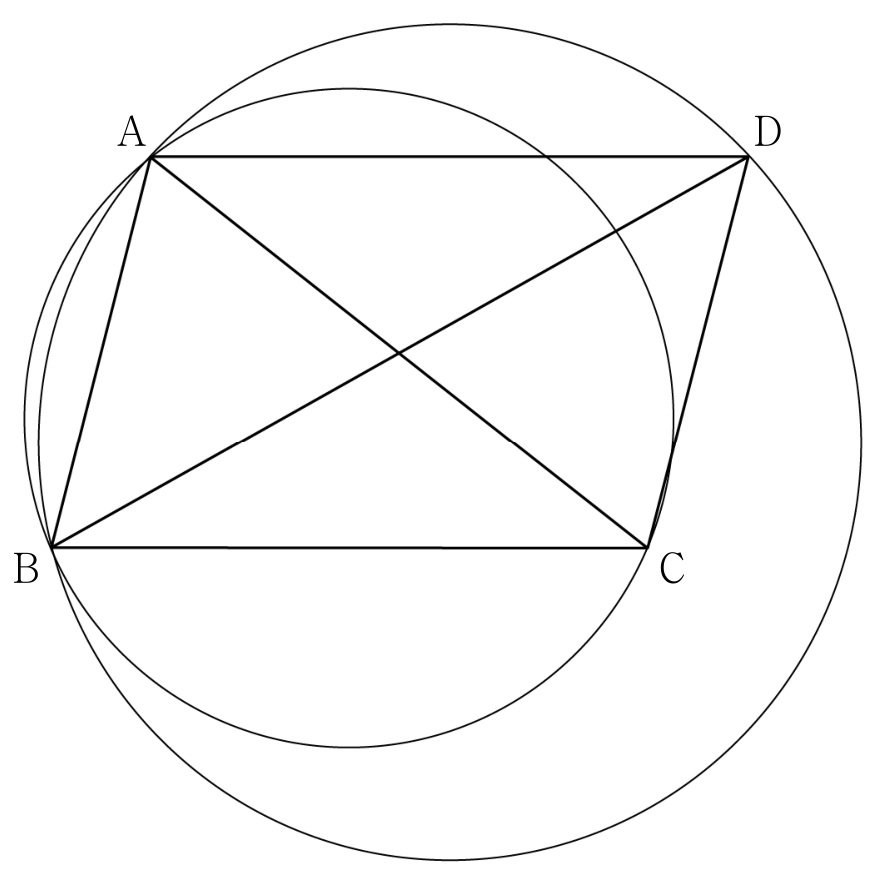
원본 정답 271
원본 풀이 (내부용)[출제의도] 사인법칙과 코사인법칙을 활용하여 문제 해결하기
\(
\angle ABC=\theta\quad\left(0<\theta<\frac{\pi}{2}\right)
\)
라 하면
\(
\cos\theta=\frac14
\)
이므로
\(
\sin\theta=\frac{\sqrt{15}}4
\)
삼각형 \(ABC\)의 외접원의 넓이가 \(\frac{32}{3}\pi\)이므로 이 외접원의 반지름의 길이를 \(R_1\)이라 하면
\(
R_1=\frac{4\sqrt6}{3}
\)
삼각형 \(ABC\)에서 사인법칙에 의하여
\(
\frac{\overline{AC}}{\sin\theta}=2R_1
\)
에서 \(\overline{AC}=2\sqrt{10}\).
평행사변형 \(ABCD\)의 둘레의 길이가 20이므로
\(
\overline{AB}=a\quad(0<a<5)
\)
라 하면
\(
\overline{AD}=\overline{BC}=10-a
\)
삼각형 \(ABC\)에서 코사인법칙에 의하여
\(
\begin{aligned}
40
&=a^2+(10-a)^2-2a(10-a)\cos\theta\\
&=a^2+(10-a)^2-2a(10-a)\times\frac14
\end{aligned}
\)
\(
a^2-10a+24=0,\quad (a-4)(a-6)=0
\)
\(0<a<5\)이므로
\(
\overline{AB}=4,\quad\overline{AD}=6
\)
\(\angle BAD=\pi-\theta\)이므로
\(
\cos(\pi-\theta)=-\cos\theta=-\frac14
\)
삼각형 \(ABD\)에서 코사인법칙에 의하여
\(
\begin{aligned}
\overline{BD}^{\,2}
&=6^2+4^2-2\times6\times4\times\cos(\pi-\theta)\\
&=6^2+4^2-2\times6\times4\times\left(-\frac14\right)=64
\end{aligned}
\)
\(
\overline{BD}=8
\)
삼각형 \(ABD\)의 외접원의 반지름의 길이를 \(R_2\)라 하면 삼각형 \(ABD\)에서 사인법칙에 의하여
\(
\frac{\overline{BD}}{\sin(\pi-\theta)}=2R_2
\)
에서
\(
R_2=\frac{16\sqrt{15}}{15}
\)
삼각형 \(ABD\)의 외접원의 넓이는
\(
\frac{256}{15}\pi
\)
\(
p=15,\quad q=256
\)
따라서 \(p+q=15+256=271\).
쌍둥이 1/5 · 4점 쌍둥이둘레의 길이가 $24$이고 $\cos\left(\angle ABC\right)=1/3$인 평행사변형 $ABCD$가 있습니다. 삼각형 $ABC$의 외접원의 넓이가 $\frac{33}{2}\pi$일 때, 삼각형 $ABD$의 외접원의 넓이는 $\frac{q}{p}\pi$입니다. $p+q$의 값을 구하시오. (단, $\overline{AB}<\overline{AD}$이고, $p,q$는 서로소인 자연수입니다.) [4점]
① $53$② $57$③ $59$④ $62$⑤ $67$
정답③ $59$ 평행사변형의 변을 $AB=a=4$, $BC=AD=b=8$라 두고 $\cos B=1/3$라 하자. $AC^2=a^2+b^2-2ab\cos B=176/3$이며 $\sin^2B=1-\cos^2B=8/9$이다. 삼각형 $ABC$의 외접반지름 $R_1$은 $R_1=AC/(2\sin B)$이므로 $R_1^2=33/2$이고 넓이는 $\pi R_1^2$과 같다. 주어진 넓이와 일치한다. 이웃각 $DAB=180^\circ-B$이므로 $BD^2=a^2+b^2+2ab\cos B=304/3$. 따라서 $R_2^2=BD^2/(4\sin^2B)=57/2$. 기약분수에서 $p+q=59$이다.
숫자: 원본 20 14 32 3 → 쌍둥이 24 1 3 33 2 · 같은 수: 3
쌍둥이 2/5 · 4점 쌍둥이그림과 같이 둘레의 길이가 $16$이고 $\cos\left(\angle ABC\right)=\frac{1}{3}$인 평행사변형 $ABCD$가 있습니다. 삼각형 $ABC$의 외접원의 넓이가 $\frac{27}{4}\pi$일 때, 삼각형 $ABD$의 외접원의 넓이는 $\frac{q}{p}\pi$입니다. $p+q$의 값을 구하세요. (단, $\overline{AB}<\overline{AD}$이고, $p$와 $q$는 서로소인 자연수입니다.)
정답$107$ $\sin\left(\angle ABC\right)=\frac{2\sqrt{2}}{3}$이고 삼각형 $ABC$의 외접원의 반지름을 $R_{1}$이라 하면 $R_{1}^{2}=\frac{27}{4}$, 사인법칙에서 $\overline{AC}^{2}=4R_{1}^{2}\sin^{2}\left(\angle ABC\right)=24$ $\overline{AB}=x$, $\overline{BC}=y$라 하면 $x+y=8$이고 코사인법칙에서 $x^{2}+y^{2}-2xy\times\frac{1}{3}=24$, 즉 $\left(x+y\right)^{2}-\frac{8}{3}xy=24$이므로 $xy=15$ $x<y$이므로 $x=3$, $y=5$ $\cos\left(\angle BAD\right)=-\frac{1}{3}$이므로 삼각형 $ABD$에서 $\overline{BD}^{2}=3^{2}+5^{2}+2\times3\times5\times\frac{1}{3}=44$ $\sin\left(\angle BAD\right)=\frac{2\sqrt{2}}{3}$이므로 외접원의 반지름 $R_{2}$는 $R_{2}^{2}=\frac{\overline{BD}^{2}}{4\sin^{2}\left(\angle BAD\right)}=\frac{99}{8}$, 넓이는 $\frac{99}{8}\pi$ 따라서 $p=8$, $q=99$이므로 $p+q=107$
숫자: 원본 20 14 32 3 → 쌍둥이 16 1 3 27 4 · 같은 수: 3
쌍둥이 3/5 · 4점 쌍둥이그림과 같이 둘레의 길이가 $14$이고 $\cos\left(\angle ABC\right)=\frac{1}{5}$인 평행사변형 $ABCD$가 있습니다. 삼각형 $ABC$의 외접원의 넓이가 $\frac{625}{96}\pi$일 때, 삼각형 $ABD$의 외접원의 넓이는 $\frac{q}{p}\pi$입니다. $p+q$의 값을 구하세요. (단, $\overline{AB}<\overline{AD}$이고, $p$와 $q$는 서로소인 자연수입니다.)
정답$307$ $\sin\left(\angle ABC\right)=\frac{2\sqrt{6}}{5}$이고 삼각형 $ABC$의 외접원의 반지름을 $R_{1}$이라 하면 $R_{1}^{2}=\frac{625}{96}$, 사인법칙에서 $\overline{AC}^{2}=4R_{1}^{2}\sin^{2}\left(\angle ABC\right)=25$ $\overline{AB}=x$, $\overline{BC}=y$라 하면 $x+y=7$이고 코사인법칙에서 $x^{2}+y^{2}-2xy\times\frac{1}{5}=25$, 즉 $\left(x+y\right)^{2}-\frac{12}{5}xy=25$이므로 $xy=10$ $x<y$이므로 $x=2$, $y=5$ $\cos\left(\angle BAD\right)=-\frac{1}{5}$이므로 삼각형 $ABD$에서 $\overline{BD}^{2}=2^{2}+5^{2}+2\times2\times5\times\frac{1}{5}=33$ $\sin\left(\angle BAD\right)=\frac{2\sqrt{6}}{5}$이므로 외접원의 반지름 $R_{2}$는 $R_{2}^{2}=\frac{\overline{BD}^{2}}{4\sin^{2}\left(\angle BAD\right)}=\frac{275}{32}$, 넓이는 $\frac{275}{32}\pi$ 따라서 $p=32$, $q=275$이므로 $p+q=307$
숫자: 원본 20 14 32 3 → 쌍둥이 14 1 5 625 96 · 같은 수: 14
쌍둥이 4/5 · 4점 쌍둥이그림과 같이 둘레의 길이가 $18$이고 $\cos\left(\angle ABC\right)=\frac{1}{8}$인 평행사변형 $ABCD$가 있습니다. 삼각형 $ABC$의 외접원의 넓이가 $\frac{64}{7}\pi$일 때, 삼각형 $ABD$의 외접원의 넓이는 $\frac{q}{p}\pi$입니다. $p+q$의 값을 구하세요. (단, $\overline{AB}<\overline{AD}$이고, $p$와 $q$는 서로소인 자연수입니다.)
정답$799$ $\sin\left(\angle ABC\right)=\frac{3\sqrt{7}}{8}$이고 삼각형 $ABC$의 외접원의 반지름을 $R_{1}$이라 하면 $R_{1}^{2}=\frac{64}{7}$, 사인법칙에서 $\overline{AC}^{2}=4R_{1}^{2}\sin^{2}\left(\angle ABC\right)=36$ $\overline{AB}=x$, $\overline{BC}=y$라 하면 $x+y=9$이고 코사인법칙에서 $x^{2}+y^{2}-2xy\times\frac{1}{8}=36$, 즉 $\left(x+y\right)^{2}-\frac{9}{4}xy=36$이므로 $xy=20$ $x<y$이므로 $x=4$, $y=5$ $\cos\left(\angle BAD\right)=-\frac{1}{8}$이므로 삼각형 $ABD$에서 $\overline{BD}^{2}=4^{2}+5^{2}+2\times4\times5\times\frac{1}{8}=46$ $\sin\left(\angle BAD\right)=\frac{3\sqrt{7}}{8}$이므로 외접원의 반지름 $R_{2}$는 $R_{2}^{2}=\frac{\overline{BD}^{2}}{4\sin^{2}\left(\angle BAD\right)}=\frac{736}{63}$, 넓이는 $\frac{736}{63}\pi$ 따라서 $p=63$, $q=736$이므로 $p+q=799$
숫자: 원본 20 14 32 3 → 쌍둥이 18 1 8 64 7
쌍둥이 5/5 · 4점 쌍둥이둘레의 길이가 $20$이고 $\cos\left(\angle ABC\right)=1/5$인 평행사변형 $ABCD$가 있습니다. 삼각형 $ABC$의 외접원의 넓이가 $\frac{265}{24}\pi$일 때, 삼각형 $ABD$의 외접원의 넓이는 $\frac{q}{p}\pi$입니다. $p+q$의 값을 구하시오. (단, $\overline{AB}<\overline{AD}$이고, $p,q$는 서로소인 자연수입니다.) [4점]
① $403$② $407$③ $409$④ $412$⑤ $417$
정답③ $409$ 평행사변형의 변을 $AB=a=4$, $BC=AD=b=6$라 두고 $\cos B=1/5$라 하자. $AC^2=a^2+b^2-2ab\cos B=212/5$이며 $\sin^2B=1-\cos^2B=24/25$이다. 삼각형 $ABC$의 외접반지름 $R_1$은 $R_1=AC/(2\sin B)$이므로 $R_1^2=265/24$이고 넓이는 $\pi R_1^2$과 같다. 주어진 넓이와 일치한다. 이웃각 $DAB=180^\circ-B$이므로 $BD^2=a^2+b^2+2ab\cos B=308/5$. 따라서 $R_2^2=BD^2/(4\sin^2B)=385/24$. 기약분수에서 $p+q=409$이다.
숫자: 원본 20 14 32 3 → 쌍둥이 20 1 5 265 24 · 같은 수: 20
158. 2024년 10월 3번 · 2점 · 수학Ⅰ 삼각함수 · G2M9-07#0
원본 (내부용)함수 \(y=\cos\frac{\pi}{4}x\)의 주기는? [2점]
① 2② 4③ 6④ 8⑤ 10
원본 정답 ④
원본 풀이 (내부용)[출제의도] 삼각함수의 그래프 이해하기
함수 \(y=\cos\frac{\pi}{4}x\)의 주기는
\(
\frac{2\pi}{\left|\frac{\pi}{4}\right|}=8
\)
생성기 숫자판 1/6 · G2M9-07#0함수 $y=\tan\frac{\pi}{3}x$의 주기로 옳은 것을 고르세요.
① $3$② $5$③ $7$④ $9$⑤ $11$
정답① $3$ 함수 $y=\tan\frac{\pi}{3}x$의 주기는 $\frac{\pi}{\frac{\pi}{3}}=3$
숫자: 원본 4 → 쌍둥이 3
생성기 숫자판 2/6 · G2M9-07#0함수 $y=\cos\frac{\pi}{2}x$의 주기로 옳은 것을 고르세요.
① $2$② $4$③ $6$④ $8$⑤ $10$
정답② $4$ 함수 $y=\cos\frac{\pi}{2}x$의 주기는 $\frac{2\pi}{\frac{\pi}{2}}=4$
숫자: 원본 4 → 쌍둥이 2
생성기 숫자판 3/6 · G2M9-07#0함수 $y=\tan\frac{\pi}{6}x$의 주기로 옳은 것을 고르세요.
① $2$② $4$③ $6$④ $8$⑤ $10$
정답③ $6$ 함수 $y=\tan\frac{\pi}{6}x$의 주기는 $\frac{\pi}{\frac{\pi}{6}}=6$
숫자: 원본 4 → 쌍둥이 6
생성기 숫자판 4/6 · G2M9-07#0함수 $y=\cos\frac{\pi}{5}x$의 주기로 옳은 것을 고르세요.
① $4$② $6$③ $8$④ $10$⑤ $12$
정답④ $10$ 함수 $y=\cos\frac{\pi}{5}x$의 주기는 $\frac{2\pi}{\frac{\pi}{5}}=10$
숫자: 원본 4 → 쌍둥이 5
생성기 숫자판 5/6 · G2M9-07#0함수 $y=\tan\frac{\pi}{5}x$의 주기로 옳은 것을 고르세요.
① $1$② $3$③ $5$④ $7$⑤ $9$
정답③ $5$ 함수 $y=\tan\frac{\pi}{5}x$의 주기는 $\frac{\pi}{\frac{\pi}{5}}=5$
숫자: 원본 4 → 쌍둥이 5
생성기 숫자판 6/6 · G2M9-07#0함수 $y=\cos\frac{\pi}{6}x$의 주기로 옳은 것을 고르세요.
① $10$② $12$③ $14$④ $16$⑤ $18$
정답② $12$ 함수 $y=\cos\frac{\pi}{6}x$의 주기는 $\frac{2\pi}{\frac{\pi}{6}}=12$
숫자: 원본 4 → 쌍둥이 6
159. 2024년 10월 11번 · 3점 · 수학Ⅰ 삼각함수 · G2M9-07#7
원본 (내부용)\( \cos\left(\frac32\pi-\theta\right)\times\tan\theta=\frac83 \) 일 때, \(\cos\theta\)의 값은? [3점]
① \(-\frac23\)② \(-\frac13\)③ 0④ \(\frac13\)⑤ \(\frac23\)
원본 (내부용)좌표평면에서 직선 \(y=x+1\) 위의 \(x\)좌표가 양수인 점 \(P\)에 대하여 동경 \(OP\)가 나타내는 각의 크기를 \(\theta\) \((0<\theta<2\pi)\)라 하자. 각의 크기 \(\theta\)를 나타내는 동경과 각의 크기 \(7\theta\)를 나타내는 동경이 일치할 때, 점 \(P\)의 \(x\)좌표는? (단, \(O\)는 원점이고, \(x\)축의 양의 방향을 시초선으로 한다.) [3점]
① \(\frac{\sqrt3-1}{2}\)② \(\frac{2\sqrt3-1}{4}\)③ \(\frac{\sqrt3}{2}\)④ \(\frac{2\sqrt3+1}{4}\)⑤ \(\frac{\sqrt3+1}{2}\)
원본 정답 ⑤
원본 풀이 (내부용)[출제의도] 삼각함수의 정의 이해하기
점 \(P\)의 \(x\)좌표를 \(a\,(a>0)\)이라 하면 점 \(P\)의 좌표는 \(P(a,a+1)\).
각의 크기 \(\theta\)를 나타내는 동경과 각의 크기 \(7\theta\)를 나타내는 동경이 일치하므로
\(
7\theta=\theta+2n\pi\quad(n\text{은 정수}),\qquad
\theta=\frac n3\pi
\)
점 \(P\)는 제1사분면 위의 점이고 \(0<\theta<2\pi\)이므로 \(n=1,\ \theta=\frac\pi3\).
\(
\tan\frac\pi3=\frac{a+1}{a}
\)
에서
\(
\sqrt3a=a+1,\qquad(\sqrt3-1)a=1
\)
따라서
\(
a=\frac1{\sqrt3-1}=\frac{\sqrt3+1}{2}
\)
생성기 숫자판 1/6 · G2M9-08#0좌표평면에서 직선 $y=x+3$ 위의 $x$좌표가 양수인 점 $\mathrm{P}$에 대하여 동경 $\mathrm{OP}$가 나타내는 각의 크기를 $\theta\ \left(0<\theta<2\pi\right)$라 합시다. 각의 크기 $\theta$를 나타내는 동경과 각의 크기 $13\theta$를 나타내는 동경이 일치할 때, 점 $\mathrm{P}$의 $x$좌표로 옳은 것을 고르세요. (단, $\mathrm{O}$는 원점이고, $x$축의 양의 방향을 시초선으로 합니다.)
① $\frac{3\sqrt{3}-3}{2}$② $\frac{6\sqrt{3}-3}{4}$③ $\frac{3\sqrt{3}}{2}$④ $\frac{6\sqrt{3}+3}{4}$⑤ $\frac{3\sqrt{3}+3}{2}$
정답⑤ $\frac{3\sqrt{3}+3}{2}$ 두 동경이 일치하므로 $13\theta-\theta=2n\pi$ ($n$은 정수), $\theta=\frac{n\pi}{6}$ 점 $\mathrm{P}$는 직선 $y=x+3$ 위의 $x$좌표가 양수인 점이므로 $\frac{\pi}{4}<\theta<\frac{\pi}{2}$, 곧 $\theta=\frac{\pi}{3}$ 점 $\mathrm{P}$의 $x$좌표를 $t$라 하면 $\tan\frac{\pi}{3}=\frac{t+3}{t}=\sqrt{3}$ $t=\frac{3}{\sqrt{3}-1}=\frac{3\sqrt{3}+3}{2}$
숫자: 원본 1 0 2 7 → 쌍둥이 3 0 2 13 · 같은 수: 0 2
생성기 숫자판 2/6 · G2M9-08#0좌표평면에서 직선 $y=x+4$ 위의 $x$좌표가 양수인 점 $\mathrm{P}$에 대하여 동경 $\mathrm{OP}$가 나타내는 각의 크기를 $\theta\ \left(0<\theta<2\pi\right)$라 합시다. 각의 크기 $\theta$를 나타내는 동경과 각의 크기 $7\theta$를 나타내는 동경이 일치할 때, 점 $\mathrm{P}$의 $x$좌표로 옳은 것을 고르세요. (단, $\mathrm{O}$는 원점이고, $x$축의 양의 방향을 시초선으로 합니다.)
① $2\sqrt{3}-2$② $2\sqrt{3}-1$③ $2\sqrt{3}$④ $2\sqrt{3}+1$⑤ $2\sqrt{3}+2$
정답⑤ $2\sqrt{3}+2$ 두 동경이 일치하므로 $7\theta-\theta=2n\pi$ ($n$은 정수), $\theta=\frac{n\pi}{3}$ 점 $\mathrm{P}$는 직선 $y=x+4$ 위의 $x$좌표가 양수인 점이므로 $\frac{\pi}{4}<\theta<\frac{\pi}{2}$, 곧 $\theta=\frac{\pi}{3}$ 점 $\mathrm{P}$의 $x$좌표를 $t$라 하면 $\tan\frac{\pi}{3}=\frac{t+4}{t}=\sqrt{3}$ $t=\frac{4}{\sqrt{3}-1}=2\sqrt{3}+2$
숫자: 원본 1 0 2 7 → 쌍둥이 4 0 2 7 · 같은 수: 0 2 7
생성기 숫자판 3/6 · G2M9-08#0좌표평면에서 직선 $y=x+2$ 위의 $x$좌표가 양수인 점 $\mathrm{P}$에 대하여 동경 $\mathrm{OP}$가 나타내는 각의 크기를 $\theta\ \left(0<\theta<2\pi\right)$라 합시다. 각의 크기 $\theta$를 나타내는 동경과 각의 크기 $7\theta$를 나타내는 동경이 일치할 때, 점 $\mathrm{P}$의 $x$좌표로 옳은 것을 고르세요. (단, $\mathrm{O}$는 원점이고, $x$축의 양의 방향을 시초선으로 합니다.)
① $\sqrt{3}-1$② $\frac{2\sqrt{3}-1}{2}$③ $\sqrt{3}$④ $\frac{2\sqrt{3}+1}{2}$⑤ $\sqrt{3}+1$
정답⑤ $\sqrt{3}+1$ 두 동경이 일치하므로 $7\theta-\theta=2n\pi$ ($n$은 정수), $\theta=\frac{n\pi}{3}$ 점 $\mathrm{P}$는 직선 $y=x+2$ 위의 $x$좌표가 양수인 점이므로 $\frac{\pi}{4}<\theta<\frac{\pi}{2}$, 곧 $\theta=\frac{\pi}{3}$ 점 $\mathrm{P}$의 $x$좌표를 $t$라 하면 $\tan\frac{\pi}{3}=\frac{t+2}{t}=\sqrt{3}$ $t=\frac{2}{\sqrt{3}-1}=\sqrt{3}+1$
숫자: 원본 1 0 2 7 → 쌍둥이 2 0 2 7 · 같은 수: 0 2 7
생성기 숫자판 4/6 · G2M9-08#0좌표평면에서 직선 $y=x+4$ 위의 $x$좌표가 양수인 점 $\mathrm{P}$에 대하여 동경 $\mathrm{OP}$가 나타내는 각의 크기를 $\theta\ \left(0<\theta<2\pi\right)$라 합시다. 각의 크기 $\theta$를 나타내는 동경과 각의 크기 $13\theta$를 나타내는 동경이 일치할 때, 점 $\mathrm{P}$의 $x$좌표로 옳은 것을 고르세요. (단, $\mathrm{O}$는 원점이고, $x$축의 양의 방향을 시초선으로 합니다.)
① $2\sqrt{3}-2$② $2\sqrt{3}-1$③ $2\sqrt{3}$④ $2\sqrt{3}+1$⑤ $2\sqrt{3}+2$
정답⑤ $2\sqrt{3}+2$ 두 동경이 일치하므로 $13\theta-\theta=2n\pi$ ($n$은 정수), $\theta=\frac{n\pi}{6}$ 점 $\mathrm{P}$는 직선 $y=x+4$ 위의 $x$좌표가 양수인 점이므로 $\frac{\pi}{4}<\theta<\frac{\pi}{2}$, 곧 $\theta=\frac{\pi}{3}$ 점 $\mathrm{P}$의 $x$좌표를 $t$라 하면 $\tan\frac{\pi}{3}=\frac{t+4}{t}=\sqrt{3}$ $t=\frac{4}{\sqrt{3}-1}=2\sqrt{3}+2$
숫자: 원본 1 0 2 7 → 쌍둥이 4 0 2 13 · 같은 수: 0 2
생성기 숫자판 5/6 · G2M9-08#0좌표평면에서 직선 $y=x+3$ 위의 $x$좌표가 양수인 점 $\mathrm{P}$에 대하여 동경 $\mathrm{OP}$가 나타내는 각의 크기를 $\theta\ \left(0<\theta<2\pi\right)$라 합시다. 각의 크기 $\theta$를 나타내는 동경과 각의 크기 $7\theta$를 나타내는 동경이 일치할 때, 점 $\mathrm{P}$의 $x$좌표로 옳은 것을 고르세요. (단, $\mathrm{O}$는 원점이고, $x$축의 양의 방향을 시초선으로 합니다.)
① $\frac{3\sqrt{3}-3}{2}$② $\frac{6\sqrt{3}-3}{4}$③ $\frac{3\sqrt{3}}{2}$④ $\frac{6\sqrt{3}+3}{4}$⑤ $\frac{3\sqrt{3}+3}{2}$
정답⑤ $\frac{3\sqrt{3}+3}{2}$ 두 동경이 일치하므로 $7\theta-\theta=2n\pi$ ($n$은 정수), $\theta=\frac{n\pi}{3}$ 점 $\mathrm{P}$는 직선 $y=x+3$ 위의 $x$좌표가 양수인 점이므로 $\frac{\pi}{4}<\theta<\frac{\pi}{2}$, 곧 $\theta=\frac{\pi}{3}$ 점 $\mathrm{P}$의 $x$좌표를 $t$라 하면 $\tan\frac{\pi}{3}=\frac{t+3}{t}=\sqrt{3}$ $t=\frac{3}{\sqrt{3}-1}=\frac{3\sqrt{3}+3}{2}$
숫자: 원본 1 0 2 7 → 쌍둥이 3 0 2 7 · 같은 수: 0 2 7
생성기 숫자판 6/6 · G2M9-08#0좌표평면에서 직선 $y=x+1$ 위의 $x$좌표가 양수인 점 $\mathrm{P}$에 대하여 동경 $\mathrm{OP}$가 나타내는 각의 크기를 $\theta\ \left(0<\theta<2\pi\right)$라 합시다. 각의 크기 $\theta$를 나타내는 동경과 각의 크기 $7\theta$를 나타내는 동경이 일치할 때, 점 $\mathrm{P}$의 $x$좌표로 옳은 것을 고르세요. (단, $\mathrm{O}$는 원점이고, $x$축의 양의 방향을 시초선으로 합니다.)
① $\frac{\sqrt{3}-1}{2}$② $\frac{2\sqrt{3}-1}{4}$③ $\frac{\sqrt{3}}{2}$④ $\frac{2\sqrt{3}+1}{4}$⑤ $\frac{\sqrt{3}+1}{2}$
정답⑤ $\frac{\sqrt{3}+1}{2}$ 두 동경이 일치하므로 $7\theta-\theta=2n\pi$ ($n$은 정수), $\theta=\frac{n\pi}{3}$ 점 $\mathrm{P}$는 직선 $y=x+1$ 위의 $x$좌표가 양수인 점이므로 $\frac{\pi}{4}<\theta<\frac{\pi}{2}$, 곧 $\theta=\frac{\pi}{3}$ 점 $\mathrm{P}$의 $x$좌표를 $t$라 하면 $\tan\frac{\pi}{3}=\frac{t+1}{t}=\sqrt{3}$ $t=\frac{1}{\sqrt{3}-1}=\frac{\sqrt{3}+1}{2}$
숫자: 원본 1 0 2 7 → 쌍둥이 1 0 2 7 · 같은 수: 0 1 2 7
161. 2024년 10월 17번 · 4점 · 수학Ⅰ 삼각함수 · 4점 쌍둥이
원본 (내부용)\(a>\pi\)인 실수 \(a\)에 대하여 함수 \( f(x)=\cos^2x-\sin x-1 \) 이 구간 \((\pi,a]\)에서 최솟값을 갖도록 하는 \(a\)의 최솟값을 \(p\)라 하자. 구간 \((\pi,p]\)에서 함수 \(f(x)\)의 최댓값을 \(M\)이라 할 때, \( p\times M \) 의 값은? [4점]
① \(\frac38\pi\)② \(\frac\pi2\)③ \(\frac58\pi\)④ \(\frac34\pi\)⑤ \(\frac78\pi\)
원본 정답 ①
원본 풀이 (내부용)[출제의도] 삼각함수의 그래프를 이용하여 추론하기
\(
\begin{aligned}
f(x)&=\cos^2x-\sin x-1\\
&=(1-\sin^2x)-\sin x-1\\
&=-\sin^2x-\sin x\\
&=-\left(\sin x+\frac12\right)^2+\frac14
\end{aligned}
\)
\(f(\pi)=0\)이고 \(\pi\)가 구간 \((\pi,a]\)에 속하지 않으므로, 구간 \((\pi,a]\)에서 함수 \(f(x)\)가 최솟값을 갖기 위해서는 \(f(x)\le0\)을 만족시키는 \(x\)의 값이 구간 \((\pi,a]\)에 존재해야 한다.
\(
f(x)\le0\text{에서 }\sin x=-1\text{ 또는 }\sin x\ge0
\)
\(x>\pi\)에서 \(\sin x=-1\)인 \(x\)의 최솟값은 \(\frac32\pi\), \(\sin x\ge0\)인 \(x\)의 최솟값은 \(2\pi\).
그러므로
\(
p=\frac32\pi
\)
한편 구간 \((\pi,\frac32\pi]\)에서 \(-1\le\sin x<0\)이므로
\(
f(x)=-\left(\sin x+\frac12\right)^2+\frac14\le\frac14
\)
그러므로 \(M=\frac14\).
따라서
\(
p\times M=\frac38\pi
\)
쌍둥이 1/5 · 4점 쌍둥이$a>\pi$에 대하여 $f(x)=\cos^2x-\frac13\sin x-1$이라 합니다. 구간 $(\pi,a]$에서 $f$가 최솟값을 갖게 하는 $a$의 최솟값을 $p$라 하고, $M$을 구간 $(\pi,p]$에서 $f$의 최댓값이라 할 때, $M$의 값을 구하세요.
① $\frac1{72}$② $\frac1{48}$③ $\frac1{36}$④ $\frac1{24}$⑤ $\frac1{18}$
정답③ $\frac1{36}$ $s=\sin x$로 두면 $f(x)=-s(s+\frac13)$이다. $x$가 $\pi$에서 증가할 때 처음에는 $s$가 $0$에서 감소한다. $p=\pi+\arcsin(\frac13)$에서 $s=-\frac13$이고 $f(p)=0$이다. $(\pi,p)$에서는 $-\frac13<s<0$이므로 $f(x)>0$이며, 구간 끝점이 포함될 때 처음 최솟값 $0$을 얻는다. 따라서 이 구간에서 최댓값은 이차식 $-s(s+\frac13)$의 꼭짓점 $s=-\frac16$에서 얻는다. 꼭짓값은 $M=\frac1{36}$이다.
숫자: 원본 1 → 쌍둥이 13 1 · 같은 수: 1
쌍둥이 2/5 · 4점 쌍둥이$a>\pi$인 실수 $a$에 대하여 함수 $f(x)=\cos^{2}x-\frac{1}{2}\sin x-1$이 구간 $(\pi,\ a]$에서 최솟값을 갖도록 하는 $a$의 최솟값을 $p$라 합니다. 구간 $(\pi,\ p]$에서 함수 $f(x)$의 최댓값을 $M$이라 할 때, $p\times M$의 값으로 옳은 것을 고르세요.
정답$\frac{7\pi}{96}$ $\sin x=s$라 하면 $f(x)=1-s^{2}-\frac{1}{2}s-1=-s\left(s+\frac{1}{2}\right)$ $x$가 $\pi$에서 커지면 $s$는 $0$에서 줄어들고, $f(x)$는 $s=-\frac{1}{4}$까지 커졌다가 $s=-\frac{1}{2}$에서 다시 $0$이 됩니다. $x=\pi$에서의 값 $0$은 구간에 포함되지 않으므로, 최솟값을 가지려면 다시 $f(x)=0$이 되는 점까지 가야 하고 $\sin p=-\frac{1}{2}$에서 $p=\frac{7 \pi}{6}$ $M=f$의 최댓값$=\frac{1}{16}$ ($s=-\frac{1}{4}$일 때) $p\times M=\frac{7 \pi}{6}\times\frac{1}{16}=\frac{7 \pi}{96}$
숫자: 원본 1 → 쌍둥이 1 2 1 · 같은 수: 1
쌍둥이 3/5 · 4점 쌍둥이$a>\pi$인 실수 $a$에 대하여 함수 $f(x)=\cos^{2}x-\frac{\sqrt{3}}{2}\sin x-1$이 구간 $(\pi,\ a]$에서 최솟값을 갖도록 하는 $a$의 최솟값을 $p$라 합니다. 구간 $(\pi,\ p]$에서 함수 $f(x)$의 최댓값을 $M$이라 할 때, $p\times M$의 값으로 옳은 것을 고르세요.
① $\frac{\pi}{12}$② $\frac{\pi}{6}$③ $\frac{\pi}{4}$④ $\frac{\pi}{3}$⑤ $\frac{5 \pi}{12}$
정답③ $\frac{\pi}{4}$ $\sin x=s$라 하면 $f(x)=1-s^{2}-\frac{\sqrt{3}}{2}s-1=-s\left(s+\frac{\sqrt{3}}{2}\right)$ $x$가 $\pi$에서 커지면 $s$는 $0$에서 줄어들고, $f(x)$는 $s=-\frac{\sqrt{3}}{4}$까지 커졌다가 $s=-\frac{\sqrt{3}}{2}$에서 다시 $0$이 됩니다. $x=\pi$에서의 값 $0$은 구간에 포함되지 않으므로, 최솟값을 가지려면 다시 $f(x)=0$이 되는 점까지 가야 하고 $\sin p=-\frac{\sqrt{3}}{2}$에서 $p=\frac{4 \pi}{3}$ $M=f$의 최댓값$=\frac{3}{16}$ ($s=-\frac{\sqrt{3}}{4}$일 때) $p\times M=\frac{4 \pi}{3}\times\frac{3}{16}=\frac{\pi}{4}$
숫자: 원본 1 → 쌍둥이 3 2 1 · 같은 수: 1
쌍둥이 4/5 · 4점 쌍둥이$a>\pi$인 실수 $a$에 대하여 함수 $f(x)=\cos^{2}x-\frac{\sqrt{2}}{2}\sin x-1$이 구간 $(\pi,\ a]$에서 최솟값을 갖도록 하는 $a$의 최솟값을 $p$라 합니다. 구간 $(\pi,\ p]$에서 함수 $f(x)$의 최댓값을 $M$이라 할 때, $p\times M$의 값으로 옳은 것을 고르세요.
① $0$② $\frac{5 \pi}{96}$③ $\frac{5 \pi}{48}$④ $\frac{5 \pi}{32}$⑤ $\frac{5 \pi}{24}$
정답$\frac{5\pi}{32}$ $\sin x=s$라 하면 $f(x)=1-s^{2}-\frac{\sqrt{2}}{2}s-1=-s\left(s+\frac{\sqrt{2}}{2}\right)$ $x$가 $\pi$에서 커지면 $s$는 $0$에서 줄어들고, $f(x)$는 $s=-\frac{\sqrt{2}}{4}$까지 커졌다가 $s=-\frac{\sqrt{2}}{2}$에서 다시 $0$이 됩니다. $x=\pi$에서의 값 $0$은 구간에 포함되지 않으므로, 최솟값을 가지려면 다시 $f(x)=0$이 되는 점까지 가야 하고 $\sin p=-\frac{\sqrt{2}}{2}$에서 $p=\frac{5 \pi}{4}$ $M=f$의 최댓값$=\frac{1}{8}$ ($s=-\frac{\sqrt{2}}{4}$일 때) $p\times M=\frac{5 \pi}{4}\times\frac{1}{8}=\frac{5 \pi}{32}$
숫자: 원본 1 → 쌍둥이 2 2 1 · 같은 수: 1
쌍둥이 5/5 · 4점 쌍둥이$a>\pi$에 대하여 $f(x)=\cos^2x-\frac23\sin x-1$이라 합니다. 구간 $(\pi,a]$에서 $f$가 최솟값을 갖게 하는 $a$의 최솟값을 $p$라 하고, $M$을 구간 $(\pi,p]$에서 $f$의 최댓값이라 할 때, $M$의 값을 구하세요.
① $\frac1{18}$② $\frac1{12}$③ $\frac19$④ $\frac16$⑤ $\frac29$
정답③ $\frac19$ $s=\sin x$로 놓으면 $f(x)=-s(s+\frac23)$이다. $p=\pi+\arcsin(\frac23)$에서 $s=-\frac23$이 되어 $f(p)=0$이고, 앞 구간에서는 $-\frac23<s<0$이므로 $f(x)>0$. 따라서 이 $p$가 최솟값이 처음 실제로 얻어지는 끝점이다. 구간 $(\pi,p]$에서 $s$는 $0$에서 $-\frac23$까지 변한다. 이차식 $-s(s+\frac23)$은 꼭짓점 $s=-\frac13$에서 최댓값을 갖는다. 따라서 $M=\frac19$이다.
숫자: 원본 1 → 쌍둥이 23 1 · 같은 수: 1
162. 2024년 10월 23번 · 3점 · 수학Ⅰ 삼각함수 · G2M9-04#7
원본 (내부용)반지름의 길이가 8이고 넓이가 \(28\pi\)인 부채꼴의 호의 길이가 \(a\pi\)일 때, \(a\)의 값을 구하시오. [3점]
원본 정답 7
원본 풀이 (내부용)[출제의도] 호도법 이해하기
\(
\frac12\times8\times a\pi=28\pi
\)
에서 \(a=7\).
생성기 숫자판 1/6 · G2M9-04#7반지름의 길이가 $12$이고 넓이가 $60\pi$인 부채꼴의 호의 길이가 $a\pi$일 때, $a$의 값을 구하세요.
정답$10$ 호의 길이를 $l$이라 하면 $S=\frac{1}{2}rl$이므로 $60\pi=\frac{1}{2}\times 12\times l$ 따라서 $l=10\pi$이므로 $a=10$
숫자: 원본 8 28 10 10 → 쌍둥이 12 60
생성기 숫자판 2/6 · G2M9-04#7반지름의 길이가 $4$이고 넓이가 $10\pi$인 부채꼴의 호의 길이가 $a\pi$일 때, $a$의 값을 구하세요.
정답$5$ 호의 길이를 $l$이라 하면 $S=\frac{1}{2}rl$이므로 $10\pi=\frac{1}{2}\times 4\times l$ 따라서 $l=5\pi$이므로 $a=5$
숫자: 원본 8 28 10 10 → 쌍둥이 4 10 · 같은 수: 10
생성기 숫자판 3/6 · G2M9-04#7반지름의 길이가 $10$이고 넓이가 $10\pi$인 부채꼴의 호의 길이가 $a\pi$일 때, $a$의 값을 구하세요.
정답$2$ 호의 길이를 $l$이라 하면 $S=\frac{1}{2}rl$이므로 $10\pi=\frac{1}{2}\times 10\times l$ 따라서 $l=2\pi$이므로 $a=2$
숫자: 원본 8 28 10 10 → 쌍둥이 10 10 · 같은 수: 10
생성기 숫자판 4/6 · G2M9-04#7반지름의 길이가 $8$이고 넓이가 $16\pi$인 부채꼴의 호의 길이가 $a\pi$일 때, $a$의 값을 구하세요.
정답$4$ 호의 길이를 $l$이라 하면 $S=\frac{1}{2}rl$이므로 $16\pi=\frac{1}{2}\times 8\times l$ 따라서 $l=4\pi$이므로 $a=4$
숫자: 원본 8 28 10 10 → 쌍둥이 8 16 · 같은 수: 8
생성기 숫자판 5/6 · G2M9-04#7반지름의 길이가 $6$이고 넓이가 $12\pi$인 부채꼴의 호의 길이가 $a\pi$일 때, $a$의 값을 구하세요.
정답$4$ 호의 길이를 $l$이라 하면 $S=\frac{1}{2}rl$이므로 $12\pi=\frac{1}{2}\times 6\times l$ 따라서 $l=4\pi$이므로 $a=4$
숫자: 원본 8 28 10 10 → 쌍둥이 6 12
생성기 숫자판 6/6 · G2M9-04#7반지름의 길이가 $3$이고 넓이가 $6\pi$인 부채꼴의 호의 길이가 $a\pi$일 때, $a$의 값을 구하세요.
정답$4$ 호의 길이를 $l$이라 하면 $S=\frac{1}{2}rl$이므로 $6\pi=\frac{1}{2}\times 3\times l$ 따라서 $l=4\pi$이므로 $a=4$
숫자: 원본 8 28 10 10 → 쌍둥이 3 6
163. 2024년 10월 29번 · 4점 · 수학Ⅰ 삼각함수 · 4점 쌍둥이
원본 (내부용)\(0\le x\le 2\pi\)일 때, \(x\)에 대한 방정식 \( \left(\sin x-\frac14 k\right) \left(\sin x+\frac14 k^2-\frac34 k\right)=0 \) 의 서로 다른 해의 개수가 2가 되도록 하는 모든 정수 \(k\)의 값의 곱을 구하시오. [4점]
원본 정답 48
원본 풀이 (내부용)[출제의도] 삼각함수의 그래프를 이용하여 추론하기
앞쪽에서 이어지는 부분:
서로 다른 해의 개수가 2가 되도록 하는 \(k\)의 값은 2이다.
(ii) \(k\ne0\)이고 \(k\ne2\)일 때
\(
\left(\sin x-\frac14k\right)
\left(\sin x+\frac14k^2-\frac34k\right)=0
\)
의 서로 다른 해의 개수는 방정식
\(
\sin x=\frac14k
\)
의 서로 다른 해의 개수와 방정식
\(
\sin x=-\frac14k^2+\frac34k
\)
의 서로 다른 해의 개수의 합과 같다.
(a) 방정식 \(\sin x=\frac14k\)로 서로 다른 해의 개수가 0일 때
\(
|k|>4
\)
이고, \(|k|>4\)이면 방정식 \(\sin x=-\frac14k^2+\frac34k\)로 서로 다른 해의 개수는 0이다.
그러므로
\(
\left(\sin x-\frac14k\right)
\left(\sin x+\frac14k^2-\frac34k\right)=0
\)
의 서로 다른 해의 개수는 0이다.
(b) 방정식 \(\sin x=\frac14k\)로 서로 다른 해의 개수가 1일 때
\(
|k|=4
\)
이므로 \(k=4\) 또는 \(k=-4\).
방정식 \(\sin x=-\frac14k^2+\frac34k\)로 서로 다른 해의 개수는 \(k=4\)일 때 1이고 \(k=-4\)일 때 0이므로, 방정식
\(
\left(\sin x-\frac14k\right)
\left(\sin x+\frac14k^2-\frac34k\right)=0
\)
의 서로 다른 해의 개수가 2가 되도록 하는 \(k\)의 값은 4이다.
(c) 방정식 \(\sin x=\frac14k\)로 서로 다른 해의 개수가 2일 때
\(
|k|<4\quad\cdots㉠
\)
방정식의 서로 다른 해의 개수가 2가 되려면 방정식
\(
\sin x=-\frac14k^2+\frac34k
\)
의 서로 다른 해의 개수가 0이어야 하므로
\(
k<-1,\quad k>4\quad\cdots㉡
\)
㉠, ㉡을 동시에 만족시키는 정수 \(k\)는 \(-3,-2\).
(i), (ii)에 의하여 구하는 정수 \(k\)는 \(-3,-2,2,4\)이므로 모든 정수 \(k\)의 값의 곱은
\(
-3\times(-2)\times2\times4=48
\)
쌍둥이 1/5 · 4점 쌍둥이$0\le x\le2\pi$에서 방정식 $\left(\sin x-\frac{k}{5}\right)\left(\sin x+\frac{k^2}{5}-\frac{3k}{5}\right)=0$의 서로 다른 실근 개수가 $2$가 되도록 하는 모든 정수 $k$의 합을 구하세요.
① $-9$② $-8$③ $-7$④ $-6$⑤ $-5$
정답③ $-7$ 각 인수는 사인값 $u=k/5$, $v=k(3-k)/5$를 지정한다. 내부 비영 사인값은 두 해, $0$은 세 해, $\pm1$은 각각 한 해를 갖고, 같은 수준이면 중복으로 세지 않는다. $|u|\le1$이면 $-5\le k\le5$이며, $|v|\le1$은 $|k(3-k)|\le5$를 준다. 이 부등식의 정수 후보는 $-1,0,1,2,3,4$이다. 후보를 대입하고 나머지 $-5\le k\le5$도 확인하면 조건을 만족하는 것은 $-4,-3,-2,2$이다. $|k|>5$이면 두 사인 수준 모두 범위 밖이다. 따라서 합은 $-4-3-2+2=-7$이다.
쌍둥이 2/5 · 4점 쌍둥이$0\le x\le2\pi$일 때, $x$에 대한 방정식 $\left(\sin x-\frac{1}{5}k\right)\left(\sin x+\frac{1}{5}k^{2}-\frac{3}{5}k\right)=0$의 서로 다른 해의 개수가 $2$가 되도록 하는 모든 정수 $k$의 값의 곱의 값을 구하세요.
정답$-48$ $\sin x=\frac{k}{5}$ 또는 $\sin x=\frac{3k-k^{2}}{5}$이고, $\sin x=s$의 해는 $|s|<1$, $s\ne0$이면 $2$개, $s=0$이면 $3$개, $s=\pm1$이면 $1$개입니다. 두 값의 경우를 정수 $k$마다 따지면 해가 $2$개인 것은 $k=-4$ ($\sin x=-\frac{4}{5}$, $-\frac{28}{5}$), $k=-3$ ($\sin x=-\frac{3}{5}$, $-\frac{18}{5}$), $k=-2$ ($\sin x=-\frac{2}{5}$, $-2$), $k=2$ ($\sin x=\frac{2}{5}$, $\frac{2}{5}$) 곱은 $\left(-4\right)\times\left(-3\right)\times\left(-2\right)\times2=-48$
쌍둥이 3/5 · 4점 쌍둥이$0\le x\le2\pi$일 때, $x$에 대한 방정식 $\left(\sin x-\frac{1}{3}k\right)\left(\sin x+\frac{1}{3}k^{2}-\frac{5}{3}k\right)=0$의 서로 다른 해의 개수가 $2$가 되도록 하는 모든 정수 $k$의 값의 곱의 값을 구하세요.
정답$4$ $\sin x=\frac{k}{3}$ 또는 $\sin x=\frac{5k-k^{2}}{3}$이고, $\sin x=s$의 해는 $|s|<1$, $s\ne0$이면 $2$개, $s=0$이면 $3$개, $s=\pm1$이면 $1$개입니다. 두 값의 경우를 정수 $k$마다 따지면 해가 $2$개인 것은 $k=-2$ ($\sin x=-\frac{2}{3}$, $-\frac{14}{3}$), $k=-1$ ($\sin x=-\frac{1}{3}$, $-2$), $k=1$ ($\sin x=\frac{1}{3}$, $\frac{4}{3}$), $k=2$ ($\sin x=\frac{2}{3}$, $2$) 곱은 $\left(-2\right)\times\left(-1\right)\times1\times2=4$
쌍둥이 4/5 · 4점 쌍둥이$0\le x\le2\pi$일 때, $x$에 대한 방정식 $\left(\sin x-\frac{1}{3}k\right)\left(\sin x+\frac{1}{3}k^{2}-\frac{7}{3}k\right)=0$의 서로 다른 해의 개수가 $2$가 되도록 하는 모든 정수 $k$의 값의 곱의 값을 구하세요.
정답$4$ $\sin x=\frac{k}{3}$ 또는 $\sin x=\frac{7k-k^{2}}{3}$이고, $\sin x=s$의 해는 $|s|<1$, $s\ne0$이면 $2$개, $s=0$이면 $3$개, $s=\pm1$이면 $1$개입니다. 두 값의 경우를 정수 $k$마다 따지면 해가 $2$개인 것은 $k=-2$ ($\sin x=-\frac{2}{3}$, $-6$), $k=-1$ ($\sin x=-\frac{1}{3}$, $-\frac{8}{3}$), $k=1$ ($\sin x=\frac{1}{3}$, $2$), $k=2$ ($\sin x=\frac{2}{3}$, $\frac{10}{3}$) 곱은 $\left(-2\right)\times\left(-1\right)\times1\times2=4$
쌍둥이 5/5 · 4점 쌍둥이$0\le x\le2\pi$일 때 방정식 $\left(\sin x-\frac{k}{4}\right)\left(\sin x+\frac{k^2}{4}-\frac{2k}{4}\right)=0$의 서로 다른 실근 개수가 $2$가 되도록 하는 모든 정수 $k$의 합을 구하세요.
① $-6$② $-5$③ $-4$④ $-3$⑤ $-2$
정답③ $-4$ 두 사인값은 $u=k/4$, $v=k(2-k)/4$이다. $[-1,1]$ 밖의 값은 근을 주지 않고, $0$은 세 점, $\pm1$은 한 점, 그 밖의 내부 값은 두 점을 준다. 두 값이 같으면 한 번만 센다. $|u|\le1$이면 $-4\le k\le4$. $|v|\le1$은 $|k(2-k)|\le4$이므로 가능한 정수는 $-1,0,1,2,3$이다. 이 후보들과 나머지 $k=-4,-3,-2,4$를 대입해 서로 다른 근이 정확히 두 개인 값은 $k=-3,-2,1$임을 얻는다. 따라서 모든 정수 $k$의 합은 $-3-2+1=-4$이다.
원본 (내부용)반지름의 길이가 \(2\)이고 넓이가 \(\frac{\pi}{3}\)인 부채꼴의 중심각의 크기는? [2점]
① \(\frac{\pi}{24}\)② \(\frac{\pi}{12}\)③ \(\frac{\pi}{8}\)④ \(\frac{\pi}{6}\)⑤ \(\frac{5}{24}\pi\)
원본 정답 ④
원본 풀이 (내부용)[출제의도] 부채꼴의 중심각의 크기 계산하기
부채꼴의 넓이를 \(S\), 중심각의 크기를 \(\theta\), 반지름의 길이를 \(r\)이라 하면
\(
S=\frac12r^2\theta
\)
이므로
\(
\frac{\pi}{3}=\frac12\times2^2\times\theta
\)
이다. 따라서 \(\theta=\frac{\pi}{6}\)이다.
생성기 숫자판 1/6 · G2M9-04#5반지름의 길이가 $12$이고 넓이가 $36\pi$인 부채꼴의 중심각의 크기로 옳은 것을 고르세요.
① $\frac{\pi}{2}$② $\pi$③ $\frac{3}{2}\pi$④ $2\pi$⑤ $\frac{5}{2}\pi$
정답① $\frac{\pi}{2}$ $S=\frac{1}{2}r^{2}\theta$이므로 $36\pi=\frac{1}{2}\times 12^{2}\times \theta$ 따라서 $\theta=\frac{\pi}{2}$
숫자: 원본 2 3 → 쌍둥이 12 36
생성기 숫자판 2/6 · G2M9-04#5반지름의 길이가 $12$이고 넓이가 $54\pi$인 부채꼴의 중심각의 크기로 옳은 것을 고르세요.
① $\frac{3}{4}\pi$② $\pi$③ $\frac{5}{4}\pi$④ $\frac{3}{2}\pi$⑤ $\frac{7}{4}\pi$
정답① $\frac{3}{4}\pi$ $S=\frac{1}{2}r^{2}\theta$이므로 $54\pi=\frac{1}{2}\times 12^{2}\times \theta$ 따라서 $\theta=\frac{3}{4}\pi$
숫자: 원본 2 3 → 쌍둥이 12 54
생성기 숫자판 3/6 · G2M9-04#5반지름의 길이가 $2$이고 넓이가 $\frac{2}{3}\pi$인 부채꼴의 중심각의 크기로 옳은 것을 고르세요.
① $\frac{\pi}{3}$② $\frac{2}{3}\pi$③ $\pi$④ $\frac{4}{3}\pi$⑤ $\frac{5}{3}\pi$
정답① $\frac{\pi}{3}$ $S=\frac{1}{2}r^{2}\theta$이므로 $\frac{2}{3}\pi=\frac{1}{2}\times 2^{2}\times \theta$ 따라서 $\theta=\frac{\pi}{3}$
숫자: 원본 2 3 → 쌍둥이 2 2 3 · 같은 수: 2 3
생성기 숫자판 4/6 · G2M9-04#5반지름의 길이가 $4$이고 넓이가 $6\pi$인 부채꼴의 중심각의 크기로 옳은 것을 고르세요.
① $\frac{\pi}{4}$② $\frac{\pi}{2}$③ $\frac{3}{4}\pi$④ $\pi$⑤ $\frac{5}{4}\pi$
정답③ $\frac{3}{4}\pi$ $S=\frac{1}{2}r^{2}\theta$이므로 $6\pi=\frac{1}{2}\times 4^{2}\times \theta$ 따라서 $\theta=\frac{3}{4}\pi$
숫자: 원본 2 3 → 쌍둥이 4 6
생성기 숫자판 5/6 · G2M9-04#5반지름의 길이가 $12$이고 넓이가 $60\pi$인 부채꼴의 중심각의 크기로 옳은 것을 고르세요.
① $\frac{\pi}{6}$② $\frac{\pi}{3}$③ $\frac{\pi}{2}$④ $\frac{2}{3}\pi$⑤ $\frac{5}{6}\pi$
정답⑤ $\frac{5}{6}\pi$ $S=\frac{1}{2}r^{2}\theta$이므로 $60\pi=\frac{1}{2}\times 12^{2}\times \theta$ 따라서 $\theta=\frac{5}{6}\pi$
숫자: 원본 2 3 → 쌍둥이 12 60
생성기 숫자판 6/6 · G2M9-04#5반지름의 길이가 $4$이고 넓이가 $\frac{20}{3}\pi$인 부채꼴의 중심각의 크기로 옳은 것을 고르세요.
① $\frac{2}{3}\pi$② $\frac{5}{6}\pi$③ $\pi$④ $\frac{7}{6}\pi$⑤ $\frac{4}{3}\pi$
정답② $\frac{5}{6}\pi$ $S=\frac{1}{2}r^{2}\theta$이므로 $\frac{20}{3}\pi=\frac{1}{2}\times 4^{2}\times \theta$ 따라서 $\theta=\frac{5}{6}\pi$
숫자: 원본 2 3 → 쌍둥이 4 20 3 · 같은 수: 3
165. 2025년 6월 4번 · 3점 · 수학Ⅰ 삼각함수 · G2M9-03#3
원본 (내부용)\(\frac{\pi}{2}<x<\frac{3}{2}\pi\)일 때, 방정식 \(\sqrt{3}\tan x=1\)의 해는? [3점]
① \(\frac{2}{3}\pi\)② \(\frac{5}{6}\pi\)③ \(\pi\)④ \(\frac{7}{6}\pi\)⑤ \(\frac{4}{3}\pi\)
원본 정답 ④
원본 풀이 (내부용)[출제의도] 삼각함수가 포함된 방정식 이해하기
\(
\frac{\pi}{2}<x<\frac{3\pi}{2}
\)
에서 방정식 \(\sqrt3\tan x=1\)의 해는 함수 \(y=\tan x\)의 그래프와 직선 \(y=\frac{\sqrt3}{3}\)의 교점의 \(x\)좌표이다.
도식: \(y=\tan x\) 그래프와 \(y=\frac{\sqrt3}{3}\) 수평선이 교차한다. \(x\)축에는 \(0,\frac{\pi}{6},\frac{\pi}{2},\pi,\frac{7\pi}{6},\frac{3\pi}{2}\)가 표시되어 있다.
따라서 \(x=\frac{7\pi}{6}\)이다.
생성기 숫자판 1/6 · G2M9-03#3$0< x< \pi$일 때, 방정식 $2\cos x+\sqrt{2}=0$의 해로 옳은 것을 고르세요.
① $\frac{\pi}{3}$② $\frac{\pi}{2}$③ $\frac{2}{3}\pi$④ $\frac{3}{4}\pi$⑤ $\frac{5}{6}\pi$
① \(\frac{9}{2}\sqrt{2}\)② \(5\sqrt{2}\)③ \(\frac{11}{2}\sqrt{2}\)④ \(6\sqrt{2}\)⑤ \(\frac{13}{2}\sqrt{2}\)
원본 정답 ②
원본 풀이 (내부용)[출제의도] 사인법칙 이해하기
도식: 삼각형 \(ABC\)에서 \(BC=5\), \(\angle B=\frac{\pi}{4}\), \(\angle A=\frac{\pi}{6}\)이다.
\(
\frac{\overline{BC}}{\sin A}
=\frac{\overline{AC}}{\sin B}
\)
이므로
\(
\frac5{\sin\frac{\pi}{6}}
=\frac{\overline{AC}}{\sin\frac{\pi}{4}},
\qquad
\frac5{1/2}=\frac{\overline{AC}}{\sqrt2/2}
\)
이다. 따라서 선분 \(AC\)의 길이는 \(5\sqrt2\)이다.
생성기 숫자판 1/5 · G2M9-10#8삼각형 $\mathrm{ABC}$에서 $\overline{\mathrm{BC}}=8,\ \angle A=\frac{\pi}{6},\ \angle B=\frac{2}{3}\pi$일 때, 선분 $\mathrm{AC}$의 길이로 옳은 것을 고르세요.
① $7\sqrt{3}$② $\frac{15\sqrt{3}}{2}$③ $8\sqrt{3}$④ $\frac{17\sqrt{3}}{2}$⑤ $9\sqrt{3}$
정답③ $8\sqrt{3}$ 사인법칙에 의하여 $\frac{\overline{\mathrm{BC}}}{\sin A}=\frac{\overline{\mathrm{AC}}}{\sin B}$ $\frac{8}{\sin\frac{\pi}{6}}=\frac{\overline{\mathrm{AC}}}{\sin\frac{2}{3}\pi}$ $\overline{\mathrm{AC}}=\frac{8\times \frac{\sqrt{3}}{2}}{\frac{1}{2}}=8\sqrt{3}$
숫자: 원본 5 6 4 → 쌍둥이 8 6 2 3 · 같은 수: 6
생성기 숫자판 2/5 · G2M9-10#8삼각형 $\mathrm{ABC}$에서 $\overline{\mathrm{BC}}=6,\ \angle A=\frac{\pi}{3},\ \angle B=\frac{\pi}{4}$일 때, 선분 $\mathrm{AC}$의 길이로 옳은 것을 고르세요.
① $\sqrt{6}$② $\frac{3\sqrt{6}}{2}$③ $2\sqrt{6}$④ $\frac{5\sqrt{6}}{2}$⑤ $3\sqrt{6}$
정답③ $2\sqrt{6}$ 사인법칙에 의하여 $\frac{\overline{\mathrm{BC}}}{\sin A}=\frac{\overline{\mathrm{AC}}}{\sin B}$ $\frac{6}{\sin\frac{\pi}{3}}=\frac{\overline{\mathrm{AC}}}{\sin\frac{\pi}{4}}$ $\overline{\mathrm{AC}}=\frac{6\times \frac{\sqrt{2}}{2}}{\frac{\sqrt{3}}{2}}=2\sqrt{6}$
숫자: 원본 5 6 4 → 쌍둥이 6 3 4 · 같은 수: 4 6
생성기 숫자판 3/5 · G2M9-10#8삼각형 $\mathrm{ABC}$에서 $\overline{\mathrm{BC}}=4,\ \angle A=\frac{\pi}{6},\ \angle B=\frac{\pi}{4}$일 때, 선분 $\mathrm{AC}$의 길이로 옳은 것을 고르세요.
① $3\sqrt{2}$② $\frac{7\sqrt{2}}{2}$③ $4\sqrt{2}$④ $\frac{9\sqrt{2}}{2}$⑤ $5\sqrt{2}$
정답③ $4\sqrt{2}$ 사인법칙에 의하여 $\frac{\overline{\mathrm{BC}}}{\sin A}=\frac{\overline{\mathrm{AC}}}{\sin B}$ $\frac{4}{\sin\frac{\pi}{6}}=\frac{\overline{\mathrm{AC}}}{\sin\frac{\pi}{4}}$ $\overline{\mathrm{AC}}=\frac{4\times \frac{\sqrt{2}}{2}}{\frac{1}{2}}=4\sqrt{2}$
숫자: 원본 5 6 4 → 쌍둥이 4 6 4 · 같은 수: 4 6
생성기 숫자판 4/5 · G2M9-10#8삼각형 $\mathrm{ABC}$에서 $\overline{\mathrm{BC}}=3,\ \angle A=\frac{\pi}{6},\ \angle B=\frac{\pi}{4}$일 때, 선분 $\mathrm{AC}$의 길이로 옳은 것을 고르세요.
① $2\sqrt{2}$② $\frac{5\sqrt{2}}{2}$③ $3\sqrt{2}$④ $\frac{7\sqrt{2}}{2}$⑤ $4\sqrt{2}$
정답③ $3\sqrt{2}$ 사인법칙에 의하여 $\frac{\overline{\mathrm{BC}}}{\sin A}=\frac{\overline{\mathrm{AC}}}{\sin B}$ $\frac{3}{\sin\frac{\pi}{6}}=\frac{\overline{\mathrm{AC}}}{\sin\frac{\pi}{4}}$ $\overline{\mathrm{AC}}=\frac{3\times \frac{\sqrt{2}}{2}}{\frac{1}{2}}=3\sqrt{2}$
숫자: 원본 5 6 4 → 쌍둥이 3 6 4 · 같은 수: 4 6
생성기 숫자판 5/5 · G2M9-10#8삼각형 $\mathrm{ABC}$에서 $\overline{\mathrm{BC}}=5,\ \angle A=\frac{\pi}{4},\ \angle B=\frac{\pi}{3}$일 때, 선분 $\mathrm{AC}$의 길이로 옳은 것을 고르세요.
① $\frac{3\sqrt{6}}{2}$② $2\sqrt{6}$③ $\frac{5\sqrt{6}}{2}$④ $3\sqrt{6}$⑤ $\frac{7\sqrt{6}}{2}$
정답③ $\frac{5\sqrt{6}}{2}$ 사인법칙에 의하여 $\frac{\overline{\mathrm{BC}}}{\sin A}=\frac{\overline{\mathrm{AC}}}{\sin B}$ $\frac{5}{\sin\frac{\pi}{4}}=\frac{\overline{\mathrm{AC}}}{\sin\frac{\pi}{3}}$ $\overline{\mathrm{AC}}=\frac{5\times \frac{\sqrt{3}}{2}}{\frac{\sqrt{2}}{2}}=\frac{5\sqrt{6}}{2}$
숫자: 원본 5 6 4 → 쌍둥이 5 4 3 · 같은 수: 4 5
167. 2025년 6월 7번 · 3점 · 수학Ⅰ 삼각함수 · G2M9-11#0
원본 (내부용)\(\frac{\pi}{2}<\theta<\pi\)인 \(\theta\)에 대하여 \( \frac{\cos\theta}{\tan\theta}+\sin\theta=\sqrt{3} \) 일 때, \(\cos\theta\)의 값은? [3점]
① \(-\frac{\sqrt{6}}{3}\)② \(-\frac{\sqrt{3}}{3}\)③ \(-\frac13\)④ \(\frac{\sqrt{3}}{3}\)⑤ \(\frac{\sqrt{6}}{3}\)
원본 정답 ①
원본 풀이 (내부용)[출제의도] 삼각함수 사이의 관계 이해하기
\(
\tan\theta+\sin\theta=\sqrt3
\)
에서
\(
\frac{\cos^2\theta}{\sin\theta}+\sin\theta
=\frac{\cos^2\theta+\sin^2\theta}{\sin\theta}
=\frac1{\sin\theta}
=\sqrt3
\)
이므로 \(\sin\theta=\frac1{\sqrt3}\)이다.
\(
\sin^2\theta+\cos^2\theta=1
\)
이므로
\(
\frac13+\cos^2\theta=1,\qquad \cos^2\theta=\frac23
\)
이다. \(\frac{\pi}{2}<\theta<\pi\)에서 \(\cos\theta<0\)이므로
\(
\cos\theta=-\frac{\sqrt6}{3}
\)
이다.
생성기 숫자판 1/6 · G2M9-11#0$\frac{\pi}{2}<\theta<\pi$인 $\theta$에 대하여 $\frac{\cos\theta}{\tan\theta}+\sin\theta=\frac{13}{5}$일 때, $\cos\theta$의 값으로 옳은 것을 고르세요.
① $-\frac{13}{13}$② $-\frac{12}{13}$③ $-\frac{5}{13}$④ $\frac{5}{13}$⑤ $\frac{12}{13}$
생성기 숫자판 2/6 · G2M9-11#0$\frac{\pi}{2}<\theta<\pi$인 $\theta$에 대하여 $\frac{\cos\theta}{\tan\theta}+\sin\theta=\frac{421}{420}$일 때, $\cos\theta$의 값으로 옳은 것을 고르세요.
① $-\frac{420}{421}$② $-\frac{7}{8}$③ $-\frac{29}{421}$④ $\frac{29}{421}$⑤ $\frac{420}{421}$
생성기 숫자판 3/6 · G2M9-11#0$\frac{\pi}{2}<\theta<\pi$인 $\theta$에 대하여 $\frac{\cos\theta}{\tan\theta}+\sin\theta=\frac{61}{11}$일 때, $\cos\theta$의 값으로 옳은 것을 고르세요.
① $-\frac{61}{61}$② $-\frac{60}{61}$③ $-\frac{11}{61}$④ $\frac{11}{61}$⑤ $\frac{60}{61}$
생성기 숫자판 4/6 · G2M9-11#0$\frac{\pi}{2}<\theta<\pi$인 $\theta$에 대하여 $\frac{\cos\theta}{\tan\theta}+\sin\theta=\frac{1301}{1300}$일 때, $\cos\theta$의 값으로 옳은 것을 고르세요.
① $-\frac{1300}{1301}$② $-\frac{25}{27}$③ $-\frac{51}{1301}$④ $\frac{51}{1301}$⑤ $\frac{1300}{1301}$
생성기 숫자판 5/6 · G2M9-11#0$\frac{\pi}{2}<\theta<\pi$인 $\theta$에 대하여 $\frac{\cos\theta}{\tan\theta}+\sin\theta=\frac{25}{7}$일 때, $\cos\theta$의 값으로 옳은 것을 고르세요.
① $-\frac{25}{25}$② $-\frac{24}{25}$③ $-\frac{7}{25}$④ $\frac{7}{25}$⑤ $\frac{24}{25}$
생성기 숫자판 6/6 · G2M9-11#0$\frac{\pi}{2}<\theta<\pi$인 $\theta$에 대하여 $\frac{\cos\theta}{\tan\theta}+\sin\theta=\frac{925}{924}$일 때, $\cos\theta$의 값으로 옳은 것을 고르세요.
① $-\frac{924}{925}$② $-\frac{21}{23}$③ $-\frac{43}{925}$④ $\frac{43}{925}$⑤ $\frac{924}{925}$
원본 (내부용)두 양수 \(a,\ b\)에 대하여 함수 \(y=a\sin bx+1\)의 그래프가 그림과 같을 때, \(a+b\)의 값은? [3점] 그림: 가로축은 \(x\), 세로축은 \(y\)인 좌표평면에 \(y=a\sin bx+1\)의 곡선이 그려져 있다. 곡선의 최댓값은 \(3\), 최솟값은 \(-1\)이며, 두 봉우리의 \(x\)좌표는 각각 \(\frac{\pi}{4}\), \(\frac{5\pi}{4}\)로 표시되어 있다.
① \(3\)② \(\frac72\)③ \(4\)④ \(\frac92\)⑤ \(5\)
원본 정답 ③
원본 풀이 (내부용)[출제의도] 삼각함수의 그래프 이해하기
도식: \(y=a\sin bx+1\) 그래프의 최댓값은 \(3\), 최솟값은 \(-1\)이다. 극댓값을 갖는 \(x\)좌표는 \(\frac{\pi}{4}\), \(\frac{5\pi}{4}\)이다.
함수 \(y=a\sin bx+1\)의 최댓값이 \(3\), 최솟값이 \(-1\)이므로 \(a=2\)이다.
주기는 \(\frac{5\pi}{4}-\frac{\pi}{4}=\pi\)이므로 \(\frac{2\pi}{b}=\pi\), \(b=2\)이다.
따라서 \(a+b=2+2=4\)이다.
생성기 숫자판 1/6 · G2f-07#0두 양수 $a$, $b$에 대하여 함수 $y=a\sin bx+3$의 그래프가 그림과 같고 최댓값이 $9$, 주기가 $\frac{2\pi}{6}$일 때, $a+b$의 값으로 옮은 것을 고르세요.
① $10$② $11$③ $12$④ $13$⑤ $14$
정답③ $12$ $a>0$이므로 최댓값은 $a+3=9$에서 $a=6$ 이웃한 두 최댓점 사이의 거리가 $\frac{2\pi}{6}$이므로 주기는 $\frac{2\pi}{6}$ $b=6$이므로 구하는 값은 $a+b=6+6=12$
숫자: 원본 1 1 3 1 4 5 4 → 쌍둥이 3 9 2 6 · 같은 수: 3
생성기 숫자판 2/6 · G2f-07#0두 양수 $a$, $b$에 대하여 함수 $y=a\sin bx+3$의 그래프가 그림과 같고 최댓값이 $9$, 주기가 $\frac{2\pi}{5}$일 때, $a+b$의 값으로 옮은 것을 고르세요.
① $9$② $10$③ $11$④ $12$⑤ $13$
정답③ $11$ $a>0$이므로 최댓값은 $a+3=9$에서 $a=6$ 이웃한 두 최댓점 사이의 거리가 $\frac{2\pi}{5}$이므로 주기는 $\frac{2\pi}{5}$ $b=5$이므로 구하는 값은 $a+b=6+5=11$
숫자: 원본 1 1 3 1 4 5 4 → 쌍둥이 3 9 2 5 · 같은 수: 3 5
생성기 숫자판 3/6 · G2f-07#0두 양수 $a$, $b$에 대하여 함수 $y=a\sin bx+3$의 그래프가 그림과 같고 최댓값이 $6$, 주기가 $\frac{2\pi}{2}$일 때, $a+b$의 값으로 옮은 것을 고르세요.
① $3$② $4$③ $5$④ $6$⑤ $7$
정답③ $5$ $a>0$이므로 최댓값은 $a+3=6$에서 $a=3$ 이웃한 두 최댓점 사이의 거리가 $\frac{2\pi}{2}$이므로 주기는 $\frac{2\pi}{2}$ $b=2$이므로 구하는 값은 $a+b=3+2=5$
숫자: 원본 1 1 3 1 4 5 4 → 쌍둥이 3 6 2 2 · 같은 수: 3
생성기 숫자판 4/6 · G2f-07#0두 양수 $a$, $b$에 대하여 함수 $y=a\sin bx+3$의 그래프가 그림과 같고 최댓값이 $9$, 주기가 $\frac{2\pi}{7}$일 때, $a+b$의 값으로 옮은 것을 고르세요.
① $11$② $12$③ $13$④ $14$⑤ $15$
정답③ $13$ $a>0$이므로 최댓값은 $a+3=9$에서 $a=6$ 이웃한 두 최댓점 사이의 거리가 $\frac{2\pi}{7}$이므로 주기는 $\frac{2\pi}{7}$ $b=7$이므로 구하는 값은 $a+b=6+7=13$
숫자: 원본 1 1 3 1 4 5 4 → 쌍둥이 3 9 2 7 · 같은 수: 3
생성기 숫자판 5/6 · G2f-07#0두 양수 $a$, $b$에 대하여 함수 $y=a\sin bx+3$의 그래프가 그림과 같고 최댓값이 $7$, 주기가 $\frac{2\pi}{5}$일 때, $a+b$의 값으로 옮은 것을 고르세요.
① $7$② $8$③ $9$④ $10$⑤ $11$
정답③ $9$ $a>0$이므로 최댓값은 $a+3=7$에서 $a=4$ 이웃한 두 최댓점 사이의 거리가 $\frac{2\pi}{5}$이므로 주기는 $\frac{2\pi}{5}$ $b=5$이므로 구하는 값은 $a+b=4+5=9$
숫자: 원본 1 1 3 1 4 5 4 → 쌍둥이 3 7 2 5 · 같은 수: 3 5
생성기 숫자판 6/6 · G2f-07#0두 양수 $a$, $b$에 대하여 함수 $y=a\sin bx+3$의 그래프가 그림과 같고 최댓값이 $9$, 주기가 $\frac{2\pi}{2}$일 때, $a+b$의 값으로 옮은 것을 고르세요.
① $6$② $7$③ $8$④ $9$⑤ $10$
정답③ $8$ $a>0$이므로 최댓값은 $a+3=9$에서 $a=6$ 이웃한 두 최댓점 사이의 거리가 $\frac{2\pi}{2}$이므로 주기는 $\frac{2\pi}{2}$ $b=2$이므로 구하는 값은 $a+b=6+2=8$
숫자: 원본 1 1 3 1 4 5 4 → 쌍둥이 3 9 2 2 · 같은 수: 3
169. 2025년 6월 12번 · 3점 · 수학Ⅰ 삼각함수 · G2M9-11#4
원본 (내부용)\(\overline{AB}:\overline{BC}=3:2,\ \angle ABC=\frac{\pi}{3}\)인 삼각형 \(ABC\)가 있다. 삼각형 \(ABC\)의 외접원의 넓이가 \(7\pi\)일 때, 삼각형 \(ABC\)의 넓이는? [3점]
① \(\frac92\sqrt{3}\)② \(\frac{19}{4}\sqrt{3}\)③ \(5\sqrt{3}\)④ \(\frac{21}{4}\sqrt{3}\)⑤ \(\frac{11}{2}\sqrt{3}\)
그림·참고 그림: 삼각형 \(ABC\)가 원에 내접한다. \(A\)는 원의 위쪽, \(B\)는 왼쪽 아래, \(C\)는 오른쪽 아래에 있고, 선분 \(AB,\ BC,\ CA\)가 그려져 있다. \(B\)의 각은 \(\frac{\pi}{3}\)으로 표시되어 있다.
원본 정답 ①
원본 풀이 (내부용)[출제의도] 사인법칙과 코사인법칙 이해하기
도식: 삼각형 \(ABC\)가 원에 내접한다. \(AB=3k\), \(BC=2k\), \(\angle ABC=\frac{\pi}{3}\)로 표시되어 있다.
삼각형 \(ABC\)의 외접원의 반지름의 길이를 \(R\)이라 하면 원의 넓이가 \(7\pi\)이므로 \(R=\sqrt7\)이다. 삼각형 \(ABC\)에서 사인법칙에 의하여
\(
\frac{\overline{AC}}{\sin\frac{\pi}{3}}=2R=2\sqrt7
\)
이므로
\(
\overline{AC}=2\sqrt7\times\sin\frac{\pi}{3}=\sqrt{21}\qquad\cdots\cdots\text{(ㄱ)}
\)
\(
\overline{AB}:\overline{BC}=3:2
\)
이므로 \(\overline{AB}=3k\), \(\overline{BC}=2k\) \((k>0)\)이다. 삼각형 \(ABC\)에서 코사인법칙에 의하여
\(
\overline{AC}^2=(3k)^2+(2k)^2-2\times3k\times2k\times\cos\frac{\pi}{3}
=7k^2\qquad\cdots\cdots\text{(ㄴ)}
\)
이다.
(ㄱ), (ㄴ)에 의하여 \(k^2=3,\ k=\sqrt3\)이다. 따라서 삼각형 \(ABC\)의 넓이는
\(
\frac12\overline{AB}\times\overline{BC}\times\sin\frac{\pi}{3}
=\frac12\times3\sqrt3\times2\sqrt3\times\frac{\sqrt3}{2}
=\frac92\sqrt3
\)
이다.
생성기 숫자판 1/5 · G2M9-11#4$\overline{\mathrm{AB}}:\overline{\mathrm{BC}}=1:2,\ \angle\mathrm{ABC}=\frac{\pi}{3}$인 삼각형 $\mathrm{ABC}$가 있습니다. 삼각형 $\mathrm{ABC}$의 외접원의 넓이가 $2\pi$일 때, 삼각형 $\mathrm{ABC}$의 넓이로 옳은 것을 고르세요.
① $\frac{\sqrt{3}}{2}$② $\frac{3\sqrt{3}}{4}$③ $\sqrt{3}$④ $\frac{5\sqrt{3}}{4}$⑤ $\frac{3\sqrt{3}}{2}$
정답③ $\sqrt{3}$ 외접원의 반지름의 길이를 $R$라 하면 $\pi R^{2}=2\pi$, $R=\sqrt{2}$ 사인법칙에 의하여 $\overline{\mathrm{AC}}=2R\sin\frac{\pi}{3}=2\times \sqrt{2}\times\frac{\sqrt{3}}{2}=\sqrt{6}$ $\overline{\mathrm{AB}}=t$, $\overline{\mathrm{BC}}=2t$ ($t>0$)라 하면 코사인법칙에 의하여 $6=t^{2}+4t^{2}-2\times t\times 2t\times\frac{1}{2}=3t^{2}$ $t^{2}=2$이므로 넓이는 $\frac{1}{2}\times t\times 2t\times\frac{\sqrt{3}}{2}=\frac{2\sqrt{3}}{4}t^{2}=\sqrt{3}$
숫자: 원본 3 2 3 7 → 쌍둥이 1 2 3 2 · 같은 수: 2 3
생성기 숫자판 2/5 · G2M9-11#4$\overline{\mathrm{AB}}:\overline{\mathrm{BC}}=2:1,\ \angle\mathrm{ABC}=\frac{\pi}{3}$인 삼각형 $\mathrm{ABC}$가 있습니다. 삼각형 $\mathrm{ABC}$의 외접원의 넓이가 $2\pi$일 때, 삼각형 $\mathrm{ABC}$의 넓이로 옳은 것을 고르세요.
① $\frac{\sqrt{3}}{2}$② $\frac{3\sqrt{3}}{4}$③ $\sqrt{3}$④ $\frac{5\sqrt{3}}{4}$⑤ $\frac{3\sqrt{3}}{2}$
정답③ $\sqrt{3}$ 외접원의 반지름의 길이를 $R$라 하면 $\pi R^{2}=2\pi$, $R=\sqrt{2}$ 사인법칙에 의하여 $\overline{\mathrm{AC}}=2R\sin\frac{\pi}{3}=2\times \sqrt{2}\times\frac{\sqrt{3}}{2}=\sqrt{6}$ $\overline{\mathrm{AB}}=2t$, $\overline{\mathrm{BC}}=t$ ($t>0$)라 하면 코사인법칙에 의하여 $6=4t^{2}+t^{2}-2\times 2t\times t\times\frac{1}{2}=3t^{2}$ $t^{2}=2$이므로 넓이는 $\frac{1}{2}\times 2t\times t\times\frac{\sqrt{3}}{2}=\frac{2\sqrt{3}}{4}t^{2}=\sqrt{3}$
숫자: 원본 3 2 3 7 → 쌍둥이 2 1 3 2 · 같은 수: 2 3
생성기 숫자판 3/5 · G2M9-11#4$\overline{\mathrm{AB}}:\overline{\mathrm{BC}}=4:3,\ \angle\mathrm{ABC}=\frac{\pi}{3}$인 삼각형 $\mathrm{ABC}$가 있습니다. 삼각형 $\mathrm{ABC}$의 외접원의 넓이가 $13\pi$일 때, 삼각형 $\mathrm{ABC}$의 넓이로 옳은 것을 고르세요.
① $\frac{17\sqrt{3}}{2}$② $\frac{35\sqrt{3}}{4}$③ $9\sqrt{3}$④ $\frac{37\sqrt{3}}{4}$⑤ $\frac{19\sqrt{3}}{2}$
정답③ $9\sqrt{3}$ 외접원의 반지름의 길이를 $R$라 하면 $\pi R^{2}=13\pi$, $R=\sqrt{13}$ 사인법칙에 의하여 $\overline{\mathrm{AC}}=2R\sin\frac{\pi}{3}=2\times \sqrt{13}\times\frac{\sqrt{3}}{2}=\sqrt{39}$ $\overline{\mathrm{AB}}=4t$, $\overline{\mathrm{BC}}=3t$ ($t>0$)라 하면 코사인법칙에 의하여 $39=16t^{2}+9t^{2}-2\times 4t\times 3t\times\frac{1}{2}=13t^{2}$ $t^{2}=3$이므로 넓이는 $\frac{1}{2}\times 4t\times 3t\times\frac{\sqrt{3}}{2}=\frac{12\sqrt{3}}{4}t^{2}=9\sqrt{3}$
숫자: 원본 3 2 3 7 → 쌍둥이 4 3 3 13 · 같은 수: 3
생성기 숫자판 4/5 · G2M9-11#4$\overline{\mathrm{AB}}:\overline{\mathrm{BC}}=1:2,\ \angle\mathrm{ABC}=\frac{\pi}{3}$인 삼각형 $\mathrm{ABC}$가 있습니다. 삼각형 $\mathrm{ABC}$의 외접원의 넓이가 $4\pi$일 때, 삼각형 $\mathrm{ABC}$의 넓이로 옳은 것을 고르세요.
① $\frac{3\sqrt{3}}{2}$② $\frac{7\sqrt{3}}{4}$③ $2\sqrt{3}$④ $\frac{9\sqrt{3}}{4}$⑤ $\frac{5\sqrt{3}}{2}$
정답③ $2\sqrt{3}$ 외접원의 반지름의 길이를 $R$라 하면 $\pi R^{2}=4\pi$, $R=2$ 사인법칙에 의하여 $\overline{\mathrm{AC}}=2R\sin\frac{\pi}{3}=2\times 2\times\frac{\sqrt{3}}{2}=2\sqrt{3}$ $\overline{\mathrm{AB}}=t$, $\overline{\mathrm{BC}}=2t$ ($t>0$)라 하면 코사인법칙에 의하여 $12=t^{2}+4t^{2}-2\times t\times 2t\times\frac{1}{2}=3t^{2}$ $t^{2}=4$이므로 넓이는 $\frac{1}{2}\times t\times 2t\times\frac{\sqrt{3}}{2}=\frac{2\sqrt{3}}{4}t^{2}=2\sqrt{3}$
숫자: 원본 3 2 3 7 → 쌍둥이 1 2 3 4 · 같은 수: 2 3
생성기 숫자판 5/5 · G2M9-11#4$\overline{\mathrm{AB}}:\overline{\mathrm{BC}}=2:1,\ \angle\mathrm{ABC}=\frac{\pi}{3}$인 삼각형 $\mathrm{ABC}$가 있습니다. 삼각형 $\mathrm{ABC}$의 외접원의 넓이가 $4\pi$일 때, 삼각형 $\mathrm{ABC}$의 넓이로 옳은 것을 고르세요.
① $\frac{3\sqrt{3}}{2}$② $\frac{7\sqrt{3}}{4}$③ $2\sqrt{3}$④ $\frac{9\sqrt{3}}{4}$⑤ $\frac{5\sqrt{3}}{2}$
정답③ $2\sqrt{3}$ 외접원의 반지름의 길이를 $R$라 하면 $\pi R^{2}=4\pi$, $R=2$ 사인법칙에 의하여 $\overline{\mathrm{AC}}=2R\sin\frac{\pi}{3}=2\times 2\times\frac{\sqrt{3}}{2}=2\sqrt{3}$ $\overline{\mathrm{AB}}=2t$, $\overline{\mathrm{BC}}=t$ ($t>0$)라 하면 코사인법칙에 의하여 $12=4t^{2}+t^{2}-2\times 2t\times t\times\frac{1}{2}=3t^{2}$ $t^{2}=4$이므로 넓이는 $\frac{1}{2}\times 2t\times t\times\frac{\sqrt{3}}{2}=\frac{2\sqrt{3}}{4}t^{2}=2\sqrt{3}$
숫자: 원본 3 2 3 7 → 쌍둥이 2 1 3 4 · 같은 수: 2 3
170. 2025년 6월 13번 · 3점 · 수학Ⅰ 삼각함수 · G2M9-11#5
원본 (내부용)\(\frac{\pi}{2}<t<\pi\)인 실수 \(t\)에 대하여 이차방정식 \( 5x^2+x+k=0\quad(k\text{는 상수}) \) 가 두 실근 \(\sin t,\ \cos t\)를 가질 때, \(k\times\tan t\)의 값은? [3점]
① \(\frac32\)② \(\frac95\)③ \(\frac{21}{10}\)④ \(\frac{12}{5}\)⑤ \(\frac{27}{10}\)
원본 정답 ②
원본 풀이 (내부용)[출제의도] 삼각함수의 성질을 이용하여 이차방정식 문제 해결하기
\(\frac{\pi}{2}<t<\pi\)인 실수 \(t\)에 대하여 이차방정식
\(
5x^2+x+k=0
\)
의 두 실근은 \(\sin t,\ \cos t\)이므로
\(
\sin t+\cos t=-\frac15,\qquad \sin t\cos t=\frac{k}{5}
\)
이다.
\(
(\sin t+\cos t)^2=\frac1{25}
\)
이므로
\(
\sin^2t+2\sin t\cos t+\cos^2t=\frac1{25}.
\)
\(\sin^2t+\cos^2t=1\)이므로 \(\sin t\cos t=-\frac{12}{25}\)이다.
\(
\frac{k}{5}=-\frac{12}{25}
\)
에서 \(k=-\frac{12}{5}\)이다. \(\frac{\pi}{2}<t<\pi\)에서 \(\sin t>0,\ \cos t<0\)이므로 이차방정식은
\(
5x^2+x-\frac{12}{5}=0,\qquad
25x^2+5x-12=0,\qquad
(5x-3)(5x+4)=0
\)
이다. 두 실근은 \(\sin t=\frac35,\ \cos t=-\frac45\)이다.
\(
\tan t=\frac{\sin t}{\cos t}
=\frac35\div\left(-\frac45\right)=-\frac34
\)
생성기 숫자판 1/5 · G2M9-11#5$\frac{\pi}{2}<t<\pi$인 실수 $t$에 대하여 이차방정식 $13x^{2}+7x+k=0$ ($k$는 상수)가 두 실근 $\sin t$, $\cos t$를 가질 때, $k\times\tan t$의 값으로 옳은 것을 고르세요.
① $\frac{22}{13}$② $\frac{23}{13}$③ $\frac{24}{13}$④ $\frac{25}{13}$⑤ $2$
생성기 숫자판 2/5 · G2M9-11#5$\frac{\pi}{2}<t<\pi$인 실수 $t$에 대하여 이차방정식 $5x^{2}-x+k=0$ ($k$는 상수)가 두 실근 $\sin t$, $\cos t$를 가질 때, $k\times\tan t$의 값으로 옳은 것을 고르세요.
① $\frac{13}{5}$② $\frac{29}{10}$③ $\frac{16}{5}$④ $\frac{7}{2}$⑤ $\frac{19}{5}$
생성기 숫자판 3/5 · G2M9-11#5$\frac{\pi}{2}<t<\pi$인 실수 $t$에 대하여 이차방정식 $17x^{2}-7x+k=0$ ($k$는 상수)가 두 실근 $\sin t$, $\cos t$를 가질 때, $k\times\tan t$의 값으로 옳은 것을 고르세요.
① $13$② $\frac{222}{17}$③ $\frac{223}{17}$④ $\frac{224}{17}$⑤ $\frac{225}{17}$
생성기 숫자판 4/5 · G2M9-11#5$\frac{\pi}{2}<t<\pi$인 실수 $t$에 대하여 이차방정식 $13x^{2}-7x+k=0$ ($k$는 상수)가 두 실근 $\sin t$, $\cos t$를 가질 때, $k\times\tan t$의 값으로 옳은 것을 고르세요.
① $\frac{142}{13}$② $11$③ $\frac{144}{13}$④ $\frac{145}{13}$⑤ $\frac{146}{13}$
생성기 숫자판 5/5 · G2M9-11#5$\frac{\pi}{2}<t<\pi$인 실수 $t$에 대하여 이차방정식 $17x^{2}+7x+k=0$ ($k$는 상수)가 두 실근 $\sin t$, $\cos t$를 가질 때, $k\times\tan t$의 값으로 옳은 것을 고르세요.
① $\frac{60}{17}$② $\frac{61}{17}$③ $\frac{62}{17}$④ $\frac{63}{17}$⑤ $\frac{64}{17}$
원본 (내부용)\(0\leq x<24\)에서 부등식 \( \left(\sin\frac{\pi}{12}x-\frac12\right) \left(\cos\frac{\pi}{12}x-\frac12\right)<0 \) 을 만족시키는 모든 정수 \(x\)의 개수는? [4점]
① \(8\)② \(10\)③ \(12\)④ \(14\)⑤ \(16\)
원본 정답 ②
원본 풀이 (내부용)[출제의도] 삼각함수의 그래프를 이용하여 부등식 문제 해결하기
부등식
\(
\left(\sin\frac{\pi}{12}x-\frac12\right)
\left(\cos\frac{\pi}{12}x-\frac12\right)<0
\)
의 해는 다음 두 경우이다.
도식: \(y=\sin\frac{\pi}{12}x\), \(y=\cos\frac{\pi}{12}x\), \(y=\frac12\)의 그래프. \(x\)축에 \(0,2,4,6,10,12,18,20,24\)가 표시되어 있다.
(i) \(\sin\frac{\pi}{12}x-\frac12>0,\ \cos\frac{\pi}{12}x-\frac12<0\)일 때,
\(
\sin\frac{\pi}{12}x>\frac12
\)
에서
\(
2<x<10 \qquad\cdots\cdots\text{(ㄱ)}
\)
\(
\cos\frac{\pi}{12}x<\frac12
\)
에서
\(
4<x<20 \qquad\cdots\cdots\text{(ㄴ)}
\)
(ㄱ)과 (ㄴ)의 공통부분은 \(4<x<10\)이므로 정수 \(x\)의 개수는 5이다.
(ii) \(\sin\frac{\pi}{12}x-\frac12<0,\ \cos\frac{\pi}{12}x-\frac12>0\)일 때,
\(
\sin\frac{\pi}{12}x<\frac12
\)
에서
\(
0\le x<2 \quad\text{또는}\quad 10<x\le24 \qquad\cdots\cdots\text{(ㄷ)}
\)
\(
\cos\frac{\pi}{12}x>\frac12
\)
에서
\(
0\le x<4 \quad\text{또는}\quad 20<x<24 \qquad\cdots\cdots\text{(ㄹ)}
\)
(ㄷ)과 (ㄹ)의 공통부분은 \(0\le x<2\) 또는 \(20<x<24\)이므로 정수 \(x\)의 개수는 5이다.
따라서 (i), (ii)에 의해 주어진 부등식을 만족시키는 정수 \(x\)의 개수는 10이다.
쌍둥이 1/5 · 4점 쌍둥이$0\le x<18$에서 부등식 $\left(\sin\frac{\pi x}{9}-\frac{\sqrt2}{2}\right)\left(\cos\frac{\pi x}{9}-\frac{\sqrt3}{2}\right)<0$을 만족시키는 모든 정수 $x$의 합을 구하세요.
① $28$② $32$③ $36$④ $40$⑤ $44$
정답③ $36$ $\theta=\frac{\pi x}{9}$라 두면 $0\le\theta<2\pi$이다. $\sin\theta>\frac{\sqrt2}{2}$는 해당하는 정수 $x$가 3, 4, 5, 6이고, $\cos\theta>\frac{\sqrt3}{2}$은 0, 1, 17이다. 두 부등식의 경계에서는 곱이 0이므로 제외하며, 이 두 정수 집합은 서로 겹치지 않는다. 곱이 음수인 정수는 0, 1, 3, 4, 5, 6, 17이다. 따라서 정수의 합은 $0+1+3+4+5+6+17=36$이다.
쌍둥이 2/5 · 4점 쌍둥이$0\le x<24$에서 부등식 $\left(\sin\frac{\pi}{6}x-\frac{\sqrt{2}}{2}\right)\left(\cos\frac{\pi}{6}x-\frac{\sqrt{2}}{2}\right)<0$을 만족시키는 모든 정수 $x$의 개수로 옳은 것을 고르세요.
① $8$② $10$③ $12$④ $14$⑤ $16$
정답③ $12$ $\theta=\frac{\pi}{6}x$라 하면 $0\le\theta<4 \pi$이고, $\sin\theta-\frac{\sqrt{2}}{2}$와 $\cos\theta-\frac{\sqrt{2}}{2}$의 부호가 서로 다른 $\theta$를 찾습니다. 경계는 $\sin\theta=\frac{\sqrt{2}}{2}$, $\cos\theta=\frac{\sqrt{2}}{2}$인 곳이고, 경계 위의 정수 $x$는 등호가 되어 빠집니다. 조건을 만족시키는 정수는 $x=0, 1, 2, 3, 4, 11, 12, 13, 14, 15, 16, 23$ 개수는 $12$
쌍둥이 3/5 · 4점 쌍둥이$0\le x<16$에서 부등식 $\left(\sin\frac{\pi}{8}x-\frac{\sqrt{3}}{2}\right)\left(\cos\frac{\pi}{8}x-\frac{1}{2}\right)<0$을 만족시키는 모든 정수 $x$의 개수로 옳은 것을 고르세요.
① $2$② $4$③ $6$④ $8$⑤ $10$
정답④ $8$ $\theta=\frac{\pi}{8}x$라 하면 $0\le\theta<2 \pi$이고, $\sin\theta-\frac{\sqrt{3}}{2}$과 $\cos\theta-\frac{1}{2}$의 부호가 서로 다른 $\theta$를 찾습니다. 경계는 $\sin\theta=\frac{\sqrt{3}}{2}$, $\cos\theta=\frac{1}{2}$인 곳이고, 경계 위의 정수 $x$는 등호가 되어 빠집니다. 조건을 만족시키는 정수는 $x=0, 1, 2, 3, 4, 5, 14, 15$ 개수는 $8$
쌍둥이 4/5 · 4점 쌍둥이$0\le x<48$에서 부등식 $\left(\sin\frac{\pi}{12}x-\frac{1}{2}\right)\left(\cos\frac{\pi}{12}x-\frac{\sqrt{3}}{2}\right)<0$을 만족시키는 모든 정수 $x$의 개수로 옳은 것을 고르세요.
① $12$② $14$③ $16$④ $18$⑤ $20$
정답⑤ $20$ $\theta=\frac{\pi}{12}x$라 하면 $0\le\theta<4 \pi$이고, $\sin\theta-\frac{1}{2}$과 $\cos\theta-\frac{\sqrt{3}}{2}$의 부호가 서로 다른 $\theta$를 찾습니다. 경계는 $\sin\theta=\frac{1}{2}$, $\cos\theta=\frac{\sqrt{3}}{2}$인 곳이고, 경계 위의 정수 $x$는 등호가 되어 빠집니다. 조건을 만족시키는 정수는 $x=0, 1, 3, 4, 5, 6, 7, 8, 9, 23, 24, 25, 27, 28, 29, 30, 31, 32, 33, 47$ 개수는 $20$
원본 (내부용)\(7\) 이하의 두 자연수 \(m,n\)에 대하여 함수 \( f(x)=\left|2^m\cos x-2^n\right| \) 이 있다. \(0\leq x\leq 2\pi\)에서 방정식 \( \{f(x)\}^2-(2^5+2^4)f(x)+2^9=0 \) 의 서로 다른 실근의 개수가 \(6\)이 되도록 하는 \(m,n\)의 모든 순서쌍 \((m,n)\)의 개수는? [4점]
① \(2\)② \(4\)③ \(6\)④ \(8\)⑤ \(10\)
원본 정답 ②
원본 풀이 (내부용)[출제의도] 삼각함수를 활용하여 자연수의 순서쌍의 개수 구하는 문제 해결하기
\(
\{f(x)\}^2-(2^5+2^4)f(x)+2^9
=f(x)(f(x)-2^5)(f(x)-2^4)=0
\)
이므로
\(
f(x)=2^5,\quad f(x)=2^4
\)
이다.
방정식 \(\{f(x)\}^2-(2^5+2^4)f(x)+2^9=0\)의 서로 다른 실근의 개수는 함수 \(y=f(x)\)의 그래프가 두 직선 \(y=2^4,\ y=2^5\)와 각각 만나는 점의 개수의 합과 같다.
도식 (i) \(m<n\)일 때: 곡선 \(y=f(x)\)가 \(y=2^m+2^n\), \(y=-2^m+2^n\) 높이를 갖는 봉우리 모양이다.
도식 (ii) \(m=n\)일 때: \(y=f(x)\)가 원점에서 시작해 한 봉우리를 이루고 다시 \(x\)축에 닿는다.
도식 (iii) \(m>n\)일 때: 곡선의 두 골짜기가 \(y=16\) 아래에 있고 가운데 봉우리가 \(y=32\) 위에 있다. 수평선 \(y=32,\ y=16\)도 표시되어 있다.
(i)과 (ii)에서 실근의 개수가 최대 4이므로 조건을 만족시키지 않는다.
(iii) \(m>n\)일 때 서로 다른 실근의 개수가 6이 되려면
\(
16\le 2^m-2^n<32,\qquad 2^m+2^n>32
\)
이어야 한다.
① \(n=1\)이면 \(30<2^m<34\)이므로 \(m=5\)이다.
② \(n=2\)이면 \(28<2^m<36\)이므로 \(m=5\)이다.
③ \(n=3\)이면 \(24<2^m<40\)이므로 \(m=5\)이다.
④ \(n=4\)이면 \(32\le2^m<48\)이므로 \(m=5\)이다.
⑤ \(n=5\)이면 \(48\le2^m<64\)이므로 부등식을 만족시키는 자연수 \(m\)은 존재하지 않는다.
⑥ \(n=6\)이면 \(80\le2^m<96\)이므로 부등식을 만족시키는 자연수 \(m\)은 존재하지 않는다.
따라서 \(m,n\)의 모든 순서쌍 \((m,n)\)의 개수는 4이다.
쌍둥이 1/5 · 4점 쌍둥이$11$ 이하의 두 자연수 $m$, $n$에 대하여 함수 $f(x)=\left|2^{m}\cos x-2^{n}\right|$이 있습니다. $0\le x\le2\pi$에서 방정식 $\{f(x)\}^{2}-(2^{11}+2^{8})f(x)+2^{19}=0$의 서로 다른 실근의 개수가 $6$이 되도록 하는 $m$, $n$의 모든 순서쌍 $(m,\ n)$의 개수로 옳은 것을 고르세요.
① $6$② $8$③ $10$④ $12$⑤ $14$
정답③ $10$ 방정식은 $\{f(x)-2^{11}\}\{f(x)-2^{8}\}=0$이므로 $f(x)=2^{11}$ 또는 $f(x)=2^{8}$ $f(x)=c$는 $\cos x=\frac{2^{n}\pm c}{2^{m}}$이고, $\cos x=r$의 해는 $|r|<1$이면 $2$개, $r=1$이면 $2$개($0$, $2\pi$), $r=-1$이면 $1$개입니다. $\cos x$의 값 $\frac{2^{n}+2^{11}}{2^{m}}$, $\frac{2^{n}-2^{11}}{2^{m}}$, $\frac{2^{n}+2^{8}}{2^{m}}$, $\frac{2^{n}-2^{8}}{2^{m}}$ 중 $[-1,\ 1]$에 드는 것만 해가 생기고, 범위 안의 값이 $\pm1$이 아니면 $2$개씩 생깁니다. 해가 $6$개이려면 범위 안의 값이 정확히 세 개(모두 $\pm1$이 아님)이거나 그에 맞는 조합이어야 합니다. 해가 $6$개인 경우: $(m,\ n)=(11,\ 1)$이면 $\cos x=-\frac{1023}{1024}, \frac{129}{1024}, -\frac{127}{1024}$; $(m,\ n)=(11,\ 2)$이면 $\cos x=-\frac{511}{512}, \frac{65}{512}, -\frac{63}{512}$; $(m,\ n)=(11,\ 3)$이면 $\cos x=-\frac{255}{256}, \frac{33}{256}, -\frac{31}{256}$; $(m,\ n)=(11,\ 4)$이면 $\cos x=-\frac{127}{128}, \frac{17}{128}, -\frac{15}{128}$; $(m,\ n)=(11,\ 5)$이면 $\cos x=-\frac{63}{64}, \frac{9}{64}, -\frac{7}{64}$; $(m,\ n)=(11,\ 6)$이면 $\cos x=-\frac{31}{32}, \frac{5}{32}, -\frac{3}{32}$; $(m,\ n)=(11,\ 7)$이면 $\cos x=-\frac{15}{16}, \frac{3}{16}, -\frac{1}{16}$; $(m,\ n)=(11,\ 8)$이면 $\cos x=-\frac{7}{8}, \frac{1}{4}, 0$; $(m,\ n)=(11,\ 9)$이면 $\cos x=-\frac{3}{4}, \frac{3}{8}, \frac{1}{8}$; $(m,\ n)=(11,\ 10)$이면 $\cos x=-\frac{1}{2}, \frac{5}{8}, \frac{3}{8}$ 순서쌍의 개수는 $10$
쌍둥이 2/5 · 4점 쌍둥이$8$ 이하의 두 자연수 $m$, $n$에 대하여 함수 $f(x)=\left|2^{m}\cos x-2^{n}\right|$이 있습니다. $0\le x\le2\pi$에서 방정식 $\{f(x)\}^{2}-(2^{8}+2^{3})f(x)+2^{11}=0$의 서로 다른 실근의 개수가 $6$이 되도록 하는 $m$, $n$의 모든 순서쌍 $(m,\ n)$의 개수로 옳은 것을 고르세요.
① $7$② $9$③ $11$④ $13$⑤ $15$
정답① $7$ 방정식은 $\{f(x)-2^{8}\}\{f(x)-2^{3}\}=0$이므로 $f(x)=2^{8}$ 또는 $f(x)=2^{3}$ $f(x)=c$는 $\cos x=\frac{2^{n}\pm c}{2^{m}}$이고, $\cos x=r$의 해는 $|r|<1$이면 $2$개, $r=1$이면 $2$개($0$, $2\pi$), $r=-1$이면 $1$개입니다. $\cos x$의 값 $\frac{2^{n}+2^{8}}{2^{m}}$, $\frac{2^{n}-2^{8}}{2^{m}}$, $\frac{2^{n}+2^{3}}{2^{m}}$, $\frac{2^{n}-2^{3}}{2^{m}}$ 중 $[-1,\ 1]$에 드는 것만 해가 생기고, 범위 안의 값이 $\pm1$이 아니면 $2$개씩 생깁니다. 해가 $6$개이려면 범위 안의 값이 정확히 세 개(모두 $\pm1$이 아님)이거나 그에 맞는 조합이어야 합니다. 해가 $6$개인 경우: $(m,\ n)=(8,\ 1)$이면 $\cos x=-\frac{127}{128}, \frac{5}{128}, -\frac{3}{128}$; $(m,\ n)=(8,\ 2)$이면 $\cos x=-\frac{63}{64}, \frac{3}{64}, -\frac{1}{64}$; $(m,\ n)=(8,\ 3)$이면 $\cos x=-\frac{31}{32}, \frac{1}{16}, 0$; $(m,\ n)=(8,\ 4)$이면 $\cos x=-\frac{15}{16}, \frac{3}{32}, \frac{1}{32}$; $(m,\ n)=(8,\ 5)$이면 $\cos x=-\frac{7}{8}, \frac{5}{32}, \frac{3}{32}$; $(m,\ n)=(8,\ 6)$이면 $\cos x=-\frac{3}{4}, \frac{9}{32}, \frac{7}{32}$; $(m,\ n)=(8,\ 7)$이면 $\cos x=-\frac{1}{2}, \frac{17}{32}, \frac{15}{32}$ 순서쌍의 개수는 $7$
쌍둥이 3/5 · 4점 쌍둥이$10$ 이하의 두 자연수 $m$, $n$에 대하여 함수 $f(x)=\left|2^{m}\cos x-2^{n}\right|$이 있습니다. $0\le x\le2\pi$에서 방정식 $\{f(x)\}^{2}-(2^{10}+2^{3})f(x)+2^{13}=0$의 서로 다른 실근의 개수가 $6$이 되도록 하는 $m$, $n$의 모든 순서쌍 $(m,\ n)$의 개수로 옳은 것을 고르세요.
① $7$② $9$③ $11$④ $13$⑤ $15$
정답② $9$ 방정식은 $\{f(x)-2^{10}\}\{f(x)-2^{3}\}=0$이므로 $f(x)=2^{10}$ 또는 $f(x)=2^{3}$ $f(x)=c$는 $\cos x=\frac{2^{n}\pm c}{2^{m}}$이고, $\cos x=r$의 해는 $|r|<1$이면 $2$개, $r=1$이면 $2$개($0$, $2\pi$), $r=-1$이면 $1$개입니다. $\cos x$의 값 $\frac{2^{n}+2^{10}}{2^{m}}$, $\frac{2^{n}-2^{10}}{2^{m}}$, $\frac{2^{n}+2^{3}}{2^{m}}$, $\frac{2^{n}-2^{3}}{2^{m}}$ 중 $[-1,\ 1]$에 드는 것만 해가 생기고, 범위 안의 값이 $\pm1$이 아니면 $2$개씩 생깁니다. 해가 $6$개이려면 범위 안의 값이 정확히 세 개(모두 $\pm1$이 아님)이거나 그에 맞는 조합이어야 합니다. 해가 $6$개인 경우: $(m,\ n)=(10,\ 1)$이면 $\cos x=-\frac{511}{512}, \frac{5}{512}, -\frac{3}{512}$; $(m,\ n)=(10,\ 2)$이면 $\cos x=-\frac{255}{256}, \frac{3}{256}, -\frac{1}{256}$; $(m,\ n)=(10,\ 3)$이면 $\cos x=-\frac{127}{128}, \frac{1}{64}, 0$; $(m,\ n)=(10,\ 4)$이면 $\cos x=-\frac{63}{64}, \frac{3}{128}, \frac{1}{128}$; $(m,\ n)=(10,\ 5)$이면 $\cos x=-\frac{31}{32}, \frac{5}{128}, \frac{3}{128}$; $(m,\ n)=(10,\ 6)$이면 $\cos x=-\frac{15}{16}, \frac{9}{128}, \frac{7}{128}$; $(m,\ n)=(10,\ 7)$이면 $\cos x=-\frac{7}{8}, \frac{17}{128}, \frac{15}{128}$; $(m,\ n)=(10,\ 8)$이면 $\cos x=-\frac{3}{4}, \frac{33}{128}, \frac{31}{128}$; $(m,\ n)=(10,\ 9)$이면 $\cos x=-\frac{1}{2}, \frac{65}{128}, \frac{63}{128}$ 순서쌍의 개수는 $9$
쌍둥이 4/5 · 4점 쌍둥이$5$ 이하의 자연수 $m$, $n$에 대하여 $f(x)=|2^m\cos x-2^n|$라 합니다. $0\le x\le2\pi$에서 $f(x)^2-(2^4+2^3)f(x)+2^7=0$의 서로 다른 실근 개수가 $6$이 되도록 하는 모든 순서쌍 $(m,n)$에 대하여 $m+n$의 합을 구하세요.
① $14$② $16$③ $18$④ $20$⑤ $22$
정답③ $18$ 이차식의 두 근은 $f(x)=2^4,2^3$이다. 각 $r$에 대해 $\cos x=(2^n+r)/2^m$ 또는 $(2^n-r)/2^m$을 얻는다. 우변이 $(-1,1)$이면 두 근, $1$이면 두 끝점, $-1$이면 한 근, 범위 밖이면 근이 없다. $m=1,2,3,4,5$에 대해 $n=1,2,3,4,5$일 때 서로 다른 실근 개수 표는 차례로 $(0,0,2,2,0)$, $(0,1,2,2,0)$, $(2,2,3,4,0)$, $(6,6,6,4,2)$, $(8,8,8,8,4)$이다. 개수가 $6$인 것은 $(m,n)=(4,1),(4,2),(4,3)$뿐이므로 $m+n$의 합은 $(4+1)+(4+2)+(4+3)=18$이다.
쌍둥이 5/5 · 4점 쌍둥이$6$ 이하의 자연수 $m$, $n$에 대하여 $f(x)=|2^m\cos x-2^n|$라 합니다. $0\le x\le2\pi$에서 $f(x)^2-(2^5+2^4)f(x)+2^9=0$의 서로 다른 실근 개수가 $6$이 되도록 하는 모든 순서쌍 $(m,n)$에 대하여 $m+n$의 합을 구하세요.
① $26$② $28$③ $30$④ $32$⑤ $34$
정답③ $30$ 이차식은 $(f-2^5)(f-2^4)=0$으로 인수분해된다. 각 $r=2^5,2^4$에 대해 가능한 코사인 값은 $(2^n+r)/2^m$, $(2^n-r)/2^m$이다. 내부 값은 두 근, $1$은 두 끝점, $-1$은 한 근을 준다. 각 행은 $m=1,2,3,4,5,6$이고 각 성분은 $n=1,2,3,4,5,6$일 때의 근 개수이다. 표는 $(0,0,0,2,2,0)$, $(0,0,0,2,2,0)$, $(0,0,1,2,2,0)$, $(2,2,2,3,4,0)$, $(6,6,6,6,4,2)$, $(8,8,8,8,8,4)$이다. 근 개수가 $6$인 순서쌍은 $(5,1),(5,2),(5,3),(5,4)$이다. 따라서 $m+n$의 합은 $6+7+8+9=30$이다.
원본 (내부용)그림과 같이 길이가 \(6\)인 선분 \(AB\)를 지름으로 하는 반원이 있다. 호 \(AB\) 위에 점 \(C\)를 \(\cos(\angle CAB)=\frac13\)이 되도록 잡고, 선분 \(AB\) 위에 점 \(D\)를 \(\overline{AC}=\overline{DB}\)가 되도록 잡는다. 점 \(B\)를 지나고 선분 \(CD\)와 평행한 직선이 호 \(AB\)와 만나는 점 중 점 \(B\)가 아닌 점을 \(E\)라 할 때, 선분 \(CE\)의 길이는? [4점]
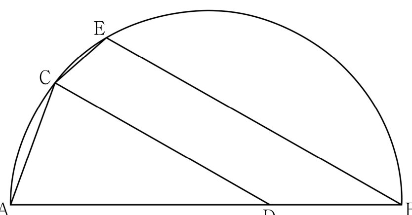
① \(\frac{\sqrt{33}}{11}\)② \(\frac5{44}\sqrt{33}\)③ \(\frac3{22}\sqrt{33}\)④ \(\frac7{44}\sqrt{33}\)⑤ \(\frac2{11}\sqrt{33}\)
그림·참고 단답형
원본 정답 ⑤
원본 풀이 (내부용)[출제의도] 사인법칙과 코사인법칙을 활용하여 선분의 길이 구하는 문제 해결하기
도식: 원 위에 \(A,B,C,E\)가 있고 \(D\)는 \(AB\) 위에 있다. \(AC=DB=x\), \(\angle CAB=\alpha\), \(\angle CBE=\beta\), \(\angle DCB=\beta\), \(\angle DBC=90^\circ-\alpha\)가 표시되어 있다. \(BE\parallel CD\), \(AB=6\)이다.
\(
\overline{AC}=\overline{DB}=x,\quad \angle CAB=\alpha
\)
라 하자. 삼각형 \(ABC\)에서 \(\angle ACB=90^\circ\)이므로
\(
\cos\alpha=\frac13=\frac{\overline{AC}}{\overline{AB}}=\frac x6,\qquad x=2
\)
이다. 그러므로 \(\overline{AC}=\overline{DB}=2\)이고 \(\overline{AD}=4\)이다.
삼각형 \(ADC\)에서 코사인법칙에 의하여
\(
\overline{CD}^{\,2}=4^2+2^2-2\times4\times2\times\cos\alpha=\frac{44}{3}
\)
이므로
\(
\overline{CD}=\sqrt{\frac{44}{3}}=\frac{2\sqrt{33}}3
\)
이다.
\(\angle CBE=\beta\)라 하자. 선분 \(BE\)와 선분 \(CD\)가 평행하므로
\(
\angle DCB=\angle CBE=\beta,\qquad
\angle DBC=90^\circ-\alpha
\)
이다.
삼각형 \(DBC\)에서 사인법칙에 의하여
\(
\frac{\overline{DB}}{\sin\angle DCB}
=\frac{\overline{CD}}{\sin\angle DBC}
\)
이므로
\(
\frac2{\sin\beta}
=\frac{\frac{2\sqrt{33}}3}{\sin(90^\circ-\alpha)}
\)
이다. \(\sin(90^\circ-\alpha)=\cos\alpha\)이므로
\(
2\times\frac13=\frac{\sqrt{33}}3\sin\beta,\qquad
\sin\beta=\frac{\sqrt{33}}{33}
\)
이다.
삼각형 \(CBE\)의 외접원의 지름이 6이므로 사인법칙에 의하여
\(
\frac{\overline{CE}}{\sin\angle CBE}=6
\)
이다. 따라서
\(
\overline{CE}=6\times\sin\beta
=6\times\frac{\sqrt{33}}{33}
=\frac2{11}\sqrt{33}
\)
이다.
쌍둥이 1/6 · 4점 쌍둥이그림과 같이 길이가 $8$인 선분 $AB$를 지름으로 하는 반원이 있습니다. 호 $AB$ 위에 점 $C$를 $\cos\left(\angle CAB\right)=\frac{1}{3}$이 되도록 잡고, 선분 $AB$ 위에 점 $D$를 $\overline{AC}=\overline{DB}$가 되도록 잡습니다. 점 $B$를 지나고 선분 $CD$와 평행한 직선이 호 $AB$와 만나는 점 중 점 $B$가 아닌 점을 $E$라 할 때, 선분 $CE$의 길이로 옳은 것을 고르세요.
① $\frac{29 \sqrt{33}}{132}$② $\frac{5 \sqrt{33}}{22}$③ $\frac{31 \sqrt{33}}{132}$④ $\frac{8 \sqrt{33}}{33}$⑤ $\frac{\sqrt{33}}{4}$
정답④ $\frac{8 \sqrt{33}}{33}$ $\angle ACB=\frac{\pi}{2}$이므로 $\overline{AC}=8\times\frac{1}{3}=\frac{8}{3}$, $\overline{DB}=\frac{8}{3}$ 반원의 중심을 원점, 지름 $AB$를 $x$축에 놓으면 $C\left(- \frac{28}{9},\frac{16 \sqrt{2}}{9}\right)$, $D\left(\frac{4}{3},0\right)$ 점 $B$를 지나고 $CD$와 평행한 직선과 원 $x^{2}+y^{2}=16$의 교점 중 $B$가 아닌 점은 $E\left(- \frac{68}{33},\frac{80 \sqrt{2}}{33}\right)$ 따라서 $\overline{CE}=\frac{8 \sqrt{33}}{33}$
숫자: 원본 6 13 → 쌍둥이 8 1 3
쌍둥이 2/6 · 4점 쌍둥이그림과 같이 길이가 $12$인 선분 $AB$를 지름으로 하는 반원이 있습니다. 호 $AB$ 위에 점 $C$를 $\cos\left(\angle CAB\right)=\frac{1}{3}$이 되도록 잡고, 선분 $AB$ 위에 점 $D$를 $\overline{AC}=\overline{DB}$가 되도록 잡습니다. 점 $B$를 지나고 선분 $CD$와 평행한 직선이 호 $AB$와 만나는 점 중 점 $B$가 아닌 점을 $E$라 할 때, 선분 $CE$의 길이로 옳은 것을 고르세요.
① $\frac{10\sqrt{33}}{33}$② $\frac{4\sqrt{33}}{11}$③ $\frac{14\sqrt{33}}{33}$④ $\frac{16\sqrt{33}}{33}$⑤ $\frac{6\sqrt{33}}{11}$
정답② $\frac{4\sqrt{33}}{11}$ $\angle ACB=\frac{\pi}{2}$이므로 $\overline{AC}=12\times\frac{1}{3}=4$, $\overline{DB}=4$ 반원의 중심을 원점, 지름 $AB$를 $x$축에 놓으면 $A\left(-6,0\right)$, $B\left(6,0\right)$, $C\left(-\frac{14}{3},\frac{8\sqrt{2}}{3}\right)$, $D\left(2,0\right)$ 직선 $CD$의 기울기는 $-\frac{2\sqrt{2}}{5}$이므로 점 $B$를 지나고 이와 평행한 직선과 원 $x^{2}+y^{2}=36$의 교점 중 $B$가 아닌 점은 $E\left(-\frac{34}{11},\frac{40\sqrt{2}}{11}\right)$ 따라서 $\overline{CE}=\sqrt{\left(\frac{52}{33}\right)^{2}+\left(\frac{32\sqrt{2}}{33}\right)^{2}}=\frac{4\sqrt{33}}{11}$
숫자: 원본 6 13 → 쌍둥이 12 1 3
쌍둥이 3/6 · 4점 쌍둥이그림과 같이 길이가 $12$인 선분 $AB$를 지름으로 하는 반원이 있습니다. 호 $AB$ 위에 점 $C$를 $\cos\left(\angle CAB\right)=\frac{1}{4}$이 되도록 잡고, 선분 $AB$ 위에 점 $D$를 $\overline{AC}=\overline{DB}$가 되도록 잡습니다. 점 $B$를 지나고 선분 $CD$와 평행한 직선이 호 $AB$와 만나는 점 중 점 $B$가 아닌 점을 $E$라 할 때, 선분 $CE$의 길이로 옳은 것을 고르세요.
정답③ $\frac{3 \sqrt{34}}{17}$ $\angle ACB=\frac{\pi}{2}$이므로 $\overline{AC}=12\times\frac{1}{4}=3$, $\overline{DB}=3$ 반원의 중심을 원점, 지름 $AB$를 $x$축에 놓으면 $C\left(- \frac{21}{4},\frac{3 \sqrt{15}}{4}\right)$, $D\left(3,0\right)$ 점 $B$를 지나고 $CD$와 평행한 직선과 원 $x^{2}+y^{2}=36$의 교점 중 $B$가 아닌 점은 $E\left(- \frac{159}{34},\frac{33 \sqrt{15}}{34}\right)$ 따라서 $\overline{CE}=\frac{3 \sqrt{34}}{17}$
숫자: 원본 6 13 → 쌍둥이 12 1 4
쌍둥이 4/6 · 4점 쌍둥이그림과 같이 길이가 $10$인 선분 $AB$를 지름으로 하는 반원이 있습니다. 호 $AB$ 위에 점 $C$를 $\cos\left(\angle CAB\right)=\frac{2}{7}$가 되도록 잡고, 선분 $AB$ 위에 점 $D$를 $\overline{AC}=\overline{DB}$가 되도록 잡습니다. 점 $B$를 지나고 선분 $CD$와 평행한 직선이 호 $AB$와 만나는 점 중 점 $B$가 아닌 점을 $E$라 할 때, 선분 $CE$의 길이로 옳은 것을 고르세요.
정답③ $\frac{40 \sqrt{1141}}{1141}$ $\angle ACB=\frac{\pi}{2}$이므로 $\overline{AC}=10\times\frac{2}{7}=\frac{20}{7}$, $\overline{DB}=\frac{20}{7}$ 반원의 중심을 원점, 지름 $AB$를 $x$축에 놓으면 $C\left(- \frac{205}{49},\frac{60 \sqrt{5}}{49}\right)$, $D\left(\frac{15}{7},0\right)$ 점 $B$를 지나고 $CD$와 평행한 직선과 원 $x^{2}+y^{2}=25$의 교점 중 $B$가 아닌 점은 $E\left(- \frac{3905}{1141},\frac{1860 \sqrt{5}}{1141}\right)$ 따라서 $\overline{CE}=\frac{40 \sqrt{1141}}{1141}$
숫자: 원본 6 13 → 쌍둥이 10 2 7
쌍둥이 5/6 · 4점 쌍둥이그림과 같이 길이가 $8$인 선분 $AB$를 지름으로 하는 반원이 있습니다. 호 $AB$ 위에 점 $C$를 $\cos\left(\angle CAB\right)=\frac{1}{4}$이 되도록 잡고, 선분 $AB$ 위에 점 $D$를 $\overline{AC}=\overline{DB}$가 되도록 잡습니다. 점 $B$를 지나고 선분 $CD$와 평행한 직선이 호 $AB$와 만나는 점 중 점 $B$가 아닌 점을 $E$라 할 때, 선분 $CE$의 길이로 옳은 것을 고르세요.
① $\frac{4\sqrt{34}}{51}$② $\frac{5\sqrt{34}}{51}$③ $\frac{2\sqrt{34}}{17}$④ $\frac{7\sqrt{34}}{51}$⑤ $\frac{8\sqrt{34}}{51}$
정답③ $\frac{2\sqrt{34}}{17}$ $\angle ACB=\frac{\pi}{2}$이므로 $\overline{AC}=8\times\frac{1}{4}=2$, $\overline{DB}=2$ 반원의 중심을 원점, 지름 $AB$를 $x$축에 놓으면 $A\left(-4,0\right)$, $B\left(4,0\right)$, $C\left(-\frac{7}{2},\frac{\sqrt{15}}{2}\right)$, $D\left(2,0\right)$ 직선 $CD$의 기울기는 $-\frac{\sqrt{15}}{11}$이므로 점 $B$를 지나고 이와 평행한 직선과 원 $x^{2}+y^{2}=16$의 교점 중 $B$가 아닌 점은 $E\left(-\frac{53}{17},\frac{11\sqrt{15}}{17}\right)$ 따라서 $\overline{CE}=\sqrt{\left(\frac{13}{34}\right)^{2}+\left(\frac{5\sqrt{15}}{34}\right)^{2}}=\frac{2\sqrt{34}}{17}$
숫자: 원본 6 13 → 쌍둥이 8 1 4
쌍둥이 6/6 · 4점 쌍둥이그림과 같이 길이가 $6$인 선분 $AB$를 지름으로 하는 반원이 있습니다. 호 $AB$ 위에 점 $C$를 $\cos\left(\angle CAB\right)=\frac{1}{4}$이 되도록 잡고, 선분 $AB$ 위에 점 $D$를 $\overline{AC}=\overline{DB}$가 되도록 잡습니다. 점 $B$를 지나고 선분 $CD$와 평행한 직선이 호 $AB$와 만나는 점 중 점 $B$가 아닌 점을 $E$라 할 때, 선분 $CE$의 길이로 옳은 것을 고르세요.
① $\frac{3\sqrt{34}}{34}$② $\frac{7\sqrt{34}}{68}$③ $\frac{2\sqrt{34}}{17}$④ $\frac{9\sqrt{34}}{68}$⑤ $\frac{5\sqrt{34}}{34}$
정답① $\frac{3\sqrt{34}}{34}$ $\angle ACB=\frac{\pi}{2}$이므로 $\overline{AC}=6\times\frac{1}{4}=\frac{3}{2}$, $\overline{DB}=\frac{3}{2}$ 반원의 중심을 원점, 지름 $AB$를 $x$축에 놓으면 $A\left(-3,0\right)$, $B\left(3,0\right)$, $C\left(-\frac{21}{8},\frac{3\sqrt{15}}{8}\right)$, $D\left(\frac{3}{2},0\right)$ 직선 $CD$의 기울기는 $-\frac{\sqrt{15}}{11}$이므로 점 $B$를 지나고 이와 평행한 직선과 원 $x^{2}+y^{2}=9$의 교점 중 $B$가 아닌 점은 $E\left(-\frac{159}{68},\frac{33\sqrt{15}}{68}\right)$ 따라서 $\overline{CE}=\sqrt{\left(\frac{39}{136}\right)^{2}+\left(\frac{15\sqrt{15}}{136}\right)^{2}}=\frac{3\sqrt{34}}{34}$
숫자: 원본 6 13 → 쌍둥이 6 1 4 · 같은 수: 6
174. 2025년 6월 25번 · 3점 · 수학Ⅰ 삼각함수 · G2M9-11#8
원본 (내부용)양수 \(a\)에 대하여 함수 \(f(x)=6\cos ax+10\)의 주기가 \(4\pi\)일 때, \( f\left(\frac43\pi\right) \) 의 값을 구하시오. [3점]
원본 정답 7
원본 풀이 (내부용)[출제의도] 삼각함수의 그래프 이해하기
함수 \(f(x)=6\cos ax+10\)에서 주기가 \(\frac{2\pi}{a}\)이므로
\(
\frac{2\pi}{a}=4\pi,\qquad a=\frac12
\)
이다.
\(
f\left(\frac{4\pi}{3}\right)
=6\cos\left(\frac12\times\frac{4\pi}{3}\right)+10
=6\cos\frac{2\pi}{3}+10
=6\cos\left(\pi-\frac{\pi}{3}\right)+10
=-6\cos\frac{\pi}{3}+10
=-6\times\frac12+10=7
\)
생성기 숫자판 1/6 · G2M9-11#8양수 $a$에 대하여 함수 $f\left(x\right)=17\cos ax+19$의 주기가 $14\pi$일 때, $f\left(7\pi\right)$의 값을 구하세요.
정답$2$ $a>0$이므로 주기는 $\frac{2\pi}{a}=14\pi$, 따라서 $a=\frac{2}{14}$ $f\left(7\pi\right)=17\cos a\left(7\pi\right)+19=17\cos\pi+19$ $=17\times\left(-1\right)+19=2$
숫자: 원본 6 10 4 43 → 쌍둥이 17 19 14 7
생성기 숫자판 2/6 · G2M9-11#8양수 $a$에 대하여 함수 $f\left(x\right)=5\sin ax+8$의 주기가 $5\pi$일 때, $f\left(\frac{5}{4}\pi\right)$의 값을 구하세요.
정답$13$ $a>0$이므로 주기는 $\frac{2\pi}{a}=5\pi$, 따라서 $a=\frac{2}{5}$ $f\left(\frac{5}{4}\pi\right)=5\sin a\left(\frac{5}{4}\pi\right)+8=5\sin\frac{\pi}{2}+8$ $=5\times\left(1\right)+8=13$
숫자: 원본 6 10 4 43 → 쌍둥이 5 8 5 5 4 · 같은 수: 4
생성기 숫자판 3/6 · G2M9-11#8양수 $a$에 대하여 함수 $f\left(x\right)=8\cos ax+9$의 주기가 $9\pi$일 때, $f\left(\frac{9}{2}\pi\right)$의 값을 구하세요.
정답$1$ $a>0$이므로 주기는 $\frac{2\pi}{a}=9\pi$, 따라서 $a=\frac{2}{9}$ $f\left(\frac{9}{2}\pi\right)=8\cos a\left(\frac{9}{2}\pi\right)+9=8\cos\pi+9$ $=8\times\left(-1\right)+9=1$
숫자: 원본 6 10 4 43 → 쌍둥이 8 9 9 9 2
생성기 숫자판 4/6 · G2M9-11#8양수 $a$에 대하여 함수 $f\left(x\right)=15\cos ax+17$의 주기가 $13\pi$일 때, $f\left(\frac{13}{2}\pi\right)$의 값을 구하세요.
정답$2$ $a>0$이므로 주기는 $\frac{2\pi}{a}=13\pi$, 따라서 $a=\frac{2}{13}$ $f\left(\frac{13}{2}\pi\right)=15\cos a\left(\frac{13}{2}\pi\right)+17=15\cos\pi+17$ $=15\times\left(-1\right)+17=2$
숫자: 원본 6 10 4 43 → 쌍둥이 15 17 13 13 2
생성기 숫자판 5/6 · G2M9-11#8양수 $a$에 대하여 함수 $f\left(x\right)=7\sin ax+9$의 주기가 $8\pi$일 때, $f\left(\frac{8}{4}\pi\right)$의 값을 구하세요.
정답$16$ $a>0$이므로 주기는 $\frac{2\pi}{a}=8\pi$, 따라서 $a=\frac{2}{8}$ $f\left(\frac{8}{4}\pi\right)=7\sin a\left(\frac{8}{4}\pi\right)+9=7\sin\frac{\pi}{2}+9$ $=7\times\left(1\right)+9=16$
숫자: 원본 6 10 4 43 → 쌍둥이 7 9 8 8 4 · 같은 수: 4
생성기 숫자판 6/6 · G2M9-11#8양수 $a$에 대하여 함수 $f\left(x\right)=18\sin ax+20$의 주기가 $14\pi$일 때, $f\left(\frac{14}{4}\pi\right)$의 값을 구하세요.
정답$38$ $a>0$이므로 주기는 $\frac{2\pi}{a}=14\pi$, 따라서 $a=\frac{2}{14}$ $f\left(\frac{14}{4}\pi\right)=18\sin a\left(\frac{14}{4}\pi\right)+20=18\sin\frac{\pi}{2}+20$ $=18\times\left(1\right)+20=38$
숫자: 원본 6 10 4 43 → 쌍둥이 18 20 14 14 4 · 같은 수: 4
175. 2025년 6월 26번 · 4점 · 수학Ⅰ 삼각함수 · 4점 쌍둥이
원본 (내부용)양수 \(k\)에 대하여 좌표평면에서 점 \( A\left(-\frac1{\sqrt{k^2+1}},\frac{k}{\sqrt{k^2+1}}\right) \) 을 직선 \(y=x\)에 대하여 대칭이동한 점을 \(B\)라 하고, 두 동경 \(OA,OB\)가 나타내는 각의 크기를 각각 \(\alpha,\beta\)라 하자. \(\cos\alpha\sin\beta=\frac13\)일 때, \(k^2\)의 값을 구하시오. (단, \(O\)는 원점이고, \(x\)축의 양의 방향을 시초선으로 한다.) [4점]
원본 정답 ②
원본 풀이 (내부용)[출제의도] 삼각함수의 정의 이해하기
점
\(
A\left(-\frac1{\sqrt{k^2+1}},\ \frac{k}{\sqrt{k^2+1}}\right)
\)
을 직선 \(y=x\)에 대하여 대칭이동한 점은
\(
B\left(\frac{k}{\sqrt{k^2+1}},\ -\frac1{\sqrt{k^2+1}}\right)
\)
이다.
\(\overline{OA}=\overline{OB}=1\)이므로
\(
\cos\alpha=-\frac1{\sqrt{k^2+1}},\qquad
\sin\beta=-\frac1{\sqrt{k^2+1}}
\)
이다.
따라서
\(
\cos\alpha\sin\beta=\frac1{k^2+1}=\frac13
\)
이므로 \(k^2=2\)이다.
쌍둥이 1/5 · 4점 쌍둥이양수 $k$에 대하여 $A=(-\frac4{\sqrt{k^2+16}},\frac{k}{\sqrt{k^2+16}})$를 $y=x$에 대칭이동한 점을 $B$라 하겠습니다. 동경 $OA,OB$의 각을 $\alpha,\beta$라 할 때 $\cos\alpha\sin\beta=1/5$입니다. $k^2$을 구하세요.
① $48$② $56$③ $64$④ $72$⑤ $80$
정답③ $64$ 대칭 후 $B_y=A_x$이므로 $\cos\alpha\sin\beta=16/(k^2+16)$입니다. $16/(k^2+16)=1/5$를 풀면 $k^2=64$입니다.
숫자: 원본 1 1 1 13 11 11 2 → 쌍둥이 4 16 16 1 5 · 같은 수: 1
쌍둥이 2/5 · 4점 쌍둥이양수 $k$에 대하여 좌표평면에서 점 $A\left(-\frac{2}{\sqrt{k^{2}+4}},\ \frac{k}{\sqrt{k^{2}+4}}\right)$을 직선 $y=x$에 대하여 대칭이동한 점을 $B$라 하고, 두 동경 $OA$, $OB$가 나타내는 각의 크기를 각각 $\alpha$, $\beta$라 합니다. $\cos\alpha\sin\beta=\frac{1}{5}$일 때, $k^{2}$의 값을 구하세요. (단, $O$는 원점이고, $x$축의 양의 방향을 시초선으로 합니다.)
쌍둥이 3/5 · 4점 쌍둥이양수 $k$에 대하여 좌표평면에서 점 $A\left(-\frac{1}{\sqrt{k^{2}+1}},\ \frac{k}{\sqrt{k^{2}+1}}\right)$을 직선 $y=x$에 대하여 대칭이동한 점을 $B$라 하고, 두 동경 $OA$, $OB$가 나타내는 각의 크기를 각각 $\alpha$, $\beta$라 합니다. $\cos\alpha\sin\beta=\frac{1}{4}$일 때, $k^{2}$의 값을 구하세요. (단, $O$는 원점이고, $x$축의 양의 방향을 시초선으로 합니다.)
쌍둥이 4/5 · 4점 쌍둥이양수 $k$에 대하여 좌표평면에서 점 $A\left(-\frac{3}{\sqrt{k^{2}+9}},\ \frac{k}{\sqrt{k^{2}+9}}\right)$을 직선 $y=x$에 대하여 대칭이동한 점을 $B$라 하고, 두 동경 $OA$, $OB$가 나타내는 각의 크기를 각각 $\alpha$, $\beta$라 합니다. $\cos\alpha\sin\beta=\frac{1}{2}$일 때, $k^{2}$의 값을 구하세요. (단, $O$는 원점이고, $x$축의 양의 방향을 시초선으로 합니다.)
쌍둥이 5/5 · 4점 쌍둥이양수 $k$에 대하여 $A=(-\frac5{\sqrt{k^2+25}},\frac{k}{\sqrt{k^2+25}})$를 $y=x$에 대칭이동한 점을 $B$라 하겠습니다. 두 동경의 각을 $\alpha,\beta$라 할 때 $\cos\alpha\sin\beta=1/2$입니다. $k^2$을 구하세요.
원본 (내부용)그림과 같이 \(\overline{AB}=4,\ \overline{AC}=5,\ \cos(\angle BAC)=\dfrac18\)인 삼각형 \(ABC\)가 있다. 선분 \(BC\)를 \(1:2\)로 내분하는 점을 \(D\), 직선 \(AD\)가 삼각형 \(ABC\)의 외접원과 만나는 점 중 \(A\)가 아닌 점을 \(E\)라 하자. 점 \(D\)에서 선분 \(CE\)에 내린 수선의 발을 \(F\)라 할 때, 선분 \(FC\)의 길이는 \(\dfrac{q}{p}\sqrt{11}\)이다. \(p+q\)의 값을 구하시오. (단, \(p,\ q\)는 서로소인 자연수이다.) [4점]
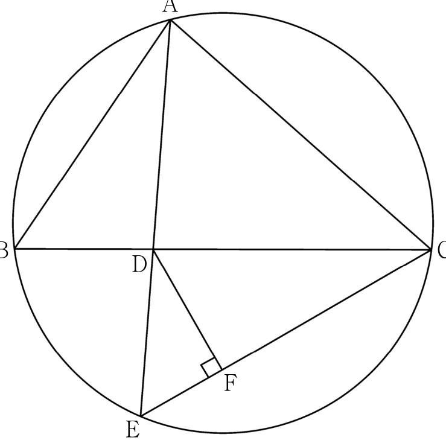
원본 정답 45
원본 풀이 (내부용)[출제의도] 코사인법칙을 활용하여 도형 문제 해결하기
도식: 원에 내접하는 삼각형 \(ABC\), \(D\)는 선분 \(AE\)와 \(BC\)의 교점이며 \(F\)는 선분 \(DC\) 위에 있다. \(DF\perp EF\) 표시가 있다. 변 \(AB, AC, BC, AE, BE, EC\)가 그려져 있다.
삼각형 \(ABC\)에서 코사인법칙에 의하여
\(
\overline{BC}^{\,2}=4^2+5^2-2\times4\times5\times\frac18=36
\)
이므로 \(\overline{BC}=6\)이다.
점 \(D\)가 선분 \(BC\)를 \(1:2\)로 내분하는 점이므로
\(
\overline{BD}=2,\qquad \overline{DC}=4
\)
이다.
\(\angle ABC=\theta\)라 할 때, 삼각형 \(ABC\)에서 코사인법칙에 의하여
\(
\cos\theta=\frac{6^2+4^2-5^2}{2\times6\times4}=\frac9{16}
\)
이다.
삼각형 \(ABD\)에서 코사인법칙에 의하여
\(
\overline{AD}^{\,2}=2^2+4^2-2\times2\times4\times\cos\theta=11
\)
이므로 \(\overline{AD}=\sqrt{11}\)이다.
삼각형 \(ABD\)에서 코사인법칙에 의하여
\(
\cos(\angle BAD)=\frac{16+11-4}{2\times4\times\sqrt{11}}
=\frac{23}{8\sqrt{11}}
\)
이다.
호 \(BE\)에 대한 원주각의 크기는 서로 같으므로 \(\angle BAD=\angle BCF\)이다.
\(
\overline{FC}=\overline{DC}\times\cos(\angle BCF)
=\overline{DC}\times\cos(\angle BAD)
=4\times\frac{23}{8\sqrt{11}}
=\frac{23}{2\sqrt{11}}
\)
이다.
따라서 \(p=22,\ q=23\)이므로 \(p+q=45\)이다.
쌍둥이 1/5 · 4점 쌍둥이그림과 같이 $\overline{AB}=2$, $\overline{AC}=3$, $\cos\left(\angle BAC\right)=\frac{1}{3}$인 삼각형 $ABC$가 있습니다. 선분 $BC$를 $1:2$로 내분하는 점을 $D$, 직선 $AD$가 삼각형 $ABC$의 외접원과 만나는 점 중 $A$가 아닌 점을 $E$라 합니다. 점 $D$에서 선분 $CE$에 내린 수선의 발을 $F$라 할 때, 선분 $FC$의 길이는 $\frac{q}{p}\sqrt{33}$입니다. $p+q$의 값을 구하세요. (단, $p$, $q$는 서로소인 자연수입니다.)
정답$43$ 코사인법칙에 의하여 $\overline{BC}^{2}=2^{2}+3^{2}-2\times2\times3\times\frac{1}{3}=9$, $\overline{BC}=3$이므로 $\overline{BD}=1$, $\overline{DC}=2$ $\cos B=\frac{2^{2}+9-3^{2}}{2\times2\times3}=\frac{1}{3}$이고 삼각형 $ABD$에서 $\overline{AD}^{2}=2^{2}+\left(1\right)^{2}-2\times2\times1\times\frac{1}{3}=\frac{11}{3}$, $\overline{AD}=\frac{\sqrt{33}}{3}$ $\overline{AD}\times\overline{DE}=\overline{BD}\times\overline{DC}$이므로 $\overline{DE}=\frac{2\sqrt{33}}{11}$ 두 삼각형 $ABD$, $CED$는 닮음이므로 $\overline{CE}:\overline{AB}=\overline{DE}:\overline{BD}$, $\overline{CE}=\frac{4\sqrt{33}}{11}$ $\angle DEC=\angle AEC=\angle ABC$이므로 $\overline{EF}=\overline{DE}\cos B=\frac{2\sqrt{33}}{33}$ $\overline{FC}=\overline{CE}-\overline{EF}=\frac{10\sqrt{33}}{33}$이므로 $p=33$, $q=10$, $p+q=43$
쌍둥이 2/5 · 4점 쌍둥이그림과 같이 $\overline{AB}=3$, $\overline{AC}=4$, $\cos\left(\angle BAC\right)=\frac{1}{4}$인 삼각형 $ABC$가 있습니다. 선분 $BC$를 $1:2$로 내분하는 점을 $D$, 직선 $AD$가 삼각형 $ABC$의 외접원과 만나는 점 중 $A$가 아닌 점을 $E$라 합니다. 점 $D$에서 선분 $CE$에 내린 수선의 발을 $F$라 할 때, 선분 $FC$의 길이는 $\frac{q}{p}\sqrt{19}$입니다. $p+q$의 값을 구하세요. (단, $p$, $q$는 서로소인 자연수입니다.)
정답$19$ 코사인법칙에 의하여 $\overline{BC}^{2}=3^{2}+4^{2}-2\times3\times4\times\frac{1}{4}=19$, $\overline{BC}=\sqrt{19}$이므로 $\overline{BD}=\frac{\sqrt{19}}{3}$, $\overline{DC}=\frac{2\sqrt{19}}{3}$ $\cos B=\frac{3^{2}+19-4^{2}}{2\times3\times\sqrt{19}}=\frac{2\sqrt{19}}{19}$이고 삼각형 $ABD$에서 $\overline{AD}^{2}=3^{2}+\left(\frac{\sqrt{19}}{3}\right)^{2}-2\times3\times\frac{\sqrt{19}}{3}\times\frac{2\sqrt{19}}{19}=\frac{64}{9}$, $\overline{AD}=\frac{8}{3}$ $\overline{AD}\times\overline{DE}=\overline{BD}\times\overline{DC}$이므로 $\overline{DE}=\frac{19}{12}$ 두 삼각형 $ABD$, $CED$는 닮음이므로 $\overline{CE}:\overline{AB}=\overline{DE}:\overline{BD}$, $\overline{CE}=\frac{3\sqrt{19}}{4}$ $\angle DEC=\angle AEC=\angle ABC$이므로 $\overline{EF}=\overline{DE}\cos B=\frac{\sqrt{19}}{6}$ $\overline{FC}=\overline{CE}-\overline{EF}=\frac{7\sqrt{19}}{12}$이므로 $p=12$, $q=7$, $p+q=19$
쌍둥이 3/5 · 4점 쌍둥이그림과 같이 $\overline{AB}=3$, $\overline{AC}=4$, $\cos\left(\angle BAC\right)=\frac{1}{6}$인 삼각형 $ABC$가 있습니다. 선분 $BC$를 $1:2$로 내분하는 점을 $D$, 직선 $AD$가 삼각형 $ABC$의 외접원과 만나는 점 중 $A$가 아닌 점을 $E$라 합니다. 점 $D$에서 선분 $CE$에 내린 수선의 발을 $F$라 할 때, 선분 $FC$의 길이는 $\frac{q}{p}\sqrt{35}$입니다. $p+q$의 값을 구하세요. (단, $p$, $q$는 서로소인 자연수입니다.)
정답$13$ 코사인법칙에 의하여 $\overline{BC}^{2}=3^{2}+4^{2}-2\times3\times4\times\frac{1}{6}=21$, $\overline{BC}=\sqrt{21}$이므로 $\overline{BD}=\frac{\sqrt{21}}{3}$, $\overline{DC}=\frac{2\sqrt{21}}{3}$ $\cos B=\frac{3^{2}+21-4^{2}}{2\times3\times\sqrt{21}}=\frac{\sqrt{21}}{9}$이고 삼각형 $ABD$에서 $\overline{AD}^{2}=3^{2}+\left(\frac{\sqrt{21}}{3}\right)^{2}-2\times3\times\frac{\sqrt{21}}{3}\times\frac{\sqrt{21}}{9}=\frac{20}{3}$, $\overline{AD}=\frac{2\sqrt{15}}{3}$ $\overline{AD}\times\overline{DE}=\overline{BD}\times\overline{DC}$이므로 $\overline{DE}=\frac{7\sqrt{15}}{15}$ 두 삼각형 $ABD$, $CED$는 닮음이므로 $\overline{CE}:\overline{AB}=\overline{DE}:\overline{BD}$, $\overline{CE}=\frac{3\sqrt{35}}{5}$ $\angle DEC=\angle AEC=\angle ABC$이므로 $\overline{EF}=\overline{DE}\cos B=\frac{7\sqrt{35}}{45}$ $\overline{FC}=\overline{CE}-\overline{EF}=\frac{4\sqrt{35}}{9}$이므로 $p=9$, $q=4$, $p+q=13$
쌍둥이 4/5 · 4점 쌍둥이삼각형 $ABC$에서 $AB=4$, $AC=7$, $\cos\angle BAC=1/4$이다. 선분 $BC$를 $1:2$로 내분하는 점을 $D$, 직선 $AD$와 삼각형 $ABC$의 외접원이 다시 만나는 점을 $E$라 하자. $D$에서 $CE$에 내린 수선의 발을 $F$라 할 때, $FC=\frac{q}{p}\sqrt{799}$이다. 서로소인 자연수 $p,q$에 대하여 $p+q$를 구하시오. [4점]
① $99$② $104$③ $107$④ $111$⑤ $116$
정답③ $107$ $A=(0,0)$, $B=(4,0)$, $C=(7/4,7*sqrt(15)/4)$로 놓으면 $D=(13/4,7*sqrt(15)/12)$이다. 외접원의 방정식과 직선 $AD$를 연립해 $E=(1053/188,189*sqrt(15)/188)$을 얻는다. 직선 $CE$에 $D$를 정사영하면 $F=(3669/752,861*sqrt(15)/752)$이다. 좌표 거리 공식으로 $FC=13*sqrt(799)/94=\frac{13}{94}\sqrt{799}$이므로 $p+q=107$이다.
쌍둥이 5/5 · 4점 쌍둥이삼각형 $ABC$에서 $AB=2$, $AC=5$, $\cos\angle BAC=1/4$이다. 선분 $BC$를 $1:2$로 내분하는 점을 $D$, 직선 $AD$와 삼각형 $ABC$의 외접원이 다시 만나는 점을 $E$라 하자. $D$에서 $CE$에 내린 수선의 발을 $F$라 할 때, $FC=\frac{q}{p}\sqrt{34}$이다. 서로소인 자연수 $p,q$에 대하여 $p+q$를 구하시오. [4점]
① $16$② $21$③ $24$④ $28$⑤ $33$
정답③ $24$ $A=(0,0)$, $B=(2,0)$, $C=(5/4,5*sqrt(15)/4)$로 놓으면 $D=(7/4,5*sqrt(15)/12)$이다. 외접원의 방정식과 직선 $AD$를 연립해 $E=(231/68,55*sqrt(15)/68)$을 얻는다. 직선 $CE$에 $D$를 정사영하면 $F=(851/272,235*sqrt(15)/272)$이다. 좌표 거리 공식으로 $FC=7*sqrt(34)/17=\frac{7}{17}\sqrt{34}$이므로 $p+q=24$이다.
원본 (내부용)함수 \(y=\sin\frac{x}{2}+\frac{\sqrt3}{2}\;\left(0\leq x<4\pi\right)\)의 그래프와 \(x\)축이 만나는 서로 다른 두 점을 \(A,\ B\)라 할 때, 선분 \(AB\)의 길이는? [3점]
① \(\frac23\pi\)② \(\pi\)③ \(\frac43\pi\)④ \(\frac53\pi\)⑤ \(2\pi\)
원본 정답 ①
원본 풀이 (내부용)[출제의도] 삼각함수의 그래프 이해하기
함수
\(
y=\sin\frac{x}{2}+\frac{\sqrt3}{2}
\quad(0\le x<4\pi)
\)
의 그래프와 \(x\)축이 만나는 점의 \(x\)좌표를 \(t\) \((0\le t<4\pi)\)라 하면
\(
\sin\frac t2+\frac{\sqrt3}{2}=0,\qquad
\sin\frac t2=-\frac{\sqrt3}{2}
\)
\(
0\le\frac t2<2\pi\text{ 이므로 }\frac t2=\frac{4\pi}{3}
\text{ 또는 }\frac t2=\frac{5\pi}{3}
\)
\(
t=\frac{8\pi}{3}\text{ 또는 }t=\frac{10\pi}{3}
\)
선분 \(AB\)의 길이는
\(
\frac{10\pi}{3}-\frac{8\pi}{3}=\frac{2\pi}{3}
\)
생성기 숫자판 1/6 · G2M9-12#5함수 $y=\sin\frac{x}{5}+\frac{\sqrt{2}}{2}\ \left(0\le x<10\pi\right)$의 그래프와 $x$축이 만나는 서로 다른 두 점을 $\mathrm{A}$, $\mathrm{B}$라 할 때, 선분 $\mathrm{AB}$의 길이로 옳은 것을 고르세요.
① $\frac{5}{2}\pi$② $3\pi$③ $\frac{7}{2}\pi$④ $4\pi$⑤ $\frac{9}{2}\pi$
정답① $\frac{5}{2}\pi$ $\frac{x}{5}=t$라 하면 $0\le x<10\pi$에서 $0\le t<2\pi$ $\sin t=-\frac{\sqrt{2}}{2}$에서 $t=\frac{5}{4}\pi$ 또는 $t=\frac{7}{4}\pi$ $x=\frac{25}{4}\pi$ 또는 $x=\frac{35}{4}\pi$ 따라서 $\overline{\mathrm{AB}}=\frac{35}{4}\pi-\frac{25}{4}\pi=\frac{5}{2}\pi$
숫자: 원본 2 3 2 0 4 → 쌍둥이 5 2 2 0 10 · 같은 수: 0 2
생성기 숫자판 2/6 · G2M9-12#5함수 $y=\sin\frac{x}{7}-\frac{\sqrt{2}}{2}\ \left(0\le x<14\pi\right)$의 그래프와 $x$축이 만나는 서로 다른 두 점을 $\mathrm{A}$, $\mathrm{B}$라 할 때, 선분 $\mathrm{AB}$의 길이로 옳은 것을 고르세요.
① $\frac{5}{2}\pi$② $3\pi$③ $\frac{7}{2}\pi$④ $4\pi$⑤ $\frac{9}{2}\pi$
정답③ $\frac{7}{2}\pi$ $\frac{x}{7}=t$라 하면 $0\le x<14\pi$에서 $0\le t<2\pi$ $\sin t=\frac{\sqrt{2}}{2}$에서 $t=\frac{\pi}{4}$ 또는 $t=\frac{3}{4}\pi$ $x=\frac{7}{4}\pi$ 또는 $x=\frac{21}{4}\pi$ 따라서 $\overline{\mathrm{AB}}=\frac{21}{4}\pi-\frac{7}{4}\pi=\frac{7}{2}\pi$
숫자: 원본 2 3 2 0 4 → 쌍둥이 7 2 2 0 14 · 같은 수: 0 2
생성기 숫자판 3/6 · G2M9-12#5함수 $y=\sin\frac{x}{4}-\frac{\sqrt{2}}{2}\ \left(0\le x<8\pi\right)$의 그래프와 $x$축이 만나는 서로 다른 두 점을 $\mathrm{A}$, $\mathrm{B}$라 할 때, 선분 $\mathrm{AB}$의 길이로 옳은 것을 고르세요.
① $\frac{2}{3}\pi$② $2\pi$③ $\frac{10}{3}\pi$④ $\frac{14}{3}\pi$⑤ $6\pi$
정답② $2\pi$ $\frac{x}{4}=t$라 하면 $0\le x<8\pi$에서 $0\le t<2\pi$ $\sin t=\frac{\sqrt{2}}{2}$에서 $t=\frac{\pi}{4}$ 또는 $t=\frac{3}{4}\pi$ $x=\pi$ 또는 $x=3\pi$ 따라서 $\overline{\mathrm{AB}}=3\pi-\pi=2\pi$
숫자: 원본 2 3 2 0 4 → 쌍둥이 4 2 2 0 8 · 같은 수: 0 2 4
생성기 숫자판 4/6 · G2M9-12#5함수 $y=\cos\frac{x}{2}-\frac{\sqrt{2}}{2}\ \left(0\le x<4\pi\right)$의 그래프와 $x$축이 만나는 서로 다른 두 점을 $\mathrm{A}$, $\mathrm{B}$라 할 때, 선분 $\mathrm{AB}$의 길이로 옳은 것을 고르세요.
① $\frac{5}{3}\pi$② $\frac{7}{3}\pi$③ $3\pi$④ $\frac{11}{3}\pi$⑤ $\frac{13}{3}\pi$
정답③ $3\pi$ $\frac{x}{2}=t$라 하면 $0\le x<4\pi$에서 $0\le t<2\pi$ $\cos t=\frac{\sqrt{2}}{2}$에서 $t=\frac{\pi}{4}$ 또는 $t=\frac{7}{4}\pi$ $x=\frac{\pi}{2}$ 또는 $x=\frac{7}{2}\pi$ 따라서 $\overline{\mathrm{AB}}=\frac{7}{2}\pi-\frac{\pi}{2}=3\pi$
숫자: 원본 2 3 2 0 4 → 쌍둥이 2 2 2 0 4 · 같은 수: 0 2 4
생성기 숫자판 5/6 · G2M9-12#5함수 $y=\cos\frac{x}{7}+\frac{\sqrt{3}}{2}\ \left(0\le x<14\pi\right)$의 그래프와 $x$축이 만나는 서로 다른 두 점을 $\mathrm{A}$, $\mathrm{B}$라 할 때, 선분 $\mathrm{AB}$의 길이로 옳은 것을 고르세요.
① $\frac{7}{3}\pi$② $\frac{14}{3}\pi$③ $7\pi$④ $\frac{28}{3}\pi$⑤ $\frac{35}{3}\pi$
정답① $\frac{7}{3}\pi$ $\frac{x}{7}=t$라 하면 $0\le x<14\pi$에서 $0\le t<2\pi$ $\cos t=-\frac{\sqrt{3}}{2}$에서 $t=\frac{5}{6}\pi$ 또는 $t=\frac{7}{6}\pi$ $x=\frac{35}{6}\pi$ 또는 $x=\frac{49}{6}\pi$ 따라서 $\overline{\mathrm{AB}}=\frac{49}{6}\pi-\frac{35}{6}\pi=\frac{7}{3}\pi$
숫자: 원본 2 3 2 0 4 → 쌍둥이 7 3 2 0 14 · 같은 수: 0 2 3
생성기 숫자판 6/6 · G2M9-12#5함수 $y=\cos\frac{x}{4}-\frac{\sqrt{2}}{2}\ \left(0\le x<8\pi\right)$의 그래프와 $x$축이 만나는 서로 다른 두 점을 $\mathrm{A}$, $\mathrm{B}$라 할 때, 선분 $\mathrm{AB}$의 길이로 옳은 것을 고르세요.
① $6\pi$② $\frac{22}{3}\pi$③ $\frac{26}{3}\pi$④ $10\pi$⑤ $\frac{34}{3}\pi$
정답① $6\pi$ $\frac{x}{4}=t$라 하면 $0\le x<8\pi$에서 $0\le t<2\pi$ $\cos t=\frac{\sqrt{2}}{2}$에서 $t=\frac{\pi}{4}$ 또는 $t=\frac{7}{4}\pi$ $x=\pi$ 또는 $x=7\pi$ 따라서 $\overline{\mathrm{AB}}=7\pi-\pi=6\pi$
숫자: 원본 2 3 2 0 4 → 쌍둥이 4 2 2 0 8 · 같은 수: 0 2 4
180. 2025년 9월 18번 · 4점 · 수학Ⅰ 삼각함수 · 4점 쌍둥이
원본 (내부용)두 양수 \(a,\ b\)에 대하여 함수 \( f(x)=a\cos\left(bx-\frac{\pi}{4}\right) \) 가 \(0\leq x\leq\pi\)에서 최댓값 \(4\), 최솟값 \(-2\sqrt2\)를 가질 때, \(a+b\)의 값은? [4점]
① \(\frac72\)② \(4\)③ \(\frac92\)④ \(5\)⑤ \(\frac{11}{2}\)
원본 정답 ④
원본 풀이 (내부용)[출제의도] 삼각함수를 활용하여 문제 해결하기
함수 \(y=a\cos\left(bx-\frac{\pi}{4}\right)\)는
\(
a\cos\left(bx-\frac{\pi}{4}\right)
=a\cos b\left(x-\frac{\pi}{4b}\right)
\)
이므로 함수 \(y=a\cos bx\)의 그래프를 \(x\)축의 양의 방향으로
\(\frac{\pi}{4b}\)만큼 평행이동한 그래프와 일치한다.
함수 \(y=a\cos bx\)의 주기는 \(\frac{2\pi}{b}\)이므로 함수 \(f(x)\)의 그래프의 개형은 다음과 같다.
**그래프 설명:** \(y=f(x)\)는 \(x=0\)에서 \(y=a\)이며, \(x=\frac{\pi}{4b}\)에서 최댓값 \(a\)를 갖는다. \(x=\frac{3\pi}{4b}\)에서 \(x\)축을 지나고 \(x=\frac{5\pi}{4b}\)에서 최솟값을 갖는 코사인 곡선이다. 그림에는 \(x\)축, \(y\)축, 원점 \(O\), 수평선 \(y=a\), 곡선 \(y=f(x)\)가 표시되어 있다.
\(
0\le x\le\pi
\)
에서 함수 \(f(x)\)의 최솟값이 음수이므로
\(
\frac{3\pi}{4b}<\pi\quad\cdots㉠
\)
함수 \(f(x)\)의 최댓값이 4이므로 \(a=4\).
\(
\frac{5\pi}{4b}\le\pi
\)
일 때, 함수 \(f(x)\)의 최솟값이 \(-4\) \((\ne-2\sqrt2)\)이므로
\(
\pi<\frac{5\pi}{4b}\quad\cdots㉡
\)
㉠, ㉡에 의하여
\(
0\le x\le\pi\text{에서 함수 }f(x)\text{가 }x=\pi\text{일 때 최솟값 }-2\sqrt2\text{를 갖는다.}
\)
\(
\frac{3\pi}{4b}<\pi<\frac{5\pi}{4b}
\)
이므로
\(
\frac{\pi}{2}<b\pi-\frac{\pi}{4}<\pi
\)
\(
f(\pi)=4\cos\left(b\pi-\frac{\pi}{4}\right)=-2\sqrt2
\)
\(
\cos\left(b\pi-\frac{\pi}{4}\right)=-\frac{\sqrt2}{2}
\)
\(
b\pi-\frac{\pi}{4}=\frac{3\pi}{4},\quad b=1
\)
\(
a+b=5
\)
쌍둥이 1/5 · 4점 쌍둥이두 양수 $a$, $b$에 대하여 함수 $f(x)=a\cos\left(bx-\frac{\pi}{6}\right)$가 $0\le x\le\pi$에서 최댓값 $2$, 최솟값 $- \sqrt{3}$을 가질 때, $a+b$의 값으로 옳은 것을 고르세요.
쌍둥이 2/5 · 4점 쌍둥이두 양수 $a$, $b$에 대하여 함수 $f(x)=a\cos\left(bx-\frac{\pi}{3}\right)$가 $0\le x\le\frac{\pi}{2}$에서 최댓값 $6$, 최솟값 $-3$을 가질 때, $a+b$의 값으로 옳은 것을 고르세요.
쌍둥이 3/5 · 4점 쌍둥이두 양수 $a$, $b$에 대하여 함수 $f(x)=a\cos\left(bx-\frac{\pi}{4}\right)$가 $0\le x\le\frac{\pi}{3}$에서 최댓값 $4$, 최솟값 $-2$를 가질 때, $a+b$의 값으로 옳은 것을 고르세요.
① $\frac{13}{2}$② $\frac{27}{4}$③ $7$④ $\frac{29}{4}$⑤ $\frac{15}{2}$
쌍둥이 4/5 · 4점 쌍둥이양수 $a,b$에 대하여 $f(x)=a\cos(bx-\pi/4)$가 $0\le x\le\pi/3$에서 최댓값 8, 최솟값 $-4$를 가집니다. $a+b$를 구하세요.
① $41/4$② $42/4$③ $43/4$④ $44/4$⑤ $45/4$
정답③ $43/4$ 최댓값이 8이므로 $a=8$입니다. 위상 구간은 $-\pi/4$에서 $2\pi/3$까지여서 0을 지나 최댓값을 가집니다. $-4$는 끝점에서 코사인이 $-1/2$일 때 생깁니다. $b\pi/3-\pi/4=2\pi/3$에서 $b=11/4$, 따라서 $a+b=43/4$입니다.
숫자: 원본 4 0 4 2 2 → 쌍둥이 4 0 3 8 4 · 같은 수: 0 4
쌍둥이 5/5 · 4점 쌍둥이양수 $a,b$에 대하여 $f(x)=a\cos(bx-\pi/6)$이 $0\le x\le\pi/2$에서 최댓값 $4\sqrt3$, 최솟값 $-6$을 가집니다. $a+b$를 구하세요.
① $4\sqrt3+1$② $4\sqrt3+2$③ $4\sqrt3+3$④ $4\sqrt3+4$⑤ $4\sqrt3+5$
정답② $4\sqrt3+2$ 최댓값에서 $a=4\sqrt3$입니다. 위상 구간은 $-\pi/6$부터 시작하여 0을 포함합니다. $-6$은 끝점에서 코사인이 $-\sqrt3/2$일 때이므로 $b\pi/2-\pi/6=5\pi/6$, 따라서 $b=2$입니다.
숫자: 원본 4 0 4 2 2 → 쌍둥이 6 0 2 4 3 6 · 같은 수: 0 2 4
181. 2025년 9월 21번 · 4점 · 수학Ⅰ 삼각함수 · 4점 쌍둥이
원본 (내부용)그림과 같이 반지름의 길이가 \(\frac{\sqrt{21}}{3}\)인 원 \(C_1\)에 내접하고 \(\overline{AB}=2,\ \overline{AC}=\sqrt7\)인 사각형 \(ABCD\)가 있다. 선분 \(AC\)가 삼각형 \(BCD\)에 내접하는 원 \(C_2\)의 넓이를 이등분할 때, 원 \(C_2\)의 반지름의 길이는? (단, \(\overline{BC}>\overline{CD}\)) [4점] 그림: 큰 원 \(C_1\)에 사각형 \(ABCD\)가 내접한다. \(B\)는 왼쪽, \(C\)는 오른쪽에 있고 \(\overline{BC}\)는 수평이다. \(A\)는 위쪽 왼편, \(D\)는 위쪽 오른편에 있다. 선분 \(AC\)와 \(BD\)가 그려져 있으며, 삼각형 \(BCD\) 안에 작은 원 \(C_2\)가 내접하고 선분 \(AC\)가 작은 원을 가로지른다.
① \(\sqrt3-\frac27\sqrt{21}\)② \(\sqrt3-\frac5{21}\sqrt{21}\)③ \(\sqrt3-\frac4{21}\sqrt{21}\)④ \(2\sqrt3-\frac59\sqrt{21}\)⑤ \(2\sqrt3-\frac49\sqrt{21}\)
그림·참고 단답형
원본 정답 ①
원본 풀이 (내부용)[출제의도] 사인법칙과 코사인법칙을 활용하여 문제 해결하기
\(\angle ADB,\angle ACB\)는 현 \(AB\)에 대한 원주각이므로
\(
\angle ADB=\angle ACB\quad\cdots㉠
\)
\(\angle ABD,\angle ACD\)는 현 \(AD\)에 대한 원주각이므로
\(
\angle ABD=\angle ACD\quad\cdots㉡
\)
선분 \(AC\)가 삼각형 \(BCD\)에 내접하는 원 \(C_2\)의 넓이를 이등분하므로
\(
\angle ACB=\angle ACD
\)
㉠, ㉡에 의하여 \(\angle ABD=\angle ADB\)이므로 삼각형 \(ABD\)는 이등변삼각형이다.
\(
\overline{AB}=\overline{AD}=2
\)
\(
\angle ACB=\theta\quad\left(0<\theta<\frac{\pi}{2}\right)
\)
라 하면 삼각형 \(ABC\)에서 사인법칙에 의하여
\(
\frac{\overline{AB}}{\sin\theta}
=\frac{2\sqrt{21}}{\sin\theta},\qquad
\sin\theta=\frac{\sqrt{21}}7
\)
\(
\cos\theta=\frac{2\sqrt7}{7}
\)
\(\overline{BC}=x\)라 하면 삼각형 \(ABC\)에서 코사인법칙에 의하여
\(
\overline{AB}^2=\overline{AC}^2+x^2-2\times\overline{AC}\times x\times\cos\theta
\)
\(
4=7+x^2-2\times\sqrt7\times x\times\frac{2\sqrt7}{7}
\)
\(
x^2-4x+3=0,\quad (x-1)(x-3)=0
\)
\(
x=1\quad\text{또는}\quad x=3
\)
\(\overline{CD}=y\)라 하면 삼각형 \(ACD\)에서 코사인법칙에 의하여
\(
\overline{AD}^2=\overline{AC}^2+y^2-2\times\overline{AC}\times y\times\cos\theta
\)
\(
4=7+y^2-2\times\sqrt7\times y\times\frac{2\sqrt7}{7}
\)
\(
y^2-4y+3=0,\quad(y-1)(y-3)=0
\)
\(
y=1\quad\text{또는}\quad y=3
\)
\(\overline{BC}\ge\overline{CD}\)이므로 \(\overline{BC}=3,\ \overline{CD}=1\).
삼각형 \(ABD\)에서 코사인법칙에 의하여
\(
\cos\theta=\frac{2^2+\overline{BD}^2-2^2}{2\times2\times\overline{BD}}
=\frac{2\sqrt7}{7}
\)
\(
\overline{BD}=\frac{8\sqrt7}{7}
\)
삼각형 \(BCD\)에서 \(\angle BCD=2\theta\)이므로 사인법칙에 의하여
\(
\frac{\overline{BD}}{\sin2\theta}
=\frac{2\sqrt{21}}{3},\qquad
\sin2\theta=\frac{4\sqrt3}{7}
\)
원의 \(C_2\)의 반지름의 길이를 \(r\), 삼각형 \(BCD\)의 넓이를 \(S\)라 하면
\(
S=\frac12\times r\times
(\overline{BC}+\overline{CD}+\overline{BD})
\)
\(
=\frac12\times\overline{BC}\times\overline{CD}\times\sin2\theta
\)
에서
\(
\frac12\times r\times\left(3+1+\frac{8\sqrt7}{7}\right)
=\frac12\times3\times1\times\frac{4\sqrt3}{7}
\)
\(
r=\sqrt3-\frac27\sqrt{21}
\)
쌍둥이 1/5 · 4점 쌍둥이그림과 같이 반지름의 길이가 $\frac{4 \sqrt{21}}{3}$인 원 $C_{1}$에 내접하고 $\overline{AB}=8$, $\overline{AC}=4 \sqrt{7}$인 사각형 $ABCD$가 있습니다. 선분 $AC$가 삼각형 $BCD$에 내접하는 원 $C_{2}$의 넓이를 이등분할 때, 원 $C_{2}$의 반지름의 길이로 옳은 것을 고르세요. (단, $\overline{BC}>\overline{CD}$)
① $4\sqrt{3}-\frac{4\sqrt{21}}{7}$② $4\sqrt{3}-\frac{16\sqrt{21}}{21}$③ $4\sqrt{3}-\frac{20\sqrt{21}}{21}$④ $4\sqrt{3}-\frac{8\sqrt{21}}{7}$⑤ $4\sqrt{3}-\frac{4\sqrt{21}}{3}$
정답④ $4\sqrt{3}-\frac{8\sqrt{21}}{7}$ 선분 $AC$가 원 $C_{2}$의 넓이를 이등분하므로 $AC$는 원 $C_{2}$의 중심, 즉 삼각형 $BCD$의 내심을 지나고 $\angle BCA=\angle ACD$ 원주각이 같으므로 $\overline{AD}=\overline{AB}=8$이고, 사인법칙에 의하여 $\sin\left(\angle ABC\right)=\frac{\overline{AC}}{2\times\frac{4 \sqrt{21}}{3}}=\frac{\sqrt{3}}{2}$ 원에 내접하는 사각형에서 각 변의 길이를 구하면 $\overline{BC}=12$, $\overline{CD}=4$, $\overline{BD}=\frac{32 \sqrt{7}}{7}$ 삼각형 $BCD$의 넓이를 $S$라 하면 $S=\frac{96 \sqrt{3}}{7}$이고, 반지름은 $\frac{2S}{\overline{BC}+\overline{CD}+\overline{BD}}=4\sqrt{3}-\frac{8\sqrt{21}}{7}$
쌍둥이 2/5 · 4점 쌍둥이그림과 같이 반지름의 길이가 $\frac{7 \sqrt{21}}{3}$인 원 $C_{1}$에 내접하고 $\overline{AB}=14$, $\overline{AC}=7 \sqrt{7}$인 사각형 $ABCD$가 있습니다. 선분 $AC$가 삼각형 $BCD$에 내접하는 원 $C_{2}$의 넓이를 이등분할 때, 원 $C_{2}$의 반지름의 길이로 옳은 것을 고르세요. (단, $\overline{BC}>\overline{CD}$)
① $7\sqrt{3}-\sqrt{21}$② $7\sqrt{3}-\frac{4\sqrt{21}}{3}$③ $7\sqrt{3}-\frac{5\sqrt{21}}{3}$④ $7\sqrt{3}-2\sqrt{21}$⑤ $7\sqrt{3}-\frac{7\sqrt{21}}{3}$
정답④ $7\sqrt{3}-2\sqrt{21}$ 선분 $AC$가 원 $C_{2}$의 넓이를 이등분하므로 $AC$는 원 $C_{2}$의 중심, 즉 삼각형 $BCD$의 내심을 지나고 $\angle BCA=\angle ACD$ 원주각이 같으므로 $\overline{AD}=\overline{AB}=14$이고, 사인법칙에 의하여 $\sin\left(\angle ABC\right)=\frac{\overline{AC}}{2\times\frac{7 \sqrt{21}}{3}}=\frac{\sqrt{3}}{2}$ 원에 내접하는 사각형에서 각 변의 길이를 구하면 $\overline{BC}=21$, $\overline{CD}=7$, $\overline{BD}=8 \sqrt{7}$ 삼각형 $BCD$의 넓이를 $S$라 하면 $S=42 \sqrt{3}$이고, 반지름은 $\frac{2S}{\overline{BC}+\overline{CD}+\overline{BD}}=7\sqrt{3}-2\sqrt{21}$
쌍둥이 3/5 · 4점 쌍둥이그림과 같이 반지름의 길이가 $\sqrt{21}$인 원 $C_{1}$에 내접하고 $\overline{AB}=6$, $\overline{AC}=3 \sqrt{7}$인 사각형 $ABCD$가 있습니다. 선분 $AC$가 삼각형 $BCD$에 내접하는 원 $C_{2}$의 넓이를 이등분할 때, 원 $C_{2}$의 반지름의 길이로 옳은 것을 고르세요. (단, $\overline{BC}>\overline{CD}$)
① $3\sqrt{3}-\frac{4\sqrt{21}}{7}$② $3\sqrt{3}-\frac{5\sqrt{21}}{7}$③ $3\sqrt{3}-\frac{6\sqrt{21}}{7}$④ $3\sqrt{3}-\sqrt{21}$⑤ $3\sqrt{3}-\frac{8\sqrt{21}}{7}$
정답③ $3\sqrt{3}-\frac{6\sqrt{21}}{7}$ 선분 $AC$가 원 $C_{2}$의 넓이를 이등분하므로 $AC$는 원 $C_{2}$의 중심, 즉 삼각형 $BCD$의 내심을 지나고 $\angle BCA=\angle ACD$ 원주각이 같으므로 $\overline{AD}=\overline{AB}=6$이고, 사인법칙에 의하여 $\sin\left(\angle ABC\right)=\frac{\overline{AC}}{2\times\sqrt{21}}=\frac{\sqrt{3}}{2}$ 원에 내접하는 사각형에서 각 변의 길이를 구하면 $\overline{BC}=9$, $\overline{CD}=3$, $\overline{BD}=\frac{24 \sqrt{7}}{7}$ 삼각형 $BCD$의 넓이를 $S$라 하면 $S=\frac{54 \sqrt{3}}{7}$이고, 반지름은 $\frac{2S}{\overline{BC}+\overline{CD}+\overline{BD}}=3\sqrt{3}-\frac{6\sqrt{21}}{7}$
쌍둥이 4/5 · 4점 쌍둥이그림과 같이 반지름의 길이가 $\frac{5 \sqrt{21}}{3}$인 원 $C_{1}$에 내접하고 $\overline{AB}=10$, $\overline{AC}=5 \sqrt{7}$인 사각형 $ABCD$가 있습니다. 선분 $AC$가 삼각형 $BCD$에 내접하는 원 $C_{2}$의 넓이를 이등분할 때, 원 $C_{2}$의 반지름의 길이로 옳은 것을 고르세요. (단, $\overline{BC}>\overline{CD}$)
① $5\sqrt{3}-\frac{25\sqrt{21}}{21}$② $5\sqrt{3}-\frac{10\sqrt{21}}{7}$③ $5\sqrt{3}-\frac{5\sqrt{21}}{3}$④ $5\sqrt{3}-\frac{40\sqrt{21}}{21}$⑤ $5\sqrt{3}-\frac{15\sqrt{21}}{7}$
정답② $5\sqrt{3}-\frac{10\sqrt{21}}{7}$ 선분 $AC$가 원 $C_{2}$의 넓이를 이등분하므로 $AC$는 원 $C_{2}$의 중심, 즉 삼각형 $BCD$의 내심을 지나고 $\angle BCA=\angle ACD$ 원주각이 같으므로 $\overline{AD}=\overline{AB}=10$이고, 사인법칙에 의하여 $\sin\left(\angle ABC\right)=\frac{\overline{AC}}{2\times\frac{5 \sqrt{21}}{3}}=\frac{\sqrt{3}}{2}$ 원에 내접하는 사각형에서 각 변의 길이를 구하면 $\overline{BC}=15$, $\overline{CD}=5$, $\overline{BD}=\frac{40 \sqrt{7}}{7}$ 삼각형 $BCD$의 넓이를 $S$라 하면 $S=\frac{150 \sqrt{3}}{7}$이고, 반지름은 $\frac{2S}{\overline{BC}+\overline{CD}+\overline{BD}}=5\sqrt{3}-\frac{10\sqrt{21}}{7}$
쌍둥이 5/5 · 4점 쌍둥이그림과 같이 반지름의 길이가 $2 \sqrt{21}$인 원 $C_{1}$에 내접하고 $\overline{AB}=12$, $\overline{AC}=6 \sqrt{7}$인 사각형 $ABCD$가 있습니다. 선분 $AC$가 삼각형 $BCD$에 내접하는 원 $C_{2}$의 넓이를 이등분할 때, 원 $C_{2}$의 반지름의 길이로 옳은 것을 고르세요. (단, $\overline{BC}>\overline{CD}$)
① $6\sqrt{3}-\frac{8\sqrt{21}}{7}$② $6\sqrt{3}-\frac{10\sqrt{21}}{7}$③ $6\sqrt{3}-\frac{12\sqrt{21}}{7}$④ $6\sqrt{3}-2\sqrt{21}$⑤ $6\sqrt{3}-\frac{16\sqrt{21}}{7}$
정답③ $6\sqrt{3}-\frac{12\sqrt{21}}{7}$ 선분 $AC$가 원 $C_{2}$의 넓이를 이등분하므로 $AC$는 원 $C_{2}$의 중심, 즉 삼각형 $BCD$의 내심을 지나고 $\angle BCA=\angle ACD$ 원주각이 같으므로 $\overline{AD}=\overline{AB}=12$이고, 사인법칙에 의하여 $\sin\left(\angle ABC\right)=\frac{\overline{AC}}{2\times2 \sqrt{21}}=\frac{\sqrt{3}}{2}$ 원에 내접하는 사각형에서 각 변의 길이를 구하면 $\overline{BC}=18$, $\overline{CD}=6$, $\overline{BD}=\frac{48 \sqrt{7}}{7}$ 삼각형 $BCD$의 넓이를 $S$라 하면 $S=\frac{216 \sqrt{3}}{7}$이고, 반지름은 $\frac{2S}{\overline{BC}+\overline{CD}+\overline{BD}}=6\sqrt{3}-\frac{12\sqrt{21}}{7}$
원본 (내부용)\(\overline{AB}=8,\ \overline{BC}=12\)이고 \(\angle B>\frac{\pi}{2}\)인 삼각형 \(ABC\)가 있다. 삼각형 \(ABC\)의 넓이가 \(12\sqrt{15}\)일 때, 선분 \(AC\)의 길이를 구하시오. [3점]
원본 정답 16
원본 풀이 (내부용)[출제의도] 코사인법칙을 활용하여 문제 해결하기
삼각형 \(ABC\)에서 \(\angle B=\theta\;(\frac\pi2<\theta<\pi)\)라 하면 삼각형 \(ABC\)의 넓이는
\(
\frac12\times8\times12\times\sin\theta=12\sqrt{15}
\)
\(
\sin\theta=\frac{\sqrt{15}}4,\qquad
\cos\theta=-\frac14
\)
코사인법칙에 의하여
\(
\overline{AC}^2
=8^2+12^2-2\times8\times12\times\left(-\frac14\right)
\)
\(
=64+144-192\times\left(-\frac14\right)=256
\)
선분 \(AC\)의 길이는 16.
생성기 숫자판 1/6 · G2M9-13#1$\overline{\mathrm{AB}}=6,\ \overline{\mathrm{BC}}=4$이고 $\angle B>\frac{\pi}{2}$인 삼각형 $\mathrm{ABC}$가 있습니다. 삼각형 $\mathrm{ABC}$의 넓이가 $3\sqrt{15}$일 때, 선분 $\mathrm{AC}$의 길이를 구하세요.
정답$8$ $\frac{1}{2}\times 6\times 4\times\sin B=3\sqrt{15}$이므로 $\sin B=\frac{\sqrt{15}}{4}$ $\angle B>\frac{\pi}{2}$이므로 $\cos B=-\sqrt{1-\left(\frac{\sqrt{15}}{4}\right)^{2}}=-\frac{1}{4}$ 코사인법칙에 의하여 $\overline{\mathrm{AC}}^{2}=6^{2}+4^{2}-2\times 6\times 4\times\left(-\frac{1}{4}\right)=64$ 따라서 $\overline{\mathrm{AC}}=8$
숫자: 원본 8 12 2 12 15 → 쌍둥이 6 4 2 3 15 · 같은 수: 2 15
생성기 숫자판 2/6 · G2M9-13#1$\overline{\mathrm{AB}}=10,\ \overline{\mathrm{BC}}=6$이고 $\angle B>\frac{\pi}{2}$인 삼각형 $\mathrm{ABC}$가 있습니다. 삼각형 $\mathrm{ABC}$의 넓이가 $15\sqrt{3}$일 때, 선분 $\mathrm{AC}$의 길이를 구하세요.
정답$14$ $\frac{1}{2}\times 10\times 6\times\sin B=15\sqrt{3}$이므로 $\sin B=\frac{\sqrt{3}}{2}$ $\angle B>\frac{\pi}{2}$이므로 $\cos B=-\sqrt{1-\left(\frac{\sqrt{3}}{2}\right)^{2}}=-\frac{1}{2}$ 코사인법칙에 의하여 $\overline{\mathrm{AC}}^{2}=10^{2}+6^{2}-2\times 10\times 6\times\left(-\frac{1}{2}\right)=196$ 따라서 $\overline{\mathrm{AC}}=14$
숫자: 원본 8 12 2 12 15 → 쌍둥이 10 6 2 15 3 · 같은 수: 2 15
생성기 숫자판 3/6 · G2M9-13#1$\overline{\mathrm{AB}}=3,\ \overline{\mathrm{BC}}=10$이고 $\angle B>\frac{\pi}{2}$인 삼각형 $\mathrm{ABC}$가 있습니다. 삼각형 $\mathrm{ABC}$의 넓이가 $6\sqrt{6}$일 때, 선분 $\mathrm{AC}$의 길이를 구하세요.
정답$11$ $\frac{1}{2}\times 3\times 10\times\sin B=6\sqrt{6}$이므로 $\sin B=\frac{2\sqrt{6}}{5}$ $\angle B>\frac{\pi}{2}$이므로 $\cos B=-\sqrt{1-\left(\frac{2\sqrt{6}}{5}\right)^{2}}=-\frac{1}{5}$ 코사인법칙에 의하여 $\overline{\mathrm{AC}}^{2}=3^{2}+10^{2}-2\times 3\times 10\times\left(-\frac{1}{5}\right)=121$ 따라서 $\overline{\mathrm{AC}}=11$
숫자: 원본 8 12 2 12 15 → 쌍둥이 3 10 2 6 6 · 같은 수: 2
생성기 숫자판 4/6 · G2M9-13#1$\overline{\mathrm{AB}}=12,\ \overline{\mathrm{BC}}=8$이고 $\angle B>\frac{\pi}{2}$인 삼각형 $\mathrm{ABC}$가 있습니다. 삼각형 $\mathrm{ABC}$의 넓이가 $12\sqrt{15}$일 때, 선분 $\mathrm{AC}$의 길이를 구하세요.
정답$16$ $\frac{1}{2}\times 12\times 8\times\sin B=12\sqrt{15}$이므로 $\sin B=\frac{\sqrt{15}}{4}$ $\angle B>\frac{\pi}{2}$이므로 $\cos B=-\sqrt{1-\left(\frac{\sqrt{15}}{4}\right)^{2}}=-\frac{1}{4}$ 코사인법칙에 의하여 $\overline{\mathrm{AC}}^{2}=12^{2}+8^{2}-2\times 12\times 8\times\left(-\frac{1}{4}\right)=256$ 따라서 $\overline{\mathrm{AC}}=16$
생성기 숫자판 5/6 · G2M9-13#1$\overline{\mathrm{AB}}=4,\ \overline{\mathrm{BC}}=5$이고 $\angle B>\frac{\pi}{2}$인 삼각형 $\mathrm{ABC}$가 있습니다. 삼각형 $\mathrm{ABC}$의 넓이가 $4\sqrt{6}$일 때, 선분 $\mathrm{AC}$의 길이를 구하세요.
정답$7$ $\frac{1}{2}\times 4\times 5\times\sin B=4\sqrt{6}$이므로 $\sin B=\frac{2\sqrt{6}}{5}$ $\angle B>\frac{\pi}{2}$이므로 $\cos B=-\sqrt{1-\left(\frac{2\sqrt{6}}{5}\right)^{2}}=-\frac{1}{5}$ 코사인법칙에 의하여 $\overline{\mathrm{AC}}^{2}=4^{2}+5^{2}-2\times 4\times 5\times\left(-\frac{1}{5}\right)=49$ 따라서 $\overline{\mathrm{AC}}=7$
숫자: 원본 8 12 2 12 15 → 쌍둥이 4 5 2 4 6 · 같은 수: 2
생성기 숫자판 6/6 · G2M9-13#1$\overline{\mathrm{AB}}=8,\ \overline{\mathrm{BC}}=10$이고 $\angle B>\frac{\pi}{2}$인 삼각형 $\mathrm{ABC}$가 있습니다. 삼각형 $\mathrm{ABC}$의 넓이가 $16\sqrt{6}$일 때, 선분 $\mathrm{AC}$의 길이를 구하세요.
정답$14$ $\frac{1}{2}\times 8\times 10\times\sin B=16\sqrt{6}$이므로 $\sin B=\frac{2\sqrt{6}}{5}$ $\angle B>\frac{\pi}{2}$이므로 $\cos B=-\sqrt{1-\left(\frac{2\sqrt{6}}{5}\right)^{2}}=-\frac{1}{5}$ 코사인법칙에 의하여 $\overline{\mathrm{AC}}^{2}=8^{2}+10^{2}-2\times 8\times 10\times\left(-\frac{1}{5}\right)=196$ 따라서 $\overline{\mathrm{AC}}=14$
숫자: 원본 8 12 2 12 15 → 쌍둥이 8 10 2 16 6 · 같은 수: 2 8
183. 2025년 9월 27번 · 4점 · 수학Ⅰ 삼각함수 · 4점 쌍둥이
원본 (내부용)두 자연수 \(a, b\)에 대하여 \(0 \le x \le 8\)에서 정의된 함수 \(f(x)\)는 \( f(x)=a\sin\frac{\pi}{4}x+b \) 이다. 집합 \(\{x\mid f(x)=n,\ n\text{은 자연수}\}\)의 모든 원소의 합이 \(22\)일 때, \(a^2+b^2\)의 값을 구하시오. [4점]
원본 정답 10
원본 풀이 (내부용)[출제의도] 삼각함수를 활용하여 문제 해결하기
함수 \(y=a\sin\frac{\pi}{4}x+b\)의 주기는 8, 치역은
\(\{y\mid b-a\le y\le b+a\}\)이다.
정수 \(k\)에 대하여
\(
A_k=\{x\mid f(x)=k\}
\)
라 할 때,
\(
i\ne j\text{이면 }A_i\cap A_j=\varnothing
\)
임의의 집합 \(X\;(\ne\varnothing)\)에 대하여 집합 \(X\)의 모든 원소의 합을 \(S(X)\)라 하자.
\(
A_{b+a}=\{2\},\quad S(A_{b+a})=2
\)
\(
A_b=\{0,4,8\},\quad S(A_b)=12
\)
\(
A_{b-a}=\{6\},\quad S(A_{b-a})=6
\)
집합 \(A_k=\{x\mid f(x)=k,\ n\text{은 자연수}\}\)라 할 때,
\(
(A_b\cup A_{b+a+b})\subset A,\quad
S(A_b\cup A_{b+a+b})=14
\)
(i) \(b=1\)인 경우
① \(a=1\)일 때
\(
f(x)=\sin\frac{\pi}{4}x+1
\)
\(
A_b\cup A_{b+a}=A,\quad S(A)=14
\)
이므로 조건을 만족시키지 않는다.
② \(a\ge2\)일 때
\(b<m<b+a\)인 정수 \(m\)에 대하여 \(S(A_m)=4\),
\(
(b+a)-b-1=2,\quad a=3
\)
\(
A_b\cup A_{b+1}\cup A_{b+2}\cup A_{b+3}=A,\quad S(A)=22
\)
(ii) \(b\ge2\)인 경우
① \(a=1\)일 때
\(
f(x)=\sin\frac{\pi}{4}x+b
\)
\(
A_{b-a}\cup A_b\cup A_{b+a}=A,\quad S(A)=20
\)
이므로 조건을 만족시키지 않는다.
② \(a\ge2\)일 때
\(
b-a<b-1<b,\quad S(A_{b-1})=12
\)
\(
(A_{b-1}\cup A_b\cup A_{b+a})\subset A,\quad
S(A_{b-1}\cup A_b\cup A_{b+a})=26
\)
\(
S(A)>22
\)
이므로 조건을 만족시키지 않는다.
(i), (ii)에 의하여 \(a=3,\ b=1\)
\(
a^2+b^2=10
\)
쌍둥이 1/5 · 4점 쌍둥이두 자연수 $a$, $b$에 대하여 $0\le x\le8$에서 $f(x)=a\sin(\pi x/4)+b$입니다. 집합 $\{x\mid f(x)=n,\ n\text{은 자연수}\}$의 모든 원소의 합이 $14$일 때, $a^2+b^2$의 값을 구하세요.
① $1$② $2$③ $3$④ $4$⑤ $5$
정답② $2$ 주기는 8입니다. $0<s<1$인 사인값의 두 해의 합은 4이고, $s=1$인 해는 2이며, $s=0$인 해의 합은 12입니다. $b=a$인 경우 자연수 높이는 $1$부터 $2a$까지이고, 경계 높이를 반영하면 모든 해의 합은 $16a-2$입니다. 합이 14이므로 $a=1$, $b=1$이고 $a^2+b^2=2$입니다.
숫자: 원본 0 8 4 22 → 쌍둥이 0 8 4 14 · 같은 수: 0 4 8
쌍둥이 2/5 · 4점 쌍둥이두 자연수 $a$, $b$에 대하여 $0\le x\le8$에서 정의된 함수 $f(x)=a\sin\frac{\pi}{4}x+b$입니다. 집합 $\{x\mid f(x)=n,\ n\text{은 자연수}\}$의 모든 원소의 합이 $26$일 때, $a^{2}+b^{2}$의 값을 구하세요.
정답$17$ 주기는 $8$이고, $\sin\frac{\pi}{4}x=s$의 해의 합은 $0<s<1$이면 $4$, $-1<s<0$이면 $12$, $s=0$이면 $0+4+8=12$, $s=1$이면 $2$, $s=-1$이면 $6$ $f(x)=n$은 $s=\frac{n-b}{a}$이고 $n$은 $b-a$부터 $b+a$까지의 자연수입니다. $b>a$이면 $s$가 $-1$부터 $1$까지 모두 나와 합은 $16a+4$, $b=a$이면 $s=-1$이 빠져 $16a-2$, $b<a$이면 $4a+12b-2$ 각 경우에 합이 $26$인 자연수 $(a,\ b)$를 찾으면 $a=4$, $b=1$뿐입니다. $a^{2}+b^{2}=17$
숫자: 원본 0 8 4 22 → 쌍둥이 0 8 4 26 · 같은 수: 0 4 8
쌍둥이 3/5 · 4점 쌍둥이두 자연수 $a$, $b$에 대하여 $0\le x\le12$에서 정의된 함수 $f(x)=a\sin\frac{\pi}{6}x+b$입니다. 집합 $\{x\mid f(x)=n,\ n\text{은 자연수}\}$의 모든 원소의 합이 $27$일 때, $a^{2}+b^{2}$의 값을 구하세요.
정답$5$ 주기는 $12$이고, $\sin\frac{\pi}{6}x=s$의 해의 합은 $0<s<1$이면 $6$, $-1<s<0$이면 $18$, $s=0$이면 $0+6+12=18$, $s=1$이면 $3$, $s=-1$이면 $9$ $f(x)=n$은 $s=\frac{n-b}{a}$이고 $n$은 $b-a$부터 $b+a$까지의 자연수입니다. $b>a$이면 $s$가 $-1$부터 $1$까지 모두 나와 합은 $24a+6$, $b=a$이면 $s=-1$이 빠져 $24a-3$, $b<a$이면 $6a+18b-3$ 각 경우에 합이 $27$인 자연수 $(a,\ b)$를 찾으면 $a=2$, $b=1$뿐입니다. $a^{2}+b^{2}=5$
숫자: 원본 0 8 4 22 → 쌍둥이 0 12 6 27 · 같은 수: 0
쌍둥이 4/5 · 4점 쌍둥이두 자연수 $a$, $b$에 대하여 $0\le x\le4$에서 정의된 함수 $f(x)=a\sin\frac{\pi}{2}x+b$입니다. 집합 $\{x\mid f(x)=n,\ n\text{은 자연수}\}$의 모든 원소의 합이 $11$일 때, $a^{2}+b^{2}$의 값을 구하세요.
정답$10$ 주기는 $4$이고, $\sin\frac{\pi}{2}x=s$의 해의 합은 $0<s<1$이면 $2$, $-1<s<0$이면 $6$, $s=0$이면 $0+2+4=6$, $s=1$이면 $1$, $s=-1$이면 $3$ $f(x)=n$은 $s=\frac{n-b}{a}$이고 $n$은 $b-a$부터 $b+a$까지의 자연수입니다. $b>a$이면 $s$가 $-1$부터 $1$까지 모두 나와 합은 $8a+2$, $b=a$이면 $s=-1$이 빠져 $8a-1$, $b<a$이면 $2a+6b-1$ 각 경우에 합이 $11$인 자연수 $(a,\ b)$를 찾으면 $a=3$, $b=1$뿐입니다. $a^{2}+b^{2}=10$
숫자: 원본 0 8 4 22 → 쌍둥이 0 4 2 11 · 같은 수: 0 4
쌍둥이 5/5 · 4점 쌍둥이두 자연수 $a$, $b$에 대하여 $0\le x\le12$에서 $f(x)=a\sin(\pi x/6)+b$입니다. 집합 $\{x\mid f(x)=n,\ n\text{은 자연수}\}$의 모든 원소의 합이 $21$일 때, $a^2+b^2$의 값을 구하세요.
① $1$② $2$③ $3$④ $4$⑤ $5$
정답② $2$ 주기는 12입니다. $b=a$이면 자연수 높이는 $1$부터 $2a$까지이며, 양 끝의 사인값에 해당하는 해를 포함해 모든 해의 합은 $24a-3$입니다. 합이 21이므로 $a=1$, $b=1$입니다. $a^2+b^2=2$입니다.
숫자: 원본 0 8 4 22 → 쌍둥이 0 12 6 21 · 같은 수: 0
184. 2025년 9월 29번 · 4점 · 수학Ⅰ 삼각함수 · 4점 쌍둥이
원본 (내부용)두 함수 \( f(x)=\frac{3}{a}|x-3|-b,\qquad g(x)=\sin\frac{\pi}{b}x+3 \) 이 다음 조건을 만족시키도록 하는 두 자연수 \(a,b\)의 순서쌍 \((a,b)\)에 대하여 \(2a+b\)의 최댓값을 \(M\), 최솟값을 \(m\)이라 할 때, \(M\times m\)의 값을 구하시오. [4점] (가) 함수 \(y=f(g(x))\)의 그래프는 직선 \(x=3\)에 대하여 대칭이다. (나) \(0\le x\le6\)일 때, 함수 \(y=g(f(x))\)의 그래프가 직선 \(y=3\)과 만나는 점의 개수는 3이다.
원본 정답 133
원본 풀이 (내부용)[출제의도] 삼각함수를 활용하여 추론하기
두 자연수 \(a,b\)에 대하여
\(
f(g(x))=f\left(\sin\frac{\pi}{b}x+3\right)
\)
\(
=\frac3a\left(\left|\sin\frac{\pi}{b}x+3\right|-3\right)-b
\)
\(
=\frac3a\left|\sin\frac{\pi}{b}x\right|-b
\)
함수 \(y=\frac3a\left|\sin\frac{\pi}{b}x\right|\)의 그래프를 \(y\)축의 방향으로 \(-b\)만큼 평행이동하면 함수 \(y=f(g(x))\)의 그래프와 일치하므로 함수 \(y=\frac3a\left|\sin\frac{\pi}{b}x\right|\)의 그래프가 직선 \(x=3\)에 대칭일 때 조건 (가)를 만족시킨다.
함수 \(y=\frac3a\left|\sin\frac{\pi}{b}x\right|\)의 주기는 \(b\).
\(
y=\frac3a\left|\sin\frac{\pi}{b}x\right|
\)
의 그래프는 \(x=\frac{k}{2}b\;(k\text{는 정수})\)에 대칭이므로
\(
\frac{k}{2}b=3
\)
조건 (가)를 만족시키는 자연수 \(b\)는 \(1,2,3,6\).
함수 \(y=g(f(x))\)의 그래프와 직선 \(y=3\)과 만나는 점의 \(x\)좌표를 \(\alpha\)라 할 때,
\(
g(f(\alpha))=3
\)
\(f(\alpha)=t\)라 하면 \(g(t)=3\)
\(
\sin\frac{\pi}{b}t+3=3,\quad
\sin\frac{\pi}{b}t=0
\)
\(
t=0,\ \pm b,\ \pm2b,\ \cdots
\)
\(0\le x\le6\)일 때, 함수 \(y=g(f(x))\)의 그래프가 직선 \(y=3\)과 만나는 서로 다른 점의 개수는 함수 \(y=f(x)\)의 그래프가 직선 \(y=0,\ y=\pm b,\ y=\pm2b,\ldots\)와 만나는 서로 다른 점의 개수의 합과 같으므로
\(
0\le f(0)<b,\quad 0\le\frac9a-b<b
\)
**그래프 설명:** 가운데 그림은 꼭짓점이 \((3,-b)\)인 V자 모양의 직선 그래프 \(y=f(x)\)이다. 수평선 \(y=b\), \(y=-b\)가 표시되어 있다. \(y\)-축 위치에는 \(\frac9a-b\) 표시가 있고, 수평선 \(y=\frac9a-b\)와 V자의 두 교점에서 \(x\)좌표가 \(0\)과 \(6\)으로 표시되어 있다. 꼭짓점의 \(x\)좌표는 3이다.
\(
b\le\frac9a<2b
\)
일 때 조건 (나)를 만족시킨다.
(i) \(b=1\)인 경우
\(
1\le\frac9a<2
\)
이므로 \(a=5,6,7,8,9\).
(ii) \(b=2\)인 경우
\(
2\le\frac9a<4
\)
이므로 \(a=3,4\).
(iii) \(b=3\)인 경우
\(
3\le\frac9a<6
\)
이므로 \(a=2,3\).
(iv) \(b=6\)인 경우
\(
6\le\frac9a<12
\)
이므로 \(a=1\).
(i)~(iv)에 의하여 조건을 만족시키는 두 자연수 \(a,b\)의 순서쌍 \((a,b)\)는
\(
(5,1),(6,1),(7,1),(8,1),(9,1),
(3,2),(4,2),(2,3),(3,3),(1,6)
\)
\(
2a+b\text{의 최댓값 }M=19,\quad\text{최솟값 }m=7
\)
\(
M\times m=133
\)
쌍둥이 1/5 · 4점 쌍둥이두 함수 $f(x)=\frac{8}{a}|x-8|-b$, $g(x)=\sin\left(\frac{\pi}{b}x\right)+8$이 다음 조건을 만족시키는 두 자연수 $a,b$에 대하여 $3a+b$의 최댓값을 $M$, 최솟값을 $m$이라 하자. $M\times m$을 구하시오. (가) $y=f(g(x))$의 그래프는 직선 $x=8$에 대하여 대칭이다. (나) $0\le x\le 16$에서 $y=g(f(x))$와 직선 $y=8$의 교점은 3개이다.
① $4435$② $4437$③ $4439$④ $4441$⑤ $4443$
정답③ $4439$ $f(g(x))=\frac{8}{a}|\sin(\frac{\pi}{b}x)|-b$이므로 대칭 조건은 $\frac{28}{b}$이 정수인 것이다. 따라서 $b$는 $28$의 약수이다. $g(f(x))=8$은 $f(x)=jb$ ($j$는 정수)일 때 성립한다. $0\le x\le 16$에서 $f$의 최솟값은 $-b$, 최댓값은 $\frac{64}{a}-b$이다. 교점이 3개가 되려면 $-b$에서 한 점, $0$에서 두 점만 생겨야 하므로 $\frac{64}{2b}<a\le\frac{64}{b}$이다. 약수 b별 정수 a의 범위는 $b=1: 33\le a\le 64$, $b=2: 17\le a\le 32$, $b=4: 9\le a\le 16$, $b=8: 5\le a\le 8$, $b=16: 3\le a\le 4$이다. 이 범위에서 $3a+b$의 최솟값은 23 (달성쌍 [(5, 8)]), 최댓값은 193 (달성쌍 [(64, 1)])이다. 따라서 $M\times m=193\times 23=4439$이다.
쌍둥이 2/5 · 4점 쌍둥이두 함수 $f(x)=\frac{4}{a}|x-4|-b$, $g(x)=\sin\left(\frac{\pi}{b}x\right)+4$가 다음 조건을 만족시키는 두 자연수 $a,b$에 대하여 $3a+b$의 최댓값을 $M$, 최솟값을 $m$이라 하자. $M\times m$을 구하시오. (가) $y=f(g(x))$의 그래프는 직선 $x=4$에 대하여 대칭이다. (나) $0\le x\le 8$에서 $y=g(f(x))$와 직선 $y=4$의 교점은 3개이다.
정답$637$ $f(g(x))=\frac{4}{a}|\sin(\frac{\pi}{b}x)|-b$입니다. $|\sin(\pi x/b)|$의 대칭축은 $x=nb/2$ 꼴이므로 $x=4$가 대칭축이려면 $2\times 4/b$가 정수여야 한다. 따라서 $b$는 $8$의 약수이다. $g(f(x))=4$는 $f(x)=jb$ ($j$는 정수)일 때 성립한다. $0\le x\le 8$에서 $f$의 최솟값은 $-b$, 최댓값은 $\frac{16}{a}-b$이다. 교점이 3개가 되려면 $-b$에서 한 점, $0$에서 두 점만 생겨야 하므로 $\frac{16}{2b}<a\le\frac{16}{b}$이다. 약수 b별 정수 a의 범위는 $b=1: 9\le a\le 16$, $b=2: 5\le a\le 8$, $b=4: 3\le a\le 4$, $b=8: a=2$이다. 이 범위에서 $3a+b$의 최솟값은 13 (달성쌍 [(3, 4)]), 최댓값은 49 (달성쌍 [(16, 1)])이다. 따라서 $M\times m=49\times 13=637$이다.
쌍둥이 3/5 · 4점 쌍둥이두 함수 $f(x)=\frac{5}{a}|x-5|-b$, $g(x)=\sin\left(\frac{\pi}{b}x\right)+5$가 다음 조건을 만족시키는 두 자연수 $a,b$에 대하여 $3a+b$의 최댓값을 $M$, 최솟값을 $m$이라 하자. $M\times m$을 구하시오. (가) $y=f(g(x))$의 그래프는 직선 $x=5$에 대하여 대칭이다. (나) $0\le x\le 10$에서 $y=g(f(x))$와 직선 $y=5$의 교점은 3개이다.
정답$1064$ $f(g(x))=\frac{5}{a}|\sin(\frac{\pi}{b}x)|-b$입니다. $|\sin(\pi x/b)|$의 대칭축은 $x=nb/2$ 꼴이므로 $x=5$가 대칭축이려면 $2\times 5/b$가 정수여야 한다. 따라서 $b$는 $10$의 약수이다. $g(f(x))=5$는 $f(x)=jb$ ($j$는 정수)일 때 성립한다. $0\le x\le 10$에서 $f$의 최솟값은 $-b$, 최댓값은 $\frac{25}{a}-b$이다. 교점이 3개가 되려면 $-b$에서 한 점, $0$에서 두 점만 생겨야 하므로 $\frac{25}{2b}<a\le\frac{25}{b}$이다. 약수 b별 정수 a의 범위는 $b=1: 13\le a\le 25$, $b=2: 7\le a\le 12$, $b=5: 3\le a\le 5$, $b=10: a=2$이다. 이 범위에서 $3a+b$의 최솟값은 14 (달성쌍 [(3, 5)]), 최댓값은 76 (달성쌍 [(25, 1)])이다. 따라서 $M\times m=76\times 14=1064$이다.
쌍둥이 4/5 · 4점 쌍둥이두 함수 $f(x)=\frac{6}{a}|x-6|-b$, $g(x)=\sin\left(\frac{\pi}{b}x\right)+6$이 다음 조건을 만족시키는 두 자연수 $a,b$에 대하여 $3a+b$의 최댓값을 $M$, 최솟값을 $m$이라 하자. $M\times m$을 구하시오. (가) $y=f(g(x))$의 그래프는 직선 $x=6$에 대하여 대칭이다. (나) $0\le x\le 12$에서 $y=g(f(x))$와 직선 $y=6$의 교점은 3개이다.
정답$1962$ $f(g(x))=\frac{6}{a}|\sin(\frac{\pi}{b}x)|-b$입니다. $|\sin(\pi x/b)|$의 대칭축은 $x=nb/2$ 꼴이므로 $x=6$이 대칭축이려면 $2\times 6/b$가 정수여야 한다. 따라서 $b$는 $12$의 약수이다. $g(f(x))=6$은 $f(x)=jb$ ($j$는 정수)일 때 성립한다. $0\le x\le 12$에서 $f$의 최솟값은 $-b$, 최댓값은 $\frac{36}{a}-b$이다. 교점이 3개가 되려면 $-b$에서 한 점, $0$에서 두 점만 생겨야 하므로 $\frac{36}{2b}<a\le\frac{36}{b}$이다. 약수 b별 정수 a의 범위는 $b=1: 19\le a\le 36$, $b=2: 10\le a\le 18$, $b=3: 7\le a\le 12$, $b=4: 5\le a\le 9$, $b=6: 4\le a\le 6$, $b=12: 2\le a\le 3$이다. 이 범위에서 $3a+b$의 최솟값은 18 (달성쌍 [(4, 6), (2, 12)]), 최댓값은 109 (달성쌍 [(36, 1)])이다. 따라서 $M\times m=109\times 18=1962$이다.
쌍둥이 5/5 · 4점 쌍둥이두 함수 $f(x)=\frac{7}{a}|x-7|-b$, $g(x)=\sin\left(\frac{\pi}{b}x\right)+7$이 다음 조건을 만족시키는 두 자연수 $a,b$에 대하여 $3a+b$의 최댓값을 $M$, 최솟값을 $m$이라 하자. $M\times m$을 구하시오. (가) $y=f(g(x))$의 그래프는 직선 $x=7$에 대하여 대칭이다. (나) $0\le x\le 14$에서 $y=g(f(x))$와 직선 $y=7$의 교점은 3개이다.
① $2808$② $2810$③ $2812$④ $2814$⑤ $2816$
정답③ $2812$ $f(g(x))=\frac{7}{a}|\sin(\frac{\pi}{b}x)|-b$이므로 대칭 조건은 $\frac{27}{b}$이 정수인 것이다. 따라서 $b$는 $27$의 약수이다. $g(f(x))=7$은 $f(x)=jb$ ($j$는 정수)일 때 성립한다. $0\le x\le 14$에서 $f$의 최솟값은 $-b$, 최댓값은 $\frac{49}{a}-b$이다. 교점이 3개가 되려면 $-b$에서 한 점, $0$에서 두 점만 생겨야 하므로 $\frac{49}{2b}<a\le\frac{49}{b}$이다. 약수 b별 정수 a의 범위는 $b=1: 25\le a\le 49$, $b=2: 13\le a\le 24$, $b=7: 4\le a\le 7$, $b=14: 2\le a\le 3$이다. 이 범위에서 $3a+b$의 최솟값은 19 (달성쌍 [(4, 7)]), 최댓값은 148 (달성쌍 [(49, 1)])이다. 따라서 $M\times m=148\times 19=2812$이다.
원본 (내부용)두 양수 \(a,\ b\)에 대하여 함수 \(y=\tan ax\)의 그래프와 직선 \(y=b\)가 제1사분면에서 만나는 모든 점의 \(x\)좌표를 작은 수부터 크기순으로 나열할 때, \(n\)번째 수를 \(x_n\)이라 하자. \(x_4-x_2=6\pi\)이고 \(x_1=\pi\)일 때, \(a\times b\)의 값은? [3점]
① \(\dfrac{\sqrt{3}}{9}\)② \(\dfrac{\sqrt{3}}{3}\)③ \(\sqrt{3}\)④ \(3\sqrt{3}\)⑤ \(9\sqrt{3}\)
원본 정답 ②
원본 풀이 (내부용)[출제의도] 삼각함수의 뜻과 그래프 이해하기
함수 \(y=\tan ax\)의 주기는 \(\dfrac{\pi}{|a|}\)이고, 풀이가 다음 페이지에서 이어진다.
생성기 숫자판 1/6 · G2M9-14#3두 양수 $a$, $b$에 대하여 함수 $y=\tan ax$의 그래프와 직선 $y=b$가 제$1$사분면에서 만나는 모든 점의 $x$좌표를 작은 수부터 크기순으로 나열할 때, $n$번째 수를 $x_{n}$이라 합시다. $x_{4}-x_{3}=3\pi$이고 $x_{1}=\frac{\pi}{2}$일 때, $a\times b$의 값으로 옳은 것을 고르세요.
① $\frac{\sqrt{3}}{243}$② $\frac{\sqrt{3}}{81}$③ $\frac{\sqrt{3}}{27}$④ $\frac{\sqrt{3}}{9}$⑤ $\frac{\sqrt{3}}{3}$
정답④ $\frac{\sqrt{3}}{9}$ 함수 $y=\tan ax$의 주기는 $\frac{\pi}{a}$이므로 $x_{4}-x_{3}=\frac{\pi}{a}=3\pi$, $a=\frac{1}{3}$ $x_{1}=\frac{\pi}{2}$이므로 $b=\tan\left(\frac{1}{3}\times \frac{\pi}{2}\right)=\tan\frac{\pi}{6}=\frac{\sqrt{3}}{3}$ 따라서 $a\times b=\frac{\sqrt{3}}{9}$
숫자: 원본 1 4 2 6 1 → 쌍둥이 1 4 3 3 1 2 · 같은 수: 1 2 4
생성기 숫자판 2/6 · G2M9-14#3두 양수 $a$, $b$에 대하여 함수 $y=\tan ax$의 그래프와 직선 $y=b$가 제$1$사분면에서 만나는 모든 점의 $x$좌표를 작은 수부터 크기순으로 나열할 때, $n$번째 수를 $x_{n}$이라 합시다. $x_{3}-x_{1}=8\pi$이고 $x_{1}=\pi$일 때, $a\times b$의 값으로 옳은 것을 고르세요.
① $\frac{1}{108}$② $\frac{1}{36}$③ $\frac{1}{12}$④ $\frac{1}{4}$⑤ $\frac{3}{4}$
정답④ $\frac{1}{4}$ 함수 $y=\tan ax$의 주기는 $\frac{\pi}{a}$이므로 $x_{3}-x_{1}=\frac{2\pi}{a}=8\pi$, $a=\frac{1}{4}$ $x_{1}=\pi$이므로 $b=\tan\left(\frac{1}{4}\times \pi\right)=\tan\frac{\pi}{4}=1$ 따라서 $a\times b=\frac{1}{4}$
숫자: 원본 1 4 2 6 1 → 쌍둥이 1 3 1 8 1 · 같은 수: 1
생성기 숫자판 3/6 · G2M9-14#3두 양수 $a$, $b$에 대하여 함수 $y=\tan ax$의 그래프와 직선 $y=b$가 제$1$사분면에서 만나는 모든 점의 $x$좌표를 작은 수부터 크기순으로 나열할 때, $n$번째 수를 $x_{n}$이라 합시다. $x_{5}-x_{4}=2\pi$이고 $x_{1}=\frac{2}{3}\pi$일 때, $a\times b$의 값으로 옳은 것을 고르세요.
① $\frac{\sqrt{3}}{54}$② $\frac{\sqrt{3}}{18}$③ $\frac{\sqrt{3}}{6}$④ $\frac{\sqrt{3}}{2}$⑤ $\frac{3\sqrt{3}}{2}$
정답④ $\frac{\sqrt{3}}{2}$ 함수 $y=\tan ax$의 주기는 $\frac{\pi}{a}$이므로 $x_{5}-x_{4}=\frac{\pi}{a}=2\pi$, $a=\frac{1}{2}$ $x_{1}=\frac{2}{3}\pi$이므로 $b=\tan\left(\frac{1}{2}\times \frac{2}{3}\pi\right)=\tan\frac{\pi}{3}=\sqrt{3}$ 따라서 $a\times b=\frac{\sqrt{3}}{2}$
생성기 숫자판 4/6 · G2M9-14#3두 양수 $a$, $b$에 대하여 함수 $y=\tan ax$의 그래프와 직선 $y=b$가 제$1$사분면에서 만나는 모든 점의 $x$좌표를 작은 수부터 크기순으로 나열할 때, $n$번째 수를 $x_{n}$이라 합시다. $x_{4}-x_{3}=2\pi$이고 $x_{1}=\frac{2}{3}\pi$일 때, $a\times b$의 값으로 옳은 것을 고르세요.
① $\frac{\sqrt{3}}{18}$② $\frac{\sqrt{3}}{6}$③ $\frac{\sqrt{3}}{2}$④ $\frac{3\sqrt{3}}{2}$⑤ $\frac{9\sqrt{3}}{2}$
정답③ $\frac{\sqrt{3}}{2}$ 함수 $y=\tan ax$의 주기는 $\frac{\pi}{a}$이므로 $x_{4}-x_{3}=\frac{\pi}{a}=2\pi$, $a=\frac{1}{2}$ $x_{1}=\frac{2}{3}\pi$이므로 $b=\tan\left(\frac{1}{2}\times \frac{2}{3}\pi\right)=\tan\frac{\pi}{3}=\sqrt{3}$ 따라서 $a\times b=\frac{\sqrt{3}}{2}$
생성기 숫자판 5/6 · G2M9-14#3두 양수 $a$, $b$에 대하여 함수 $y=\tan ax$의 그래프와 직선 $y=b$가 제$1$사분면에서 만나는 모든 점의 $x$좌표를 작은 수부터 크기순으로 나열할 때, $n$번째 수를 $x_{n}$이라 합시다. $x_{3}-x_{2}=2\pi$이고 $x_{1}=\frac{2}{3}\pi$일 때, $a\times b$의 값으로 옳은 것을 고르세요.
① $\frac{\sqrt{3}}{54}$② $\frac{\sqrt{3}}{18}$③ $\frac{\sqrt{3}}{6}$④ $\frac{\sqrt{3}}{2}$⑤ $\frac{3\sqrt{3}}{2}$
정답④ $\frac{\sqrt{3}}{2}$ 함수 $y=\tan ax$의 주기는 $\frac{\pi}{a}$이므로 $x_{3}-x_{2}=\frac{\pi}{a}=2\pi$, $a=\frac{1}{2}$ $x_{1}=\frac{2}{3}\pi$이므로 $b=\tan\left(\frac{1}{2}\times \frac{2}{3}\pi\right)=\tan\frac{\pi}{3}=\sqrt{3}$ 따라서 $a\times b=\frac{\sqrt{3}}{2}$
숫자: 원본 1 4 2 6 1 → 쌍둥이 1 3 2 2 1 2 3 · 같은 수: 1 2
생성기 숫자판 6/6 · G2M9-14#3두 양수 $a$, $b$에 대하여 함수 $y=\tan ax$의 그래프와 직선 $y=b$가 제$1$사분면에서 만나는 모든 점의 $x$좌표를 작은 수부터 크기순으로 나열할 때, $n$번째 수를 $x_{n}$이라 합시다. $x_{5}-x_{1}=12\pi$이고 $x_{1}=\frac{3}{4}\pi$일 때, $a\times b$의 값으로 옳은 것을 고르세요.
① $\frac{1}{81}$② $\frac{1}{27}$③ $\frac{1}{9}$④ $\frac{1}{3}$⑤ $1$
정답④ $\frac{1}{3}$ 함수 $y=\tan ax$의 주기는 $\frac{\pi}{a}$이므로 $x_{5}-x_{1}=\frac{4\pi}{a}=12\pi$, $a=\frac{1}{3}$ $x_{1}=\frac{3}{4}\pi$이므로 $b=\tan\left(\frac{1}{3}\times \frac{3}{4}\pi\right)=\tan\frac{\pi}{4}=1$ 따라서 $a\times b=\frac{1}{3}$
숫자: 원본 1 4 2 6 1 → 쌍둥이 1 5 1 12 1 3 4 · 같은 수: 1 4
188. 2025년 10월 18번 · 4점 · 수학Ⅰ 삼각함수 · 4점 쌍둥이
원본 (내부용)함수 \(f(x)=\sin(x+a)\)가 다음 조건을 만족시키도록 하는 \(3\pi\)보다 작은 모든 양수 \(a\)의 값의 합은? [4점] 단힌구간 \([0,\pi]\)에서 함수 \(f(x)\)의 최댓값과 최솟값을 각각 \(M,m\)이라 할 때, \( 2|M|=|m| \) 이다.
① \(\dfrac{25}{6}\pi\)② \(\dfrac{13}{3}\pi\)③ \(\dfrac{9}{2}\pi\)④ \(\dfrac{14}{3}\pi\)⑤ \(\dfrac{29}{6}\pi\)
그림·참고 ---
원본 정답 ⑤
원본 풀이 (내부용)[출제의도] 삼각함수의 그래프를 활용하여 문제해결하기
닫힌구간 \([0,\pi]\)에서 함수 \(f(x)=\sin(x+a)\)의 최댓값, 최솟값은 각각 닫힌구간 \([a,a+\pi]\)에서 함수 \(y=\sin x\)의 최댓값, 최솟값과 같다.
함수 \(y=\sin x\)의 그래프에는 \(x\)축에 \(0,\pi,2\pi,3\pi,4\pi\), \(y\)축 방향에 \(1,-1\)이 표시되어 있다. 최댓값선은 \(y=1\), 최솟값선은 \(y=-1\)이다.
**(i) \(0<a\le\frac{\pi}{2}\)일 때**
\(
M=1
\)
에서 \(2|M|=2\)이고
\(
m=\sin(a+\pi)=-\sin a
\)
에서 \(|m|\le1\)이므로 \(2|M|=|m|\)를 만족시키지 않는다.
**(ii) \(\frac{\pi}{2}<a\le\pi\)일 때**
\(
M=\sin a,\quad m=-1
\)
이고 \(2|M|=|m|\)이므로
\(
\sin a=\frac12,\quad a=\frac56\pi
\)
그림에는 \(y=\frac12\) 수평선과 \(x=\frac56\pi,\ \frac{11}{6}\pi\) 위치가 표시되어 있다.
**(iii) \(\pi<a\le\frac32\pi\)일 때**
\(
M=\sin(a+\pi)=-\sin a,\quad m=-1
\)
이고 \(2|M|=|m|\)이므로
\(
\sin a=-\frac12,\quad a=\frac76\pi
\)
**(iv) \(\frac32\pi<a\le2\pi\)일 때**
\(
M=1
\)
에서 \(2|M|=2\)이고 \(m=\sin a\)에서 \(|m|\le1\)이므로 \(2|M|=|m|\)를 만족시키지 않는다.
**(v) \(2\pi<a\le\frac52\pi\)일 때**
\(
M=1
\)
에서 \(2|M|=2\)이고
\(
m=\sin(a+\pi)=-\sin a
\)
에서 \(|m|\le1\)이므로 \(2|M|=|m|\)를 만족시키지 않는다.
**(vi) \(\frac52\pi<a\le3\pi\)일 때**
\(
M=\sin a,\quad m=-1
\)
이고 \(2|M|=|m|\)이므로
\(
\sin a=\frac12,\quad a=\frac{17}{6}\pi
\)
(i)∼(vi)에 의하여 구하는 모든 양수 \(a\)의 값의 합은
\(
\frac56\pi+\frac76\pi+\frac{17}{6}\pi
=\frac{29}{6}\pi
\)
쌍둥이 1/5 · 4점 쌍둥이함수 $f(x)=\sin(x+a)$가 다음 조건을 만족시키도록 하는 $3\pi$보다 작은 모든 양수 $a$의 값의 합으로 옳은 것을 고르세요. 닫힌구간 $[0,\ \pi]$에서 함수 $f(x)$의 최댓값과 최솟값을 각각 $M$, $m$이라 할 때, $\sqrt{2}|M|=|m|$입니다.
정답$\frac{19\pi}{4}$ $x+a$는 $a$부터 $a+\pi$까지 변하고, 양 끝의 함숫값은 $\sin a$와 $-\sin a$입니다. 구간에 봉우리($1$)가 있으면 $|M|=1$이고 $|m|\le1$이라 식이 성립하지 않으므로, 골짜기($-1$)가 있고 봉우리는 없어야 하며 $|M|=|\sin a|$, $|m|=1$ $\sqrt{2}|\sin a|=1$에서 $|\sin a|=\frac{\sqrt{2}}{2}$ 조건을 만족시키는 $a$는 $\frac{3 \pi}{4}, \frac{5 \pi}{4}, \frac{11 \pi}{4}$ 합은 $\frac{19 \pi}{4}$
숫자: 원본 3 0 2 → 쌍둥이 3 0 2 · 같은 수: 0 2 3
쌍둥이 2/5 · 4점 쌍둥이함수 $f(x)=\sin(x+a)$가 다음 조건을 만족시키도록 하는 $3\pi$보다 작은 모든 양수 $a$의 값의 합으로 옳은 것을 고르세요. 닫힌구간 $[0,\ \pi]$에서 함수 $f(x)$의 최댓값과 최솟값을 각각 $M$, $m$이라 할 때, $2|M|=\sqrt{3}|m|$입니다.
정답$\frac{14\pi}{3}$ $x+a$는 $a$부터 $a+\pi$까지 변하고, 양 끝의 함숫값은 $\sin a$와 $-\sin a$입니다. 구간에 봉우리($1$)가 있으면 $|M|=1$이고 $|m|\le1$이라 식이 성립하지 않으므로, 골짜기($-1$)가 있고 봉우리는 없어야 하며 $|M|=|\sin a|$, $|m|=1$ $2|\sin a|=\sqrt{3}$에서 $|\sin a|=\frac{\sqrt{3}}{2}$ 조건을 만족시키는 $a$는 $\frac{2 \pi}{3}, \frac{4 \pi}{3}, \frac{8 \pi}{3}$ 합은 $\frac{14 \pi}{3}$
숫자: 원본 3 0 2 → 쌍둥이 3 0 2 3 · 같은 수: 0 2 3
쌍둥이 3/5 · 4점 쌍둥이함수 $f(x)=\sin(x+a)$가 다음 조건을 만족시키도록 하는 $4\pi$보다 작은 모든 양수 $a$의 값의 합으로 옳은 것을 고르세요. 닫힌구간 $[0,\ \pi]$에서 함수 $f(x)$의 최댓값과 최솟값을 각각 $M$, $m$이라 할 때, $2|M|=|m|$입니다.
정답$8\pi$ $x+a$는 $a$부터 $a+\pi$까지 변하고, 양 끝의 함숫값은 $\sin a$와 $-\sin a$입니다. 구간에 봉우리($1$)가 있으면 $|M|=1$이고 $|m|\le1$이라 식이 성립하지 않으므로, 골짜기($-1$)가 있고 봉우리는 없어야 하며 $|M|=|\sin a|$, $|m|=1$ $2|\sin a|=1$에서 $|\sin a|=\frac{1}{2}$ 조건을 만족시키는 $a$는 $\frac{5 \pi}{6}, \frac{7 \pi}{6}, \frac{17 \pi}{6}, \frac{19 \pi}{6}$ 합은 $8 \pi$
숫자: 원본 3 0 2 → 쌍둥이 4 0 2 · 같은 수: 0 2
쌍둥이 4/5 · 4점 쌍둥이함수 $f(x)=\sin(x+a)$에서 $0<a<2\pi$이고 $[0,\pi]$에서 최댓값과 최솟값이 $M,m$입니다. $3|M|=2|m|$을 만족하는 모든 $a$의 합을 구하세요.
① $\pi$② $3\pi/2$③ $2\pi$④ $5\pi/2$⑤ $3\pi$
정답③ $2\pi$ 길이 $\pi$인 위상 구간에는 사인함수의 극값 $1$ 또는 $-1$ 중 하나가 포함됩니다. 최댓값이 1이면 주어진 비는 불가능하고, 최솟값이 $-1$이면 $|\sin a|=2/3$이어야 합니다. $0<a<2\pi$에서 해는 $a=\pi\pm\arcsin(2/3)$입니다. 합은 $2\pi$입니다.
숫자: 원본 3 0 2 → 쌍둥이 0 2 0 3 2 · 같은 수: 0 2 3
쌍둥이 5/5 · 4점 쌍둥이함수 $f(x)=\sin(x+a)$에서 $0<a<2\pi$이고 $[0,\pi]$에서 최댓값과 최솟값이 $M,m$입니다. $5|M|=4|m|$을 만족하는 두 $a$의 곱을 구하세요.
① $\pi^2-\theta^2$② $\pi^2+\theta^2$③ $2\pi^2-\theta^2$④ $2\pi^2+\theta^2$⑤ $4\pi^2-\theta^2$
정답① $\pi^2-\theta^2$ 최댓값이 1인 경우 등식은 불가능합니다. 최솟값이 $-1$인 경우 $|\sin a|=4/5$이므로 두 해는 $\pi-\theta,\pi+\theta$이며 $\theta=\arcsin(4/5)$입니다. 두 해의 곱은 $(\pi-\theta)(\pi+\theta)=\pi^2-\theta^2$입니다.
숫자: 원본 3 0 2 → 쌍둥이 0 2 0 5 4 · 같은 수: 0 2
189. 2025년 10월 23번 · 3점 · 수학Ⅰ 삼각함수 · G2M9-04#8
원본 (내부용)중심각의 크기가 \(\dfrac{2}{5}\pi\)이고 호의 길이가 \(4\)인 부채꼴의 넓이는 \(a\pi\)이다. \(a\)의 값을 구하시오. [3점] ---
원본 정답 20
원본 풀이 (내부용)[출제의도] 호도법 이해하기
부채꼴의 반지름의 길이를 \(r\)이라 하자. 부채꼴의 호의 길이가 \(4\pi\)이므로
\(
4\pi=r\times\frac25\pi
\)
에서 \(r=10\)이고, 부채꼴의 넓이는
\(
\frac12\times10^2\times\frac25\pi=20\pi.
\)
따라서 \(a=20\).
생성기 숫자판 1/6 · G2M9-04#8중심각의 크기가 $\frac{5}{6}\pi$이고 호의 길이가 $5\pi$인 부채꼴의 넓이는 $a\pi$입니다. $a$의 값을 구하세요.
정답$15$ 반지름의 길이를 $r$라 하면 $l=r\theta$이므로 $5\pi=r\times \frac{5}{6}\pi$, $r=6$ 따라서 넓이는 $S=\frac{1}{2}rl=\frac{1}{2}\times 6\times 5\pi=15\pi$이므로 $a=15$
숫자: 원본 2 5 4 10 10 → 쌍둥이 5 6 5 · 같은 수: 5
생성기 숫자판 2/6 · G2M9-04#8중심각의 크기가 $\frac{\pi}{3}$이고 호의 길이가 $4\pi$인 부채꼴의 넓이는 $a\pi$입니다. $a$의 값을 구하세요.
정답$24$ 반지름의 길이를 $r$라 하면 $l=r\theta$이므로 $4\pi=r\times \frac{\pi}{3}$, $r=12$ 따라서 넓이는 $S=\frac{1}{2}rl=\frac{1}{2}\times 12\times 4\pi=24\pi$이므로 $a=24$
숫자: 원본 2 5 4 10 10 → 쌍둥이 3 4 · 같은 수: 4
생성기 숫자판 3/6 · G2M9-04#8중심각의 크기가 $\frac{4}{3}\pi$이고 호의 길이가 $8\pi$인 부채꼴의 넓이는 $a\pi$입니다. $a$의 값을 구하세요.
정답$24$ 반지름의 길이를 $r$라 하면 $l=r\theta$이므로 $8\pi=r\times \frac{4}{3}\pi$, $r=6$ 따라서 넓이는 $S=\frac{1}{2}rl=\frac{1}{2}\times 6\times 8\pi=24\pi$이므로 $a=24$
숫자: 원본 2 5 4 10 10 → 쌍둥이 4 3 8 · 같은 수: 4
생성기 숫자판 4/6 · G2M9-04#8중심각의 크기가 $\frac{\pi}{6}$이고 호의 길이가 $2\pi$인 부채꼴의 넓이는 $a\pi$입니다. $a$의 값을 구하세요.
정답$12$ 반지름의 길이를 $r$라 하면 $l=r\theta$이므로 $2\pi=r\times \frac{\pi}{6}$, $r=12$ 따라서 넓이는 $S=\frac{1}{2}rl=\frac{1}{2}\times 12\times 2\pi=12\pi$이므로 $a=12$
숫자: 원본 2 5 4 10 10 → 쌍둥이 6 2 · 같은 수: 2
생성기 숫자판 5/6 · G2M9-04#8중심각의 크기가 $\frac{\pi}{2}$이고 호의 길이가 $2\pi$인 부채꼴의 넓이는 $a\pi$입니다. $a$의 값을 구하세요.
정답$4$ 반지름의 길이를 $r$라 하면 $l=r\theta$이므로 $2\pi=r\times \frac{\pi}{2}$, $r=4$ 따라서 넓이는 $S=\frac{1}{2}rl=\frac{1}{2}\times 4\times 2\pi=4\pi$이므로 $a=4$
숫자: 원본 2 5 4 10 10 → 쌍둥이 2 2 · 같은 수: 2
생성기 숫자판 6/6 · G2M9-04#8중심각의 크기가 $\frac{\pi}{2}$이고 호의 길이가 $3\pi$인 부채꼴의 넓이는 $a\pi$입니다. $a$의 값을 구하세요.
정답$9$ 반지름의 길이를 $r$라 하면 $l=r\theta$이므로 $3\pi=r\times \frac{\pi}{2}$, $r=6$ 따라서 넓이는 $S=\frac{1}{2}rl=\frac{1}{2}\times 6\times 3\pi=9\pi$이므로 $a=9$
숫자: 원본 2 5 4 10 10 → 쌍둥이 2 3 · 같은 수: 2
190. 2025년 10월 27번 · 4점 · 수학Ⅰ 삼각함수 · 4점 쌍둥이
원본 (내부용)\(\overline{AB}=6\)인 삼각형 \(ABC\)에 대하여 \( 2\sin A=\sin B,\qquad \cos C=\frac45 \) 일 때, 삼각형 \(ABC\)의 넓이를 구하시오. [4점]
원본 정답 12
원본 풀이 (내부용)[출제의도] 사인법칙과 코사인법칙을 활용하여 문제해결하기
삼각형 \(ABC\)에서 사인법칙에 의하여
\(
\frac{\overline{BC}}{\sin A}=\frac{\overline{AC}}{\sin B}
\)
이고 \(2\sin A=\sin B\)이므로 \(\overline{AC}=2\overline{BC}\)이다.
\(\overline{BC}=k\)라 하면 \(\overline{AC}=2k\). 삼각형 \(ABC\)에서 코사인법칙에 의하여
\(
6^2=k^2+(2k)^2-2\times k\times2k\times\frac45.
\)
\(
\frac95k^2=36
\)
이고 \(k>0\)이므로 \(k=2\sqrt5\).
\(
\cos C=\frac45
\)
에서
\(
\sin C=\sqrt{1-\left(\frac45\right)^2}=\frac35.
\)
따라서 삼각형 \(ABC\)의 넓이는
\(
\frac12\times2\sqrt5\times4\sqrt5\times\frac35=12.
\)
쌍둥이 1/5 · 4점 쌍둥이$\overline{AB}=8$인 삼각형 $ABC$에서 $3\sin A=\sin B$, $\cos C=3/5$일 때 넓이를 구하세요.
① \(\frac{2}{3}\pi\)② \(\frac{5}{6}\pi\)③ \(\pi\)④ \(\frac{7}{6}\pi\)⑤ \(\frac{4}{3}\pi\)
원본 정답 ⑤
원본 풀이 (내부용)[출제의도] 삼각함수가 포함된 방정식 이해하기
\(
\frac{\pi}{2}\le x\le\frac{3\pi}{2}
\)
에서 방정식 \(2\sin x+\sqrt3=0\)의 해는 곡선 \(y=\sin x\)와 직선 \(y=-\frac{\sqrt3}{2}\)이 만나는 점의 \(x\)좌표이다. 따라서 \(x=\frac43\pi\)이다.
생성기 숫자판 1/6 · G2M9-03#4$\frac{\pi}{2}\le x\le \pi$일 때, 방정식 $2\sin x-\sqrt{2}=0$을 만족시키는 $x$의 값으로 옳은 것을 고르세요.
① $\frac{\pi}{2}$② $\frac{2}{3}\pi$③ $\frac{3}{4}\pi$④ $\frac{5}{6}\pi$⑤ $\pi$
원본 (내부용)\(0\le x<2\pi\)일 때, 부등식 \(2\cos x-\sqrt{2}\le0\)을 만족시키는 모든 \(x\)의 값의 범위는 \(\alpha\le x\le\beta\)이다. \(\beta-\alpha\)의 값은? [3점]
① \(\pi\)② \(\frac{7}{6}\pi\)③ \(\frac{4}{3}\pi\)④ \(\frac{3}{2}\pi\)⑤ \(\frac{5}{3}\pi\)
원본 정답 ④
원본 풀이 (내부용)[출제의도] 삼각함수가 포함된 부등식 이해하기
부등식 \(2\cos x-\sqrt2\le0\)에서 \(\cos x\le\frac{\sqrt2}{2}\)이고, \(0\le x<2\pi\)에서 \(y=\cos x\)와 \(y=\frac{\sqrt2}{2}\)가 만나는 두 점의 \(x\)좌표는 각각 \(\frac\pi4,\frac{7\pi}4\)이다. 따라서 해는
\(
\frac{\pi}{4}\le x\le\frac{7\pi}{4}
\)
이다. \(\alpha=\frac\pi4,\ \beta=\frac{7\pi}4\)이므로
\(
\beta-\alpha=\frac{7\pi}{4}-\frac{\pi}{4}=\frac32\pi
\)
이다.
생성기 숫자판 1/6 · G2M9-16#5$0\le x<2\pi$일 때, 부등식 $5\cos x+\frac{5}{2}\le 0$을 만족시키는 모든 $x$의 값의 범위는 $\alpha\le x\le\beta$입니다. $\beta-\alpha$의 값으로 옳은 것을 고르세요.
① $\frac{2}{3}\pi$② $\frac{5}{6}\pi$③ $\pi$④ $\frac{7}{6}\pi$⑤ $\frac{4}{3}\pi$
원본 (내부용)다음 조건을 만족시키는 삼각형 \(ABC\)의 외접원의 넓이는? [3점] (가) \(\overline{BC}=3\) (나) \(\cos(B+C)=\cos A+\frac12\)
① \(\frac{12}{5}\pi\)② \(\frac{5}{2}\pi\)③ \(\frac{13}{5}\pi\)④ \(\frac{27}{10}\pi\)⑤ \(\frac{14}{5}\pi\)
원본 정답 ①
원본 풀이 (내부용)[출제의도] 사인법칙 이해하기
\(
\cos(B+C)=\cos(\pi-A)=-\cos A
\)
조건 (나)에서 \(\cos(B+C)=\cos A+\frac12\)이므로 \(-\cos A=\cos A+\frac12\), \(\cos A=-\frac14\)이다. \(0<A<\pi\)이므로 \(\sin A=\frac{\sqrt{15}}4\)이다. 삼각형 \(ABC\)의 외접원의 반지름을 \(R\)이라 하면 조건 (가)에서 \(\overline{BC}=3\)이고, 사인법칙에 의해
\(
\frac{\overline{BC}}{\sin A}=2R,\qquad
3\times\frac4{\sqrt{15}}=2R,\qquad
R=\frac25\sqrt{15}
\)
이다. 따라서 외접원의 넓이는
\(
\pi\times\left(\frac25\sqrt{15}\right)^2=\frac{12}{5}\pi
\)
이다.
생성기 숫자판 1/5 · G2M9-17#1다음 조건을 만족시키는 삼각형 $\mathrm{ABC}$의 외접원의 넓이로 옳은 것을 고르세요.
(가) $\overline{\mathrm{BC}}=5$
(나) $\cos\left(B+C\right)=\cos A-\frac{1}{2}$
① $\frac{17}{3}\pi$② $6\pi$③ $\frac{19}{3}\pi$④ $\frac{20}{3}\pi$⑤ $7\pi$
정답④ $\frac{20}{3}\pi$ $B+C=\pi-A$이므로 $\cos\left(B+C\right)=-\cos A$ $-\cos A=\cos A-\frac{1}{2}$에서 $\cos A=\frac{1}{4}$, $\sin A=\frac{\sqrt{15}}{4}$ 외접원의 반지름의 길이를 $R$라 하면 $2R=\frac{5}{\sin A}=\frac{5}{\frac{\sqrt{15}}{4}}$, $R^{2}=\frac{20}{3}$ 따라서 외접원의 넓이는 $\frac{20}{3}\pi$
숫자: 원본 3 12 → 쌍둥이 5 1 2
생성기 숫자판 2/5 · G2M9-17#1다음 조건을 만족시키는 삼각형 $\mathrm{ABC}$의 외접원의 넓이로 옳은 것을 고르세요.
(가) $\overline{\mathrm{BC}}=5$
(나) $\cos\left(B+C\right)=\cos A+\frac{6}{5}$
① $\frac{625}{64}\pi$② $\frac{313}{32}\pi$③ $\frac{627}{64}\pi$④ $\frac{157}{16}\pi$⑤ $\frac{629}{64}\pi$
정답① $\frac{625}{64}\pi$ $B+C=\pi-A$이므로 $\cos\left(B+C\right)=-\cos A$ $-\cos A=\cos A+\frac{6}{5}$에서 $\cos A=-\frac{3}{5}$, $\sin A=\frac{4}{5}$ 외접원의 반지름의 길이를 $R$라 하면 $2R=\frac{5}{\sin A}=\frac{5}{\frac{4}{5}}$, $R^{2}=\frac{625}{64}$ 따라서 외접원의 넓이는 $\frac{625}{64}\pi$
숫자: 원본 3 12 → 쌍둥이 5 6 5
생성기 숫자판 3/5 · G2M9-17#1다음 조건을 만족시키는 삼각형 $\mathrm{ABC}$의 외접원의 넓이로 옳은 것을 고르세요.
(가) $\overline{\mathrm{BC}}=6$
(나) $\cos\left(B+C\right)=\cos A-\frac{1}{2}$
① $\frac{48}{5}\pi$② $\frac{97}{10}\pi$③ $\frac{49}{5}\pi$④ $\frac{99}{10}\pi$⑤ $10\pi$
정답① $\frac{48}{5}\pi$ $B+C=\pi-A$이므로 $\cos\left(B+C\right)=-\cos A$ $-\cos A=\cos A-\frac{1}{2}$에서 $\cos A=\frac{1}{4}$, $\sin A=\frac{\sqrt{15}}{4}$ 외접원의 반지름의 길이를 $R$라 하면 $2R=\frac{6}{\sin A}=\frac{6}{\frac{\sqrt{15}}{4}}$, $R^{2}=\frac{48}{5}$ 따라서 외접원의 넓이는 $\frac{48}{5}\pi$
숫자: 원본 3 12 → 쌍둥이 6 1 2
생성기 숫자판 4/5 · G2M9-17#1다음 조건을 만족시키는 삼각형 $\mathrm{ABC}$의 외접원의 넓이로 옳은 것을 고르세요.
(가) $\overline{\mathrm{BC}}=6$
(나) $\cos\left(B+C\right)=\cos A-\frac{6}{5}$
① $\frac{221}{16}\pi$② $\frac{111}{8}\pi$③ $\frac{223}{16}\pi$④ $14\pi$⑤ $\frac{225}{16}\pi$
정답⑤ $\frac{225}{16}\pi$ $B+C=\pi-A$이므로 $\cos\left(B+C\right)=-\cos A$ $-\cos A=\cos A-\frac{6}{5}$에서 $\cos A=\frac{3}{5}$, $\sin A=\frac{4}{5}$ 외접원의 반지름의 길이를 $R$라 하면 $2R=\frac{6}{\sin A}=\frac{6}{\frac{4}{5}}$, $R^{2}=\frac{225}{16}$ 따라서 외접원의 넓이는 $\frac{225}{16}\pi$
숫자: 원본 3 12 → 쌍둥이 6 6 5
생성기 숫자판 5/5 · G2M9-17#1다음 조건을 만족시키는 삼각형 $\mathrm{ABC}$의 외접원의 넓이로 옳은 것을 고르세요.
(가) $\overline{\mathrm{BC}}=3$
(나) $\cos\left(B+C\right)=\cos A-1$
① $2\pi$② $3\pi$③ $4\pi$④ $5\pi$⑤ $6\pi$
정답② $3\pi$ $B+C=\pi-A$이므로 $\cos\left(B+C\right)=-\cos A$ $-\cos A=\cos A-1$에서 $\cos A=\frac{1}{2}$, $\sin A=\frac{\sqrt{3}}{2}$ 외접원의 반지름의 길이를 $R$라 하면 $2R=\frac{3}{\sin A}=\frac{3}{\frac{\sqrt{3}}{2}}$, $R^{2}=3$ 따라서 외접원의 넓이는 $3\pi$
숫자: 원본 3 12 → 쌍둥이 3 1 · 같은 수: 3
196. 2026년 6월 16번 · 4점 · 수학Ⅰ 삼각함수 · 4점 쌍둥이
원본 (내부용)그림과 같이 \(0\le x\le8\)에서 정의된 함수 \( f(x)=2\sqrt3\sin\frac{\pi x}{4} \) 가 있다. 곡선 \(y=f(x)\)가 직선 \(y=k\)와 만나는 두 점을 \(y\)축에서 가까운 순서대로 \(A,\ B\)라 하고, 곡선 \(y=f(x)\)가 직선 \(y=-k\)와 만나는 두 점을 \(y\)축에서 가까운 순서대로 \(C,\ D\)라 하자. 직선 \(AC\)의 기울기가 \(-\frac32\)일 때, 사각형 \(ACDB\)의 넓이는? (단, \(0<k<2\sqrt3\)) [4점]
① \(\frac{13}{2}\)② \(7\)③ \(\frac{15}{2}\)④ \(8\)⑤ \(\frac{17}{2}\)
원본 정답 ④
원본 풀이 (내부용)[출제의도] 삼각함수의 그래프를 이용하여 도형의 넓이 문제 해결하기
함수 \(y=2\sqrt3\sin\frac{\pi x}{4}\)의 주기는
\(
\frac{2\pi}{\frac\pi4}=8
\)
이다. 점 \(A\)의 \(x\)좌표를 \(t\;(0<t<2)\)라 하면, 세 점 \(B,C,D\)의 \(x\)좌표는 각각 \(4-t,4+t,8-t\)이고 \(\overline{AB}=\overline{CD}=4-2t\)이므로 사각형 \(ACDB\)는 평행사변형이다.
두 점 \(A,C\)의 좌표는 \(A(t,k),C(4+t,-k)\)이고, 직선 \(AC\)의 기울기는 \(-\frac32\)이므로
\(
\frac{-k-k}{(4+t)-t}=-\frac32,\qquad k=3
\)
이다. \(A(t,3)\)이므로
\(
f(t)=2\sqrt3\sin\frac{\pi t}{4}=3,\qquad
\sin\frac{\pi t}{4}=\frac{\sqrt3}{2}
\quad\left(0<\frac{\pi t}{4}<\frac\pi2\right)
\)
따라서 \(\frac{\pi t}{4}=\frac\pi3,\ t=\frac43\)이다. 사각형 \(ACDB\)의 넓이는
\(
\overline{AB}\times2k=(4-2t)\times6
=\left(4-2\times\frac43\right)\times6=8
\)
이다.
쌍둥이 1/5 · 4점 쌍둥이$0\le x\le16$에서 정의된 함수 $f(x)=2\sqrt{2}\sin\frac{\pi x}{8}$가 있습니다. 곡선 $y=f(x)$가 직선 $y=k$와 만나는 두 점을 $y$축에서 가까운 순서대로 $A$, $B$라 하고, 곡선 $y=f(x)$가 직선 $y=-k$와 만나는 두 점을 $y$축에서 가까운 순서대로 $C$, $D$라 합니다. 직선 $AC$의 기울기가 $-\frac{1}{2}$일 때, 사각형 $ACDB$의 넓이로 옳은 것을 고르세요. (단, $0<k<2\sqrt{2}$)
① $16$② $\frac{33}{2}$③ $17$④ $\frac{35}{2}$⑤ $18$
정답① $16$ 함수 $f(x)$의 주기는 $16$이고 그래프는 직선 $x=4$, $x=12$에 대하여 대칭이므로 점 $A$의 $x$좌표를 $t$라 하면 $B(8-t,\ k)$, $C(8+t,\ -k)$, $D(16-t,\ -k)$ 직선 $AC$의 기울기는 $\frac{-k-k}{(8+t)-t}=-\frac{2k}{8}=-\frac{1}{2}$이므로 $k=2$ $2\sqrt{2}\sin\frac{\pi t}{8}=2$에서 $\sin\frac{\pi t}{8}=\frac{\sqrt{2}}{2}$, $0<t<4$이므로 $\frac{\pi t}{8}=\frac{\pi}{4}$, $t=2$ $\overline{AB}=\overline{CD}=8-2t=4$이고 두 변이 평행하므로 사각형 $ACDB$는 평행사변형이고, 넓이는 $4\times4=16$
쌍둥이 2/5 · 4점 쌍둥이$0\le x\le12$에서 정의된 함수 $f(x)=6\sin\frac{\pi x}{6}$가 있습니다. 곡선 $y=f(x)$가 직선 $y=k$와 만나는 두 점을 $y$축에서 가까운 순서대로 $A$, $B$라 하고, 곡선 $y=f(x)$가 직선 $y=-k$와 만나는 두 점을 $y$축에서 가까운 순서대로 $C$, $D$라 합니다. 직선 $AC$의 기울기가 $-1$일 때, 사각형 $ACDB$의 넓이로 옳은 것을 고르세요. (단, $0<k<6$)
① $22$② $\frac{45}{2}$③ $23$④ $\frac{47}{2}$⑤ $24$
정답⑤ $24$ 함수 $f(x)$의 주기는 $12$이고 그래프는 직선 $x=3$, $x=9$에 대하여 대칭이므로 점 $A$의 $x$좌표를 $t$라 하면 $B(6-t,\ k)$, $C(6+t,\ -k)$, $D(12-t,\ -k)$ 직선 $AC$의 기울기는 $\frac{-k-k}{(6+t)-t}=-\frac{2k}{6}=-1$이므로 $k=3$ $6\sin\frac{\pi t}{6}=3$에서 $\sin\frac{\pi t}{6}=\frac{1}{2}$, $0<t<3$이므로 $\frac{\pi t}{6}=\frac{\pi}{6}$, $t=1$ $\overline{AB}=\overline{CD}=6-2t=4$이고 두 변이 평행하므로 사각형 $ACDB$는 평행사변형이고, 넓이는 $4\times6=24$
쌍둥이 3/5 · 4점 쌍둥이$0\le x\le6$에서 정의된 함수 $f(x)=6\sin\frac{\pi x}{3}$가 있습니다. 곡선 $y=f(x)$가 직선 $y=k$와 만나는 두 점을 $y$축에서 가까운 순서대로 $A$, $B$라 하고, 곡선 $y=f(x)$가 직선 $y=-k$와 만나는 두 점을 $y$축에서 가까운 순서대로 $C$, $D$라 합니다. 직선 $AC$의 기울기가 $-2$일 때, 사각형 $ACDB$의 넓이로 옳은 것을 고르세요. (단, $0<k<6$)
① $\frac{23}{2}$② $12$③ $\frac{25}{2}$④ $13$⑤ $\frac{27}{2}$
정답② $12$ 함수 $f(x)$의 주기는 $6$이고 그래프는 직선 $x=\frac{3}{2}$, $x=\frac{9}{2}$에 대하여 대칭이므로 점 $A$의 $x$좌표를 $t$라 하면 $B(3-t,\ k)$, $C(3+t,\ -k)$, $D(6-t,\ -k)$ 직선 $AC$의 기울기는 $\frac{-k-k}{(3+t)-t}=-\frac{2k}{3}=-2$이므로 $k=3$ $6\sin\frac{\pi t}{3}=3$에서 $\sin\frac{\pi t}{3}=\frac{1}{2}$, $0<t<\frac{3}{2}$이므로 $\frac{\pi t}{3}=\frac{\pi}{6}$, $t=\frac{1}{2}$ $\overline{AB}=\overline{CD}=3-2t=2$이고 두 변이 평행하므로 사각형 $ACDB$는 평행사변형이고, 넓이는 $2\times6=12$
쌍둥이 4/5 · 4점 쌍둥이$0\le x\le12$에서 $f(x)=3\sqrt2\sin(\pi x/6)$입니다. 그래프가 $y=k$와 만나는 점을 $y$축에서 가까운 순으로 $A,B$, $y=-k$와 만나는 점을 가까운 순으로 $C,D$라 합니다. 직선 $AC$의 기울기가 $-1$일 때 사각형 $ACDB$의 넓이를 구하세요.
① $14$② $16$③ $18$④ $20$⑤ $22$
정답③ $18$ 대칭성으로 점들의 x좌표를 $t,6-t,6+t,12-t$로 놓습니다. 직선 $AC$의 기울기는 $-2k/6=-1$이므로 $k=3$입니다. $3\sqrt2\sin(\pi t/6)=3$에서 $\sin(\pi t/6)=1/\sqrt2$이므로 $t=3/2$입니다. 평행사변형의 밑변은 $6-2t=3$, 높이는 $2k=6$이므로 넓이는 18입니다.
쌍둥이 5/5 · 4점 쌍둥이$0\le x\le12$에서 $f(x)=2\sqrt3\sin(\pi x/6)$입니다. 그래프가 $y=k$와 만나는 점을 가까운 순으로 $A,B$, $y=-k$와 만나는 점을 가까운 순으로 $C,D$라 합니다. 직선 $AC$의 기울기가 $-1$일 때 사각형 $ACDB$의 넓이를 구하세요.
① $8$② $10$③ $12$④ $14$⑤ $16$
정답③ $12$ 대칭성에 의해 점들의 x좌표는 $t,6-t,6+t,12-t$입니다. 기울기 조건으로 $-2k/6=-1$, 따라서 $k=3$입니다. $2\sqrt3\sin(\pi t/6)=3$에서 $\sin(\pi t/6)=\sqrt3/2$, 따라서 $t=2$입니다. 밑변은 $6-2t=2$, 높이는 6이므로 넓이는 12입니다.
원본 (내부용)좌표평면에서 원 \(x^2+y^2=4\) 위의 두 점 \(A,\ B\)에 대하여 두 동경 \(OA,\ OB\)가 나타내는 각의 크기를 각각 \(\alpha,\ \beta\)라 하면 \( 0<\alpha<\beta<\pi,\qquad \overline{AB}=2\sqrt2,\qquad \cos\alpha\times\sin\beta=\frac15 \) 이다. 두 점 \(A,\ B\)에서 \(x\)축에 내린 수선의 발을 각각 \(C,\ D\)라 할 때, 사각형 \(ABDC\)의 넓이는? (단, \(O\)는 원점이고, \(x\)축의 양의 방향을 시초선으로 한다.) [4점]
① \(\frac{16}{5}\)② \(\frac{33}{10}\)③ \(\frac{17}{5}\)④ \(\frac72\)⑤ \(\frac{18}{5}\)
원본 정답 ⑤
원본 풀이 (내부용)[출제의도] 삼각함수의 정의를 이용하여 도형의 넓이 문제 해결하기
\(\overline{AB}=2\sqrt2\)이고 원의 반지름이 \(2\)이므로 삼각형 \(OAB\)는 직각이등변삼각형이다. 따라서 \(\beta=\frac\pi2+\alpha\), \(\beta<\pi\)이므로 \(0<\alpha<\frac\pi2\)이다.
\(
\sin\beta=\sin\left(\frac\pi2+\alpha\right)=\cos\alpha
\)
이므로 \(\cos\alpha\times\sin\beta=\cos^2\alpha=\frac15\)이고, \(\cos\alpha=\frac{\sqrt5}{5}\)이다. 따라서
\(
\sin\alpha=\sqrt{1-\cos^2\alpha}=\frac{2\sqrt5}{5},\qquad
\cos\beta=\cos\left(\frac\pi2+\alpha\right)=-\sin\alpha=-\frac{2\sqrt5}{5}
\)
이다. \(A(x_1,y_1), B(x_2,y_2)\)라 하면
\(
x_1=2\cos\alpha=\frac{2\sqrt5}{5},\quad
y_1=2\sin\alpha=\frac{4\sqrt5}{5},
\)
\(
x_2=2\cos\beta=-\frac{4\sqrt5}{5},\quad
y_2=2\sin\beta=\frac{2\sqrt5}{5}.
\)
따라서
\(
A\left(\frac{2\sqrt5}{5},\frac{4\sqrt5}{5}\right),\
B\left(-\frac{4\sqrt5}{5},\frac{2\sqrt5}{5}\right),\
C\left(\frac{2\sqrt5}{5},0\right),\
D\left(-\frac{4\sqrt5}{5},0\right)
\)
이고, 사각형 \(ABDC\)의 넓이는
\(
\frac12\times(\overline{AC}+\overline{BD})\times\overline{CD}
=\frac12\times\frac{6\sqrt5}{5}\times\frac{6\sqrt5}{5}
=\frac{18}{5}
\)
이다.
쌍둥이 1/5 · 4점 쌍둥이좌표평면에서 원 $x^{2}+y^{2}=16$ 위의 두 점 $A$, $B$에 대하여 두 동경 $OA$, $OB$가 나타내는 각의 크기를 각각 $\alpha$, $\beta$라 하면 $0<\alpha<\beta<\pi$, $\overline{AB}=4\sqrt{2}$, $\cos\alpha\times\sin\beta=\frac{1}{17}$입니다. 두 점 $A$, $B$에서 $x$축에 내린 수선의 발을 각각 $C$, $D$라 할 때, 사각형 $ABDC$의 넓이로 옳은 것을 고르세요. (단, $O$는 원점이고, $x$축의 양의 방향을 시초선으로 합니다.)
① $\frac{197}{17}$② $\frac{198}{17}$③ $\frac{199}{17}$④ $\frac{200}{17}$⑤ $\frac{201}{17}$
쌍둥이 2/5 · 4점 쌍둥이좌표평면에서 원 $x^{2}+y^{2}=9$ 위의 두 점 $A$, $B$에 대하여 두 동경 $OA$, $OB$가 나타내는 각의 크기를 각각 $\alpha$, $\beta$라 하면 $0<\alpha<\beta<\pi$, $\overline{AB}=3\sqrt{2}$, $\cos\alpha\times\sin\beta=\frac{1}{10}$입니다. 두 점 $A$, $B$에서 $x$축에 내린 수선의 발을 각각 $C$, $D$라 할 때, 사각형 $ABDC$의 넓이로 옳은 것을 고르세요. (단, $O$는 원점이고, $x$축의 양의 방향을 시초선으로 합니다.)
① $\frac{34}{5}$② $7$③ $\frac{36}{5}$④ $\frac{37}{5}$⑤ $\frac{38}{5}$
쌍둥이 3/5 · 4점 쌍둥이좌표평면에서 원 $x^{2}+y^{2}=25$ 위의 두 점 $A$, $B$에 대하여 두 동경 $OA$, $OB$가 나타내는 각의 크기를 각각 $\alpha$, $\beta$라 하면 $0<\alpha<\beta<\pi$, $\overline{AB}=5\sqrt{2}$, $\cos\alpha\times\sin\beta=\frac{1}{26}$입니다. 두 점 $A$, $B$에서 $x$축에 내린 수선의 발을 각각 $C$, $D$라 할 때, 사각형 $ABDC$의 넓이로 옳은 것을 고르세요. (단, $O$는 원점이고, $x$축의 양의 방향을 시초선으로 합니다.)
① $17$② $\frac{222}{13}$③ $\frac{223}{13}$④ $\frac{224}{13}$⑤ $\frac{225}{13}$
쌍둥이 4/5 · 4점 쌍둥이반지름이 $5$인 원 위의 두 점 $A$, $B$에 대하여 두 동경의 각을 $\alpha,\beta$라 하고 $0<\alpha<\beta<\pi$라 합니다. $\overline{AB}=5\sqrt2$, $\cos\alpha\sin\beta=1/5$일 때, $A$, $B$에서 $x$축에 내린 수선의 발을 각각 $C$, $D$라 할 때 사각형 $ABDC$의 넓이를 구하세요.
① $20$② $43/2$③ $45/2$④ $25$⑤ $27$
정답③ $45/2$ 현의 길이가 $5\sqrt2$이므로 중심각은 $\pi/2$, 따라서 $\beta=\alpha+\pi/2$입니다. $\sin\beta=\cos\alpha$이므로 $\cos^2\alpha=1/5$, $\sin^2\alpha=4/5$입니다. 사다리꼴 넓이는 $25(\sin\alpha+\cos\alpha)^2/2=25(1+4/5)/2=45/2$입니다.
숫자: 원본 4 0 2 2 15 → 쌍둥이 5 0 5 2 1 5 · 같은 수: 0 2
쌍둥이 5/5 · 4점 쌍둥이반지름이 $4$인 원 위의 두 점 $A$, $B$에 대하여 두 동경의 각을 $\alpha,\beta$라 하고 $0<\alpha<\beta<\pi$라 합니다. $\overline{AB}=4\sqrt2$, $\cos\alpha\sin\beta=1/17$일 때, $A$, $B$에서 $x$축에 내린 수선의 발을 각각 $C$, $D$라 할 때 사각형 $ABDC$의 넓이를 구하세요.
① $184/17$② $192/17$③ $200/17$④ $208/17$⑤ $216/17$
정답③ $200/17$ 현의 길이가 $4\sqrt2$이므로 중심각은 $\pi/2$, 따라서 $\beta=\alpha+\pi/2$입니다. $\sin\beta=\cos\alpha$이므로 $\cos^2\alpha=1/17$, $\sin^2\alpha=16/17$입니다. 사다리꼴 넓이는 $16(\sin\alpha+\cos\alpha)^2/2=8(1+8/17)=200/17$입니다.
원본 (내부용)그림과 같이 집합 \( \{x\mid 0\le x\le4\pi,\ x\ne2\pi\} \) 에서 정의된 함수 \( f(x)=3\tan\frac{x}{4}+\left|\tan\frac{x}{4}\right| \) 의 그래프와 한 점 \(P(4\pi,0)\)이 있다. 두 점 \(A(a,f(a)),\ B(b,0)\)을 지나고 기울기가 음수인 직선이 함수 \(y=f(x)\)의 그래프와 만나는 점 중 \(A\)가 아닌 점을 \(C\)라 하자. 세 점 \(A,\ B,\ C\)가 다음 조건을 만족시킬 때, \(a+b\)의 값은? (단, \(O\)는 원점이고, \(0<a<2\pi,\ 0<b<4\pi\)이다.) [4점] (가) 두 점 \(A,\ C\)의 \(x\)좌표의 합은 \(4\pi\)이다. (나) 삼각형 \(AOB\)와 삼각형 \(BCP\)의 넓이의 비는 \(7:3\)이다.
① \(\frac{47}{13}\pi\)② \(\frac{48}{13}\pi\)③ \(\frac{49}{13}\pi\)④ \(\frac{50}{13}\pi\)⑤ \(\frac{51}{13}\pi\)
원본 정답 ②
원본 풀이 (내부용)[출제의도] 삼각함수의 그래프를 이용하여 도형 문제 해결하기
\(
f(x)=
\begin{cases}
4\tan\frac{x}{4}&(0\le x<2\pi)\\
2\tan\frac{x}{4}&(2\pi<x\le4\pi)
\end{cases}
\)
점 \(A\)의 좌표는 \(\left(a,4\tan\frac a4\right)\)이고, 조건 (가)에 의하여 점 \(C\)의 좌표는
\(
\left(4\pi-a,\ 2\tan\frac{4\pi-a}{4}\right)
\)
이다. 또한
\(
2\tan\frac{4\pi-a}{4}
=2\tan\left(\pi-\frac a4\right)
=-2\tan\frac a4.
\)
삼각형 \(AOB\)와 \(BCP\)의 넓이의 비가 \(7:3\)이므로
\(
\frac12 b\times4\tan\frac a4:
\frac12(4\pi-b)\times2\tan\frac a4=7:3,
\)
\(
2b:(4\pi-b)=7:3,\qquad 7(4\pi-b)=6b.
\)
**원래 PDF 쪽수: 3**
[출제의도] 지수함수와 로그함수의 역함수 관계를 이용하여 식의 값 구하는 문제 해결하기 (계속)
두 점 \(A,C\)에서 \(x\)축에 내린 수선의 발을 각각 \(D,E\)라 하면
\(
\overline{AD}:\overline{CE}
=4\tan\frac a4:2\tan\frac a4=2:1
\)
이고, 삼각형 \(ADB\)와 삼각형 \(CEB\)는 닮음이므로 \(\overline{DB}:\overline{EB}=2:1\)이다. 그러므로
\(
\left(\frac{28}{13}\pi-a\right):
\left\{(4\pi-a)-\frac{28}{13}\pi\right\}=2:1
\)
\(
2\left(\frac{24}{13}\pi-a\right)=\frac{28}{13}\pi-a,\qquad
a=\frac{20}{13}\pi.
\)
따라서
\(
a+b=\frac{20}{13}\pi+\frac{28}{13}\pi=\frac{48}{13}\pi.
\)
쌍둥이 1/5 · 4점 쌍둥이집합 $\{x\mid0\le x\le4\pi,\ x\ne2\pi\}$에서 정의된 함수 $f(x)=2\tan\frac{x}{4}+\left|\tan\frac{x}{4}\right|$의 그래프와 한 점 $P(4\pi,\ 0)$이 있습니다. 두 점 $A(a,\ f(a))$, $B(b,\ 0)$을 지나고 기울기가 음수인 직선이 함수 $y=f(x)$의 그래프와 만나는 점 중 $A$가 아닌 점을 $C$라 합니다. 세 점 $A$, $B$, $C$가 다음 조건을 만족시킬 때, $a+b$의 값으로 옳은 것을 고르세요. (단, $O$는 원점이고, $0<a<2\pi$, $0<b<4\pi$입니다.) (가) 두 점 $A$, $C$의 $x$좌표의 합은 $4\pi$입니다. (나) 삼각형 $AOB$와 삼각형 $BCP$의 넓이의 비는 $7:2$입니다.
쌍둥이 2/5 · 4점 쌍둥이집합 $\{x\mid0\le x\le4\pi,\ x\ne2\pi\}$에서 정의된 함수 $f(x)=3\tan\frac{x}{4}+\left|\tan\frac{x}{4}\right|$의 그래프와 한 점 $P(4\pi,\ 0)$이 있습니다. 두 점 $A(a,\ f(a))$, $B(b,\ 0)$을 지나고 기울기가 음수인 직선이 함수 $y=f(x)$의 그래프와 만나는 점 중 $A$가 아닌 점을 $C$라 합니다. 세 점 $A$, $B$, $C$가 다음 조건을 만족시킬 때, $a+b$의 값으로 옳은 것을 고르세요. (단, $O$는 원점이고, $0<a<2\pi$, $0<b<4\pi$입니다.) (가) 두 점 $A$, $C$의 $x$좌표의 합은 $4\pi$입니다. (나) 삼각형 $AOB$와 삼각형 $BCP$의 넓이의 비는 $5:2$입니다.
쌍둥이 3/5 · 4점 쌍둥이집합 $\{x\mid0\le x\le4\pi,\ x\ne2\pi\}$에서 정의된 함수 $f(x)=5\tan\frac{x}{4}+2\left|\tan\frac{x}{4}\right|$의 그래프와 한 점 $P(4\pi,\ 0)$이 있습니다. 두 점 $A(a,\ f(a))$, $B(b,\ 0)$을 지나고 기울기가 음수인 직선이 함수 $y=f(x)$의 그래프와 만나는 점 중 $A$가 아닌 점을 $C$라 합니다. 세 점 $A$, $B$, $C$가 다음 조건을 만족시킬 때, $a+b$의 값으로 옳은 것을 고르세요. (단, $O$는 원점이고, $0<a<2\pi$, $0<b<4\pi$입니다.) (가) 두 점 $A$, $C$의 $x$좌표의 합은 $4\pi$입니다. (나) 삼각형 $AOB$와 삼각형 $BCP$의 넓이의 비는 $3:1$입니다.
쌍둥이 4/5 · 4점 쌍둥이집합 $0\le x\le4\pi$, $x\ne2\pi$에서 $f(x)=3\tan(x/4)+|\tan(x/4)|$입니다. 점 $P(4\pi,0)$과 그래프 위의 $A(a,f(a))$, $C(4\pi-a,f(4\pi-a))$를 생각합니다. 직선 $AC$의 x축 교점을 $B(b,0)$라 하고 삼각형 $AOB$와 $BCP$의 넓이의 비가 $3:1$일 때 $a+b$를 구하세요.
① $14\pi/5$② $3\pi$③ $16\pi/5$④ $18\pi/5$⑤ $4\pi$
정답③ $16\pi/5$ $s=\tan(a/4)$라 하면 $A(a,4s)$, $C(4\pi-a,-2s)$입니다. x절편은 $b=(a+2(4\pi-a))/3$입니다. 넓이비에서 $4b:2(4\pi-b)=3:1$이므로 $b=12\pi/5$, 따라서 $a=4\pi/5$입니다. $a+b=16\pi/5$입니다.
쌍둥이 5/5 · 4점 쌍둥이집합 $0\le x\le4\pi$, $x\ne2\pi$에서 $f(x)=5\tan(x/4)+2|\tan(x/4)|$입니다. 점 $P(4\pi,0)$과 그래프 위의 $A(a,f(a))$, $C(4\pi-a,f(4\pi-a))$를 생각합니다. 직선 $AC$의 x축 교점을 $B(b,0)$라 하고 삼각형 $AOB$와 $BCP$의 넓이의 비가 $4:1$일 때 $a+b$를 구하세요.
① $57\pi/19$② $59\pi/19$③ $61\pi/19$④ $63\pi/19$⑤ $65\pi/19$
숫자: 원본 0 10 18 3 2 11 2 11 → 쌍둥이 0 6 14 8 · 같은 수: 0
201. 2026년 6월 30번 · 4점 · 수학Ⅰ 삼각함수 · 4점 쌍둥이
원본 (내부용)양수 \(a\)와 이차함수 \(f(x)\)에 대하여 \(x\geq0\)에서 정의된 함수 \( g(x)= \begin{cases} \sin\frac{3\pi x}{a} & (0\leq x<a)\\ f(x)-f(a) & (x\geq a) \end{cases} \) 가 다음 조건을 만족시킬 때, \(g(10)\)의 값을 구하시오. [4점] (가) \(x\geq0\)인 모든 실수 \(x\)에 대하여 \(g(x)\geq g(4)\)이다. (나) 자연수 \(n\)에 대하여 \(x\)에 대한 방정식 \(g(x)=g(n)\)의 서로 다른 실근의 개수를 \(h(n)\)이라 할 때, \( \{h(1),h(2),h(3),h(4),h(5)\}=\{1,2,3,4,5\} \) 이다. *하단 확인 사항:* 답안지의 해당란에 필요한 내용을 정확히 기입(표기)했는지 확인하시오.
원본 정답 224
원본 풀이 (내부용)[출제의도] 삼각함수의 그래프를 이용하여 합성값 구하는 문제 해결하기
함수 \(y=\sin\frac{3\pi x}{a}\)의 주기는
\(
\frac{2\pi}{\frac{3\pi}{a}}=\frac23a
\)
이다. \(0\le x<a\)에서 그래프는 \(O\)에서 시작해 \(x=\frac a3\)에서 \(y=1\), \(x=\frac{2a}{3}\)에서 \(y=-1\), \(x=a\)에서 \(y=0\)을 지난다.
조건 (가)에 의해 함수 \(g(x)\)는 \(x=4\)에서 최솟값을 가지므로 이차함수 \(f(x)\)의 최고차항의 계수는 양수이다.
(i) \(x\ge a\)에서 함수 \(f(x)-f(a)\)의 최솟값이 \(-1\)보다 큰 경우 \(a>4\)이고, 그림과 같이 \(g(x)\)는 \(x=4\)에서 최솟값 \(-1\)을 갖는다.
\(
g(4)=\sin\left(\frac{3\pi}{a}\times4\right)=-1
\)
에서 \(\frac{12}{a}\pi=\frac32\pi\)이므로 \(a=8\)이다.
\(
g(3)=\sin\frac98\pi=-\sin\frac\pi8,\qquad
g(5)=\sin\frac{15}{8}\pi=-\sin\frac\pi8.
\)
따라서 \(g(3)=g(5)\), \(h(3)=h(5)\)이므로 조건 (나)를 만족시키지 않는다.
(ii) \(x\ge a\)에서 함수 \(f(x)-f(a)\)의 최솟값이 \(-1\)보다 작은 경우 \(a<4\)이고, 그래프와 같이 \(g(x)\)는 \(x=4\)에서 최솟값을 갖고 \(h(4)=1\)이다. 이차함수 \(f(x)-f(a)\)의 그래프가 \(x=4\)에 대하여 대칭이므로 \(h(n)=2\)를 만족시키는 자연수 \(n\)의 개수는 1이다. 조건 (나)를 만족시키지 않는다.
(iii) \(x\ge a\)에서 함수 \(f(x)-f(a)\)의 최솟값이 \(-1\)인 경우 (i)와 같은 방법에 의해 \(a\ge4\)는 조건을 만족시키지 않으므로 \(a<4\)이다. 따라서 이차함수 \(f(x)-f(a)\)는 \(x=4\)에서 최솟값 \(-1\)을 갖고 \(h(4)=2\)이다. \(h(n)=1\)을 만족시키는 자연수 \(n\)의 개수는 1이고 \(n>4\)이면 \(h(5)=1\)이다.
이차함수 \(f(x)-f(a)\)의 그래프가 \(x=4\)에 대하여 대칭이므로 \(h(n)=3\)을 만족시키는 자연수 \(n\)에 대하여 \(g(n)=1\)이므로 \(n=\frac a6\) 또는 \(n=\frac56a\)이다. \(a<4\)에서 \(\frac a6<\frac23\)이므로 \(\frac a6\)은 자연수가 아니다. 그러므로 \(n=\frac56a\)이다.
① \(\frac56a=1\)이면 \(a=\frac65\)이고 \(h(2)=h(3)=4\)이므로 조건 (나)를 만족시키지 않는다.
② \(\frac56a=2\)이면 \(a=\frac{12}{5}\)이고 \(h(1)=h(3)=4\)이므로 조건 (나)를 만족시키지 않는다.
③ \(\frac56a=3\)이면 \(a=\frac{18}{5}\)이고 \(h(1)=5,\ h(2)=4\)이므로 그림과 같이 조건 (나)를 만족시킨다.
이차함수 \(f(x)-f(a)\)는 \(x=4\)에서 최솟값 \(-1\)을 가지므로
\(
f(x)-f(a)=b(x-4)^2-1.
\)
점 \(\left(\frac{18}{5},0\right)\)을 지나므로
\(
b\left(\frac{18}{5}-4\right)^2-1=0,\qquad
b=\frac{25}{4}.
\)
따라서 \(x\ge\frac{18}{5}\)일 때 \(g(x)=\frac{25}{4}(x-4)^2-1\)이고,
\(
g(10)=\frac{25}{4}(10-4)^2-1=224.
\)
**원래 PDF 쪽수: 5**
### [참고]
함수
\(
g(x)=
\begin{cases}
\sin\frac{5\pi x}{6} & \left(0\le x<\frac{18}{5}\right)\\(2pt]
\frac{25}{4}(x-4)^2-1 & \left(x\ge\frac{18}{5}\right)
\end{cases}
\)
에 대하여
\(
g(1)=\sin\left(\frac56\pi\right)=\frac12
\quad\text{이고}\quad h(1)=5,
\)
\(
g(2)=\sin\left(\frac53\pi\right)=-\frac{\sqrt3}{2}
\quad\text{이고}\quad h(2)=4,
\)
\(
g(3)=\sin\left(\frac52\pi\right)=1
\quad\text{이고}\quad h(3)=3,
\)
\(
g(4)=-1\quad\text{이고}\quad h(4)=2,
\)
\(
g(5)=\frac{25}{4}(5-4)^2-1=\frac{21}{4}>1
\quad\text{이고}\quad h(5)=1.
\)
이다.
쌍둥이 1/5 · 4점 쌍둥이양수 $a$와 이차함수 $f(x)$에 대하여 $x\ge0$에서 정의된 함수 $g(x)=\begin{cases}\sin\frac{3\pi x}{a} & (0\le x<a)\\ f(x)-f(a) & (x\ge a)\end{cases}$가 다음 조건을 만족시킬 때, $g(18)$의 값을 구하세요. (가) $x\ge0$인 모든 실수 $x$에 대하여 $g(x)\ge g(3)$입니다. (나) 자연수 $n$에 대하여 $x$에 대한 방정식 $g(x)=g(n)$의 서로 다른 실근의 개수를 $h(n)$이라 할 때, $\{h(1),\ h(2),\ h(3),\ h(4)\}=\{1,\ 2,\ 3,\ 4\}$입니다.
정답$624$ $a>3$이면 $g(3)=\sin\frac{9\pi}{a}=-1$에서 $a=6$이 되어 $0\le x<a$ 구간에서 $g$의 값이 같은 두 자연수가 생기므로 (나)에 모순입니다. 따라서 $a<3$이고, 이차함수 $y=f(x)$의 그래프의 꼭짓점의 $x$좌표는 $3$입니다. $0\le x<a$에서 $g(x)$의 최솟값은 $-1$이므로 $g(3)\le-1$입니다. $g(3)<-1$이면 $h(3)=1$이고 $g(4)>0$이므로 $h(4)=1$이 되어 모순입니다. 따라서 $g(3)=-1$, $h(3)=2$입니다. $a\le2$이면 $g(2)$와 $g(4)$가 모두 $x\ge a$ 부분의 값이고 꼭짓점 $x=3$에 대하여 대칭이라 $g(2)=g(4)$가 되므로 모순입니다. 따라서 $2<a<3$이고, $g(4)>1$이므로 $h(4)=1$입니다. 남은 $h(1)$, $h(2)$의 값이 3, 4이어야 하고, $2<a<3$에서 이를 만족시키는 $a$의 값을 따지면 $\frac{3\pi}{a}=\frac{5}{4}\pi$, 즉 $a=\frac{12}{5}$입니다. 이때 $g(1)=-\frac{\sqrt{2}}{2}$이므로 $0\le x<a$에서 $2$개, $x\ge a$에서 $2$개로 $h(1)=4$; $g(2)=1$이므로 $0\le x<a$에서 $2$개, $x\ge a$에서 $1$개로 $h(2)=3$이고, $h(3)=2$, $h(4)=1$이므로 (나)를 만족시킵니다. $x\ge a$에서 $g(x)=k\left\{(x-3)^{2}-\left(\frac{12}{5}-3\right)^{2}\right\}$로 놓으면 $g(3)=-\frac{9}{25}k=-1$에서 $k=\frac{25}{9}$입니다. $g(18)=\frac{25}{9}\times\left(225-\frac{9}{25}\right)=624$입니다.
쌍둥이 2/5 · 4점 쌍둥이양수 $a$와 이차함수 $f(x)$에 대하여 $x\ge0$에서 정의된 함수 $g(x)=\begin{cases}\sin\frac{3\pi x}{a} & (0\le x<a)\\ f(x)-f(a) & (x\ge a)\end{cases}$가 다음 조건을 만족시킬 때, $g(6)$의 값을 구하세요. (가) $x\ge0$인 모든 실수 $x$에 대하여 $g(x)\ge g(3)$입니다. (나) 자연수 $n$에 대하여 $x$에 대한 방정식 $g(x)=g(n)$의 서로 다른 실근의 개수를 $h(n)$이라 할 때, $\{h(1),\ h(2),\ h(3),\ h(4)\}=\{1,\ 2,\ 3,\ 4\}$입니다.
정답$24$ $a>3$이면 $g(3)=\sin\frac{9\pi}{a}=-1$에서 $a=6$이 되어 $0\le x<a$ 구간에서 $g$의 값이 같은 두 자연수가 생기므로 (나)에 모순입니다. 따라서 $a<3$이고, 이차함수 $y=f(x)$의 그래프의 꼭짓점의 $x$좌표는 $3$입니다. $0\le x<a$에서 $g(x)$의 최솟값은 $-1$이므로 $g(3)\le-1$입니다. $g(3)<-1$이면 $h(3)=1$이고 $g(4)>0$이므로 $h(4)=1$이 되어 모순입니다. 따라서 $g(3)=-1$, $h(3)=2$입니다. $a\le2$이면 $g(2)$와 $g(4)$가 모두 $x\ge a$ 부분의 값이고 꼭짓점 $x=3$에 대하여 대칭이라 $g(2)=g(4)$가 되므로 모순입니다. 따라서 $2<a<3$이고, $g(4)>1$이므로 $h(4)=1$입니다. 남은 $h(1)$, $h(2)$의 값이 3, 4이어야 하고, $2<a<3$에서 이를 만족시키는 $a$의 값을 따지면 $\frac{3\pi}{a}=\frac{5}{4}\pi$, 즉 $a=\frac{12}{5}$입니다. 이때 $g(1)=-\frac{\sqrt{2}}{2}$이므로 $0\le x<a$에서 $2$개, $x\ge a$에서 $2$개로 $h(1)=4$; $g(2)=1$이므로 $0\le x<a$에서 $2$개, $x\ge a$에서 $1$개로 $h(2)=3$이고, $h(3)=2$, $h(4)=1$이므로 (나)를 만족시킵니다. $x\ge a$에서 $g(x)=k\left\{(x-3)^{2}-\left(\frac{12}{5}-3\right)^{2}\right\}$로 놓으면 $g(3)=-\frac{9}{25}k=-1$에서 $k=\frac{25}{9}$입니다. $g(6)=\frac{25}{9}\times\left(9-\frac{9}{25}\right)=24$입니다.
쌍둥이 3/5 · 4점 쌍둥이양수 $a$와 이차함수 $f(x)$에 대하여 $x\ge0$에서 정의된 함수 $g(x)=\begin{cases}\sin\frac{3\pi x}{a} & (0\le x<a)\\ f(x)-f(a) & (x\ge a)\end{cases}$가 다음 조건을 만족시킬 때, $g(9)$의 값을 구하세요. (가) $x\ge0$인 모든 실수 $x$에 대하여 $g(x)\ge g(3)$입니다. (나) 자연수 $n$에 대하여 $x$에 대한 방정식 $g(x)=g(n)$의 서로 다른 실근의 개수를 $h(n)$이라 할 때, $\{h(1),\ h(2),\ h(3),\ h(4)\}=\{1,\ 2,\ 3,\ 4\}$입니다.
정답$99$ $a>3$이면 $g(3)=\sin\frac{9\pi}{a}=-1$에서 $a=6$이 되어 $0\le x<a$ 구간에서 $g$의 값이 같은 두 자연수가 생기므로 (나)에 모순입니다. 따라서 $a<3$이고, 이차함수 $y=f(x)$의 그래프의 꼭짓점의 $x$좌표는 $3$입니다. $0\le x<a$에서 $g(x)$의 최솟값은 $-1$이므로 $g(3)\le-1$입니다. $g(3)<-1$이면 $h(3)=1$이고 $g(4)>0$이므로 $h(4)=1$이 되어 모순입니다. 따라서 $g(3)=-1$, $h(3)=2$입니다. $a\le2$이면 $g(2)$와 $g(4)$가 모두 $x\ge a$ 부분의 값이고 꼭짓점 $x=3$에 대하여 대칭이라 $g(2)=g(4)$가 되므로 모순입니다. 따라서 $2<a<3$이고, $g(4)>1$이므로 $h(4)=1$입니다. 남은 $h(1)$, $h(2)$의 값이 3, 4이어야 하고, $2<a<3$에서 이를 만족시키는 $a$의 값을 따지면 $\frac{3\pi}{a}=\frac{5}{4}\pi$, 즉 $a=\frac{12}{5}$입니다. 이때 $g(1)=-\frac{\sqrt{2}}{2}$이므로 $0\le x<a$에서 $2$개, $x\ge a$에서 $2$개로 $h(1)=4$; $g(2)=1$이므로 $0\le x<a$에서 $2$개, $x\ge a$에서 $1$개로 $h(2)=3$이고, $h(3)=2$, $h(4)=1$이므로 (나)를 만족시킵니다. $x\ge a$에서 $g(x)=k\left\{(x-3)^{2}-\left(\frac{12}{5}-3\right)^{2}\right\}$로 놓으면 $g(3)=-\frac{9}{25}k=-1$에서 $k=\frac{25}{9}$입니다. $g(9)=\frac{25}{9}\times\left(36-\frac{9}{25}\right)=99$입니다.
쌍둥이 4/5 · 4점 쌍둥이양수 $a$와 이차함수 $f(x)$에 대하여 $x\ge0$에서 정의된 함수 $g(x)=\begin{cases}\sin\frac{3\pi x}{a} & (0\le x<a)\\ f(x)-f(a) & (x\ge a)\end{cases}$가 다음 조건을 만족시킬 때, $g(12)$의 값을 구하세요. (가) $x\ge0$인 모든 실수 $x$에 대하여 $g(x)\ge g(4)$입니다. (나) 자연수 $n$에 대하여 $x$에 대한 방정식 $g(x)=g(n)$의 서로 다른 실근의 개수를 $h(n)$이라 할 때, $\{h(1),\ h(2),\ h(3),\ h(4),\ h(5)\}=\{1,\ 2,\ 3,\ 4,\ 5\}$입니다.
정답$399$ $a>4$이면 $g(4)=\sin\frac{12\pi}{a}=-1$에서 $a=8$이 되어 $0\le x<a$ 구간에서 $g$의 값이 같은 두 자연수가 생기므로 (나)에 모순입니다. 따라서 $a<4$이고, 이차함수 $y=f(x)$의 그래프의 꼭짓점의 $x$좌표는 $4$입니다. $0\le x<a$에서 $g(x)$의 최솟값은 $-1$이므로 $g(4)\le-1$입니다. $g(4)<-1$이면 $h(4)=1$이고 $g(5)>0$이므로 $h(5)=1$이 되어 모순입니다. 따라서 $g(4)=-1$, $h(4)=2$입니다. $a\le3$이면 $g(3)$과 $g(5)$가 모두 $x\ge a$ 부분의 값이고 꼭짓점 $x=4$에 대하여 대칭이라 $g(3)=g(5)$가 되므로 모순입니다. 따라서 $3<a<4$이고, $g(5)>1$이므로 $h(5)=1$입니다. 남은 $h(1)$, $h(2)$, $h(3)$의 값이 3, 4, 5이어야 하고, $3<a<4$에서 이를 만족시키는 $a$의 값을 따지면 $\frac{3\pi}{a}=\frac{5}{6}\pi$, 즉 $a=\frac{18}{5}$입니다. 이때 $g(1)=\frac{1}{2}$이므로 $0\le x<a$에서 $4$개, $x\ge a$에서 $1$개로 $h(1)=5$; $g(2)=-\frac{\sqrt{3}}{2}$이므로 $0\le x<a$에서 $2$개, $x\ge a$에서 $2$개로 $h(2)=4$; $g(3)=1$이므로 $0\le x<a$에서 $2$개, $x\ge a$에서 $1$개로 $h(3)=3$이고, $h(4)=2$, $h(5)=1$이므로 (나)를 만족시킵니다. $x\ge a$에서 $g(x)=k\left\{(x-4)^{2}-\left(\frac{18}{5}-4\right)^{2}\right\}$로 놓으면 $g(4)=-\frac{4}{25}k=-1$에서 $k=\frac{25}{4}$입니다. $g(12)=\frac{25}{4}\times\left(64-\frac{4}{25}\right)=399$입니다.
쌍둥이 5/5 · 4점 쌍둥이양수 $a$와 이차함수 $f(x)$에 대하여 $x\ge0$에서 정의된 함수 $g(x)=\begin{cases}\sin\frac{3\pi x}{a} & (0\le x<a)\\ f(x)-f(a) & (x\ge a)\end{cases}$가 다음 조건을 만족시킬 때, $g(16)$의 값을 구하세요. (가) $x\ge0$인 모든 실수 $x$에 대하여 $g(x)\ge g(4)$입니다. (나) 자연수 $n$에 대하여 $x$에 대한 방정식 $g(x)=g(n)$의 서로 다른 실근의 개수를 $h(n)$이라 할 때, $\{h(1),\ h(2),\ h(3),\ h(4),\ h(5)\}=\{1,\ 2,\ 3,\ 4,\ 5\}$입니다.
정답$899$ $a>4$이면 $g(4)=\sin\frac{12\pi}{a}=-1$에서 $a=8$이 되어 $0\le x<a$ 구간에서 $g$의 값이 같은 두 자연수가 생기므로 (나)에 모순입니다. 따라서 $a<4$이고, 이차함수 $y=f(x)$의 그래프의 꼭짓점의 $x$좌표는 $4$입니다. $0\le x<a$에서 $g(x)$의 최솟값은 $-1$이므로 $g(4)\le-1$입니다. $g(4)<-1$이면 $h(4)=1$이고 $g(5)>0$이므로 $h(5)=1$이 되어 모순입니다. 따라서 $g(4)=-1$, $h(4)=2$입니다. $a\le3$이면 $g(3)$과 $g(5)$가 모두 $x\ge a$ 부분의 값이고 꼭짓점 $x=4$에 대하여 대칭이라 $g(3)=g(5)$가 되므로 모순입니다. 따라서 $3<a<4$이고, $g(5)>1$이므로 $h(5)=1$입니다. 남은 $h(1)$, $h(2)$, $h(3)$의 값이 3, 4, 5이어야 하고, $3<a<4$에서 이를 만족시키는 $a$의 값을 따지면 $\frac{3\pi}{a}=\frac{5}{6}\pi$, 즉 $a=\frac{18}{5}$입니다. 이때 $g(1)=\frac{1}{2}$이므로 $0\le x<a$에서 $4$개, $x\ge a$에서 $1$개로 $h(1)=5$; $g(2)=-\frac{\sqrt{3}}{2}$이므로 $0\le x<a$에서 $2$개, $x\ge a$에서 $2$개로 $h(2)=4$; $g(3)=1$이므로 $0\le x<a$에서 $2$개, $x\ge a$에서 $1$개로 $h(3)=3$이고, $h(4)=2$, $h(5)=1$이므로 (나)를 만족시킵니다. $x\ge a$에서 $g(x)=k\left\{(x-4)^{2}-\left(\frac{18}{5}-4\right)^{2}\right\}$로 놓으면 $g(4)=-\frac{4}{25}k=-1$에서 $k=\frac{25}{4}$입니다. $g(16)=\frac{25}{4}\times\left(144-\frac{4}{25}\right)=899$입니다.
원본 (내부용)반지름의 길이가 \(5\)인 원에 내접하는 삼각형 \(ABC\)에 대하여 \( \frac{\sin A}{\sin B}=\frac34 \quad\text{이고}\quad \sin^2A+\sin^2B=\sin^2C \) 일 때, 삼각형 \(ABC\)의 넓이는? [3점]
① \(20\)② \(22\)③ \(24\)④ \(26\)⑤ \(28\)
원본 정답 ③
원본 풀이 (내부용)[출제의도] 사인법칙을 활용하여 문제 해결하기
\(\overline{BC}=a,\ \overline{AC}=b,\ \overline{AB}=c\)라 하면 사인법칙에 의하여
\(
\frac{a}{\sin A}=\frac{b}{\sin B}=\frac{c}{\sin C}=2\times5=10
\)
\(
\sin A=\frac a{10},\qquad
\sin B=\frac b{10},\qquad
\sin C=\frac c{10}
\)
\(
\frac{\sin A}{\sin B}
=\frac{a/10}{b/10}
=\frac ab=\frac34
\)
이므로 \(a=3k,\ b=4k\ (k>0)\)라 하자.
\(
\sin^2A+\sin^2B=\sin^2C
\)
에서
\(
\left(\frac a{10}\right)^2+
\left(\frac b{10}\right)^2=
\left(\frac c{10}\right)^2
\)
이므로 \(a^2+b^2=c^2=25k^2,\ c=5k\).
삼각형 \(ABC\)는 \(\angle C=90^\circ\)인 직각삼각형이고, 직각삼각형 \(ABC\)의 빗변의 길이 \(c\)는 외접원의 지름의 길이와 같으므로 \(c=5k=10,\ k=2\). 따라서 \(a=6,\ b=8\).
따라서 삼각형 \(ABC\)의 넓이는
\(
\frac12\times6\times8=24
\)
생성기 숫자판 1/5 · G2M9-18#3반지름의 길이가 $13$인 원에 내접하는 삼각형 $\mathrm{ABC}$에 대하여 $\frac{\sin A}{\sin B}=\frac{5}{12}$이고 $\sin^{2}A+\sin^{2}B=\sin^{2}C$일 때, 삼각형 $\mathrm{ABC}$의 넓이로 옳은 것을 고르세요.
① $120$② $122$③ $124$④ $126$⑤ $128$
정답① $120$ 사인법칙에 의하여 $a:b:c=\sin A:\sin B:\sin C$이므로 $\sin^{2}A+\sin^{2}B=\sin^{2}C$에서 $a^{2}+b^{2}=c^{2}$, 곧 $C=\frac{\pi}{2}$ $c=2R=26$이고 $a:b=5:12$이므로 $a=10$, $b=24$ 따라서 삼각형 $\mathrm{ABC}$의 넓이는 $\frac{1}{2}\times 10\times 24=120$
숫자: 원본 5 34 → 쌍둥이 13 5 12 · 같은 수: 5
생성기 숫자판 2/5 · G2M9-18#3반지름의 길이가 $5$인 원에 내접하는 삼각형 $\mathrm{ABC}$에 대하여 $\frac{\sin A}{\sin B}=\frac{4}{3}$이고 $\sin^{2}A+\sin^{2}B=\sin^{2}C$일 때, 삼각형 $\mathrm{ABC}$의 넓이로 옳은 것을 고르세요.
① $22$② $24$③ $26$④ $28$⑤ $30$
정답② $24$ 사인법칙에 의하여 $a:b:c=\sin A:\sin B:\sin C$이므로 $\sin^{2}A+\sin^{2}B=\sin^{2}C$에서 $a^{2}+b^{2}=c^{2}$, 곧 $C=\frac{\pi}{2}$ $c=2R=10$이고 $a:b=4:3$이므로 $a=8$, $b=6$ 따라서 삼각형 $\mathrm{ABC}$의 넓이는 $\frac{1}{2}\times 8\times 6=24$
숫자: 원본 5 34 → 쌍둥이 5 4 3 · 같은 수: 5
생성기 숫자판 3/5 · G2M9-18#3반지름의 길이가 $10$인 원에 내접하는 삼각형 $\mathrm{ABC}$에 대하여 $\frac{\sin A}{\sin B}=\frac{3}{4}$이고 $\sin^{2}A+\sin^{2}B=\sin^{2}C$일 때, 삼각형 $\mathrm{ABC}$의 넓이로 옳은 것을 고르세요.
① $88$② $90$③ $92$④ $94$⑤ $96$
정답⑤ $96$ 사인법칙에 의하여 $a:b:c=\sin A:\sin B:\sin C$이므로 $\sin^{2}A+\sin^{2}B=\sin^{2}C$에서 $a^{2}+b^{2}=c^{2}$, 곧 $C=\frac{\pi}{2}$ $c=2R=20$이고 $a:b=3:4$이므로 $a=12$, $b=16$ 따라서 삼각형 $\mathrm{ABC}$의 넓이는 $\frac{1}{2}\times 12\times 16=96$
숫자: 원본 5 34 → 쌍둥이 10 3 4
생성기 숫자판 4/5 · G2M9-18#3반지름의 길이가 $13$인 원에 내접하는 삼각형 $\mathrm{ABC}$에 대하여 $\frac{\sin A}{\sin B}=\frac{12}{5}$이고 $\sin^{2}A+\sin^{2}B=\sin^{2}C$일 때, 삼각형 $\mathrm{ABC}$의 넓이로 옳은 것을 고르세요.
① $112$② $114$③ $116$④ $118$⑤ $120$
정답⑤ $120$ 사인법칙에 의하여 $a:b:c=\sin A:\sin B:\sin C$이므로 $\sin^{2}A+\sin^{2}B=\sin^{2}C$에서 $a^{2}+b^{2}=c^{2}$, 곧 $C=\frac{\pi}{2}$ $c=2R=26$이고 $a:b=12:5$이므로 $a=24$, $b=10$ 따라서 삼각형 $\mathrm{ABC}$의 넓이는 $\frac{1}{2}\times 24\times 10=120$
숫자: 원본 5 34 → 쌍둥이 13 12 5 · 같은 수: 5
생성기 숫자판 5/5 · G2M9-18#3반지름의 길이가 $26$인 원에 내접하는 삼각형 $\mathrm{ABC}$에 대하여 $\frac{\sin A}{\sin B}=\frac{12}{5}$이고 $\sin^{2}A+\sin^{2}B=\sin^{2}C$일 때, 삼각형 $\mathrm{ABC}$의 넓이로 옳은 것을 고르세요.
① $478$② $480$③ $482$④ $484$⑤ $486$
정답② $480$ 사인법칙에 의하여 $a:b:c=\sin A:\sin B:\sin C$이므로 $\sin^{2}A+\sin^{2}B=\sin^{2}C$에서 $a^{2}+b^{2}=c^{2}$, 곧 $C=\frac{\pi}{2}$ $c=2R=52$이고 $a:b=12:5$이므로 $a=48$, $b=20$ 따라서 삼각형 $\mathrm{ABC}$의 넓이는 $\frac{1}{2}\times 48\times 20=480$
숫자: 원본 5 34 → 쌍둥이 26 12 5 · 같은 수: 5
204. 2026년 9월 11번 · 3점 · 수학Ⅰ 삼각함수 · G2M9-18#4
원본 (내부용)\(0<a<1\)인 실수 \(a\)에 대하여 함수 \(y=2^x-a\)의 그래프가 \(x\)축과 만나는 점을 \(A\), \(y\)축과 만나는 점을 \(B\)라 하자. 직선 \(x=2\)가 함수 \(y=2^x-a\)의 그래프와 만나는 점을 \(C\), \(x\)축과 만나는 점을 \(D\)라 할 때, 삼각형 \(CBD\)의 넓이가 \(\frac72\)이다. 삼각형 \(BAD\)의 넓이는? [3점]
① \(\frac9{16}\)② \(\frac58\)③ \(\frac{11}{16}\)④ \(\frac34\)⑤ \(\frac{13}{16}\)
원본 정답 ④
원본 풀이 (내부용)[출제의도] 지수함수의 그래프를 활용하여 문제 해결하기
\(C(2,4-a),\ D(2,0)\)이므로 \(\overline{CD}=4-a\).
삼각형 \(CBD\)의 넓이는
\(
\frac12\times(4-a)\times2=4-a=\frac72,\qquad a=\frac12
\)
점 \(B\)의 좌표는 \(\left(0,\frac12\right)\).
점 \(A\)의 좌표를 \((b,0)\)이라 하면
\(
0=2^b-\frac12,\qquad 2^b=\frac12=2^{-1},\qquad b=-1
\)
\(A(-1,0)\)이므로 \(\overline{AD}=3\).
따라서 삼각형 \(BAD\)의 넓이는
\(
\frac12\times3\times\frac12=\frac34
\)
생성기 숫자판 1/6 · G2M9-18#4$0<a<1$인 실수 $a$에 대하여 함수 $y=2^{x}-a$의 그래프가 $x$축과 만나는 점을 $\mathrm{A}$, $y$축과 만나는 점을 $\mathrm{B}$라 합시다. 직선 $x=9$가 함수 $y=2^{x}-a$의 그래프와 만나는 점을 $\mathrm{C}$, $x$축과 만나는 점을 $\mathrm{D}$라 할 때, 삼각형 $\mathrm{CBD}$의 넓이가 $\frac{36855}{16}$입니다. 삼각형 $\mathrm{BAD}$의 넓이로 옳은 것을 고르세요.
① $\frac{21}{8}$② $\frac{21}{4}$③ $\frac{11}{2}$④ $\frac{23}{4}$⑤ $\frac{25}{4}$
정답② $\frac{21}{4}$ $\frac12\cdot 9\cdot\left(2^{9}-a\right)=\frac{36855}{16}$, so $a=\frac{1}{8}$ $A=(-3,0)$, $B=(0,1-a)$, $D=(9,0)$; $[BAD]=\frac12(9+3)(1-a)=\frac{21}{4}$
생성기 숫자판 2/6 · G2M9-18#4$0<a<1$인 실수 $a$에 대하여 함수 $y=2^{x}-a$의 그래프가 $x$축과 만나는 점을 $\mathrm{A}$, $y$축과 만나는 점을 $\mathrm{B}$라 합시다. 직선 $x=14$가 함수 $y=2^{x}-a$의 그래프와 만나는 점을 $\mathrm{C}$, $x$축과 만나는 점을 $\mathrm{D}$라 할 때, 삼각형 $\mathrm{CBD}$의 넓이가 $\frac{1835001}{16}$입니다. 삼각형 $\mathrm{BAD}$의 넓이로 옳은 것을 고르세요.
① $\frac{135}{32}$② $\frac{135}{16}$③ $\frac{139}{16}$④ $\frac{143}{16}$⑤ $\frac{151}{16}$
정답② $\frac{135}{16}$ $\frac12\cdot 14\cdot\left(2^{14}-a\right)=\frac{1835001}{16}$, so $a=\frac{1}{16}$ $A=(-4,0)$, $B=(0,1-a)$, $D=(14,0)$; $[BAD]=\frac12(14+4)(1-a)=\frac{135}{16}$
생성기 숫자판 3/6 · G2M9-18#4$0<a<1$인 실수 $a$에 대하여 함수 $y=2^{x}-a$의 그래프가 $x$축과 만나는 점을 $\mathrm{A}$, $y$축과 만나는 점을 $\mathrm{B}$라 합시다. 직선 $x=10$이 함수 $y=2^{x}-a$의 그래프와 만나는 점을 $\mathrm{C}$, $x$축과 만나는 점을 $\mathrm{D}$라 할 때, 삼각형 $\mathrm{CBD}$의 넓이가 $\frac{81915}{16}$입니다. 삼각형 $\mathrm{BAD}$의 넓이로 옳은 것을 고르세요.
① $\frac{105}{32}$② $\frac{105}{16}$③ $\frac{109}{16}$④ $\frac{113}{16}$⑤ $\frac{121}{16}$
정답② $\frac{105}{16}$ $\frac12\cdot 10\cdot\left(2^{10}-a\right)=\frac{81915}{16}$, so $a=\frac{1}{16}$ $A=(-4,0)$, $B=(0,1-a)$, $D=(10,0)$; $[BAD]=\frac12(10+4)(1-a)=\frac{105}{16}$
생성기 숫자판 4/6 · G2M9-18#4$0<a<1$인 실수 $a$에 대하여 함수 $y=2^{x}-a$의 그래프가 $x$축과 만나는 점을 $\mathrm{A}$, $y$축과 만나는 점을 $\mathrm{B}$라 합시다. 직선 $x=17$이 함수 $y=2^{x}-a$의 그래프와 만나는 점을 $\mathrm{C}$, $x$축과 만나는 점을 $\mathrm{D}$라 할 때, 삼각형 $\mathrm{CBD}$의 넓이가 $\frac{17825775}{16}$입니다. 삼각형 $\mathrm{BAD}$의 넓이로 옳은 것을 고르세요.
① $\frac{35}{8}$② $\frac{35}{4}$③ $9$④ $\frac{37}{4}$⑤ $\frac{39}{4}$
정답② $\frac{35}{4}$ $\frac12\cdot 17\cdot\left(2^{17}-a\right)=\frac{17825775}{16}$, so $a=\frac{1}{8}$ $A=(-3,0)$, $B=(0,1-a)$, $D=(17,0)$; $[BAD]=\frac12(17+3)(1-a)=\frac{35}{4}$
생성기 숫자판 5/6 · G2M9-18#4$0<a<1$인 실수 $a$에 대하여 함수 $y=2^{x}-a$의 그래프가 $x$축과 만나는 점을 $\mathrm{A}$, $y$축과 만나는 점을 $\mathrm{B}$라 합시다. 직선 $x=5$가 함수 $y=2^{x}-a$의 그래프와 만나는 점을 $\mathrm{C}$, $x$축과 만나는 점을 $\mathrm{D}$라 할 때, 삼각형 $\mathrm{CBD}$의 넓이가 $\frac{1275}{16}$입니다. 삼각형 $\mathrm{BAD}$의 넓이로 옳은 것을 고르세요.
① $\frac{7}{4}$② $\frac{7}{2}$③ $\frac{15}{4}$④ $4$⑤ $\frac{9}{2}$
정답② $\frac{7}{2}$ $\frac12\cdot 5\cdot\left(2^{5}-a\right)=\frac{1275}{16}$, so $a=\frac{1}{8}$ $A=(-3,0)$, $B=(0,1-a)$, $D=(5,0)$; $[BAD]=\frac12(5+3)(1-a)=\frac{7}{2}$
생성기 숫자판 6/6 · G2M9-18#4$0<a<1$인 실수 $a$에 대하여 함수 $y=2^{x}-a$의 그래프가 $x$축과 만나는 점을 $\mathrm{A}$, $y$축과 만나는 점을 $\mathrm{B}$라 합시다. 직선 $x=11$이 함수 $y=2^{x}-a$의 그래프와 만나는 점을 $\mathrm{C}$, $x$축과 만나는 점을 $\mathrm{D}$라 할 때, 삼각형 $\mathrm{CBD}$의 넓이가 $\frac{45045}{4}$입니다. 삼각형 $\mathrm{BAD}$의 넓이로 옳은 것을 고르세요.
① $\frac{3}{2}$② $3$③ $\frac{13}{4}$④ $\frac{7}{2}$⑤ $4$
정답② $3$ $\frac12\cdot 11\cdot\left(2^{11}-a\right)=\frac{45045}{4}$, so $a=\frac{1}{2}$ $A=(-1,0)$, $B=(0,1-a)$, $D=(11,0)$; $[BAD]=\frac12(11+1)(1-a)=3$
원본 (내부용)그림과 같이 \(\overline{AB}=2,\ \overline{AC}=5\)인 예각삼각형 \(ABC\)에 대하여 선분 \(BC\)를 \(2:1\)로 내분하는 점을 \(D\)라 하자. \(\overline{AD}=2\sqrt3\)일 때, \(\cos(\angle ABC)\)의 값은? [3점]
① \(\frac{\sqrt3}{18}\)② \(\frac{\sqrt3}{9}\)③ \(\frac{\sqrt3}{6}\)④ \(\frac{2\sqrt3}{9}\)⑤ \(\frac{5\sqrt3}{18}\)
원본 정답 ③
원본 풀이 (내부용)[출제의도] 코사인법칙을 활용하여 삼각함수 계산하기
\(\overline{BD}=2k,\ \overline{DC}=k\ (k>0)\)라 하면, 두 삼각형 \(ABC\)와 \(ABD\)에서 코사인법칙에 의하여
\(
\cos(\angle ABC)
=\frac{2^2+(3k)^2-5^2}{2\times2\times3k}
=\frac{3k^2-7}{4k}
\)
\(
\cos(\angle ABD)
=\frac{2^2+(2k)^2-(2\sqrt3)^2}{2\times2\times2k}
=\frac{k^2-2}{2k}
\)
\(
\cos(\angle ABC)=\cos(\angle ABD)
\)
이므로
\(
3k^2-7=2k^2-4,\qquad k^2=3
\)
\(k>0\)이므로 \(k=\sqrt3\).
따라서
\(
\cos(\angle ABC)
=\frac{3\times3-7}{4\sqrt3}
=\frac{\sqrt3}{6}
\)
생성기 숫자판 1/5 · G2M9-18#6$\overline{\mathrm{AB}}=6,\ \overline{\mathrm{AC}}=3$인 예각삼각형 $\mathrm{ABC}$에 대하여 선분 $\mathrm{BC}$를 $1:2$로 내분하는 점을 $\mathrm{D}$라 합시다. $\overline{\mathrm{AD}}=\sqrt{19}$일 때, $\cos\left(\angle\mathrm{ABC}\right)$의 값으로 옳은 것을 고르세요.
① $\frac{7}{24}$② $\frac{7}{12}$③ $\frac{7}{8}$④ $\frac{7}{6}$⑤ $\frac{35}{24}$
정답③ $\frac{7}{8}$ $\overline{\mathrm{BD}}=x$, $\overline{\mathrm{DC}}=2x$라 하고 $\cos\left(\angle\mathrm{ADB}\right)=-\cos\left(\angle\mathrm{ADC}\right)$를 이용하면 $\frac{19+x^{2}-36}{2\times \sqrt{19}\times x}=-\frac{19+4x^{2}-9}{2\times \sqrt{19}\times 2x}$, $x^{2}=4$ $\overline{\mathrm{BC}}=6$이므로 $\cos\left(\angle\mathrm{ABC}\right)=\frac{6^{2}+\left(6\right)^{2}-3^{2}}{2\times 6\times 6}=\frac{7}{8}$
숫자: 원본 2 5 2 1 2 3 → 쌍둥이 6 3 1 2 19 · 같은 수: 1 2 3
생성기 숫자판 2/5 · G2M9-18#6$\overline{\mathrm{AB}}=5,\ \overline{\mathrm{AC}}=7$인 예각삼각형 $\mathrm{ABC}$에 대하여 선분 $\mathrm{BC}$를 $2:1$로 내분하는 점을 $\mathrm{D}$라 합시다. $\overline{\mathrm{AD}}=3\sqrt{3}$일 때, $\cos\left(\angle\mathrm{ABC}\right)$의 값으로 옳은 것을 고르세요.
① $\frac{13\sqrt{7}}{210}$② $\frac{13\sqrt{7}}{105}$③ $\frac{13\sqrt{7}}{70}$④ $\frac{26\sqrt{7}}{105}$⑤ $\frac{13\sqrt{7}}{42}$
정답③ $\frac{13\sqrt{7}}{70}$ $\overline{\mathrm{BD}}=2x$, $\overline{\mathrm{DC}}=x$라 하고 $\cos\left(\angle\mathrm{ADB}\right)=-\cos\left(\angle\mathrm{ADC}\right)$를 이용하면 $\frac{27+4x^{2}-25}{2\times 3\sqrt{3}\times 2x}=-\frac{27+x^{2}-49}{2\times 3\sqrt{3}\times x}$, $x^{2}=7$ $\overline{\mathrm{BC}}=3\sqrt{7}$이므로 $\cos\left(\angle\mathrm{ABC}\right)=\frac{5^{2}+\left(3\sqrt{7}\right)^{2}-7^{2}}{2\times 5\times 3\sqrt{7}}=\frac{13\sqrt{7}}{70}$
원본 (내부용)두 양수 \(a\left(a>\frac12\right), b\)에 대하여 \(0\le x\le\frac2b\)에서 정의된 함수 \( f(x)=a\cos b\pi x+\frac12 \) 가 있다. 그림과 같이 함수 \(y=f(x)\)의 그래프가 \(y\)축과 만나는 점을 \(A\), \(x\)축과 만나는 서로 다른 두 점을 \(B,C\)라 하자. \(\overline{OB}=\overline{BC}\)이고 삼각형 \(ABC\)의 넓이가 \(1\)일 때, \(a+b\)의 값은? (단, \(O\)는 원점이다.) [4점]
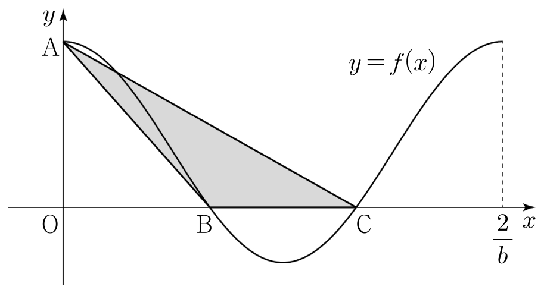
① \(\frac76\)② \(\frac65\)③ \(\frac54\)④ \(\frac43\)⑤ \(\frac32\)
원본 정답 ⑤
원본 풀이 (내부용)[출제의도] 삼각함수의 그래프를 활용하여 문제 해결하기
점 \(\left(\frac2b,0\right)\)을 \(D\)라 하자.
함수 \(y=f(x)\)의 그래프는 직선 \(x=\frac1b\)에 대하여 대칭이므로
\(
\overline{OB}=\overline{BC}=\overline{CD}
\)
\(
A\left(0,a+\frac12\right),\quad
B\left(\frac2{3b},0\right),\quad
C\left(\frac4{3b},0\right)
\)
이고 점 \(B\)는 함수 \(y=f(x)\)의 그래프 위의 점이므로
\(
a\cos\left(b\pi\times\frac2{3b}\right)+\frac12=0,\qquad
a\cos\frac{2\pi}{3}=-\frac12
\)
\(
a=1
\)
\(\overline{BC}=\frac2{3b},\ \overline{OA}=a+\frac12=\frac32\)이므로
\(
\text{삼각형 }ABC\text{의 넓이}
=\frac12\times\frac2{3b}\times\frac32=1
\)
\(
b=\frac12
\)
따라서 \(a+b=\frac32\).
쌍둥이 1/5 · 4점 쌍둥이두 양수 $a\left(a>1\right)$, $b$에 대하여 $0\le x\le\frac{2}{b}$에서 정의된 함수 $f(x)=a\cos b\pi x+1$이 있습니다. 함수 $y=f(x)$의 그래프가 $y$축과 만나는 점을 $A$, $x$축과 만나는 서로 다른 두 점을 $B$, $C$라 합니다. $\overline{OB}=\overline{BC}$이고 삼각형 $ABC$의 넓이가 $2$일 때, $a+b$의 값으로 옳은 것을 고르세요. (단, $O$는 원점입니다.)
① $\frac{5}{2}$② $3$③ $\frac{7}{2}$④ $4$⑤ $\frac{9}{2}$
정답① $\frac{5}{2}$ 점 $B$의 $x$좌표를 $p$라 하면 $0\le b\pi x\le2\pi$에서 그래프는 직선 $x=\frac{1}{b}$에 대하여 대칭이므로 점 $C$의 $x$좌표는 $\frac{2}{b}-p$ $\overline{OB}=\overline{BC}$에서 $p=\frac{2}{b}-2p$, $p=\frac{2}{3b}$이므로 $b\pi p=\frac{2\pi}{3}$ $f(p)=a\cos\frac{2\pi}{3}+1=-\frac{a}{2}+1=0$이므로 $a=2$ $A(0,\ 3)$, $\overline{BC}=\frac{2}{3b}$이므로 넓이는 $\frac{1}{2}\times\frac{2}{3b}\times3=\frac{1}{b}=2$, $b=\frac{1}{2}$ $a+b=2+\frac{1}{2}=\frac{5}{2}$
숫자: 원본 12 0 2 12 1 → 쌍둥이 1 0 2 1 2 · 같은 수: 0 1 2
쌍둥이 2/5 · 4점 쌍둥이두 양수 $a\left(a>\frac{3}{2}\right)$, $b$에 대하여 $0\le x\le\frac{2}{b}$에서 정의된 함수 $f(x)=a\cos b\pi x+\frac{3}{2}$이 있습니다. 함수 $y=f(x)$의 그래프가 $y$축과 만나는 점을 $A$, $x$축과 만나는 서로 다른 두 점을 $B$, $C$라 합니다. $\overline{OB}=\overline{BC}$이고 삼각형 $ABC$의 넓이가 $3$일 때, $a+b$의 값으로 옳은 것을 고르세요. (단, $O$는 원점입니다.)
① $3$② $\frac{7}{2}$③ $4$④ $\frac{9}{2}$⑤ $5$
정답② $\frac{7}{2}$ 점 $B$의 $x$좌표를 $p$라 하면 $0\le b\pi x\le2\pi$에서 그래프는 직선 $x=\frac{1}{b}$에 대하여 대칭이므로 점 $C$의 $x$좌표는 $\frac{2}{b}-p$ $\overline{OB}=\overline{BC}$에서 $p=\frac{2}{b}-2p$, $p=\frac{2}{3b}$이므로 $b\pi p=\frac{2\pi}{3}$ $f(p)=a\cos\frac{2\pi}{3}+\frac{3}{2}=-\frac{a}{2}+\frac{3}{2}=0$이므로 $a=3$ $A(0,\ \frac{9}{2})$, $\overline{BC}=\frac{2}{3b}$이므로 넓이는 $\frac{1}{2}\times\frac{2}{3b}\times\frac{9}{2}=\frac{3}{2}\times\frac{1}{b}=3$, $b=\frac{1}{2}$ $a+b=3+\frac{1}{2}=\frac{7}{2}$
쌍둥이 3/5 · 4점 쌍둥이두 양수 $a\left(a>\frac{1}{3}\right)$, $b$에 대하여 $0\le x\le\frac{2}{b}$에서 정의된 함수 $f(x)=a\cos b\pi x+\frac{1}{3}$이 있습니다. 함수 $y=f(x)$의 그래프가 $y$축과 만나는 점을 $A$, $x$축과 만나는 서로 다른 두 점을 $B$, $C$라 합니다. $\overline{OB}=\overline{BC}$이고 삼각형 $ABC$의 넓이가 $\frac{1}{2}$일 때, $a+b$의 값으로 옳은 것을 고르세요. (단, $O$는 원점입니다.)
① $\frac{2}{3}$② $1$③ $\frac{4}{3}$④ $\frac{5}{3}$⑤ $2$
정답③ $\frac{4}{3}$ 점 $B$의 $x$좌표를 $p$라 하면 $0\le b\pi x\le2\pi$에서 그래프는 직선 $x=\frac{1}{b}$에 대하여 대칭이므로 점 $C$의 $x$좌표는 $\frac{2}{b}-p$ $\overline{OB}=\overline{BC}$에서 $p=\frac{2}{b}-2p$, $p=\frac{2}{3b}$이므로 $b\pi p=\frac{2\pi}{3}$ $f(p)=a\cos\frac{2\pi}{3}+\frac{1}{3}=-\frac{a}{2}+\frac{1}{3}=0$이므로 $a=\frac{2}{3}$ $A(0,\ 1)$, $\overline{BC}=\frac{2}{3b}$이므로 넓이는 $\frac{1}{2}\times\frac{2}{3b}\times1=\frac{1}{3}\times\frac{1}{b}=\frac{1}{2}$, $b=\frac{2}{3}$ $a+b=\frac{2}{3}+\frac{2}{3}=\frac{4}{3}$
쌍둥이 4/5 · 4점 쌍둥이두 양수 $a,b$에 대하여 $0\le x\le2/b$에서 $f(x)=a\cos(b\pi x)+2$입니다. 그래프가 $y$축과 만나는 점을 $A$, $x$축과 만나는 두 점을 $B,C$라 합니다. $\overline{OB}=\overline{BC}$이고 삼각형 $ABC$의 넓이가 $3$일 때, $a+b$의 값을 구하세요.
① $4$② $13/3$③ $14/3$④ $5$⑤ $16/3$
정답③ $14/3$ 두 영점의 x좌표 간격은 $2/(3b)$입니다. 조건에 의해 첫 영점에서 각은 $2\pi/3$이므로 $-a/2+2=0$, 따라서 $a=4$입니다. $A$의 높이는 $a+2=6$이고 삼각형 넓이는 $\frac12\cdot\frac{2}{3b}\cdot6=2/b$입니다. $2/b=3$이므로 $b=2/3$, 따라서 $a+b=14/3$입니다.
숫자: 원본 12 0 2 12 1 → 쌍둥이 0 2 2 3 · 같은 수: 0 2
쌍둥이 5/5 · 4점 쌍둥이두 양수 $a,b$에 대하여 $0\le x\le2/b$에서 $f(x)=a\cos(b\pi x)+4$입니다. 그래프가 $y$축과 만나는 점을 $A$, $x$축과 만나는 두 점을 $B,C$라 합니다. $\overline{OB}=\overline{BC}$이고 삼각형 $ABC$의 넓이가 $2$일 때, $a+b$의 값을 구하세요.
① $8$② $9$③ $10$④ $11$⑤ $12$
정답③ $10$ 첫 영점의 각은 $2\pi/3$이므로 $-a/2+4=0$, 따라서 $a=8$입니다. $A$의 높이는 $a+4=12$이고 삼각형 넓이는 $\frac12\cdot\frac{2}{3b}\cdot12=4/b$입니다. $4/b=2$이므로 $b=2$, 따라서 $a+b=10$입니다.
숫자: 원본 12 0 2 12 1 → 쌍둥이 0 2 4 2 · 같은 수: 0 2
207. 2026년 9월 20번 · 4점 · 수학Ⅰ 삼각함수 · 4점 쌍둥이
원본 (내부용)그림과 같이 반지름의 길이가 \(\frac{4\sqrt{15}}5\)인 원에 내접하고 \(\overline{BC}=\overline{CD}\)인 사각형 \(ABCD\)가 있다. 점 \(C\)를 지나고 원에 접하는 직선이 두 직선 \(AB,AD\)와 만나는 점을 각각 \(E,F\)라 하자. \(\cos(\angle ADC)=\frac14,\ \overline{AB}:\overline{BC}=3:2\)일 때, 삼각형 \(AEF\)의 넓이는? [4점]
① \(5\sqrt{15}\)② \(\frac{21\sqrt{15}}4\)③ \(\frac{11\sqrt{15}}2\)④ \(\frac{23\sqrt{15}}4\)⑤ \(6\sqrt{15}\)
원본 정답 ②
원본 풀이 (내부용)[출제의도] 사인법칙과 코사인법칙을 활용하여 문제 해결하기
사각형 \(ABCD\)는 원에 내접하므로
\(
\angle ABC=\pi-\angle ADC,\qquad
\cos(\angle ABC)=-\cos(\angle ADC)=-\frac14
\)
\(
\cos(\angle ADC)=\frac14,\qquad
\sin(\angle ADC)=\frac{\sqrt{15}}4
\)
삼각형 \(ADC\)에서 사인법칙에 의하여
\(
\overline{AC}
=2\times\frac{4\sqrt{15}}5\times\frac{\sqrt{15}}4=6
\)
\(\overline{AB}:\overline{BC}=3:2\)이므로 \(\overline{AB}=3k,\ \overline{BC}=2k\ (k>0)\)라 하자. 삼각형 \(ABC\)에서 코사인법칙에 의하여
\(
6^2=(3k)^2+(2k)^2-2\times3k\times2k\times\left(-\frac14\right)
\)
\(
36=16k^2,\qquad k=\frac32
\)
\(
\overline{AB}=\frac92,\qquad \overline{BC}=\overline{CD}=3
\)
\(\overline{AD}=x\ (x>0)\)이라 하면 삼각형 \(ACD\)에서 코사인법칙에 의하여
\(
6^2=3^2+x^2-2\times3\times x\times\frac14
\)
\(
2x^2-3x-54=0,\qquad (x-6)(2x+9)=0
\)
\(x=6,\ \overline{AD}=6\).
원의 중심을 \(O,\ \angle BCE=\theta\)라 하면 삼각형 \(OBC\)는 \(\overline{OB}=\overline{OC}\)인 이등변삼각형이고
\(
\angle OCE=\frac\pi2,\qquad
\angle OCB=\angle OBC=\frac\pi2-\theta
\)
\(
\angle BOC=\pi-2\times\left(\frac\pi2-\theta\right)=2\theta
\)
\(\angle BAC\)는 호 \(BC\)에 대한 원주각이므로
\(
\angle BAC=\frac12\times\angle BOC=\theta
\)
두 삼각형 \(CBE\)와 \(ACE\)는
\(
\angle BCE=\angle CAE,\qquad
\angle BEC=\angle CEA\quad(\text{공통})
\)
이므로 서로 닮음이다.
\(
\overline{AC}:\overline{CB}=2:1
\)
이므로
\(
\overline{AE}:\overline{CE}=2:1,\qquad
\overline{AE}=\frac92+\overline{BE}=2\overline{CE}
\qquad\cdots\text{①}
\)
\(
\overline{CE}:\overline{BE}=2:1,\qquad
\overline{CE}=2\overline{BE}
\qquad\cdots\text{②}
\)
①, ②에 의하여 \(\overline{BE}=\frac32,\ \overline{CE}=3\).
\(
\overline{AE}=\overline{AB}+\overline{BE}
=\frac92+\frac32=6
\)
두 삼각형 \(ABC\)와 \(CDF\)는
\(
\angle ABC=\angle CDF,\qquad
\angle BAC=\angle CAD=\angle DCF
\)
이므로 서로 닮음이고,
\(
\overline{AB}:\overline{CD}=\frac92:3=3:2
\)
이므로 \(\overline{CF}=4\).
\(
\overline{EF}=\overline{EC}+\overline{CF}=3+4=7
\)
따라서 \(\angle AEF=\angle CBE=\angle ADC\)이므로 삼각형 \(AEF\)의 넓이는
\(
\frac12\times\overline{AE}\times\overline{EF}\times\sin(\angle AEF)
=\frac12\times6\times7\times\frac{\sqrt{15}}4
=\frac{21\sqrt{15}}4
\)
쌍둥이 1/5 · 4점 쌍둥이반지름 $2\sqrt5$인 원에 내접한 사각형 $ABCD$에서 $BC=CD$입니다. $C$를 지나는 원의 접선은 직선 $AB,AD$와 각각 $E,F$에서 만납니다. $\cos\angle ADC=1/2$, $AB:BC=3:2$일 때 삼각형 $AEF$의 넓이를 구하세요.
① $14\sqrt3$② $15\sqrt3$③ $16\sqrt3$④ $17\sqrt3$⑤ $18\sqrt3$
정답③ $16\sqrt3$ 기존 구성을 길이 2배로 확대했으므로 각과 변의 비는 유지됩니다. 넓이는 길이 배율의 제곱인 4배가 되고, 원래 대응 넓이 $4\sqrt3$의 4배는 $16\sqrt3$입니다.
쌍둥이 2/5 · 4점 쌍둥이반지름의 길이가 $\frac{3\sqrt{2}}{2}$인 원에 내접하고 $\overline{BC}=\overline{CD}$인 사각형 $ABCD$가 있습니다. 점 $C$를 지나고 원에 접하는 직선이 두 직선 $AB$, $AD$와 만나는 점을 각각 $E$, $F$라 합니다. $\cos(\angle ADC)=\frac{1}{3}$, $\overline{AB}:\overline{BC}=2:1$일 때, 삼각형 $AEF$의 넓이로 옳은 것을 고르세요.
정답$\frac{14\sqrt{2}}{3}$ $\sin(\angle ADC)=\frac{2\sqrt{2}}{3}$이므로 삼각형 $ACD$에서 사인법칙에 의하여 $\overline{AC}=2\times\frac{3\sqrt{2}}{2}\times\frac{2\sqrt{2}}{3}=4$ $\angle ABC=\pi-\angle ADC$이므로 $\overline{BC}=x$, $\overline{AB}=2x$라 하면 삼각형 $ABC$에서 $16=4x^{2}+x^{2}+2\times2x\times x\times\frac{1}{3}$, $x=\frac{4\sqrt{57}}{19}$ 삼각형 $ACD$에서 $\overline{AD}=y$라 하면 $16=y^{2}+\frac{48}{19}-2\times\frac{4\sqrt{57}}{19}y\times\frac{1}{3}$이고 $y>0$이므로 $\overline{AD}=\frac{32\sqrt{57}}{57}$ 접선과 현이 이루는 각에 의하여 $\angle ECB=\angle CAE$이므로 $\triangle EBC\sim\triangle ECA$이고 $\frac{\overline{EB}}{\overline{EC}}=\frac{\overline{EC}}{\overline{EA}}=\frac{\overline{BC}}{\overline{CA}}$, 즉 $\overline{EB}=\left(\frac{\overline{BC}}{\overline{CA}}\right)^{2}\overline{EA}=\frac{3}{19}\overline{EA}$ $\overline{EA}-\overline{EB}=\overline{AB}=\frac{8\sqrt{57}}{19}$이므로 $\overline{EA}=\frac{\sqrt{57}}{2}$, 같은 방법으로 $\overline{CD}=\overline{BC}$에서 $\overline{FA}=\frac{\overline{AD}}{1-\frac{3}{19}}=\frac{2\sqrt{57}}{3}$ $\angle BAD=\pi-\angle BCD$에서 $\sin(\angle BAD)=\frac{28\sqrt{2}}{57}$이므로 삼각형 $AEF$의 넓이는 $\frac{1}{2}\times\frac{\sqrt{57}}{2}\times\frac{2\sqrt{57}}{3}\times\frac{28\sqrt{2}}{57}=\frac{14\sqrt{2}}{3}$
쌍둥이 3/5 · 4점 쌍둥이반지름의 길이가 $\sqrt{5}$인 원에 내접하고 $\overline{BC}=\overline{CD}$인 사각형 $ABCD$가 있습니다. 점 $C$를 지나고 원에 접하는 직선이 두 직선 $AB$, $AD$와 만나는 점을 각각 $E$, $F$라 합니다. $\cos(\angle ADC)=\frac{1}{2}$, $\overline{AB}:\overline{BC}=3:2$일 때, 삼각형 $AEF$의 넓이로 옳은 것을 고르세요.
정답$4\sqrt{3}$ $\sin(\angle ADC)=\frac{\sqrt{3}}{2}$이므로 삼각형 $ACD$에서 사인법칙에 의하여 $\overline{AC}=2\times\sqrt{5}\times\frac{\sqrt{3}}{2}=\sqrt{15}$ $\angle ABC=\pi-\angle ADC$이므로 $\overline{BC}=x$, $\overline{AB}=\frac{3}{2}x$라 하면 삼각형 $ABC$에서 $15=\frac{9}{4}x^{2}+x^{2}+2\times\frac{3}{2}x\times x\times\frac{1}{2}$, $x=\frac{2\sqrt{285}}{19}$ 삼각형 $ACD$에서 $\overline{AD}=y$라 하면 $15=y^{2}+\frac{60}{19}-2\times\frac{2\sqrt{285}}{19}y\times\frac{1}{2}$이고 $y>0$이므로 $\overline{AD}=\frac{5\sqrt{285}}{19}$ 접선과 현이 이루는 각에 의하여 $\angle ECB=\angle CAE$이므로 $\triangle EBC\sim\triangle ECA$이고 $\frac{\overline{EB}}{\overline{EC}}=\frac{\overline{EC}}{\overline{EA}}=\frac{\overline{BC}}{\overline{CA}}$, 즉 $\overline{EB}=\left(\frac{\overline{BC}}{\overline{CA}}\right)^{2}\overline{EA}=\frac{4}{19}\overline{EA}$ $\overline{EA}-\overline{EB}=\overline{AB}=\frac{3\sqrt{285}}{19}$이므로 $\overline{EA}=\frac{\sqrt{285}}{5}$, 같은 방법으로 $\overline{CD}=\overline{BC}$에서 $\overline{FA}=\frac{\overline{AD}}{1-\frac{4}{19}}=\frac{\sqrt{285}}{3}$ $\angle BAD=\pi-\angle BCD$에서 $\sin(\angle BAD)=\frac{8\sqrt{3}}{19}$이므로 삼각형 $AEF$의 넓이는 $\frac{1}{2}\times\frac{\sqrt{285}}{5}\times\frac{\sqrt{285}}{3}\times\frac{8\sqrt{3}}{19}=4\sqrt{3}$
쌍둥이 4/5 · 4점 쌍둥이반지름의 길이가 $\frac{5\sqrt{6}}{6}$인 원에 내접하고 $\overline{BC}=\overline{CD}$인 사각형 $ABCD$가 있습니다. 점 $C$를 지나고 원에 접하는 직선이 두 직선 $AB$, $AD$와 만나는 점을 각각 $E$, $F$라 합니다. $\cos(\angle ADC)=\frac{1}{5}$, $\overline{AB}:\overline{BC}=2:1$일 때, 삼각형 $AEF$의 넓이로 옳은 것을 고르세요.
정답$\frac{44\sqrt{6}}{15}$ $\sin(\angle ADC)=\frac{2\sqrt{6}}{5}$이므로 삼각형 $ACD$에서 사인법칙에 의하여 $\overline{AC}=2\times\frac{5\sqrt{6}}{6}\times\frac{2\sqrt{6}}{5}=4$ $\angle ABC=\pi-\angle ADC$이므로 $\overline{BC}=x$, $\overline{AB}=2x$라 하면 삼각형 $ABC$에서 $16=4x^{2}+x^{2}+2\times2x\times x\times\frac{1}{5}$, $x=\frac{4\sqrt{145}}{29}$ 삼각형 $ACD$에서 $\overline{AD}=y$라 하면 $16=y^{2}+\frac{80}{29}-2\times\frac{4\sqrt{145}}{29}y\times\frac{1}{5}$이고 $y>0$이므로 $\overline{AD}=\frac{48\sqrt{145}}{145}$ 접선과 현이 이루는 각에 의하여 $\angle ECB=\angle CAE$이므로 $\triangle EBC\sim\triangle ECA$이고 $\frac{\overline{EB}}{\overline{EC}}=\frac{\overline{EC}}{\overline{EA}}=\frac{\overline{BC}}{\overline{CA}}$, 즉 $\overline{EB}=\left(\frac{\overline{BC}}{\overline{CA}}\right)^{2}\overline{EA}=\frac{5}{29}\overline{EA}$ $\overline{EA}-\overline{EB}=\overline{AB}=\frac{8\sqrt{145}}{29}$이므로 $\overline{EA}=\frac{\sqrt{145}}{3}$, 같은 방법으로 $\overline{CD}=\overline{BC}$에서 $\overline{FA}=\frac{\overline{AD}}{1-\frac{5}{29}}=\frac{2\sqrt{145}}{5}$ $\angle BAD=\pi-\angle BCD$에서 $\sin(\angle BAD)=\frac{44\sqrt{6}}{145}$이므로 삼각형 $AEF$의 넓이는 $\frac{1}{2}\times\frac{\sqrt{145}}{3}\times\frac{2\sqrt{145}}{5}\times\frac{44\sqrt{6}}{145}=\frac{44\sqrt{6}}{15}$
쌍둥이 5/5 · 4점 쌍둥이반지름 $3\sqrt2$인 원에 내접한 사각형 $ABCD$에서 $BC=CD$입니다. $C$를 지나는 원의 접선은 직선 $AB,AD$와 각각 $E,F$에서 만납니다. $\cos\angle ADC=1/3$, $AB:BC=2:1$일 때 삼각형 $AEF$의 넓이를 구하세요.
① $52\sqrt2/3$② $54\sqrt2/3$③ $56\sqrt2/3$④ $58\sqrt2/3$⑤ $60\sqrt2/3$
정답③ $56\sqrt2/3$ 기존 구성을 길이 2배로 확대했습니다. 각과 변의 비는 같고 넓이는 4배가 됩니다. 원래 넓이가 $14\sqrt2/3$이므로 확대 후 넓이는 $4\cdot14\sqrt2/3=56\sqrt2/3$입니다.
원본 (내부용)반지름의 길이가 \(8\)이고 호의 길이가 \(6\pi\)인 부채꼴의 넓이는 \(a\pi\)이다. \(a\)의 값을 구하시오. [3점]
원본 정답 24
원본 풀이 (내부용)[출제의도] 일반각과 호도법 이해하기
부채꼴의 중심각의 크기를 \(\theta\)라 하면
\(
6\pi=8\times\theta,\quad \theta=\frac34\pi
\)
부채꼴의 넓이는
\(
a\pi=\frac12\times8^2\times\frac34\pi=24\pi
\)
따라서 \(a=24\).
생성기 숫자판 1/6 · G2M9-05#1반지름의 길이가 $12$이고 호의 길이가 $15\pi$인 부채꼴의 넓이는 $a\pi$입니다. $a$의 값을 구하세요.
원본 (내부용)자연수 \(a\)에 대하여 \(0\le x\le 8\pi\)에서 정의된 함수 \(f(x)=8\sin ax\)가 있다. 함수 \(y=f(x)\)의 그래프가 직선 \(y=5\)와 만나는 점의 \(x\)좌표 중 가장 큰 값과 가장 작은 값의 합이 \(\dfrac{31}{4}\pi\)일 때, \(a\)의 값을 구하시오. [4점]
원본 정답 ④
원본 풀이 (내부용)[출제의도] 삼각함수의 그래프를 이용하여 문제 해결하기
함수 \(y=8\sin ax\)의 주기가 \(\frac{2\pi}{a}\ (a\text{는 자연수})\)이므로
\(
f\left(\frac{2\pi}{a}\right)
=f\left(\frac{4\pi}{a}\right)
=\cdots
=f\left(\frac{2\pi}{a}\times4a\right)=0
\)
함수 \(y=f(x)\)의 그래프가 직선 \(y=5\)와 만나는 점의 \(x\)좌표 중 가장 작은 값을 \(\theta\)라 하면, 가장 큰 값은 \(8\pi-\frac\pi a-\theta\)이다. [그림: 사인곡선이 수평선 \(y=5\)와 여러 점에서 만나며, 첫 교점의 \(x\)좌표가 \(\theta\), 가장 오른쪽 교점이 \(8\pi-\frac\pi a-\theta\)로 표시됨. 오른쪽 끝의 \(x\)축에 \(8\pi\)가 표시됨.]
\(
\theta+\left(8\pi-\frac\pi a-\theta\right)
=8\pi-\frac\pi a=\frac{31}{4}\pi,\qquad
\frac\pi4=\frac\pi a
\)
따라서 \(a=4\).
쌍둥이 1/5 · 4점 쌍둥이자연수 $a$에 대하여 $0\le x\le6\pi$에서 정의된 함수 $f(x)=6\sin ax$가 있습니다. 함수 $y=f(x)$의 그래프가 직선 $y=2$와 만나는 점의 $x$좌표 중 가장 큰 값과 가장 작은 값의 합이 $\frac{17 \pi}{3}$일 때, $a$의 값을 구하세요.
정답$3$ $\sin\alpha=\frac{2}{6}$ $\left(0<\alpha<\frac{\pi}{2}\right)$라 하면 가장 작은 $x$좌표는 $\frac{\alpha}{a}$ $0\le ax\le6a\pi$이고 $6a\pi$는 $2\pi$의 배수이므로 가장 큰 $x$좌표는 $ax=6a\pi-2\pi+(\pi-\alpha)$, 즉 $x=6\pi-\frac{\pi+\alpha}{a}$ 두 값의 합은 $6\pi-\frac{\pi}{a}=\frac{17 \pi}{3}$이므로 $\frac{\pi}{a}=\frac{\pi}{3}$, $a=3$
숫자: 원본 0 8 8 5 31 4 → 쌍둥이 0 6 6 2 17 3 · 같은 수: 0
쌍둥이 2/5 · 4점 쌍둥이자연수 $a$에 대하여 $0\le x\le4\pi$에서 정의된 함수 $f(x)=10\sin ax$가 있습니다. 함수 $y=f(x)$의 그래프가 직선 $y=7$과 만나는 점의 $x$좌표 중 가장 큰 값과 가장 작은 값의 합이 $\frac{19 \pi}{5}$일 때, $a$의 값을 구하세요.
정답$5$ $\sin\alpha=\frac{7}{10}$ $\left(0<\alpha<\frac{\pi}{2}\right)$라 하면 가장 작은 $x$좌표는 $\frac{\alpha}{a}$ $0\le ax\le4a\pi$이고 $4a\pi$는 $2\pi$의 배수이므로 가장 큰 $x$좌표는 $ax=4a\pi-2\pi+(\pi-\alpha)$, 즉 $x=4\pi-\frac{\pi+\alpha}{a}$ 두 값의 합은 $4\pi-\frac{\pi}{a}=\frac{19 \pi}{5}$이므로 $\frac{\pi}{a}=\frac{\pi}{5}$, $a=5$
쌍둥이 3/5 · 4점 쌍둥이자연수 $a$에 대하여 $0\le x\le10\pi$에서 정의된 함수 $f(x)=4\sin ax$가 있습니다. 함수 $y=f(x)$의 그래프가 직선 $y=3$과 만나는 점의 $x$좌표 중 가장 큰 값과 가장 작은 값의 합이 $\frac{19 \pi}{2}$일 때, $a$의 값을 구하세요.
정답$2$ $\sin\alpha=\frac{3}{4}$ $\left(0<\alpha<\frac{\pi}{2}\right)$라 하면 가장 작은 $x$좌표는 $\frac{\alpha}{a}$ $0\le ax\le10a\pi$이고 $10a\pi$는 $2\pi$의 배수이므로 가장 큰 $x$좌표는 $ax=10a\pi-2\pi+(\pi-\alpha)$, 즉 $x=10\pi-\frac{\pi+\alpha}{a}$ 두 값의 합은 $10\pi-\frac{\pi}{a}=\frac{19 \pi}{2}$이므로 $\frac{\pi}{a}=\frac{\pi}{2}$, $a=2$
쌍둥이 4/5 · 4점 쌍둥이자연수 $a$에 대하여 $0\le x\le4\pi$에서 정의된 함수 $f(x)=6\sin ax$와 직선 $y=3\sqrt3$의 교점 중 가장 큰 $x$좌표에서 가장 작은 $x$좌표를 뺀 값이 $\frac{11\pi}{3}$이다. $a+3$의 값을 구하시오.
정답$5$ $\sin ax=\frac{\sqrt3}{2}$의 첫 위상은 $\pi/3$, 마지막 위상은 $4a\pi-\pi/3$이다. 두 극단 $x$좌표의 차는 $4\pi-\frac{2\pi}{3a}=\frac{11\pi}{3}$이므로 $a=2$. $a+3=5$이다.
쌍둥이 5/5 · 4점 쌍둥이자연수 $a$에 대하여 $0\le x\le5\pi$에서 정의된 함수 $f(x)=6\sin ax$와 직선 $y=3$의 교점 중 가장 큰 $x$좌표에서 가장 작은 $x$좌표를 뺀 값이 $\frac{14\pi}{3}$이다. $4a+2$의 값을 구하시오.
정답$6$ $\sin ax=\frac12$의 첫 위상은 $\pi/6$, 마지막 위상은 $5a\pi-\pi/6$이다. 두 극단 $x$좌표의 차는 $5\pi-\frac{\pi}{3a}=\frac{14\pi}{3}$이므로 $a=1$. $4a+2=6$이다.
원본 (내부용)\(\overline{AB}=6,\ \overline{AC}=2\)이고 \(\sin(B+C)=\frac13\)인 삼각형 \(ABC\)의 넓이는? [3점]
① \(\sqrt2\)② \(2\)③ \(2\sqrt2\)④ \(4\)⑤ \(4\sqrt2\)
원본 정답 ②
원본 풀이 (내부용)[출제의도] 삼각형의 넓이 이해하기
\(
\sin(B+C)=\sin(\pi-A)=\sin A
\)
이므로
\(
\sin A=\frac13
\)
따라서 삼각형 \(ABC\)의 넓이는
\(
\frac12\times\overline{AB}\times\overline{AC}\times\sin A
=\frac12\times6\times2\times\frac13=2
\)
생성기 숫자판 1/6 · G2M9-19#5$\overline{\mathrm{AB}}=7,\ \overline{\mathrm{AC}}=11$이고 $\sin\left(B+C\right)=\frac{1}{4}$인 삼각형 $\mathrm{ABC}$의 넓이로 옳은 것을 고르세요.
① $\frac{77}{16}$② $\frac{77}{8}$③ $\frac{85}{8}$④ $\frac{93}{8}$⑤ $\frac{77}{4}$
원본 (내부용)\(0<\theta<2\pi\)인 \(\theta\)에 대하여 다음 조건을 만족시키는 모든 \(\theta\)의 값의 범위가 \(a<\theta<b\)일 때, \(a+b\)의 값은? [4점] 각 \(\theta\)는 제3사분면의 각이고, 각 \(3\theta\)는 제4사분면의 각이다.
① \(\frac{13\pi}{6}\)② \(\frac{7\pi}{3}\)③ \(\frac{5\pi}{2}\)④ \(\frac{8\pi}{3}\)⑤ \(\frac{17\pi}{6}\)
그림·참고 ---
원본 정답 ③
원본 풀이 (내부용)[출제의도] 일반각과 호도법의 뜻 이해하기
\(0<\theta<2\pi\)인 \(\theta\)에 대하여 각 \(\theta\)가 제3사분면의 각이므로
\(
\pi<\theta<\frac{3\pi}{2}
\)
\(
3\pi<3\theta<\frac{9\pi}{2}
\)
이고 각 \(3\theta\)가 제4사분면의 각이므로
\(
\frac{7\pi}{2}<3\theta<4\pi,\qquad
\frac{7\pi}{6}<\theta<\frac{4\pi}{3}
\)
따라서
\(
a+b=\frac{7\pi}{6}+\frac{4\pi}{3}=\frac{5\pi}{2}
\)
쌍둥이 1/5 · 4점 쌍둥이자연수 $n$에 대하여 $0\le x\le3\pi$에서 함수 $f(x)=10\sin nx$의 그래프와 직선 $y=5$의 교점 중 두 극단 $x$좌표의 차가 $\frac{8\pi}{3}$이다. $5n+1$을 구하시오.
정답$6$ $\sin nx=\frac12$의 첫 위상은 $\pi/6$, 마지막은 $3n\pi-\pi/6$이다. 좌표 차 $3\pi-\frac{\pi}{3n}=\frac{8\pi}{3}$에서 $n=1$. $5n+1=6$이다.
쌍둥이 2/5 · 4점 쌍둥이$0<\theta<2\pi$인 $\theta$에 대하여 다음 조건을 만족시키는 모든 $\theta$의 값의 범위가 $a<\theta<b$일 때, $a+b$의 값으로 옳은 것을 고르세요. 각 $\theta$는 제$1$사분면의 각이고, 각 $4\theta$는 제$3$사분면의 각입니다.
① $\frac{\pi}{8}$② $\frac{\pi}{4}$③ $\frac{5\pi}{8}$④ $\frac{7\pi}{8}$⑤ $\frac{9\pi}{8}$
정답③ $\frac{5\pi}{8}$ $\theta$가 제$1$사분면의 각이므로 $0<\theta<\frac{\pi}{2}$이고, 따라서 $0<4\theta<2\pi$이다. 이 범위에서 $4\theta$가 제$3$사분면의 각이려면 $\pi<4\theta<\frac{3\pi}{2}$이어야 한다. 따라서 $\frac{\pi}{4}<\theta<\frac{3\pi}{8}$이고, $a+b=\frac{5\pi}{8}$이다.
숫자: 원본 0 2 3 3 4 → 쌍둥이 0 2 1 4 3 · 같은 수: 0 2 3 4
쌍둥이 3/5 · 4점 쌍둥이$0<\theta<2\pi$인 $\theta$에 대하여 다음 조건을 만족시키는 모든 $\theta$의 값의 범위가 $a<\theta<b$일 때, $a+b$의 값으로 옳은 것을 고르세요. 각 $\theta$는 제$4$사분면의 각이고, 각 $5\theta$는 제$3$사분면의 각입니다.
① $\frac{31\pi}{10}$② $\frac{33\pi}{10}$③ $\frac{35\pi}{10}$④ $\frac{37\pi}{10}$⑤ $\frac{39\pi}{10}$
정답④ $\frac{37\pi}{10}$ $\theta$가 제$4$사분면의 각이므로 $\frac{3\pi}{2}<\theta<2\pi$이고, $\frac{15\pi}{2}<5\theta<10\pi$이다. 이 범위에서 $5\theta$가 제$3$사분면의 각인 구간은 $9\pi<5\theta<\frac{19\pi}{2}$뿐이다. 따라서 $\frac{9\pi}{5}<\theta<\frac{19\pi}{10}$이고, $a+b=\frac{37\pi}{10}$이다.
숫자: 원본 0 2 3 3 4 → 쌍둥이 0 2 4 5 3 · 같은 수: 0 2 3 4
쌍둥이 4/5 · 4점 쌍둥이$0<\theta<2\pi$인 $\theta$에 대하여 다음 조건을 만족시키는 모든 $\theta$의 값의 범위가 $a<\theta<b$일 때, $a+b$의 값으로 옳은 것을 고르세요. 각 $\theta$는 제$2$사분면의 각이고, 각 $4\theta$는 제$2$사분면의 각입니다.
① $\frac{11\pi}{8}$② $\frac{37\pi}{24}$③ $\frac{41\pi}{24}$④ $\frac{15\pi}{8}$⑤ $\frac{49\pi}{24}$
정답① $\frac{11\pi}{8}$ $\theta$가 제$2$사분면의 각이므로 $\frac{\pi}{2}<\theta<\pi$이고, $2 \pi<4\theta<4 \pi$ 이 범위에서 $4\theta$가 제$2$사분면의 각이 되는 것은 $\frac{5 \pi}{2}<4\theta<3 \pi$뿐입니다. 따라서 $\frac{5 \pi}{8}<\theta<\frac{3 \pi}{4}$이므로 $a+b=\frac{11 \pi}{8}$
숫자: 원본 0 2 3 3 4 → 쌍둥이 0 2 2 4 2 · 같은 수: 0 2 4
쌍둥이 5/5 · 4점 쌍둥이자연수 $n$에 대하여 $0\le x\le7\pi$에서 함수 $f(x)=8\sin nx$의 그래프와 직선 $y=4\sqrt3$의 교점 중 두 극단 $x$좌표의 차가 $\frac{20\pi}{3}$이다. $3n+2$를 구하시오.
정답$8$ $\sin nx=\frac{\sqrt3}{2}$의 첫 위상은 $\pi/3$, 마지막은 $7n\pi-\pi/3$이다. 두 극단 좌표의 차 $7\pi-\frac{2\pi}{3n}=\frac{20\pi}{3}$에서 $n=2$. $3n+2=8$이다.
원본 (내부용)삼각형 \(ABC\)가 다음 조건을 만족시킨다. (가) \(\overline{AB}:\overline{BC}=3:5\) (나) \(4\cos^2 C-\cos^2 B=3\) 삼각형 \(ABC\)의 외접원의 반지름의 길이가 \(\sqrt{14}\)일 때, 선분 \(AC\)의 길이는? [4점]
① \(\frac{28}{5}\)② \(\frac{91}{15}\)③ \(\frac{98}{15}\)④ \(7\)⑤ \(\frac{112}{15}\)
원본 정답 ⑤
원본 풀이 (내부용)[출제의도] 사인법칙과 코사인법칙을 활용하여 문제해결하기
\(
4\cos^2 C-\cos^2 B=3
\)
\(
4(1-\sin^2 C)-(1-\sin^2 B)=3
\)
\(
\sin^2 B=4\sin^2 C,\qquad \sin B=2\sin C
\)
삼각형 \(ABC\)에서 사인법칙에 의하여
\(
\frac{\overline{AB}}{\sin C}
=\frac{\overline{AC}}{\sin B},\qquad
\overline{AB}:\overline{AC}=1:2
\)
조건 (가)에 의하여
\(
\overline{AB}:\overline{BC}:\overline{AC}=3:5:6
\)
이므로 어떤 양수 \(t\)에 대하여
\(
\overline{AB}=3t,\quad \overline{BC}=5t,\quad \overline{AC}=6t
\)
이다.
삼각형 \(ABC\)에서 코사인법칙에 의하여
\(
\cos B
=\frac{(5t)^2+(3t)^2-(6t)^2}{2\times5t\times3t}
=-\frac1{15}
\)
\(
\sin B=\sqrt{1-\left(-\frac1{15}\right)^2}
=\frac{4\sqrt{14}}{15}
\)
삼각형 \(ABC\)에서 사인법칙에 의하여
\(
\frac{\overline{AC}}{4\sqrt{14}/15}=2\times\sqrt{14}
\)
따라서 선분 \(AC\)의 길이는 \(\frac{112}{15}\)이다.
쌍둥이 1/5 · 4점 쌍둥이삼각형 $ABC$가 다음 조건을 만족시킵니다. (가) $\overline{AB}:\overline{BC}=1:3$ (나) $9\cos^{2}C-\cos^{2}B=8$ 삼각형 $ABC$의 외접원의 반지름의 길이가 $\sqrt{35}$일 때, 선분 $AC$의 길이로 옳은 것을 고르세요.
① $\frac{32}{3}$② $11$③ $\frac{34}{3}$④ $\frac{35}{3}$⑤ $12$
정답④ $\frac{35}{3}$ (나)에서 $9(1-\sin^{2}C)-(1-\sin^{2}B)=8$이므로 $\sin^{2}B=9\sin^{2}C$, $\sin B=3\sin C$ 사인법칙에 의하여 $\overline{AC}=3\overline{AB}$이므로 $\overline{AB}=k$, $\overline{BC}=3k$, $\overline{AC}=3k$ $(k>0)$라 하면 $\cos B=\frac{k^{2}+(3k)^{2}-(3k)^{2}}{2k\times3k}=\frac{1}{6}$, $\sin B=\frac{\sqrt{35}}{6}$ 사인법칙에 의하여 $\overline{AC}=2\times\sqrt{35}\times\frac{\sqrt{35}}{6}=\frac{35}{3}$
숫자: 원본 3 5 4 3 14 → 쌍둥이 1 3 9 8 35 · 같은 수: 3
쌍둥이 2/5 · 4점 쌍둥이삼각형 $ABC$가 다음 조건을 만족시킵니다. (가) $\overline{AB}:\overline{BC}=2:3$ (나) $4\cos^{2}C-\cos^{2}B=3$ 삼각형 $ABC$의 외접원의 반지름의 길이가 $\frac{8\sqrt{15}}{15}$일 때, 선분 $AC$의 길이로 옳은 것을 고르세요.
① $3$② $4$③ $5$④ $6$⑤ $7$
정답② $4$ (나)에서 $4(1-\sin^{2}C)-(1-\sin^{2}B)=3$이므로 $\sin^{2}B=4\sin^{2}C$, $\sin B=2\sin C$ 사인법칙에 의하여 $\overline{AC}=2\overline{AB}$이므로 $\overline{AB}=2k$, $\overline{BC}=3k$, $\overline{AC}=4k$ $(k>0)$라 하면 $\cos B=\frac{(2k)^{2}+(3k)^{2}-(4k)^{2}}{2\times2k\times3k}=-\frac{1}{4}$, $\sin B=\frac{\sqrt{15}}{4}$ 사인법칙에 의하여 $\overline{AC}=2\times\frac{8\sqrt{15}}{15}\times\frac{\sqrt{15}}{4}=4$
쌍둥이 3/5 · 4점 쌍둥이삼각형 $ABC$가 다음 조건을 만족시킵니다. (가) $\overline{AB}:\overline{BC}=1:2$ (나) $4\cos^{2}C-\cos^{2}B=3$ 삼각형 $ABC$의 외접원의 반지름의 길이가 $\sqrt{15}$일 때, 선분 $AC$의 길이로 옳은 것을 고르세요.
① $\frac{13}{2}$② $7$③ $\frac{15}{2}$④ $8$⑤ $\frac{17}{2}$
정답③ $\frac{15}{2}$ (나)에서 $4(1-\sin^{2}C)-(1-\sin^{2}B)=3$이므로 $\sin^{2}B=4\sin^{2}C$, $\sin B=2\sin C$ 사인법칙에 의하여 $\overline{AC}=2\overline{AB}$이므로 $\overline{AB}=k$, $\overline{BC}=2k$, $\overline{AC}=2k$ $(k>0)$라 하면 $\cos B=\frac{k^{2}+(2k)^{2}-(2k)^{2}}{2k\times2k}=\frac{1}{4}$, $\sin B=\frac{\sqrt{15}}{4}$ 사인법칙에 의하여 $\overline{AC}=2\times\sqrt{15}\times\frac{\sqrt{15}}{4}=\frac{15}{2}$
숫자: 원본 3 5 4 3 14 → 쌍둥이 1 2 4 3 15 · 같은 수: 3 4
쌍둥이 4/5 · 4점 쌍둥이삼각형 $ABC$에서 $\overline{AB}:\overline{BC}=3:4$, $4\cos^2 C-\cos^2 B=3$이다. 외접원의 반지름이 $\frac{72\sqrt{455}}{455}$일 때, $2\overline{AC}+1$의 값을 구하시오.
정답$13$ $BC=4u$, $AB=3u$, $AC=xu$라 놓고 코사인법칙을 대입하면 가능한 $x$는 $\frac14,\frac32,\frac74$이다. 삼각형 부등식에서 끝값은 퇴화하므로 $x=\frac32$이다. 따라서 변의 비는 $BC:AC:AB=4:6:3$. 코사인법칙으로 $\cos B=-\frac{11}{24}$, $\sin B=\frac{\sqrt{455}}{24}$. 여기서 $AC=2R\sin B=6$이다. $2AC+1=13$이다.
쌍둥이 5/5 · 4점 쌍둥이삼각형 $ABC$에서 $\overline{AB}:\overline{BC}=4:5$, $4\cos^2 C-\cos^2 B=3$이다. 외접원의 반지름이 $\frac{160\sqrt{1071}}{1071}$일 때, $\overline{AC}-3$의 값을 구하시오.
정답$5$ $BC=5u$, $AB=4u$, $AC=xu$라 두고 코사인법칙을 대입하면 $x=\frac15,\frac85,\frac95$가 후보이며, 삼각형이 되는 값은 $x=\frac85$이다. 따라서 변의 비는 $BC:AC:AB=5:8:4$. 코사인법칙으로 $\cos B=-\frac{23}{40}$, $\sin B=\frac{\sqrt{1071}}{40}$. $AC=2R\sin B=8$이므로 $AC-3=5$이다.
원본 (내부용)반지름의 길이가 \(10\)이고 호의 길이가 \(4\pi\)인 부채꼴의 넓이는 \(a\pi\)이다. \(a\)의 값을 구하시오. [3점]
원본 정답 20
원본 풀이 (내부용)[출제의도] 호도법의 뜻 이해하기
주어진 부채꼴의 넓이는
\(
\frac12\times10\times4\pi=20\pi
\)
이므로 \(a=20\).
생성기 숫자판 1/6 · G2M8-08#9반지름의 길이가 $10$이고 호의 길이가 $7\pi$인 부채꼴의 넓이는 $a\pi$이다. $a$의 값을 구하시오.
① $34$② $35$③ $36$④ $37$⑤ $38$
정답② $35$ 부채꼴의 넓이는 호의 길이와 반지름의 곱의 절반이므로 $\frac12\times 10\times 7\pi=35\pi$입니다. 따라서 $a=35$입니다.
숫자: 원본 10 4 → 쌍둥이 10 7 · 같은 수: 10
생성기 숫자판 2/6 · G2M8-08#9반지름의 길이가 $12$이고 호의 길이가 $3\pi$인 부채꼴의 넓이는 $a\pi$이다. $a$의 값을 구하시오.
① $18$② $19$③ $20$④ $21$⑤ $22$
정답① $18$ 부채꼴의 넓이는 호의 길이와 반지름의 곱의 절반이므로 $\frac12\times 12\times 3\pi=18\pi$입니다. 따라서 $a=18$입니다.
숫자: 원본 10 4 → 쌍둥이 12 3
생성기 숫자판 3/6 · G2M8-08#9반지름의 길이가 $6$이고 호의 길이가 $5\pi$인 부채꼴의 넓이는 $a\pi$이다. $a$의 값을 구하시오.
① $15$② $16$③ $17$④ $18$⑤ $19$
정답① $15$ 부채꼴의 넓이는 호의 길이와 반지름의 곱의 절반이므로 $\frac12\times 6\times 5\pi=15\pi$입니다. 따라서 $a=15$입니다.
숫자: 원본 10 4 → 쌍둥이 6 5
생성기 숫자판 4/6 · G2M8-08#9반지름의 길이가 $14$이고 호의 길이가 $7\pi$인 부채꼴의 넓이는 $a\pi$이다. $a$의 값을 구하시오.
① $46$② $47$③ $48$④ $49$⑤ $50$
정답④ $49$ 부채꼴의 넓이는 호의 길이와 반지름의 곱의 절반이므로 $\frac12\times 14\times 7\pi=49\pi$입니다. 따라서 $a=49$입니다.
숫자: 원본 10 4 → 쌍둥이 14 7
생성기 숫자판 5/6 · G2M8-08#9반지름의 길이가 $8$이고 호의 길이가 $3\pi$인 부채꼴의 넓이는 $a\pi$이다. $a$의 값을 구하시오.
① $10$② $11$③ $12$④ $13$⑤ $14$
정답③ $12$ 부채꼴의 넓이는 호의 길이와 반지름의 곱의 절반이므로 $\frac12\times 8\times 3\pi=12\pi$입니다. 따라서 $a=12$입니다.
숫자: 원본 10 4 → 쌍둥이 8 3
생성기 숫자판 6/6 · G2M8-08#9반지름의 길이가 $3$이고 호의 길이가 $2\pi$인 부채꼴의 넓이는 $a\pi$이다. $a$의 값을 구하시오.
① $3$② $4$③ $5$④ $6$⑤ $7$
정답① $3$ 부채꼴의 넓이는 호의 길이와 반지름의 곱의 절반이므로 $\frac12\times 3\times 2\pi=3\pi$입니다. 따라서 $a=3$입니다.
숫자: 원본 10 4 → 쌍둥이 3 2
216. 2026년 10월 23번 · 3점 · 수학Ⅰ 삼각함수 · G2M9-20#2
원본 (내부용)자연수 \(n\ (n\ge2)\)에 대하여 \((n-4)(n-7)\)의 \(n\)제곱근 중 실수인 것의 개수가 \(0\)일 때, \(n\)의 값을 구하시오. [3점] ---
원본 정답 6
원본 풀이 (내부용)[출제의도] 거듭제곱근의 정의 이해하기
\((n-4)(n-7)\)의 \(n\)제곱근 중 실수인 것의 개수가 0이므로
\(
(n-4)(n-7)<0
\)
이고 \(n\)은 짝수이다.
\(n\)은 \(4<n<7\)인 짝수이므로 구하는 \(n\)의 값은 6.
생성기 숫자판 1/6 · G2M9-20#2자연수 $n\ \left(n\ge 2\right)$에 대하여 $\left(n-16\right)\left(n-19\right)$의 $n$제곱근 중 실수인 것의 개수가 $0$일 때, $n$의 값을 구하세요.
정답$17$ $n$이 홀수이면 실수인 $n$제곱근이 항상 1개 있으므로 $n$은 짝수이고, $16<n<19$이어야 합니다. 구간 안의 짝수 자연수는 $n=17$뿐입니다.
숫자: 원본 2 4 7 0 10 10 → 쌍둥이 2 16 19 0 · 같은 수: 0 2
생성기 숫자판 2/6 · G2M9-20#2자연수 $n\ \left(n\ge 2\right)$에 대하여 $\left(n-20\right)\left(n-23\right)$의 $n$제곱근 중 실수인 것의 개수가 $0$일 때, $n$의 값을 구하세요.
정답$21$ $n$이 홀수이면 실수인 $n$제곱근이 항상 1개 있으므로 $n$은 짝수이고, $20<n<23$이어야 합니다. 구간 안의 짝수 자연수는 $n=21$뿐입니다.
숫자: 원본 2 4 7 0 10 10 → 쌍둥이 2 20 23 0 · 같은 수: 0 2
생성기 숫자판 3/6 · G2M9-20#2자연수 $n\ \left(n\ge 2\right)$에 대하여 $\left(n-9\right)\left(n-12\right)$의 $n$제곱근 중 실수인 것의 개수가 $0$일 때, $n$의 값을 구하세요.
정답$10$ $n$이 홀수이면 실수인 $n$제곱근이 항상 $1$개 있으므로 $n$은 짝수이고, 이때 $\left(n-9\right)\left(n-12\right)<0$이어야 합니다. $9<n<12$인 짝수 $n$은 $10$뿐이므로 $n=10$
숫자: 원본 2 4 7 0 10 10 → 쌍둥이 2 9 12 0 · 같은 수: 0 2
생성기 숫자판 4/6 · G2M9-20#2자연수 $n\ \left(n\ge 2\right)$에 대하여 $\left(n-6\right)\left(n-9\right)$의 $n$제곱근 중 실수인 것의 개수가 $0$일 때, $n$의 값을 구하세요.
정답$8$ $n$이 홀수이면 실수인 $n$제곱근이 항상 $1$개 있으므로 $n$은 짝수이고, 이때 $\left(n-6\right)\left(n-9\right)<0$이어야 합니다. $6<n<9$인 짝수 $n$은 $8$뿐이므로 $n=8$
숫자: 원본 2 4 7 0 10 10 → 쌍둥이 2 6 9 0 · 같은 수: 0 2
생성기 숫자판 5/6 · G2M9-20#2자연수 $n\ \left(n\ge 2\right)$에 대하여 $\left(n-3\right)\left(n-6\right)$의 $n$제곱근 중 실수인 것의 개수가 $0$일 때, $n$의 값을 구하세요.
정답$4$ $n$이 홀수이면 실수인 $n$제곱근이 항상 $1$개 있으므로 $n$은 짝수이고, 이때 $\left(n-3\right)\left(n-6\right)<0$이어야 합니다. $3<n<6$인 짝수 $n$은 $4$뿐이므로 $n=4$
숫자: 원본 2 4 7 0 10 10 → 쌍둥이 2 3 6 0 · 같은 수: 0 2
생성기 숫자판 6/6 · G2M9-20#2자연수 $n\ \left(n\ge 2\right)$에 대하여 $\left(n-5\right)\left(n-8\right)$의 $n$제곱근 중 실수인 것의 개수가 $0$일 때, $n$의 값을 구하세요.
정답$6$ $n$이 홀수이면 실수인 $n$제곱근이 항상 1개 있으므로 $n$은 짝수이고, $(5)<n<(8)$이어야 합니다. 구간 안의 짝수 자연수는 $n=6$뿐입니다.
숫자: 원본 2 4 7 0 10 10 → 쌍둥이 2 5 8 0 · 같은 수: 0 2
217. 2026년 10월 26번 · 4점 · 수학Ⅰ 삼각함수 · 4점 쌍둥이
원본 (내부용)\(0<x<15\)에서 부등식 \( 2\sin^2\frac{\pi}{6}x-\cos\frac{\pi}{6}x\le1 \) 을 만족시키는 모든 자연수 \(x\)의 값의 합을 구하시오. [4점]
원본 정답 69
원본 풀이 (내부용)[출제의도] 삼각함수의 그래프 이해하기
\(
2\sin^2\frac{\pi}{6}x-\cos\frac{\pi}{6}x\le1
\)
\(
2\left(1-\cos^2\frac{\pi}{6}x\right)-\cos\frac{\pi}{6}x\le1
\)
\(
2\cos^2\frac{\pi}{6}x+\cos\frac{\pi}{6}x-1\ge0
\)
\(
\left(2\cos\frac{\pi}{6}x-1\right)
\left(\cos\frac{\pi}{6}x+1\right)\ge0
\)
\(
\cos\frac{\pi}{6}x\le-1
\quad\text{또는}\quad
\cos\frac{\pi}{6}x\ge\frac12
\)
\(
\left|\cos\frac{\pi}{6}x\right|\le1
\)
이므로 \(0<x<15\)에서 부등식 \(\cos\frac{\pi}{6}x\le-1\)을 만족시키는 \(x\)는 6 … ㉠
\(0<x<15\)에서 방정식 \(\cos\frac{\pi}{6}x=\frac12\)의 해가 \(2,10,14\)이므로 \(0<x<15\)에서 함수 \(y=\cos\frac{\pi}{6}x\)의 그래프와 직선 \(y=\frac12\)는 그림과 같다.
\(0<x<15\)에서 부등식 \(\cos\frac{\pi}{6}x\ge\frac12\)를 만족시키는 모든 실수 \(x\)의 값의 범위는 그림에서 함수 \(y=\cos\frac{\pi}{6}x\)의 그래프가 직선 \(y=\frac12\)와 만나거나 직선 \(y=\frac12\)보다 위쪽에 있는 \(x\)의 값의 범위와 같으므로
\(
0<x\le2\quad\text{또는}\quad10\le x\le14
\qquad\cdots\text{㉡}
\)
㉠, ㉡에 의하여 구하는 모든 자연수 \(x\)의 값의 합은
\(
6+(1+2+10+11+12+13+14)=69
\)
쌍둥이 1/5 · 4점 쌍둥이$0<x<20$에서 부등식 $2\sin^{2}\frac{\pi}{4}x-\cos\frac{\pi}{4}x\le1$을 만족시키는 모든 자연수 $x$의 값의 합을 구하세요.
정답$89$ $\cos\frac{\pi}{4}x=c$라 하면 $2(1-c^{2})-c\le1$, $2c^{2}+c-1\ge0$, $(2c-1)(c+1)\ge0$이므로 $c\ge\frac{1}{2}$ 또는 $c=-1$ $\cos\frac{\pi}{4}x$의 주기는 $8$이고, $0<x<20$인 자연수 중 $\cos\frac{\pi}{4}x\ge\frac{1}{2}$ 또는 $\cos\frac{\pi}{4}x=-1$인 것은 1, 4, 7, 8, 9, 12, 15, 16, 17 따라서 합은 $1+4+7+8+9+12+15+16+17=89$
쌍둥이 2/5 · 4점 쌍둥이$0<x<13$에서 부등식 $2\sin^{2}\frac{\pi}{3}x-\cos\frac{\pi}{3}x\le1$을 만족시키는 모든 자연수 $x$의 값의 합을 구하세요.
정답$54$ $\cos\frac{\pi}{3}x=c$라 하면 $2(1-c^{2})-c\le1$, $2c^{2}+c-1\ge0$, $(2c-1)(c+1)\ge0$이므로 $c\ge\frac{1}{2}$ 또는 $c=-1$ $\cos\frac{\pi}{3}x$의 주기는 $6$이고, $0<x<13$인 자연수 중 $\cos\frac{\pi}{3}x\ge\frac{1}{2}$ 또는 $\cos\frac{\pi}{3}x=-1$인 것은 1, 3, 5, 6, 7, 9, 11, 12 따라서 합은 $1+3+5+6+7+9+11+12=54$
쌍둥이 3/5 · 4점 쌍둥이$0<x<25$에서 부등식 $2\sin^{2}\frac{\pi}{6}x-\cos\frac{\pi}{6}x\le1$을 만족시키는 모든 자연수 $x$의 값의 합을 구하세요.
정답$156$ $\cos\frac{\pi}{6}x=c$라 하면 $2(1-c^{2})-c\le1$, $2c^{2}+c-1\ge0$, $(2c-1)(c+1)\ge0$이므로 $c\ge\frac{1}{2}$ 또는 $c=-1$ $\cos\frac{\pi}{6}x$의 주기는 $12$이고, $0<x<25$인 자연수 중 $\cos\frac{\pi}{6}x\ge\frac{1}{2}$ 또는 $\cos\frac{\pi}{6}x=-1$인 것은 1, 2, 6, 10, 11, 12, 13, 14, 18, 22, 23, 24 따라서 합은 $1+2+6+10+11+12+13+14+18+22+23+24=156$
원본 (내부용)상수 \(k\;(k>1)\)에 대하여 열린구간 \((0,4)\)에서 정의된 함수 \( f(x)=k\sin\frac{\pi}{4}x \) 가 있다. 곡선 \(y=f(x)\)가 함수 \(y=\tan\frac{\pi}{4}x\)의 그래프와 만나는 점을 \(A\)라 하자. 곡선 \(y=f(x)\)가 직선 \(y=1\)과 만나는 서로 다른 두 점을 \(y\)축에 가까운 순서대로 \(B,\ C\)라 하면 직선 \(AC\)의 기울기가 \(-2\)이고 선분 \(AB\)의 중점의 좌표가 \((p,q)\)이다. \(k^2+p+q\)의 값을 구하시오. \([4점]\)
원본 정답 30
원본 풀이 (내부용)[출제의도] 삼각함수의 그래프를 이용하여 추론하기
곡선 \(y=f(x)\)가 직선 \(x=2\)에 대하여 대칭이므로 점 \(B\)의 \(x\)좌표를 \(b\;(0<b<2)\)라 하면 점 \(C\)의 \(x\)좌표는 \(4-b\)이다.
그러므로 점 \(B\)의 좌표는 \(B(b,1)\), 점 \(C\)의 좌표는 \(C(4-b,1)\)이다.
\(
f(b)=k\sin\frac{\pi}{4}b=1
\)
에서
\(
\sin\frac{\pi}{4}b=\frac1k
\qquad\cdots\text{㉠}
\)
점 \(A\)의 \(x\)좌표를 \(a\;(0<a<4)\)라 하자.
\(
k\sin\frac{\pi}{4}a
=\tan\frac{\pi}{4}a
=\frac{\sin\frac{\pi}{4}a}{\cos\frac{\pi}{4}a}
\)
에서 \(\sin\frac{\pi}{4}a\ne0\)이므로
\(
\cos\frac{\pi}{4}a=\frac1k
\)
㉠에서
\(
\cos\left(\frac\pi2-\frac{\pi}{4}b\right)
=\sin\frac{\pi}{4}b=\frac1k
\)
이고 \(0<x<\pi\)에서 함수 \(y=\cos x\)의 그래프와 직선 \(y=\frac1k\)이 만나는 점의 개수가 1이며
\(
0<\frac{\pi}{4}a<\pi,\qquad
0<\frac\pi2-\frac{\pi}{4}b<\pi
\)
이므로
\(
\frac{\pi}{4}a=\frac\pi2-\frac{\pi}{4}b,\qquad a=2-b
\)
또한
\(
f(a)=k\sin\frac{\pi}{4}a
=k\sqrt{1-\cos^2\frac{\pi}{4}a}
=\sqrt{k^2-1}
\)
이므로 점 \(A\)의 좌표는 \(A(2-b,\sqrt{k^2-1})\)이다.
직선 \(AC\)의 기울기가 \(-2\)이므로
\(
\frac{1-\sqrt{k^2-1}}{(4-b)-(2-b)}=-2
\)
에서
\(
\sqrt{k^2-1}=5,\qquad k^2=26
\)
\(A(2-b,5),\ B(b,1)\)에서 선분 \(AB\)의 중점의 좌표는
\(
\left(\frac{(2-b)+b}{2},\frac{5+1}{2}\right)
\)
이므로 \(p=1,\ q=3\).
따라서
\(
k^2+p+q=26+1+3=30
\)
쌍둥이 1/5 · 4점 쌍둥이상수 $k\ (k>1)$에 대하여 열린구간 $(0,\ 4)$에서 정의된 함수 $f(x)=k\sin\frac{\pi}{4}x$가 있습니다. 곡선 $y=f(x)$가 함수 $y=\tan\frac{\pi}{4}x$의 그래프와 만나는 점을 $A$라 합니다. 곡선 $y=f(x)$가 직선 $y=1$과 만나는 서로 다른 두 점을 $y$축에 가까운 순서대로 $B$, $C$라 하면 직선 $AC$의 기울기가 $-3$이고 선분 $AB$의 중점의 좌표가 $(p,\ q)$입니다. $k^{2}+p+q$의 값을 구하세요.
정답$55$ $k\sin\frac{\pi}{4}x=\tan\frac{\pi}{4}x$에서 $\sin\frac{\pi}{4}x\ne0$이므로 $\cos\frac{\pi}{4}x=\frac{1}{k}$, 점 $A$의 $y$좌표는 $k\sin\frac{\pi}{4}x=\sqrt{k^{2}-1}$ 점 $B$에서 $\sin\frac{\pi}{4}x=\frac{1}{k}$이므로 $A$, $B$의 $x$좌표를 $\alpha$, $\beta$라 하면 $\cos\frac{\pi\alpha}{4}=\sin\frac{\pi\beta}{4}$, $\frac{\pi\alpha}{4}+\frac{\pi\beta}{4}=\frac{\pi}{2}$, 즉 $\alpha+\beta=2$ 점 $C$의 $x$좌표는 $4-\beta$이므로 직선 $AC$의 기울기는 $\frac{\sqrt{k^{2}-1}-1}{\alpha-(4-\beta)}=\frac{\sqrt{k^{2}-1}-1}{-2}=-3$, $\sqrt{k^{2}-1}=7$, $k^{2}=50$ $p=\frac{\alpha+\beta}{2}=1$, $q=\frac{7+1}{2}=4$이므로 $k^{2}+p+q=55$
쌍둥이 2/5 · 4점 쌍둥이상수 $k\ (k>1)$에 대하여 열린구간 $(0,\ 4)$에서 정의된 함수 $f(x)=k\sin\frac{\pi}{4}x$가 있습니다. 곡선 $y=f(x)$가 함수 $y=\tan\frac{\pi}{4}x$의 그래프와 만나는 점을 $A$라 합니다. 곡선 $y=f(x)$가 직선 $y=1$과 만나는 서로 다른 두 점을 $y$축에 가까운 순서대로 $B$, $C$라 하면 직선 $AC$의 기울기가 $-1$이고 선분 $AB$의 중점의 좌표가 $(p,\ q)$입니다. $k^{2}+p+q$의 값을 구하세요.
정답$13$ $k\sin\frac{\pi}{4}x=\tan\frac{\pi}{4}x$에서 $\sin\frac{\pi}{4}x\ne0$이므로 $\cos\frac{\pi}{4}x=\frac{1}{k}$, 점 $A$의 $y$좌표는 $k\sin\frac{\pi}{4}x=\sqrt{k^{2}-1}$ 점 $B$에서 $\sin\frac{\pi}{4}x=\frac{1}{k}$이므로 $A$, $B$의 $x$좌표를 $\alpha$, $\beta$라 하면 $\cos\frac{\pi\alpha}{4}=\sin\frac{\pi\beta}{4}$, $\frac{\pi\alpha}{4}+\frac{\pi\beta}{4}=\frac{\pi}{2}$, 즉 $\alpha+\beta=2$ 점 $C$의 $x$좌표는 $4-\beta$이므로 직선 $AC$의 기울기는 $\frac{\sqrt{k^{2}-1}-1}{\alpha-(4-\beta)}=\frac{\sqrt{k^{2}-1}-1}{-2}=-1$, $\sqrt{k^{2}-1}=3$, $k^{2}=10$ $p=\frac{\alpha+\beta}{2}=1$, $q=\frac{3+1}{2}=2$이므로 $k^{2}+p+q=13$
쌍둥이 3/5 · 4점 쌍둥이상수 $k\ (k>1)$에 대하여 열린구간 $(0,\ 8)$에서 정의된 함수 $f(x)=k\sin\frac{\pi}{8}x$가 있습니다. 곡선 $y=f(x)$가 함수 $y=\tan\frac{\pi}{8}x$의 그래프와 만나는 점을 $A$라 합니다. 곡선 $y=f(x)$가 직선 $y=1$과 만나는 서로 다른 두 점을 $y$축에 가까운 순서대로 $B$, $C$라 하면 직선 $AC$의 기울기가 $-\frac{1}{2}$이고 선분 $AB$의 중점의 좌표가 $(p,\ q)$입니다. $k^{2}+p+q$의 값을 구하세요.
정답$14$ $k\sin\frac{\pi}{8}x=\tan\frac{\pi}{8}x$에서 $\sin\frac{\pi}{8}x\ne0$이므로 $\cos\frac{\pi}{8}x=\frac{1}{k}$, 점 $A$의 $y$좌표는 $k\sin\frac{\pi}{8}x=\sqrt{k^{2}-1}$ 점 $B$에서 $\sin\frac{\pi}{8}x=\frac{1}{k}$이므로 $A$, $B$의 $x$좌표를 $\alpha$, $\beta$라 하면 $\cos\frac{\pi\alpha}{8}=\sin\frac{\pi\beta}{8}$, $\frac{\pi\alpha}{8}+\frac{\pi\beta}{8}=\frac{\pi}{2}$, 즉 $\alpha+\beta=4$ 점 $C$의 $x$좌표는 $8-\beta$이므로 직선 $AC$의 기울기는 $\frac{\sqrt{k^{2}-1}-1}{\alpha-(8-\beta)}=\frac{\sqrt{k^{2}-1}-1}{-4}=-\frac{1}{2}$, $\sqrt{k^{2}-1}=3$, $k^{2}=10$ $p=\frac{\alpha+\beta}{2}=2$, $q=\frac{3+1}{2}=2$이므로 $k^{2}+p+q=14$
쌍둥이 4/5 · 4점 쌍둥이상수 $k>1$에 대하여 $0<x<4$에서 $f(x)=k\sin\frac{\pi x}{4}$와 $y=\tan\frac{\pi x}{4}$의 교점을 $A$라 한다. $f(x)=1$의 두 교점을 $y$축에 가까운 순서로 $B,C$라 할 때, 직선 $AC$의 기울기가 $-2$이다. $AB$의 중점이 $(p,q)$일 때 $k^2+p-q$를 구하시오.
쌍둥이 5/5 · 4점 쌍둥이상수 $k>1$에 대하여 $0<x<4$에서 $f(x)=k\sin\frac{\pi x}{4}$와 $y=\tan\frac{\pi x}{4}$의 교점을 $A$라 한다. $f(x)=1$의 두 교점을 $y$축에 가까운 순서로 $B,C$라 할 때, 직선 $AC$의 기울기가 $-\frac12$이다. $AB$의 중점이 $(p,q)$일 때, $2k^2+p+2q$를 구하시오.
정답$14$ $u=\pi x/4$로 두면 $\cos u_A=1/k$, $u_B=\arcsin(1/k)$이므로 $x_A+x_B=2$. 또 $y_A=\sqrt{k^2-1}$이고 $x_C-x_A=2$. 기울기 $(1-y_A)/2=-1/2$이므로 $y_A=2$, $k^2=5$. 중점은 $p=1$, $q=(2+1)/2=3/2$. 따라서 $2k^2+p+2q=10+1+3=14$.